Date: 2019-12-05 00:29:35 CET, cola version: 1.3.2
Document is loading...
All available functions which can be applied to this res_list object:
res_list
#> A 'ConsensusPartitionList' object with 24 methods.
#> On a matrix with 13183 rows and 72 columns.
#> Top rows are extracted by 'SD, CV, MAD, ATC' methods.
#> Subgroups are detected by 'hclust, kmeans, skmeans, pam, mclust, NMF' method.
#> Number of partitions are tried for k = 2, 3, 4, 5, 6.
#> Performed in total 30000 partitions by row resampling.
#>
#> Following methods can be applied to this 'ConsensusPartitionList' object:
#> [1] "cola_report" "collect_classes" "collect_plots" "collect_stats"
#> [5] "colnames" "functional_enrichment" "get_anno_col" "get_anno"
#> [9] "get_classes" "get_matrix" "get_membership" "get_stats"
#> [13] "is_best_k" "is_stable_k" "ncol" "nrow"
#> [17] "rownames" "show" "suggest_best_k" "test_to_known_factors"
#> [21] "top_rows_heatmap" "top_rows_overlap"
#>
#> You can get result for a single method by, e.g. object["SD", "hclust"] or object["SD:hclust"]
#> or a subset of methods by object[c("SD", "CV")], c("hclust", "kmeans")]
The call of run_all_consensus_partition_methods() was:
#> run_all_consensus_partition_methods(data = mat, mc.cores = 4)
Dimension of the input matrix:
mat = get_matrix(res_list)
dim(mat)
#> [1] 13183 72
The density distribution for each sample is visualized as in one column in the following heatmap. The clustering is based on the distance which is the Kolmogorov-Smirnov statistic between two distributions.
library(ComplexHeatmap)
densityHeatmap(mat, ylab = "value", cluster_columns = TRUE, show_column_names = FALSE,
mc.cores = 4)
Folowing table shows the best k (number of partitions) for each combination
of top-value methods and partition methods. Clicking on the method name in
the table goes to the section for a single combination of methods.
The cola vignette explains the definition of the metrics used for determining the best number of partitions.
suggest_best_k(res_list)
| The best k | 1-PAC | Mean silhouette | Concordance | Optional k | ||
|---|---|---|---|---|---|---|
| SD:hclust | 4 | 1.000 | 1.000 | 1.000 | ** | 2 |
| SD:skmeans | 4 | 1.000 | 1.000 | 1.000 | ** | 2 |
| SD:pam | 6 | 1.000 | 0.981 | 0.986 | ** | 2,3,4 |
| SD:mclust | 4 | 1.000 | 1.000 | 1.000 | ** | 3 |
| CV:hclust | 3 | 1.000 | 0.966 | 0.986 | ** | |
| CV:pam | 4 | 1.000 | 0.999 | 1.000 | ** | 2,3 |
| CV:mclust | 4 | 1.000 | 1.000 | 1.000 | ** | 3 |
| CV:NMF | 4 | 1.000 | 0.994 | 0.978 | ** | |
| MAD:hclust | 4 | 1.000 | 1.000 | 1.000 | ** | 3 |
| MAD:pam | 6 | 1.000 | 0.984 | 0.996 | ** | 2,3,4 |
| MAD:mclust | 4 | 1.000 | 1.000 | 1.000 | ** | 3 |
| MAD:NMF | 4 | 1.000 | 1.000 | 0.999 | ** | 3 |
| ATC:hclust | 4 | 1.000 | 1.000 | 1.000 | ** | 2 |
| ATC:pam | 5 | 1.000 | 0.997 | 0.999 | ** | 3,4 |
| ATC:mclust | 4 | 1.000 | 1.000 | 1.000 | ** | 2,3 |
| ATC:NMF | 4 | 1.000 | 0.999 | 0.989 | ** | 3 |
| ATC:skmeans | 5 | 0.971 | 0.979 | 0.946 | ** | 2,4 |
| CV:skmeans | 5 | 0.967 | 0.881 | 0.902 | ** | 3,4 |
| MAD:skmeans | 6 | 0.933 | 0.955 | 0.934 | * | 2,4 |
| SD:NMF | 4 | 0.933 | 0.994 | 0.961 | * | |
| MAD:kmeans | 3 | 0.493 | 0.807 | 0.784 | ||
| ATC:kmeans | 3 | 0.490 | 0.819 | 0.786 | ||
| CV:kmeans | 3 | 0.373 | 0.849 | 0.800 | ||
| SD:kmeans | 3 | 0.370 | 0.804 | 0.691 |
**: 1-PAC > 0.95, *: 1-PAC > 0.9
Cumulative distribution function curves of consensus matrix for all methods.
collect_plots(res_list, fun = plot_ecdf)

Consensus heatmaps for all methods. (What is a consensus heatmap?)
collect_plots(res_list, k = 2, fun = consensus_heatmap, mc.cores = 4)
collect_plots(res_list, k = 3, fun = consensus_heatmap, mc.cores = 4)
collect_plots(res_list, k = 4, fun = consensus_heatmap, mc.cores = 4)
collect_plots(res_list, k = 5, fun = consensus_heatmap, mc.cores = 4)
collect_plots(res_list, k = 6, fun = consensus_heatmap, mc.cores = 4)
Membership heatmaps for all methods. (What is a membership heatmap?)
collect_plots(res_list, k = 2, fun = membership_heatmap, mc.cores = 4)
collect_plots(res_list, k = 3, fun = membership_heatmap, mc.cores = 4)
collect_plots(res_list, k = 4, fun = membership_heatmap, mc.cores = 4)
collect_plots(res_list, k = 5, fun = membership_heatmap, mc.cores = 4)
collect_plots(res_list, k = 6, fun = membership_heatmap, mc.cores = 4)
Signature heatmaps for all methods. (What is a signature heatmap?)
Note in following heatmaps, rows are scaled.
collect_plots(res_list, k = 2, fun = get_signatures, mc.cores = 4)
collect_plots(res_list, k = 3, fun = get_signatures, mc.cores = 4)
collect_plots(res_list, k = 4, fun = get_signatures, mc.cores = 4)
collect_plots(res_list, k = 5, fun = get_signatures, mc.cores = 4)
collect_plots(res_list, k = 6, fun = get_signatures, mc.cores = 4)
The statistics used for measuring the stability of consensus partitioning. (How are they defined?)
get_stats(res_list, k = 2)
#> k 1-PAC mean_silhouette concordance area_increased Rand Jaccard
#> SD:NMF 2 0.668 0.873 0.915 0.474 0.493 0.493
#> CV:NMF 2 0.734 0.938 0.961 0.415 0.606 0.606
#> MAD:NMF 2 0.650 0.813 0.900 0.471 0.493 0.493
#> ATC:NMF 2 0.647 0.857 0.933 0.446 0.532 0.532
#> SD:skmeans 2 1.000 0.987 0.988 0.507 0.493 0.493
#> CV:skmeans 2 0.493 0.803 0.860 0.507 0.493 0.493
#> MAD:skmeans 2 1.000 0.994 0.994 0.507 0.493 0.493
#> ATC:skmeans 2 1.000 0.996 0.996 0.507 0.493 0.493
#> SD:mclust 2 0.620 0.960 0.971 0.408 0.606 0.606
#> CV:mclust 2 0.873 0.962 0.970 0.408 0.606 0.606
#> MAD:mclust 2 0.620 0.838 0.908 0.436 0.606 0.606
#> ATC:mclust 2 1.000 0.988 0.991 0.399 0.606 0.606
#> SD:kmeans 2 0.240 0.669 0.714 0.380 0.634 0.634
#> CV:kmeans 2 0.233 0.727 0.733 0.372 0.634 0.634
#> MAD:kmeans 2 0.240 0.588 0.576 0.402 0.606 0.606
#> ATC:kmeans 2 0.240 0.775 0.798 0.397 0.634 0.634
#> SD:pam 2 1.000 1.000 1.000 0.395 0.606 0.606
#> CV:pam 2 1.000 0.997 0.996 0.394 0.606 0.606
#> MAD:pam 2 1.000 1.000 1.000 0.395 0.606 0.606
#> ATC:pam 2 0.493 0.961 0.950 0.369 0.634 0.634
#> SD:hclust 2 1.000 1.000 1.000 0.366 0.634 0.634
#> CV:hclust 2 1.000 0.963 0.982 0.050 0.972 0.972
#> MAD:hclust 2 0.493 0.939 0.926 0.369 0.634 0.634
#> ATC:hclust 2 1.000 1.000 1.000 0.366 0.634 0.634
get_stats(res_list, k = 3)
#> k 1-PAC mean_silhouette concordance area_increased Rand Jaccard
#> SD:NMF 3 0.763 0.865 0.929 0.383 0.711 0.481
#> CV:NMF 3 0.796 0.881 0.938 0.572 0.747 0.583
#> MAD:NMF 3 1.000 0.992 0.992 0.363 0.841 0.686
#> ATC:NMF 3 0.960 0.968 0.964 0.409 0.644 0.433
#> SD:skmeans 3 0.754 0.852 0.900 0.255 0.620 0.387
#> CV:skmeans 3 1.000 0.998 0.998 0.250 0.874 0.744
#> MAD:skmeans 3 0.754 0.966 0.969 0.262 0.866 0.729
#> ATC:skmeans 3 0.739 0.892 0.914 0.247 0.620 0.387
#> SD:mclust 3 1.000 1.000 1.000 0.572 0.754 0.593
#> CV:mclust 3 1.000 0.998 0.999 0.570 0.754 0.593
#> MAD:mclust 3 1.000 1.000 1.000 0.470 0.754 0.593
#> ATC:mclust 3 1.000 1.000 1.000 0.608 0.754 0.593
#> SD:kmeans 3 0.370 0.804 0.691 0.503 0.732 0.578
#> CV:kmeans 3 0.373 0.849 0.800 0.545 0.732 0.578
#> MAD:kmeans 3 0.493 0.807 0.784 0.455 0.761 0.605
#> ATC:kmeans 3 0.490 0.819 0.786 0.432 0.732 0.578
#> SD:pam 3 1.000 1.000 1.000 0.606 0.761 0.605
#> CV:pam 3 1.000 1.000 1.000 0.607 0.761 0.605
#> MAD:pam 3 0.921 0.937 0.966 0.670 0.726 0.548
#> ATC:pam 3 1.000 1.000 1.000 0.716 0.732 0.578
#> SD:hclust 3 0.739 0.966 0.971 0.713 0.739 0.589
#> CV:hclust 3 1.000 0.966 0.986 6.992 0.641 0.631
#> MAD:hclust 3 1.000 0.997 0.997 0.700 0.739 0.589
#> ATC:hclust 3 0.739 0.960 0.966 0.713 0.739 0.589
get_stats(res_list, k = 4)
#> k 1-PAC mean_silhouette concordance area_increased Rand Jaccard
#> SD:NMF 4 0.933 0.994 0.961 0.134 0.845 0.573
#> CV:NMF 4 1.000 0.994 0.978 0.153 0.862 0.621
#> MAD:NMF 4 1.000 1.000 0.999 0.184 0.880 0.667
#> ATC:NMF 4 1.000 0.999 0.989 0.202 0.873 0.654
#> SD:skmeans 4 1.000 1.000 1.000 0.195 0.873 0.654
#> CV:skmeans 4 1.000 0.997 0.998 0.200 0.873 0.654
#> MAD:skmeans 4 1.000 1.000 0.999 0.188 0.880 0.667
#> ATC:skmeans 4 1.000 1.000 1.000 0.202 0.873 0.654
#> SD:mclust 4 1.000 1.000 1.000 0.187 0.880 0.667
#> CV:mclust 4 1.000 1.000 1.000 0.188 0.880 0.667
#> MAD:mclust 4 1.000 1.000 1.000 0.187 0.880 0.667
#> ATC:mclust 4 1.000 1.000 1.000 0.187 0.880 0.667
#> SD:kmeans 4 0.590 0.950 0.798 0.208 0.873 0.654
#> CV:kmeans 4 0.590 0.697 0.788 0.169 0.986 0.963
#> MAD:kmeans 4 0.565 0.950 0.798 0.166 0.873 0.654
#> ATC:kmeans 4 0.562 0.946 0.793 0.209 0.873 0.654
#> SD:pam 4 1.000 1.000 1.000 0.200 0.873 0.654
#> CV:pam 4 1.000 0.999 1.000 0.200 0.873 0.654
#> MAD:pam 4 1.000 1.000 1.000 0.154 0.845 0.574
#> ATC:pam 4 1.000 1.000 1.000 0.200 0.873 0.654
#> SD:hclust 4 1.000 1.000 1.000 0.212 0.866 0.642
#> CV:hclust 4 0.733 0.741 0.887 0.266 0.979 0.966
#> MAD:hclust 4 1.000 1.000 1.000 0.213 0.866 0.642
#> ATC:hclust 4 1.000 1.000 1.000 0.211 0.866 0.642
get_stats(res_list, k = 5)
#> k 1-PAC mean_silhouette concordance area_increased Rand Jaccard
#> SD:NMF 5 1.000 0.982 0.991 0.02936 0.993 0.972
#> CV:NMF 5 1.000 0.964 0.977 0.01817 0.993 0.972
#> MAD:NMF 5 1.000 0.983 0.992 0.00710 0.993 0.972
#> ATC:NMF 5 1.000 0.981 0.981 0.01445 1.000 1.000
#> SD:skmeans 5 0.971 0.948 0.970 0.01644 0.993 0.972
#> CV:skmeans 5 0.967 0.881 0.902 0.03277 0.972 0.883
#> MAD:skmeans 5 0.971 0.917 0.948 0.02123 0.993 0.972
#> ATC:skmeans 5 0.971 0.979 0.946 0.02633 0.968 0.868
#> SD:mclust 5 1.000 0.971 0.984 0.01110 0.993 0.972
#> CV:mclust 5 1.000 0.975 0.991 0.01054 0.993 0.972
#> MAD:mclust 5 1.000 0.979 0.993 0.00981 0.993 0.972
#> ATC:mclust 5 1.000 0.965 0.965 0.01655 1.000 1.000
#> SD:kmeans 5 0.658 0.904 0.819 0.07236 1.000 1.000
#> CV:kmeans 5 0.676 0.933 0.855 0.08463 0.880 0.661
#> MAD:kmeans 5 0.657 0.900 0.814 0.08565 1.000 1.000
#> ATC:kmeans 5 0.744 0.889 0.807 0.08406 1.000 1.000
#> SD:pam 5 0.971 0.967 0.984 0.01299 0.993 0.972
#> CV:pam 5 1.000 0.986 1.000 0.00875 0.993 0.972
#> MAD:pam 5 0.971 0.951 0.972 0.01597 0.993 0.972
#> ATC:pam 5 1.000 0.997 0.999 0.04159 0.968 0.868
#> SD:hclust 5 1.000 0.986 1.000 0.00874 0.993 0.972
#> CV:hclust 5 0.731 0.958 0.924 0.16773 0.747 0.573
#> MAD:hclust 5 1.000 0.986 1.000 0.00874 0.993 0.972
#> ATC:hclust 5 1.000 0.986 1.000 0.00874 0.993 0.972
get_stats(res_list, k = 6)
#> k 1-PAC mean_silhouette concordance area_increased Rand Jaccard
#> SD:NMF 6 1.000 0.971 0.988 0.00664 1.000 1.000
#> CV:NMF 6 1.000 0.950 0.974 0.00945 0.993 0.971
#> MAD:NMF 6 1.000 0.966 0.986 0.00758 1.000 1.000
#> ATC:NMF 6 1.000 0.963 0.977 0.00530 0.993 0.972
#> SD:skmeans 6 0.970 0.885 0.931 0.01688 0.993 0.971
#> CV:skmeans 6 0.869 0.903 0.883 0.02613 0.987 0.942
#> MAD:skmeans 6 0.933 0.955 0.934 0.01974 0.972 0.879
#> ATC:skmeans 6 0.970 0.969 0.970 0.01938 0.997 0.985
#> SD:mclust 6 0.938 0.887 0.933 0.01931 1.000 1.000
#> CV:mclust 6 0.968 0.932 0.966 0.01127 1.000 1.000
#> MAD:mclust 6 0.959 0.912 0.945 0.01883 1.000 1.000
#> ATC:mclust 6 0.914 0.928 0.918 0.01694 1.000 1.000
#> SD:kmeans 6 0.743 0.850 0.807 0.05488 1.000 1.000
#> CV:kmeans 6 0.750 0.882 0.870 0.05155 1.000 1.000
#> MAD:kmeans 6 0.873 0.804 0.803 0.05272 0.993 0.972
#> ATC:kmeans 6 0.870 0.839 0.800 0.05798 1.000 1.000
#> SD:pam 6 1.000 0.981 0.987 0.03055 0.972 0.879
#> CV:pam 6 1.000 0.968 0.996 0.00859 0.993 0.971
#> MAD:pam 6 1.000 0.984 0.996 0.02854 0.972 0.879
#> ATC:pam 6 1.000 0.986 1.000 0.00399 0.997 0.985
#> SD:hclust 6 1.000 0.967 0.995 0.00824 0.994 0.973
#> CV:hclust 6 0.731 0.943 0.925 0.01151 0.994 0.982
#> MAD:hclust 6 1.000 0.971 0.999 0.00817 0.994 0.973
#> ATC:hclust 6 1.000 0.972 1.000 0.00866 0.993 0.971
Following heatmap plots the partition for each combination of methods and the lightness correspond to the silhouette scores for samples in each method. On top the consensus subgroup is inferred from all methods by taking the mean silhouette scores as weight.
collect_stats(res_list, k = 2)
collect_stats(res_list, k = 3)
collect_stats(res_list, k = 4)
collect_stats(res_list, k = 5)
collect_stats(res_list, k = 6)
Collect partitions from all methods:
collect_classes(res_list, k = 2)
collect_classes(res_list, k = 3)
collect_classes(res_list, k = 4)
collect_classes(res_list, k = 5)

collect_classes(res_list, k = 6)
Overlap of top rows from different top-row methods:
top_rows_overlap(res_list, top_n = 1000, method = "euler")
top_rows_overlap(res_list, top_n = 2000, method = "euler")

top_rows_overlap(res_list, top_n = 3000, method = "euler")

top_rows_overlap(res_list, top_n = 4000, method = "euler")
top_rows_overlap(res_list, top_n = 5000, method = "euler")
Also visualize the correspondance of rankings between different top-row methods:
top_rows_overlap(res_list, top_n = 1000, method = "correspondance")
top_rows_overlap(res_list, top_n = 2000, method = "correspondance")
top_rows_overlap(res_list, top_n = 3000, method = "correspondance")
top_rows_overlap(res_list, top_n = 4000, method = "correspondance")
top_rows_overlap(res_list, top_n = 5000, method = "correspondance")
Heatmaps of the top rows:
top_rows_heatmap(res_list, top_n = 1000)
top_rows_heatmap(res_list, top_n = 2000)
top_rows_heatmap(res_list, top_n = 3000)
top_rows_heatmap(res_list, top_n = 4000)
top_rows_heatmap(res_list, top_n = 5000)
The object with results only for a single top-value method and a single partition method can be extracted as:
res = res_list["SD", "hclust"]
# you can also extract it by
# res = res_list["SD:hclust"]
A summary of res and all the functions that can be applied to it:
res
#> A 'ConsensusPartition' object with k = 2, 3, 4, 5, 6.
#> On a matrix with 13183 rows and 72 columns.
#> Top rows (1000, 2000, 3000, 4000, 5000) are extracted by 'SD' method.
#> Subgroups are detected by 'hclust' method.
#> Performed in total 1250 partitions by row resampling.
#> Best k for subgroups seems to be 4.
#>
#> Following methods can be applied to this 'ConsensusPartition' object:
#> [1] "cola_report" "collect_classes" "collect_plots"
#> [4] "collect_stats" "colnames" "compare_signatures"
#> [7] "consensus_heatmap" "dimension_reduction" "functional_enrichment"
#> [10] "get_anno_col" "get_anno" "get_classes"
#> [13] "get_consensus" "get_matrix" "get_membership"
#> [16] "get_param" "get_signatures" "get_stats"
#> [19] "is_best_k" "is_stable_k" "membership_heatmap"
#> [22] "ncol" "nrow" "plot_ecdf"
#> [25] "rownames" "select_partition_number" "show"
#> [28] "suggest_best_k" "test_to_known_factors"
collect_plots() function collects all the plots made from res for all k (number of partitions)
into one single page to provide an easy and fast comparison between different k.
collect_plots(res)
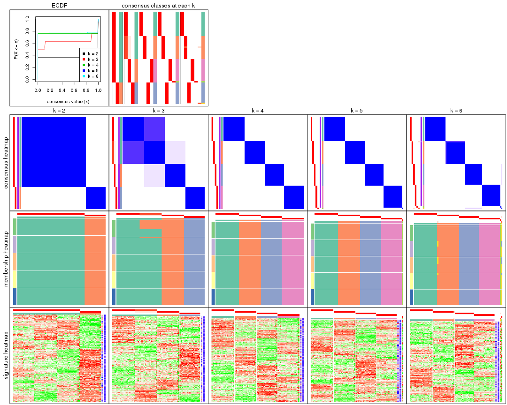
The plots are:
k and the heatmap of
predicted classes for each k.k.k.k.All the plots in panels can be made by individual functions and they are plotted later in this section.
select_partition_number() produces several plots showing different
statistics for choosing “optimized” k. There are following statistics:
k;k, the area increased is defined as \(A_k - A_{k-1}\).The detailed explanations of these statistics can be found in the cola vignette.
Generally speaking, lower PAC score, higher mean silhouette score or higher
concordance corresponds to better partition. Rand index and Jaccard index
measure how similar the current partition is compared to partition with k-1.
If they are too similar, we won't accept k is better than k-1.
select_partition_number(res)
The numeric values for all these statistics can be obtained by get_stats().
get_stats(res)
#> k 1-PAC mean_silhouette concordance area_increased Rand Jaccard
#> 2 2 1.000 1.000 1.000 0.36644 0.634 0.634
#> 3 3 0.739 0.966 0.971 0.71257 0.739 0.589
#> 4 4 1.000 1.000 1.000 0.21171 0.866 0.642
#> 5 5 1.000 0.986 1.000 0.00874 0.993 0.972
#> 6 6 1.000 0.967 0.995 0.00824 0.994 0.973
suggest_best_k() suggests the best \(k\) based on these statistics. The rules are as follows:
NA.suggest_best_k(res)
#> [1] 4
#> attr(,"optional")
#> [1] 2
There is also optional best \(k\) = 2 that is worth to check.
Following shows the table of the partitions (You need to click the show/hide
code output link to see it). The membership matrix (columns with name p*)
is inferred by
clue::cl_consensus()
function with the SE method. Basically the value in the membership matrix
represents the probability to belong to a certain group. The finall class
label for an item is determined with the group with highest probability it
belongs to.
In get_classes() function, the entropy is calculated from the membership
matrix and the silhouette score is calculated from the consensus matrix.
cbind(get_classes(res, k = 2), get_membership(res, k = 2))
#> class entropy silhouette p1 p2
#> SRR942117 1 0 1 1 0
#> SRR942118 1 0 1 1 0
#> SRR942119 1 0 1 1 0
#> SRR942120 1 0 1 1 0
#> SRR942121 1 0 1 1 0
#> SRR942122 1 0 1 1 0
#> SRR942123 1 0 1 1 0
#> SRR942124 1 0 1 1 0
#> SRR942125 1 0 1 1 0
#> SRR942126 1 0 1 1 0
#> SRR942127 1 0 1 1 0
#> SRR942128 1 0 1 1 0
#> SRR942129 1 0 1 1 0
#> SRR942130 1 0 1 1 0
#> SRR942131 1 0 1 1 0
#> SRR942132 1 0 1 1 0
#> SRR942133 1 0 1 1 0
#> SRR942134 1 0 1 1 0
#> SRR942144 1 0 1 1 0
#> SRR942145 1 0 1 1 0
#> SRR942146 1 0 1 1 0
#> SRR942147 1 0 1 1 0
#> SRR942148 1 0 1 1 0
#> SRR942149 1 0 1 1 0
#> SRR942150 1 0 1 1 0
#> SRR942151 1 0 1 1 0
#> SRR942152 1 0 1 1 0
#> SRR942135 1 0 1 1 0
#> SRR942136 1 0 1 1 0
#> SRR942137 1 0 1 1 0
#> SRR942138 1 0 1 1 0
#> SRR942139 1 0 1 1 0
#> SRR942140 1 0 1 1 0
#> SRR942141 1 0 1 1 0
#> SRR942142 1 0 1 1 0
#> SRR942143 1 0 1 1 0
#> SRR942153 2 0 1 0 1
#> SRR942154 2 0 1 0 1
#> SRR942155 2 0 1 0 1
#> SRR942156 2 0 1 0 1
#> SRR942157 2 0 1 0 1
#> SRR942158 2 0 1 0 1
#> SRR942159 2 0 1 0 1
#> SRR942160 2 0 1 0 1
#> SRR942161 2 0 1 0 1
#> SRR942162 2 0 1 0 1
#> SRR942163 2 0 1 0 1
#> SRR942164 2 0 1 0 1
#> SRR942166 2 0 1 0 1
#> SRR942167 2 0 1 0 1
#> SRR942168 2 0 1 0 1
#> SRR942169 2 0 1 0 1
#> SRR942170 2 0 1 0 1
#> SRR942171 1 0 1 1 0
#> SRR942172 1 0 1 1 0
#> SRR942173 1 0 1 1 0
#> SRR942174 1 0 1 1 0
#> SRR942175 1 0 1 1 0
#> SRR942176 1 0 1 1 0
#> SRR942177 1 0 1 1 0
#> SRR942178 1 0 1 1 0
#> SRR942179 1 0 1 1 0
#> SRR942180 1 0 1 1 0
#> SRR942181 1 0 1 1 0
#> SRR942182 1 0 1 1 0
#> SRR942183 1 0 1 1 0
#> SRR942184 1 0 1 1 0
#> SRR942185 1 0 1 1 0
#> SRR942186 1 0 1 1 0
#> SRR942187 1 0 1 1 0
#> SRR942188 1 0 1 1 0
#> SRR942189 1 0 1 1 0
cbind(get_classes(res, k = 3), get_membership(res, k = 3))
#> class entropy silhouette p1 p2 p3
#> SRR942117 1 0.327 0.931 0.884 0.116 0
#> SRR942118 1 0.327 0.931 0.884 0.116 0
#> SRR942119 1 0.327 0.931 0.884 0.116 0
#> SRR942120 1 0.327 0.931 0.884 0.116 0
#> SRR942121 1 0.327 0.931 0.884 0.116 0
#> SRR942122 1 0.327 0.931 0.884 0.116 0
#> SRR942123 1 0.327 0.931 0.884 0.116 0
#> SRR942124 1 0.327 0.931 0.884 0.116 0
#> SRR942125 1 0.327 0.931 0.884 0.116 0
#> SRR942126 1 0.327 0.931 0.884 0.116 0
#> SRR942127 1 0.327 0.931 0.884 0.116 0
#> SRR942128 1 0.327 0.931 0.884 0.116 0
#> SRR942129 1 0.327 0.931 0.884 0.116 0
#> SRR942130 1 0.327 0.931 0.884 0.116 0
#> SRR942131 1 0.327 0.931 0.884 0.116 0
#> SRR942132 1 0.327 0.931 0.884 0.116 0
#> SRR942133 1 0.327 0.931 0.884 0.116 0
#> SRR942134 1 0.327 0.931 0.884 0.116 0
#> SRR942144 2 0.000 1.000 0.000 1.000 0
#> SRR942145 2 0.000 1.000 0.000 1.000 0
#> SRR942146 2 0.000 1.000 0.000 1.000 0
#> SRR942147 2 0.000 1.000 0.000 1.000 0
#> SRR942148 2 0.000 1.000 0.000 1.000 0
#> SRR942149 2 0.000 1.000 0.000 1.000 0
#> SRR942150 2 0.000 1.000 0.000 1.000 0
#> SRR942151 2 0.000 1.000 0.000 1.000 0
#> SRR942152 2 0.000 1.000 0.000 1.000 0
#> SRR942135 2 0.000 1.000 0.000 1.000 0
#> SRR942136 2 0.000 1.000 0.000 1.000 0
#> SRR942137 2 0.000 1.000 0.000 1.000 0
#> SRR942138 2 0.000 1.000 0.000 1.000 0
#> SRR942139 2 0.000 1.000 0.000 1.000 0
#> SRR942140 2 0.000 1.000 0.000 1.000 0
#> SRR942141 2 0.000 1.000 0.000 1.000 0
#> SRR942142 2 0.000 1.000 0.000 1.000 0
#> SRR942143 2 0.000 1.000 0.000 1.000 0
#> SRR942153 3 0.000 1.000 0.000 0.000 1
#> SRR942154 3 0.000 1.000 0.000 0.000 1
#> SRR942155 3 0.000 1.000 0.000 0.000 1
#> SRR942156 3 0.000 1.000 0.000 0.000 1
#> SRR942157 3 0.000 1.000 0.000 0.000 1
#> SRR942158 3 0.000 1.000 0.000 0.000 1
#> SRR942159 3 0.000 1.000 0.000 0.000 1
#> SRR942160 3 0.000 1.000 0.000 0.000 1
#> SRR942161 3 0.000 1.000 0.000 0.000 1
#> SRR942162 3 0.000 1.000 0.000 0.000 1
#> SRR942163 3 0.000 1.000 0.000 0.000 1
#> SRR942164 3 0.000 1.000 0.000 0.000 1
#> SRR942166 3 0.000 1.000 0.000 0.000 1
#> SRR942167 3 0.000 1.000 0.000 0.000 1
#> SRR942168 3 0.000 1.000 0.000 0.000 1
#> SRR942169 3 0.000 1.000 0.000 0.000 1
#> SRR942170 3 0.000 1.000 0.000 0.000 1
#> SRR942171 1 0.000 0.938 1.000 0.000 0
#> SRR942172 1 0.000 0.938 1.000 0.000 0
#> SRR942173 1 0.000 0.938 1.000 0.000 0
#> SRR942174 1 0.000 0.938 1.000 0.000 0
#> SRR942175 1 0.000 0.938 1.000 0.000 0
#> SRR942176 1 0.000 0.938 1.000 0.000 0
#> SRR942177 1 0.000 0.938 1.000 0.000 0
#> SRR942178 1 0.000 0.938 1.000 0.000 0
#> SRR942179 1 0.000 0.938 1.000 0.000 0
#> SRR942180 1 0.000 0.938 1.000 0.000 0
#> SRR942181 1 0.000 0.938 1.000 0.000 0
#> SRR942182 1 0.000 0.938 1.000 0.000 0
#> SRR942183 1 0.000 0.938 1.000 0.000 0
#> SRR942184 1 0.000 0.938 1.000 0.000 0
#> SRR942185 1 0.000 0.938 1.000 0.000 0
#> SRR942186 1 0.000 0.938 1.000 0.000 0
#> SRR942187 1 0.000 0.938 1.000 0.000 0
#> SRR942188 1 0.000 0.938 1.000 0.000 0
#> SRR942189 1 0.000 0.938 1.000 0.000 0
cbind(get_classes(res, k = 4), get_membership(res, k = 4))
#> class entropy silhouette p1 p2 p3 p4
#> SRR942117 2 0 1 0 1 0 0
#> SRR942118 2 0 1 0 1 0 0
#> SRR942119 2 0 1 0 1 0 0
#> SRR942120 2 0 1 0 1 0 0
#> SRR942121 2 0 1 0 1 0 0
#> SRR942122 2 0 1 0 1 0 0
#> SRR942123 2 0 1 0 1 0 0
#> SRR942124 2 0 1 0 1 0 0
#> SRR942125 2 0 1 0 1 0 0
#> SRR942126 2 0 1 0 1 0 0
#> SRR942127 2 0 1 0 1 0 0
#> SRR942128 2 0 1 0 1 0 0
#> SRR942129 2 0 1 0 1 0 0
#> SRR942130 2 0 1 0 1 0 0
#> SRR942131 2 0 1 0 1 0 0
#> SRR942132 2 0 1 0 1 0 0
#> SRR942133 2 0 1 0 1 0 0
#> SRR942134 2 0 1 0 1 0 0
#> SRR942144 4 0 1 0 0 0 1
#> SRR942145 4 0 1 0 0 0 1
#> SRR942146 4 0 1 0 0 0 1
#> SRR942147 4 0 1 0 0 0 1
#> SRR942148 4 0 1 0 0 0 1
#> SRR942149 4 0 1 0 0 0 1
#> SRR942150 4 0 1 0 0 0 1
#> SRR942151 4 0 1 0 0 0 1
#> SRR942152 4 0 1 0 0 0 1
#> SRR942135 4 0 1 0 0 0 1
#> SRR942136 4 0 1 0 0 0 1
#> SRR942137 4 0 1 0 0 0 1
#> SRR942138 4 0 1 0 0 0 1
#> SRR942139 4 0 1 0 0 0 1
#> SRR942140 4 0 1 0 0 0 1
#> SRR942141 4 0 1 0 0 0 1
#> SRR942142 4 0 1 0 0 0 1
#> SRR942143 4 0 1 0 0 0 1
#> SRR942153 3 0 1 0 0 1 0
#> SRR942154 3 0 1 0 0 1 0
#> SRR942155 3 0 1 0 0 1 0
#> SRR942156 3 0 1 0 0 1 0
#> SRR942157 3 0 1 0 0 1 0
#> SRR942158 3 0 1 0 0 1 0
#> SRR942159 3 0 1 0 0 1 0
#> SRR942160 3 0 1 0 0 1 0
#> SRR942161 3 0 1 0 0 1 0
#> SRR942162 3 0 1 0 0 1 0
#> SRR942163 3 0 1 0 0 1 0
#> SRR942164 3 0 1 0 0 1 0
#> SRR942166 3 0 1 0 0 1 0
#> SRR942167 3 0 1 0 0 1 0
#> SRR942168 3 0 1 0 0 1 0
#> SRR942169 3 0 1 0 0 1 0
#> SRR942170 3 0 1 0 0 1 0
#> SRR942171 1 0 1 1 0 0 0
#> SRR942172 1 0 1 1 0 0 0
#> SRR942173 1 0 1 1 0 0 0
#> SRR942174 1 0 1 1 0 0 0
#> SRR942175 1 0 1 1 0 0 0
#> SRR942176 1 0 1 1 0 0 0
#> SRR942177 1 0 1 1 0 0 0
#> SRR942178 1 0 1 1 0 0 0
#> SRR942179 1 0 1 1 0 0 0
#> SRR942180 1 0 1 1 0 0 0
#> SRR942181 1 0 1 1 0 0 0
#> SRR942182 1 0 1 1 0 0 0
#> SRR942183 1 0 1 1 0 0 0
#> SRR942184 1 0 1 1 0 0 0
#> SRR942185 1 0 1 1 0 0 0
#> SRR942186 1 0 1 1 0 0 0
#> SRR942187 1 0 1 1 0 0 0
#> SRR942188 1 0 1 1 0 0 0
#> SRR942189 1 0 1 1 0 0 0
cbind(get_classes(res, k = 5), get_membership(res, k = 5))
#> class entropy silhouette p1 p2 p3 p4 p5
#> SRR942117 2 0 1 0 1 0 0 0
#> SRR942118 2 0 1 0 1 0 0 0
#> SRR942119 2 0 1 0 1 0 0 0
#> SRR942120 2 0 1 0 1 0 0 0
#> SRR942121 2 0 1 0 1 0 0 0
#> SRR942122 2 0 1 0 1 0 0 0
#> SRR942123 2 0 1 0 1 0 0 0
#> SRR942124 2 0 1 0 1 0 0 0
#> SRR942125 2 0 1 0 1 0 0 0
#> SRR942126 2 0 1 0 1 0 0 0
#> SRR942127 2 0 1 0 1 0 0 0
#> SRR942128 2 0 1 0 1 0 0 0
#> SRR942129 2 0 1 0 1 0 0 0
#> SRR942130 2 0 1 0 1 0 0 0
#> SRR942131 2 0 1 0 1 0 0 0
#> SRR942132 2 0 1 0 1 0 0 0
#> SRR942133 2 0 1 0 1 0 0 0
#> SRR942134 2 0 1 0 1 0 0 0
#> SRR942144 4 0 1 0 0 0 1 0
#> SRR942145 4 0 1 0 0 0 1 0
#> SRR942146 4 0 1 0 0 0 1 0
#> SRR942147 4 0 1 0 0 0 1 0
#> SRR942148 4 0 1 0 0 0 1 0
#> SRR942149 4 0 1 0 0 0 1 0
#> SRR942150 4 0 1 0 0 0 1 0
#> SRR942151 4 0 1 0 0 0 1 0
#> SRR942152 4 0 1 0 0 0 1 0
#> SRR942135 4 0 1 0 0 0 1 0
#> SRR942136 4 0 1 0 0 0 1 0
#> SRR942137 4 0 1 0 0 0 1 0
#> SRR942138 4 0 1 0 0 0 1 0
#> SRR942139 4 0 1 0 0 0 1 0
#> SRR942140 4 0 1 0 0 0 1 0
#> SRR942141 4 0 1 0 0 0 1 0
#> SRR942142 4 0 1 0 0 0 1 0
#> SRR942143 5 0 0 0 0 0 0 1
#> SRR942153 3 0 1 0 0 1 0 0
#> SRR942154 3 0 1 0 0 1 0 0
#> SRR942155 3 0 1 0 0 1 0 0
#> SRR942156 3 0 1 0 0 1 0 0
#> SRR942157 3 0 1 0 0 1 0 0
#> SRR942158 3 0 1 0 0 1 0 0
#> SRR942159 3 0 1 0 0 1 0 0
#> SRR942160 3 0 1 0 0 1 0 0
#> SRR942161 3 0 1 0 0 1 0 0
#> SRR942162 3 0 1 0 0 1 0 0
#> SRR942163 3 0 1 0 0 1 0 0
#> SRR942164 3 0 1 0 0 1 0 0
#> SRR942166 3 0 1 0 0 1 0 0
#> SRR942167 3 0 1 0 0 1 0 0
#> SRR942168 3 0 1 0 0 1 0 0
#> SRR942169 3 0 1 0 0 1 0 0
#> SRR942170 3 0 1 0 0 1 0 0
#> SRR942171 1 0 1 1 0 0 0 0
#> SRR942172 1 0 1 1 0 0 0 0
#> SRR942173 1 0 1 1 0 0 0 0
#> SRR942174 1 0 1 1 0 0 0 0
#> SRR942175 1 0 1 1 0 0 0 0
#> SRR942176 1 0 1 1 0 0 0 0
#> SRR942177 1 0 1 1 0 0 0 0
#> SRR942178 1 0 1 1 0 0 0 0
#> SRR942179 1 0 1 1 0 0 0 0
#> SRR942180 1 0 1 1 0 0 0 0
#> SRR942181 1 0 1 1 0 0 0 0
#> SRR942182 1 0 1 1 0 0 0 0
#> SRR942183 1 0 1 1 0 0 0 0
#> SRR942184 1 0 1 1 0 0 0 0
#> SRR942185 1 0 1 1 0 0 0 0
#> SRR942186 1 0 1 1 0 0 0 0
#> SRR942187 1 0 1 1 0 0 0 0
#> SRR942188 1 0 1 1 0 0 0 0
#> SRR942189 1 0 1 1 0 0 0 0
cbind(get_classes(res, k = 6), get_membership(res, k = 6))
#> class entropy silhouette p1 p2 p3 p4 p5 p6
#> SRR942117 2 0.00 0.990 0 1.000 0.000 0 0 0.000
#> SRR942118 2 0.00 0.990 0 1.000 0.000 0 0 0.000
#> SRR942119 2 0.00 0.990 0 1.000 0.000 0 0 0.000
#> SRR942120 2 0.00 0.990 0 1.000 0.000 0 0 0.000
#> SRR942121 2 0.00 0.990 0 1.000 0.000 0 0 0.000
#> SRR942122 2 0.00 0.990 0 1.000 0.000 0 0 0.000
#> SRR942123 2 0.00 0.990 0 1.000 0.000 0 0 0.000
#> SRR942124 2 0.00 0.990 0 1.000 0.000 0 0 0.000
#> SRR942125 2 0.26 0.797 0 0.824 0.000 0 0 0.176
#> SRR942126 2 0.00 0.990 0 1.000 0.000 0 0 0.000
#> SRR942127 2 0.00 0.990 0 1.000 0.000 0 0 0.000
#> SRR942128 2 0.00 0.990 0 1.000 0.000 0 0 0.000
#> SRR942129 2 0.00 0.990 0 1.000 0.000 0 0 0.000
#> SRR942130 2 0.00 0.990 0 1.000 0.000 0 0 0.000
#> SRR942131 2 0.00 0.990 0 1.000 0.000 0 0 0.000
#> SRR942132 2 0.00 0.990 0 1.000 0.000 0 0 0.000
#> SRR942133 2 0.00 0.990 0 1.000 0.000 0 0 0.000
#> SRR942134 2 0.00 0.990 0 1.000 0.000 0 0 0.000
#> SRR942144 4 0.00 1.000 0 0.000 0.000 1 0 0.000
#> SRR942145 4 0.00 1.000 0 0.000 0.000 1 0 0.000
#> SRR942146 4 0.00 1.000 0 0.000 0.000 1 0 0.000
#> SRR942147 4 0.00 1.000 0 0.000 0.000 1 0 0.000
#> SRR942148 4 0.00 1.000 0 0.000 0.000 1 0 0.000
#> SRR942149 4 0.00 1.000 0 0.000 0.000 1 0 0.000
#> SRR942150 4 0.00 1.000 0 0.000 0.000 1 0 0.000
#> SRR942151 4 0.00 1.000 0 0.000 0.000 1 0 0.000
#> SRR942152 4 0.00 1.000 0 0.000 0.000 1 0 0.000
#> SRR942135 4 0.00 1.000 0 0.000 0.000 1 0 0.000
#> SRR942136 4 0.00 1.000 0 0.000 0.000 1 0 0.000
#> SRR942137 4 0.00 1.000 0 0.000 0.000 1 0 0.000
#> SRR942138 4 0.00 1.000 0 0.000 0.000 1 0 0.000
#> SRR942139 4 0.00 1.000 0 0.000 0.000 1 0 0.000
#> SRR942140 4 0.00 1.000 0 0.000 0.000 1 0 0.000
#> SRR942141 4 0.00 1.000 0 0.000 0.000 1 0 0.000
#> SRR942142 4 0.00 1.000 0 0.000 0.000 1 0 0.000
#> SRR942143 5 0.00 0.000 0 0.000 0.000 0 1 0.000
#> SRR942153 3 0.00 1.000 0 0.000 1.000 0 0 0.000
#> SRR942154 3 0.00 1.000 0 0.000 1.000 0 0 0.000
#> SRR942155 3 0.00 1.000 0 0.000 1.000 0 0 0.000
#> SRR942156 3 0.00 1.000 0 0.000 1.000 0 0 0.000
#> SRR942157 3 0.00 1.000 0 0.000 1.000 0 0 0.000
#> SRR942158 3 0.00 1.000 0 0.000 1.000 0 0 0.000
#> SRR942159 3 0.00 1.000 0 0.000 1.000 0 0 0.000
#> SRR942160 3 0.00 1.000 0 0.000 1.000 0 0 0.000
#> SRR942161 6 0.26 0.000 0 0.000 0.176 0 0 0.824
#> SRR942162 3 0.00 1.000 0 0.000 1.000 0 0 0.000
#> SRR942163 3 0.00 1.000 0 0.000 1.000 0 0 0.000
#> SRR942164 3 0.00 1.000 0 0.000 1.000 0 0 0.000
#> SRR942166 3 0.00 1.000 0 0.000 1.000 0 0 0.000
#> SRR942167 3 0.00 1.000 0 0.000 1.000 0 0 0.000
#> SRR942168 3 0.00 1.000 0 0.000 1.000 0 0 0.000
#> SRR942169 3 0.00 1.000 0 0.000 1.000 0 0 0.000
#> SRR942170 3 0.00 1.000 0 0.000 1.000 0 0 0.000
#> SRR942171 1 0.00 1.000 1 0.000 0.000 0 0 0.000
#> SRR942172 1 0.00 1.000 1 0.000 0.000 0 0 0.000
#> SRR942173 1 0.00 1.000 1 0.000 0.000 0 0 0.000
#> SRR942174 1 0.00 1.000 1 0.000 0.000 0 0 0.000
#> SRR942175 1 0.00 1.000 1 0.000 0.000 0 0 0.000
#> SRR942176 1 0.00 1.000 1 0.000 0.000 0 0 0.000
#> SRR942177 1 0.00 1.000 1 0.000 0.000 0 0 0.000
#> SRR942178 1 0.00 1.000 1 0.000 0.000 0 0 0.000
#> SRR942179 1 0.00 1.000 1 0.000 0.000 0 0 0.000
#> SRR942180 1 0.00 1.000 1 0.000 0.000 0 0 0.000
#> SRR942181 1 0.00 1.000 1 0.000 0.000 0 0 0.000
#> SRR942182 1 0.00 1.000 1 0.000 0.000 0 0 0.000
#> SRR942183 1 0.00 1.000 1 0.000 0.000 0 0 0.000
#> SRR942184 1 0.00 1.000 1 0.000 0.000 0 0 0.000
#> SRR942185 1 0.00 1.000 1 0.000 0.000 0 0 0.000
#> SRR942186 1 0.00 1.000 1 0.000 0.000 0 0 0.000
#> SRR942187 1 0.00 1.000 1 0.000 0.000 0 0 0.000
#> SRR942188 1 0.00 1.000 1 0.000 0.000 0 0 0.000
#> SRR942189 1 0.00 1.000 1 0.000 0.000 0 0 0.000
Heatmaps for the consensus matrix. It visualizes the probability of two samples to be in a same group.
consensus_heatmap(res, k = 2)
consensus_heatmap(res, k = 3)
consensus_heatmap(res, k = 4)

consensus_heatmap(res, k = 5)

consensus_heatmap(res, k = 6)
Heatmaps for the membership of samples in all partitions to see how consistent they are:
membership_heatmap(res, k = 2)
membership_heatmap(res, k = 3)
membership_heatmap(res, k = 4)

membership_heatmap(res, k = 5)

membership_heatmap(res, k = 6)
As soon as we have had the classes for columns, we can look for signatures which are significantly different between classes which can be candidate marks for certain classes. Following are the heatmaps for signatures.
Signature heatmaps where rows are scaled:
get_signatures(res, k = 2)

get_signatures(res, k = 3)
get_signatures(res, k = 4)

get_signatures(res, k = 5)

get_signatures(res, k = 6)
Signature heatmaps where rows are not scaled:
get_signatures(res, k = 2, scale_rows = FALSE)

get_signatures(res, k = 3, scale_rows = FALSE)
get_signatures(res, k = 4, scale_rows = FALSE)

get_signatures(res, k = 5, scale_rows = FALSE)

get_signatures(res, k = 6, scale_rows = FALSE)
Compare the overlap of signatures from different k:
compare_signatures(res)

get_signature() returns a data frame invisibly. TO get the list of signatures, the function
call should be assigned to a variable explicitly. In following code, if plot argument is set
to FALSE, no heatmap is plotted while only the differential analysis is performed.
# code only for demonstration
tb = get_signature(res, k = ..., plot = FALSE)
An example of the output of tb is:
#> which_row fdr mean_1 mean_2 scaled_mean_1 scaled_mean_2 km
#> 1 38 0.042760348 8.373488 9.131774 -0.5533452 0.5164555 1
#> 2 40 0.018707592 7.106213 8.469186 -0.6173731 0.5762149 1
#> 3 55 0.019134737 10.221463 11.207825 -0.6159697 0.5749050 1
#> 4 59 0.006059896 5.921854 7.869574 -0.6899429 0.6439467 1
#> 5 60 0.018055526 8.928898 10.211722 -0.6204761 0.5791110 1
#> 6 98 0.009384629 15.714769 14.887706 0.6635654 -0.6193277 2
...
The columns in tb are:
which_row: row indices corresponding to the input matrix.fdr: FDR for the differential test. mean_x: The mean value in group x.scaled_mean_x: The mean value in group x after rows are scaled.km: Row groups if k-means clustering is applied to rows.UMAP plot which shows how samples are separated.
dimension_reduction(res, k = 2, method = "UMAP")
dimension_reduction(res, k = 3, method = "UMAP")
dimension_reduction(res, k = 4, method = "UMAP")
dimension_reduction(res, k = 5, method = "UMAP")

dimension_reduction(res, k = 6, method = "UMAP")
Following heatmap shows how subgroups are split when increasing k:
collect_classes(res)
If matrix rows can be associated to genes, consider to use GO_Enrichment(res,
...) to perform function enrichment for the signature genes.
The object with results only for a single top-value method and a single partition method can be extracted as:
res = res_list["SD", "kmeans"]
# you can also extract it by
# res = res_list["SD:kmeans"]
A summary of res and all the functions that can be applied to it:
res
#> A 'ConsensusPartition' object with k = 2, 3, 4, 5, 6.
#> On a matrix with 13183 rows and 72 columns.
#> Top rows (1000, 2000, 3000, 4000, 5000) are extracted by 'SD' method.
#> Subgroups are detected by 'kmeans' method.
#> Performed in total 1250 partitions by row resampling.
#> Best k for subgroups seems to be 3.
#>
#> Following methods can be applied to this 'ConsensusPartition' object:
#> [1] "cola_report" "collect_classes" "collect_plots"
#> [4] "collect_stats" "colnames" "compare_signatures"
#> [7] "consensus_heatmap" "dimension_reduction" "functional_enrichment"
#> [10] "get_anno_col" "get_anno" "get_classes"
#> [13] "get_consensus" "get_matrix" "get_membership"
#> [16] "get_param" "get_signatures" "get_stats"
#> [19] "is_best_k" "is_stable_k" "membership_heatmap"
#> [22] "ncol" "nrow" "plot_ecdf"
#> [25] "rownames" "select_partition_number" "show"
#> [28] "suggest_best_k" "test_to_known_factors"
collect_plots() function collects all the plots made from res for all k (number of partitions)
into one single page to provide an easy and fast comparison between different k.
collect_plots(res)
The plots are:
k and the heatmap of
predicted classes for each k.k.k.k.All the plots in panels can be made by individual functions and they are plotted later in this section.
select_partition_number() produces several plots showing different
statistics for choosing “optimized” k. There are following statistics:
k;k, the area increased is defined as \(A_k - A_{k-1}\).The detailed explanations of these statistics can be found in the cola vignette.
Generally speaking, lower PAC score, higher mean silhouette score or higher
concordance corresponds to better partition. Rand index and Jaccard index
measure how similar the current partition is compared to partition with k-1.
If they are too similar, we won't accept k is better than k-1.
select_partition_number(res)
The numeric values for all these statistics can be obtained by get_stats().
get_stats(res)
#> k 1-PAC mean_silhouette concordance area_increased Rand Jaccard
#> 2 2 0.240 0.669 0.714 0.3798 0.634 0.634
#> 3 3 0.370 0.804 0.691 0.5034 0.732 0.578
#> 4 4 0.590 0.950 0.798 0.2082 0.873 0.654
#> 5 5 0.658 0.904 0.819 0.0724 1.000 1.000
#> 6 6 0.743 0.850 0.807 0.0549 1.000 1.000
suggest_best_k() suggests the best \(k\) based on these statistics. The rules are as follows:
NA.suggest_best_k(res)
#> [1] 3
Following shows the table of the partitions (You need to click the show/hide
code output link to see it). The membership matrix (columns with name p*)
is inferred by
clue::cl_consensus()
function with the SE method. Basically the value in the membership matrix
represents the probability to belong to a certain group. The finall class
label for an item is determined with the group with highest probability it
belongs to.
In get_classes() function, the entropy is calculated from the membership
matrix and the silhouette score is calculated from the consensus matrix.
cbind(get_classes(res, k = 2), get_membership(res, k = 2))
#> class entropy silhouette p1 p2
#> SRR942117 1 1.000 0.592 0.504 0.496
#> SRR942118 1 1.000 0.592 0.504 0.496
#> SRR942119 1 1.000 0.592 0.504 0.496
#> SRR942120 1 1.000 0.592 0.504 0.496
#> SRR942121 1 1.000 0.592 0.504 0.496
#> SRR942122 1 1.000 0.592 0.504 0.496
#> SRR942123 1 1.000 0.592 0.504 0.496
#> SRR942124 1 1.000 0.592 0.504 0.496
#> SRR942125 1 1.000 0.592 0.504 0.496
#> SRR942126 1 1.000 0.592 0.504 0.496
#> SRR942127 1 1.000 0.592 0.504 0.496
#> SRR942128 1 1.000 0.592 0.504 0.496
#> SRR942129 1 1.000 0.592 0.504 0.496
#> SRR942130 1 1.000 0.592 0.504 0.496
#> SRR942131 1 1.000 0.592 0.504 0.496
#> SRR942132 1 1.000 0.592 0.504 0.496
#> SRR942133 1 1.000 0.592 0.504 0.496
#> SRR942134 1 1.000 0.592 0.504 0.496
#> SRR942144 1 0.958 0.546 0.620 0.380
#> SRR942145 1 0.958 0.546 0.620 0.380
#> SRR942146 1 0.958 0.546 0.620 0.380
#> SRR942147 1 0.958 0.546 0.620 0.380
#> SRR942148 1 0.958 0.546 0.620 0.380
#> SRR942149 1 0.958 0.546 0.620 0.380
#> SRR942150 1 0.958 0.546 0.620 0.380
#> SRR942151 1 0.958 0.546 0.620 0.380
#> SRR942152 1 0.958 0.546 0.620 0.380
#> SRR942135 1 0.958 0.546 0.620 0.380
#> SRR942136 1 0.958 0.546 0.620 0.380
#> SRR942137 1 0.958 0.546 0.620 0.380
#> SRR942138 1 0.958 0.546 0.620 0.380
#> SRR942139 1 0.958 0.546 0.620 0.380
#> SRR942140 1 0.958 0.546 0.620 0.380
#> SRR942141 1 0.958 0.546 0.620 0.380
#> SRR942142 1 0.958 0.546 0.620 0.380
#> SRR942143 1 0.980 0.519 0.584 0.416
#> SRR942153 2 0.850 1.000 0.276 0.724
#> SRR942154 2 0.850 1.000 0.276 0.724
#> SRR942155 2 0.850 1.000 0.276 0.724
#> SRR942156 2 0.850 1.000 0.276 0.724
#> SRR942157 2 0.850 1.000 0.276 0.724
#> SRR942158 2 0.850 1.000 0.276 0.724
#> SRR942159 2 0.850 1.000 0.276 0.724
#> SRR942160 2 0.850 1.000 0.276 0.724
#> SRR942161 2 0.850 1.000 0.276 0.724
#> SRR942162 2 0.850 1.000 0.276 0.724
#> SRR942163 2 0.850 1.000 0.276 0.724
#> SRR942164 2 0.850 1.000 0.276 0.724
#> SRR942166 2 0.850 1.000 0.276 0.724
#> SRR942167 2 0.850 1.000 0.276 0.724
#> SRR942168 2 0.850 1.000 0.276 0.724
#> SRR942169 2 0.850 1.000 0.276 0.724
#> SRR942170 2 0.850 1.000 0.276 0.724
#> SRR942171 1 0.000 0.563 1.000 0.000
#> SRR942172 1 0.000 0.563 1.000 0.000
#> SRR942173 1 0.000 0.563 1.000 0.000
#> SRR942174 1 0.000 0.563 1.000 0.000
#> SRR942175 1 0.000 0.563 1.000 0.000
#> SRR942176 1 0.000 0.563 1.000 0.000
#> SRR942177 1 0.000 0.563 1.000 0.000
#> SRR942178 1 0.000 0.563 1.000 0.000
#> SRR942179 1 0.000 0.563 1.000 0.000
#> SRR942180 1 0.000 0.563 1.000 0.000
#> SRR942181 1 0.000 0.563 1.000 0.000
#> SRR942182 1 0.000 0.563 1.000 0.000
#> SRR942183 1 0.000 0.563 1.000 0.000
#> SRR942184 1 0.000 0.563 1.000 0.000
#> SRR942185 1 0.000 0.563 1.000 0.000
#> SRR942186 1 0.000 0.563 1.000 0.000
#> SRR942187 1 0.000 0.563 1.000 0.000
#> SRR942188 1 0.000 0.563 1.000 0.000
#> SRR942189 1 0.000 0.563 1.000 0.000
cbind(get_classes(res, k = 3), get_membership(res, k = 3))
#> class entropy silhouette p1 p2 p3
#> SRR942117 2 0.5692 0.668 0.176 0.784 0.040
#> SRR942118 2 0.5692 0.668 0.176 0.784 0.040
#> SRR942119 2 0.5692 0.668 0.176 0.784 0.040
#> SRR942120 2 0.5692 0.668 0.176 0.784 0.040
#> SRR942121 2 0.5692 0.668 0.176 0.784 0.040
#> SRR942122 2 0.5692 0.668 0.176 0.784 0.040
#> SRR942123 2 0.5692 0.668 0.176 0.784 0.040
#> SRR942124 2 0.5692 0.668 0.176 0.784 0.040
#> SRR942125 2 0.5692 0.668 0.176 0.784 0.040
#> SRR942126 2 0.4805 0.668 0.176 0.812 0.012
#> SRR942127 2 0.4805 0.668 0.176 0.812 0.012
#> SRR942128 2 0.4805 0.668 0.176 0.812 0.012
#> SRR942129 2 0.4805 0.668 0.176 0.812 0.012
#> SRR942130 2 0.4805 0.668 0.176 0.812 0.012
#> SRR942131 2 0.4805 0.668 0.176 0.812 0.012
#> SRR942132 2 0.4805 0.668 0.176 0.812 0.012
#> SRR942133 2 0.4805 0.668 0.176 0.812 0.012
#> SRR942134 2 0.4805 0.668 0.176 0.812 0.012
#> SRR942144 2 0.9405 0.619 0.324 0.484 0.192
#> SRR942145 2 0.9405 0.619 0.324 0.484 0.192
#> SRR942146 2 0.9405 0.619 0.324 0.484 0.192
#> SRR942147 2 0.9405 0.619 0.324 0.484 0.192
#> SRR942148 2 0.9405 0.619 0.324 0.484 0.192
#> SRR942149 2 0.9405 0.619 0.324 0.484 0.192
#> SRR942150 2 0.9405 0.619 0.324 0.484 0.192
#> SRR942151 2 0.9405 0.619 0.324 0.484 0.192
#> SRR942152 2 0.9405 0.619 0.324 0.484 0.192
#> SRR942135 2 0.9405 0.619 0.324 0.484 0.192
#> SRR942136 2 0.9405 0.619 0.324 0.484 0.192
#> SRR942137 2 0.9405 0.619 0.324 0.484 0.192
#> SRR942138 2 0.9405 0.619 0.324 0.484 0.192
#> SRR942139 2 0.9405 0.619 0.324 0.484 0.192
#> SRR942140 2 0.9405 0.619 0.324 0.484 0.192
#> SRR942141 2 0.9405 0.619 0.324 0.484 0.192
#> SRR942142 2 0.9405 0.619 0.324 0.484 0.192
#> SRR942143 2 0.9488 0.506 0.256 0.496 0.248
#> SRR942153 3 0.5631 0.979 0.064 0.132 0.804
#> SRR942154 3 0.5631 0.979 0.064 0.132 0.804
#> SRR942155 3 0.5631 0.979 0.064 0.132 0.804
#> SRR942156 3 0.5631 0.979 0.064 0.132 0.804
#> SRR942157 3 0.5631 0.979 0.064 0.132 0.804
#> SRR942158 3 0.5631 0.979 0.064 0.132 0.804
#> SRR942159 3 0.5631 0.979 0.064 0.132 0.804
#> SRR942160 3 0.5631 0.979 0.064 0.132 0.804
#> SRR942161 3 0.5631 0.979 0.064 0.132 0.804
#> SRR942162 3 0.6336 0.976 0.064 0.180 0.756
#> SRR942163 3 0.6336 0.976 0.064 0.180 0.756
#> SRR942164 3 0.6336 0.976 0.064 0.180 0.756
#> SRR942166 3 0.6336 0.976 0.064 0.180 0.756
#> SRR942167 3 0.6336 0.976 0.064 0.180 0.756
#> SRR942168 3 0.6336 0.976 0.064 0.180 0.756
#> SRR942169 3 0.6336 0.976 0.064 0.180 0.756
#> SRR942170 3 0.6336 0.976 0.064 0.180 0.756
#> SRR942171 1 0.0237 0.963 0.996 0.000 0.004
#> SRR942172 1 0.0000 0.963 1.000 0.000 0.000
#> SRR942173 1 0.0000 0.963 1.000 0.000 0.000
#> SRR942174 1 0.0000 0.963 1.000 0.000 0.000
#> SRR942175 1 0.0000 0.963 1.000 0.000 0.000
#> SRR942176 1 0.0000 0.963 1.000 0.000 0.000
#> SRR942177 1 0.0237 0.963 0.996 0.000 0.004
#> SRR942178 1 0.0000 0.963 1.000 0.000 0.000
#> SRR942179 1 0.0000 0.963 1.000 0.000 0.000
#> SRR942180 1 0.0000 0.963 1.000 0.000 0.000
#> SRR942181 1 0.2537 0.958 0.920 0.000 0.080
#> SRR942182 1 0.2537 0.958 0.920 0.000 0.080
#> SRR942183 1 0.2537 0.958 0.920 0.000 0.080
#> SRR942184 1 0.2537 0.958 0.920 0.000 0.080
#> SRR942185 1 0.2537 0.958 0.920 0.000 0.080
#> SRR942186 1 0.2537 0.958 0.920 0.000 0.080
#> SRR942187 1 0.2537 0.958 0.920 0.000 0.080
#> SRR942188 1 0.2537 0.958 0.920 0.000 0.080
#> SRR942189 1 0.2711 0.953 0.912 0.000 0.088
cbind(get_classes(res, k = 4), get_membership(res, k = 4))
#> class entropy silhouette p1 p2 p3 p4
#> SRR942117 2 0.2197 0.955 0.004 0.916 0.000 0.080
#> SRR942118 2 0.2197 0.955 0.004 0.916 0.000 0.080
#> SRR942119 2 0.2197 0.955 0.004 0.916 0.000 0.080
#> SRR942120 2 0.2197 0.955 0.004 0.916 0.000 0.080
#> SRR942121 2 0.2125 0.955 0.004 0.920 0.000 0.076
#> SRR942122 2 0.2197 0.955 0.004 0.916 0.000 0.080
#> SRR942123 2 0.2197 0.955 0.004 0.916 0.000 0.080
#> SRR942124 2 0.2197 0.955 0.004 0.916 0.000 0.080
#> SRR942125 2 0.2197 0.955 0.004 0.916 0.000 0.080
#> SRR942126 2 0.0000 0.955 0.000 1.000 0.000 0.000
#> SRR942127 2 0.0000 0.955 0.000 1.000 0.000 0.000
#> SRR942128 2 0.0000 0.955 0.000 1.000 0.000 0.000
#> SRR942129 2 0.0000 0.955 0.000 1.000 0.000 0.000
#> SRR942130 2 0.0000 0.955 0.000 1.000 0.000 0.000
#> SRR942131 2 0.0000 0.955 0.000 1.000 0.000 0.000
#> SRR942132 2 0.0000 0.955 0.000 1.000 0.000 0.000
#> SRR942133 2 0.0000 0.955 0.000 1.000 0.000 0.000
#> SRR942134 2 0.0000 0.955 0.000 1.000 0.000 0.000
#> SRR942144 4 0.8872 0.984 0.080 0.292 0.180 0.448
#> SRR942145 4 0.8872 0.984 0.080 0.292 0.180 0.448
#> SRR942146 4 0.8872 0.984 0.080 0.292 0.180 0.448
#> SRR942147 4 0.8872 0.984 0.080 0.292 0.180 0.448
#> SRR942148 4 0.8872 0.984 0.080 0.292 0.180 0.448
#> SRR942149 4 0.8872 0.984 0.080 0.292 0.180 0.448
#> SRR942150 4 0.8872 0.984 0.080 0.292 0.180 0.448
#> SRR942151 4 0.8872 0.984 0.080 0.292 0.180 0.448
#> SRR942152 4 0.8872 0.984 0.080 0.292 0.180 0.448
#> SRR942135 4 0.8872 0.984 0.080 0.292 0.180 0.448
#> SRR942136 4 0.8872 0.984 0.080 0.292 0.180 0.448
#> SRR942137 4 0.8872 0.984 0.080 0.292 0.180 0.448
#> SRR942138 4 0.8872 0.984 0.080 0.292 0.180 0.448
#> SRR942139 4 0.8872 0.984 0.080 0.292 0.180 0.448
#> SRR942140 4 0.8872 0.984 0.080 0.292 0.180 0.448
#> SRR942141 4 0.8872 0.984 0.080 0.292 0.180 0.448
#> SRR942142 4 0.8872 0.984 0.080 0.292 0.180 0.448
#> SRR942143 4 0.7653 0.722 0.084 0.168 0.124 0.624
#> SRR942153 3 0.0707 0.961 0.000 0.020 0.980 0.000
#> SRR942154 3 0.0707 0.961 0.000 0.020 0.980 0.000
#> SRR942155 3 0.0707 0.961 0.000 0.020 0.980 0.000
#> SRR942156 3 0.0707 0.961 0.000 0.020 0.980 0.000
#> SRR942157 3 0.0707 0.961 0.000 0.020 0.980 0.000
#> SRR942158 3 0.0707 0.961 0.000 0.020 0.980 0.000
#> SRR942159 3 0.0707 0.961 0.000 0.020 0.980 0.000
#> SRR942160 3 0.0707 0.961 0.000 0.020 0.980 0.000
#> SRR942161 3 0.2153 0.937 0.036 0.020 0.936 0.008
#> SRR942162 3 0.3108 0.958 0.020 0.020 0.896 0.064
#> SRR942163 3 0.3108 0.958 0.020 0.020 0.896 0.064
#> SRR942164 3 0.3108 0.958 0.020 0.020 0.896 0.064
#> SRR942166 3 0.3108 0.958 0.020 0.020 0.896 0.064
#> SRR942167 3 0.3108 0.958 0.020 0.020 0.896 0.064
#> SRR942168 3 0.3108 0.958 0.020 0.020 0.896 0.064
#> SRR942169 3 0.3108 0.958 0.020 0.020 0.896 0.064
#> SRR942170 3 0.3108 0.958 0.020 0.020 0.896 0.064
#> SRR942171 1 0.5549 0.923 0.740 0.060 0.016 0.184
#> SRR942172 1 0.5509 0.924 0.744 0.060 0.016 0.180
#> SRR942173 1 0.5509 0.924 0.744 0.060 0.016 0.180
#> SRR942174 1 0.5509 0.924 0.744 0.060 0.016 0.180
#> SRR942175 1 0.5509 0.924 0.744 0.060 0.016 0.180
#> SRR942176 1 0.5509 0.924 0.744 0.060 0.016 0.180
#> SRR942177 1 0.5549 0.923 0.740 0.060 0.016 0.184
#> SRR942178 1 0.5509 0.924 0.744 0.060 0.016 0.180
#> SRR942179 1 0.5509 0.924 0.744 0.060 0.016 0.180
#> SRR942180 1 0.5509 0.924 0.744 0.060 0.016 0.180
#> SRR942181 1 0.2408 0.914 0.920 0.060 0.016 0.004
#> SRR942182 1 0.2408 0.914 0.920 0.060 0.016 0.004
#> SRR942183 1 0.2408 0.914 0.920 0.060 0.016 0.004
#> SRR942184 1 0.2553 0.913 0.916 0.060 0.016 0.008
#> SRR942185 1 0.2408 0.914 0.920 0.060 0.016 0.004
#> SRR942186 1 0.2408 0.914 0.920 0.060 0.016 0.004
#> SRR942187 1 0.2553 0.913 0.916 0.060 0.016 0.008
#> SRR942188 1 0.2222 0.915 0.924 0.060 0.016 0.000
#> SRR942189 1 0.3346 0.899 0.888 0.060 0.024 0.028
cbind(get_classes(res, k = 5), get_membership(res, k = 5))
#> class entropy silhouette p1 p2 p3 p4 p5
#> SRR942117 2 0.3621 0.930 0.020 0.788 0.000 0.192 NA
#> SRR942118 2 0.3621 0.930 0.020 0.788 0.000 0.192 NA
#> SRR942119 2 0.3621 0.930 0.020 0.788 0.000 0.192 NA
#> SRR942120 2 0.3621 0.930 0.020 0.788 0.000 0.192 NA
#> SRR942121 2 0.3621 0.930 0.020 0.788 0.000 0.192 NA
#> SRR942122 2 0.3621 0.930 0.020 0.788 0.000 0.192 NA
#> SRR942123 2 0.3621 0.930 0.020 0.788 0.000 0.192 NA
#> SRR942124 2 0.3621 0.930 0.020 0.788 0.000 0.192 NA
#> SRR942125 2 0.4477 0.923 0.020 0.760 0.008 0.192 NA
#> SRR942126 2 0.6127 0.929 0.020 0.644 0.012 0.216 NA
#> SRR942127 2 0.6127 0.929 0.020 0.644 0.012 0.216 NA
#> SRR942128 2 0.6127 0.929 0.020 0.644 0.012 0.216 NA
#> SRR942129 2 0.6127 0.929 0.020 0.644 0.012 0.216 NA
#> SRR942130 2 0.5932 0.930 0.020 0.656 0.008 0.216 NA
#> SRR942131 2 0.5978 0.930 0.020 0.652 0.008 0.216 NA
#> SRR942132 2 0.6127 0.929 0.020 0.644 0.012 0.216 NA
#> SRR942133 2 0.6127 0.929 0.020 0.644 0.012 0.216 NA
#> SRR942134 2 0.6127 0.929 0.020 0.644 0.012 0.216 NA
#> SRR942144 4 0.1197 0.948 0.048 0.000 0.000 0.952 NA
#> SRR942145 4 0.1197 0.948 0.048 0.000 0.000 0.952 NA
#> SRR942146 4 0.1197 0.948 0.048 0.000 0.000 0.952 NA
#> SRR942147 4 0.1197 0.948 0.048 0.000 0.000 0.952 NA
#> SRR942148 4 0.1197 0.948 0.048 0.000 0.000 0.952 NA
#> SRR942149 4 0.1197 0.948 0.048 0.000 0.000 0.952 NA
#> SRR942150 4 0.1197 0.948 0.048 0.000 0.000 0.952 NA
#> SRR942151 4 0.1197 0.948 0.048 0.000 0.000 0.952 NA
#> SRR942152 4 0.1197 0.948 0.048 0.000 0.000 0.952 NA
#> SRR942135 4 0.2520 0.945 0.048 0.000 0.000 0.896 NA
#> SRR942136 4 0.2520 0.945 0.048 0.000 0.000 0.896 NA
#> SRR942137 4 0.2520 0.945 0.048 0.000 0.000 0.896 NA
#> SRR942138 4 0.2520 0.945 0.048 0.000 0.000 0.896 NA
#> SRR942139 4 0.2520 0.945 0.048 0.000 0.000 0.896 NA
#> SRR942140 4 0.2520 0.945 0.048 0.000 0.000 0.896 NA
#> SRR942141 4 0.2520 0.945 0.048 0.000 0.000 0.896 NA
#> SRR942142 4 0.2520 0.945 0.048 0.000 0.000 0.896 NA
#> SRR942143 4 0.7286 0.482 0.004 0.148 0.092 0.556 NA
#> SRR942153 3 0.2280 0.901 0.000 0.000 0.880 0.120 NA
#> SRR942154 3 0.2280 0.901 0.000 0.000 0.880 0.120 NA
#> SRR942155 3 0.2280 0.901 0.000 0.000 0.880 0.120 NA
#> SRR942156 3 0.2280 0.901 0.000 0.000 0.880 0.120 NA
#> SRR942157 3 0.2280 0.901 0.000 0.000 0.880 0.120 NA
#> SRR942158 3 0.2280 0.901 0.000 0.000 0.880 0.120 NA
#> SRR942159 3 0.2280 0.901 0.000 0.000 0.880 0.120 NA
#> SRR942160 3 0.2280 0.901 0.000 0.000 0.880 0.120 NA
#> SRR942161 3 0.4898 0.848 0.004 0.036 0.768 0.120 NA
#> SRR942162 3 0.5644 0.893 0.000 0.012 0.660 0.120 NA
#> SRR942163 3 0.5644 0.893 0.000 0.012 0.660 0.120 NA
#> SRR942164 3 0.5644 0.893 0.000 0.012 0.660 0.120 NA
#> SRR942166 3 0.5644 0.893 0.000 0.012 0.660 0.120 NA
#> SRR942167 3 0.5644 0.893 0.000 0.012 0.660 0.120 NA
#> SRR942168 3 0.5644 0.893 0.000 0.012 0.660 0.120 NA
#> SRR942169 3 0.5644 0.893 0.000 0.012 0.660 0.120 NA
#> SRR942170 3 0.5644 0.893 0.000 0.012 0.660 0.120 NA
#> SRR942171 1 0.0324 0.880 0.992 0.000 0.000 0.004 NA
#> SRR942172 1 0.0451 0.881 0.988 0.000 0.000 0.004 NA
#> SRR942173 1 0.0451 0.881 0.988 0.000 0.000 0.004 NA
#> SRR942174 1 0.0162 0.880 0.996 0.000 0.000 0.004 NA
#> SRR942175 1 0.0162 0.880 0.996 0.000 0.000 0.004 NA
#> SRR942176 1 0.0324 0.881 0.992 0.000 0.000 0.004 NA
#> SRR942177 1 0.0162 0.880 0.996 0.000 0.000 0.004 NA
#> SRR942178 1 0.0324 0.881 0.992 0.000 0.000 0.004 NA
#> SRR942179 1 0.0451 0.881 0.988 0.000 0.000 0.004 NA
#> SRR942180 1 0.0162 0.880 0.996 0.000 0.000 0.004 NA
#> SRR942181 1 0.3906 0.864 0.704 0.000 0.000 0.004 NA
#> SRR942182 1 0.3884 0.864 0.708 0.000 0.000 0.004 NA
#> SRR942183 1 0.3884 0.864 0.708 0.000 0.000 0.004 NA
#> SRR942184 1 0.3906 0.864 0.704 0.000 0.000 0.004 NA
#> SRR942185 1 0.3884 0.864 0.708 0.000 0.000 0.004 NA
#> SRR942186 1 0.3884 0.864 0.708 0.000 0.000 0.004 NA
#> SRR942187 1 0.3906 0.864 0.704 0.000 0.000 0.004 NA
#> SRR942188 1 0.3861 0.864 0.712 0.000 0.000 0.004 NA
#> SRR942189 1 0.4908 0.830 0.644 0.016 0.012 0.004 NA
cbind(get_classes(res, k = 6), get_membership(res, k = 6))
#> class entropy silhouette p1 p2 p3 p4 p5 p6
#> SRR942117 2 0.0000 0.896 0.000 1.000 0.000 0.000 0.000 NA
#> SRR942118 2 0.0000 0.896 0.000 1.000 0.000 0.000 0.000 NA
#> SRR942119 2 0.0000 0.896 0.000 1.000 0.000 0.000 0.000 NA
#> SRR942120 2 0.0000 0.896 0.000 1.000 0.000 0.000 0.000 NA
#> SRR942121 2 0.0458 0.898 0.000 0.984 0.000 0.000 0.016 NA
#> SRR942122 2 0.0000 0.896 0.000 1.000 0.000 0.000 0.000 NA
#> SRR942123 2 0.0000 0.896 0.000 1.000 0.000 0.000 0.000 NA
#> SRR942124 2 0.0000 0.896 0.000 1.000 0.000 0.000 0.000 NA
#> SRR942125 2 0.1930 0.874 0.000 0.916 0.000 0.000 0.048 NA
#> SRR942126 2 0.3422 0.902 0.000 0.788 0.000 0.000 0.176 NA
#> SRR942127 2 0.3422 0.902 0.000 0.788 0.000 0.000 0.176 NA
#> SRR942128 2 0.3422 0.902 0.000 0.788 0.000 0.000 0.176 NA
#> SRR942129 2 0.3422 0.902 0.000 0.788 0.000 0.000 0.176 NA
#> SRR942130 2 0.3352 0.902 0.000 0.792 0.000 0.000 0.176 NA
#> SRR942131 2 0.3352 0.902 0.000 0.792 0.000 0.000 0.176 NA
#> SRR942132 2 0.3422 0.902 0.000 0.788 0.000 0.000 0.176 NA
#> SRR942133 2 0.3422 0.902 0.000 0.788 0.000 0.000 0.176 NA
#> SRR942134 2 0.3422 0.902 0.000 0.788 0.000 0.000 0.176 NA
#> SRR942144 4 0.6600 0.885 0.040 0.108 0.024 0.616 0.036 NA
#> SRR942145 4 0.6600 0.885 0.040 0.108 0.024 0.616 0.036 NA
#> SRR942146 4 0.6600 0.885 0.040 0.108 0.024 0.616 0.036 NA
#> SRR942147 4 0.6600 0.885 0.040 0.108 0.024 0.616 0.036 NA
#> SRR942148 4 0.6600 0.885 0.040 0.108 0.024 0.616 0.036 NA
#> SRR942149 4 0.6600 0.885 0.040 0.108 0.024 0.616 0.036 NA
#> SRR942150 4 0.6600 0.885 0.040 0.108 0.024 0.616 0.036 NA
#> SRR942151 4 0.6600 0.885 0.040 0.108 0.024 0.616 0.036 NA
#> SRR942152 4 0.6600 0.885 0.040 0.108 0.024 0.616 0.036 NA
#> SRR942135 4 0.3432 0.873 0.040 0.108 0.024 0.828 0.000 NA
#> SRR942136 4 0.3432 0.873 0.040 0.108 0.024 0.828 0.000 NA
#> SRR942137 4 0.3432 0.873 0.040 0.108 0.024 0.828 0.000 NA
#> SRR942138 4 0.3432 0.873 0.040 0.108 0.024 0.828 0.000 NA
#> SRR942139 4 0.3432 0.873 0.040 0.108 0.024 0.828 0.000 NA
#> SRR942140 4 0.3432 0.873 0.040 0.108 0.024 0.828 0.000 NA
#> SRR942141 4 0.3432 0.873 0.040 0.108 0.024 0.828 0.000 NA
#> SRR942142 4 0.3432 0.873 0.040 0.108 0.024 0.828 0.000 NA
#> SRR942143 4 0.5989 0.444 0.000 0.012 0.000 0.512 0.200 NA
#> SRR942153 3 0.3725 0.862 0.000 0.008 0.676 0.000 0.316 NA
#> SRR942154 3 0.3725 0.862 0.000 0.008 0.676 0.000 0.316 NA
#> SRR942155 3 0.3725 0.862 0.000 0.008 0.676 0.000 0.316 NA
#> SRR942156 3 0.3725 0.862 0.000 0.008 0.676 0.000 0.316 NA
#> SRR942157 3 0.3725 0.862 0.000 0.008 0.676 0.000 0.316 NA
#> SRR942158 3 0.3725 0.862 0.000 0.008 0.676 0.000 0.316 NA
#> SRR942159 3 0.3725 0.862 0.000 0.008 0.676 0.000 0.316 NA
#> SRR942160 3 0.3725 0.862 0.000 0.008 0.676 0.000 0.316 NA
#> SRR942161 3 0.5447 0.786 0.004 0.008 0.572 0.004 0.328 NA
#> SRR942162 3 0.0260 0.852 0.000 0.008 0.992 0.000 0.000 NA
#> SRR942163 3 0.0260 0.852 0.000 0.008 0.992 0.000 0.000 NA
#> SRR942164 3 0.0260 0.852 0.000 0.008 0.992 0.000 0.000 NA
#> SRR942166 3 0.0260 0.852 0.000 0.008 0.992 0.000 0.000 NA
#> SRR942167 3 0.0260 0.852 0.000 0.008 0.992 0.000 0.000 NA
#> SRR942168 3 0.0260 0.852 0.000 0.008 0.992 0.000 0.000 NA
#> SRR942169 3 0.0260 0.852 0.000 0.008 0.992 0.000 0.000 NA
#> SRR942170 3 0.0696 0.850 0.004 0.008 0.980 0.004 0.000 NA
#> SRR942171 1 0.4018 0.817 0.580 0.008 0.000 0.000 0.000 NA
#> SRR942172 1 0.4230 0.815 0.584 0.008 0.008 0.000 0.000 NA
#> SRR942173 1 0.4018 0.817 0.580 0.008 0.000 0.000 0.000 NA
#> SRR942174 1 0.4025 0.816 0.576 0.008 0.000 0.000 0.000 NA
#> SRR942175 1 0.4025 0.816 0.576 0.008 0.000 0.000 0.000 NA
#> SRR942176 1 0.4025 0.816 0.576 0.008 0.000 0.000 0.000 NA
#> SRR942177 1 0.4010 0.817 0.584 0.008 0.000 0.000 0.000 NA
#> SRR942178 1 0.4018 0.817 0.580 0.008 0.000 0.000 0.000 NA
#> SRR942179 1 0.4018 0.817 0.580 0.008 0.000 0.000 0.000 NA
#> SRR942180 1 0.4018 0.817 0.580 0.008 0.000 0.000 0.000 NA
#> SRR942181 1 0.0260 0.789 0.992 0.008 0.000 0.000 0.000 NA
#> SRR942182 1 0.0260 0.789 0.992 0.008 0.000 0.000 0.000 NA
#> SRR942183 1 0.0260 0.789 0.992 0.008 0.000 0.000 0.000 NA
#> SRR942184 1 0.0260 0.789 0.992 0.008 0.000 0.000 0.000 NA
#> SRR942185 1 0.0405 0.789 0.988 0.008 0.000 0.000 0.000 NA
#> SRR942186 1 0.0405 0.789 0.988 0.008 0.000 0.000 0.000 NA
#> SRR942187 1 0.0260 0.789 0.992 0.008 0.000 0.000 0.000 NA
#> SRR942188 1 0.0260 0.789 0.992 0.008 0.000 0.000 0.000 NA
#> SRR942189 1 0.4070 0.687 0.768 0.008 0.000 0.004 0.156 NA
Heatmaps for the consensus matrix. It visualizes the probability of two samples to be in a same group.
consensus_heatmap(res, k = 2)
consensus_heatmap(res, k = 3)
consensus_heatmap(res, k = 4)
consensus_heatmap(res, k = 5)
consensus_heatmap(res, k = 6)
Heatmaps for the membership of samples in all partitions to see how consistent they are:
membership_heatmap(res, k = 2)
membership_heatmap(res, k = 3)
membership_heatmap(res, k = 4)

membership_heatmap(res, k = 5)
membership_heatmap(res, k = 6)
As soon as we have had the classes for columns, we can look for signatures which are significantly different between classes which can be candidate marks for certain classes. Following are the heatmaps for signatures.
Signature heatmaps where rows are scaled:
get_signatures(res, k = 2)
get_signatures(res, k = 3)
get_signatures(res, k = 4)
get_signatures(res, k = 5)
get_signatures(res, k = 6)
Signature heatmaps where rows are not scaled:
get_signatures(res, k = 2, scale_rows = FALSE)
get_signatures(res, k = 3, scale_rows = FALSE)
get_signatures(res, k = 4, scale_rows = FALSE)

get_signatures(res, k = 5, scale_rows = FALSE)
get_signatures(res, k = 6, scale_rows = FALSE)
Compare the overlap of signatures from different k:
compare_signatures(res)
get_signature() returns a data frame invisibly. TO get the list of signatures, the function
call should be assigned to a variable explicitly. In following code, if plot argument is set
to FALSE, no heatmap is plotted while only the differential analysis is performed.
# code only for demonstration
tb = get_signature(res, k = ..., plot = FALSE)
An example of the output of tb is:
#> which_row fdr mean_1 mean_2 scaled_mean_1 scaled_mean_2 km
#> 1 38 0.042760348 8.373488 9.131774 -0.5533452 0.5164555 1
#> 2 40 0.018707592 7.106213 8.469186 -0.6173731 0.5762149 1
#> 3 55 0.019134737 10.221463 11.207825 -0.6159697 0.5749050 1
#> 4 59 0.006059896 5.921854 7.869574 -0.6899429 0.6439467 1
#> 5 60 0.018055526 8.928898 10.211722 -0.6204761 0.5791110 1
#> 6 98 0.009384629 15.714769 14.887706 0.6635654 -0.6193277 2
...
The columns in tb are:
which_row: row indices corresponding to the input matrix.fdr: FDR for the differential test. mean_x: The mean value in group x.scaled_mean_x: The mean value in group x after rows are scaled.km: Row groups if k-means clustering is applied to rows.UMAP plot which shows how samples are separated.
dimension_reduction(res, k = 2, method = "UMAP")

dimension_reduction(res, k = 3, method = "UMAP")
dimension_reduction(res, k = 4, method = "UMAP")

dimension_reduction(res, k = 5, method = "UMAP")
dimension_reduction(res, k = 6, method = "UMAP")
Following heatmap shows how subgroups are split when increasing k:
collect_classes(res)
If matrix rows can be associated to genes, consider to use GO_Enrichment(res,
...) to perform function enrichment for the signature genes.
The object with results only for a single top-value method and a single partition method can be extracted as:
res = res_list["SD", "skmeans"]
# you can also extract it by
# res = res_list["SD:skmeans"]
A summary of res and all the functions that can be applied to it:
res
#> A 'ConsensusPartition' object with k = 2, 3, 4, 5, 6.
#> On a matrix with 13183 rows and 72 columns.
#> Top rows (1000, 2000, 3000, 4000, 5000) are extracted by 'SD' method.
#> Subgroups are detected by 'skmeans' method.
#> Performed in total 1250 partitions by row resampling.
#> Best k for subgroups seems to be 4.
#>
#> Following methods can be applied to this 'ConsensusPartition' object:
#> [1] "cola_report" "collect_classes" "collect_plots"
#> [4] "collect_stats" "colnames" "compare_signatures"
#> [7] "consensus_heatmap" "dimension_reduction" "functional_enrichment"
#> [10] "get_anno_col" "get_anno" "get_classes"
#> [13] "get_consensus" "get_matrix" "get_membership"
#> [16] "get_param" "get_signatures" "get_stats"
#> [19] "is_best_k" "is_stable_k" "membership_heatmap"
#> [22] "ncol" "nrow" "plot_ecdf"
#> [25] "rownames" "select_partition_number" "show"
#> [28] "suggest_best_k" "test_to_known_factors"
collect_plots() function collects all the plots made from res for all k (number of partitions)
into one single page to provide an easy and fast comparison between different k.
collect_plots(res)
The plots are:
k and the heatmap of
predicted classes for each k.k.k.k.All the plots in panels can be made by individual functions and they are plotted later in this section.
select_partition_number() produces several plots showing different
statistics for choosing “optimized” k. There are following statistics:
k;k, the area increased is defined as \(A_k - A_{k-1}\).The detailed explanations of these statistics can be found in the cola vignette.
Generally speaking, lower PAC score, higher mean silhouette score or higher
concordance corresponds to better partition. Rand index and Jaccard index
measure how similar the current partition is compared to partition with k-1.
If they are too similar, we won't accept k is better than k-1.
select_partition_number(res)
The numeric values for all these statistics can be obtained by get_stats().
get_stats(res)
#> k 1-PAC mean_silhouette concordance area_increased Rand Jaccard
#> 2 2 1.000 0.987 0.988 0.5072 0.493 0.493
#> 3 3 0.754 0.852 0.900 0.2552 0.620 0.387
#> 4 4 1.000 1.000 1.000 0.1945 0.873 0.654
#> 5 5 0.971 0.948 0.970 0.0164 0.993 0.972
#> 6 6 0.970 0.885 0.931 0.0169 0.993 0.971
suggest_best_k() suggests the best \(k\) based on these statistics. The rules are as follows:
NA.suggest_best_k(res)
#> [1] 4
#> attr(,"optional")
#> [1] 2
There is also optional best \(k\) = 2 that is worth to check.
Following shows the table of the partitions (You need to click the show/hide
code output link to see it). The membership matrix (columns with name p*)
is inferred by
clue::cl_consensus()
function with the SE method. Basically the value in the membership matrix
represents the probability to belong to a certain group. The finall class
label for an item is determined with the group with highest probability it
belongs to.
In get_classes() function, the entropy is calculated from the membership
matrix and the silhouette score is calculated from the consensus matrix.
cbind(get_classes(res, k = 2), get_membership(res, k = 2))
#> class entropy silhouette p1 p2
#> SRR942117 1 0.163 0.987 0.976 0.024
#> SRR942118 1 0.163 0.987 0.976 0.024
#> SRR942119 1 0.163 0.987 0.976 0.024
#> SRR942120 1 0.163 0.987 0.976 0.024
#> SRR942121 1 0.163 0.987 0.976 0.024
#> SRR942122 1 0.163 0.987 0.976 0.024
#> SRR942123 1 0.163 0.987 0.976 0.024
#> SRR942124 1 0.163 0.987 0.976 0.024
#> SRR942125 1 0.163 0.987 0.976 0.024
#> SRR942126 1 0.163 0.987 0.976 0.024
#> SRR942127 1 0.163 0.987 0.976 0.024
#> SRR942128 1 0.163 0.987 0.976 0.024
#> SRR942129 1 0.163 0.987 0.976 0.024
#> SRR942130 1 0.163 0.987 0.976 0.024
#> SRR942131 1 0.163 0.987 0.976 0.024
#> SRR942132 1 0.163 0.987 0.976 0.024
#> SRR942133 1 0.163 0.987 0.976 0.024
#> SRR942134 1 0.163 0.987 0.976 0.024
#> SRR942144 2 0.000 0.988 0.000 1.000
#> SRR942145 2 0.000 0.988 0.000 1.000
#> SRR942146 2 0.000 0.988 0.000 1.000
#> SRR942147 2 0.000 0.988 0.000 1.000
#> SRR942148 2 0.000 0.988 0.000 1.000
#> SRR942149 2 0.000 0.988 0.000 1.000
#> SRR942150 2 0.000 0.988 0.000 1.000
#> SRR942151 2 0.000 0.988 0.000 1.000
#> SRR942152 2 0.000 0.988 0.000 1.000
#> SRR942135 2 0.000 0.988 0.000 1.000
#> SRR942136 2 0.000 0.988 0.000 1.000
#> SRR942137 2 0.000 0.988 0.000 1.000
#> SRR942138 2 0.000 0.988 0.000 1.000
#> SRR942139 2 0.000 0.988 0.000 1.000
#> SRR942140 2 0.000 0.988 0.000 1.000
#> SRR942141 2 0.000 0.988 0.000 1.000
#> SRR942142 2 0.000 0.988 0.000 1.000
#> SRR942143 2 0.000 0.988 0.000 1.000
#> SRR942153 2 0.163 0.987 0.024 0.976
#> SRR942154 2 0.163 0.987 0.024 0.976
#> SRR942155 2 0.163 0.987 0.024 0.976
#> SRR942156 2 0.163 0.987 0.024 0.976
#> SRR942157 2 0.163 0.987 0.024 0.976
#> SRR942158 2 0.163 0.987 0.024 0.976
#> SRR942159 2 0.163 0.987 0.024 0.976
#> SRR942160 2 0.163 0.987 0.024 0.976
#> SRR942161 2 0.163 0.987 0.024 0.976
#> SRR942162 2 0.163 0.987 0.024 0.976
#> SRR942163 2 0.163 0.987 0.024 0.976
#> SRR942164 2 0.163 0.987 0.024 0.976
#> SRR942166 2 0.163 0.987 0.024 0.976
#> SRR942167 2 0.163 0.987 0.024 0.976
#> SRR942168 2 0.163 0.987 0.024 0.976
#> SRR942169 2 0.163 0.987 0.024 0.976
#> SRR942170 2 0.163 0.987 0.024 0.976
#> SRR942171 1 0.000 0.988 1.000 0.000
#> SRR942172 1 0.000 0.988 1.000 0.000
#> SRR942173 1 0.000 0.988 1.000 0.000
#> SRR942174 1 0.000 0.988 1.000 0.000
#> SRR942175 1 0.000 0.988 1.000 0.000
#> SRR942176 1 0.000 0.988 1.000 0.000
#> SRR942177 1 0.000 0.988 1.000 0.000
#> SRR942178 1 0.000 0.988 1.000 0.000
#> SRR942179 1 0.000 0.988 1.000 0.000
#> SRR942180 1 0.000 0.988 1.000 0.000
#> SRR942181 1 0.000 0.988 1.000 0.000
#> SRR942182 1 0.000 0.988 1.000 0.000
#> SRR942183 1 0.000 0.988 1.000 0.000
#> SRR942184 1 0.000 0.988 1.000 0.000
#> SRR942185 1 0.000 0.988 1.000 0.000
#> SRR942186 1 0.000 0.988 1.000 0.000
#> SRR942187 1 0.000 0.988 1.000 0.000
#> SRR942188 1 0.000 0.988 1.000 0.000
#> SRR942189 1 0.000 0.988 1.000 0.000
cbind(get_classes(res, k = 3), get_membership(res, k = 3))
#> class entropy silhouette p1 p2 p3
#> SRR942117 2 0.613 0.749 0 0.6 0.4
#> SRR942118 2 0.613 0.749 0 0.6 0.4
#> SRR942119 2 0.613 0.749 0 0.6 0.4
#> SRR942120 2 0.613 0.749 0 0.6 0.4
#> SRR942121 2 0.613 0.749 0 0.6 0.4
#> SRR942122 2 0.613 0.749 0 0.6 0.4
#> SRR942123 2 0.613 0.749 0 0.6 0.4
#> SRR942124 2 0.613 0.749 0 0.6 0.4
#> SRR942125 2 0.613 0.749 0 0.6 0.4
#> SRR942126 2 0.613 0.749 0 0.6 0.4
#> SRR942127 2 0.613 0.749 0 0.6 0.4
#> SRR942128 2 0.613 0.749 0 0.6 0.4
#> SRR942129 2 0.613 0.749 0 0.6 0.4
#> SRR942130 2 0.613 0.749 0 0.6 0.4
#> SRR942131 2 0.613 0.749 0 0.6 0.4
#> SRR942132 2 0.613 0.749 0 0.6 0.4
#> SRR942133 2 0.613 0.749 0 0.6 0.4
#> SRR942134 2 0.613 0.749 0 0.6 0.4
#> SRR942144 2 0.000 0.657 0 1.0 0.0
#> SRR942145 2 0.000 0.657 0 1.0 0.0
#> SRR942146 2 0.000 0.657 0 1.0 0.0
#> SRR942147 2 0.000 0.657 0 1.0 0.0
#> SRR942148 2 0.000 0.657 0 1.0 0.0
#> SRR942149 2 0.000 0.657 0 1.0 0.0
#> SRR942150 2 0.000 0.657 0 1.0 0.0
#> SRR942151 2 0.000 0.657 0 1.0 0.0
#> SRR942152 2 0.000 0.657 0 1.0 0.0
#> SRR942135 2 0.000 0.657 0 1.0 0.0
#> SRR942136 2 0.000 0.657 0 1.0 0.0
#> SRR942137 2 0.000 0.657 0 1.0 0.0
#> SRR942138 2 0.000 0.657 0 1.0 0.0
#> SRR942139 2 0.000 0.657 0 1.0 0.0
#> SRR942140 2 0.000 0.657 0 1.0 0.0
#> SRR942141 2 0.000 0.657 0 1.0 0.0
#> SRR942142 2 0.000 0.657 0 1.0 0.0
#> SRR942143 2 0.000 0.657 0 1.0 0.0
#> SRR942153 3 0.613 1.000 0 0.4 0.6
#> SRR942154 3 0.613 1.000 0 0.4 0.6
#> SRR942155 3 0.613 1.000 0 0.4 0.6
#> SRR942156 3 0.613 1.000 0 0.4 0.6
#> SRR942157 3 0.613 1.000 0 0.4 0.6
#> SRR942158 3 0.613 1.000 0 0.4 0.6
#> SRR942159 3 0.613 1.000 0 0.4 0.6
#> SRR942160 3 0.613 1.000 0 0.4 0.6
#> SRR942161 3 0.613 1.000 0 0.4 0.6
#> SRR942162 3 0.613 1.000 0 0.4 0.6
#> SRR942163 3 0.613 1.000 0 0.4 0.6
#> SRR942164 3 0.613 1.000 0 0.4 0.6
#> SRR942166 3 0.613 1.000 0 0.4 0.6
#> SRR942167 3 0.613 1.000 0 0.4 0.6
#> SRR942168 3 0.613 1.000 0 0.4 0.6
#> SRR942169 3 0.613 1.000 0 0.4 0.6
#> SRR942170 3 0.613 1.000 0 0.4 0.6
#> SRR942171 1 0.000 1.000 1 0.0 0.0
#> SRR942172 1 0.000 1.000 1 0.0 0.0
#> SRR942173 1 0.000 1.000 1 0.0 0.0
#> SRR942174 1 0.000 1.000 1 0.0 0.0
#> SRR942175 1 0.000 1.000 1 0.0 0.0
#> SRR942176 1 0.000 1.000 1 0.0 0.0
#> SRR942177 1 0.000 1.000 1 0.0 0.0
#> SRR942178 1 0.000 1.000 1 0.0 0.0
#> SRR942179 1 0.000 1.000 1 0.0 0.0
#> SRR942180 1 0.000 1.000 1 0.0 0.0
#> SRR942181 1 0.000 1.000 1 0.0 0.0
#> SRR942182 1 0.000 1.000 1 0.0 0.0
#> SRR942183 1 0.000 1.000 1 0.0 0.0
#> SRR942184 1 0.000 1.000 1 0.0 0.0
#> SRR942185 1 0.000 1.000 1 0.0 0.0
#> SRR942186 1 0.000 1.000 1 0.0 0.0
#> SRR942187 1 0.000 1.000 1 0.0 0.0
#> SRR942188 1 0.000 1.000 1 0.0 0.0
#> SRR942189 1 0.000 1.000 1 0.0 0.0
cbind(get_classes(res, k = 4), get_membership(res, k = 4))
#> class entropy silhouette p1 p2 p3 p4
#> SRR942117 2 0 1 0 1 0 0
#> SRR942118 2 0 1 0 1 0 0
#> SRR942119 2 0 1 0 1 0 0
#> SRR942120 2 0 1 0 1 0 0
#> SRR942121 2 0 1 0 1 0 0
#> SRR942122 2 0 1 0 1 0 0
#> SRR942123 2 0 1 0 1 0 0
#> SRR942124 2 0 1 0 1 0 0
#> SRR942125 2 0 1 0 1 0 0
#> SRR942126 2 0 1 0 1 0 0
#> SRR942127 2 0 1 0 1 0 0
#> SRR942128 2 0 1 0 1 0 0
#> SRR942129 2 0 1 0 1 0 0
#> SRR942130 2 0 1 0 1 0 0
#> SRR942131 2 0 1 0 1 0 0
#> SRR942132 2 0 1 0 1 0 0
#> SRR942133 2 0 1 0 1 0 0
#> SRR942134 2 0 1 0 1 0 0
#> SRR942144 4 0 1 0 0 0 1
#> SRR942145 4 0 1 0 0 0 1
#> SRR942146 4 0 1 0 0 0 1
#> SRR942147 4 0 1 0 0 0 1
#> SRR942148 4 0 1 0 0 0 1
#> SRR942149 4 0 1 0 0 0 1
#> SRR942150 4 0 1 0 0 0 1
#> SRR942151 4 0 1 0 0 0 1
#> SRR942152 4 0 1 0 0 0 1
#> SRR942135 4 0 1 0 0 0 1
#> SRR942136 4 0 1 0 0 0 1
#> SRR942137 4 0 1 0 0 0 1
#> SRR942138 4 0 1 0 0 0 1
#> SRR942139 4 0 1 0 0 0 1
#> SRR942140 4 0 1 0 0 0 1
#> SRR942141 4 0 1 0 0 0 1
#> SRR942142 4 0 1 0 0 0 1
#> SRR942143 4 0 1 0 0 0 1
#> SRR942153 3 0 1 0 0 1 0
#> SRR942154 3 0 1 0 0 1 0
#> SRR942155 3 0 1 0 0 1 0
#> SRR942156 3 0 1 0 0 1 0
#> SRR942157 3 0 1 0 0 1 0
#> SRR942158 3 0 1 0 0 1 0
#> SRR942159 3 0 1 0 0 1 0
#> SRR942160 3 0 1 0 0 1 0
#> SRR942161 3 0 1 0 0 1 0
#> SRR942162 3 0 1 0 0 1 0
#> SRR942163 3 0 1 0 0 1 0
#> SRR942164 3 0 1 0 0 1 0
#> SRR942166 3 0 1 0 0 1 0
#> SRR942167 3 0 1 0 0 1 0
#> SRR942168 3 0 1 0 0 1 0
#> SRR942169 3 0 1 0 0 1 0
#> SRR942170 3 0 1 0 0 1 0
#> SRR942171 1 0 1 1 0 0 0
#> SRR942172 1 0 1 1 0 0 0
#> SRR942173 1 0 1 1 0 0 0
#> SRR942174 1 0 1 1 0 0 0
#> SRR942175 1 0 1 1 0 0 0
#> SRR942176 1 0 1 1 0 0 0
#> SRR942177 1 0 1 1 0 0 0
#> SRR942178 1 0 1 1 0 0 0
#> SRR942179 1 0 1 1 0 0 0
#> SRR942180 1 0 1 1 0 0 0
#> SRR942181 1 0 1 1 0 0 0
#> SRR942182 1 0 1 1 0 0 0
#> SRR942183 1 0 1 1 0 0 0
#> SRR942184 1 0 1 1 0 0 0
#> SRR942185 1 0 1 1 0 0 0
#> SRR942186 1 0 1 1 0 0 0
#> SRR942187 1 0 1 1 0 0 0
#> SRR942188 1 0 1 1 0 0 0
#> SRR942189 1 0 1 1 0 0 0
cbind(get_classes(res, k = 5), get_membership(res, k = 5))
#> class entropy silhouette p1 p2 p3 p4 p5
#> SRR942117 2 0.0609 0.990 0.000 0.98 0 0.000 0.020
#> SRR942118 2 0.0609 0.990 0.000 0.98 0 0.000 0.020
#> SRR942119 2 0.0609 0.990 0.000 0.98 0 0.000 0.020
#> SRR942120 2 0.0609 0.990 0.000 0.98 0 0.000 0.020
#> SRR942121 2 0.0609 0.990 0.000 0.98 0 0.000 0.020
#> SRR942122 2 0.0609 0.990 0.000 0.98 0 0.000 0.020
#> SRR942123 2 0.0609 0.990 0.000 0.98 0 0.000 0.020
#> SRR942124 2 0.0609 0.990 0.000 0.98 0 0.000 0.020
#> SRR942125 2 0.0609 0.990 0.000 0.98 0 0.000 0.020
#> SRR942126 2 0.0000 0.990 0.000 1.00 0 0.000 0.000
#> SRR942127 2 0.0000 0.990 0.000 1.00 0 0.000 0.000
#> SRR942128 2 0.0000 0.990 0.000 1.00 0 0.000 0.000
#> SRR942129 2 0.0000 0.990 0.000 1.00 0 0.000 0.000
#> SRR942130 2 0.0000 0.990 0.000 1.00 0 0.000 0.000
#> SRR942131 2 0.0000 0.990 0.000 1.00 0 0.000 0.000
#> SRR942132 2 0.0000 0.990 0.000 1.00 0 0.000 0.000
#> SRR942133 2 0.0000 0.990 0.000 1.00 0 0.000 0.000
#> SRR942134 2 0.0000 0.990 0.000 1.00 0 0.000 0.000
#> SRR942144 4 0.3242 0.858 0.000 0.00 0 0.784 0.216
#> SRR942145 4 0.3242 0.858 0.000 0.00 0 0.784 0.216
#> SRR942146 4 0.3242 0.858 0.000 0.00 0 0.784 0.216
#> SRR942147 4 0.3242 0.858 0.000 0.00 0 0.784 0.216
#> SRR942148 4 0.3242 0.858 0.000 0.00 0 0.784 0.216
#> SRR942149 4 0.3242 0.858 0.000 0.00 0 0.784 0.216
#> SRR942150 4 0.3242 0.858 0.000 0.00 0 0.784 0.216
#> SRR942151 4 0.3242 0.858 0.000 0.00 0 0.784 0.216
#> SRR942152 4 0.3242 0.858 0.000 0.00 0 0.784 0.216
#> SRR942135 4 0.0000 0.846 0.000 0.00 0 1.000 0.000
#> SRR942136 4 0.0000 0.846 0.000 0.00 0 1.000 0.000
#> SRR942137 4 0.0000 0.846 0.000 0.00 0 1.000 0.000
#> SRR942138 4 0.0000 0.846 0.000 0.00 0 1.000 0.000
#> SRR942139 4 0.0000 0.846 0.000 0.00 0 1.000 0.000
#> SRR942140 4 0.0000 0.846 0.000 0.00 0 1.000 0.000
#> SRR942141 4 0.0000 0.846 0.000 0.00 0 1.000 0.000
#> SRR942142 4 0.0000 0.846 0.000 0.00 0 1.000 0.000
#> SRR942143 5 0.0794 0.000 0.000 0.00 0 0.028 0.972
#> SRR942153 3 0.0000 1.000 0.000 0.00 1 0.000 0.000
#> SRR942154 3 0.0000 1.000 0.000 0.00 1 0.000 0.000
#> SRR942155 3 0.0000 1.000 0.000 0.00 1 0.000 0.000
#> SRR942156 3 0.0000 1.000 0.000 0.00 1 0.000 0.000
#> SRR942157 3 0.0000 1.000 0.000 0.00 1 0.000 0.000
#> SRR942158 3 0.0000 1.000 0.000 0.00 1 0.000 0.000
#> SRR942159 3 0.0000 1.000 0.000 0.00 1 0.000 0.000
#> SRR942160 3 0.0000 1.000 0.000 0.00 1 0.000 0.000
#> SRR942161 3 0.0000 1.000 0.000 0.00 1 0.000 0.000
#> SRR942162 3 0.0000 1.000 0.000 0.00 1 0.000 0.000
#> SRR942163 3 0.0000 1.000 0.000 0.00 1 0.000 0.000
#> SRR942164 3 0.0000 1.000 0.000 0.00 1 0.000 0.000
#> SRR942166 3 0.0000 1.000 0.000 0.00 1 0.000 0.000
#> SRR942167 3 0.0000 1.000 0.000 0.00 1 0.000 0.000
#> SRR942168 3 0.0000 1.000 0.000 0.00 1 0.000 0.000
#> SRR942169 3 0.0000 1.000 0.000 0.00 1 0.000 0.000
#> SRR942170 3 0.0000 1.000 0.000 0.00 1 0.000 0.000
#> SRR942171 1 0.0000 0.998 1.000 0.00 0 0.000 0.000
#> SRR942172 1 0.0000 0.998 1.000 0.00 0 0.000 0.000
#> SRR942173 1 0.0000 0.998 1.000 0.00 0 0.000 0.000
#> SRR942174 1 0.0000 0.998 1.000 0.00 0 0.000 0.000
#> SRR942175 1 0.0000 0.998 1.000 0.00 0 0.000 0.000
#> SRR942176 1 0.0000 0.998 1.000 0.00 0 0.000 0.000
#> SRR942177 1 0.0000 0.998 1.000 0.00 0 0.000 0.000
#> SRR942178 1 0.0000 0.998 1.000 0.00 0 0.000 0.000
#> SRR942179 1 0.0000 0.998 1.000 0.00 0 0.000 0.000
#> SRR942180 1 0.0000 0.998 1.000 0.00 0 0.000 0.000
#> SRR942181 1 0.0162 0.998 0.996 0.00 0 0.000 0.004
#> SRR942182 1 0.0162 0.998 0.996 0.00 0 0.000 0.004
#> SRR942183 1 0.0162 0.998 0.996 0.00 0 0.000 0.004
#> SRR942184 1 0.0162 0.998 0.996 0.00 0 0.000 0.004
#> SRR942185 1 0.0162 0.998 0.996 0.00 0 0.000 0.004
#> SRR942186 1 0.0162 0.998 0.996 0.00 0 0.000 0.004
#> SRR942187 1 0.0162 0.998 0.996 0.00 0 0.000 0.004
#> SRR942188 1 0.0162 0.998 0.996 0.00 0 0.000 0.004
#> SRR942189 1 0.0162 0.998 0.996 0.00 0 0.000 0.004
cbind(get_classes(res, k = 6), get_membership(res, k = 6))
#> class entropy silhouette p1 p2 p3 p4 p5 p6
#> SRR942117 2 0.1010 0.953 0.000 0.960 0 0.000 0.004 0.036
#> SRR942118 2 0.1010 0.953 0.000 0.960 0 0.000 0.004 0.036
#> SRR942119 2 0.1010 0.953 0.000 0.960 0 0.000 0.004 0.036
#> SRR942120 2 0.1010 0.953 0.000 0.960 0 0.000 0.004 0.036
#> SRR942121 2 0.1010 0.953 0.000 0.960 0 0.000 0.004 0.036
#> SRR942122 2 0.1010 0.953 0.000 0.960 0 0.000 0.004 0.036
#> SRR942123 2 0.1010 0.953 0.000 0.960 0 0.000 0.004 0.036
#> SRR942124 2 0.1010 0.953 0.000 0.960 0 0.000 0.004 0.036
#> SRR942125 6 0.3996 0.000 0.000 0.484 0 0.000 0.004 0.512
#> SRR942126 2 0.0000 0.959 0.000 1.000 0 0.000 0.000 0.000
#> SRR942127 2 0.0000 0.959 0.000 1.000 0 0.000 0.000 0.000
#> SRR942128 2 0.0000 0.959 0.000 1.000 0 0.000 0.000 0.000
#> SRR942129 2 0.0000 0.959 0.000 1.000 0 0.000 0.000 0.000
#> SRR942130 2 0.0000 0.959 0.000 1.000 0 0.000 0.000 0.000
#> SRR942131 2 0.0000 0.959 0.000 1.000 0 0.000 0.000 0.000
#> SRR942132 2 0.0000 0.959 0.000 1.000 0 0.000 0.000 0.000
#> SRR942133 2 0.0000 0.959 0.000 1.000 0 0.000 0.000 0.000
#> SRR942134 2 0.0000 0.959 0.000 1.000 0 0.000 0.000 0.000
#> SRR942144 4 0.0000 0.721 0.000 0.000 0 1.000 0.000 0.000
#> SRR942145 4 0.0000 0.721 0.000 0.000 0 1.000 0.000 0.000
#> SRR942146 4 0.0000 0.721 0.000 0.000 0 1.000 0.000 0.000
#> SRR942147 4 0.0000 0.721 0.000 0.000 0 1.000 0.000 0.000
#> SRR942148 4 0.0000 0.721 0.000 0.000 0 1.000 0.000 0.000
#> SRR942149 4 0.0000 0.721 0.000 0.000 0 1.000 0.000 0.000
#> SRR942150 4 0.0000 0.721 0.000 0.000 0 1.000 0.000 0.000
#> SRR942151 4 0.0000 0.721 0.000 0.000 0 1.000 0.000 0.000
#> SRR942152 4 0.0000 0.721 0.000 0.000 0 1.000 0.000 0.000
#> SRR942135 4 0.3854 0.680 0.000 0.000 0 0.536 0.000 0.464
#> SRR942136 4 0.3854 0.680 0.000 0.000 0 0.536 0.000 0.464
#> SRR942137 4 0.3854 0.680 0.000 0.000 0 0.536 0.000 0.464
#> SRR942138 4 0.3854 0.680 0.000 0.000 0 0.536 0.000 0.464
#> SRR942139 4 0.3854 0.680 0.000 0.000 0 0.536 0.000 0.464
#> SRR942140 4 0.3854 0.680 0.000 0.000 0 0.536 0.000 0.464
#> SRR942141 4 0.3854 0.680 0.000 0.000 0 0.536 0.000 0.464
#> SRR942142 4 0.3854 0.680 0.000 0.000 0 0.536 0.000 0.464
#> SRR942143 5 0.0777 0.000 0.000 0.000 0 0.024 0.972 0.004
#> SRR942153 3 0.0000 1.000 0.000 0.000 1 0.000 0.000 0.000
#> SRR942154 3 0.0000 1.000 0.000 0.000 1 0.000 0.000 0.000
#> SRR942155 3 0.0000 1.000 0.000 0.000 1 0.000 0.000 0.000
#> SRR942156 3 0.0000 1.000 0.000 0.000 1 0.000 0.000 0.000
#> SRR942157 3 0.0000 1.000 0.000 0.000 1 0.000 0.000 0.000
#> SRR942158 3 0.0000 1.000 0.000 0.000 1 0.000 0.000 0.000
#> SRR942159 3 0.0000 1.000 0.000 0.000 1 0.000 0.000 0.000
#> SRR942160 3 0.0000 1.000 0.000 0.000 1 0.000 0.000 0.000
#> SRR942161 3 0.0000 1.000 0.000 0.000 1 0.000 0.000 0.000
#> SRR942162 3 0.0000 1.000 0.000 0.000 1 0.000 0.000 0.000
#> SRR942163 3 0.0000 1.000 0.000 0.000 1 0.000 0.000 0.000
#> SRR942164 3 0.0000 1.000 0.000 0.000 1 0.000 0.000 0.000
#> SRR942166 3 0.0000 1.000 0.000 0.000 1 0.000 0.000 0.000
#> SRR942167 3 0.0000 1.000 0.000 0.000 1 0.000 0.000 0.000
#> SRR942168 3 0.0000 1.000 0.000 0.000 1 0.000 0.000 0.000
#> SRR942169 3 0.0000 1.000 0.000 0.000 1 0.000 0.000 0.000
#> SRR942170 3 0.0000 1.000 0.000 0.000 1 0.000 0.000 0.000
#> SRR942171 1 0.0000 0.978 1.000 0.000 0 0.000 0.000 0.000
#> SRR942172 1 0.0000 0.978 1.000 0.000 0 0.000 0.000 0.000
#> SRR942173 1 0.0000 0.978 1.000 0.000 0 0.000 0.000 0.000
#> SRR942174 1 0.0000 0.978 1.000 0.000 0 0.000 0.000 0.000
#> SRR942175 1 0.0000 0.978 1.000 0.000 0 0.000 0.000 0.000
#> SRR942176 1 0.0000 0.978 1.000 0.000 0 0.000 0.000 0.000
#> SRR942177 1 0.0000 0.978 1.000 0.000 0 0.000 0.000 0.000
#> SRR942178 1 0.0000 0.978 1.000 0.000 0 0.000 0.000 0.000
#> SRR942179 1 0.0000 0.978 1.000 0.000 0 0.000 0.000 0.000
#> SRR942180 1 0.0000 0.978 1.000 0.000 0 0.000 0.000 0.000
#> SRR942181 1 0.1176 0.976 0.956 0.000 0 0.000 0.020 0.024
#> SRR942182 1 0.1176 0.976 0.956 0.000 0 0.000 0.020 0.024
#> SRR942183 1 0.1176 0.976 0.956 0.000 0 0.000 0.020 0.024
#> SRR942184 1 0.1176 0.976 0.956 0.000 0 0.000 0.020 0.024
#> SRR942185 1 0.1176 0.976 0.956 0.000 0 0.000 0.020 0.024
#> SRR942186 1 0.1176 0.976 0.956 0.000 0 0.000 0.020 0.024
#> SRR942187 1 0.1176 0.976 0.956 0.000 0 0.000 0.020 0.024
#> SRR942188 1 0.1176 0.976 0.956 0.000 0 0.000 0.020 0.024
#> SRR942189 1 0.1176 0.975 0.956 0.000 0 0.000 0.024 0.020
Heatmaps for the consensus matrix. It visualizes the probability of two samples to be in a same group.
consensus_heatmap(res, k = 2)
consensus_heatmap(res, k = 3)
consensus_heatmap(res, k = 4)

consensus_heatmap(res, k = 5)
consensus_heatmap(res, k = 6)
Heatmaps for the membership of samples in all partitions to see how consistent they are:
membership_heatmap(res, k = 2)
membership_heatmap(res, k = 3)
membership_heatmap(res, k = 4)

membership_heatmap(res, k = 5)
membership_heatmap(res, k = 6)
As soon as we have had the classes for columns, we can look for signatures which are significantly different between classes which can be candidate marks for certain classes. Following are the heatmaps for signatures.
Signature heatmaps where rows are scaled:
get_signatures(res, k = 2)
get_signatures(res, k = 3)
get_signatures(res, k = 4)

get_signatures(res, k = 5)
get_signatures(res, k = 6)
Signature heatmaps where rows are not scaled:
get_signatures(res, k = 2, scale_rows = FALSE)
get_signatures(res, k = 3, scale_rows = FALSE)
get_signatures(res, k = 4, scale_rows = FALSE)

get_signatures(res, k = 5, scale_rows = FALSE)

get_signatures(res, k = 6, scale_rows = FALSE)
Compare the overlap of signatures from different k:
compare_signatures(res)
get_signature() returns a data frame invisibly. TO get the list of signatures, the function
call should be assigned to a variable explicitly. In following code, if plot argument is set
to FALSE, no heatmap is plotted while only the differential analysis is performed.
# code only for demonstration
tb = get_signature(res, k = ..., plot = FALSE)
An example of the output of tb is:
#> which_row fdr mean_1 mean_2 scaled_mean_1 scaled_mean_2 km
#> 1 38 0.042760348 8.373488 9.131774 -0.5533452 0.5164555 1
#> 2 40 0.018707592 7.106213 8.469186 -0.6173731 0.5762149 1
#> 3 55 0.019134737 10.221463 11.207825 -0.6159697 0.5749050 1
#> 4 59 0.006059896 5.921854 7.869574 -0.6899429 0.6439467 1
#> 5 60 0.018055526 8.928898 10.211722 -0.6204761 0.5791110 1
#> 6 98 0.009384629 15.714769 14.887706 0.6635654 -0.6193277 2
...
The columns in tb are:
which_row: row indices corresponding to the input matrix.fdr: FDR for the differential test. mean_x: The mean value in group x.scaled_mean_x: The mean value in group x after rows are scaled.km: Row groups if k-means clustering is applied to rows.UMAP plot which shows how samples are separated.
dimension_reduction(res, k = 2, method = "UMAP")

dimension_reduction(res, k = 3, method = "UMAP")

dimension_reduction(res, k = 4, method = "UMAP")

dimension_reduction(res, k = 5, method = "UMAP")

dimension_reduction(res, k = 6, method = "UMAP")
Following heatmap shows how subgroups are split when increasing k:
collect_classes(res)
If matrix rows can be associated to genes, consider to use GO_Enrichment(res,
...) to perform function enrichment for the signature genes.
The object with results only for a single top-value method and a single partition method can be extracted as:
res = res_list["SD", "pam"]
# you can also extract it by
# res = res_list["SD:pam"]
A summary of res and all the functions that can be applied to it:
res
#> A 'ConsensusPartition' object with k = 2, 3, 4, 5, 6.
#> On a matrix with 13183 rows and 72 columns.
#> Top rows (1000, 2000, 3000, 4000, 5000) are extracted by 'SD' method.
#> Subgroups are detected by 'pam' method.
#> Performed in total 1250 partitions by row resampling.
#> Best k for subgroups seems to be 6.
#>
#> Following methods can be applied to this 'ConsensusPartition' object:
#> [1] "cola_report" "collect_classes" "collect_plots"
#> [4] "collect_stats" "colnames" "compare_signatures"
#> [7] "consensus_heatmap" "dimension_reduction" "functional_enrichment"
#> [10] "get_anno_col" "get_anno" "get_classes"
#> [13] "get_consensus" "get_matrix" "get_membership"
#> [16] "get_param" "get_signatures" "get_stats"
#> [19] "is_best_k" "is_stable_k" "membership_heatmap"
#> [22] "ncol" "nrow" "plot_ecdf"
#> [25] "rownames" "select_partition_number" "show"
#> [28] "suggest_best_k" "test_to_known_factors"
collect_plots() function collects all the plots made from res for all k (number of partitions)
into one single page to provide an easy and fast comparison between different k.
collect_plots(res)
The plots are:
k and the heatmap of
predicted classes for each k.k.k.k.All the plots in panels can be made by individual functions and they are plotted later in this section.
select_partition_number() produces several plots showing different
statistics for choosing “optimized” k. There are following statistics:
k;k, the area increased is defined as \(A_k - A_{k-1}\).The detailed explanations of these statistics can be found in the cola vignette.
Generally speaking, lower PAC score, higher mean silhouette score or higher
concordance corresponds to better partition. Rand index and Jaccard index
measure how similar the current partition is compared to partition with k-1.
If they are too similar, we won't accept k is better than k-1.
select_partition_number(res)
The numeric values for all these statistics can be obtained by get_stats().
get_stats(res)
#> k 1-PAC mean_silhouette concordance area_increased Rand Jaccard
#> 2 2 1.000 1.000 1.000 0.3946 0.606 0.606
#> 3 3 1.000 1.000 1.000 0.6062 0.761 0.605
#> 4 4 1.000 1.000 1.000 0.1998 0.873 0.654
#> 5 5 0.971 0.967 0.984 0.0130 0.993 0.972
#> 6 6 1.000 0.981 0.987 0.0306 0.972 0.879
suggest_best_k() suggests the best \(k\) based on these statistics. The rules are as follows:
NA.suggest_best_k(res)
#> [1] 6
#> attr(,"optional")
#> [1] 2 3 4
There is also optional best \(k\) = 2 3 4 that is worth to check.
Following shows the table of the partitions (You need to click the show/hide
code output link to see it). The membership matrix (columns with name p*)
is inferred by
clue::cl_consensus()
function with the SE method. Basically the value in the membership matrix
represents the probability to belong to a certain group. The finall class
label for an item is determined with the group with highest probability it
belongs to.
In get_classes() function, the entropy is calculated from the membership
matrix and the silhouette score is calculated from the consensus matrix.
cbind(get_classes(res, k = 2), get_membership(res, k = 2))
#> class entropy silhouette p1 p2
#> SRR942117 2 0 1 0 1
#> SRR942118 2 0 1 0 1
#> SRR942119 2 0 1 0 1
#> SRR942120 2 0 1 0 1
#> SRR942121 2 0 1 0 1
#> SRR942122 2 0 1 0 1
#> SRR942123 2 0 1 0 1
#> SRR942124 2 0 1 0 1
#> SRR942125 2 0 1 0 1
#> SRR942126 2 0 1 0 1
#> SRR942127 2 0 1 0 1
#> SRR942128 2 0 1 0 1
#> SRR942129 2 0 1 0 1
#> SRR942130 2 0 1 0 1
#> SRR942131 2 0 1 0 1
#> SRR942132 2 0 1 0 1
#> SRR942133 2 0 1 0 1
#> SRR942134 2 0 1 0 1
#> SRR942144 2 0 1 0 1
#> SRR942145 2 0 1 0 1
#> SRR942146 2 0 1 0 1
#> SRR942147 2 0 1 0 1
#> SRR942148 2 0 1 0 1
#> SRR942149 2 0 1 0 1
#> SRR942150 2 0 1 0 1
#> SRR942151 2 0 1 0 1
#> SRR942152 2 0 1 0 1
#> SRR942135 2 0 1 0 1
#> SRR942136 2 0 1 0 1
#> SRR942137 2 0 1 0 1
#> SRR942138 2 0 1 0 1
#> SRR942139 2 0 1 0 1
#> SRR942140 2 0 1 0 1
#> SRR942141 2 0 1 0 1
#> SRR942142 2 0 1 0 1
#> SRR942143 2 0 1 0 1
#> SRR942153 2 0 1 0 1
#> SRR942154 2 0 1 0 1
#> SRR942155 2 0 1 0 1
#> SRR942156 2 0 1 0 1
#> SRR942157 2 0 1 0 1
#> SRR942158 2 0 1 0 1
#> SRR942159 2 0 1 0 1
#> SRR942160 2 0 1 0 1
#> SRR942161 2 0 1 0 1
#> SRR942162 2 0 1 0 1
#> SRR942163 2 0 1 0 1
#> SRR942164 2 0 1 0 1
#> SRR942166 2 0 1 0 1
#> SRR942167 2 0 1 0 1
#> SRR942168 2 0 1 0 1
#> SRR942169 2 0 1 0 1
#> SRR942170 2 0 1 0 1
#> SRR942171 1 0 1 1 0
#> SRR942172 1 0 1 1 0
#> SRR942173 1 0 1 1 0
#> SRR942174 1 0 1 1 0
#> SRR942175 1 0 1 1 0
#> SRR942176 1 0 1 1 0
#> SRR942177 1 0 1 1 0
#> SRR942178 1 0 1 1 0
#> SRR942179 1 0 1 1 0
#> SRR942180 1 0 1 1 0
#> SRR942181 1 0 1 1 0
#> SRR942182 1 0 1 1 0
#> SRR942183 1 0 1 1 0
#> SRR942184 1 0 1 1 0
#> SRR942185 1 0 1 1 0
#> SRR942186 1 0 1 1 0
#> SRR942187 1 0 1 1 0
#> SRR942188 1 0 1 1 0
#> SRR942189 1 0 1 1 0
cbind(get_classes(res, k = 3), get_membership(res, k = 3))
#> class entropy silhouette p1 p2 p3
#> SRR942117 2 0 1 0 1 0
#> SRR942118 2 0 1 0 1 0
#> SRR942119 2 0 1 0 1 0
#> SRR942120 2 0 1 0 1 0
#> SRR942121 2 0 1 0 1 0
#> SRR942122 2 0 1 0 1 0
#> SRR942123 2 0 1 0 1 0
#> SRR942124 2 0 1 0 1 0
#> SRR942125 2 0 1 0 1 0
#> SRR942126 2 0 1 0 1 0
#> SRR942127 2 0 1 0 1 0
#> SRR942128 2 0 1 0 1 0
#> SRR942129 2 0 1 0 1 0
#> SRR942130 2 0 1 0 1 0
#> SRR942131 2 0 1 0 1 0
#> SRR942132 2 0 1 0 1 0
#> SRR942133 2 0 1 0 1 0
#> SRR942134 2 0 1 0 1 0
#> SRR942144 2 0 1 0 1 0
#> SRR942145 2 0 1 0 1 0
#> SRR942146 2 0 1 0 1 0
#> SRR942147 2 0 1 0 1 0
#> SRR942148 2 0 1 0 1 0
#> SRR942149 2 0 1 0 1 0
#> SRR942150 2 0 1 0 1 0
#> SRR942151 2 0 1 0 1 0
#> SRR942152 2 0 1 0 1 0
#> SRR942135 2 0 1 0 1 0
#> SRR942136 2 0 1 0 1 0
#> SRR942137 2 0 1 0 1 0
#> SRR942138 2 0 1 0 1 0
#> SRR942139 2 0 1 0 1 0
#> SRR942140 2 0 1 0 1 0
#> SRR942141 2 0 1 0 1 0
#> SRR942142 2 0 1 0 1 0
#> SRR942143 2 0 1 0 1 0
#> SRR942153 3 0 1 0 0 1
#> SRR942154 3 0 1 0 0 1
#> SRR942155 3 0 1 0 0 1
#> SRR942156 3 0 1 0 0 1
#> SRR942157 3 0 1 0 0 1
#> SRR942158 3 0 1 0 0 1
#> SRR942159 3 0 1 0 0 1
#> SRR942160 3 0 1 0 0 1
#> SRR942161 3 0 1 0 0 1
#> SRR942162 3 0 1 0 0 1
#> SRR942163 3 0 1 0 0 1
#> SRR942164 3 0 1 0 0 1
#> SRR942166 3 0 1 0 0 1
#> SRR942167 3 0 1 0 0 1
#> SRR942168 3 0 1 0 0 1
#> SRR942169 3 0 1 0 0 1
#> SRR942170 3 0 1 0 0 1
#> SRR942171 1 0 1 1 0 0
#> SRR942172 1 0 1 1 0 0
#> SRR942173 1 0 1 1 0 0
#> SRR942174 1 0 1 1 0 0
#> SRR942175 1 0 1 1 0 0
#> SRR942176 1 0 1 1 0 0
#> SRR942177 1 0 1 1 0 0
#> SRR942178 1 0 1 1 0 0
#> SRR942179 1 0 1 1 0 0
#> SRR942180 1 0 1 1 0 0
#> SRR942181 1 0 1 1 0 0
#> SRR942182 1 0 1 1 0 0
#> SRR942183 1 0 1 1 0 0
#> SRR942184 1 0 1 1 0 0
#> SRR942185 1 0 1 1 0 0
#> SRR942186 1 0 1 1 0 0
#> SRR942187 1 0 1 1 0 0
#> SRR942188 1 0 1 1 0 0
#> SRR942189 1 0 1 1 0 0
cbind(get_classes(res, k = 4), get_membership(res, k = 4))
#> class entropy silhouette p1 p2 p3 p4
#> SRR942117 2 0 1 0 1 0 0
#> SRR942118 2 0 1 0 1 0 0
#> SRR942119 2 0 1 0 1 0 0
#> SRR942120 2 0 1 0 1 0 0
#> SRR942121 2 0 1 0 1 0 0
#> SRR942122 2 0 1 0 1 0 0
#> SRR942123 2 0 1 0 1 0 0
#> SRR942124 2 0 1 0 1 0 0
#> SRR942125 2 0 1 0 1 0 0
#> SRR942126 2 0 1 0 1 0 0
#> SRR942127 2 0 1 0 1 0 0
#> SRR942128 2 0 1 0 1 0 0
#> SRR942129 2 0 1 0 1 0 0
#> SRR942130 2 0 1 0 1 0 0
#> SRR942131 2 0 1 0 1 0 0
#> SRR942132 2 0 1 0 1 0 0
#> SRR942133 2 0 1 0 1 0 0
#> SRR942134 2 0 1 0 1 0 0
#> SRR942144 4 0 1 0 0 0 1
#> SRR942145 4 0 1 0 0 0 1
#> SRR942146 4 0 1 0 0 0 1
#> SRR942147 4 0 1 0 0 0 1
#> SRR942148 4 0 1 0 0 0 1
#> SRR942149 4 0 1 0 0 0 1
#> SRR942150 4 0 1 0 0 0 1
#> SRR942151 4 0 1 0 0 0 1
#> SRR942152 4 0 1 0 0 0 1
#> SRR942135 4 0 1 0 0 0 1
#> SRR942136 4 0 1 0 0 0 1
#> SRR942137 4 0 1 0 0 0 1
#> SRR942138 4 0 1 0 0 0 1
#> SRR942139 4 0 1 0 0 0 1
#> SRR942140 4 0 1 0 0 0 1
#> SRR942141 4 0 1 0 0 0 1
#> SRR942142 4 0 1 0 0 0 1
#> SRR942143 4 0 1 0 0 0 1
#> SRR942153 3 0 1 0 0 1 0
#> SRR942154 3 0 1 0 0 1 0
#> SRR942155 3 0 1 0 0 1 0
#> SRR942156 3 0 1 0 0 1 0
#> SRR942157 3 0 1 0 0 1 0
#> SRR942158 3 0 1 0 0 1 0
#> SRR942159 3 0 1 0 0 1 0
#> SRR942160 3 0 1 0 0 1 0
#> SRR942161 3 0 1 0 0 1 0
#> SRR942162 3 0 1 0 0 1 0
#> SRR942163 3 0 1 0 0 1 0
#> SRR942164 3 0 1 0 0 1 0
#> SRR942166 3 0 1 0 0 1 0
#> SRR942167 3 0 1 0 0 1 0
#> SRR942168 3 0 1 0 0 1 0
#> SRR942169 3 0 1 0 0 1 0
#> SRR942170 3 0 1 0 0 1 0
#> SRR942171 1 0 1 1 0 0 0
#> SRR942172 1 0 1 1 0 0 0
#> SRR942173 1 0 1 1 0 0 0
#> SRR942174 1 0 1 1 0 0 0
#> SRR942175 1 0 1 1 0 0 0
#> SRR942176 1 0 1 1 0 0 0
#> SRR942177 1 0 1 1 0 0 0
#> SRR942178 1 0 1 1 0 0 0
#> SRR942179 1 0 1 1 0 0 0
#> SRR942180 1 0 1 1 0 0 0
#> SRR942181 1 0 1 1 0 0 0
#> SRR942182 1 0 1 1 0 0 0
#> SRR942183 1 0 1 1 0 0 0
#> SRR942184 1 0 1 1 0 0 0
#> SRR942185 1 0 1 1 0 0 0
#> SRR942186 1 0 1 1 0 0 0
#> SRR942187 1 0 1 1 0 0 0
#> SRR942188 1 0 1 1 0 0 0
#> SRR942189 1 0 1 1 0 0 0
cbind(get_classes(res, k = 5), get_membership(res, k = 5))
#> class entropy silhouette p1 p2 p3 p4 p5
#> SRR942117 2 0.000 1.000 0 1 0 0.000 0.000
#> SRR942118 2 0.000 1.000 0 1 0 0.000 0.000
#> SRR942119 2 0.000 1.000 0 1 0 0.000 0.000
#> SRR942120 2 0.000 1.000 0 1 0 0.000 0.000
#> SRR942121 2 0.000 1.000 0 1 0 0.000 0.000
#> SRR942122 2 0.000 1.000 0 1 0 0.000 0.000
#> SRR942123 2 0.000 1.000 0 1 0 0.000 0.000
#> SRR942124 2 0.000 1.000 0 1 0 0.000 0.000
#> SRR942125 2 0.000 1.000 0 1 0 0.000 0.000
#> SRR942126 2 0.000 1.000 0 1 0 0.000 0.000
#> SRR942127 2 0.000 1.000 0 1 0 0.000 0.000
#> SRR942128 2 0.000 1.000 0 1 0 0.000 0.000
#> SRR942129 2 0.000 1.000 0 1 0 0.000 0.000
#> SRR942130 2 0.000 1.000 0 1 0 0.000 0.000
#> SRR942131 2 0.000 1.000 0 1 0 0.000 0.000
#> SRR942132 2 0.000 1.000 0 1 0 0.000 0.000
#> SRR942133 2 0.000 1.000 0 1 0 0.000 0.000
#> SRR942134 2 0.000 1.000 0 1 0 0.000 0.000
#> SRR942144 4 0.000 0.924 0 0 0 1.000 0.000
#> SRR942145 4 0.000 0.924 0 0 0 1.000 0.000
#> SRR942146 4 0.000 0.924 0 0 0 1.000 0.000
#> SRR942147 4 0.000 0.924 0 0 0 1.000 0.000
#> SRR942148 4 0.000 0.924 0 0 0 1.000 0.000
#> SRR942149 4 0.000 0.924 0 0 0 1.000 0.000
#> SRR942150 4 0.000 0.924 0 0 0 1.000 0.000
#> SRR942151 4 0.000 0.924 0 0 0 1.000 0.000
#> SRR942152 4 0.000 0.924 0 0 0 1.000 0.000
#> SRR942135 4 0.242 0.915 0 0 0 0.868 0.132
#> SRR942136 4 0.242 0.915 0 0 0 0.868 0.132
#> SRR942137 4 0.242 0.915 0 0 0 0.868 0.132
#> SRR942138 4 0.242 0.915 0 0 0 0.868 0.132
#> SRR942139 4 0.242 0.915 0 0 0 0.868 0.132
#> SRR942140 4 0.242 0.915 0 0 0 0.868 0.132
#> SRR942141 4 0.242 0.915 0 0 0 0.868 0.132
#> SRR942142 4 0.242 0.915 0 0 0 0.868 0.132
#> SRR942143 5 0.242 0.000 0 0 0 0.132 0.868
#> SRR942153 3 0.000 1.000 0 0 1 0.000 0.000
#> SRR942154 3 0.000 1.000 0 0 1 0.000 0.000
#> SRR942155 3 0.000 1.000 0 0 1 0.000 0.000
#> SRR942156 3 0.000 1.000 0 0 1 0.000 0.000
#> SRR942157 3 0.000 1.000 0 0 1 0.000 0.000
#> SRR942158 3 0.000 1.000 0 0 1 0.000 0.000
#> SRR942159 3 0.000 1.000 0 0 1 0.000 0.000
#> SRR942160 3 0.000 1.000 0 0 1 0.000 0.000
#> SRR942161 3 0.000 1.000 0 0 1 0.000 0.000
#> SRR942162 3 0.000 1.000 0 0 1 0.000 0.000
#> SRR942163 3 0.000 1.000 0 0 1 0.000 0.000
#> SRR942164 3 0.000 1.000 0 0 1 0.000 0.000
#> SRR942166 3 0.000 1.000 0 0 1 0.000 0.000
#> SRR942167 3 0.000 1.000 0 0 1 0.000 0.000
#> SRR942168 3 0.000 1.000 0 0 1 0.000 0.000
#> SRR942169 3 0.000 1.000 0 0 1 0.000 0.000
#> SRR942170 3 0.000 1.000 0 0 1 0.000 0.000
#> SRR942171 1 0.000 1.000 1 0 0 0.000 0.000
#> SRR942172 1 0.000 1.000 1 0 0 0.000 0.000
#> SRR942173 1 0.000 1.000 1 0 0 0.000 0.000
#> SRR942174 1 0.000 1.000 1 0 0 0.000 0.000
#> SRR942175 1 0.000 1.000 1 0 0 0.000 0.000
#> SRR942176 1 0.000 1.000 1 0 0 0.000 0.000
#> SRR942177 1 0.000 1.000 1 0 0 0.000 0.000
#> SRR942178 1 0.000 1.000 1 0 0 0.000 0.000
#> SRR942179 1 0.000 1.000 1 0 0 0.000 0.000
#> SRR942180 1 0.000 1.000 1 0 0 0.000 0.000
#> SRR942181 1 0.000 1.000 1 0 0 0.000 0.000
#> SRR942182 1 0.000 1.000 1 0 0 0.000 0.000
#> SRR942183 1 0.000 1.000 1 0 0 0.000 0.000
#> SRR942184 1 0.000 1.000 1 0 0 0.000 0.000
#> SRR942185 1 0.000 1.000 1 0 0 0.000 0.000
#> SRR942186 1 0.000 1.000 1 0 0 0.000 0.000
#> SRR942187 1 0.000 1.000 1 0 0 0.000 0.000
#> SRR942188 1 0.000 1.000 1 0 0 0.000 0.000
#> SRR942189 1 0.000 1.000 1 0 0 0.000 0.000
cbind(get_classes(res, k = 6), get_membership(res, k = 6))
#> class entropy silhouette p1 p2 p3 p4 p5 p6
#> SRR942117 2 0.0000 0.989 0 1.000 0.000 0.000 0 0.000
#> SRR942118 2 0.0000 0.989 0 1.000 0.000 0.000 0 0.000
#> SRR942119 2 0.0000 0.989 0 1.000 0.000 0.000 0 0.000
#> SRR942120 2 0.0000 0.989 0 1.000 0.000 0.000 0 0.000
#> SRR942121 2 0.0000 0.989 0 1.000 0.000 0.000 0 0.000
#> SRR942122 2 0.0000 0.989 0 1.000 0.000 0.000 0 0.000
#> SRR942123 2 0.0000 0.989 0 1.000 0.000 0.000 0 0.000
#> SRR942124 2 0.0000 0.989 0 1.000 0.000 0.000 0 0.000
#> SRR942125 2 0.1327 0.933 0 0.936 0.000 0.064 0 0.000
#> SRR942126 2 0.0458 0.988 0 0.984 0.000 0.016 0 0.000
#> SRR942127 2 0.0458 0.988 0 0.984 0.000 0.016 0 0.000
#> SRR942128 2 0.0458 0.988 0 0.984 0.000 0.016 0 0.000
#> SRR942129 2 0.0458 0.988 0 0.984 0.000 0.016 0 0.000
#> SRR942130 2 0.0458 0.988 0 0.984 0.000 0.016 0 0.000
#> SRR942131 2 0.0000 0.989 0 1.000 0.000 0.000 0 0.000
#> SRR942132 2 0.0458 0.988 0 0.984 0.000 0.016 0 0.000
#> SRR942133 2 0.0458 0.988 0 0.984 0.000 0.016 0 0.000
#> SRR942134 2 0.0458 0.988 0 0.984 0.000 0.016 0 0.000
#> SRR942144 4 0.1663 0.999 0 0.000 0.000 0.912 0 0.088
#> SRR942145 4 0.1663 0.999 0 0.000 0.000 0.912 0 0.088
#> SRR942146 4 0.1663 0.999 0 0.000 0.000 0.912 0 0.088
#> SRR942147 4 0.1663 0.999 0 0.000 0.000 0.912 0 0.088
#> SRR942148 4 0.1663 0.999 0 0.000 0.000 0.912 0 0.088
#> SRR942149 4 0.1663 0.999 0 0.000 0.000 0.912 0 0.088
#> SRR942150 4 0.1663 0.999 0 0.000 0.000 0.912 0 0.088
#> SRR942151 4 0.1714 0.995 0 0.000 0.000 0.908 0 0.092
#> SRR942152 4 0.1714 0.995 0 0.000 0.000 0.908 0 0.092
#> SRR942135 6 0.0146 0.995 0 0.000 0.000 0.004 0 0.996
#> SRR942136 6 0.0000 0.999 0 0.000 0.000 0.000 0 1.000
#> SRR942137 6 0.0000 0.999 0 0.000 0.000 0.000 0 1.000
#> SRR942138 6 0.0000 0.999 0 0.000 0.000 0.000 0 1.000
#> SRR942139 6 0.0000 0.999 0 0.000 0.000 0.000 0 1.000
#> SRR942140 6 0.0000 0.999 0 0.000 0.000 0.000 0 1.000
#> SRR942141 6 0.0000 0.999 0 0.000 0.000 0.000 0 1.000
#> SRR942142 6 0.0000 0.999 0 0.000 0.000 0.000 0 1.000
#> SRR942143 5 0.0000 0.000 0 0.000 0.000 0.000 1 0.000
#> SRR942153 3 0.0000 0.996 0 0.000 1.000 0.000 0 0.000
#> SRR942154 3 0.0000 0.996 0 0.000 1.000 0.000 0 0.000
#> SRR942155 3 0.0000 0.996 0 0.000 1.000 0.000 0 0.000
#> SRR942156 3 0.0000 0.996 0 0.000 1.000 0.000 0 0.000
#> SRR942157 3 0.0000 0.996 0 0.000 1.000 0.000 0 0.000
#> SRR942158 3 0.0000 0.996 0 0.000 1.000 0.000 0 0.000
#> SRR942159 3 0.0260 0.996 0 0.000 0.992 0.008 0 0.000
#> SRR942160 3 0.0000 0.996 0 0.000 1.000 0.000 0 0.000
#> SRR942161 3 0.0000 0.996 0 0.000 1.000 0.000 0 0.000
#> SRR942162 3 0.0260 0.996 0 0.000 0.992 0.008 0 0.000
#> SRR942163 3 0.0260 0.996 0 0.000 0.992 0.008 0 0.000
#> SRR942164 3 0.0260 0.996 0 0.000 0.992 0.008 0 0.000
#> SRR942166 3 0.0260 0.996 0 0.000 0.992 0.008 0 0.000
#> SRR942167 3 0.0260 0.996 0 0.000 0.992 0.008 0 0.000
#> SRR942168 3 0.0260 0.996 0 0.000 0.992 0.008 0 0.000
#> SRR942169 3 0.0260 0.996 0 0.000 0.992 0.008 0 0.000
#> SRR942170 3 0.0000 0.996 0 0.000 1.000 0.000 0 0.000
#> SRR942171 1 0.0000 1.000 1 0.000 0.000 0.000 0 0.000
#> SRR942172 1 0.0000 1.000 1 0.000 0.000 0.000 0 0.000
#> SRR942173 1 0.0000 1.000 1 0.000 0.000 0.000 0 0.000
#> SRR942174 1 0.0000 1.000 1 0.000 0.000 0.000 0 0.000
#> SRR942175 1 0.0000 1.000 1 0.000 0.000 0.000 0 0.000
#> SRR942176 1 0.0000 1.000 1 0.000 0.000 0.000 0 0.000
#> SRR942177 1 0.0000 1.000 1 0.000 0.000 0.000 0 0.000
#> SRR942178 1 0.0000 1.000 1 0.000 0.000 0.000 0 0.000
#> SRR942179 1 0.0000 1.000 1 0.000 0.000 0.000 0 0.000
#> SRR942180 1 0.0000 1.000 1 0.000 0.000 0.000 0 0.000
#> SRR942181 1 0.0000 1.000 1 0.000 0.000 0.000 0 0.000
#> SRR942182 1 0.0000 1.000 1 0.000 0.000 0.000 0 0.000
#> SRR942183 1 0.0000 1.000 1 0.000 0.000 0.000 0 0.000
#> SRR942184 1 0.0000 1.000 1 0.000 0.000 0.000 0 0.000
#> SRR942185 1 0.0000 1.000 1 0.000 0.000 0.000 0 0.000
#> SRR942186 1 0.0000 1.000 1 0.000 0.000 0.000 0 0.000
#> SRR942187 1 0.0000 1.000 1 0.000 0.000 0.000 0 0.000
#> SRR942188 1 0.0000 1.000 1 0.000 0.000 0.000 0 0.000
#> SRR942189 1 0.0000 1.000 1 0.000 0.000 0.000 0 0.000
Heatmaps for the consensus matrix. It visualizes the probability of two samples to be in a same group.
consensus_heatmap(res, k = 2)

consensus_heatmap(res, k = 3)
consensus_heatmap(res, k = 4)

consensus_heatmap(res, k = 5)
consensus_heatmap(res, k = 6)
Heatmaps for the membership of samples in all partitions to see how consistent they are:
membership_heatmap(res, k = 2)
membership_heatmap(res, k = 3)

membership_heatmap(res, k = 4)
membership_heatmap(res, k = 5)
membership_heatmap(res, k = 6)

As soon as we have had the classes for columns, we can look for signatures which are significantly different between classes which can be candidate marks for certain classes. Following are the heatmaps for signatures.
Signature heatmaps where rows are scaled:
get_signatures(res, k = 2)
get_signatures(res, k = 3)
get_signatures(res, k = 4)

get_signatures(res, k = 5)
get_signatures(res, k = 6)
Signature heatmaps where rows are not scaled:
get_signatures(res, k = 2, scale_rows = FALSE)
get_signatures(res, k = 3, scale_rows = FALSE)

get_signatures(res, k = 4, scale_rows = FALSE)

get_signatures(res, k = 5, scale_rows = FALSE)
get_signatures(res, k = 6, scale_rows = FALSE)
Compare the overlap of signatures from different k:
compare_signatures(res)
get_signature() returns a data frame invisibly. TO get the list of signatures, the function
call should be assigned to a variable explicitly. In following code, if plot argument is set
to FALSE, no heatmap is plotted while only the differential analysis is performed.
# code only for demonstration
tb = get_signature(res, k = ..., plot = FALSE)
An example of the output of tb is:
#> which_row fdr mean_1 mean_2 scaled_mean_1 scaled_mean_2 km
#> 1 38 0.042760348 8.373488 9.131774 -0.5533452 0.5164555 1
#> 2 40 0.018707592 7.106213 8.469186 -0.6173731 0.5762149 1
#> 3 55 0.019134737 10.221463 11.207825 -0.6159697 0.5749050 1
#> 4 59 0.006059896 5.921854 7.869574 -0.6899429 0.6439467 1
#> 5 60 0.018055526 8.928898 10.211722 -0.6204761 0.5791110 1
#> 6 98 0.009384629 15.714769 14.887706 0.6635654 -0.6193277 2
...
The columns in tb are:
which_row: row indices corresponding to the input matrix.fdr: FDR for the differential test. mean_x: The mean value in group x.scaled_mean_x: The mean value in group x after rows are scaled.km: Row groups if k-means clustering is applied to rows.UMAP plot which shows how samples are separated.
dimension_reduction(res, k = 2, method = "UMAP")

dimension_reduction(res, k = 3, method = "UMAP")

dimension_reduction(res, k = 4, method = "UMAP")

dimension_reduction(res, k = 5, method = "UMAP")
dimension_reduction(res, k = 6, method = "UMAP")
Following heatmap shows how subgroups are split when increasing k:
collect_classes(res)
If matrix rows can be associated to genes, consider to use GO_Enrichment(res,
...) to perform function enrichment for the signature genes.
The object with results only for a single top-value method and a single partition method can be extracted as:
res = res_list["SD", "mclust"]
# you can also extract it by
# res = res_list["SD:mclust"]
A summary of res and all the functions that can be applied to it:
res
#> A 'ConsensusPartition' object with k = 2, 3, 4, 5, 6.
#> On a matrix with 13183 rows and 72 columns.
#> Top rows (1000, 2000, 3000, 4000, 5000) are extracted by 'SD' method.
#> Subgroups are detected by 'mclust' method.
#> Performed in total 1250 partitions by row resampling.
#> Best k for subgroups seems to be 4.
#>
#> Following methods can be applied to this 'ConsensusPartition' object:
#> [1] "cola_report" "collect_classes" "collect_plots"
#> [4] "collect_stats" "colnames" "compare_signatures"
#> [7] "consensus_heatmap" "dimension_reduction" "functional_enrichment"
#> [10] "get_anno_col" "get_anno" "get_classes"
#> [13] "get_consensus" "get_matrix" "get_membership"
#> [16] "get_param" "get_signatures" "get_stats"
#> [19] "is_best_k" "is_stable_k" "membership_heatmap"
#> [22] "ncol" "nrow" "plot_ecdf"
#> [25] "rownames" "select_partition_number" "show"
#> [28] "suggest_best_k" "test_to_known_factors"
collect_plots() function collects all the plots made from res for all k (number of partitions)
into one single page to provide an easy and fast comparison between different k.
collect_plots(res)
The plots are:
k and the heatmap of
predicted classes for each k.k.k.k.All the plots in panels can be made by individual functions and they are plotted later in this section.
select_partition_number() produces several plots showing different
statistics for choosing “optimized” k. There are following statistics:
k;k, the area increased is defined as \(A_k - A_{k-1}\).The detailed explanations of these statistics can be found in the cola vignette.
Generally speaking, lower PAC score, higher mean silhouette score or higher
concordance corresponds to better partition. Rand index and Jaccard index
measure how similar the current partition is compared to partition with k-1.
If they are too similar, we won't accept k is better than k-1.
select_partition_number(res)
The numeric values for all these statistics can be obtained by get_stats().
get_stats(res)
#> k 1-PAC mean_silhouette concordance area_increased Rand Jaccard
#> 2 2 0.620 0.960 0.971 0.4076 0.606 0.606
#> 3 3 1.000 1.000 1.000 0.5723 0.754 0.593
#> 4 4 1.000 1.000 1.000 0.1866 0.880 0.667
#> 5 5 1.000 0.971 0.984 0.0111 0.993 0.972
#> 6 6 0.938 0.887 0.933 0.0193 1.000 1.000
suggest_best_k() suggests the best \(k\) based on these statistics. The rules are as follows:
NA.suggest_best_k(res)
#> [1] 4
#> attr(,"optional")
#> [1] 3
There is also optional best \(k\) = 3 that is worth to check.
Following shows the table of the partitions (You need to click the show/hide
code output link to see it). The membership matrix (columns with name p*)
is inferred by
clue::cl_consensus()
function with the SE method. Basically the value in the membership matrix
represents the probability to belong to a certain group. The finall class
label for an item is determined with the group with highest probability it
belongs to.
In get_classes() function, the entropy is calculated from the membership
matrix and the silhouette score is calculated from the consensus matrix.
cbind(get_classes(res, k = 2), get_membership(res, k = 2))
#> class entropy silhouette p1 p2
#> SRR942117 2 0.0938 0.957 0.012 0.988
#> SRR942118 2 0.0938 0.957 0.012 0.988
#> SRR942119 2 0.0938 0.957 0.012 0.988
#> SRR942120 2 0.0938 0.957 0.012 0.988
#> SRR942121 2 0.0938 0.957 0.012 0.988
#> SRR942122 2 0.0938 0.957 0.012 0.988
#> SRR942123 2 0.0938 0.957 0.012 0.988
#> SRR942124 2 0.0938 0.957 0.012 0.988
#> SRR942125 2 0.0938 0.957 0.012 0.988
#> SRR942126 2 0.0938 0.957 0.012 0.988
#> SRR942127 2 0.0938 0.957 0.012 0.988
#> SRR942128 2 0.0938 0.957 0.012 0.988
#> SRR942129 2 0.0938 0.957 0.012 0.988
#> SRR942130 2 0.0938 0.957 0.012 0.988
#> SRR942131 2 0.0938 0.957 0.012 0.988
#> SRR942132 2 0.0938 0.957 0.012 0.988
#> SRR942133 2 0.0938 0.957 0.012 0.988
#> SRR942134 2 0.0938 0.957 0.012 0.988
#> SRR942144 2 0.4815 0.921 0.104 0.896
#> SRR942145 2 0.4815 0.921 0.104 0.896
#> SRR942146 2 0.4815 0.921 0.104 0.896
#> SRR942147 2 0.4815 0.921 0.104 0.896
#> SRR942148 2 0.4815 0.921 0.104 0.896
#> SRR942149 2 0.4815 0.921 0.104 0.896
#> SRR942150 2 0.4815 0.921 0.104 0.896
#> SRR942151 2 0.4815 0.921 0.104 0.896
#> SRR942152 2 0.4815 0.921 0.104 0.896
#> SRR942135 2 0.4815 0.921 0.104 0.896
#> SRR942136 2 0.4815 0.921 0.104 0.896
#> SRR942137 2 0.4815 0.921 0.104 0.896
#> SRR942138 2 0.4815 0.921 0.104 0.896
#> SRR942139 2 0.4815 0.921 0.104 0.896
#> SRR942140 2 0.4815 0.921 0.104 0.896
#> SRR942141 2 0.4815 0.921 0.104 0.896
#> SRR942142 2 0.4815 0.921 0.104 0.896
#> SRR942143 2 0.4815 0.921 0.104 0.896
#> SRR942153 2 0.0000 0.958 0.000 1.000
#> SRR942154 2 0.0000 0.958 0.000 1.000
#> SRR942155 2 0.0000 0.958 0.000 1.000
#> SRR942156 2 0.0000 0.958 0.000 1.000
#> SRR942157 2 0.0000 0.958 0.000 1.000
#> SRR942158 2 0.0000 0.958 0.000 1.000
#> SRR942159 2 0.0000 0.958 0.000 1.000
#> SRR942160 2 0.0000 0.958 0.000 1.000
#> SRR942161 2 0.0000 0.958 0.000 1.000
#> SRR942162 2 0.0000 0.958 0.000 1.000
#> SRR942163 2 0.0000 0.958 0.000 1.000
#> SRR942164 2 0.0000 0.958 0.000 1.000
#> SRR942166 2 0.0000 0.958 0.000 1.000
#> SRR942167 2 0.0000 0.958 0.000 1.000
#> SRR942168 2 0.0000 0.958 0.000 1.000
#> SRR942169 2 0.0000 0.958 0.000 1.000
#> SRR942170 2 0.0000 0.958 0.000 1.000
#> SRR942171 1 0.0000 1.000 1.000 0.000
#> SRR942172 1 0.0000 1.000 1.000 0.000
#> SRR942173 1 0.0000 1.000 1.000 0.000
#> SRR942174 1 0.0000 1.000 1.000 0.000
#> SRR942175 1 0.0000 1.000 1.000 0.000
#> SRR942176 1 0.0000 1.000 1.000 0.000
#> SRR942177 1 0.0000 1.000 1.000 0.000
#> SRR942178 1 0.0000 1.000 1.000 0.000
#> SRR942179 1 0.0000 1.000 1.000 0.000
#> SRR942180 1 0.0000 1.000 1.000 0.000
#> SRR942181 1 0.0000 1.000 1.000 0.000
#> SRR942182 1 0.0000 1.000 1.000 0.000
#> SRR942183 1 0.0000 1.000 1.000 0.000
#> SRR942184 1 0.0000 1.000 1.000 0.000
#> SRR942185 1 0.0000 1.000 1.000 0.000
#> SRR942186 1 0.0000 1.000 1.000 0.000
#> SRR942187 1 0.0000 1.000 1.000 0.000
#> SRR942188 1 0.0000 1.000 1.000 0.000
#> SRR942189 1 0.0000 1.000 1.000 0.000
cbind(get_classes(res, k = 3), get_membership(res, k = 3))
#> class entropy silhouette p1 p2 p3
#> SRR942117 2 0 1 0 1 0
#> SRR942118 2 0 1 0 1 0
#> SRR942119 2 0 1 0 1 0
#> SRR942120 2 0 1 0 1 0
#> SRR942121 2 0 1 0 1 0
#> SRR942122 2 0 1 0 1 0
#> SRR942123 2 0 1 0 1 0
#> SRR942124 2 0 1 0 1 0
#> SRR942125 2 0 1 0 1 0
#> SRR942126 2 0 1 0 1 0
#> SRR942127 2 0 1 0 1 0
#> SRR942128 2 0 1 0 1 0
#> SRR942129 2 0 1 0 1 0
#> SRR942130 2 0 1 0 1 0
#> SRR942131 2 0 1 0 1 0
#> SRR942132 2 0 1 0 1 0
#> SRR942133 2 0 1 0 1 0
#> SRR942134 2 0 1 0 1 0
#> SRR942144 3 0 1 0 0 1
#> SRR942145 3 0 1 0 0 1
#> SRR942146 3 0 1 0 0 1
#> SRR942147 3 0 1 0 0 1
#> SRR942148 3 0 1 0 0 1
#> SRR942149 3 0 1 0 0 1
#> SRR942150 3 0 1 0 0 1
#> SRR942151 3 0 1 0 0 1
#> SRR942152 3 0 1 0 0 1
#> SRR942135 3 0 1 0 0 1
#> SRR942136 3 0 1 0 0 1
#> SRR942137 3 0 1 0 0 1
#> SRR942138 3 0 1 0 0 1
#> SRR942139 3 0 1 0 0 1
#> SRR942140 3 0 1 0 0 1
#> SRR942141 3 0 1 0 0 1
#> SRR942142 3 0 1 0 0 1
#> SRR942143 3 0 1 0 0 1
#> SRR942153 3 0 1 0 0 1
#> SRR942154 3 0 1 0 0 1
#> SRR942155 3 0 1 0 0 1
#> SRR942156 3 0 1 0 0 1
#> SRR942157 3 0 1 0 0 1
#> SRR942158 3 0 1 0 0 1
#> SRR942159 3 0 1 0 0 1
#> SRR942160 3 0 1 0 0 1
#> SRR942161 3 0 1 0 0 1
#> SRR942162 3 0 1 0 0 1
#> SRR942163 3 0 1 0 0 1
#> SRR942164 3 0 1 0 0 1
#> SRR942166 3 0 1 0 0 1
#> SRR942167 3 0 1 0 0 1
#> SRR942168 3 0 1 0 0 1
#> SRR942169 3 0 1 0 0 1
#> SRR942170 3 0 1 0 0 1
#> SRR942171 1 0 1 1 0 0
#> SRR942172 1 0 1 1 0 0
#> SRR942173 1 0 1 1 0 0
#> SRR942174 1 0 1 1 0 0
#> SRR942175 1 0 1 1 0 0
#> SRR942176 1 0 1 1 0 0
#> SRR942177 1 0 1 1 0 0
#> SRR942178 1 0 1 1 0 0
#> SRR942179 1 0 1 1 0 0
#> SRR942180 1 0 1 1 0 0
#> SRR942181 1 0 1 1 0 0
#> SRR942182 1 0 1 1 0 0
#> SRR942183 1 0 1 1 0 0
#> SRR942184 1 0 1 1 0 0
#> SRR942185 1 0 1 1 0 0
#> SRR942186 1 0 1 1 0 0
#> SRR942187 1 0 1 1 0 0
#> SRR942188 1 0 1 1 0 0
#> SRR942189 1 0 1 1 0 0
cbind(get_classes(res, k = 4), get_membership(res, k = 4))
#> class entropy silhouette p1 p2 p3 p4
#> SRR942117 2 0 1 0 1 0 0
#> SRR942118 2 0 1 0 1 0 0
#> SRR942119 2 0 1 0 1 0 0
#> SRR942120 2 0 1 0 1 0 0
#> SRR942121 2 0 1 0 1 0 0
#> SRR942122 2 0 1 0 1 0 0
#> SRR942123 2 0 1 0 1 0 0
#> SRR942124 2 0 1 0 1 0 0
#> SRR942125 2 0 1 0 1 0 0
#> SRR942126 2 0 1 0 1 0 0
#> SRR942127 2 0 1 0 1 0 0
#> SRR942128 2 0 1 0 1 0 0
#> SRR942129 2 0 1 0 1 0 0
#> SRR942130 2 0 1 0 1 0 0
#> SRR942131 2 0 1 0 1 0 0
#> SRR942132 2 0 1 0 1 0 0
#> SRR942133 2 0 1 0 1 0 0
#> SRR942134 2 0 1 0 1 0 0
#> SRR942144 4 0 1 0 0 0 1
#> SRR942145 4 0 1 0 0 0 1
#> SRR942146 4 0 1 0 0 0 1
#> SRR942147 4 0 1 0 0 0 1
#> SRR942148 4 0 1 0 0 0 1
#> SRR942149 4 0 1 0 0 0 1
#> SRR942150 4 0 1 0 0 0 1
#> SRR942151 4 0 1 0 0 0 1
#> SRR942152 4 0 1 0 0 0 1
#> SRR942135 4 0 1 0 0 0 1
#> SRR942136 4 0 1 0 0 0 1
#> SRR942137 4 0 1 0 0 0 1
#> SRR942138 4 0 1 0 0 0 1
#> SRR942139 4 0 1 0 0 0 1
#> SRR942140 4 0 1 0 0 0 1
#> SRR942141 4 0 1 0 0 0 1
#> SRR942142 4 0 1 0 0 0 1
#> SRR942143 4 0 1 0 0 0 1
#> SRR942153 3 0 1 0 0 1 0
#> SRR942154 3 0 1 0 0 1 0
#> SRR942155 3 0 1 0 0 1 0
#> SRR942156 3 0 1 0 0 1 0
#> SRR942157 3 0 1 0 0 1 0
#> SRR942158 3 0 1 0 0 1 0
#> SRR942159 3 0 1 0 0 1 0
#> SRR942160 3 0 1 0 0 1 0
#> SRR942161 3 0 1 0 0 1 0
#> SRR942162 3 0 1 0 0 1 0
#> SRR942163 3 0 1 0 0 1 0
#> SRR942164 3 0 1 0 0 1 0
#> SRR942166 3 0 1 0 0 1 0
#> SRR942167 3 0 1 0 0 1 0
#> SRR942168 3 0 1 0 0 1 0
#> SRR942169 3 0 1 0 0 1 0
#> SRR942170 3 0 1 0 0 1 0
#> SRR942171 1 0 1 1 0 0 0
#> SRR942172 1 0 1 1 0 0 0
#> SRR942173 1 0 1 1 0 0 0
#> SRR942174 1 0 1 1 0 0 0
#> SRR942175 1 0 1 1 0 0 0
#> SRR942176 1 0 1 1 0 0 0
#> SRR942177 1 0 1 1 0 0 0
#> SRR942178 1 0 1 1 0 0 0
#> SRR942179 1 0 1 1 0 0 0
#> SRR942180 1 0 1 1 0 0 0
#> SRR942181 1 0 1 1 0 0 0
#> SRR942182 1 0 1 1 0 0 0
#> SRR942183 1 0 1 1 0 0 0
#> SRR942184 1 0 1 1 0 0 0
#> SRR942185 1 0 1 1 0 0 0
#> SRR942186 1 0 1 1 0 0 0
#> SRR942187 1 0 1 1 0 0 0
#> SRR942188 1 0 1 1 0 0 0
#> SRR942189 1 0 1 1 0 0 0
cbind(get_classes(res, k = 5), get_membership(res, k = 5))
#> class entropy silhouette p1 p2 p3 p4 p5
#> SRR942117 2 0.0000 0.987 0.000 1.000 0.000 0.000 0.000
#> SRR942118 2 0.0290 0.985 0.000 0.992 0.000 0.000 0.008
#> SRR942119 2 0.0000 0.987 0.000 1.000 0.000 0.000 0.000
#> SRR942120 2 0.0000 0.987 0.000 1.000 0.000 0.000 0.000
#> SRR942121 2 0.0404 0.983 0.000 0.988 0.000 0.000 0.012
#> SRR942122 2 0.0162 0.986 0.000 0.996 0.000 0.000 0.004
#> SRR942123 2 0.0000 0.987 0.000 1.000 0.000 0.000 0.000
#> SRR942124 2 0.0290 0.986 0.000 0.992 0.000 0.000 0.008
#> SRR942125 2 0.2329 0.889 0.000 0.876 0.000 0.000 0.124
#> SRR942126 2 0.1341 0.953 0.000 0.944 0.000 0.000 0.056
#> SRR942127 2 0.0794 0.972 0.000 0.972 0.000 0.000 0.028
#> SRR942128 2 0.0000 0.987 0.000 1.000 0.000 0.000 0.000
#> SRR942129 2 0.0000 0.987 0.000 1.000 0.000 0.000 0.000
#> SRR942130 2 0.0000 0.987 0.000 1.000 0.000 0.000 0.000
#> SRR942131 2 0.0290 0.986 0.000 0.992 0.000 0.000 0.008
#> SRR942132 2 0.0000 0.987 0.000 1.000 0.000 0.000 0.000
#> SRR942133 2 0.0000 0.987 0.000 1.000 0.000 0.000 0.000
#> SRR942134 2 0.0000 0.987 0.000 1.000 0.000 0.000 0.000
#> SRR942144 4 0.0000 0.994 0.000 0.000 0.000 1.000 0.000
#> SRR942145 4 0.0000 0.994 0.000 0.000 0.000 1.000 0.000
#> SRR942146 4 0.0000 0.994 0.000 0.000 0.000 1.000 0.000
#> SRR942147 4 0.0000 0.994 0.000 0.000 0.000 1.000 0.000
#> SRR942148 4 0.0162 0.990 0.000 0.000 0.000 0.996 0.004
#> SRR942149 4 0.0000 0.994 0.000 0.000 0.000 1.000 0.000
#> SRR942150 4 0.0000 0.994 0.000 0.000 0.000 1.000 0.000
#> SRR942151 4 0.0000 0.994 0.000 0.000 0.000 1.000 0.000
#> SRR942152 4 0.0000 0.994 0.000 0.000 0.000 1.000 0.000
#> SRR942135 4 0.0290 0.993 0.000 0.000 0.000 0.992 0.008
#> SRR942136 4 0.0290 0.993 0.000 0.000 0.000 0.992 0.008
#> SRR942137 4 0.0290 0.993 0.000 0.000 0.000 0.992 0.008
#> SRR942138 4 0.0290 0.993 0.000 0.000 0.000 0.992 0.008
#> SRR942139 4 0.0290 0.993 0.000 0.000 0.000 0.992 0.008
#> SRR942140 4 0.0290 0.993 0.000 0.000 0.000 0.992 0.008
#> SRR942141 4 0.0290 0.993 0.000 0.000 0.000 0.992 0.008
#> SRR942142 4 0.0290 0.993 0.000 0.000 0.000 0.992 0.008
#> SRR942143 5 0.3913 0.000 0.000 0.000 0.000 0.324 0.676
#> SRR942153 3 0.0510 0.980 0.000 0.000 0.984 0.000 0.016
#> SRR942154 3 0.0290 0.981 0.000 0.000 0.992 0.000 0.008
#> SRR942155 3 0.0290 0.980 0.000 0.000 0.992 0.000 0.008
#> SRR942156 3 0.0000 0.982 0.000 0.000 1.000 0.000 0.000
#> SRR942157 3 0.0000 0.982 0.000 0.000 1.000 0.000 0.000
#> SRR942158 3 0.0290 0.980 0.000 0.000 0.992 0.000 0.008
#> SRR942159 3 0.0404 0.979 0.000 0.000 0.988 0.000 0.012
#> SRR942160 3 0.0000 0.982 0.000 0.000 1.000 0.000 0.000
#> SRR942161 3 0.1908 0.915 0.000 0.000 0.908 0.000 0.092
#> SRR942162 3 0.0703 0.981 0.000 0.000 0.976 0.000 0.024
#> SRR942163 3 0.0703 0.981 0.000 0.000 0.976 0.000 0.024
#> SRR942164 3 0.0703 0.981 0.000 0.000 0.976 0.000 0.024
#> SRR942166 3 0.0703 0.981 0.000 0.000 0.976 0.000 0.024
#> SRR942167 3 0.0794 0.981 0.000 0.000 0.972 0.000 0.028
#> SRR942168 3 0.0703 0.981 0.000 0.000 0.976 0.000 0.024
#> SRR942169 3 0.0703 0.981 0.000 0.000 0.976 0.000 0.024
#> SRR942170 3 0.0880 0.979 0.000 0.000 0.968 0.000 0.032
#> SRR942171 1 0.0000 0.993 1.000 0.000 0.000 0.000 0.000
#> SRR942172 1 0.0404 0.990 0.988 0.000 0.000 0.000 0.012
#> SRR942173 1 0.0000 0.993 1.000 0.000 0.000 0.000 0.000
#> SRR942174 1 0.0000 0.993 1.000 0.000 0.000 0.000 0.000
#> SRR942175 1 0.0290 0.991 0.992 0.000 0.000 0.000 0.008
#> SRR942176 1 0.0162 0.993 0.996 0.000 0.000 0.000 0.004
#> SRR942177 1 0.0404 0.990 0.988 0.000 0.000 0.000 0.012
#> SRR942178 1 0.0000 0.993 1.000 0.000 0.000 0.000 0.000
#> SRR942179 1 0.0000 0.993 1.000 0.000 0.000 0.000 0.000
#> SRR942180 1 0.0000 0.993 1.000 0.000 0.000 0.000 0.000
#> SRR942181 1 0.0290 0.992 0.992 0.000 0.000 0.000 0.008
#> SRR942182 1 0.0162 0.993 0.996 0.000 0.000 0.000 0.004
#> SRR942183 1 0.0290 0.992 0.992 0.000 0.000 0.000 0.008
#> SRR942184 1 0.0162 0.992 0.996 0.000 0.000 0.000 0.004
#> SRR942185 1 0.0162 0.993 0.996 0.000 0.000 0.000 0.004
#> SRR942186 1 0.0000 0.993 1.000 0.000 0.000 0.000 0.000
#> SRR942187 1 0.0000 0.993 1.000 0.000 0.000 0.000 0.000
#> SRR942188 1 0.0162 0.993 0.996 0.000 0.000 0.000 0.004
#> SRR942189 1 0.1671 0.933 0.924 0.000 0.000 0.000 0.076
cbind(get_classes(res, k = 6), get_membership(res, k = 6))
#> class entropy silhouette p1 p2 p3 p4 p5 p6
#> SRR942117 2 0.0603 0.964 0.000 0.980 0.000 0.000 0.016 NA
#> SRR942118 2 0.1434 0.953 0.000 0.940 0.000 0.000 0.048 NA
#> SRR942119 2 0.0603 0.965 0.000 0.980 0.000 0.000 0.016 NA
#> SRR942120 2 0.0725 0.965 0.000 0.976 0.000 0.000 0.012 NA
#> SRR942121 2 0.0717 0.966 0.000 0.976 0.000 0.000 0.008 NA
#> SRR942122 2 0.0458 0.965 0.000 0.984 0.000 0.000 0.016 NA
#> SRR942123 2 0.0363 0.965 0.000 0.988 0.000 0.000 0.012 NA
#> SRR942124 2 0.1088 0.962 0.000 0.960 0.000 0.000 0.024 NA
#> SRR942125 2 0.3244 0.744 0.000 0.732 0.000 0.000 0.000 NA
#> SRR942126 2 0.2001 0.930 0.000 0.912 0.000 0.000 0.040 NA
#> SRR942127 2 0.1418 0.953 0.000 0.944 0.000 0.000 0.032 NA
#> SRR942128 2 0.0603 0.963 0.000 0.980 0.000 0.000 0.016 NA
#> SRR942129 2 0.0820 0.963 0.000 0.972 0.000 0.000 0.016 NA
#> SRR942130 2 0.0405 0.966 0.000 0.988 0.000 0.000 0.008 NA
#> SRR942131 2 0.0914 0.961 0.000 0.968 0.000 0.000 0.016 NA
#> SRR942132 2 0.0622 0.965 0.000 0.980 0.000 0.000 0.008 NA
#> SRR942133 2 0.0993 0.962 0.000 0.964 0.000 0.000 0.024 NA
#> SRR942134 2 0.0993 0.962 0.000 0.964 0.000 0.000 0.024 NA
#> SRR942144 4 0.0146 0.746 0.000 0.000 0.000 0.996 0.000 NA
#> SRR942145 4 0.0000 0.746 0.000 0.000 0.000 1.000 0.000 NA
#> SRR942146 4 0.0000 0.746 0.000 0.000 0.000 1.000 0.000 NA
#> SRR942147 4 0.0000 0.746 0.000 0.000 0.000 1.000 0.000 NA
#> SRR942148 4 0.0000 0.746 0.000 0.000 0.000 1.000 0.000 NA
#> SRR942149 4 0.0000 0.746 0.000 0.000 0.000 1.000 0.000 NA
#> SRR942150 4 0.0000 0.746 0.000 0.000 0.000 1.000 0.000 NA
#> SRR942151 4 0.0000 0.746 0.000 0.000 0.000 1.000 0.000 NA
#> SRR942152 4 0.0260 0.746 0.000 0.000 0.000 0.992 0.000 NA
#> SRR942135 4 0.3351 0.707 0.000 0.000 0.000 0.712 0.000 NA
#> SRR942136 4 0.3390 0.705 0.000 0.000 0.000 0.704 0.000 NA
#> SRR942137 4 0.3428 0.701 0.000 0.000 0.000 0.696 0.000 NA
#> SRR942138 4 0.3409 0.704 0.000 0.000 0.000 0.700 0.000 NA
#> SRR942139 4 0.3428 0.701 0.000 0.000 0.000 0.696 0.000 NA
#> SRR942140 4 0.3428 0.701 0.000 0.000 0.000 0.696 0.000 NA
#> SRR942141 4 0.3428 0.701 0.000 0.000 0.000 0.696 0.000 NA
#> SRR942142 4 0.3428 0.701 0.000 0.000 0.000 0.696 0.000 NA
#> SRR942143 5 0.3482 0.000 0.000 0.000 0.000 0.316 0.684 NA
#> SRR942153 3 0.0820 0.948 0.000 0.000 0.972 0.000 0.012 NA
#> SRR942154 3 0.0820 0.946 0.000 0.000 0.972 0.000 0.012 NA
#> SRR942155 3 0.0622 0.948 0.000 0.000 0.980 0.000 0.008 NA
#> SRR942156 3 0.0622 0.948 0.000 0.000 0.980 0.000 0.012 NA
#> SRR942157 3 0.0146 0.950 0.000 0.000 0.996 0.000 0.000 NA
#> SRR942158 3 0.0508 0.949 0.000 0.000 0.984 0.000 0.012 NA
#> SRR942159 3 0.0622 0.948 0.000 0.000 0.980 0.000 0.008 NA
#> SRR942160 3 0.0363 0.949 0.000 0.000 0.988 0.000 0.012 NA
#> SRR942161 3 0.2762 0.834 0.000 0.000 0.804 0.000 0.000 NA
#> SRR942162 3 0.1701 0.942 0.000 0.000 0.920 0.000 0.072 NA
#> SRR942163 3 0.1686 0.944 0.000 0.000 0.924 0.000 0.064 NA
#> SRR942164 3 0.1686 0.944 0.000 0.000 0.924 0.000 0.064 NA
#> SRR942166 3 0.1745 0.943 0.000 0.000 0.920 0.000 0.068 NA
#> SRR942167 3 0.1643 0.944 0.000 0.000 0.924 0.000 0.068 NA
#> SRR942168 3 0.1686 0.944 0.000 0.000 0.924 0.000 0.064 NA
#> SRR942169 3 0.1686 0.944 0.000 0.000 0.924 0.000 0.064 NA
#> SRR942170 3 0.1682 0.925 0.000 0.000 0.928 0.000 0.020 NA
#> SRR942171 1 0.0000 0.985 1.000 0.000 0.000 0.000 0.000 NA
#> SRR942172 1 0.0363 0.983 0.988 0.000 0.000 0.000 0.000 NA
#> SRR942173 1 0.0000 0.985 1.000 0.000 0.000 0.000 0.000 NA
#> SRR942174 1 0.0000 0.985 1.000 0.000 0.000 0.000 0.000 NA
#> SRR942175 1 0.0260 0.984 0.992 0.000 0.000 0.000 0.000 NA
#> SRR942176 1 0.0146 0.985 0.996 0.000 0.000 0.000 0.000 NA
#> SRR942177 1 0.0363 0.983 0.988 0.000 0.000 0.000 0.000 NA
#> SRR942178 1 0.0000 0.985 1.000 0.000 0.000 0.000 0.000 NA
#> SRR942179 1 0.0000 0.985 1.000 0.000 0.000 0.000 0.000 NA
#> SRR942180 1 0.0000 0.985 1.000 0.000 0.000 0.000 0.000 NA
#> SRR942181 1 0.0260 0.984 0.992 0.000 0.000 0.000 0.000 NA
#> SRR942182 1 0.0146 0.985 0.996 0.000 0.000 0.000 0.000 NA
#> SRR942183 1 0.0405 0.983 0.988 0.000 0.000 0.000 0.004 NA
#> SRR942184 1 0.0146 0.985 0.996 0.000 0.000 0.000 0.000 NA
#> SRR942185 1 0.0146 0.985 0.996 0.000 0.000 0.000 0.000 NA
#> SRR942186 1 0.0000 0.985 1.000 0.000 0.000 0.000 0.000 NA
#> SRR942187 1 0.0458 0.976 0.984 0.000 0.000 0.000 0.000 NA
#> SRR942188 1 0.0146 0.985 0.996 0.000 0.000 0.000 0.000 NA
#> SRR942189 1 0.2854 0.779 0.792 0.000 0.000 0.000 0.000 NA
Heatmaps for the consensus matrix. It visualizes the probability of two samples to be in a same group.
consensus_heatmap(res, k = 2)
consensus_heatmap(res, k = 3)

consensus_heatmap(res, k = 4)
consensus_heatmap(res, k = 5)
consensus_heatmap(res, k = 6)
Heatmaps for the membership of samples in all partitions to see how consistent they are:
membership_heatmap(res, k = 2)
membership_heatmap(res, k = 3)

membership_heatmap(res, k = 4)

membership_heatmap(res, k = 5)
membership_heatmap(res, k = 6)
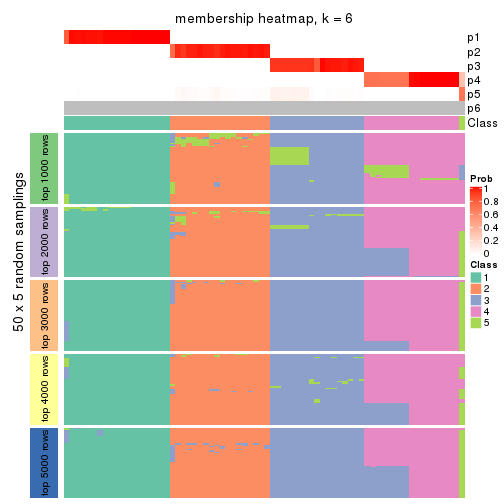
As soon as we have had the classes for columns, we can look for signatures which are significantly different between classes which can be candidate marks for certain classes. Following are the heatmaps for signatures.
Signature heatmaps where rows are scaled:
get_signatures(res, k = 2)

get_signatures(res, k = 3)

get_signatures(res, k = 4)

get_signatures(res, k = 5)
get_signatures(res, k = 6)
Signature heatmaps where rows are not scaled:
get_signatures(res, k = 2, scale_rows = FALSE)
get_signatures(res, k = 3, scale_rows = FALSE)

get_signatures(res, k = 4, scale_rows = FALSE)

get_signatures(res, k = 5, scale_rows = FALSE)
get_signatures(res, k = 6, scale_rows = FALSE)
Compare the overlap of signatures from different k:
compare_signatures(res)
get_signature() returns a data frame invisibly. TO get the list of signatures, the function
call should be assigned to a variable explicitly. In following code, if plot argument is set
to FALSE, no heatmap is plotted while only the differential analysis is performed.
# code only for demonstration
tb = get_signature(res, k = ..., plot = FALSE)
An example of the output of tb is:
#> which_row fdr mean_1 mean_2 scaled_mean_1 scaled_mean_2 km
#> 1 38 0.042760348 8.373488 9.131774 -0.5533452 0.5164555 1
#> 2 40 0.018707592 7.106213 8.469186 -0.6173731 0.5762149 1
#> 3 55 0.019134737 10.221463 11.207825 -0.6159697 0.5749050 1
#> 4 59 0.006059896 5.921854 7.869574 -0.6899429 0.6439467 1
#> 5 60 0.018055526 8.928898 10.211722 -0.6204761 0.5791110 1
#> 6 98 0.009384629 15.714769 14.887706 0.6635654 -0.6193277 2
...
The columns in tb are:
which_row: row indices corresponding to the input matrix.fdr: FDR for the differential test. mean_x: The mean value in group x.scaled_mean_x: The mean value in group x after rows are scaled.km: Row groups if k-means clustering is applied to rows.UMAP plot which shows how samples are separated.
dimension_reduction(res, k = 2, method = "UMAP")
dimension_reduction(res, k = 3, method = "UMAP")
dimension_reduction(res, k = 4, method = "UMAP")

dimension_reduction(res, k = 5, method = "UMAP")

dimension_reduction(res, k = 6, method = "UMAP")
Following heatmap shows how subgroups are split when increasing k:
collect_classes(res)
If matrix rows can be associated to genes, consider to use GO_Enrichment(res,
...) to perform function enrichment for the signature genes.
The object with results only for a single top-value method and a single partition method can be extracted as:
res = res_list["SD", "NMF"]
# you can also extract it by
# res = res_list["SD:NMF"]
A summary of res and all the functions that can be applied to it:
res
#> A 'ConsensusPartition' object with k = 2, 3, 4, 5, 6.
#> On a matrix with 13183 rows and 72 columns.
#> Top rows (1000, 2000, 3000, 4000, 5000) are extracted by 'SD' method.
#> Subgroups are detected by 'NMF' method.
#> Performed in total 1250 partitions by row resampling.
#> Best k for subgroups seems to be 4.
#>
#> Following methods can be applied to this 'ConsensusPartition' object:
#> [1] "cola_report" "collect_classes" "collect_plots"
#> [4] "collect_stats" "colnames" "compare_signatures"
#> [7] "consensus_heatmap" "dimension_reduction" "functional_enrichment"
#> [10] "get_anno_col" "get_anno" "get_classes"
#> [13] "get_consensus" "get_matrix" "get_membership"
#> [16] "get_param" "get_signatures" "get_stats"
#> [19] "is_best_k" "is_stable_k" "membership_heatmap"
#> [22] "ncol" "nrow" "plot_ecdf"
#> [25] "rownames" "select_partition_number" "show"
#> [28] "suggest_best_k" "test_to_known_factors"
collect_plots() function collects all the plots made from res for all k (number of partitions)
into one single page to provide an easy and fast comparison between different k.
collect_plots(res)
The plots are:
k and the heatmap of
predicted classes for each k.k.k.k.All the plots in panels can be made by individual functions and they are plotted later in this section.
select_partition_number() produces several plots showing different
statistics for choosing “optimized” k. There are following statistics:
k;k, the area increased is defined as \(A_k - A_{k-1}\).The detailed explanations of these statistics can be found in the cola vignette.
Generally speaking, lower PAC score, higher mean silhouette score or higher
concordance corresponds to better partition. Rand index and Jaccard index
measure how similar the current partition is compared to partition with k-1.
If they are too similar, we won't accept k is better than k-1.
select_partition_number(res)
The numeric values for all these statistics can be obtained by get_stats().
get_stats(res)
#> k 1-PAC mean_silhouette concordance area_increased Rand Jaccard
#> 2 2 0.668 0.873 0.915 0.47377 0.493 0.493
#> 3 3 0.763 0.865 0.929 0.38278 0.711 0.481
#> 4 4 0.933 0.994 0.961 0.13370 0.845 0.573
#> 5 5 1.000 0.982 0.991 0.02936 0.993 0.972
#> 6 6 1.000 0.971 0.988 0.00664 1.000 1.000
suggest_best_k() suggests the best \(k\) based on these statistics. The rules are as follows:
NA.suggest_best_k(res)
#> [1] 4
Following shows the table of the partitions (You need to click the show/hide
code output link to see it). The membership matrix (columns with name p*)
is inferred by
clue::cl_consensus()
function with the SE method. Basically the value in the membership matrix
represents the probability to belong to a certain group. The finall class
label for an item is determined with the group with highest probability it
belongs to.
In get_classes() function, the entropy is calculated from the membership
matrix and the silhouette score is calculated from the consensus matrix.
cbind(get_classes(res, k = 2), get_membership(res, k = 2))
#> class entropy silhouette p1 p2
#> SRR942117 1 0.9129 0.706 0.672 0.328
#> SRR942118 1 0.9460 0.651 0.636 0.364
#> SRR942119 1 0.9522 0.636 0.628 0.372
#> SRR942120 1 0.8861 0.735 0.696 0.304
#> SRR942121 1 0.9129 0.706 0.672 0.328
#> SRR942122 1 0.8763 0.744 0.704 0.296
#> SRR942123 1 0.8555 0.760 0.720 0.280
#> SRR942124 1 0.9460 0.651 0.636 0.364
#> SRR942125 1 0.9427 0.654 0.640 0.360
#> SRR942126 1 0.8144 0.778 0.748 0.252
#> SRR942127 1 0.7950 0.783 0.760 0.240
#> SRR942128 1 0.8016 0.782 0.756 0.244
#> SRR942129 1 0.8327 0.772 0.736 0.264
#> SRR942130 1 0.8386 0.769 0.732 0.268
#> SRR942131 1 0.8386 0.769 0.732 0.268
#> SRR942132 1 0.8443 0.766 0.728 0.272
#> SRR942133 1 0.8555 0.760 0.720 0.280
#> SRR942134 1 0.8081 0.780 0.752 0.248
#> SRR942144 2 0.2778 0.952 0.048 0.952
#> SRR942145 2 0.3274 0.943 0.060 0.940
#> SRR942146 2 0.3431 0.939 0.064 0.936
#> SRR942147 2 0.3431 0.939 0.064 0.936
#> SRR942148 2 0.3274 0.943 0.060 0.940
#> SRR942149 2 0.3431 0.939 0.064 0.936
#> SRR942150 2 0.3274 0.943 0.060 0.940
#> SRR942151 2 0.3431 0.939 0.064 0.936
#> SRR942152 2 0.3584 0.935 0.068 0.932
#> SRR942135 2 0.0938 0.974 0.012 0.988
#> SRR942136 2 0.1414 0.971 0.020 0.980
#> SRR942137 2 0.1184 0.973 0.016 0.984
#> SRR942138 2 0.1184 0.973 0.016 0.984
#> SRR942139 2 0.0672 0.975 0.008 0.992
#> SRR942140 2 0.0938 0.974 0.012 0.988
#> SRR942141 2 0.1184 0.973 0.016 0.984
#> SRR942142 2 0.1184 0.973 0.016 0.984
#> SRR942143 2 0.0376 0.975 0.004 0.996
#> SRR942153 2 0.0000 0.976 0.000 1.000
#> SRR942154 2 0.0000 0.976 0.000 1.000
#> SRR942155 2 0.0000 0.976 0.000 1.000
#> SRR942156 2 0.0000 0.976 0.000 1.000
#> SRR942157 2 0.0000 0.976 0.000 1.000
#> SRR942158 2 0.0000 0.976 0.000 1.000
#> SRR942159 2 0.0000 0.976 0.000 1.000
#> SRR942160 2 0.0000 0.976 0.000 1.000
#> SRR942161 2 0.0000 0.976 0.000 1.000
#> SRR942162 2 0.0000 0.976 0.000 1.000
#> SRR942163 2 0.0000 0.976 0.000 1.000
#> SRR942164 2 0.0000 0.976 0.000 1.000
#> SRR942166 2 0.0000 0.976 0.000 1.000
#> SRR942167 2 0.0000 0.976 0.000 1.000
#> SRR942168 2 0.0000 0.976 0.000 1.000
#> SRR942169 2 0.0000 0.976 0.000 1.000
#> SRR942170 2 0.0000 0.976 0.000 1.000
#> SRR942171 1 0.0000 0.834 1.000 0.000
#> SRR942172 1 0.0000 0.834 1.000 0.000
#> SRR942173 1 0.0000 0.834 1.000 0.000
#> SRR942174 1 0.0000 0.834 1.000 0.000
#> SRR942175 1 0.0000 0.834 1.000 0.000
#> SRR942176 1 0.0000 0.834 1.000 0.000
#> SRR942177 1 0.0000 0.834 1.000 0.000
#> SRR942178 1 0.0000 0.834 1.000 0.000
#> SRR942179 1 0.0000 0.834 1.000 0.000
#> SRR942180 1 0.0000 0.834 1.000 0.000
#> SRR942181 1 0.0000 0.834 1.000 0.000
#> SRR942182 1 0.0000 0.834 1.000 0.000
#> SRR942183 1 0.0000 0.834 1.000 0.000
#> SRR942184 1 0.0000 0.834 1.000 0.000
#> SRR942185 1 0.0000 0.834 1.000 0.000
#> SRR942186 1 0.0000 0.834 1.000 0.000
#> SRR942187 1 0.0000 0.834 1.000 0.000
#> SRR942188 1 0.0000 0.834 1.000 0.000
#> SRR942189 1 0.0000 0.834 1.000 0.000
cbind(get_classes(res, k = 3), get_membership(res, k = 3))
#> class entropy silhouette p1 p2 p3
#> SRR942117 2 0.0892 0.877 0.020 0.980 0.000
#> SRR942118 2 0.0747 0.876 0.016 0.984 0.000
#> SRR942119 2 0.0892 0.877 0.020 0.980 0.000
#> SRR942120 2 0.0892 0.877 0.020 0.980 0.000
#> SRR942121 2 0.0892 0.877 0.020 0.980 0.000
#> SRR942122 2 0.1031 0.877 0.024 0.976 0.000
#> SRR942123 2 0.0892 0.877 0.020 0.980 0.000
#> SRR942124 2 0.0747 0.876 0.016 0.984 0.000
#> SRR942125 2 0.0475 0.870 0.004 0.992 0.004
#> SRR942126 2 0.1411 0.872 0.036 0.964 0.000
#> SRR942127 2 0.1411 0.872 0.036 0.964 0.000
#> SRR942128 2 0.1411 0.872 0.036 0.964 0.000
#> SRR942129 2 0.1411 0.872 0.036 0.964 0.000
#> SRR942130 2 0.1289 0.874 0.032 0.968 0.000
#> SRR942131 2 0.1289 0.874 0.032 0.968 0.000
#> SRR942132 2 0.1031 0.877 0.024 0.976 0.000
#> SRR942133 2 0.1031 0.877 0.024 0.976 0.000
#> SRR942134 2 0.1411 0.872 0.036 0.964 0.000
#> SRR942144 2 0.5948 0.474 0.000 0.640 0.360
#> SRR942145 2 0.5497 0.622 0.000 0.708 0.292
#> SRR942146 2 0.5178 0.681 0.000 0.744 0.256
#> SRR942147 2 0.5138 0.686 0.000 0.748 0.252
#> SRR942148 2 0.5254 0.670 0.000 0.736 0.264
#> SRR942149 2 0.5706 0.570 0.000 0.680 0.320
#> SRR942150 2 0.5138 0.686 0.000 0.748 0.252
#> SRR942151 2 0.4887 0.713 0.000 0.772 0.228
#> SRR942152 2 0.4504 0.743 0.000 0.804 0.196
#> SRR942135 3 0.4605 0.770 0.000 0.204 0.796
#> SRR942136 3 0.5363 0.682 0.000 0.276 0.724
#> SRR942137 3 0.5363 0.683 0.000 0.276 0.724
#> SRR942138 3 0.5291 0.695 0.000 0.268 0.732
#> SRR942139 3 0.4796 0.754 0.000 0.220 0.780
#> SRR942140 3 0.4974 0.736 0.000 0.236 0.764
#> SRR942141 3 0.5363 0.683 0.000 0.276 0.724
#> SRR942142 3 0.5291 0.695 0.000 0.268 0.732
#> SRR942143 3 0.3879 0.812 0.000 0.152 0.848
#> SRR942153 3 0.0237 0.894 0.000 0.004 0.996
#> SRR942154 3 0.0000 0.895 0.000 0.000 1.000
#> SRR942155 3 0.0000 0.895 0.000 0.000 1.000
#> SRR942156 3 0.0000 0.895 0.000 0.000 1.000
#> SRR942157 3 0.0000 0.895 0.000 0.000 1.000
#> SRR942158 3 0.0000 0.895 0.000 0.000 1.000
#> SRR942159 3 0.0000 0.895 0.000 0.000 1.000
#> SRR942160 3 0.0000 0.895 0.000 0.000 1.000
#> SRR942161 3 0.0000 0.895 0.000 0.000 1.000
#> SRR942162 3 0.0237 0.894 0.000 0.004 0.996
#> SRR942163 3 0.0237 0.894 0.000 0.004 0.996
#> SRR942164 3 0.0237 0.894 0.000 0.004 0.996
#> SRR942166 3 0.0237 0.894 0.000 0.004 0.996
#> SRR942167 3 0.0237 0.894 0.000 0.004 0.996
#> SRR942168 3 0.0237 0.894 0.000 0.004 0.996
#> SRR942169 3 0.0237 0.894 0.000 0.004 0.996
#> SRR942170 3 0.0000 0.895 0.000 0.000 1.000
#> SRR942171 1 0.0475 0.992 0.992 0.004 0.004
#> SRR942172 1 0.0000 1.000 1.000 0.000 0.000
#> SRR942173 1 0.0000 1.000 1.000 0.000 0.000
#> SRR942174 1 0.0000 1.000 1.000 0.000 0.000
#> SRR942175 1 0.0000 1.000 1.000 0.000 0.000
#> SRR942176 1 0.0000 1.000 1.000 0.000 0.000
#> SRR942177 1 0.0000 1.000 1.000 0.000 0.000
#> SRR942178 1 0.0000 1.000 1.000 0.000 0.000
#> SRR942179 1 0.0000 1.000 1.000 0.000 0.000
#> SRR942180 1 0.0000 1.000 1.000 0.000 0.000
#> SRR942181 1 0.0000 1.000 1.000 0.000 0.000
#> SRR942182 1 0.0000 1.000 1.000 0.000 0.000
#> SRR942183 1 0.0000 1.000 1.000 0.000 0.000
#> SRR942184 1 0.0000 1.000 1.000 0.000 0.000
#> SRR942185 1 0.0000 1.000 1.000 0.000 0.000
#> SRR942186 1 0.0000 1.000 1.000 0.000 0.000
#> SRR942187 1 0.0000 1.000 1.000 0.000 0.000
#> SRR942188 1 0.0000 1.000 1.000 0.000 0.000
#> SRR942189 1 0.0000 1.000 1.000 0.000 0.000
cbind(get_classes(res, k = 4), get_membership(res, k = 4))
#> class entropy silhouette p1 p2 p3 p4
#> SRR942117 2 0.0188 0.999 0.004 0.996 0.000 0.000
#> SRR942118 2 0.0188 0.999 0.004 0.996 0.000 0.000
#> SRR942119 2 0.0000 0.996 0.000 1.000 0.000 0.000
#> SRR942120 2 0.0188 0.999 0.004 0.996 0.000 0.000
#> SRR942121 2 0.0000 0.996 0.000 1.000 0.000 0.000
#> SRR942122 2 0.0188 0.999 0.004 0.996 0.000 0.000
#> SRR942123 2 0.0188 0.999 0.004 0.996 0.000 0.000
#> SRR942124 2 0.0000 0.996 0.000 1.000 0.000 0.000
#> SRR942125 2 0.0376 0.996 0.004 0.992 0.000 0.004
#> SRR942126 2 0.0188 0.999 0.004 0.996 0.000 0.000
#> SRR942127 2 0.0188 0.999 0.004 0.996 0.000 0.000
#> SRR942128 2 0.0188 0.999 0.004 0.996 0.000 0.000
#> SRR942129 2 0.0188 0.999 0.004 0.996 0.000 0.000
#> SRR942130 2 0.0188 0.999 0.004 0.996 0.000 0.000
#> SRR942131 2 0.0188 0.999 0.004 0.996 0.000 0.000
#> SRR942132 2 0.0188 0.999 0.004 0.996 0.000 0.000
#> SRR942133 2 0.0188 0.999 0.004 0.996 0.000 0.000
#> SRR942134 2 0.0188 0.999 0.004 0.996 0.000 0.000
#> SRR942144 4 0.1474 0.990 0.000 0.052 0.000 0.948
#> SRR942145 4 0.1557 0.990 0.000 0.056 0.000 0.944
#> SRR942146 4 0.1637 0.988 0.000 0.060 0.000 0.940
#> SRR942147 4 0.1557 0.990 0.000 0.056 0.000 0.944
#> SRR942148 4 0.1716 0.985 0.000 0.064 0.000 0.936
#> SRR942149 4 0.1557 0.989 0.000 0.056 0.000 0.944
#> SRR942150 4 0.1637 0.988 0.000 0.060 0.000 0.940
#> SRR942151 4 0.1637 0.988 0.000 0.060 0.000 0.940
#> SRR942152 4 0.1637 0.988 0.000 0.060 0.000 0.940
#> SRR942135 4 0.1211 0.988 0.000 0.040 0.000 0.960
#> SRR942136 4 0.1302 0.990 0.000 0.044 0.000 0.956
#> SRR942137 4 0.1302 0.990 0.000 0.044 0.000 0.956
#> SRR942138 4 0.1302 0.990 0.000 0.044 0.000 0.956
#> SRR942139 4 0.1211 0.988 0.000 0.040 0.000 0.960
#> SRR942140 4 0.1211 0.988 0.000 0.040 0.000 0.960
#> SRR942141 4 0.1302 0.990 0.000 0.044 0.000 0.956
#> SRR942142 4 0.1211 0.988 0.000 0.040 0.000 0.960
#> SRR942143 4 0.1302 0.990 0.000 0.044 0.000 0.956
#> SRR942153 3 0.2593 0.990 0.000 0.004 0.892 0.104
#> SRR942154 3 0.2714 0.988 0.000 0.004 0.884 0.112
#> SRR942155 3 0.2773 0.986 0.000 0.004 0.880 0.116
#> SRR942156 3 0.2593 0.990 0.000 0.004 0.892 0.104
#> SRR942157 3 0.2593 0.990 0.000 0.004 0.892 0.104
#> SRR942158 3 0.2773 0.986 0.000 0.004 0.880 0.116
#> SRR942159 3 0.2714 0.988 0.000 0.004 0.884 0.112
#> SRR942160 3 0.2714 0.988 0.000 0.004 0.884 0.112
#> SRR942161 3 0.2831 0.982 0.000 0.004 0.876 0.120
#> SRR942162 3 0.2281 0.988 0.000 0.000 0.904 0.096
#> SRR942163 3 0.2216 0.986 0.000 0.000 0.908 0.092
#> SRR942164 3 0.2281 0.988 0.000 0.000 0.904 0.096
#> SRR942166 3 0.2216 0.986 0.000 0.000 0.908 0.092
#> SRR942167 3 0.2281 0.988 0.000 0.000 0.904 0.096
#> SRR942168 3 0.2281 0.988 0.000 0.000 0.904 0.096
#> SRR942169 3 0.2281 0.988 0.000 0.000 0.904 0.096
#> SRR942170 3 0.2714 0.988 0.000 0.004 0.884 0.112
#> SRR942171 1 0.0188 0.997 0.996 0.000 0.004 0.000
#> SRR942172 1 0.0000 1.000 1.000 0.000 0.000 0.000
#> SRR942173 1 0.0000 1.000 1.000 0.000 0.000 0.000
#> SRR942174 1 0.0000 1.000 1.000 0.000 0.000 0.000
#> SRR942175 1 0.0000 1.000 1.000 0.000 0.000 0.000
#> SRR942176 1 0.0000 1.000 1.000 0.000 0.000 0.000
#> SRR942177 1 0.0000 1.000 1.000 0.000 0.000 0.000
#> SRR942178 1 0.0000 1.000 1.000 0.000 0.000 0.000
#> SRR942179 1 0.0000 1.000 1.000 0.000 0.000 0.000
#> SRR942180 1 0.0000 1.000 1.000 0.000 0.000 0.000
#> SRR942181 1 0.0000 1.000 1.000 0.000 0.000 0.000
#> SRR942182 1 0.0000 1.000 1.000 0.000 0.000 0.000
#> SRR942183 1 0.0000 1.000 1.000 0.000 0.000 0.000
#> SRR942184 1 0.0000 1.000 1.000 0.000 0.000 0.000
#> SRR942185 1 0.0000 1.000 1.000 0.000 0.000 0.000
#> SRR942186 1 0.0000 1.000 1.000 0.000 0.000 0.000
#> SRR942187 1 0.0000 1.000 1.000 0.000 0.000 0.000
#> SRR942188 1 0.0000 1.000 1.000 0.000 0.000 0.000
#> SRR942189 1 0.0000 1.000 1.000 0.000 0.000 0.000
cbind(get_classes(res, k = 5), get_membership(res, k = 5))
#> class entropy silhouette p1 p2 p3 p4 p5
#> SRR942117 2 0.0000 0.998 0.000 1.000 0.000 0.000 0.000
#> SRR942118 2 0.0000 0.998 0.000 1.000 0.000 0.000 0.000
#> SRR942119 2 0.0000 0.998 0.000 1.000 0.000 0.000 0.000
#> SRR942120 2 0.0000 0.998 0.000 1.000 0.000 0.000 0.000
#> SRR942121 2 0.0000 0.998 0.000 1.000 0.000 0.000 0.000
#> SRR942122 2 0.0000 0.998 0.000 1.000 0.000 0.000 0.000
#> SRR942123 2 0.0000 0.998 0.000 1.000 0.000 0.000 0.000
#> SRR942124 2 0.0000 0.998 0.000 1.000 0.000 0.000 0.000
#> SRR942125 2 0.1168 0.961 0.000 0.960 0.000 0.008 0.032
#> SRR942126 2 0.0000 0.998 0.000 1.000 0.000 0.000 0.000
#> SRR942127 2 0.0000 0.998 0.000 1.000 0.000 0.000 0.000
#> SRR942128 2 0.0000 0.998 0.000 1.000 0.000 0.000 0.000
#> SRR942129 2 0.0000 0.998 0.000 1.000 0.000 0.000 0.000
#> SRR942130 2 0.0000 0.998 0.000 1.000 0.000 0.000 0.000
#> SRR942131 2 0.0000 0.998 0.000 1.000 0.000 0.000 0.000
#> SRR942132 2 0.0000 0.998 0.000 1.000 0.000 0.000 0.000
#> SRR942133 2 0.0000 0.998 0.000 1.000 0.000 0.000 0.000
#> SRR942134 2 0.0000 0.998 0.000 1.000 0.000 0.000 0.000
#> SRR942144 4 0.0000 0.997 0.000 0.000 0.000 1.000 0.000
#> SRR942145 4 0.0000 0.997 0.000 0.000 0.000 1.000 0.000
#> SRR942146 4 0.0000 0.997 0.000 0.000 0.000 1.000 0.000
#> SRR942147 4 0.0000 0.997 0.000 0.000 0.000 1.000 0.000
#> SRR942148 4 0.0000 0.997 0.000 0.000 0.000 1.000 0.000
#> SRR942149 4 0.0000 0.997 0.000 0.000 0.000 1.000 0.000
#> SRR942150 4 0.0000 0.997 0.000 0.000 0.000 1.000 0.000
#> SRR942151 4 0.0000 0.997 0.000 0.000 0.000 1.000 0.000
#> SRR942152 4 0.0000 0.997 0.000 0.000 0.000 1.000 0.000
#> SRR942135 4 0.0162 0.996 0.000 0.000 0.000 0.996 0.004
#> SRR942136 4 0.0162 0.996 0.000 0.000 0.000 0.996 0.004
#> SRR942137 4 0.0162 0.996 0.000 0.000 0.000 0.996 0.004
#> SRR942138 4 0.0162 0.996 0.000 0.000 0.000 0.996 0.004
#> SRR942139 4 0.0162 0.996 0.000 0.000 0.000 0.996 0.004
#> SRR942140 4 0.0162 0.996 0.000 0.000 0.000 0.996 0.004
#> SRR942141 4 0.0162 0.996 0.000 0.000 0.000 0.996 0.004
#> SRR942142 4 0.0162 0.996 0.000 0.000 0.000 0.996 0.004
#> SRR942143 5 0.5903 0.000 0.008 0.016 0.044 0.424 0.508
#> SRR942153 3 0.0000 0.998 0.000 0.000 1.000 0.000 0.000
#> SRR942154 3 0.0000 0.998 0.000 0.000 1.000 0.000 0.000
#> SRR942155 3 0.0000 0.998 0.000 0.000 1.000 0.000 0.000
#> SRR942156 3 0.0000 0.998 0.000 0.000 1.000 0.000 0.000
#> SRR942157 3 0.0000 0.998 0.000 0.000 1.000 0.000 0.000
#> SRR942158 3 0.0000 0.998 0.000 0.000 1.000 0.000 0.000
#> SRR942159 3 0.0000 0.998 0.000 0.000 1.000 0.000 0.000
#> SRR942160 3 0.0000 0.998 0.000 0.000 1.000 0.000 0.000
#> SRR942161 3 0.0162 0.995 0.000 0.000 0.996 0.000 0.004
#> SRR942162 3 0.0162 0.998 0.000 0.000 0.996 0.000 0.004
#> SRR942163 3 0.0162 0.998 0.000 0.000 0.996 0.000 0.004
#> SRR942164 3 0.0162 0.998 0.000 0.000 0.996 0.000 0.004
#> SRR942166 3 0.0162 0.998 0.000 0.000 0.996 0.000 0.004
#> SRR942167 3 0.0162 0.998 0.000 0.000 0.996 0.000 0.004
#> SRR942168 3 0.0162 0.998 0.000 0.000 0.996 0.000 0.004
#> SRR942169 3 0.0162 0.998 0.000 0.000 0.996 0.000 0.004
#> SRR942170 3 0.0162 0.998 0.000 0.000 0.996 0.000 0.004
#> SRR942171 1 0.0000 0.996 1.000 0.000 0.000 0.000 0.000
#> SRR942172 1 0.0000 0.996 1.000 0.000 0.000 0.000 0.000
#> SRR942173 1 0.0000 0.996 1.000 0.000 0.000 0.000 0.000
#> SRR942174 1 0.0000 0.996 1.000 0.000 0.000 0.000 0.000
#> SRR942175 1 0.0000 0.996 1.000 0.000 0.000 0.000 0.000
#> SRR942176 1 0.0000 0.996 1.000 0.000 0.000 0.000 0.000
#> SRR942177 1 0.0000 0.996 1.000 0.000 0.000 0.000 0.000
#> SRR942178 1 0.0000 0.996 1.000 0.000 0.000 0.000 0.000
#> SRR942179 1 0.0000 0.996 1.000 0.000 0.000 0.000 0.000
#> SRR942180 1 0.0000 0.996 1.000 0.000 0.000 0.000 0.000
#> SRR942181 1 0.0290 0.995 0.992 0.000 0.000 0.000 0.008
#> SRR942182 1 0.0162 0.996 0.996 0.000 0.000 0.000 0.004
#> SRR942183 1 0.0290 0.995 0.992 0.000 0.000 0.000 0.008
#> SRR942184 1 0.0162 0.996 0.996 0.000 0.000 0.000 0.004
#> SRR942185 1 0.0290 0.995 0.992 0.000 0.000 0.000 0.008
#> SRR942186 1 0.0290 0.995 0.992 0.000 0.000 0.000 0.008
#> SRR942187 1 0.0290 0.995 0.992 0.000 0.000 0.000 0.008
#> SRR942188 1 0.0290 0.995 0.992 0.000 0.000 0.000 0.008
#> SRR942189 1 0.0609 0.987 0.980 0.000 0.000 0.000 0.020
cbind(get_classes(res, k = 6), get_membership(res, k = 6))
#> class entropy silhouette p1 p2 p3 p4 p5 p6
#> SRR942117 2 0.0000 0.986 0.000 1.000 0.000 0.000 0.000 NA
#> SRR942118 2 0.0000 0.986 0.000 1.000 0.000 0.000 0.000 NA
#> SRR942119 2 0.0000 0.986 0.000 1.000 0.000 0.000 0.000 NA
#> SRR942120 2 0.0000 0.986 0.000 1.000 0.000 0.000 0.000 NA
#> SRR942121 2 0.0000 0.986 0.000 1.000 0.000 0.000 0.000 NA
#> SRR942122 2 0.0000 0.986 0.000 1.000 0.000 0.000 0.000 NA
#> SRR942123 2 0.0000 0.986 0.000 1.000 0.000 0.000 0.000 NA
#> SRR942124 2 0.0000 0.986 0.000 1.000 0.000 0.000 0.000 NA
#> SRR942125 2 0.3342 0.707 0.000 0.760 0.000 0.012 0.000 NA
#> SRR942126 2 0.0000 0.986 0.000 1.000 0.000 0.000 0.000 NA
#> SRR942127 2 0.0146 0.983 0.000 0.996 0.000 0.000 0.000 NA
#> SRR942128 2 0.0000 0.986 0.000 1.000 0.000 0.000 0.000 NA
#> SRR942129 2 0.0000 0.986 0.000 1.000 0.000 0.000 0.000 NA
#> SRR942130 2 0.0146 0.983 0.000 0.996 0.000 0.000 0.000 NA
#> SRR942131 2 0.0000 0.986 0.000 1.000 0.000 0.000 0.000 NA
#> SRR942132 2 0.0000 0.986 0.000 1.000 0.000 0.000 0.000 NA
#> SRR942133 2 0.0146 0.983 0.000 0.996 0.000 0.000 0.000 NA
#> SRR942134 2 0.0000 0.986 0.000 1.000 0.000 0.000 0.000 NA
#> SRR942144 4 0.0146 0.990 0.000 0.000 0.000 0.996 0.000 NA
#> SRR942145 4 0.0146 0.990 0.000 0.000 0.000 0.996 0.000 NA
#> SRR942146 4 0.0146 0.990 0.000 0.000 0.000 0.996 0.000 NA
#> SRR942147 4 0.0146 0.990 0.000 0.000 0.000 0.996 0.000 NA
#> SRR942148 4 0.0146 0.990 0.000 0.000 0.000 0.996 0.000 NA
#> SRR942149 4 0.0146 0.990 0.000 0.000 0.000 0.996 0.000 NA
#> SRR942150 4 0.0146 0.990 0.000 0.000 0.000 0.996 0.000 NA
#> SRR942151 4 0.0000 0.990 0.000 0.000 0.000 1.000 0.000 NA
#> SRR942152 4 0.0146 0.990 0.000 0.000 0.000 0.996 0.000 NA
#> SRR942135 4 0.0458 0.987 0.000 0.000 0.000 0.984 0.000 NA
#> SRR942136 4 0.0458 0.987 0.000 0.000 0.000 0.984 0.000 NA
#> SRR942137 4 0.0363 0.989 0.000 0.000 0.000 0.988 0.000 NA
#> SRR942138 4 0.0363 0.989 0.000 0.000 0.000 0.988 0.000 NA
#> SRR942139 4 0.0363 0.989 0.000 0.000 0.000 0.988 0.000 NA
#> SRR942140 4 0.0363 0.989 0.000 0.000 0.000 0.988 0.000 NA
#> SRR942141 4 0.0363 0.989 0.000 0.000 0.000 0.988 0.000 NA
#> SRR942142 4 0.0458 0.987 0.000 0.000 0.000 0.984 0.000 NA
#> SRR942143 5 0.2704 0.000 0.000 0.000 0.016 0.140 0.844 NA
#> SRR942153 3 0.0000 0.995 0.000 0.000 1.000 0.000 0.000 NA
#> SRR942154 3 0.0000 0.995 0.000 0.000 1.000 0.000 0.000 NA
#> SRR942155 3 0.0000 0.995 0.000 0.000 1.000 0.000 0.000 NA
#> SRR942156 3 0.0000 0.995 0.000 0.000 1.000 0.000 0.000 NA
#> SRR942157 3 0.0000 0.995 0.000 0.000 1.000 0.000 0.000 NA
#> SRR942158 3 0.0000 0.995 0.000 0.000 1.000 0.000 0.000 NA
#> SRR942159 3 0.0000 0.995 0.000 0.000 1.000 0.000 0.000 NA
#> SRR942160 3 0.0000 0.995 0.000 0.000 1.000 0.000 0.000 NA
#> SRR942161 3 0.0547 0.979 0.000 0.000 0.980 0.000 0.000 NA
#> SRR942162 3 0.0260 0.995 0.000 0.000 0.992 0.000 0.000 NA
#> SRR942163 3 0.0260 0.995 0.000 0.000 0.992 0.000 0.000 NA
#> SRR942164 3 0.0260 0.995 0.000 0.000 0.992 0.000 0.000 NA
#> SRR942166 3 0.0260 0.995 0.000 0.000 0.992 0.000 0.000 NA
#> SRR942167 3 0.0260 0.995 0.000 0.000 0.992 0.000 0.000 NA
#> SRR942168 3 0.0260 0.995 0.000 0.000 0.992 0.000 0.000 NA
#> SRR942169 3 0.0260 0.995 0.000 0.000 0.992 0.000 0.000 NA
#> SRR942170 3 0.0260 0.995 0.000 0.000 0.992 0.000 0.000 NA
#> SRR942171 1 0.0405 0.985 0.988 0.000 0.000 0.000 0.004 NA
#> SRR942172 1 0.0291 0.986 0.992 0.000 0.000 0.000 0.004 NA
#> SRR942173 1 0.0405 0.985 0.988 0.000 0.000 0.000 0.004 NA
#> SRR942174 1 0.0405 0.985 0.988 0.000 0.000 0.000 0.004 NA
#> SRR942175 1 0.0405 0.985 0.988 0.000 0.000 0.000 0.004 NA
#> SRR942176 1 0.0146 0.987 0.996 0.000 0.000 0.000 0.000 NA
#> SRR942177 1 0.0146 0.987 0.996 0.000 0.000 0.000 0.004 NA
#> SRR942178 1 0.0291 0.986 0.992 0.000 0.000 0.000 0.004 NA
#> SRR942179 1 0.0260 0.987 0.992 0.000 0.000 0.000 0.000 NA
#> SRR942180 1 0.0260 0.987 0.992 0.000 0.000 0.000 0.000 NA
#> SRR942181 1 0.0458 0.986 0.984 0.000 0.000 0.000 0.000 NA
#> SRR942182 1 0.0458 0.986 0.984 0.000 0.000 0.000 0.000 NA
#> SRR942183 1 0.0458 0.986 0.984 0.000 0.000 0.000 0.000 NA
#> SRR942184 1 0.0363 0.986 0.988 0.000 0.000 0.000 0.000 NA
#> SRR942185 1 0.0458 0.986 0.984 0.000 0.000 0.000 0.000 NA
#> SRR942186 1 0.0458 0.986 0.984 0.000 0.000 0.000 0.000 NA
#> SRR942187 1 0.0458 0.986 0.984 0.000 0.000 0.000 0.000 NA
#> SRR942188 1 0.0458 0.986 0.984 0.000 0.000 0.000 0.000 NA
#> SRR942189 1 0.1219 0.957 0.948 0.000 0.000 0.000 0.004 NA
Heatmaps for the consensus matrix. It visualizes the probability of two samples to be in a same group.
consensus_heatmap(res, k = 2)
consensus_heatmap(res, k = 3)
consensus_heatmap(res, k = 4)
consensus_heatmap(res, k = 5)

consensus_heatmap(res, k = 6)
Heatmaps for the membership of samples in all partitions to see how consistent they are:
membership_heatmap(res, k = 2)
membership_heatmap(res, k = 3)
membership_heatmap(res, k = 4)
membership_heatmap(res, k = 5)
membership_heatmap(res, k = 6)
As soon as we have had the classes for columns, we can look for signatures which are significantly different between classes which can be candidate marks for certain classes. Following are the heatmaps for signatures.
Signature heatmaps where rows are scaled:
get_signatures(res, k = 2)
get_signatures(res, k = 3)
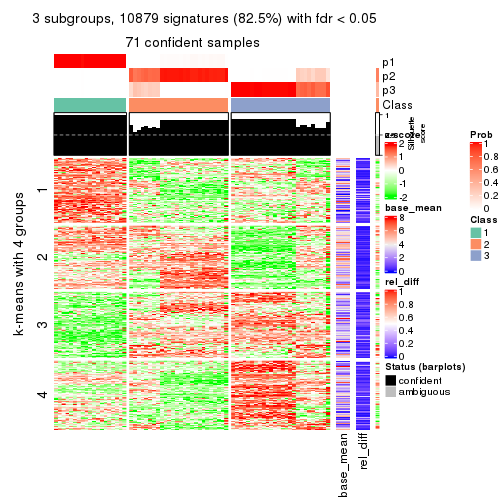
get_signatures(res, k = 4)
get_signatures(res, k = 5)
get_signatures(res, k = 6)
Signature heatmaps where rows are not scaled:
get_signatures(res, k = 2, scale_rows = FALSE)
get_signatures(res, k = 3, scale_rows = FALSE)
get_signatures(res, k = 4, scale_rows = FALSE)
get_signatures(res, k = 5, scale_rows = FALSE)
get_signatures(res, k = 6, scale_rows = FALSE)
Compare the overlap of signatures from different k:
compare_signatures(res)
get_signature() returns a data frame invisibly. TO get the list of signatures, the function
call should be assigned to a variable explicitly. In following code, if plot argument is set
to FALSE, no heatmap is plotted while only the differential analysis is performed.
# code only for demonstration
tb = get_signature(res, k = ..., plot = FALSE)
An example of the output of tb is:
#> which_row fdr mean_1 mean_2 scaled_mean_1 scaled_mean_2 km
#> 1 38 0.042760348 8.373488 9.131774 -0.5533452 0.5164555 1
#> 2 40 0.018707592 7.106213 8.469186 -0.6173731 0.5762149 1
#> 3 55 0.019134737 10.221463 11.207825 -0.6159697 0.5749050 1
#> 4 59 0.006059896 5.921854 7.869574 -0.6899429 0.6439467 1
#> 5 60 0.018055526 8.928898 10.211722 -0.6204761 0.5791110 1
#> 6 98 0.009384629 15.714769 14.887706 0.6635654 -0.6193277 2
...
The columns in tb are:
which_row: row indices corresponding to the input matrix.fdr: FDR for the differential test. mean_x: The mean value in group x.scaled_mean_x: The mean value in group x after rows are scaled.km: Row groups if k-means clustering is applied to rows.UMAP plot which shows how samples are separated.
dimension_reduction(res, k = 2, method = "UMAP")
dimension_reduction(res, k = 3, method = "UMAP")
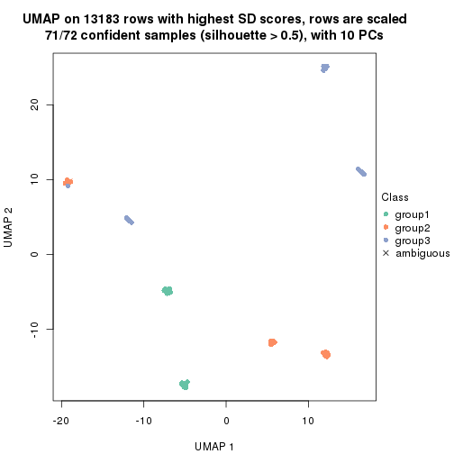
dimension_reduction(res, k = 4, method = "UMAP")
dimension_reduction(res, k = 5, method = "UMAP")
dimension_reduction(res, k = 6, method = "UMAP")
Following heatmap shows how subgroups are split when increasing k:
collect_classes(res)
If matrix rows can be associated to genes, consider to use GO_Enrichment(res,
...) to perform function enrichment for the signature genes.
The object with results only for a single top-value method and a single partition method can be extracted as:
res = res_list["CV", "hclust"]
# you can also extract it by
# res = res_list["CV:hclust"]
A summary of res and all the functions that can be applied to it:
res
#> A 'ConsensusPartition' object with k = 2, 3, 4, 5, 6.
#> On a matrix with 13183 rows and 72 columns.
#> Top rows (1000, 2000, 3000, 4000, 5000) are extracted by 'CV' method.
#> Subgroups are detected by 'hclust' method.
#> Performed in total 1250 partitions by row resampling.
#> Best k for subgroups seems to be 3.
#>
#> Following methods can be applied to this 'ConsensusPartition' object:
#> [1] "cola_report" "collect_classes" "collect_plots"
#> [4] "collect_stats" "colnames" "compare_signatures"
#> [7] "consensus_heatmap" "dimension_reduction" "functional_enrichment"
#> [10] "get_anno_col" "get_anno" "get_classes"
#> [13] "get_consensus" "get_matrix" "get_membership"
#> [16] "get_param" "get_signatures" "get_stats"
#> [19] "is_best_k" "is_stable_k" "membership_heatmap"
#> [22] "ncol" "nrow" "plot_ecdf"
#> [25] "rownames" "select_partition_number" "show"
#> [28] "suggest_best_k" "test_to_known_factors"
collect_plots() function collects all the plots made from res for all k (number of partitions)
into one single page to provide an easy and fast comparison between different k.
collect_plots(res)
The plots are:
k and the heatmap of
predicted classes for each k.k.k.k.All the plots in panels can be made by individual functions and they are plotted later in this section.
select_partition_number() produces several plots showing different
statistics for choosing “optimized” k. There are following statistics:
k;k, the area increased is defined as \(A_k - A_{k-1}\).The detailed explanations of these statistics can be found in the cola vignette.
Generally speaking, lower PAC score, higher mean silhouette score or higher
concordance corresponds to better partition. Rand index and Jaccard index
measure how similar the current partition is compared to partition with k-1.
If they are too similar, we won't accept k is better than k-1.
select_partition_number(res)
The numeric values for all these statistics can be obtained by get_stats().
get_stats(res)
#> k 1-PAC mean_silhouette concordance area_increased Rand Jaccard
#> 2 2 1.000 0.963 0.982 0.0500 0.972 0.972
#> 3 3 1.000 0.966 0.986 6.9923 0.641 0.631
#> 4 4 0.733 0.741 0.887 0.2662 0.979 0.966
#> 5 5 0.731 0.958 0.924 0.1677 0.747 0.573
#> 6 6 0.731 0.943 0.925 0.0115 0.994 0.982
suggest_best_k() suggests the best \(k\) based on these statistics. The rules are as follows:
NA.suggest_best_k(res)
#> [1] 3
Following shows the table of the partitions (You need to click the show/hide
code output link to see it). The membership matrix (columns with name p*)
is inferred by
clue::cl_consensus()
function with the SE method. Basically the value in the membership matrix
represents the probability to belong to a certain group. The finall class
label for an item is determined with the group with highest probability it
belongs to.
In get_classes() function, the entropy is calculated from the membership
matrix and the silhouette score is calculated from the consensus matrix.
cbind(get_classes(res, k = 2), get_membership(res, k = 2))
#> class entropy silhouette p1 p2
#> SRR942117 1 0.1633 0.982 0.976 0.024
#> SRR942118 1 0.1633 0.982 0.976 0.024
#> SRR942119 1 0.1633 0.982 0.976 0.024
#> SRR942120 1 0.1633 0.982 0.976 0.024
#> SRR942121 1 0.1633 0.982 0.976 0.024
#> SRR942122 1 0.1633 0.982 0.976 0.024
#> SRR942123 1 0.1633 0.982 0.976 0.024
#> SRR942124 1 0.1633 0.982 0.976 0.024
#> SRR942125 1 0.8207 0.683 0.744 0.256
#> SRR942126 1 0.1633 0.982 0.976 0.024
#> SRR942127 1 0.1633 0.982 0.976 0.024
#> SRR942128 1 0.1633 0.982 0.976 0.024
#> SRR942129 1 0.1633 0.982 0.976 0.024
#> SRR942130 1 0.1633 0.982 0.976 0.024
#> SRR942131 1 0.1633 0.982 0.976 0.024
#> SRR942132 1 0.1633 0.982 0.976 0.024
#> SRR942133 1 0.1633 0.982 0.976 0.024
#> SRR942134 1 0.1633 0.982 0.976 0.024
#> SRR942144 1 0.1633 0.982 0.976 0.024
#> SRR942145 1 0.1633 0.982 0.976 0.024
#> SRR942146 1 0.1633 0.982 0.976 0.024
#> SRR942147 1 0.1633 0.982 0.976 0.024
#> SRR942148 1 0.1633 0.982 0.976 0.024
#> SRR942149 1 0.1633 0.982 0.976 0.024
#> SRR942150 1 0.1633 0.982 0.976 0.024
#> SRR942151 1 0.1633 0.982 0.976 0.024
#> SRR942152 1 0.1633 0.982 0.976 0.024
#> SRR942135 1 0.1633 0.982 0.976 0.024
#> SRR942136 1 0.1633 0.982 0.976 0.024
#> SRR942137 1 0.1633 0.982 0.976 0.024
#> SRR942138 1 0.1633 0.982 0.976 0.024
#> SRR942139 1 0.1633 0.982 0.976 0.024
#> SRR942140 1 0.1633 0.982 0.976 0.024
#> SRR942141 1 0.1633 0.982 0.976 0.024
#> SRR942142 1 0.1633 0.982 0.976 0.024
#> SRR942143 2 0.0938 0.000 0.012 0.988
#> SRR942153 1 0.0938 0.977 0.988 0.012
#> SRR942154 1 0.0938 0.977 0.988 0.012
#> SRR942155 1 0.0938 0.977 0.988 0.012
#> SRR942156 1 0.0938 0.977 0.988 0.012
#> SRR942157 1 0.0938 0.977 0.988 0.012
#> SRR942158 1 0.0938 0.977 0.988 0.012
#> SRR942159 1 0.0938 0.977 0.988 0.012
#> SRR942160 1 0.0938 0.977 0.988 0.012
#> SRR942161 1 0.0938 0.977 0.988 0.012
#> SRR942162 1 0.0938 0.977 0.988 0.012
#> SRR942163 1 0.0938 0.977 0.988 0.012
#> SRR942164 1 0.0938 0.977 0.988 0.012
#> SRR942166 1 0.0938 0.977 0.988 0.012
#> SRR942167 1 0.0938 0.977 0.988 0.012
#> SRR942168 1 0.0938 0.977 0.988 0.012
#> SRR942169 1 0.0938 0.977 0.988 0.012
#> SRR942170 1 0.0938 0.977 0.988 0.012
#> SRR942171 1 0.0000 0.981 1.000 0.000
#> SRR942172 1 0.0000 0.981 1.000 0.000
#> SRR942173 1 0.0000 0.981 1.000 0.000
#> SRR942174 1 0.0000 0.981 1.000 0.000
#> SRR942175 1 0.0000 0.981 1.000 0.000
#> SRR942176 1 0.0000 0.981 1.000 0.000
#> SRR942177 1 0.0000 0.981 1.000 0.000
#> SRR942178 1 0.0000 0.981 1.000 0.000
#> SRR942179 1 0.0000 0.981 1.000 0.000
#> SRR942180 1 0.0000 0.981 1.000 0.000
#> SRR942181 1 0.0000 0.981 1.000 0.000
#> SRR942182 1 0.0000 0.981 1.000 0.000
#> SRR942183 1 0.0000 0.981 1.000 0.000
#> SRR942184 1 0.0000 0.981 1.000 0.000
#> SRR942185 1 0.0000 0.981 1.000 0.000
#> SRR942186 1 0.0000 0.981 1.000 0.000
#> SRR942187 1 0.0000 0.981 1.000 0.000
#> SRR942188 1 0.0000 0.981 1.000 0.000
#> SRR942189 1 0.0000 0.981 1.000 0.000
cbind(get_classes(res, k = 3), get_membership(res, k = 3))
#> class entropy silhouette p1 p2 p3
#> SRR942117 2 0.0237 0.982 0.000 0.996 0.004
#> SRR942118 2 0.0237 0.982 0.000 0.996 0.004
#> SRR942119 2 0.0237 0.982 0.000 0.996 0.004
#> SRR942120 2 0.0237 0.982 0.000 0.996 0.004
#> SRR942121 2 0.0237 0.982 0.000 0.996 0.004
#> SRR942122 2 0.0237 0.982 0.000 0.996 0.004
#> SRR942123 2 0.0237 0.982 0.000 0.996 0.004
#> SRR942124 2 0.0237 0.982 0.000 0.996 0.004
#> SRR942125 2 0.5158 0.689 0.232 0.764 0.004
#> SRR942126 2 0.0237 0.982 0.000 0.996 0.004
#> SRR942127 2 0.0237 0.982 0.000 0.996 0.004
#> SRR942128 2 0.0237 0.982 0.000 0.996 0.004
#> SRR942129 2 0.0237 0.982 0.000 0.996 0.004
#> SRR942130 2 0.0237 0.982 0.000 0.996 0.004
#> SRR942131 2 0.0237 0.982 0.000 0.996 0.004
#> SRR942132 2 0.0237 0.982 0.000 0.996 0.004
#> SRR942133 2 0.0237 0.982 0.000 0.996 0.004
#> SRR942134 2 0.0237 0.982 0.000 0.996 0.004
#> SRR942144 2 0.0237 0.982 0.000 0.996 0.004
#> SRR942145 2 0.0237 0.982 0.000 0.996 0.004
#> SRR942146 2 0.0237 0.982 0.000 0.996 0.004
#> SRR942147 2 0.0237 0.982 0.000 0.996 0.004
#> SRR942148 2 0.0237 0.982 0.000 0.996 0.004
#> SRR942149 2 0.0237 0.982 0.000 0.996 0.004
#> SRR942150 2 0.0237 0.982 0.000 0.996 0.004
#> SRR942151 2 0.0237 0.982 0.000 0.996 0.004
#> SRR942152 2 0.0237 0.982 0.000 0.996 0.004
#> SRR942135 2 0.0237 0.982 0.000 0.996 0.004
#> SRR942136 2 0.0237 0.982 0.000 0.996 0.004
#> SRR942137 2 0.0237 0.982 0.000 0.996 0.004
#> SRR942138 2 0.0237 0.982 0.000 0.996 0.004
#> SRR942139 2 0.0237 0.982 0.000 0.996 0.004
#> SRR942140 2 0.0237 0.982 0.000 0.996 0.004
#> SRR942141 2 0.0237 0.982 0.000 0.996 0.004
#> SRR942142 2 0.0237 0.982 0.000 0.996 0.004
#> SRR942143 1 0.1031 0.000 0.976 0.024 0.000
#> SRR942153 3 0.0000 1.000 0.000 0.000 1.000
#> SRR942154 3 0.0000 1.000 0.000 0.000 1.000
#> SRR942155 3 0.0000 1.000 0.000 0.000 1.000
#> SRR942156 3 0.0000 1.000 0.000 0.000 1.000
#> SRR942157 3 0.0000 1.000 0.000 0.000 1.000
#> SRR942158 3 0.0000 1.000 0.000 0.000 1.000
#> SRR942159 3 0.0000 1.000 0.000 0.000 1.000
#> SRR942160 3 0.0000 1.000 0.000 0.000 1.000
#> SRR942161 3 0.0000 1.000 0.000 0.000 1.000
#> SRR942162 3 0.0000 1.000 0.000 0.000 1.000
#> SRR942163 3 0.0000 1.000 0.000 0.000 1.000
#> SRR942164 3 0.0000 1.000 0.000 0.000 1.000
#> SRR942166 3 0.0000 1.000 0.000 0.000 1.000
#> SRR942167 3 0.0000 1.000 0.000 0.000 1.000
#> SRR942168 3 0.0000 1.000 0.000 0.000 1.000
#> SRR942169 3 0.0000 1.000 0.000 0.000 1.000
#> SRR942170 3 0.0000 1.000 0.000 0.000 1.000
#> SRR942171 2 0.1453 0.971 0.024 0.968 0.008
#> SRR942172 2 0.1453 0.971 0.024 0.968 0.008
#> SRR942173 2 0.1453 0.971 0.024 0.968 0.008
#> SRR942174 2 0.1453 0.971 0.024 0.968 0.008
#> SRR942175 2 0.1453 0.971 0.024 0.968 0.008
#> SRR942176 2 0.1453 0.971 0.024 0.968 0.008
#> SRR942177 2 0.1453 0.971 0.024 0.968 0.008
#> SRR942178 2 0.1453 0.971 0.024 0.968 0.008
#> SRR942179 2 0.1453 0.971 0.024 0.968 0.008
#> SRR942180 2 0.1453 0.971 0.024 0.968 0.008
#> SRR942181 2 0.1453 0.971 0.024 0.968 0.008
#> SRR942182 2 0.1453 0.971 0.024 0.968 0.008
#> SRR942183 2 0.1453 0.971 0.024 0.968 0.008
#> SRR942184 2 0.1453 0.971 0.024 0.968 0.008
#> SRR942185 2 0.1453 0.971 0.024 0.968 0.008
#> SRR942186 2 0.1453 0.971 0.024 0.968 0.008
#> SRR942187 2 0.1453 0.971 0.024 0.968 0.008
#> SRR942188 2 0.1453 0.971 0.024 0.968 0.008
#> SRR942189 2 0.1453 0.971 0.024 0.968 0.008
cbind(get_classes(res, k = 4), get_membership(res, k = 4))
#> class entropy silhouette p1 p2 p3 p4
#> SRR942117 1 0.000 0.748 1.000 0.000 0 0
#> SRR942118 1 0.000 0.748 1.000 0.000 0 0
#> SRR942119 1 0.000 0.748 1.000 0.000 0 0
#> SRR942120 1 0.000 0.748 1.000 0.000 0 0
#> SRR942121 1 0.000 0.748 1.000 0.000 0 0
#> SRR942122 1 0.000 0.748 1.000 0.000 0 0
#> SRR942123 1 0.000 0.748 1.000 0.000 0 0
#> SRR942124 1 0.000 0.748 1.000 0.000 0 0
#> SRR942125 2 0.488 0.000 0.408 0.592 0 0
#> SRR942126 1 0.000 0.748 1.000 0.000 0 0
#> SRR942127 1 0.000 0.748 1.000 0.000 0 0
#> SRR942128 1 0.000 0.748 1.000 0.000 0 0
#> SRR942129 1 0.000 0.748 1.000 0.000 0 0
#> SRR942130 1 0.000 0.748 1.000 0.000 0 0
#> SRR942131 1 0.000 0.748 1.000 0.000 0 0
#> SRR942132 1 0.000 0.748 1.000 0.000 0 0
#> SRR942133 1 0.000 0.748 1.000 0.000 0 0
#> SRR942134 1 0.000 0.748 1.000 0.000 0 0
#> SRR942144 1 0.000 0.748 1.000 0.000 0 0
#> SRR942145 1 0.000 0.748 1.000 0.000 0 0
#> SRR942146 1 0.000 0.748 1.000 0.000 0 0
#> SRR942147 1 0.000 0.748 1.000 0.000 0 0
#> SRR942148 1 0.000 0.748 1.000 0.000 0 0
#> SRR942149 1 0.000 0.748 1.000 0.000 0 0
#> SRR942150 1 0.000 0.748 1.000 0.000 0 0
#> SRR942151 1 0.000 0.748 1.000 0.000 0 0
#> SRR942152 1 0.000 0.748 1.000 0.000 0 0
#> SRR942135 1 0.000 0.748 1.000 0.000 0 0
#> SRR942136 1 0.000 0.748 1.000 0.000 0 0
#> SRR942137 1 0.000 0.748 1.000 0.000 0 0
#> SRR942138 1 0.000 0.748 1.000 0.000 0 0
#> SRR942139 1 0.000 0.748 1.000 0.000 0 0
#> SRR942140 1 0.000 0.748 1.000 0.000 0 0
#> SRR942141 1 0.000 0.748 1.000 0.000 0 0
#> SRR942142 1 0.000 0.748 1.000 0.000 0 0
#> SRR942143 4 0.000 0.000 0.000 0.000 0 1
#> SRR942153 3 0.000 1.000 0.000 0.000 1 0
#> SRR942154 3 0.000 1.000 0.000 0.000 1 0
#> SRR942155 3 0.000 1.000 0.000 0.000 1 0
#> SRR942156 3 0.000 1.000 0.000 0.000 1 0
#> SRR942157 3 0.000 1.000 0.000 0.000 1 0
#> SRR942158 3 0.000 1.000 0.000 0.000 1 0
#> SRR942159 3 0.000 1.000 0.000 0.000 1 0
#> SRR942160 3 0.000 1.000 0.000 0.000 1 0
#> SRR942161 3 0.000 1.000 0.000 0.000 1 0
#> SRR942162 3 0.000 1.000 0.000 0.000 1 0
#> SRR942163 3 0.000 1.000 0.000 0.000 1 0
#> SRR942164 3 0.000 1.000 0.000 0.000 1 0
#> SRR942166 3 0.000 1.000 0.000 0.000 1 0
#> SRR942167 3 0.000 1.000 0.000 0.000 1 0
#> SRR942168 3 0.000 1.000 0.000 0.000 1 0
#> SRR942169 3 0.000 1.000 0.000 0.000 1 0
#> SRR942170 3 0.000 1.000 0.000 0.000 1 0
#> SRR942171 1 0.488 0.574 0.592 0.408 0 0
#> SRR942172 1 0.488 0.574 0.592 0.408 0 0
#> SRR942173 1 0.488 0.574 0.592 0.408 0 0
#> SRR942174 1 0.488 0.574 0.592 0.408 0 0
#> SRR942175 1 0.488 0.574 0.592 0.408 0 0
#> SRR942176 1 0.488 0.574 0.592 0.408 0 0
#> SRR942177 1 0.488 0.574 0.592 0.408 0 0
#> SRR942178 1 0.488 0.574 0.592 0.408 0 0
#> SRR942179 1 0.488 0.574 0.592 0.408 0 0
#> SRR942180 1 0.488 0.574 0.592 0.408 0 0
#> SRR942181 1 0.488 0.574 0.592 0.408 0 0
#> SRR942182 1 0.488 0.574 0.592 0.408 0 0
#> SRR942183 1 0.488 0.574 0.592 0.408 0 0
#> SRR942184 1 0.488 0.574 0.592 0.408 0 0
#> SRR942185 1 0.488 0.574 0.592 0.408 0 0
#> SRR942186 1 0.488 0.574 0.592 0.408 0 0
#> SRR942187 1 0.488 0.574 0.592 0.408 0 0
#> SRR942188 1 0.488 0.574 0.592 0.408 0 0
#> SRR942189 1 0.488 0.574 0.592 0.408 0 0
cbind(get_classes(res, k = 5), get_membership(res, k = 5))
#> class entropy silhouette p1 p2 p3 p4 p5
#> SRR942117 4 0.0000 1.000 0.000 0.000 0.000 1.000 0
#> SRR942118 4 0.0000 1.000 0.000 0.000 0.000 1.000 0
#> SRR942119 4 0.0000 1.000 0.000 0.000 0.000 1.000 0
#> SRR942120 4 0.0000 1.000 0.000 0.000 0.000 1.000 0
#> SRR942121 4 0.0000 1.000 0.000 0.000 0.000 1.000 0
#> SRR942122 4 0.0000 1.000 0.000 0.000 0.000 1.000 0
#> SRR942123 4 0.0000 1.000 0.000 0.000 0.000 1.000 0
#> SRR942124 4 0.0000 1.000 0.000 0.000 0.000 1.000 0
#> SRR942125 2 0.0290 0.000 0.000 0.992 0.000 0.008 0
#> SRR942126 4 0.0000 1.000 0.000 0.000 0.000 1.000 0
#> SRR942127 4 0.0000 1.000 0.000 0.000 0.000 1.000 0
#> SRR942128 4 0.0000 1.000 0.000 0.000 0.000 1.000 0
#> SRR942129 4 0.0000 1.000 0.000 0.000 0.000 1.000 0
#> SRR942130 4 0.0000 1.000 0.000 0.000 0.000 1.000 0
#> SRR942131 4 0.0000 1.000 0.000 0.000 0.000 1.000 0
#> SRR942132 4 0.0000 1.000 0.000 0.000 0.000 1.000 0
#> SRR942133 4 0.0000 1.000 0.000 0.000 0.000 1.000 0
#> SRR942134 4 0.0000 1.000 0.000 0.000 0.000 1.000 0
#> SRR942144 4 0.0000 1.000 0.000 0.000 0.000 1.000 0
#> SRR942145 4 0.0000 1.000 0.000 0.000 0.000 1.000 0
#> SRR942146 4 0.0000 1.000 0.000 0.000 0.000 1.000 0
#> SRR942147 4 0.0000 1.000 0.000 0.000 0.000 1.000 0
#> SRR942148 4 0.0000 1.000 0.000 0.000 0.000 1.000 0
#> SRR942149 4 0.0000 1.000 0.000 0.000 0.000 1.000 0
#> SRR942150 4 0.0000 1.000 0.000 0.000 0.000 1.000 0
#> SRR942151 4 0.0000 1.000 0.000 0.000 0.000 1.000 0
#> SRR942152 4 0.0000 1.000 0.000 0.000 0.000 1.000 0
#> SRR942135 4 0.0000 1.000 0.000 0.000 0.000 1.000 0
#> SRR942136 4 0.0000 1.000 0.000 0.000 0.000 1.000 0
#> SRR942137 4 0.0000 1.000 0.000 0.000 0.000 1.000 0
#> SRR942138 4 0.0000 1.000 0.000 0.000 0.000 1.000 0
#> SRR942139 4 0.0000 1.000 0.000 0.000 0.000 1.000 0
#> SRR942140 4 0.0000 1.000 0.000 0.000 0.000 1.000 0
#> SRR942141 4 0.0000 1.000 0.000 0.000 0.000 1.000 0
#> SRR942142 4 0.0000 1.000 0.000 0.000 0.000 1.000 0
#> SRR942143 5 0.0000 0.000 0.000 0.000 0.000 0.000 1
#> SRR942153 3 0.0000 0.997 0.000 0.000 1.000 0.000 0
#> SRR942154 3 0.0000 0.997 0.000 0.000 1.000 0.000 0
#> SRR942155 3 0.0000 0.997 0.000 0.000 1.000 0.000 0
#> SRR942156 3 0.0000 0.997 0.000 0.000 1.000 0.000 0
#> SRR942157 3 0.0000 0.997 0.000 0.000 1.000 0.000 0
#> SRR942158 3 0.0000 0.997 0.000 0.000 1.000 0.000 0
#> SRR942159 3 0.0000 0.997 0.000 0.000 1.000 0.000 0
#> SRR942160 3 0.0000 0.997 0.000 0.000 1.000 0.000 0
#> SRR942161 3 0.1251 0.956 0.036 0.008 0.956 0.000 0
#> SRR942162 3 0.0000 0.997 0.000 0.000 1.000 0.000 0
#> SRR942163 3 0.0000 0.997 0.000 0.000 1.000 0.000 0
#> SRR942164 3 0.0000 0.997 0.000 0.000 1.000 0.000 0
#> SRR942166 3 0.0000 0.997 0.000 0.000 1.000 0.000 0
#> SRR942167 3 0.0000 0.997 0.000 0.000 1.000 0.000 0
#> SRR942168 3 0.0000 0.997 0.000 0.000 1.000 0.000 0
#> SRR942169 3 0.0000 0.997 0.000 0.000 1.000 0.000 0
#> SRR942170 3 0.0000 0.997 0.000 0.000 1.000 0.000 0
#> SRR942171 1 0.3796 0.977 0.700 0.000 0.000 0.300 0
#> SRR942172 1 0.3796 0.977 0.700 0.000 0.000 0.300 0
#> SRR942173 1 0.3796 0.977 0.700 0.000 0.000 0.300 0
#> SRR942174 1 0.3796 0.977 0.700 0.000 0.000 0.300 0
#> SRR942175 1 0.3796 0.977 0.700 0.000 0.000 0.300 0
#> SRR942176 1 0.3796 0.977 0.700 0.000 0.000 0.300 0
#> SRR942177 1 0.3796 0.977 0.700 0.000 0.000 0.300 0
#> SRR942178 1 0.3796 0.977 0.700 0.000 0.000 0.300 0
#> SRR942179 1 0.3796 0.977 0.700 0.000 0.000 0.300 0
#> SRR942180 1 0.3796 0.977 0.700 0.000 0.000 0.300 0
#> SRR942181 1 0.3796 0.977 0.700 0.000 0.000 0.300 0
#> SRR942182 1 0.3796 0.977 0.700 0.000 0.000 0.300 0
#> SRR942183 1 0.3796 0.977 0.700 0.000 0.000 0.300 0
#> SRR942184 1 0.3796 0.977 0.700 0.000 0.000 0.300 0
#> SRR942185 1 0.3796 0.977 0.700 0.000 0.000 0.300 0
#> SRR942186 1 0.3796 0.977 0.700 0.000 0.000 0.300 0
#> SRR942187 1 0.3796 0.977 0.700 0.000 0.000 0.300 0
#> SRR942188 1 0.3796 0.977 0.700 0.000 0.000 0.300 0
#> SRR942189 1 0.0963 0.440 0.964 0.000 0.000 0.036 0
cbind(get_classes(res, k = 6), get_membership(res, k = 6))
#> class entropy silhouette p1 p2 p3 p4 p5 p6
#> SRR942117 4 0.000 1.000 0.0 0 0 1.0 0 0
#> SRR942118 4 0.000 1.000 0.0 0 0 1.0 0 0
#> SRR942119 4 0.000 1.000 0.0 0 0 1.0 0 0
#> SRR942120 4 0.000 1.000 0.0 0 0 1.0 0 0
#> SRR942121 4 0.000 1.000 0.0 0 0 1.0 0 0
#> SRR942122 4 0.000 1.000 0.0 0 0 1.0 0 0
#> SRR942123 4 0.000 1.000 0.0 0 0 1.0 0 0
#> SRR942124 4 0.000 1.000 0.0 0 0 1.0 0 0
#> SRR942125 2 0.000 0.000 0.0 1 0 0.0 0 0
#> SRR942126 4 0.000 1.000 0.0 0 0 1.0 0 0
#> SRR942127 4 0.000 1.000 0.0 0 0 1.0 0 0
#> SRR942128 4 0.000 1.000 0.0 0 0 1.0 0 0
#> SRR942129 4 0.000 1.000 0.0 0 0 1.0 0 0
#> SRR942130 4 0.000 1.000 0.0 0 0 1.0 0 0
#> SRR942131 4 0.000 1.000 0.0 0 0 1.0 0 0
#> SRR942132 4 0.000 1.000 0.0 0 0 1.0 0 0
#> SRR942133 4 0.000 1.000 0.0 0 0 1.0 0 0
#> SRR942134 4 0.000 1.000 0.0 0 0 1.0 0 0
#> SRR942144 4 0.000 1.000 0.0 0 0 1.0 0 0
#> SRR942145 4 0.000 1.000 0.0 0 0 1.0 0 0
#> SRR942146 4 0.000 1.000 0.0 0 0 1.0 0 0
#> SRR942147 4 0.000 1.000 0.0 0 0 1.0 0 0
#> SRR942148 4 0.000 1.000 0.0 0 0 1.0 0 0
#> SRR942149 4 0.000 1.000 0.0 0 0 1.0 0 0
#> SRR942150 4 0.000 1.000 0.0 0 0 1.0 0 0
#> SRR942151 4 0.000 1.000 0.0 0 0 1.0 0 0
#> SRR942152 4 0.000 1.000 0.0 0 0 1.0 0 0
#> SRR942135 4 0.000 1.000 0.0 0 0 1.0 0 0
#> SRR942136 4 0.000 1.000 0.0 0 0 1.0 0 0
#> SRR942137 4 0.000 1.000 0.0 0 0 1.0 0 0
#> SRR942138 4 0.000 1.000 0.0 0 0 1.0 0 0
#> SRR942139 4 0.000 1.000 0.0 0 0 1.0 0 0
#> SRR942140 4 0.000 1.000 0.0 0 0 1.0 0 0
#> SRR942141 4 0.000 1.000 0.0 0 0 1.0 0 0
#> SRR942142 4 0.000 1.000 0.0 0 0 1.0 0 0
#> SRR942143 5 0.000 0.000 0.0 0 0 0.0 1 0
#> SRR942153 3 0.000 1.000 0.0 0 1 0.0 0 0
#> SRR942154 3 0.000 1.000 0.0 0 1 0.0 0 0
#> SRR942155 3 0.000 1.000 0.0 0 1 0.0 0 0
#> SRR942156 3 0.000 1.000 0.0 0 1 0.0 0 0
#> SRR942157 3 0.000 1.000 0.0 0 1 0.0 0 0
#> SRR942158 3 0.000 1.000 0.0 0 1 0.0 0 0
#> SRR942159 3 0.000 1.000 0.0 0 1 0.0 0 0
#> SRR942160 3 0.000 1.000 0.0 0 1 0.0 0 0
#> SRR942161 6 0.000 0.000 0.0 0 0 0.0 0 1
#> SRR942162 3 0.000 1.000 0.0 0 1 0.0 0 0
#> SRR942163 3 0.000 1.000 0.0 0 1 0.0 0 0
#> SRR942164 3 0.000 1.000 0.0 0 1 0.0 0 0
#> SRR942166 3 0.000 1.000 0.0 0 1 0.0 0 0
#> SRR942167 3 0.000 1.000 0.0 0 1 0.0 0 0
#> SRR942168 3 0.000 1.000 0.0 0 1 0.0 0 0
#> SRR942169 3 0.000 1.000 0.0 0 1 0.0 0 0
#> SRR942170 3 0.000 1.000 0.0 0 1 0.0 0 0
#> SRR942171 1 0.341 0.974 0.7 0 0 0.3 0 0
#> SRR942172 1 0.341 0.974 0.7 0 0 0.3 0 0
#> SRR942173 1 0.341 0.974 0.7 0 0 0.3 0 0
#> SRR942174 1 0.341 0.974 0.7 0 0 0.3 0 0
#> SRR942175 1 0.341 0.974 0.7 0 0 0.3 0 0
#> SRR942176 1 0.341 0.974 0.7 0 0 0.3 0 0
#> SRR942177 1 0.341 0.974 0.7 0 0 0.3 0 0
#> SRR942178 1 0.341 0.974 0.7 0 0 0.3 0 0
#> SRR942179 1 0.341 0.974 0.7 0 0 0.3 0 0
#> SRR942180 1 0.341 0.974 0.7 0 0 0.3 0 0
#> SRR942181 1 0.341 0.974 0.7 0 0 0.3 0 0
#> SRR942182 1 0.341 0.974 0.7 0 0 0.3 0 0
#> SRR942183 1 0.341 0.974 0.7 0 0 0.3 0 0
#> SRR942184 1 0.341 0.974 0.7 0 0 0.3 0 0
#> SRR942185 1 0.341 0.974 0.7 0 0 0.3 0 0
#> SRR942186 1 0.341 0.974 0.7 0 0 0.3 0 0
#> SRR942187 1 0.341 0.974 0.7 0 0 0.3 0 0
#> SRR942188 1 0.341 0.974 0.7 0 0 0.3 0 0
#> SRR942189 1 0.000 0.336 1.0 0 0 0.0 0 0
Heatmaps for the consensus matrix. It visualizes the probability of two samples to be in a same group.
consensus_heatmap(res, k = 2)
consensus_heatmap(res, k = 3)
consensus_heatmap(res, k = 4)
consensus_heatmap(res, k = 5)
consensus_heatmap(res, k = 6)
Heatmaps for the membership of samples in all partitions to see how consistent they are:
membership_heatmap(res, k = 2)
membership_heatmap(res, k = 3)
membership_heatmap(res, k = 4)
membership_heatmap(res, k = 5)
membership_heatmap(res, k = 6)

As soon as we have had the classes for columns, we can look for signatures which are significantly different between classes which can be candidate marks for certain classes. Following are the heatmaps for signatures.
Signature heatmaps where rows are scaled:
get_signatures(res, k = 2)

get_signatures(res, k = 3)
get_signatures(res, k = 4)
get_signatures(res, k = 5)
get_signatures(res, k = 6)
Signature heatmaps where rows are not scaled:
get_signatures(res, k = 2, scale_rows = FALSE)

get_signatures(res, k = 3, scale_rows = FALSE)
get_signatures(res, k = 4, scale_rows = FALSE)
get_signatures(res, k = 5, scale_rows = FALSE)
get_signatures(res, k = 6, scale_rows = FALSE)
Compare the overlap of signatures from different k:
compare_signatures(res)
get_signature() returns a data frame invisibly. TO get the list of signatures, the function
call should be assigned to a variable explicitly. In following code, if plot argument is set
to FALSE, no heatmap is plotted while only the differential analysis is performed.
# code only for demonstration
tb = get_signature(res, k = ..., plot = FALSE)
An example of the output of tb is:
#> which_row fdr mean_1 mean_2 scaled_mean_1 scaled_mean_2 km
#> 1 38 0.042760348 8.373488 9.131774 -0.5533452 0.5164555 1
#> 2 40 0.018707592 7.106213 8.469186 -0.6173731 0.5762149 1
#> 3 55 0.019134737 10.221463 11.207825 -0.6159697 0.5749050 1
#> 4 59 0.006059896 5.921854 7.869574 -0.6899429 0.6439467 1
#> 5 60 0.018055526 8.928898 10.211722 -0.6204761 0.5791110 1
#> 6 98 0.009384629 15.714769 14.887706 0.6635654 -0.6193277 2
...
The columns in tb are:
which_row: row indices corresponding to the input matrix.fdr: FDR for the differential test. mean_x: The mean value in group x.scaled_mean_x: The mean value in group x after rows are scaled.km: Row groups if k-means clustering is applied to rows.UMAP plot which shows how samples are separated.
dimension_reduction(res, k = 2, method = "UMAP")
dimension_reduction(res, k = 3, method = "UMAP")
dimension_reduction(res, k = 4, method = "UMAP")
dimension_reduction(res, k = 5, method = "UMAP")
dimension_reduction(res, k = 6, method = "UMAP")
Following heatmap shows how subgroups are split when increasing k:
collect_classes(res)
If matrix rows can be associated to genes, consider to use GO_Enrichment(res,
...) to perform function enrichment for the signature genes.
The object with results only for a single top-value method and a single partition method can be extracted as:
res = res_list["CV", "kmeans"]
# you can also extract it by
# res = res_list["CV:kmeans"]
A summary of res and all the functions that can be applied to it:
res
#> A 'ConsensusPartition' object with k = 2, 3, 4, 5, 6.
#> On a matrix with 13183 rows and 72 columns.
#> Top rows (1000, 2000, 3000, 4000, 5000) are extracted by 'CV' method.
#> Subgroups are detected by 'kmeans' method.
#> Performed in total 1250 partitions by row resampling.
#> Best k for subgroups seems to be 3.
#>
#> Following methods can be applied to this 'ConsensusPartition' object:
#> [1] "cola_report" "collect_classes" "collect_plots"
#> [4] "collect_stats" "colnames" "compare_signatures"
#> [7] "consensus_heatmap" "dimension_reduction" "functional_enrichment"
#> [10] "get_anno_col" "get_anno" "get_classes"
#> [13] "get_consensus" "get_matrix" "get_membership"
#> [16] "get_param" "get_signatures" "get_stats"
#> [19] "is_best_k" "is_stable_k" "membership_heatmap"
#> [22] "ncol" "nrow" "plot_ecdf"
#> [25] "rownames" "select_partition_number" "show"
#> [28] "suggest_best_k" "test_to_known_factors"
collect_plots() function collects all the plots made from res for all k (number of partitions)
into one single page to provide an easy and fast comparison between different k.
collect_plots(res)
The plots are:
k and the heatmap of
predicted classes for each k.k.k.k.All the plots in panels can be made by individual functions and they are plotted later in this section.
select_partition_number() produces several plots showing different
statistics for choosing “optimized” k. There are following statistics:
k;k, the area increased is defined as \(A_k - A_{k-1}\).The detailed explanations of these statistics can be found in the cola vignette.
Generally speaking, lower PAC score, higher mean silhouette score or higher
concordance corresponds to better partition. Rand index and Jaccard index
measure how similar the current partition is compared to partition with k-1.
If they are too similar, we won't accept k is better than k-1.
select_partition_number(res)

The numeric values for all these statistics can be obtained by get_stats().
get_stats(res)
#> k 1-PAC mean_silhouette concordance area_increased Rand Jaccard
#> 2 2 0.233 0.727 0.733 0.3720 0.634 0.634
#> 3 3 0.373 0.849 0.800 0.5450 0.732 0.578
#> 4 4 0.590 0.697 0.788 0.1687 0.986 0.963
#> 5 5 0.676 0.933 0.855 0.0846 0.880 0.661
#> 6 6 0.750 0.882 0.870 0.0516 1.000 1.000
suggest_best_k() suggests the best \(k\) based on these statistics. The rules are as follows:
NA.suggest_best_k(res)
#> [1] 3
Following shows the table of the partitions (You need to click the show/hide
code output link to see it). The membership matrix (columns with name p*)
is inferred by
clue::cl_consensus()
function with the SE method. Basically the value in the membership matrix
represents the probability to belong to a certain group. The finall class
label for an item is determined with the group with highest probability it
belongs to.
In get_classes() function, the entropy is calculated from the membership
matrix and the silhouette score is calculated from the consensus matrix.
cbind(get_classes(res, k = 2), get_membership(res, k = 2))
#> class entropy silhouette p1 p2
#> SRR942117 1 0.000 0.691 1.000 0.000
#> SRR942118 1 0.000 0.691 1.000 0.000
#> SRR942119 1 0.000 0.691 1.000 0.000
#> SRR942120 1 0.000 0.691 1.000 0.000
#> SRR942121 1 0.000 0.691 1.000 0.000
#> SRR942122 1 0.000 0.691 1.000 0.000
#> SRR942123 1 0.000 0.691 1.000 0.000
#> SRR942124 1 0.000 0.691 1.000 0.000
#> SRR942125 1 0.295 0.639 0.948 0.052
#> SRR942126 1 0.000 0.691 1.000 0.000
#> SRR942127 1 0.000 0.691 1.000 0.000
#> SRR942128 1 0.000 0.691 1.000 0.000
#> SRR942129 1 0.000 0.691 1.000 0.000
#> SRR942130 1 0.000 0.691 1.000 0.000
#> SRR942131 1 0.000 0.691 1.000 0.000
#> SRR942132 1 0.000 0.691 1.000 0.000
#> SRR942133 1 0.000 0.691 1.000 0.000
#> SRR942134 1 0.000 0.691 1.000 0.000
#> SRR942144 1 0.615 0.674 0.848 0.152
#> SRR942145 1 0.615 0.674 0.848 0.152
#> SRR942146 1 0.615 0.674 0.848 0.152
#> SRR942147 1 0.615 0.674 0.848 0.152
#> SRR942148 1 0.615 0.674 0.848 0.152
#> SRR942149 1 0.615 0.674 0.848 0.152
#> SRR942150 1 0.615 0.674 0.848 0.152
#> SRR942151 1 0.615 0.674 0.848 0.152
#> SRR942152 1 0.615 0.674 0.848 0.152
#> SRR942135 1 0.615 0.674 0.848 0.152
#> SRR942136 1 0.615 0.674 0.848 0.152
#> SRR942137 1 0.615 0.674 0.848 0.152
#> SRR942138 1 0.615 0.674 0.848 0.152
#> SRR942139 1 0.615 0.674 0.848 0.152
#> SRR942140 1 0.615 0.674 0.848 0.152
#> SRR942141 1 0.615 0.674 0.848 0.152
#> SRR942142 1 0.615 0.674 0.848 0.152
#> SRR942143 1 0.615 0.635 0.848 0.152
#> SRR942153 2 0.891 1.000 0.308 0.692
#> SRR942154 2 0.891 1.000 0.308 0.692
#> SRR942155 2 0.891 1.000 0.308 0.692
#> SRR942156 2 0.891 1.000 0.308 0.692
#> SRR942157 2 0.891 1.000 0.308 0.692
#> SRR942158 2 0.891 1.000 0.308 0.692
#> SRR942159 2 0.891 1.000 0.308 0.692
#> SRR942160 2 0.891 1.000 0.308 0.692
#> SRR942161 2 0.891 1.000 0.308 0.692
#> SRR942162 2 0.891 1.000 0.308 0.692
#> SRR942163 2 0.891 1.000 0.308 0.692
#> SRR942164 2 0.891 1.000 0.308 0.692
#> SRR942166 2 0.891 1.000 0.308 0.692
#> SRR942167 2 0.891 1.000 0.308 0.692
#> SRR942168 2 0.891 1.000 0.308 0.692
#> SRR942169 2 0.891 1.000 0.308 0.692
#> SRR942170 2 0.891 1.000 0.308 0.692
#> SRR942171 1 0.993 0.572 0.548 0.452
#> SRR942172 1 0.993 0.572 0.548 0.452
#> SRR942173 1 0.993 0.572 0.548 0.452
#> SRR942174 1 0.993 0.572 0.548 0.452
#> SRR942175 1 0.993 0.572 0.548 0.452
#> SRR942176 1 0.993 0.572 0.548 0.452
#> SRR942177 1 0.993 0.572 0.548 0.452
#> SRR942178 1 0.993 0.572 0.548 0.452
#> SRR942179 1 0.993 0.572 0.548 0.452
#> SRR942180 1 0.993 0.572 0.548 0.452
#> SRR942181 1 0.993 0.572 0.548 0.452
#> SRR942182 1 0.993 0.572 0.548 0.452
#> SRR942183 1 0.993 0.572 0.548 0.452
#> SRR942184 1 0.993 0.572 0.548 0.452
#> SRR942185 1 0.993 0.572 0.548 0.452
#> SRR942186 1 0.993 0.572 0.548 0.452
#> SRR942187 1 0.993 0.572 0.548 0.452
#> SRR942188 1 0.993 0.572 0.548 0.452
#> SRR942189 1 0.993 0.572 0.548 0.452
cbind(get_classes(res, k = 3), get_membership(res, k = 3))
#> class entropy silhouette p1 p2 p3
#> SRR942117 2 0.441 0.742 0.172 0.824 0.004
#> SRR942118 2 0.441 0.742 0.172 0.824 0.004
#> SRR942119 2 0.441 0.742 0.172 0.824 0.004
#> SRR942120 2 0.441 0.742 0.172 0.824 0.004
#> SRR942121 2 0.441 0.742 0.172 0.824 0.004
#> SRR942122 2 0.441 0.742 0.172 0.824 0.004
#> SRR942123 2 0.441 0.742 0.172 0.824 0.004
#> SRR942124 2 0.441 0.742 0.172 0.824 0.004
#> SRR942125 2 0.521 0.655 0.108 0.828 0.064
#> SRR942126 2 0.441 0.742 0.172 0.824 0.004
#> SRR942127 2 0.441 0.742 0.172 0.824 0.004
#> SRR942128 2 0.441 0.742 0.172 0.824 0.004
#> SRR942129 2 0.441 0.742 0.172 0.824 0.004
#> SRR942130 2 0.441 0.742 0.172 0.824 0.004
#> SRR942131 2 0.441 0.742 0.172 0.824 0.004
#> SRR942132 2 0.441 0.742 0.172 0.824 0.004
#> SRR942133 2 0.441 0.742 0.172 0.824 0.004
#> SRR942134 2 0.441 0.742 0.172 0.824 0.004
#> SRR942144 2 0.911 0.694 0.316 0.520 0.164
#> SRR942145 2 0.911 0.694 0.316 0.520 0.164
#> SRR942146 2 0.911 0.694 0.316 0.520 0.164
#> SRR942147 2 0.911 0.694 0.316 0.520 0.164
#> SRR942148 2 0.911 0.694 0.316 0.520 0.164
#> SRR942149 2 0.911 0.694 0.316 0.520 0.164
#> SRR942150 2 0.911 0.694 0.316 0.520 0.164
#> SRR942151 2 0.911 0.694 0.316 0.520 0.164
#> SRR942152 2 0.911 0.694 0.316 0.520 0.164
#> SRR942135 2 0.911 0.694 0.316 0.520 0.164
#> SRR942136 2 0.911 0.694 0.316 0.520 0.164
#> SRR942137 2 0.911 0.694 0.316 0.520 0.164
#> SRR942138 2 0.911 0.694 0.316 0.520 0.164
#> SRR942139 2 0.911 0.694 0.316 0.520 0.164
#> SRR942140 2 0.911 0.694 0.316 0.520 0.164
#> SRR942141 2 0.911 0.694 0.316 0.520 0.164
#> SRR942142 2 0.911 0.694 0.316 0.520 0.164
#> SRR942143 2 0.721 0.571 0.100 0.708 0.192
#> SRR942153 3 0.538 0.990 0.068 0.112 0.820
#> SRR942154 3 0.538 0.990 0.068 0.112 0.820
#> SRR942155 3 0.538 0.990 0.068 0.112 0.820
#> SRR942156 3 0.538 0.990 0.068 0.112 0.820
#> SRR942157 3 0.538 0.990 0.068 0.112 0.820
#> SRR942158 3 0.538 0.990 0.068 0.112 0.820
#> SRR942159 3 0.538 0.990 0.068 0.112 0.820
#> SRR942160 3 0.538 0.990 0.068 0.112 0.820
#> SRR942161 3 0.538 0.990 0.068 0.112 0.820
#> SRR942162 3 0.579 0.989 0.068 0.136 0.796
#> SRR942163 3 0.579 0.989 0.068 0.136 0.796
#> SRR942164 3 0.579 0.989 0.068 0.136 0.796
#> SRR942166 3 0.579 0.989 0.068 0.136 0.796
#> SRR942167 3 0.579 0.989 0.068 0.136 0.796
#> SRR942168 3 0.579 0.989 0.068 0.136 0.796
#> SRR942169 3 0.579 0.989 0.068 0.136 0.796
#> SRR942170 3 0.579 0.989 0.068 0.136 0.796
#> SRR942171 1 0.000 0.984 1.000 0.000 0.000
#> SRR942172 1 0.000 0.984 1.000 0.000 0.000
#> SRR942173 1 0.000 0.984 1.000 0.000 0.000
#> SRR942174 1 0.000 0.984 1.000 0.000 0.000
#> SRR942175 1 0.000 0.984 1.000 0.000 0.000
#> SRR942176 1 0.000 0.984 1.000 0.000 0.000
#> SRR942177 1 0.000 0.984 1.000 0.000 0.000
#> SRR942178 1 0.000 0.984 1.000 0.000 0.000
#> SRR942179 1 0.000 0.984 1.000 0.000 0.000
#> SRR942180 1 0.000 0.984 1.000 0.000 0.000
#> SRR942181 1 0.141 0.982 0.964 0.000 0.036
#> SRR942182 1 0.141 0.982 0.964 0.000 0.036
#> SRR942183 1 0.141 0.982 0.964 0.000 0.036
#> SRR942184 1 0.141 0.982 0.964 0.000 0.036
#> SRR942185 1 0.141 0.982 0.964 0.000 0.036
#> SRR942186 1 0.141 0.982 0.964 0.000 0.036
#> SRR942187 1 0.141 0.982 0.964 0.000 0.036
#> SRR942188 1 0.141 0.982 0.964 0.000 0.036
#> SRR942189 1 0.141 0.982 0.964 0.000 0.036
cbind(get_classes(res, k = 4), get_membership(res, k = 4))
#> class entropy silhouette p1 p2 p3 p4
#> SRR942117 2 0.0895 0.544 0.020 0.976 0.000 0.004
#> SRR942118 2 0.0895 0.544 0.020 0.976 0.000 0.004
#> SRR942119 2 0.0895 0.544 0.020 0.976 0.000 0.004
#> SRR942120 2 0.0895 0.544 0.020 0.976 0.000 0.004
#> SRR942121 2 0.0895 0.544 0.020 0.976 0.000 0.004
#> SRR942122 2 0.0895 0.544 0.020 0.976 0.000 0.004
#> SRR942123 2 0.0895 0.544 0.020 0.976 0.000 0.004
#> SRR942124 2 0.0895 0.544 0.020 0.976 0.000 0.004
#> SRR942125 2 0.3765 0.291 0.004 0.812 0.004 0.180
#> SRR942126 2 0.0707 0.544 0.020 0.980 0.000 0.000
#> SRR942127 2 0.0707 0.544 0.020 0.980 0.000 0.000
#> SRR942128 2 0.0707 0.544 0.020 0.980 0.000 0.000
#> SRR942129 2 0.0707 0.544 0.020 0.980 0.000 0.000
#> SRR942130 2 0.0707 0.544 0.020 0.980 0.000 0.000
#> SRR942131 2 0.0707 0.544 0.020 0.980 0.000 0.000
#> SRR942132 2 0.0707 0.544 0.020 0.980 0.000 0.000
#> SRR942133 2 0.0707 0.544 0.020 0.980 0.000 0.000
#> SRR942134 2 0.0707 0.544 0.020 0.980 0.000 0.000
#> SRR942144 2 0.8665 0.376 0.084 0.460 0.136 0.320
#> SRR942145 2 0.8665 0.376 0.084 0.460 0.136 0.320
#> SRR942146 2 0.8665 0.376 0.084 0.460 0.136 0.320
#> SRR942147 2 0.8665 0.376 0.084 0.460 0.136 0.320
#> SRR942148 2 0.8665 0.376 0.084 0.460 0.136 0.320
#> SRR942149 2 0.8665 0.376 0.084 0.460 0.136 0.320
#> SRR942150 2 0.8665 0.376 0.084 0.460 0.136 0.320
#> SRR942151 2 0.8665 0.376 0.084 0.460 0.136 0.320
#> SRR942152 2 0.8665 0.376 0.084 0.460 0.136 0.320
#> SRR942135 2 0.8665 0.376 0.084 0.460 0.136 0.320
#> SRR942136 2 0.8665 0.376 0.084 0.460 0.136 0.320
#> SRR942137 2 0.8665 0.376 0.084 0.460 0.136 0.320
#> SRR942138 2 0.8665 0.376 0.084 0.460 0.136 0.320
#> SRR942139 2 0.8665 0.376 0.084 0.460 0.136 0.320
#> SRR942140 2 0.8665 0.376 0.084 0.460 0.136 0.320
#> SRR942141 2 0.8665 0.376 0.084 0.460 0.136 0.320
#> SRR942142 2 0.8665 0.376 0.084 0.460 0.136 0.320
#> SRR942143 4 0.4795 0.000 0.016 0.120 0.060 0.804
#> SRR942153 3 0.1305 0.963 0.004 0.036 0.960 0.000
#> SRR942154 3 0.1305 0.963 0.004 0.036 0.960 0.000
#> SRR942155 3 0.1305 0.963 0.004 0.036 0.960 0.000
#> SRR942156 3 0.1305 0.963 0.004 0.036 0.960 0.000
#> SRR942157 3 0.1305 0.963 0.004 0.036 0.960 0.000
#> SRR942158 3 0.1305 0.963 0.004 0.036 0.960 0.000
#> SRR942159 3 0.1305 0.963 0.004 0.036 0.960 0.000
#> SRR942160 3 0.1305 0.963 0.004 0.036 0.960 0.000
#> SRR942161 3 0.1820 0.954 0.020 0.036 0.944 0.000
#> SRR942162 3 0.3379 0.959 0.024 0.036 0.888 0.052
#> SRR942163 3 0.3379 0.959 0.024 0.036 0.888 0.052
#> SRR942164 3 0.3379 0.959 0.024 0.036 0.888 0.052
#> SRR942166 3 0.3379 0.959 0.024 0.036 0.888 0.052
#> SRR942167 3 0.3379 0.959 0.024 0.036 0.888 0.052
#> SRR942168 3 0.3379 0.959 0.024 0.036 0.888 0.052
#> SRR942169 3 0.3379 0.959 0.024 0.036 0.888 0.052
#> SRR942170 3 0.3379 0.959 0.024 0.036 0.888 0.052
#> SRR942171 1 0.1677 0.946 0.948 0.040 0.000 0.012
#> SRR942172 1 0.1585 0.946 0.952 0.040 0.004 0.004
#> SRR942173 1 0.1545 0.944 0.952 0.040 0.000 0.008
#> SRR942174 1 0.1211 0.945 0.960 0.040 0.000 0.000
#> SRR942175 1 0.1398 0.945 0.956 0.040 0.000 0.004
#> SRR942176 1 0.1545 0.944 0.952 0.040 0.000 0.008
#> SRR942177 1 0.1398 0.945 0.956 0.040 0.000 0.004
#> SRR942178 1 0.1545 0.944 0.952 0.040 0.000 0.008
#> SRR942179 1 0.1545 0.944 0.952 0.040 0.000 0.008
#> SRR942180 1 0.1398 0.945 0.956 0.040 0.000 0.004
#> SRR942181 1 0.3770 0.940 0.852 0.040 0.004 0.104
#> SRR942182 1 0.3831 0.939 0.848 0.040 0.004 0.108
#> SRR942183 1 0.3770 0.940 0.852 0.040 0.004 0.104
#> SRR942184 1 0.3770 0.940 0.852 0.040 0.004 0.104
#> SRR942185 1 0.3770 0.940 0.852 0.040 0.004 0.104
#> SRR942186 1 0.3770 0.940 0.852 0.040 0.004 0.104
#> SRR942187 1 0.3831 0.939 0.848 0.040 0.004 0.108
#> SRR942188 1 0.3770 0.940 0.852 0.040 0.004 0.104
#> SRR942189 1 0.3770 0.939 0.852 0.040 0.004 0.104
cbind(get_classes(res, k = 5), get_membership(res, k = 5))
#> class entropy silhouette p1 p2 p3 p4 p5
#> SRR942117 2 0.1964 0.960 0.012 0.936 0.004 0.024 0.024
#> SRR942118 2 0.1964 0.960 0.012 0.936 0.004 0.024 0.024
#> SRR942119 2 0.1964 0.960 0.012 0.936 0.004 0.024 0.024
#> SRR942120 2 0.1964 0.960 0.012 0.936 0.004 0.024 0.024
#> SRR942121 2 0.1964 0.960 0.012 0.936 0.004 0.024 0.024
#> SRR942122 2 0.1964 0.960 0.012 0.936 0.004 0.024 0.024
#> SRR942123 2 0.1964 0.960 0.012 0.936 0.004 0.024 0.024
#> SRR942124 2 0.1964 0.960 0.012 0.936 0.004 0.024 0.024
#> SRR942125 2 0.4629 0.695 0.008 0.724 0.000 0.044 0.224
#> SRR942126 2 0.0566 0.963 0.012 0.984 0.004 0.000 0.000
#> SRR942127 2 0.0566 0.963 0.012 0.984 0.004 0.000 0.000
#> SRR942128 2 0.0566 0.963 0.012 0.984 0.004 0.000 0.000
#> SRR942129 2 0.0566 0.963 0.012 0.984 0.004 0.000 0.000
#> SRR942130 2 0.0566 0.963 0.012 0.984 0.004 0.000 0.000
#> SRR942131 2 0.0566 0.963 0.012 0.984 0.004 0.000 0.000
#> SRR942132 2 0.0566 0.963 0.012 0.984 0.004 0.000 0.000
#> SRR942133 2 0.0566 0.963 0.012 0.984 0.004 0.000 0.000
#> SRR942134 2 0.0566 0.963 0.012 0.984 0.004 0.000 0.000
#> SRR942144 4 0.6856 0.982 0.100 0.212 0.088 0.596 0.004
#> SRR942145 4 0.6707 0.983 0.100 0.212 0.088 0.600 0.000
#> SRR942146 4 0.6856 0.982 0.100 0.212 0.088 0.596 0.004
#> SRR942147 4 0.6856 0.982 0.100 0.212 0.088 0.596 0.004
#> SRR942148 4 0.6856 0.982 0.100 0.212 0.088 0.596 0.004
#> SRR942149 4 0.6856 0.982 0.100 0.212 0.088 0.596 0.004
#> SRR942150 4 0.6856 0.982 0.100 0.212 0.088 0.596 0.004
#> SRR942151 4 0.6707 0.983 0.100 0.212 0.088 0.600 0.000
#> SRR942152 4 0.6856 0.982 0.100 0.212 0.088 0.596 0.004
#> SRR942135 4 0.7410 0.981 0.100 0.212 0.088 0.572 0.028
#> SRR942136 4 0.7410 0.981 0.100 0.212 0.088 0.572 0.028
#> SRR942137 4 0.7410 0.981 0.100 0.212 0.088 0.572 0.028
#> SRR942138 4 0.7410 0.981 0.100 0.212 0.088 0.572 0.028
#> SRR942139 4 0.7410 0.981 0.100 0.212 0.088 0.572 0.028
#> SRR942140 4 0.7410 0.981 0.100 0.212 0.088 0.572 0.028
#> SRR942141 4 0.7410 0.981 0.100 0.212 0.088 0.572 0.028
#> SRR942142 4 0.7410 0.981 0.100 0.212 0.088 0.572 0.028
#> SRR942143 5 0.3231 0.000 0.000 0.004 0.000 0.196 0.800
#> SRR942153 3 0.0162 0.935 0.000 0.000 0.996 0.004 0.000
#> SRR942154 3 0.0000 0.935 0.000 0.000 1.000 0.000 0.000
#> SRR942155 3 0.0000 0.935 0.000 0.000 1.000 0.000 0.000
#> SRR942156 3 0.0162 0.935 0.000 0.000 0.996 0.004 0.000
#> SRR942157 3 0.0162 0.935 0.000 0.000 0.996 0.004 0.000
#> SRR942158 3 0.0000 0.935 0.000 0.000 1.000 0.000 0.000
#> SRR942159 3 0.0162 0.935 0.000 0.000 0.996 0.004 0.000
#> SRR942160 3 0.0162 0.935 0.000 0.000 0.996 0.004 0.000
#> SRR942161 3 0.2392 0.853 0.000 0.004 0.888 0.104 0.004
#> SRR942162 3 0.2757 0.931 0.000 0.008 0.888 0.072 0.032
#> SRR942163 3 0.2757 0.931 0.000 0.008 0.888 0.072 0.032
#> SRR942164 3 0.2757 0.931 0.000 0.008 0.888 0.072 0.032
#> SRR942166 3 0.2757 0.931 0.000 0.008 0.888 0.072 0.032
#> SRR942167 3 0.2757 0.931 0.000 0.008 0.888 0.072 0.032
#> SRR942168 3 0.2757 0.931 0.000 0.008 0.888 0.072 0.032
#> SRR942169 3 0.2757 0.931 0.000 0.008 0.888 0.072 0.032
#> SRR942170 3 0.2916 0.929 0.004 0.008 0.884 0.072 0.032
#> SRR942171 1 0.0324 0.939 0.992 0.004 0.000 0.000 0.004
#> SRR942172 1 0.0486 0.939 0.988 0.004 0.000 0.004 0.004
#> SRR942173 1 0.0162 0.939 0.996 0.004 0.000 0.000 0.000
#> SRR942174 1 0.0324 0.938 0.992 0.004 0.000 0.004 0.000
#> SRR942175 1 0.0324 0.938 0.992 0.004 0.000 0.004 0.000
#> SRR942176 1 0.0162 0.939 0.996 0.004 0.000 0.000 0.000
#> SRR942177 1 0.0324 0.938 0.992 0.004 0.000 0.004 0.000
#> SRR942178 1 0.0162 0.939 0.996 0.004 0.000 0.000 0.000
#> SRR942179 1 0.0162 0.939 0.996 0.004 0.000 0.000 0.000
#> SRR942180 1 0.0162 0.939 0.996 0.004 0.000 0.000 0.000
#> SRR942181 1 0.2497 0.930 0.880 0.004 0.000 0.004 0.112
#> SRR942182 1 0.2338 0.930 0.884 0.004 0.000 0.000 0.112
#> SRR942183 1 0.2338 0.930 0.884 0.004 0.000 0.000 0.112
#> SRR942184 1 0.2497 0.930 0.880 0.004 0.000 0.004 0.112
#> SRR942185 1 0.2338 0.930 0.884 0.004 0.000 0.000 0.112
#> SRR942186 1 0.2338 0.930 0.884 0.004 0.000 0.000 0.112
#> SRR942187 1 0.2338 0.930 0.884 0.004 0.000 0.000 0.112
#> SRR942188 1 0.2497 0.930 0.880 0.004 0.000 0.004 0.112
#> SRR942189 1 0.4228 0.849 0.788 0.004 0.000 0.100 0.108
cbind(get_classes(res, k = 6), get_membership(res, k = 6))
#> class entropy silhouette p1 p2 p3 p4 p5 p6
#> SRR942117 2 0.2234 0.917 0.004 0.872 0.000 0.124 0.000 NA
#> SRR942118 2 0.2234 0.917 0.004 0.872 0.000 0.124 0.000 NA
#> SRR942119 2 0.2234 0.917 0.004 0.872 0.000 0.124 0.000 NA
#> SRR942120 2 0.2377 0.917 0.004 0.868 0.000 0.124 0.000 NA
#> SRR942121 2 0.2488 0.917 0.004 0.864 0.000 0.124 0.000 NA
#> SRR942122 2 0.2377 0.917 0.004 0.868 0.000 0.124 0.000 NA
#> SRR942123 2 0.2377 0.917 0.004 0.868 0.000 0.124 0.000 NA
#> SRR942124 2 0.2377 0.918 0.004 0.868 0.000 0.124 0.000 NA
#> SRR942125 2 0.6110 0.532 0.000 0.628 0.016 0.088 0.180 NA
#> SRR942126 2 0.4509 0.922 0.004 0.756 0.008 0.128 0.012 NA
#> SRR942127 2 0.4555 0.922 0.004 0.752 0.008 0.128 0.012 NA
#> SRR942128 2 0.4555 0.922 0.004 0.752 0.008 0.128 0.012 NA
#> SRR942129 2 0.4509 0.922 0.004 0.756 0.008 0.128 0.012 NA
#> SRR942130 2 0.4461 0.923 0.004 0.760 0.008 0.128 0.012 NA
#> SRR942131 2 0.4509 0.922 0.004 0.756 0.008 0.128 0.012 NA
#> SRR942132 2 0.4509 0.922 0.004 0.756 0.008 0.128 0.012 NA
#> SRR942133 2 0.4509 0.922 0.004 0.756 0.008 0.128 0.012 NA
#> SRR942134 2 0.4555 0.922 0.004 0.752 0.008 0.128 0.012 NA
#> SRR942144 4 0.0603 0.943 0.016 0.000 0.000 0.980 0.000 NA
#> SRR942145 4 0.0458 0.943 0.016 0.000 0.000 0.984 0.000 NA
#> SRR942146 4 0.0603 0.943 0.016 0.000 0.000 0.980 0.000 NA
#> SRR942147 4 0.0458 0.943 0.016 0.000 0.000 0.984 0.000 NA
#> SRR942148 4 0.0458 0.943 0.016 0.000 0.000 0.984 0.000 NA
#> SRR942149 4 0.0603 0.943 0.016 0.000 0.000 0.980 0.000 NA
#> SRR942150 4 0.0603 0.943 0.016 0.000 0.000 0.980 0.000 NA
#> SRR942151 4 0.0458 0.943 0.016 0.000 0.000 0.984 0.000 NA
#> SRR942152 4 0.0458 0.943 0.016 0.000 0.000 0.984 0.000 NA
#> SRR942135 4 0.2613 0.936 0.016 0.000 0.000 0.884 0.032 NA
#> SRR942136 4 0.2831 0.932 0.016 0.000 0.000 0.868 0.032 NA
#> SRR942137 4 0.2778 0.932 0.016 0.000 0.000 0.872 0.032 NA
#> SRR942138 4 0.2778 0.932 0.016 0.000 0.000 0.872 0.032 NA
#> SRR942139 4 0.2778 0.932 0.016 0.000 0.000 0.872 0.032 NA
#> SRR942140 4 0.2778 0.932 0.016 0.000 0.000 0.872 0.032 NA
#> SRR942141 4 0.2778 0.932 0.016 0.000 0.000 0.872 0.032 NA
#> SRR942142 4 0.2613 0.936 0.016 0.000 0.000 0.884 0.032 NA
#> SRR942143 5 0.1141 0.000 0.000 0.000 0.000 0.052 0.948 NA
#> SRR942153 3 0.1141 0.894 0.000 0.000 0.948 0.052 0.000 NA
#> SRR942154 3 0.1141 0.894 0.000 0.000 0.948 0.052 0.000 NA
#> SRR942155 3 0.1141 0.894 0.000 0.000 0.948 0.052 0.000 NA
#> SRR942156 3 0.1141 0.894 0.000 0.000 0.948 0.052 0.000 NA
#> SRR942157 3 0.1141 0.894 0.000 0.000 0.948 0.052 0.000 NA
#> SRR942158 3 0.1141 0.894 0.000 0.000 0.948 0.052 0.000 NA
#> SRR942159 3 0.1141 0.894 0.000 0.000 0.948 0.052 0.000 NA
#> SRR942160 3 0.1141 0.894 0.000 0.000 0.948 0.052 0.000 NA
#> SRR942161 3 0.5449 0.509 0.000 0.076 0.624 0.044 0.000 NA
#> SRR942162 3 0.4089 0.888 0.000 0.020 0.784 0.052 0.008 NA
#> SRR942163 3 0.4089 0.888 0.000 0.020 0.784 0.052 0.008 NA
#> SRR942164 3 0.4050 0.889 0.000 0.020 0.788 0.052 0.008 NA
#> SRR942166 3 0.4089 0.888 0.000 0.020 0.784 0.052 0.008 NA
#> SRR942167 3 0.4089 0.888 0.000 0.020 0.784 0.052 0.008 NA
#> SRR942168 3 0.4089 0.888 0.000 0.020 0.784 0.052 0.008 NA
#> SRR942169 3 0.4050 0.889 0.000 0.020 0.788 0.052 0.008 NA
#> SRR942170 3 0.4474 0.872 0.008 0.028 0.772 0.056 0.008 NA
#> SRR942171 1 0.0520 0.891 0.984 0.000 0.000 0.008 0.000 NA
#> SRR942172 1 0.0622 0.890 0.980 0.000 0.000 0.008 0.000 NA
#> SRR942173 1 0.0260 0.890 0.992 0.000 0.000 0.008 0.000 NA
#> SRR942174 1 0.0405 0.889 0.988 0.000 0.000 0.008 0.000 NA
#> SRR942175 1 0.0260 0.890 0.992 0.000 0.000 0.008 0.000 NA
#> SRR942176 1 0.0260 0.890 0.992 0.000 0.000 0.008 0.000 NA
#> SRR942177 1 0.0405 0.889 0.988 0.000 0.000 0.008 0.000 NA
#> SRR942178 1 0.0260 0.890 0.992 0.000 0.000 0.008 0.000 NA
#> SRR942179 1 0.0260 0.890 0.992 0.000 0.000 0.008 0.000 NA
#> SRR942180 1 0.0260 0.890 0.992 0.000 0.000 0.008 0.000 NA
#> SRR942181 1 0.3073 0.872 0.788 0.000 0.000 0.008 0.000 NA
#> SRR942182 1 0.3043 0.873 0.792 0.000 0.000 0.008 0.000 NA
#> SRR942183 1 0.3043 0.873 0.792 0.000 0.000 0.008 0.000 NA
#> SRR942184 1 0.3073 0.872 0.788 0.000 0.000 0.008 0.000 NA
#> SRR942185 1 0.3043 0.873 0.792 0.000 0.000 0.008 0.000 NA
#> SRR942186 1 0.3043 0.873 0.792 0.000 0.000 0.008 0.000 NA
#> SRR942187 1 0.3043 0.873 0.792 0.000 0.000 0.008 0.000 NA
#> SRR942188 1 0.3073 0.872 0.788 0.000 0.000 0.008 0.000 NA
#> SRR942189 1 0.4296 0.744 0.668 0.004 0.020 0.008 0.000 NA
Heatmaps for the consensus matrix. It visualizes the probability of two samples to be in a same group.
consensus_heatmap(res, k = 2)
consensus_heatmap(res, k = 3)
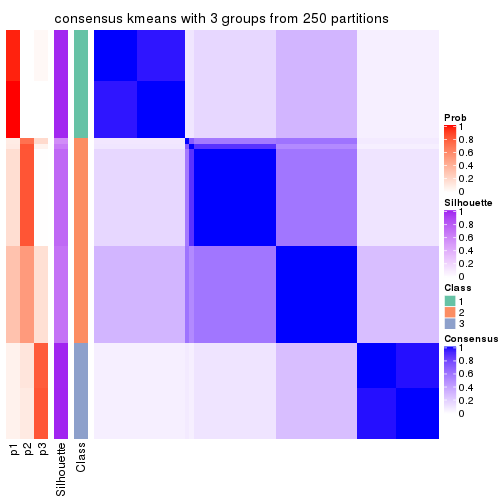
consensus_heatmap(res, k = 4)
consensus_heatmap(res, k = 5)
consensus_heatmap(res, k = 6)
Heatmaps for the membership of samples in all partitions to see how consistent they are:
membership_heatmap(res, k = 2)
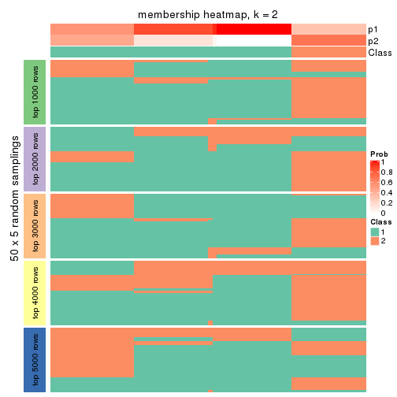
membership_heatmap(res, k = 3)
membership_heatmap(res, k = 4)

membership_heatmap(res, k = 5)
membership_heatmap(res, k = 6)
As soon as we have had the classes for columns, we can look for signatures which are significantly different between classes which can be candidate marks for certain classes. Following are the heatmaps for signatures.
Signature heatmaps where rows are scaled:
get_signatures(res, k = 2)
get_signatures(res, k = 3)
get_signatures(res, k = 4)
get_signatures(res, k = 5)
get_signatures(res, k = 6)

Signature heatmaps where rows are not scaled:
get_signatures(res, k = 2, scale_rows = FALSE)
get_signatures(res, k = 3, scale_rows = FALSE)
get_signatures(res, k = 4, scale_rows = FALSE)
get_signatures(res, k = 5, scale_rows = FALSE)
get_signatures(res, k = 6, scale_rows = FALSE)
Compare the overlap of signatures from different k:
compare_signatures(res)
get_signature() returns a data frame invisibly. TO get the list of signatures, the function
call should be assigned to a variable explicitly. In following code, if plot argument is set
to FALSE, no heatmap is plotted while only the differential analysis is performed.
# code only for demonstration
tb = get_signature(res, k = ..., plot = FALSE)
An example of the output of tb is:
#> which_row fdr mean_1 mean_2 scaled_mean_1 scaled_mean_2 km
#> 1 38 0.042760348 8.373488 9.131774 -0.5533452 0.5164555 1
#> 2 40 0.018707592 7.106213 8.469186 -0.6173731 0.5762149 1
#> 3 55 0.019134737 10.221463 11.207825 -0.6159697 0.5749050 1
#> 4 59 0.006059896 5.921854 7.869574 -0.6899429 0.6439467 1
#> 5 60 0.018055526 8.928898 10.211722 -0.6204761 0.5791110 1
#> 6 98 0.009384629 15.714769 14.887706 0.6635654 -0.6193277 2
...
The columns in tb are:
which_row: row indices corresponding to the input matrix.fdr: FDR for the differential test. mean_x: The mean value in group x.scaled_mean_x: The mean value in group x after rows are scaled.km: Row groups if k-means clustering is applied to rows.UMAP plot which shows how samples are separated.
dimension_reduction(res, k = 2, method = "UMAP")
dimension_reduction(res, k = 3, method = "UMAP")

dimension_reduction(res, k = 4, method = "UMAP")
dimension_reduction(res, k = 5, method = "UMAP")

dimension_reduction(res, k = 6, method = "UMAP")
Following heatmap shows how subgroups are split when increasing k:
collect_classes(res)
If matrix rows can be associated to genes, consider to use GO_Enrichment(res,
...) to perform function enrichment for the signature genes.
The object with results only for a single top-value method and a single partition method can be extracted as:
res = res_list["CV", "skmeans"]
# you can also extract it by
# res = res_list["CV:skmeans"]
A summary of res and all the functions that can be applied to it:
res
#> A 'ConsensusPartition' object with k = 2, 3, 4, 5, 6.
#> On a matrix with 13183 rows and 72 columns.
#> Top rows (1000, 2000, 3000, 4000, 5000) are extracted by 'CV' method.
#> Subgroups are detected by 'skmeans' method.
#> Performed in total 1250 partitions by row resampling.
#> Best k for subgroups seems to be 5.
#>
#> Following methods can be applied to this 'ConsensusPartition' object:
#> [1] "cola_report" "collect_classes" "collect_plots"
#> [4] "collect_stats" "colnames" "compare_signatures"
#> [7] "consensus_heatmap" "dimension_reduction" "functional_enrichment"
#> [10] "get_anno_col" "get_anno" "get_classes"
#> [13] "get_consensus" "get_matrix" "get_membership"
#> [16] "get_param" "get_signatures" "get_stats"
#> [19] "is_best_k" "is_stable_k" "membership_heatmap"
#> [22] "ncol" "nrow" "plot_ecdf"
#> [25] "rownames" "select_partition_number" "show"
#> [28] "suggest_best_k" "test_to_known_factors"
collect_plots() function collects all the plots made from res for all k (number of partitions)
into one single page to provide an easy and fast comparison between different k.
collect_plots(res)
The plots are:
k and the heatmap of
predicted classes for each k.k.k.k.All the plots in panels can be made by individual functions and they are plotted later in this section.
select_partition_number() produces several plots showing different
statistics for choosing “optimized” k. There are following statistics:
k;k, the area increased is defined as \(A_k - A_{k-1}\).The detailed explanations of these statistics can be found in the cola vignette.
Generally speaking, lower PAC score, higher mean silhouette score or higher
concordance corresponds to better partition. Rand index and Jaccard index
measure how similar the current partition is compared to partition with k-1.
If they are too similar, we won't accept k is better than k-1.
select_partition_number(res)
The numeric values for all these statistics can be obtained by get_stats().
get_stats(res)
#> k 1-PAC mean_silhouette concordance area_increased Rand Jaccard
#> 2 2 0.493 0.803 0.860 0.5070 0.493 0.493
#> 3 3 1.000 0.998 0.998 0.2501 0.874 0.744
#> 4 4 1.000 0.997 0.998 0.1996 0.873 0.654
#> 5 5 0.967 0.881 0.902 0.0328 0.972 0.883
#> 6 6 0.869 0.903 0.883 0.0261 0.987 0.942
suggest_best_k() suggests the best \(k\) based on these statistics. The rules are as follows:
NA.suggest_best_k(res)
#> [1] 5
#> attr(,"optional")
#> [1] 3 4
There is also optional best \(k\) = 3 4 that is worth to check.
Following shows the table of the partitions (You need to click the show/hide
code output link to see it). The membership matrix (columns with name p*)
is inferred by
clue::cl_consensus()
function with the SE method. Basically the value in the membership matrix
represents the probability to belong to a certain group. The finall class
label for an item is determined with the group with highest probability it
belongs to.
In get_classes() function, the entropy is calculated from the membership
matrix and the silhouette score is calculated from the consensus matrix.
cbind(get_classes(res, k = 2), get_membership(res, k = 2))
#> class entropy silhouette p1 p2
#> SRR942117 2 0.0000 0.804 0.000 1.000
#> SRR942118 2 0.0000 0.804 0.000 1.000
#> SRR942119 2 0.0000 0.804 0.000 1.000
#> SRR942120 2 0.0000 0.804 0.000 1.000
#> SRR942121 2 0.0000 0.804 0.000 1.000
#> SRR942122 2 0.0000 0.804 0.000 1.000
#> SRR942123 2 0.0000 0.804 0.000 1.000
#> SRR942124 2 0.0000 0.804 0.000 1.000
#> SRR942125 2 0.0000 0.804 0.000 1.000
#> SRR942126 2 0.0000 0.804 0.000 1.000
#> SRR942127 2 0.0000 0.804 0.000 1.000
#> SRR942128 2 0.0000 0.804 0.000 1.000
#> SRR942129 2 0.0000 0.804 0.000 1.000
#> SRR942130 2 0.0000 0.804 0.000 1.000
#> SRR942131 2 0.0000 0.804 0.000 1.000
#> SRR942132 2 0.0000 0.804 0.000 1.000
#> SRR942133 2 0.0000 0.804 0.000 1.000
#> SRR942134 2 0.0000 0.804 0.000 1.000
#> SRR942144 2 0.8608 0.803 0.284 0.716
#> SRR942145 2 0.8608 0.803 0.284 0.716
#> SRR942146 2 0.8608 0.803 0.284 0.716
#> SRR942147 2 0.8608 0.803 0.284 0.716
#> SRR942148 2 0.8608 0.803 0.284 0.716
#> SRR942149 2 0.8608 0.803 0.284 0.716
#> SRR942150 2 0.8608 0.803 0.284 0.716
#> SRR942151 2 0.8608 0.803 0.284 0.716
#> SRR942152 2 0.8608 0.803 0.284 0.716
#> SRR942135 2 0.8608 0.803 0.284 0.716
#> SRR942136 2 0.8608 0.803 0.284 0.716
#> SRR942137 2 0.8608 0.803 0.284 0.716
#> SRR942138 2 0.8608 0.803 0.284 0.716
#> SRR942139 2 0.8608 0.803 0.284 0.716
#> SRR942140 2 0.8608 0.803 0.284 0.716
#> SRR942141 2 0.8608 0.803 0.284 0.716
#> SRR942142 2 0.8608 0.803 0.284 0.716
#> SRR942143 2 0.8016 0.804 0.244 0.756
#> SRR942153 1 0.0376 0.790 0.996 0.004
#> SRR942154 1 0.0376 0.790 0.996 0.004
#> SRR942155 1 0.0376 0.790 0.996 0.004
#> SRR942156 1 0.0376 0.790 0.996 0.004
#> SRR942157 1 0.0376 0.790 0.996 0.004
#> SRR942158 1 0.0376 0.790 0.996 0.004
#> SRR942159 1 0.0376 0.790 0.996 0.004
#> SRR942160 1 0.0376 0.790 0.996 0.004
#> SRR942161 1 0.0376 0.790 0.996 0.004
#> SRR942162 1 0.0376 0.790 0.996 0.004
#> SRR942163 1 0.0376 0.790 0.996 0.004
#> SRR942164 1 0.0376 0.790 0.996 0.004
#> SRR942166 1 0.0376 0.790 0.996 0.004
#> SRR942167 1 0.0376 0.790 0.996 0.004
#> SRR942168 1 0.0376 0.790 0.996 0.004
#> SRR942169 1 0.0376 0.790 0.996 0.004
#> SRR942170 1 0.0376 0.790 0.996 0.004
#> SRR942171 1 0.8608 0.814 0.716 0.284
#> SRR942172 1 0.8608 0.814 0.716 0.284
#> SRR942173 1 0.8608 0.814 0.716 0.284
#> SRR942174 1 0.8608 0.814 0.716 0.284
#> SRR942175 1 0.8608 0.814 0.716 0.284
#> SRR942176 1 0.8608 0.814 0.716 0.284
#> SRR942177 1 0.8608 0.814 0.716 0.284
#> SRR942178 1 0.8608 0.814 0.716 0.284
#> SRR942179 1 0.8608 0.814 0.716 0.284
#> SRR942180 1 0.8608 0.814 0.716 0.284
#> SRR942181 1 0.8608 0.814 0.716 0.284
#> SRR942182 1 0.8608 0.814 0.716 0.284
#> SRR942183 1 0.8608 0.814 0.716 0.284
#> SRR942184 1 0.8608 0.814 0.716 0.284
#> SRR942185 1 0.8608 0.814 0.716 0.284
#> SRR942186 1 0.8608 0.814 0.716 0.284
#> SRR942187 1 0.8608 0.814 0.716 0.284
#> SRR942188 1 0.8608 0.814 0.716 0.284
#> SRR942189 1 0.8608 0.814 0.716 0.284
cbind(get_classes(res, k = 3), get_membership(res, k = 3))
#> class entropy silhouette p1 p2 p3
#> SRR942117 2 0.0000 0.996 0 1.000 0.000
#> SRR942118 2 0.0000 0.996 0 1.000 0.000
#> SRR942119 2 0.0000 0.996 0 1.000 0.000
#> SRR942120 2 0.0000 0.996 0 1.000 0.000
#> SRR942121 2 0.0000 0.996 0 1.000 0.000
#> SRR942122 2 0.0000 0.996 0 1.000 0.000
#> SRR942123 2 0.0000 0.996 0 1.000 0.000
#> SRR942124 2 0.0000 0.996 0 1.000 0.000
#> SRR942125 2 0.0000 0.996 0 1.000 0.000
#> SRR942126 2 0.0000 0.996 0 1.000 0.000
#> SRR942127 2 0.0000 0.996 0 1.000 0.000
#> SRR942128 2 0.0000 0.996 0 1.000 0.000
#> SRR942129 2 0.0000 0.996 0 1.000 0.000
#> SRR942130 2 0.0000 0.996 0 1.000 0.000
#> SRR942131 2 0.0000 0.996 0 1.000 0.000
#> SRR942132 2 0.0000 0.996 0 1.000 0.000
#> SRR942133 2 0.0000 0.996 0 1.000 0.000
#> SRR942134 2 0.0000 0.996 0 1.000 0.000
#> SRR942144 2 0.0424 0.996 0 0.992 0.008
#> SRR942145 2 0.0424 0.996 0 0.992 0.008
#> SRR942146 2 0.0424 0.996 0 0.992 0.008
#> SRR942147 2 0.0424 0.996 0 0.992 0.008
#> SRR942148 2 0.0424 0.996 0 0.992 0.008
#> SRR942149 2 0.0424 0.996 0 0.992 0.008
#> SRR942150 2 0.0424 0.996 0 0.992 0.008
#> SRR942151 2 0.0424 0.996 0 0.992 0.008
#> SRR942152 2 0.0424 0.996 0 0.992 0.008
#> SRR942135 2 0.0424 0.996 0 0.992 0.008
#> SRR942136 2 0.0424 0.996 0 0.992 0.008
#> SRR942137 2 0.0424 0.996 0 0.992 0.008
#> SRR942138 2 0.0424 0.996 0 0.992 0.008
#> SRR942139 2 0.0424 0.996 0 0.992 0.008
#> SRR942140 2 0.0424 0.996 0 0.992 0.008
#> SRR942141 2 0.0424 0.996 0 0.992 0.008
#> SRR942142 2 0.0424 0.996 0 0.992 0.008
#> SRR942143 2 0.0000 0.996 0 1.000 0.000
#> SRR942153 3 0.0000 1.000 0 0.000 1.000
#> SRR942154 3 0.0000 1.000 0 0.000 1.000
#> SRR942155 3 0.0000 1.000 0 0.000 1.000
#> SRR942156 3 0.0000 1.000 0 0.000 1.000
#> SRR942157 3 0.0000 1.000 0 0.000 1.000
#> SRR942158 3 0.0000 1.000 0 0.000 1.000
#> SRR942159 3 0.0000 1.000 0 0.000 1.000
#> SRR942160 3 0.0000 1.000 0 0.000 1.000
#> SRR942161 3 0.0000 1.000 0 0.000 1.000
#> SRR942162 3 0.0000 1.000 0 0.000 1.000
#> SRR942163 3 0.0000 1.000 0 0.000 1.000
#> SRR942164 3 0.0000 1.000 0 0.000 1.000
#> SRR942166 3 0.0000 1.000 0 0.000 1.000
#> SRR942167 3 0.0000 1.000 0 0.000 1.000
#> SRR942168 3 0.0000 1.000 0 0.000 1.000
#> SRR942169 3 0.0000 1.000 0 0.000 1.000
#> SRR942170 3 0.0000 1.000 0 0.000 1.000
#> SRR942171 1 0.0000 1.000 1 0.000 0.000
#> SRR942172 1 0.0000 1.000 1 0.000 0.000
#> SRR942173 1 0.0000 1.000 1 0.000 0.000
#> SRR942174 1 0.0000 1.000 1 0.000 0.000
#> SRR942175 1 0.0000 1.000 1 0.000 0.000
#> SRR942176 1 0.0000 1.000 1 0.000 0.000
#> SRR942177 1 0.0000 1.000 1 0.000 0.000
#> SRR942178 1 0.0000 1.000 1 0.000 0.000
#> SRR942179 1 0.0000 1.000 1 0.000 0.000
#> SRR942180 1 0.0000 1.000 1 0.000 0.000
#> SRR942181 1 0.0000 1.000 1 0.000 0.000
#> SRR942182 1 0.0000 1.000 1 0.000 0.000
#> SRR942183 1 0.0000 1.000 1 0.000 0.000
#> SRR942184 1 0.0000 1.000 1 0.000 0.000
#> SRR942185 1 0.0000 1.000 1 0.000 0.000
#> SRR942186 1 0.0000 1.000 1 0.000 0.000
#> SRR942187 1 0.0000 1.000 1 0.000 0.000
#> SRR942188 1 0.0000 1.000 1 0.000 0.000
#> SRR942189 1 0.0000 1.000 1 0.000 0.000
cbind(get_classes(res, k = 4), get_membership(res, k = 4))
#> class entropy silhouette p1 p2 p3 p4
#> SRR942117 2 0.000 1.000 0 1.000 0 0.000
#> SRR942118 2 0.000 1.000 0 1.000 0 0.000
#> SRR942119 2 0.000 1.000 0 1.000 0 0.000
#> SRR942120 2 0.000 1.000 0 1.000 0 0.000
#> SRR942121 2 0.000 1.000 0 1.000 0 0.000
#> SRR942122 2 0.000 1.000 0 1.000 0 0.000
#> SRR942123 2 0.000 1.000 0 1.000 0 0.000
#> SRR942124 2 0.000 1.000 0 1.000 0 0.000
#> SRR942125 2 0.000 1.000 0 1.000 0 0.000
#> SRR942126 2 0.000 1.000 0 1.000 0 0.000
#> SRR942127 2 0.000 1.000 0 1.000 0 0.000
#> SRR942128 2 0.000 1.000 0 1.000 0 0.000
#> SRR942129 2 0.000 1.000 0 1.000 0 0.000
#> SRR942130 2 0.000 1.000 0 1.000 0 0.000
#> SRR942131 2 0.000 1.000 0 1.000 0 0.000
#> SRR942132 2 0.000 1.000 0 1.000 0 0.000
#> SRR942133 2 0.000 1.000 0 1.000 0 0.000
#> SRR942134 2 0.000 1.000 0 1.000 0 0.000
#> SRR942144 4 0.000 0.993 0 0.000 0 1.000
#> SRR942145 4 0.000 0.993 0 0.000 0 1.000
#> SRR942146 4 0.000 0.993 0 0.000 0 1.000
#> SRR942147 4 0.000 0.993 0 0.000 0 1.000
#> SRR942148 4 0.000 0.993 0 0.000 0 1.000
#> SRR942149 4 0.000 0.993 0 0.000 0 1.000
#> SRR942150 4 0.000 0.993 0 0.000 0 1.000
#> SRR942151 4 0.000 0.993 0 0.000 0 1.000
#> SRR942152 4 0.000 0.993 0 0.000 0 1.000
#> SRR942135 4 0.000 0.993 0 0.000 0 1.000
#> SRR942136 4 0.000 0.993 0 0.000 0 1.000
#> SRR942137 4 0.000 0.993 0 0.000 0 1.000
#> SRR942138 4 0.000 0.993 0 0.000 0 1.000
#> SRR942139 4 0.000 0.993 0 0.000 0 1.000
#> SRR942140 4 0.000 0.993 0 0.000 0 1.000
#> SRR942141 4 0.000 0.993 0 0.000 0 1.000
#> SRR942142 4 0.000 0.993 0 0.000 0 1.000
#> SRR942143 4 0.253 0.874 0 0.112 0 0.888
#> SRR942153 3 0.000 1.000 0 0.000 1 0.000
#> SRR942154 3 0.000 1.000 0 0.000 1 0.000
#> SRR942155 3 0.000 1.000 0 0.000 1 0.000
#> SRR942156 3 0.000 1.000 0 0.000 1 0.000
#> SRR942157 3 0.000 1.000 0 0.000 1 0.000
#> SRR942158 3 0.000 1.000 0 0.000 1 0.000
#> SRR942159 3 0.000 1.000 0 0.000 1 0.000
#> SRR942160 3 0.000 1.000 0 0.000 1 0.000
#> SRR942161 3 0.000 1.000 0 0.000 1 0.000
#> SRR942162 3 0.000 1.000 0 0.000 1 0.000
#> SRR942163 3 0.000 1.000 0 0.000 1 0.000
#> SRR942164 3 0.000 1.000 0 0.000 1 0.000
#> SRR942166 3 0.000 1.000 0 0.000 1 0.000
#> SRR942167 3 0.000 1.000 0 0.000 1 0.000
#> SRR942168 3 0.000 1.000 0 0.000 1 0.000
#> SRR942169 3 0.000 1.000 0 0.000 1 0.000
#> SRR942170 3 0.000 1.000 0 0.000 1 0.000
#> SRR942171 1 0.000 1.000 1 0.000 0 0.000
#> SRR942172 1 0.000 1.000 1 0.000 0 0.000
#> SRR942173 1 0.000 1.000 1 0.000 0 0.000
#> SRR942174 1 0.000 1.000 1 0.000 0 0.000
#> SRR942175 1 0.000 1.000 1 0.000 0 0.000
#> SRR942176 1 0.000 1.000 1 0.000 0 0.000
#> SRR942177 1 0.000 1.000 1 0.000 0 0.000
#> SRR942178 1 0.000 1.000 1 0.000 0 0.000
#> SRR942179 1 0.000 1.000 1 0.000 0 0.000
#> SRR942180 1 0.000 1.000 1 0.000 0 0.000
#> SRR942181 1 0.000 1.000 1 0.000 0 0.000
#> SRR942182 1 0.000 1.000 1 0.000 0 0.000
#> SRR942183 1 0.000 1.000 1 0.000 0 0.000
#> SRR942184 1 0.000 1.000 1 0.000 0 0.000
#> SRR942185 1 0.000 1.000 1 0.000 0 0.000
#> SRR942186 1 0.000 1.000 1 0.000 0 0.000
#> SRR942187 1 0.000 1.000 1 0.000 0 0.000
#> SRR942188 1 0.000 1.000 1 0.000 0 0.000
#> SRR942189 1 0.000 1.000 1 0.000 0 0.000
cbind(get_classes(res, k = 5), get_membership(res, k = 5))
#> class entropy silhouette p1 p2 p3 p4 p5
#> SRR942117 2 0.0880 0.975 0.000 0.968 0.000 0.000 0.032
#> SRR942118 2 0.0963 0.974 0.000 0.964 0.000 0.000 0.036
#> SRR942119 2 0.0794 0.975 0.000 0.972 0.000 0.000 0.028
#> SRR942120 2 0.0963 0.974 0.000 0.964 0.000 0.000 0.036
#> SRR942121 2 0.0880 0.974 0.000 0.968 0.000 0.000 0.032
#> SRR942122 2 0.0880 0.975 0.000 0.968 0.000 0.000 0.032
#> SRR942123 2 0.1197 0.973 0.000 0.952 0.000 0.000 0.048
#> SRR942124 2 0.0794 0.975 0.000 0.972 0.000 0.000 0.028
#> SRR942125 2 0.3242 0.829 0.000 0.784 0.000 0.000 0.216
#> SRR942126 2 0.0404 0.976 0.000 0.988 0.000 0.000 0.012
#> SRR942127 2 0.0510 0.975 0.000 0.984 0.000 0.000 0.016
#> SRR942128 2 0.0510 0.975 0.000 0.984 0.000 0.000 0.016
#> SRR942129 2 0.0290 0.975 0.000 0.992 0.000 0.000 0.008
#> SRR942130 2 0.0510 0.976 0.000 0.984 0.000 0.000 0.016
#> SRR942131 2 0.0404 0.976 0.000 0.988 0.000 0.000 0.012
#> SRR942132 2 0.0000 0.976 0.000 1.000 0.000 0.000 0.000
#> SRR942133 2 0.0290 0.975 0.000 0.992 0.000 0.000 0.008
#> SRR942134 2 0.0404 0.975 0.000 0.988 0.000 0.000 0.012
#> SRR942144 4 0.1197 0.704 0.000 0.000 0.000 0.952 0.048
#> SRR942145 4 0.1851 0.661 0.000 0.000 0.000 0.912 0.088
#> SRR942146 4 0.1608 0.671 0.000 0.000 0.000 0.928 0.072
#> SRR942147 4 0.1197 0.705 0.000 0.000 0.000 0.952 0.048
#> SRR942148 4 0.0880 0.704 0.000 0.000 0.000 0.968 0.032
#> SRR942149 4 0.1270 0.704 0.000 0.000 0.000 0.948 0.052
#> SRR942150 4 0.1544 0.693 0.000 0.000 0.000 0.932 0.068
#> SRR942151 4 0.1544 0.687 0.000 0.000 0.000 0.932 0.068
#> SRR942152 4 0.1478 0.694 0.000 0.000 0.000 0.936 0.064
#> SRR942135 4 0.4291 -0.825 0.000 0.000 0.000 0.536 0.464
#> SRR942136 5 0.4302 0.927 0.000 0.000 0.000 0.480 0.520
#> SRR942137 5 0.4291 0.934 0.000 0.000 0.000 0.464 0.536
#> SRR942138 5 0.4297 0.933 0.000 0.000 0.000 0.472 0.528
#> SRR942139 5 0.4291 0.924 0.000 0.000 0.000 0.464 0.536
#> SRR942140 5 0.4297 0.939 0.000 0.000 0.000 0.472 0.528
#> SRR942141 5 0.4297 0.940 0.000 0.000 0.000 0.472 0.528
#> SRR942142 4 0.4307 -0.902 0.000 0.000 0.000 0.504 0.496
#> SRR942143 4 0.4655 0.369 0.000 0.028 0.000 0.644 0.328
#> SRR942153 3 0.0000 0.999 0.000 0.000 1.000 0.000 0.000
#> SRR942154 3 0.0000 0.999 0.000 0.000 1.000 0.000 0.000
#> SRR942155 3 0.0000 0.999 0.000 0.000 1.000 0.000 0.000
#> SRR942156 3 0.0000 0.999 0.000 0.000 1.000 0.000 0.000
#> SRR942157 3 0.0000 0.999 0.000 0.000 1.000 0.000 0.000
#> SRR942158 3 0.0000 0.999 0.000 0.000 1.000 0.000 0.000
#> SRR942159 3 0.0000 0.999 0.000 0.000 1.000 0.000 0.000
#> SRR942160 3 0.0000 0.999 0.000 0.000 1.000 0.000 0.000
#> SRR942161 3 0.0510 0.988 0.000 0.000 0.984 0.000 0.016
#> SRR942162 3 0.0000 0.999 0.000 0.000 1.000 0.000 0.000
#> SRR942163 3 0.0000 0.999 0.000 0.000 1.000 0.000 0.000
#> SRR942164 3 0.0000 0.999 0.000 0.000 1.000 0.000 0.000
#> SRR942166 3 0.0000 0.999 0.000 0.000 1.000 0.000 0.000
#> SRR942167 3 0.0000 0.999 0.000 0.000 1.000 0.000 0.000
#> SRR942168 3 0.0000 0.999 0.000 0.000 1.000 0.000 0.000
#> SRR942169 3 0.0000 0.999 0.000 0.000 1.000 0.000 0.000
#> SRR942170 3 0.0290 0.993 0.000 0.000 0.992 0.000 0.008
#> SRR942171 1 0.0162 0.981 0.996 0.000 0.000 0.000 0.004
#> SRR942172 1 0.0404 0.980 0.988 0.000 0.000 0.000 0.012
#> SRR942173 1 0.0162 0.981 0.996 0.000 0.000 0.000 0.004
#> SRR942174 1 0.0162 0.981 0.996 0.000 0.000 0.000 0.004
#> SRR942175 1 0.0290 0.981 0.992 0.000 0.000 0.000 0.008
#> SRR942176 1 0.0162 0.981 0.996 0.000 0.000 0.000 0.004
#> SRR942177 1 0.0162 0.981 0.996 0.000 0.000 0.000 0.004
#> SRR942178 1 0.0162 0.981 0.996 0.000 0.000 0.000 0.004
#> SRR942179 1 0.0162 0.981 0.996 0.000 0.000 0.000 0.004
#> SRR942180 1 0.0000 0.981 1.000 0.000 0.000 0.000 0.000
#> SRR942181 1 0.1121 0.977 0.956 0.000 0.000 0.000 0.044
#> SRR942182 1 0.1043 0.978 0.960 0.000 0.000 0.000 0.040
#> SRR942183 1 0.1121 0.977 0.956 0.000 0.000 0.000 0.044
#> SRR942184 1 0.1121 0.977 0.956 0.000 0.000 0.000 0.044
#> SRR942185 1 0.1043 0.978 0.960 0.000 0.000 0.000 0.040
#> SRR942186 1 0.1121 0.977 0.956 0.000 0.000 0.000 0.044
#> SRR942187 1 0.1043 0.978 0.960 0.000 0.000 0.000 0.040
#> SRR942188 1 0.1121 0.977 0.956 0.000 0.000 0.000 0.044
#> SRR942189 1 0.1608 0.955 0.928 0.000 0.000 0.000 0.072
cbind(get_classes(res, k = 6), get_membership(res, k = 6))
#> class entropy silhouette p1 p2 p3 p4 p5 p6
#> SRR942117 2 0.2706 0.910 0.000 0.832 0.000 0.000 0.008 NA
#> SRR942118 2 0.2743 0.908 0.000 0.828 0.000 0.000 0.008 NA
#> SRR942119 2 0.2848 0.908 0.000 0.816 0.000 0.000 0.008 NA
#> SRR942120 2 0.2730 0.911 0.000 0.836 0.000 0.000 0.012 NA
#> SRR942121 2 0.2703 0.910 0.000 0.824 0.000 0.000 0.004 NA
#> SRR942122 2 0.2389 0.917 0.000 0.864 0.000 0.000 0.008 NA
#> SRR942123 2 0.2912 0.906 0.000 0.816 0.000 0.000 0.012 NA
#> SRR942124 2 0.2613 0.915 0.000 0.848 0.000 0.000 0.012 NA
#> SRR942125 2 0.4172 0.695 0.000 0.564 0.000 0.004 0.008 NA
#> SRR942126 2 0.1124 0.917 0.000 0.956 0.000 0.000 0.008 NA
#> SRR942127 2 0.0692 0.917 0.000 0.976 0.000 0.000 0.004 NA
#> SRR942128 2 0.1124 0.921 0.000 0.956 0.000 0.000 0.008 NA
#> SRR942129 2 0.0891 0.920 0.000 0.968 0.000 0.000 0.008 NA
#> SRR942130 2 0.0806 0.918 0.000 0.972 0.000 0.000 0.008 NA
#> SRR942131 2 0.1010 0.919 0.000 0.960 0.000 0.000 0.004 NA
#> SRR942132 2 0.0891 0.918 0.000 0.968 0.000 0.000 0.008 NA
#> SRR942133 2 0.1088 0.918 0.000 0.960 0.000 0.000 0.016 NA
#> SRR942134 2 0.1492 0.919 0.000 0.940 0.000 0.000 0.024 NA
#> SRR942144 4 0.2318 0.791 0.000 0.000 0.000 0.892 0.064 NA
#> SRR942145 4 0.3092 0.770 0.000 0.000 0.000 0.836 0.104 NA
#> SRR942146 4 0.2672 0.783 0.000 0.000 0.000 0.868 0.080 NA
#> SRR942147 4 0.2647 0.775 0.000 0.000 0.000 0.868 0.088 NA
#> SRR942148 4 0.2258 0.792 0.000 0.000 0.000 0.896 0.060 NA
#> SRR942149 4 0.2542 0.787 0.000 0.000 0.000 0.876 0.080 NA
#> SRR942150 4 0.2875 0.783 0.000 0.000 0.000 0.852 0.096 NA
#> SRR942151 4 0.3094 0.719 0.000 0.000 0.000 0.824 0.140 NA
#> SRR942152 4 0.3123 0.761 0.000 0.000 0.000 0.836 0.076 NA
#> SRR942135 5 0.4893 0.812 0.000 0.000 0.000 0.356 0.572 NA
#> SRR942136 5 0.4047 0.881 0.000 0.000 0.000 0.296 0.676 NA
#> SRR942137 5 0.4002 0.883 0.000 0.000 0.000 0.260 0.704 NA
#> SRR942138 5 0.4118 0.869 0.000 0.000 0.000 0.312 0.660 NA
#> SRR942139 5 0.4146 0.867 0.000 0.000 0.000 0.288 0.676 NA
#> SRR942140 5 0.3799 0.884 0.000 0.000 0.000 0.276 0.704 NA
#> SRR942141 5 0.3871 0.875 0.000 0.000 0.000 0.308 0.676 NA
#> SRR942142 5 0.4580 0.839 0.000 0.000 0.000 0.336 0.612 NA
#> SRR942143 4 0.5664 0.389 0.000 0.012 0.000 0.492 0.112 NA
#> SRR942153 3 0.0508 0.975 0.000 0.000 0.984 0.000 0.004 NA
#> SRR942154 3 0.1074 0.972 0.000 0.000 0.960 0.000 0.012 NA
#> SRR942155 3 0.1151 0.971 0.000 0.000 0.956 0.000 0.012 NA
#> SRR942156 3 0.0777 0.973 0.000 0.000 0.972 0.000 0.004 NA
#> SRR942157 3 0.0717 0.974 0.000 0.000 0.976 0.000 0.008 NA
#> SRR942158 3 0.1124 0.970 0.000 0.000 0.956 0.000 0.008 NA
#> SRR942159 3 0.1151 0.969 0.000 0.000 0.956 0.000 0.012 NA
#> SRR942160 3 0.0405 0.975 0.000 0.000 0.988 0.000 0.004 NA
#> SRR942161 3 0.2480 0.921 0.000 0.000 0.872 0.000 0.024 NA
#> SRR942162 3 0.0622 0.974 0.000 0.000 0.980 0.000 0.008 NA
#> SRR942163 3 0.0993 0.972 0.000 0.000 0.964 0.000 0.012 NA
#> SRR942164 3 0.0622 0.973 0.000 0.000 0.980 0.000 0.012 NA
#> SRR942166 3 0.0622 0.973 0.000 0.000 0.980 0.000 0.012 NA
#> SRR942167 3 0.0622 0.974 0.000 0.000 0.980 0.000 0.008 NA
#> SRR942168 3 0.0891 0.972 0.000 0.000 0.968 0.000 0.008 NA
#> SRR942169 3 0.0993 0.973 0.000 0.000 0.964 0.000 0.012 NA
#> SRR942170 3 0.1745 0.953 0.000 0.000 0.924 0.000 0.020 NA
#> SRR942171 1 0.0914 0.956 0.968 0.000 0.000 0.000 0.016 NA
#> SRR942172 1 0.1720 0.952 0.928 0.000 0.000 0.000 0.032 NA
#> SRR942173 1 0.1257 0.953 0.952 0.000 0.000 0.000 0.028 NA
#> SRR942174 1 0.1341 0.953 0.948 0.000 0.000 0.000 0.028 NA
#> SRR942175 1 0.1257 0.955 0.952 0.000 0.000 0.000 0.020 NA
#> SRR942176 1 0.0914 0.956 0.968 0.000 0.000 0.000 0.016 NA
#> SRR942177 1 0.1176 0.956 0.956 0.000 0.000 0.000 0.024 NA
#> SRR942178 1 0.1151 0.953 0.956 0.000 0.000 0.000 0.032 NA
#> SRR942179 1 0.0717 0.954 0.976 0.000 0.000 0.000 0.016 NA
#> SRR942180 1 0.1003 0.954 0.964 0.000 0.000 0.000 0.020 NA
#> SRR942181 1 0.1802 0.949 0.916 0.000 0.000 0.000 0.012 NA
#> SRR942182 1 0.2088 0.952 0.904 0.000 0.000 0.000 0.028 NA
#> SRR942183 1 0.2199 0.948 0.892 0.000 0.000 0.000 0.020 NA
#> SRR942184 1 0.1779 0.951 0.920 0.000 0.000 0.000 0.016 NA
#> SRR942185 1 0.1858 0.951 0.912 0.000 0.000 0.000 0.012 NA
#> SRR942186 1 0.2122 0.952 0.900 0.000 0.000 0.000 0.024 NA
#> SRR942187 1 0.1967 0.950 0.904 0.000 0.000 0.000 0.012 NA
#> SRR942188 1 0.2066 0.950 0.904 0.000 0.000 0.000 0.024 NA
#> SRR942189 1 0.3276 0.909 0.816 0.000 0.000 0.000 0.052 NA
Heatmaps for the consensus matrix. It visualizes the probability of two samples to be in a same group.
consensus_heatmap(res, k = 2)
consensus_heatmap(res, k = 3)
consensus_heatmap(res, k = 4)
consensus_heatmap(res, k = 5)
consensus_heatmap(res, k = 6)
Heatmaps for the membership of samples in all partitions to see how consistent they are:
membership_heatmap(res, k = 2)
membership_heatmap(res, k = 3)
membership_heatmap(res, k = 4)
membership_heatmap(res, k = 5)
membership_heatmap(res, k = 6)
As soon as we have had the classes for columns, we can look for signatures which are significantly different between classes which can be candidate marks for certain classes. Following are the heatmaps for signatures.
Signature heatmaps where rows are scaled:
get_signatures(res, k = 2)
get_signatures(res, k = 3)
get_signatures(res, k = 4)
get_signatures(res, k = 5)
get_signatures(res, k = 6)
Signature heatmaps where rows are not scaled:
get_signatures(res, k = 2, scale_rows = FALSE)

get_signatures(res, k = 3, scale_rows = FALSE)
get_signatures(res, k = 4, scale_rows = FALSE)
get_signatures(res, k = 5, scale_rows = FALSE)
get_signatures(res, k = 6, scale_rows = FALSE)
Compare the overlap of signatures from different k:
compare_signatures(res)
get_signature() returns a data frame invisibly. TO get the list of signatures, the function
call should be assigned to a variable explicitly. In following code, if plot argument is set
to FALSE, no heatmap is plotted while only the differential analysis is performed.
# code only for demonstration
tb = get_signature(res, k = ..., plot = FALSE)
An example of the output of tb is:
#> which_row fdr mean_1 mean_2 scaled_mean_1 scaled_mean_2 km
#> 1 38 0.042760348 8.373488 9.131774 -0.5533452 0.5164555 1
#> 2 40 0.018707592 7.106213 8.469186 -0.6173731 0.5762149 1
#> 3 55 0.019134737 10.221463 11.207825 -0.6159697 0.5749050 1
#> 4 59 0.006059896 5.921854 7.869574 -0.6899429 0.6439467 1
#> 5 60 0.018055526 8.928898 10.211722 -0.6204761 0.5791110 1
#> 6 98 0.009384629 15.714769 14.887706 0.6635654 -0.6193277 2
...
The columns in tb are:
which_row: row indices corresponding to the input matrix.fdr: FDR for the differential test. mean_x: The mean value in group x.scaled_mean_x: The mean value in group x after rows are scaled.km: Row groups if k-means clustering is applied to rows.UMAP plot which shows how samples are separated.
dimension_reduction(res, k = 2, method = "UMAP")
dimension_reduction(res, k = 3, method = "UMAP")
dimension_reduction(res, k = 4, method = "UMAP")
dimension_reduction(res, k = 5, method = "UMAP")
dimension_reduction(res, k = 6, method = "UMAP")
Following heatmap shows how subgroups are split when increasing k:
collect_classes(res)
If matrix rows can be associated to genes, consider to use GO_Enrichment(res,
...) to perform function enrichment for the signature genes.
The object with results only for a single top-value method and a single partition method can be extracted as:
res = res_list["CV", "pam"]
# you can also extract it by
# res = res_list["CV:pam"]
A summary of res and all the functions that can be applied to it:
res
#> A 'ConsensusPartition' object with k = 2, 3, 4, 5, 6.
#> On a matrix with 13183 rows and 72 columns.
#> Top rows (1000, 2000, 3000, 4000, 5000) are extracted by 'CV' method.
#> Subgroups are detected by 'pam' method.
#> Performed in total 1250 partitions by row resampling.
#> Best k for subgroups seems to be 4.
#>
#> Following methods can be applied to this 'ConsensusPartition' object:
#> [1] "cola_report" "collect_classes" "collect_plots"
#> [4] "collect_stats" "colnames" "compare_signatures"
#> [7] "consensus_heatmap" "dimension_reduction" "functional_enrichment"
#> [10] "get_anno_col" "get_anno" "get_classes"
#> [13] "get_consensus" "get_matrix" "get_membership"
#> [16] "get_param" "get_signatures" "get_stats"
#> [19] "is_best_k" "is_stable_k" "membership_heatmap"
#> [22] "ncol" "nrow" "plot_ecdf"
#> [25] "rownames" "select_partition_number" "show"
#> [28] "suggest_best_k" "test_to_known_factors"
collect_plots() function collects all the plots made from res for all k (number of partitions)
into one single page to provide an easy and fast comparison between different k.
collect_plots(res)
The plots are:
k and the heatmap of
predicted classes for each k.k.k.k.All the plots in panels can be made by individual functions and they are plotted later in this section.
select_partition_number() produces several plots showing different
statistics for choosing “optimized” k. There are following statistics:
k;k, the area increased is defined as \(A_k - A_{k-1}\).The detailed explanations of these statistics can be found in the cola vignette.
Generally speaking, lower PAC score, higher mean silhouette score or higher
concordance corresponds to better partition. Rand index and Jaccard index
measure how similar the current partition is compared to partition with k-1.
If they are too similar, we won't accept k is better than k-1.
select_partition_number(res)
The numeric values for all these statistics can be obtained by get_stats().
get_stats(res)
#> k 1-PAC mean_silhouette concordance area_increased Rand Jaccard
#> 2 2 1 0.997 0.996 0.39438 0.606 0.606
#> 3 3 1 1.000 1.000 0.60701 0.761 0.605
#> 4 4 1 0.999 1.000 0.19979 0.873 0.654
#> 5 5 1 0.986 1.000 0.00875 0.993 0.972
#> 6 6 1 0.968 0.996 0.00859 0.993 0.971
suggest_best_k() suggests the best \(k\) based on these statistics. The rules are as follows:
NA.suggest_best_k(res)
#> [1] 4
#> attr(,"optional")
#> [1] 2 3
There is also optional best \(k\) = 2 3 that is worth to check.
Following shows the table of the partitions (You need to click the show/hide
code output link to see it). The membership matrix (columns with name p*)
is inferred by
clue::cl_consensus()
function with the SE method. Basically the value in the membership matrix
represents the probability to belong to a certain group. The finall class
label for an item is determined with the group with highest probability it
belongs to.
In get_classes() function, the entropy is calculated from the membership
matrix and the silhouette score is calculated from the consensus matrix.
cbind(get_classes(res, k = 2), get_membership(res, k = 2))
#> class entropy silhouette p1 p2
#> SRR942117 2 0.0672 0.997 0.008 0.992
#> SRR942118 2 0.0672 0.997 0.008 0.992
#> SRR942119 2 0.0672 0.997 0.008 0.992
#> SRR942120 2 0.0672 0.997 0.008 0.992
#> SRR942121 2 0.0672 0.997 0.008 0.992
#> SRR942122 2 0.0672 0.997 0.008 0.992
#> SRR942123 2 0.0672 0.997 0.008 0.992
#> SRR942124 2 0.0672 0.997 0.008 0.992
#> SRR942125 2 0.0672 0.997 0.008 0.992
#> SRR942126 2 0.0672 0.997 0.008 0.992
#> SRR942127 2 0.0672 0.997 0.008 0.992
#> SRR942128 2 0.0672 0.997 0.008 0.992
#> SRR942129 2 0.0672 0.997 0.008 0.992
#> SRR942130 2 0.0672 0.997 0.008 0.992
#> SRR942131 2 0.0672 0.997 0.008 0.992
#> SRR942132 2 0.0672 0.997 0.008 0.992
#> SRR942133 2 0.0672 0.997 0.008 0.992
#> SRR942134 2 0.0672 0.997 0.008 0.992
#> SRR942144 2 0.0672 0.997 0.008 0.992
#> SRR942145 2 0.0672 0.997 0.008 0.992
#> SRR942146 2 0.0672 0.997 0.008 0.992
#> SRR942147 2 0.0672 0.997 0.008 0.992
#> SRR942148 2 0.0672 0.997 0.008 0.992
#> SRR942149 2 0.0672 0.997 0.008 0.992
#> SRR942150 2 0.0672 0.997 0.008 0.992
#> SRR942151 2 0.0672 0.997 0.008 0.992
#> SRR942152 2 0.0672 0.997 0.008 0.992
#> SRR942135 2 0.0672 0.997 0.008 0.992
#> SRR942136 2 0.0672 0.997 0.008 0.992
#> SRR942137 2 0.0672 0.997 0.008 0.992
#> SRR942138 2 0.0672 0.997 0.008 0.992
#> SRR942139 2 0.0672 0.997 0.008 0.992
#> SRR942140 2 0.0672 0.997 0.008 0.992
#> SRR942141 2 0.0672 0.997 0.008 0.992
#> SRR942142 2 0.0672 0.997 0.008 0.992
#> SRR942143 2 0.0672 0.997 0.008 0.992
#> SRR942153 2 0.0000 0.994 0.000 1.000
#> SRR942154 2 0.0000 0.994 0.000 1.000
#> SRR942155 2 0.0000 0.994 0.000 1.000
#> SRR942156 2 0.0000 0.994 0.000 1.000
#> SRR942157 2 0.0000 0.994 0.000 1.000
#> SRR942158 2 0.0000 0.994 0.000 1.000
#> SRR942159 2 0.0000 0.994 0.000 1.000
#> SRR942160 2 0.0000 0.994 0.000 1.000
#> SRR942161 2 0.0000 0.994 0.000 1.000
#> SRR942162 2 0.0000 0.994 0.000 1.000
#> SRR942163 2 0.0000 0.994 0.000 1.000
#> SRR942164 2 0.0000 0.994 0.000 1.000
#> SRR942166 2 0.0000 0.994 0.000 1.000
#> SRR942167 2 0.0000 0.994 0.000 1.000
#> SRR942168 2 0.0000 0.994 0.000 1.000
#> SRR942169 2 0.0000 0.994 0.000 1.000
#> SRR942170 2 0.0000 0.994 0.000 1.000
#> SRR942171 1 0.0000 1.000 1.000 0.000
#> SRR942172 1 0.0000 1.000 1.000 0.000
#> SRR942173 1 0.0000 1.000 1.000 0.000
#> SRR942174 1 0.0000 1.000 1.000 0.000
#> SRR942175 1 0.0000 1.000 1.000 0.000
#> SRR942176 1 0.0000 1.000 1.000 0.000
#> SRR942177 1 0.0000 1.000 1.000 0.000
#> SRR942178 1 0.0000 1.000 1.000 0.000
#> SRR942179 1 0.0000 1.000 1.000 0.000
#> SRR942180 1 0.0000 1.000 1.000 0.000
#> SRR942181 1 0.0000 1.000 1.000 0.000
#> SRR942182 1 0.0000 1.000 1.000 0.000
#> SRR942183 1 0.0000 1.000 1.000 0.000
#> SRR942184 1 0.0000 1.000 1.000 0.000
#> SRR942185 1 0.0000 1.000 1.000 0.000
#> SRR942186 1 0.0000 1.000 1.000 0.000
#> SRR942187 1 0.0000 1.000 1.000 0.000
#> SRR942188 1 0.0000 1.000 1.000 0.000
#> SRR942189 1 0.0000 1.000 1.000 0.000
cbind(get_classes(res, k = 3), get_membership(res, k = 3))
#> class entropy silhouette p1 p2 p3
#> SRR942117 2 0 1 0 1 0
#> SRR942118 2 0 1 0 1 0
#> SRR942119 2 0 1 0 1 0
#> SRR942120 2 0 1 0 1 0
#> SRR942121 2 0 1 0 1 0
#> SRR942122 2 0 1 0 1 0
#> SRR942123 2 0 1 0 1 0
#> SRR942124 2 0 1 0 1 0
#> SRR942125 2 0 1 0 1 0
#> SRR942126 2 0 1 0 1 0
#> SRR942127 2 0 1 0 1 0
#> SRR942128 2 0 1 0 1 0
#> SRR942129 2 0 1 0 1 0
#> SRR942130 2 0 1 0 1 0
#> SRR942131 2 0 1 0 1 0
#> SRR942132 2 0 1 0 1 0
#> SRR942133 2 0 1 0 1 0
#> SRR942134 2 0 1 0 1 0
#> SRR942144 2 0 1 0 1 0
#> SRR942145 2 0 1 0 1 0
#> SRR942146 2 0 1 0 1 0
#> SRR942147 2 0 1 0 1 0
#> SRR942148 2 0 1 0 1 0
#> SRR942149 2 0 1 0 1 0
#> SRR942150 2 0 1 0 1 0
#> SRR942151 2 0 1 0 1 0
#> SRR942152 2 0 1 0 1 0
#> SRR942135 2 0 1 0 1 0
#> SRR942136 2 0 1 0 1 0
#> SRR942137 2 0 1 0 1 0
#> SRR942138 2 0 1 0 1 0
#> SRR942139 2 0 1 0 1 0
#> SRR942140 2 0 1 0 1 0
#> SRR942141 2 0 1 0 1 0
#> SRR942142 2 0 1 0 1 0
#> SRR942143 2 0 1 0 1 0
#> SRR942153 3 0 1 0 0 1
#> SRR942154 3 0 1 0 0 1
#> SRR942155 3 0 1 0 0 1
#> SRR942156 3 0 1 0 0 1
#> SRR942157 3 0 1 0 0 1
#> SRR942158 3 0 1 0 0 1
#> SRR942159 3 0 1 0 0 1
#> SRR942160 3 0 1 0 0 1
#> SRR942161 3 0 1 0 0 1
#> SRR942162 3 0 1 0 0 1
#> SRR942163 3 0 1 0 0 1
#> SRR942164 3 0 1 0 0 1
#> SRR942166 3 0 1 0 0 1
#> SRR942167 3 0 1 0 0 1
#> SRR942168 3 0 1 0 0 1
#> SRR942169 3 0 1 0 0 1
#> SRR942170 3 0 1 0 0 1
#> SRR942171 1 0 1 1 0 0
#> SRR942172 1 0 1 1 0 0
#> SRR942173 1 0 1 1 0 0
#> SRR942174 1 0 1 1 0 0
#> SRR942175 1 0 1 1 0 0
#> SRR942176 1 0 1 1 0 0
#> SRR942177 1 0 1 1 0 0
#> SRR942178 1 0 1 1 0 0
#> SRR942179 1 0 1 1 0 0
#> SRR942180 1 0 1 1 0 0
#> SRR942181 1 0 1 1 0 0
#> SRR942182 1 0 1 1 0 0
#> SRR942183 1 0 1 1 0 0
#> SRR942184 1 0 1 1 0 0
#> SRR942185 1 0 1 1 0 0
#> SRR942186 1 0 1 1 0 0
#> SRR942187 1 0 1 1 0 0
#> SRR942188 1 0 1 1 0 0
#> SRR942189 1 0 1 1 0 0
cbind(get_classes(res, k = 4), get_membership(res, k = 4))
#> class entropy silhouette p1 p2 p3 p4
#> SRR942117 2 0.0000 1.000 0 1.000 0 0.000
#> SRR942118 2 0.0000 1.000 0 1.000 0 0.000
#> SRR942119 2 0.0000 1.000 0 1.000 0 0.000
#> SRR942120 2 0.0000 1.000 0 1.000 0 0.000
#> SRR942121 2 0.0000 1.000 0 1.000 0 0.000
#> SRR942122 2 0.0000 1.000 0 1.000 0 0.000
#> SRR942123 2 0.0000 1.000 0 1.000 0 0.000
#> SRR942124 2 0.0000 1.000 0 1.000 0 0.000
#> SRR942125 2 0.0000 1.000 0 1.000 0 0.000
#> SRR942126 2 0.0000 1.000 0 1.000 0 0.000
#> SRR942127 2 0.0000 1.000 0 1.000 0 0.000
#> SRR942128 2 0.0000 1.000 0 1.000 0 0.000
#> SRR942129 2 0.0000 1.000 0 1.000 0 0.000
#> SRR942130 2 0.0000 1.000 0 1.000 0 0.000
#> SRR942131 2 0.0000 1.000 0 1.000 0 0.000
#> SRR942132 2 0.0000 1.000 0 1.000 0 0.000
#> SRR942133 2 0.0000 1.000 0 1.000 0 0.000
#> SRR942134 2 0.0000 1.000 0 1.000 0 0.000
#> SRR942144 4 0.0000 0.999 0 0.000 0 1.000
#> SRR942145 4 0.0000 0.999 0 0.000 0 1.000
#> SRR942146 4 0.0000 0.999 0 0.000 0 1.000
#> SRR942147 4 0.0000 0.999 0 0.000 0 1.000
#> SRR942148 4 0.0000 0.999 0 0.000 0 1.000
#> SRR942149 4 0.0000 0.999 0 0.000 0 1.000
#> SRR942150 4 0.0000 0.999 0 0.000 0 1.000
#> SRR942151 4 0.0000 0.999 0 0.000 0 1.000
#> SRR942152 4 0.0000 0.999 0 0.000 0 1.000
#> SRR942135 4 0.0000 0.999 0 0.000 0 1.000
#> SRR942136 4 0.0000 0.999 0 0.000 0 1.000
#> SRR942137 4 0.0000 0.999 0 0.000 0 1.000
#> SRR942138 4 0.0000 0.999 0 0.000 0 1.000
#> SRR942139 4 0.0000 0.999 0 0.000 0 1.000
#> SRR942140 4 0.0000 0.999 0 0.000 0 1.000
#> SRR942141 4 0.0000 0.999 0 0.000 0 1.000
#> SRR942142 4 0.0000 0.999 0 0.000 0 1.000
#> SRR942143 4 0.0817 0.975 0 0.024 0 0.976
#> SRR942153 3 0.0000 1.000 0 0.000 1 0.000
#> SRR942154 3 0.0000 1.000 0 0.000 1 0.000
#> SRR942155 3 0.0000 1.000 0 0.000 1 0.000
#> SRR942156 3 0.0000 1.000 0 0.000 1 0.000
#> SRR942157 3 0.0000 1.000 0 0.000 1 0.000
#> SRR942158 3 0.0000 1.000 0 0.000 1 0.000
#> SRR942159 3 0.0000 1.000 0 0.000 1 0.000
#> SRR942160 3 0.0000 1.000 0 0.000 1 0.000
#> SRR942161 3 0.0000 1.000 0 0.000 1 0.000
#> SRR942162 3 0.0000 1.000 0 0.000 1 0.000
#> SRR942163 3 0.0000 1.000 0 0.000 1 0.000
#> SRR942164 3 0.0000 1.000 0 0.000 1 0.000
#> SRR942166 3 0.0000 1.000 0 0.000 1 0.000
#> SRR942167 3 0.0000 1.000 0 0.000 1 0.000
#> SRR942168 3 0.0000 1.000 0 0.000 1 0.000
#> SRR942169 3 0.0000 1.000 0 0.000 1 0.000
#> SRR942170 3 0.0000 1.000 0 0.000 1 0.000
#> SRR942171 1 0.0000 1.000 1 0.000 0 0.000
#> SRR942172 1 0.0000 1.000 1 0.000 0 0.000
#> SRR942173 1 0.0000 1.000 1 0.000 0 0.000
#> SRR942174 1 0.0000 1.000 1 0.000 0 0.000
#> SRR942175 1 0.0000 1.000 1 0.000 0 0.000
#> SRR942176 1 0.0000 1.000 1 0.000 0 0.000
#> SRR942177 1 0.0000 1.000 1 0.000 0 0.000
#> SRR942178 1 0.0000 1.000 1 0.000 0 0.000
#> SRR942179 1 0.0000 1.000 1 0.000 0 0.000
#> SRR942180 1 0.0000 1.000 1 0.000 0 0.000
#> SRR942181 1 0.0000 1.000 1 0.000 0 0.000
#> SRR942182 1 0.0000 1.000 1 0.000 0 0.000
#> SRR942183 1 0.0000 1.000 1 0.000 0 0.000
#> SRR942184 1 0.0000 1.000 1 0.000 0 0.000
#> SRR942185 1 0.0000 1.000 1 0.000 0 0.000
#> SRR942186 1 0.0000 1.000 1 0.000 0 0.000
#> SRR942187 1 0.0000 1.000 1 0.000 0 0.000
#> SRR942188 1 0.0000 1.000 1 0.000 0 0.000
#> SRR942189 1 0.0000 1.000 1 0.000 0 0.000
cbind(get_classes(res, k = 5), get_membership(res, k = 5))
#> class entropy silhouette p1 p2 p3 p4 p5
#> SRR942117 2 0 1 0 1 0 0 0
#> SRR942118 2 0 1 0 1 0 0 0
#> SRR942119 2 0 1 0 1 0 0 0
#> SRR942120 2 0 1 0 1 0 0 0
#> SRR942121 2 0 1 0 1 0 0 0
#> SRR942122 2 0 1 0 1 0 0 0
#> SRR942123 2 0 1 0 1 0 0 0
#> SRR942124 2 0 1 0 1 0 0 0
#> SRR942125 2 0 1 0 1 0 0 0
#> SRR942126 2 0 1 0 1 0 0 0
#> SRR942127 2 0 1 0 1 0 0 0
#> SRR942128 2 0 1 0 1 0 0 0
#> SRR942129 2 0 1 0 1 0 0 0
#> SRR942130 2 0 1 0 1 0 0 0
#> SRR942131 2 0 1 0 1 0 0 0
#> SRR942132 2 0 1 0 1 0 0 0
#> SRR942133 2 0 1 0 1 0 0 0
#> SRR942134 2 0 1 0 1 0 0 0
#> SRR942144 4 0 1 0 0 0 1 0
#> SRR942145 4 0 1 0 0 0 1 0
#> SRR942146 4 0 1 0 0 0 1 0
#> SRR942147 4 0 1 0 0 0 1 0
#> SRR942148 4 0 1 0 0 0 1 0
#> SRR942149 4 0 1 0 0 0 1 0
#> SRR942150 4 0 1 0 0 0 1 0
#> SRR942151 4 0 1 0 0 0 1 0
#> SRR942152 4 0 1 0 0 0 1 0
#> SRR942135 4 0 1 0 0 0 1 0
#> SRR942136 4 0 1 0 0 0 1 0
#> SRR942137 4 0 1 0 0 0 1 0
#> SRR942138 4 0 1 0 0 0 1 0
#> SRR942139 4 0 1 0 0 0 1 0
#> SRR942140 4 0 1 0 0 0 1 0
#> SRR942141 4 0 1 0 0 0 1 0
#> SRR942142 4 0 1 0 0 0 1 0
#> SRR942143 5 0 0 0 0 0 0 1
#> SRR942153 3 0 1 0 0 1 0 0
#> SRR942154 3 0 1 0 0 1 0 0
#> SRR942155 3 0 1 0 0 1 0 0
#> SRR942156 3 0 1 0 0 1 0 0
#> SRR942157 3 0 1 0 0 1 0 0
#> SRR942158 3 0 1 0 0 1 0 0
#> SRR942159 3 0 1 0 0 1 0 0
#> SRR942160 3 0 1 0 0 1 0 0
#> SRR942161 3 0 1 0 0 1 0 0
#> SRR942162 3 0 1 0 0 1 0 0
#> SRR942163 3 0 1 0 0 1 0 0
#> SRR942164 3 0 1 0 0 1 0 0
#> SRR942166 3 0 1 0 0 1 0 0
#> SRR942167 3 0 1 0 0 1 0 0
#> SRR942168 3 0 1 0 0 1 0 0
#> SRR942169 3 0 1 0 0 1 0 0
#> SRR942170 3 0 1 0 0 1 0 0
#> SRR942171 1 0 1 1 0 0 0 0
#> SRR942172 1 0 1 1 0 0 0 0
#> SRR942173 1 0 1 1 0 0 0 0
#> SRR942174 1 0 1 1 0 0 0 0
#> SRR942175 1 0 1 1 0 0 0 0
#> SRR942176 1 0 1 1 0 0 0 0
#> SRR942177 1 0 1 1 0 0 0 0
#> SRR942178 1 0 1 1 0 0 0 0
#> SRR942179 1 0 1 1 0 0 0 0
#> SRR942180 1 0 1 1 0 0 0 0
#> SRR942181 1 0 1 1 0 0 0 0
#> SRR942182 1 0 1 1 0 0 0 0
#> SRR942183 1 0 1 1 0 0 0 0
#> SRR942184 1 0 1 1 0 0 0 0
#> SRR942185 1 0 1 1 0 0 0 0
#> SRR942186 1 0 1 1 0 0 0 0
#> SRR942187 1 0 1 1 0 0 0 0
#> SRR942188 1 0 1 1 0 0 0 0
#> SRR942189 1 0 1 1 0 0 0 0
cbind(get_classes(res, k = 6), get_membership(res, k = 6))
#> class entropy silhouette p1 p2 p3 p4 p5 p6
#> SRR942117 2 0.00 1.000 0 1.000 0.000 0 0 0.000
#> SRR942118 2 0.00 1.000 0 1.000 0.000 0 0 0.000
#> SRR942119 2 0.00 1.000 0 1.000 0.000 0 0 0.000
#> SRR942120 2 0.00 1.000 0 1.000 0.000 0 0 0.000
#> SRR942121 2 0.00 1.000 0 1.000 0.000 0 0 0.000
#> SRR942122 2 0.00 1.000 0 1.000 0.000 0 0 0.000
#> SRR942123 2 0.00 1.000 0 1.000 0.000 0 0 0.000
#> SRR942124 2 0.00 1.000 0 1.000 0.000 0 0 0.000
#> SRR942125 6 0.23 0.000 0 0.144 0.000 0 0 0.856
#> SRR942126 2 0.00 1.000 0 1.000 0.000 0 0 0.000
#> SRR942127 2 0.00 1.000 0 1.000 0.000 0 0 0.000
#> SRR942128 2 0.00 1.000 0 1.000 0.000 0 0 0.000
#> SRR942129 2 0.00 1.000 0 1.000 0.000 0 0 0.000
#> SRR942130 2 0.00 1.000 0 1.000 0.000 0 0 0.000
#> SRR942131 2 0.00 1.000 0 1.000 0.000 0 0 0.000
#> SRR942132 2 0.00 1.000 0 1.000 0.000 0 0 0.000
#> SRR942133 2 0.00 1.000 0 1.000 0.000 0 0 0.000
#> SRR942134 2 0.00 1.000 0 1.000 0.000 0 0 0.000
#> SRR942144 4 0.00 1.000 0 0.000 0.000 1 0 0.000
#> SRR942145 4 0.00 1.000 0 0.000 0.000 1 0 0.000
#> SRR942146 4 0.00 1.000 0 0.000 0.000 1 0 0.000
#> SRR942147 4 0.00 1.000 0 0.000 0.000 1 0 0.000
#> SRR942148 4 0.00 1.000 0 0.000 0.000 1 0 0.000
#> SRR942149 4 0.00 1.000 0 0.000 0.000 1 0 0.000
#> SRR942150 4 0.00 1.000 0 0.000 0.000 1 0 0.000
#> SRR942151 4 0.00 1.000 0 0.000 0.000 1 0 0.000
#> SRR942152 4 0.00 1.000 0 0.000 0.000 1 0 0.000
#> SRR942135 4 0.00 1.000 0 0.000 0.000 1 0 0.000
#> SRR942136 4 0.00 1.000 0 0.000 0.000 1 0 0.000
#> SRR942137 4 0.00 1.000 0 0.000 0.000 1 0 0.000
#> SRR942138 4 0.00 1.000 0 0.000 0.000 1 0 0.000
#> SRR942139 4 0.00 1.000 0 0.000 0.000 1 0 0.000
#> SRR942140 4 0.00 1.000 0 0.000 0.000 1 0 0.000
#> SRR942141 4 0.00 1.000 0 0.000 0.000 1 0 0.000
#> SRR942142 4 0.00 1.000 0 0.000 0.000 1 0 0.000
#> SRR942143 5 0.00 0.000 0 0.000 0.000 0 1 0.000
#> SRR942153 3 0.00 0.991 0 0.000 1.000 0 0 0.000
#> SRR942154 3 0.00 0.991 0 0.000 1.000 0 0 0.000
#> SRR942155 3 0.00 0.991 0 0.000 1.000 0 0 0.000
#> SRR942156 3 0.00 0.991 0 0.000 1.000 0 0 0.000
#> SRR942157 3 0.00 0.991 0 0.000 1.000 0 0 0.000
#> SRR942158 3 0.00 0.991 0 0.000 1.000 0 0 0.000
#> SRR942159 3 0.00 0.991 0 0.000 1.000 0 0 0.000
#> SRR942160 3 0.00 0.991 0 0.000 1.000 0 0 0.000
#> SRR942161 3 0.23 0.840 0 0.000 0.856 0 0 0.144
#> SRR942162 3 0.00 0.991 0 0.000 1.000 0 0 0.000
#> SRR942163 3 0.00 0.991 0 0.000 1.000 0 0 0.000
#> SRR942164 3 0.00 0.991 0 0.000 1.000 0 0 0.000
#> SRR942166 3 0.00 0.991 0 0.000 1.000 0 0 0.000
#> SRR942167 3 0.00 0.991 0 0.000 1.000 0 0 0.000
#> SRR942168 3 0.00 0.991 0 0.000 1.000 0 0 0.000
#> SRR942169 3 0.00 0.991 0 0.000 1.000 0 0 0.000
#> SRR942170 3 0.00 0.991 0 0.000 1.000 0 0 0.000
#> SRR942171 1 0.00 1.000 1 0.000 0.000 0 0 0.000
#> SRR942172 1 0.00 1.000 1 0.000 0.000 0 0 0.000
#> SRR942173 1 0.00 1.000 1 0.000 0.000 0 0 0.000
#> SRR942174 1 0.00 1.000 1 0.000 0.000 0 0 0.000
#> SRR942175 1 0.00 1.000 1 0.000 0.000 0 0 0.000
#> SRR942176 1 0.00 1.000 1 0.000 0.000 0 0 0.000
#> SRR942177 1 0.00 1.000 1 0.000 0.000 0 0 0.000
#> SRR942178 1 0.00 1.000 1 0.000 0.000 0 0 0.000
#> SRR942179 1 0.00 1.000 1 0.000 0.000 0 0 0.000
#> SRR942180 1 0.00 1.000 1 0.000 0.000 0 0 0.000
#> SRR942181 1 0.00 1.000 1 0.000 0.000 0 0 0.000
#> SRR942182 1 0.00 1.000 1 0.000 0.000 0 0 0.000
#> SRR942183 1 0.00 1.000 1 0.000 0.000 0 0 0.000
#> SRR942184 1 0.00 1.000 1 0.000 0.000 0 0 0.000
#> SRR942185 1 0.00 1.000 1 0.000 0.000 0 0 0.000
#> SRR942186 1 0.00 1.000 1 0.000 0.000 0 0 0.000
#> SRR942187 1 0.00 1.000 1 0.000 0.000 0 0 0.000
#> SRR942188 1 0.00 1.000 1 0.000 0.000 0 0 0.000
#> SRR942189 1 0.00 1.000 1 0.000 0.000 0 0 0.000
Heatmaps for the consensus matrix. It visualizes the probability of two samples to be in a same group.
consensus_heatmap(res, k = 2)
consensus_heatmap(res, k = 3)

consensus_heatmap(res, k = 4)
consensus_heatmap(res, k = 5)
consensus_heatmap(res, k = 6)
Heatmaps for the membership of samples in all partitions to see how consistent they are:
membership_heatmap(res, k = 2)
membership_heatmap(res, k = 3)
membership_heatmap(res, k = 4)
membership_heatmap(res, k = 5)
membership_heatmap(res, k = 6)
As soon as we have had the classes for columns, we can look for signatures which are significantly different between classes which can be candidate marks for certain classes. Following are the heatmaps for signatures.
Signature heatmaps where rows are scaled:
get_signatures(res, k = 2)
get_signatures(res, k = 3)

get_signatures(res, k = 4)
get_signatures(res, k = 5)

get_signatures(res, k = 6)
Signature heatmaps where rows are not scaled:
get_signatures(res, k = 2, scale_rows = FALSE)
get_signatures(res, k = 3, scale_rows = FALSE)
get_signatures(res, k = 4, scale_rows = FALSE)
get_signatures(res, k = 5, scale_rows = FALSE)

get_signatures(res, k = 6, scale_rows = FALSE)
Compare the overlap of signatures from different k:
compare_signatures(res)
get_signature() returns a data frame invisibly. TO get the list of signatures, the function
call should be assigned to a variable explicitly. In following code, if plot argument is set
to FALSE, no heatmap is plotted while only the differential analysis is performed.
# code only for demonstration
tb = get_signature(res, k = ..., plot = FALSE)
An example of the output of tb is:
#> which_row fdr mean_1 mean_2 scaled_mean_1 scaled_mean_2 km
#> 1 38 0.042760348 8.373488 9.131774 -0.5533452 0.5164555 1
#> 2 40 0.018707592 7.106213 8.469186 -0.6173731 0.5762149 1
#> 3 55 0.019134737 10.221463 11.207825 -0.6159697 0.5749050 1
#> 4 59 0.006059896 5.921854 7.869574 -0.6899429 0.6439467 1
#> 5 60 0.018055526 8.928898 10.211722 -0.6204761 0.5791110 1
#> 6 98 0.009384629 15.714769 14.887706 0.6635654 -0.6193277 2
...
The columns in tb are:
which_row: row indices corresponding to the input matrix.fdr: FDR for the differential test. mean_x: The mean value in group x.scaled_mean_x: The mean value in group x after rows are scaled.km: Row groups if k-means clustering is applied to rows.UMAP plot which shows how samples are separated.
dimension_reduction(res, k = 2, method = "UMAP")
dimension_reduction(res, k = 3, method = "UMAP")

dimension_reduction(res, k = 4, method = "UMAP")

dimension_reduction(res, k = 5, method = "UMAP")

dimension_reduction(res, k = 6, method = "UMAP")

Following heatmap shows how subgroups are split when increasing k:
collect_classes(res)
If matrix rows can be associated to genes, consider to use GO_Enrichment(res,
...) to perform function enrichment for the signature genes.
The object with results only for a single top-value method and a single partition method can be extracted as:
res = res_list["CV", "mclust"]
# you can also extract it by
# res = res_list["CV:mclust"]
A summary of res and all the functions that can be applied to it:
res
#> A 'ConsensusPartition' object with k = 2, 3, 4, 5, 6.
#> On a matrix with 13183 rows and 72 columns.
#> Top rows (1000, 2000, 3000, 4000, 5000) are extracted by 'CV' method.
#> Subgroups are detected by 'mclust' method.
#> Performed in total 1250 partitions by row resampling.
#> Best k for subgroups seems to be 4.
#>
#> Following methods can be applied to this 'ConsensusPartition' object:
#> [1] "cola_report" "collect_classes" "collect_plots"
#> [4] "collect_stats" "colnames" "compare_signatures"
#> [7] "consensus_heatmap" "dimension_reduction" "functional_enrichment"
#> [10] "get_anno_col" "get_anno" "get_classes"
#> [13] "get_consensus" "get_matrix" "get_membership"
#> [16] "get_param" "get_signatures" "get_stats"
#> [19] "is_best_k" "is_stable_k" "membership_heatmap"
#> [22] "ncol" "nrow" "plot_ecdf"
#> [25] "rownames" "select_partition_number" "show"
#> [28] "suggest_best_k" "test_to_known_factors"
collect_plots() function collects all the plots made from res for all k (number of partitions)
into one single page to provide an easy and fast comparison between different k.
collect_plots(res)
The plots are:
k and the heatmap of
predicted classes for each k.k.k.k.All the plots in panels can be made by individual functions and they are plotted later in this section.
select_partition_number() produces several plots showing different
statistics for choosing “optimized” k. There are following statistics:
k;k, the area increased is defined as \(A_k - A_{k-1}\).The detailed explanations of these statistics can be found in the cola vignette.
Generally speaking, lower PAC score, higher mean silhouette score or higher
concordance corresponds to better partition. Rand index and Jaccard index
measure how similar the current partition is compared to partition with k-1.
If they are too similar, we won't accept k is better than k-1.
select_partition_number(res)
The numeric values for all these statistics can be obtained by get_stats().
get_stats(res)
#> k 1-PAC mean_silhouette concordance area_increased Rand Jaccard
#> 2 2 0.873 0.962 0.970 0.4080 0.606 0.606
#> 3 3 1.000 0.998 0.999 0.5696 0.754 0.593
#> 4 4 1.000 1.000 1.000 0.1875 0.880 0.667
#> 5 5 1.000 0.975 0.991 0.0105 0.993 0.972
#> 6 6 0.968 0.932 0.966 0.0113 1.000 1.000
suggest_best_k() suggests the best \(k\) based on these statistics. The rules are as follows:
NA.suggest_best_k(res)
#> [1] 4
#> attr(,"optional")
#> [1] 3
There is also optional best \(k\) = 3 that is worth to check.
Following shows the table of the partitions (You need to click the show/hide
code output link to see it). The membership matrix (columns with name p*)
is inferred by
clue::cl_consensus()
function with the SE method. Basically the value in the membership matrix
represents the probability to belong to a certain group. The finall class
label for an item is determined with the group with highest probability it
belongs to.
In get_classes() function, the entropy is calculated from the membership
matrix and the silhouette score is calculated from the consensus matrix.
cbind(get_classes(res, k = 2), get_membership(res, k = 2))
#> class entropy silhouette p1 p2
#> SRR942117 2 0.2948 0.949 0.052 0.948
#> SRR942118 2 0.2948 0.949 0.052 0.948
#> SRR942119 2 0.2948 0.949 0.052 0.948
#> SRR942120 2 0.2948 0.949 0.052 0.948
#> SRR942121 2 0.2948 0.949 0.052 0.948
#> SRR942122 2 0.2948 0.949 0.052 0.948
#> SRR942123 2 0.2948 0.949 0.052 0.948
#> SRR942124 2 0.2948 0.949 0.052 0.948
#> SRR942125 2 0.2948 0.949 0.052 0.948
#> SRR942126 2 0.2948 0.949 0.052 0.948
#> SRR942127 2 0.2948 0.949 0.052 0.948
#> SRR942128 2 0.2948 0.949 0.052 0.948
#> SRR942129 2 0.2948 0.949 0.052 0.948
#> SRR942130 2 0.2948 0.949 0.052 0.948
#> SRR942131 2 0.2948 0.949 0.052 0.948
#> SRR942132 2 0.2948 0.949 0.052 0.948
#> SRR942133 2 0.2948 0.949 0.052 0.948
#> SRR942134 2 0.2948 0.949 0.052 0.948
#> SRR942144 2 0.3584 0.943 0.068 0.932
#> SRR942145 2 0.3584 0.943 0.068 0.932
#> SRR942146 2 0.3584 0.943 0.068 0.932
#> SRR942147 2 0.3584 0.943 0.068 0.932
#> SRR942148 2 0.3584 0.943 0.068 0.932
#> SRR942149 2 0.3584 0.943 0.068 0.932
#> SRR942150 2 0.3584 0.943 0.068 0.932
#> SRR942151 2 0.3584 0.943 0.068 0.932
#> SRR942152 2 0.3584 0.943 0.068 0.932
#> SRR942135 2 0.3584 0.943 0.068 0.932
#> SRR942136 2 0.3584 0.943 0.068 0.932
#> SRR942137 2 0.3584 0.943 0.068 0.932
#> SRR942138 2 0.3584 0.943 0.068 0.932
#> SRR942139 2 0.3584 0.943 0.068 0.932
#> SRR942140 2 0.3584 0.943 0.068 0.932
#> SRR942141 2 0.3584 0.943 0.068 0.932
#> SRR942142 2 0.3584 0.943 0.068 0.932
#> SRR942143 2 0.3584 0.943 0.068 0.932
#> SRR942153 2 0.0000 0.956 0.000 1.000
#> SRR942154 2 0.0000 0.956 0.000 1.000
#> SRR942155 2 0.0000 0.956 0.000 1.000
#> SRR942156 2 0.0000 0.956 0.000 1.000
#> SRR942157 2 0.0000 0.956 0.000 1.000
#> SRR942158 2 0.0000 0.956 0.000 1.000
#> SRR942159 2 0.0000 0.956 0.000 1.000
#> SRR942160 2 0.0000 0.956 0.000 1.000
#> SRR942161 2 0.0000 0.956 0.000 1.000
#> SRR942162 2 0.0000 0.956 0.000 1.000
#> SRR942163 2 0.0000 0.956 0.000 1.000
#> SRR942164 2 0.0000 0.956 0.000 1.000
#> SRR942166 2 0.0000 0.956 0.000 1.000
#> SRR942167 2 0.0000 0.956 0.000 1.000
#> SRR942168 2 0.0000 0.956 0.000 1.000
#> SRR942169 2 0.0000 0.956 0.000 1.000
#> SRR942170 2 0.0000 0.956 0.000 1.000
#> SRR942171 1 0.0000 1.000 1.000 0.000
#> SRR942172 1 0.0000 1.000 1.000 0.000
#> SRR942173 1 0.0000 1.000 1.000 0.000
#> SRR942174 1 0.0000 1.000 1.000 0.000
#> SRR942175 1 0.0000 1.000 1.000 0.000
#> SRR942176 1 0.0000 1.000 1.000 0.000
#> SRR942177 1 0.0000 1.000 1.000 0.000
#> SRR942178 1 0.0000 1.000 1.000 0.000
#> SRR942179 1 0.0000 1.000 1.000 0.000
#> SRR942180 1 0.0000 1.000 1.000 0.000
#> SRR942181 1 0.0000 1.000 1.000 0.000
#> SRR942182 1 0.0000 1.000 1.000 0.000
#> SRR942183 1 0.0000 1.000 1.000 0.000
#> SRR942184 1 0.0000 1.000 1.000 0.000
#> SRR942185 1 0.0000 1.000 1.000 0.000
#> SRR942186 1 0.0000 1.000 1.000 0.000
#> SRR942187 1 0.0000 1.000 1.000 0.000
#> SRR942188 1 0.0000 1.000 1.000 0.000
#> SRR942189 1 0.0376 0.996 0.996 0.004
cbind(get_classes(res, k = 3), get_membership(res, k = 3))
#> class entropy silhouette p1 p2 p3
#> SRR942117 2 0.0000 0.995 0.000 1.000 0.000
#> SRR942118 2 0.0000 0.995 0.000 1.000 0.000
#> SRR942119 2 0.0000 0.995 0.000 1.000 0.000
#> SRR942120 2 0.0000 0.995 0.000 1.000 0.000
#> SRR942121 2 0.0000 0.995 0.000 1.000 0.000
#> SRR942122 2 0.0000 0.995 0.000 1.000 0.000
#> SRR942123 2 0.0000 0.995 0.000 1.000 0.000
#> SRR942124 2 0.0000 0.995 0.000 1.000 0.000
#> SRR942125 2 0.2261 0.916 0.000 0.932 0.068
#> SRR942126 2 0.0000 0.995 0.000 1.000 0.000
#> SRR942127 2 0.0000 0.995 0.000 1.000 0.000
#> SRR942128 2 0.0000 0.995 0.000 1.000 0.000
#> SRR942129 2 0.0000 0.995 0.000 1.000 0.000
#> SRR942130 2 0.0000 0.995 0.000 1.000 0.000
#> SRR942131 2 0.0000 0.995 0.000 1.000 0.000
#> SRR942132 2 0.0000 0.995 0.000 1.000 0.000
#> SRR942133 2 0.0000 0.995 0.000 1.000 0.000
#> SRR942134 2 0.0000 0.995 0.000 1.000 0.000
#> SRR942144 3 0.0000 1.000 0.000 0.000 1.000
#> SRR942145 3 0.0000 1.000 0.000 0.000 1.000
#> SRR942146 3 0.0000 1.000 0.000 0.000 1.000
#> SRR942147 3 0.0000 1.000 0.000 0.000 1.000
#> SRR942148 3 0.0000 1.000 0.000 0.000 1.000
#> SRR942149 3 0.0000 1.000 0.000 0.000 1.000
#> SRR942150 3 0.0000 1.000 0.000 0.000 1.000
#> SRR942151 3 0.0000 1.000 0.000 0.000 1.000
#> SRR942152 3 0.0000 1.000 0.000 0.000 1.000
#> SRR942135 3 0.0000 1.000 0.000 0.000 1.000
#> SRR942136 3 0.0000 1.000 0.000 0.000 1.000
#> SRR942137 3 0.0000 1.000 0.000 0.000 1.000
#> SRR942138 3 0.0000 1.000 0.000 0.000 1.000
#> SRR942139 3 0.0000 1.000 0.000 0.000 1.000
#> SRR942140 3 0.0000 1.000 0.000 0.000 1.000
#> SRR942141 3 0.0000 1.000 0.000 0.000 1.000
#> SRR942142 3 0.0000 1.000 0.000 0.000 1.000
#> SRR942143 3 0.0000 1.000 0.000 0.000 1.000
#> SRR942153 3 0.0000 1.000 0.000 0.000 1.000
#> SRR942154 3 0.0000 1.000 0.000 0.000 1.000
#> SRR942155 3 0.0000 1.000 0.000 0.000 1.000
#> SRR942156 3 0.0000 1.000 0.000 0.000 1.000
#> SRR942157 3 0.0000 1.000 0.000 0.000 1.000
#> SRR942158 3 0.0000 1.000 0.000 0.000 1.000
#> SRR942159 3 0.0000 1.000 0.000 0.000 1.000
#> SRR942160 3 0.0000 1.000 0.000 0.000 1.000
#> SRR942161 3 0.0000 1.000 0.000 0.000 1.000
#> SRR942162 3 0.0000 1.000 0.000 0.000 1.000
#> SRR942163 3 0.0000 1.000 0.000 0.000 1.000
#> SRR942164 3 0.0000 1.000 0.000 0.000 1.000
#> SRR942166 3 0.0000 1.000 0.000 0.000 1.000
#> SRR942167 3 0.0000 1.000 0.000 0.000 1.000
#> SRR942168 3 0.0000 1.000 0.000 0.000 1.000
#> SRR942169 3 0.0000 1.000 0.000 0.000 1.000
#> SRR942170 3 0.0000 1.000 0.000 0.000 1.000
#> SRR942171 1 0.0000 1.000 1.000 0.000 0.000
#> SRR942172 1 0.0000 1.000 1.000 0.000 0.000
#> SRR942173 1 0.0000 1.000 1.000 0.000 0.000
#> SRR942174 1 0.0000 1.000 1.000 0.000 0.000
#> SRR942175 1 0.0000 1.000 1.000 0.000 0.000
#> SRR942176 1 0.0000 1.000 1.000 0.000 0.000
#> SRR942177 1 0.0000 1.000 1.000 0.000 0.000
#> SRR942178 1 0.0000 1.000 1.000 0.000 0.000
#> SRR942179 1 0.0000 1.000 1.000 0.000 0.000
#> SRR942180 1 0.0000 1.000 1.000 0.000 0.000
#> SRR942181 1 0.0000 1.000 1.000 0.000 0.000
#> SRR942182 1 0.0000 1.000 1.000 0.000 0.000
#> SRR942183 1 0.0000 1.000 1.000 0.000 0.000
#> SRR942184 1 0.0000 1.000 1.000 0.000 0.000
#> SRR942185 1 0.0000 1.000 1.000 0.000 0.000
#> SRR942186 1 0.0000 1.000 1.000 0.000 0.000
#> SRR942187 1 0.0000 1.000 1.000 0.000 0.000
#> SRR942188 1 0.0000 1.000 1.000 0.000 0.000
#> SRR942189 1 0.0237 0.995 0.996 0.000 0.004
cbind(get_classes(res, k = 4), get_membership(res, k = 4))
#> class entropy silhouette p1 p2 p3 p4
#> SRR942117 2 0 1 0 1 0 0
#> SRR942118 2 0 1 0 1 0 0
#> SRR942119 2 0 1 0 1 0 0
#> SRR942120 2 0 1 0 1 0 0
#> SRR942121 2 0 1 0 1 0 0
#> SRR942122 2 0 1 0 1 0 0
#> SRR942123 2 0 1 0 1 0 0
#> SRR942124 2 0 1 0 1 0 0
#> SRR942125 2 0 1 0 1 0 0
#> SRR942126 2 0 1 0 1 0 0
#> SRR942127 2 0 1 0 1 0 0
#> SRR942128 2 0 1 0 1 0 0
#> SRR942129 2 0 1 0 1 0 0
#> SRR942130 2 0 1 0 1 0 0
#> SRR942131 2 0 1 0 1 0 0
#> SRR942132 2 0 1 0 1 0 0
#> SRR942133 2 0 1 0 1 0 0
#> SRR942134 2 0 1 0 1 0 0
#> SRR942144 4 0 1 0 0 0 1
#> SRR942145 4 0 1 0 0 0 1
#> SRR942146 4 0 1 0 0 0 1
#> SRR942147 4 0 1 0 0 0 1
#> SRR942148 4 0 1 0 0 0 1
#> SRR942149 4 0 1 0 0 0 1
#> SRR942150 4 0 1 0 0 0 1
#> SRR942151 4 0 1 0 0 0 1
#> SRR942152 4 0 1 0 0 0 1
#> SRR942135 4 0 1 0 0 0 1
#> SRR942136 4 0 1 0 0 0 1
#> SRR942137 4 0 1 0 0 0 1
#> SRR942138 4 0 1 0 0 0 1
#> SRR942139 4 0 1 0 0 0 1
#> SRR942140 4 0 1 0 0 0 1
#> SRR942141 4 0 1 0 0 0 1
#> SRR942142 4 0 1 0 0 0 1
#> SRR942143 4 0 1 0 0 0 1
#> SRR942153 3 0 1 0 0 1 0
#> SRR942154 3 0 1 0 0 1 0
#> SRR942155 3 0 1 0 0 1 0
#> SRR942156 3 0 1 0 0 1 0
#> SRR942157 3 0 1 0 0 1 0
#> SRR942158 3 0 1 0 0 1 0
#> SRR942159 3 0 1 0 0 1 0
#> SRR942160 3 0 1 0 0 1 0
#> SRR942161 3 0 1 0 0 1 0
#> SRR942162 3 0 1 0 0 1 0
#> SRR942163 3 0 1 0 0 1 0
#> SRR942164 3 0 1 0 0 1 0
#> SRR942166 3 0 1 0 0 1 0
#> SRR942167 3 0 1 0 0 1 0
#> SRR942168 3 0 1 0 0 1 0
#> SRR942169 3 0 1 0 0 1 0
#> SRR942170 3 0 1 0 0 1 0
#> SRR942171 1 0 1 1 0 0 0
#> SRR942172 1 0 1 1 0 0 0
#> SRR942173 1 0 1 1 0 0 0
#> SRR942174 1 0 1 1 0 0 0
#> SRR942175 1 0 1 1 0 0 0
#> SRR942176 1 0 1 1 0 0 0
#> SRR942177 1 0 1 1 0 0 0
#> SRR942178 1 0 1 1 0 0 0
#> SRR942179 1 0 1 1 0 0 0
#> SRR942180 1 0 1 1 0 0 0
#> SRR942181 1 0 1 1 0 0 0
#> SRR942182 1 0 1 1 0 0 0
#> SRR942183 1 0 1 1 0 0 0
#> SRR942184 1 0 1 1 0 0 0
#> SRR942185 1 0 1 1 0 0 0
#> SRR942186 1 0 1 1 0 0 0
#> SRR942187 1 0 1 1 0 0 0
#> SRR942188 1 0 1 1 0 0 0
#> SRR942189 1 0 1 1 0 0 0
cbind(get_classes(res, k = 5), get_membership(res, k = 5))
#> class entropy silhouette p1 p2 p3 p4 p5
#> SRR942117 2 0.0162 0.989 0.00 0.996 0.000 0.000 0.004
#> SRR942118 2 0.0162 0.989 0.00 0.996 0.000 0.000 0.004
#> SRR942119 2 0.0000 0.990 0.00 1.000 0.000 0.000 0.000
#> SRR942120 2 0.0510 0.983 0.00 0.984 0.000 0.000 0.016
#> SRR942121 2 0.0000 0.990 0.00 1.000 0.000 0.000 0.000
#> SRR942122 2 0.0290 0.987 0.00 0.992 0.000 0.000 0.008
#> SRR942123 2 0.0000 0.990 0.00 1.000 0.000 0.000 0.000
#> SRR942124 2 0.0000 0.990 0.00 1.000 0.000 0.000 0.000
#> SRR942125 2 0.2179 0.891 0.00 0.888 0.000 0.000 0.112
#> SRR942126 2 0.0609 0.981 0.00 0.980 0.000 0.000 0.020
#> SRR942127 2 0.0000 0.990 0.00 1.000 0.000 0.000 0.000
#> SRR942128 2 0.0290 0.987 0.00 0.992 0.000 0.000 0.008
#> SRR942129 2 0.0000 0.990 0.00 1.000 0.000 0.000 0.000
#> SRR942130 2 0.0162 0.989 0.00 0.996 0.000 0.000 0.004
#> SRR942131 2 0.0000 0.990 0.00 1.000 0.000 0.000 0.000
#> SRR942132 2 0.0162 0.989 0.00 0.996 0.000 0.000 0.004
#> SRR942133 2 0.0510 0.984 0.00 0.984 0.000 0.000 0.016
#> SRR942134 2 0.0000 0.990 0.00 1.000 0.000 0.000 0.000
#> SRR942144 4 0.0162 0.991 0.00 0.000 0.000 0.996 0.004
#> SRR942145 4 0.0290 0.990 0.00 0.000 0.000 0.992 0.008
#> SRR942146 4 0.0290 0.990 0.00 0.000 0.000 0.992 0.008
#> SRR942147 4 0.0290 0.990 0.00 0.000 0.000 0.992 0.008
#> SRR942148 4 0.0162 0.991 0.00 0.000 0.000 0.996 0.004
#> SRR942149 4 0.0290 0.990 0.00 0.000 0.000 0.992 0.008
#> SRR942150 4 0.0290 0.990 0.00 0.000 0.000 0.992 0.008
#> SRR942151 4 0.0290 0.990 0.00 0.000 0.000 0.992 0.008
#> SRR942152 4 0.0290 0.990 0.00 0.000 0.000 0.992 0.008
#> SRR942135 4 0.0290 0.990 0.00 0.000 0.000 0.992 0.008
#> SRR942136 4 0.0290 0.990 0.00 0.000 0.000 0.992 0.008
#> SRR942137 4 0.0290 0.990 0.00 0.000 0.000 0.992 0.008
#> SRR942138 4 0.0290 0.990 0.00 0.000 0.000 0.992 0.008
#> SRR942139 4 0.0290 0.990 0.00 0.000 0.000 0.992 0.008
#> SRR942140 4 0.0290 0.990 0.00 0.000 0.000 0.992 0.008
#> SRR942141 4 0.0290 0.990 0.00 0.000 0.000 0.992 0.008
#> SRR942142 4 0.0290 0.990 0.00 0.000 0.000 0.992 0.008
#> SRR942143 5 0.2690 0.000 0.00 0.000 0.000 0.156 0.844
#> SRR942153 3 0.0000 0.993 0.00 0.000 1.000 0.000 0.000
#> SRR942154 3 0.0000 0.993 0.00 0.000 1.000 0.000 0.000
#> SRR942155 3 0.0000 0.993 0.00 0.000 1.000 0.000 0.000
#> SRR942156 3 0.0000 0.993 0.00 0.000 1.000 0.000 0.000
#> SRR942157 3 0.0000 0.993 0.00 0.000 1.000 0.000 0.000
#> SRR942158 3 0.0000 0.993 0.00 0.000 1.000 0.000 0.000
#> SRR942159 3 0.0000 0.993 0.00 0.000 1.000 0.000 0.000
#> SRR942160 3 0.0000 0.993 0.00 0.000 1.000 0.000 0.000
#> SRR942161 3 0.2020 0.896 0.00 0.000 0.900 0.000 0.100
#> SRR942162 3 0.0000 0.993 0.00 0.000 1.000 0.000 0.000
#> SRR942163 3 0.0000 0.993 0.00 0.000 1.000 0.000 0.000
#> SRR942164 3 0.0000 0.993 0.00 0.000 1.000 0.000 0.000
#> SRR942166 3 0.0000 0.993 0.00 0.000 1.000 0.000 0.000
#> SRR942167 3 0.0000 0.993 0.00 0.000 1.000 0.000 0.000
#> SRR942168 3 0.0000 0.993 0.00 0.000 1.000 0.000 0.000
#> SRR942169 3 0.0000 0.993 0.00 0.000 1.000 0.000 0.000
#> SRR942170 3 0.0404 0.983 0.00 0.000 0.988 0.000 0.012
#> SRR942171 1 0.0000 0.998 1.00 0.000 0.000 0.000 0.000
#> SRR942172 1 0.0000 0.998 1.00 0.000 0.000 0.000 0.000
#> SRR942173 1 0.0000 0.998 1.00 0.000 0.000 0.000 0.000
#> SRR942174 1 0.0000 0.998 1.00 0.000 0.000 0.000 0.000
#> SRR942175 1 0.0000 0.998 1.00 0.000 0.000 0.000 0.000
#> SRR942176 1 0.0000 0.998 1.00 0.000 0.000 0.000 0.000
#> SRR942177 1 0.0000 0.998 1.00 0.000 0.000 0.000 0.000
#> SRR942178 1 0.0000 0.998 1.00 0.000 0.000 0.000 0.000
#> SRR942179 1 0.0000 0.998 1.00 0.000 0.000 0.000 0.000
#> SRR942180 1 0.0000 0.998 1.00 0.000 0.000 0.000 0.000
#> SRR942181 1 0.0000 0.998 1.00 0.000 0.000 0.000 0.000
#> SRR942182 1 0.0000 0.998 1.00 0.000 0.000 0.000 0.000
#> SRR942183 1 0.0000 0.998 1.00 0.000 0.000 0.000 0.000
#> SRR942184 1 0.0000 0.998 1.00 0.000 0.000 0.000 0.000
#> SRR942185 1 0.0000 0.998 1.00 0.000 0.000 0.000 0.000
#> SRR942186 1 0.0000 0.998 1.00 0.000 0.000 0.000 0.000
#> SRR942187 1 0.0000 0.998 1.00 0.000 0.000 0.000 0.000
#> SRR942188 1 0.0000 0.998 1.00 0.000 0.000 0.000 0.000
#> SRR942189 1 0.1043 0.959 0.96 0.000 0.000 0.000 0.040
cbind(get_classes(res, k = 6), get_membership(res, k = 6))
#> class entropy silhouette p1 p2 p3 p4 p5 p6
#> SRR942117 2 0.0146 0.972 0.000 0.996 0.000 0.000 0.000 NA
#> SRR942118 2 0.0000 0.973 0.000 1.000 0.000 0.000 0.000 NA
#> SRR942119 2 0.0146 0.972 0.000 0.996 0.000 0.000 0.004 NA
#> SRR942120 2 0.0260 0.970 0.000 0.992 0.000 0.000 0.008 NA
#> SRR942121 2 0.0000 0.973 0.000 1.000 0.000 0.000 0.000 NA
#> SRR942122 2 0.0000 0.973 0.000 1.000 0.000 0.000 0.000 NA
#> SRR942123 2 0.0000 0.973 0.000 1.000 0.000 0.000 0.000 NA
#> SRR942124 2 0.0000 0.973 0.000 1.000 0.000 0.000 0.000 NA
#> SRR942125 2 0.4301 0.391 0.000 0.584 0.000 0.000 0.024 NA
#> SRR942126 2 0.0458 0.966 0.000 0.984 0.000 0.000 0.016 NA
#> SRR942127 2 0.0260 0.970 0.000 0.992 0.000 0.000 0.008 NA
#> SRR942128 2 0.0146 0.972 0.000 0.996 0.000 0.000 0.000 NA
#> SRR942129 2 0.0146 0.972 0.000 0.996 0.000 0.000 0.004 NA
#> SRR942130 2 0.0000 0.973 0.000 1.000 0.000 0.000 0.000 NA
#> SRR942131 2 0.0146 0.972 0.000 0.996 0.000 0.000 0.004 NA
#> SRR942132 2 0.0146 0.972 0.000 0.996 0.000 0.000 0.000 NA
#> SRR942133 2 0.0146 0.972 0.000 0.996 0.000 0.000 0.000 NA
#> SRR942134 2 0.0260 0.970 0.000 0.992 0.000 0.000 0.008 NA
#> SRR942144 4 0.0000 0.908 0.000 0.000 0.000 1.000 0.000 NA
#> SRR942145 4 0.0000 0.908 0.000 0.000 0.000 1.000 0.000 NA
#> SRR942146 4 0.0000 0.908 0.000 0.000 0.000 1.000 0.000 NA
#> SRR942147 4 0.0000 0.908 0.000 0.000 0.000 1.000 0.000 NA
#> SRR942148 4 0.0146 0.909 0.000 0.000 0.000 0.996 0.000 NA
#> SRR942149 4 0.0000 0.908 0.000 0.000 0.000 1.000 0.000 NA
#> SRR942150 4 0.0000 0.908 0.000 0.000 0.000 1.000 0.000 NA
#> SRR942151 4 0.0000 0.908 0.000 0.000 0.000 1.000 0.000 NA
#> SRR942152 4 0.0260 0.903 0.000 0.000 0.000 0.992 0.000 NA
#> SRR942135 4 0.2340 0.897 0.000 0.000 0.000 0.852 0.000 NA
#> SRR942136 4 0.2340 0.897 0.000 0.000 0.000 0.852 0.000 NA
#> SRR942137 4 0.2442 0.896 0.000 0.000 0.000 0.852 0.004 NA
#> SRR942138 4 0.2340 0.897 0.000 0.000 0.000 0.852 0.000 NA
#> SRR942139 4 0.2340 0.897 0.000 0.000 0.000 0.852 0.000 NA
#> SRR942140 4 0.2340 0.897 0.000 0.000 0.000 0.852 0.000 NA
#> SRR942141 4 0.2442 0.896 0.000 0.000 0.000 0.852 0.004 NA
#> SRR942142 4 0.2340 0.897 0.000 0.000 0.000 0.852 0.000 NA
#> SRR942143 5 0.2378 0.000 0.000 0.000 0.000 0.152 0.848 NA
#> SRR942153 3 0.0000 0.976 0.000 0.000 1.000 0.000 0.000 NA
#> SRR942154 3 0.0146 0.976 0.000 0.000 0.996 0.000 0.004 NA
#> SRR942155 3 0.0520 0.974 0.000 0.000 0.984 0.000 0.008 NA
#> SRR942156 3 0.0146 0.976 0.000 0.000 0.996 0.000 0.004 NA
#> SRR942157 3 0.0000 0.976 0.000 0.000 1.000 0.000 0.000 NA
#> SRR942158 3 0.0146 0.976 0.000 0.000 0.996 0.000 0.004 NA
#> SRR942159 3 0.0146 0.976 0.000 0.000 0.996 0.000 0.000 NA
#> SRR942160 3 0.0000 0.976 0.000 0.000 1.000 0.000 0.000 NA
#> SRR942161 3 0.3244 0.686 0.000 0.000 0.732 0.000 0.000 NA
#> SRR942162 3 0.0000 0.976 0.000 0.000 1.000 0.000 0.000 NA
#> SRR942163 3 0.0363 0.974 0.000 0.000 0.988 0.000 0.012 NA
#> SRR942164 3 0.0458 0.973 0.000 0.000 0.984 0.000 0.016 NA
#> SRR942166 3 0.0547 0.971 0.000 0.000 0.980 0.000 0.020 NA
#> SRR942167 3 0.0146 0.976 0.000 0.000 0.996 0.000 0.004 NA
#> SRR942168 3 0.0000 0.976 0.000 0.000 1.000 0.000 0.000 NA
#> SRR942169 3 0.0547 0.971 0.000 0.000 0.980 0.000 0.020 NA
#> SRR942170 3 0.1049 0.952 0.000 0.000 0.960 0.000 0.008 NA
#> SRR942171 1 0.0000 0.989 1.000 0.000 0.000 0.000 0.000 NA
#> SRR942172 1 0.0405 0.980 0.988 0.000 0.000 0.000 0.008 NA
#> SRR942173 1 0.0000 0.989 1.000 0.000 0.000 0.000 0.000 NA
#> SRR942174 1 0.0000 0.989 1.000 0.000 0.000 0.000 0.000 NA
#> SRR942175 1 0.0000 0.989 1.000 0.000 0.000 0.000 0.000 NA
#> SRR942176 1 0.0146 0.986 0.996 0.000 0.000 0.000 0.004 NA
#> SRR942177 1 0.0000 0.989 1.000 0.000 0.000 0.000 0.000 NA
#> SRR942178 1 0.0000 0.989 1.000 0.000 0.000 0.000 0.000 NA
#> SRR942179 1 0.0000 0.989 1.000 0.000 0.000 0.000 0.000 NA
#> SRR942180 1 0.0000 0.989 1.000 0.000 0.000 0.000 0.000 NA
#> SRR942181 1 0.0000 0.989 1.000 0.000 0.000 0.000 0.000 NA
#> SRR942182 1 0.0000 0.989 1.000 0.000 0.000 0.000 0.000 NA
#> SRR942183 1 0.0000 0.989 1.000 0.000 0.000 0.000 0.000 NA
#> SRR942184 1 0.0000 0.989 1.000 0.000 0.000 0.000 0.000 NA
#> SRR942185 1 0.0000 0.989 1.000 0.000 0.000 0.000 0.000 NA
#> SRR942186 1 0.0000 0.989 1.000 0.000 0.000 0.000 0.000 NA
#> SRR942187 1 0.0000 0.989 1.000 0.000 0.000 0.000 0.000 NA
#> SRR942188 1 0.0000 0.989 1.000 0.000 0.000 0.000 0.000 NA
#> SRR942189 1 0.2980 0.779 0.808 0.000 0.000 0.000 0.012 NA
Heatmaps for the consensus matrix. It visualizes the probability of two samples to be in a same group.
consensus_heatmap(res, k = 2)
consensus_heatmap(res, k = 3)
consensus_heatmap(res, k = 4)

consensus_heatmap(res, k = 5)
consensus_heatmap(res, k = 6)

Heatmaps for the membership of samples in all partitions to see how consistent they are:
membership_heatmap(res, k = 2)
membership_heatmap(res, k = 3)
membership_heatmap(res, k = 4)

membership_heatmap(res, k = 5)
membership_heatmap(res, k = 6)
As soon as we have had the classes for columns, we can look for signatures which are significantly different between classes which can be candidate marks for certain classes. Following are the heatmaps for signatures.
Signature heatmaps where rows are scaled:
get_signatures(res, k = 2)
get_signatures(res, k = 3)
get_signatures(res, k = 4)

get_signatures(res, k = 5)
get_signatures(res, k = 6)
Signature heatmaps where rows are not scaled:
get_signatures(res, k = 2, scale_rows = FALSE)
get_signatures(res, k = 3, scale_rows = FALSE)
get_signatures(res, k = 4, scale_rows = FALSE)

get_signatures(res, k = 5, scale_rows = FALSE)
get_signatures(res, k = 6, scale_rows = FALSE)
Compare the overlap of signatures from different k:
compare_signatures(res)
get_signature() returns a data frame invisibly. TO get the list of signatures, the function
call should be assigned to a variable explicitly. In following code, if plot argument is set
to FALSE, no heatmap is plotted while only the differential analysis is performed.
# code only for demonstration
tb = get_signature(res, k = ..., plot = FALSE)
An example of the output of tb is:
#> which_row fdr mean_1 mean_2 scaled_mean_1 scaled_mean_2 km
#> 1 38 0.042760348 8.373488 9.131774 -0.5533452 0.5164555 1
#> 2 40 0.018707592 7.106213 8.469186 -0.6173731 0.5762149 1
#> 3 55 0.019134737 10.221463 11.207825 -0.6159697 0.5749050 1
#> 4 59 0.006059896 5.921854 7.869574 -0.6899429 0.6439467 1
#> 5 60 0.018055526 8.928898 10.211722 -0.6204761 0.5791110 1
#> 6 98 0.009384629 15.714769 14.887706 0.6635654 -0.6193277 2
...
The columns in tb are:
which_row: row indices corresponding to the input matrix.fdr: FDR for the differential test. mean_x: The mean value in group x.scaled_mean_x: The mean value in group x after rows are scaled.km: Row groups if k-means clustering is applied to rows.UMAP plot which shows how samples are separated.
dimension_reduction(res, k = 2, method = "UMAP")
dimension_reduction(res, k = 3, method = "UMAP")
dimension_reduction(res, k = 4, method = "UMAP")
dimension_reduction(res, k = 5, method = "UMAP")
dimension_reduction(res, k = 6, method = "UMAP")
Following heatmap shows how subgroups are split when increasing k:
collect_classes(res)
If matrix rows can be associated to genes, consider to use GO_Enrichment(res,
...) to perform function enrichment for the signature genes.
The object with results only for a single top-value method and a single partition method can be extracted as:
res = res_list["CV", "NMF"]
# you can also extract it by
# res = res_list["CV:NMF"]
A summary of res and all the functions that can be applied to it:
res
#> A 'ConsensusPartition' object with k = 2, 3, 4, 5, 6.
#> On a matrix with 13183 rows and 72 columns.
#> Top rows (1000, 2000, 3000, 4000, 5000) are extracted by 'CV' method.
#> Subgroups are detected by 'NMF' method.
#> Performed in total 1250 partitions by row resampling.
#> Best k for subgroups seems to be 4.
#>
#> Following methods can be applied to this 'ConsensusPartition' object:
#> [1] "cola_report" "collect_classes" "collect_plots"
#> [4] "collect_stats" "colnames" "compare_signatures"
#> [7] "consensus_heatmap" "dimension_reduction" "functional_enrichment"
#> [10] "get_anno_col" "get_anno" "get_classes"
#> [13] "get_consensus" "get_matrix" "get_membership"
#> [16] "get_param" "get_signatures" "get_stats"
#> [19] "is_best_k" "is_stable_k" "membership_heatmap"
#> [22] "ncol" "nrow" "plot_ecdf"
#> [25] "rownames" "select_partition_number" "show"
#> [28] "suggest_best_k" "test_to_known_factors"
collect_plots() function collects all the plots made from res for all k (number of partitions)
into one single page to provide an easy and fast comparison between different k.
collect_plots(res)
The plots are:
k and the heatmap of
predicted classes for each k.k.k.k.All the plots in panels can be made by individual functions and they are plotted later in this section.
select_partition_number() produces several plots showing different
statistics for choosing “optimized” k. There are following statistics:
k;k, the area increased is defined as \(A_k - A_{k-1}\).The detailed explanations of these statistics can be found in the cola vignette.
Generally speaking, lower PAC score, higher mean silhouette score or higher
concordance corresponds to better partition. Rand index and Jaccard index
measure how similar the current partition is compared to partition with k-1.
If they are too similar, we won't accept k is better than k-1.
select_partition_number(res)
The numeric values for all these statistics can be obtained by get_stats().
get_stats(res)
#> k 1-PAC mean_silhouette concordance area_increased Rand Jaccard
#> 2 2 0.734 0.938 0.961 0.41486 0.606 0.606
#> 3 3 0.796 0.881 0.938 0.57241 0.747 0.583
#> 4 4 1.000 0.994 0.978 0.15272 0.862 0.621
#> 5 5 1.000 0.964 0.977 0.01817 0.993 0.972
#> 6 6 1.000 0.950 0.974 0.00945 0.993 0.971
suggest_best_k() suggests the best \(k\) based on these statistics. The rules are as follows:
NA.suggest_best_k(res)
#> [1] 4
Following shows the table of the partitions (You need to click the show/hide
code output link to see it). The membership matrix (columns with name p*)
is inferred by
clue::cl_consensus()
function with the SE method. Basically the value in the membership matrix
represents the probability to belong to a certain group. The finall class
label for an item is determined with the group with highest probability it
belongs to.
In get_classes() function, the entropy is calculated from the membership
matrix and the silhouette score is calculated from the consensus matrix.
cbind(get_classes(res, k = 2), get_membership(res, k = 2))
#> class entropy silhouette p1 p2
#> SRR942117 2 0.6343 0.862 0.160 0.840
#> SRR942118 2 0.6801 0.846 0.180 0.820
#> SRR942119 2 0.6343 0.862 0.160 0.840
#> SRR942120 2 0.4562 0.900 0.096 0.904
#> SRR942121 2 0.4562 0.900 0.096 0.904
#> SRR942122 2 0.6048 0.870 0.148 0.852
#> SRR942123 2 0.6801 0.846 0.180 0.820
#> SRR942124 2 0.6887 0.842 0.184 0.816
#> SRR942125 2 0.0376 0.943 0.004 0.996
#> SRR942126 2 0.6973 0.838 0.188 0.812
#> SRR942127 2 0.7139 0.829 0.196 0.804
#> SRR942128 2 0.6343 0.862 0.160 0.840
#> SRR942129 2 0.6801 0.846 0.180 0.820
#> SRR942130 2 0.6531 0.856 0.168 0.832
#> SRR942131 2 0.6887 0.842 0.184 0.816
#> SRR942132 2 0.6801 0.846 0.180 0.820
#> SRR942133 2 0.6801 0.846 0.180 0.820
#> SRR942134 2 0.6048 0.871 0.148 0.852
#> SRR942144 2 0.0000 0.945 0.000 1.000
#> SRR942145 2 0.0000 0.945 0.000 1.000
#> SRR942146 2 0.0000 0.945 0.000 1.000
#> SRR942147 2 0.0000 0.945 0.000 1.000
#> SRR942148 2 0.0000 0.945 0.000 1.000
#> SRR942149 2 0.0000 0.945 0.000 1.000
#> SRR942150 2 0.0000 0.945 0.000 1.000
#> SRR942151 2 0.0000 0.945 0.000 1.000
#> SRR942152 2 0.0000 0.945 0.000 1.000
#> SRR942135 2 0.0000 0.945 0.000 1.000
#> SRR942136 2 0.0000 0.945 0.000 1.000
#> SRR942137 2 0.0000 0.945 0.000 1.000
#> SRR942138 2 0.0000 0.945 0.000 1.000
#> SRR942139 2 0.0000 0.945 0.000 1.000
#> SRR942140 2 0.0000 0.945 0.000 1.000
#> SRR942141 2 0.0000 0.945 0.000 1.000
#> SRR942142 2 0.0000 0.945 0.000 1.000
#> SRR942143 2 0.0000 0.945 0.000 1.000
#> SRR942153 2 0.0000 0.945 0.000 1.000
#> SRR942154 2 0.0000 0.945 0.000 1.000
#> SRR942155 2 0.0000 0.945 0.000 1.000
#> SRR942156 2 0.0000 0.945 0.000 1.000
#> SRR942157 2 0.0000 0.945 0.000 1.000
#> SRR942158 2 0.0000 0.945 0.000 1.000
#> SRR942159 2 0.0000 0.945 0.000 1.000
#> SRR942160 2 0.0000 0.945 0.000 1.000
#> SRR942161 2 0.0000 0.945 0.000 1.000
#> SRR942162 2 0.0000 0.945 0.000 1.000
#> SRR942163 2 0.0000 0.945 0.000 1.000
#> SRR942164 2 0.0000 0.945 0.000 1.000
#> SRR942166 2 0.0000 0.945 0.000 1.000
#> SRR942167 2 0.0000 0.945 0.000 1.000
#> SRR942168 2 0.0000 0.945 0.000 1.000
#> SRR942169 2 0.0000 0.945 0.000 1.000
#> SRR942170 2 0.0000 0.945 0.000 1.000
#> SRR942171 1 0.0000 1.000 1.000 0.000
#> SRR942172 1 0.0000 1.000 1.000 0.000
#> SRR942173 1 0.0000 1.000 1.000 0.000
#> SRR942174 1 0.0000 1.000 1.000 0.000
#> SRR942175 1 0.0000 1.000 1.000 0.000
#> SRR942176 1 0.0000 1.000 1.000 0.000
#> SRR942177 1 0.0000 1.000 1.000 0.000
#> SRR942178 1 0.0000 1.000 1.000 0.000
#> SRR942179 1 0.0000 1.000 1.000 0.000
#> SRR942180 1 0.0000 1.000 1.000 0.000
#> SRR942181 1 0.0000 1.000 1.000 0.000
#> SRR942182 1 0.0000 1.000 1.000 0.000
#> SRR942183 1 0.0000 1.000 1.000 0.000
#> SRR942184 1 0.0000 1.000 1.000 0.000
#> SRR942185 1 0.0000 1.000 1.000 0.000
#> SRR942186 1 0.0000 1.000 1.000 0.000
#> SRR942187 1 0.0000 1.000 1.000 0.000
#> SRR942188 1 0.0000 1.000 1.000 0.000
#> SRR942189 1 0.0000 1.000 1.000 0.000
cbind(get_classes(res, k = 3), get_membership(res, k = 3))
#> class entropy silhouette p1 p2 p3
#> SRR942117 2 0.0000 0.869 0 1.000 0.000
#> SRR942118 2 0.0000 0.869 0 1.000 0.000
#> SRR942119 2 0.0000 0.869 0 1.000 0.000
#> SRR942120 2 0.0000 0.869 0 1.000 0.000
#> SRR942121 2 0.0000 0.869 0 1.000 0.000
#> SRR942122 2 0.0000 0.869 0 1.000 0.000
#> SRR942123 2 0.0000 0.869 0 1.000 0.000
#> SRR942124 2 0.0000 0.869 0 1.000 0.000
#> SRR942125 2 0.0000 0.869 0 1.000 0.000
#> SRR942126 2 0.0000 0.869 0 1.000 0.000
#> SRR942127 2 0.0000 0.869 0 1.000 0.000
#> SRR942128 2 0.0000 0.869 0 1.000 0.000
#> SRR942129 2 0.0000 0.869 0 1.000 0.000
#> SRR942130 2 0.0000 0.869 0 1.000 0.000
#> SRR942131 2 0.0000 0.869 0 1.000 0.000
#> SRR942132 2 0.0000 0.869 0 1.000 0.000
#> SRR942133 2 0.0000 0.869 0 1.000 0.000
#> SRR942134 2 0.0000 0.869 0 1.000 0.000
#> SRR942144 2 0.5621 0.680 0 0.692 0.308
#> SRR942145 2 0.3192 0.835 0 0.888 0.112
#> SRR942146 2 0.3879 0.816 0 0.848 0.152
#> SRR942147 2 0.1643 0.859 0 0.956 0.044
#> SRR942148 2 0.4291 0.799 0 0.820 0.180
#> SRR942149 2 0.5098 0.750 0 0.752 0.248
#> SRR942150 2 0.4796 0.774 0 0.780 0.220
#> SRR942151 2 0.1964 0.856 0 0.944 0.056
#> SRR942152 2 0.4887 0.767 0 0.772 0.228
#> SRR942135 3 0.5905 0.250 0 0.352 0.648
#> SRR942136 2 0.5810 0.640 0 0.664 0.336
#> SRR942137 2 0.6299 0.335 0 0.524 0.476
#> SRR942138 2 0.6235 0.438 0 0.564 0.436
#> SRR942139 2 0.5465 0.704 0 0.712 0.288
#> SRR942140 2 0.6286 0.366 0 0.536 0.464
#> SRR942141 2 0.5016 0.754 0 0.760 0.240
#> SRR942142 2 0.5810 0.640 0 0.664 0.336
#> SRR942143 3 0.0237 0.971 0 0.004 0.996
#> SRR942153 3 0.0000 0.975 0 0.000 1.000
#> SRR942154 3 0.0000 0.975 0 0.000 1.000
#> SRR942155 3 0.0000 0.975 0 0.000 1.000
#> SRR942156 3 0.0000 0.975 0 0.000 1.000
#> SRR942157 3 0.0000 0.975 0 0.000 1.000
#> SRR942158 3 0.0000 0.975 0 0.000 1.000
#> SRR942159 3 0.0000 0.975 0 0.000 1.000
#> SRR942160 3 0.0000 0.975 0 0.000 1.000
#> SRR942161 3 0.0000 0.975 0 0.000 1.000
#> SRR942162 3 0.0000 0.975 0 0.000 1.000
#> SRR942163 3 0.0000 0.975 0 0.000 1.000
#> SRR942164 3 0.0000 0.975 0 0.000 1.000
#> SRR942166 3 0.0000 0.975 0 0.000 1.000
#> SRR942167 3 0.0000 0.975 0 0.000 1.000
#> SRR942168 3 0.0000 0.975 0 0.000 1.000
#> SRR942169 3 0.0000 0.975 0 0.000 1.000
#> SRR942170 3 0.0000 0.975 0 0.000 1.000
#> SRR942171 1 0.0000 1.000 1 0.000 0.000
#> SRR942172 1 0.0000 1.000 1 0.000 0.000
#> SRR942173 1 0.0000 1.000 1 0.000 0.000
#> SRR942174 1 0.0000 1.000 1 0.000 0.000
#> SRR942175 1 0.0000 1.000 1 0.000 0.000
#> SRR942176 1 0.0000 1.000 1 0.000 0.000
#> SRR942177 1 0.0000 1.000 1 0.000 0.000
#> SRR942178 1 0.0000 1.000 1 0.000 0.000
#> SRR942179 1 0.0000 1.000 1 0.000 0.000
#> SRR942180 1 0.0000 1.000 1 0.000 0.000
#> SRR942181 1 0.0000 1.000 1 0.000 0.000
#> SRR942182 1 0.0000 1.000 1 0.000 0.000
#> SRR942183 1 0.0000 1.000 1 0.000 0.000
#> SRR942184 1 0.0000 1.000 1 0.000 0.000
#> SRR942185 1 0.0000 1.000 1 0.000 0.000
#> SRR942186 1 0.0000 1.000 1 0.000 0.000
#> SRR942187 1 0.0000 1.000 1 0.000 0.000
#> SRR942188 1 0.0000 1.000 1 0.000 0.000
#> SRR942189 1 0.0000 1.000 1 0.000 0.000
cbind(get_classes(res, k = 4), get_membership(res, k = 4))
#> class entropy silhouette p1 p2 p3 p4
#> SRR942117 2 0.0000 0.996 0.000 1.000 0.000 0.000
#> SRR942118 2 0.0000 0.996 0.000 1.000 0.000 0.000
#> SRR942119 2 0.0000 0.996 0.000 1.000 0.000 0.000
#> SRR942120 2 0.0188 0.992 0.000 0.996 0.000 0.004
#> SRR942121 2 0.0000 0.996 0.000 1.000 0.000 0.000
#> SRR942122 2 0.0000 0.996 0.000 1.000 0.000 0.000
#> SRR942123 2 0.0000 0.996 0.000 1.000 0.000 0.000
#> SRR942124 2 0.0000 0.996 0.000 1.000 0.000 0.000
#> SRR942125 2 0.1792 0.931 0.000 0.932 0.000 0.068
#> SRR942126 2 0.0000 0.996 0.000 1.000 0.000 0.000
#> SRR942127 2 0.0000 0.996 0.000 1.000 0.000 0.000
#> SRR942128 2 0.0000 0.996 0.000 1.000 0.000 0.000
#> SRR942129 2 0.0000 0.996 0.000 1.000 0.000 0.000
#> SRR942130 2 0.0000 0.996 0.000 1.000 0.000 0.000
#> SRR942131 2 0.0000 0.996 0.000 1.000 0.000 0.000
#> SRR942132 2 0.0000 0.996 0.000 1.000 0.000 0.000
#> SRR942133 2 0.0000 0.996 0.000 1.000 0.000 0.000
#> SRR942134 2 0.0000 0.996 0.000 1.000 0.000 0.000
#> SRR942144 4 0.2376 0.993 0.000 0.068 0.016 0.916
#> SRR942145 4 0.2450 0.990 0.000 0.072 0.016 0.912
#> SRR942146 4 0.2300 0.990 0.000 0.064 0.016 0.920
#> SRR942147 4 0.2329 0.990 0.000 0.072 0.012 0.916
#> SRR942148 4 0.2441 0.990 0.004 0.068 0.012 0.916
#> SRR942149 4 0.2376 0.993 0.000 0.068 0.016 0.916
#> SRR942150 4 0.2376 0.993 0.000 0.068 0.016 0.916
#> SRR942151 4 0.2329 0.990 0.000 0.072 0.012 0.916
#> SRR942152 4 0.2441 0.990 0.004 0.068 0.012 0.916
#> SRR942135 4 0.2376 0.993 0.000 0.068 0.016 0.916
#> SRR942136 4 0.2376 0.993 0.000 0.068 0.016 0.916
#> SRR942137 4 0.2376 0.993 0.000 0.068 0.016 0.916
#> SRR942138 4 0.2376 0.993 0.000 0.068 0.016 0.916
#> SRR942139 4 0.2376 0.993 0.000 0.068 0.016 0.916
#> SRR942140 4 0.2376 0.993 0.000 0.068 0.016 0.916
#> SRR942141 4 0.2376 0.993 0.000 0.068 0.016 0.916
#> SRR942142 4 0.2376 0.993 0.000 0.068 0.016 0.916
#> SRR942143 4 0.1211 0.904 0.000 0.000 0.040 0.960
#> SRR942153 3 0.0188 0.999 0.000 0.000 0.996 0.004
#> SRR942154 3 0.0188 0.999 0.000 0.000 0.996 0.004
#> SRR942155 3 0.0188 0.999 0.000 0.000 0.996 0.004
#> SRR942156 3 0.0188 0.999 0.000 0.000 0.996 0.004
#> SRR942157 3 0.0188 0.999 0.000 0.000 0.996 0.004
#> SRR942158 3 0.0188 0.999 0.000 0.000 0.996 0.004
#> SRR942159 3 0.0188 0.999 0.000 0.000 0.996 0.004
#> SRR942160 3 0.0188 0.999 0.000 0.000 0.996 0.004
#> SRR942161 3 0.0336 0.988 0.000 0.000 0.992 0.008
#> SRR942162 3 0.0188 0.999 0.000 0.000 0.996 0.004
#> SRR942163 3 0.0188 0.999 0.000 0.000 0.996 0.004
#> SRR942164 3 0.0188 0.999 0.000 0.000 0.996 0.004
#> SRR942166 3 0.0188 0.999 0.000 0.000 0.996 0.004
#> SRR942167 3 0.0188 0.999 0.000 0.000 0.996 0.004
#> SRR942168 3 0.0188 0.999 0.000 0.000 0.996 0.004
#> SRR942169 3 0.0188 0.999 0.000 0.000 0.996 0.004
#> SRR942170 3 0.0000 0.996 0.000 0.000 1.000 0.000
#> SRR942171 1 0.0000 0.999 1.000 0.000 0.000 0.000
#> SRR942172 1 0.0000 0.999 1.000 0.000 0.000 0.000
#> SRR942173 1 0.0000 0.999 1.000 0.000 0.000 0.000
#> SRR942174 1 0.0000 0.999 1.000 0.000 0.000 0.000
#> SRR942175 1 0.0000 0.999 1.000 0.000 0.000 0.000
#> SRR942176 1 0.0000 0.999 1.000 0.000 0.000 0.000
#> SRR942177 1 0.0000 0.999 1.000 0.000 0.000 0.000
#> SRR942178 1 0.0000 0.999 1.000 0.000 0.000 0.000
#> SRR942179 1 0.0000 0.999 1.000 0.000 0.000 0.000
#> SRR942180 1 0.0000 0.999 1.000 0.000 0.000 0.000
#> SRR942181 1 0.0000 0.999 1.000 0.000 0.000 0.000
#> SRR942182 1 0.0000 0.999 1.000 0.000 0.000 0.000
#> SRR942183 1 0.0000 0.999 1.000 0.000 0.000 0.000
#> SRR942184 1 0.0000 0.999 1.000 0.000 0.000 0.000
#> SRR942185 1 0.0000 0.999 1.000 0.000 0.000 0.000
#> SRR942186 1 0.0000 0.999 1.000 0.000 0.000 0.000
#> SRR942187 1 0.0000 0.999 1.000 0.000 0.000 0.000
#> SRR942188 1 0.0000 0.999 1.000 0.000 0.000 0.000
#> SRR942189 1 0.0592 0.988 0.984 0.000 0.000 0.016
cbind(get_classes(res, k = 5), get_membership(res, k = 5))
#> class entropy silhouette p1 p2 p3 p4 p5
#> SRR942117 2 0.0162 0.972 0.000 0.996 0.000 0.004 0.000
#> SRR942118 2 0.0324 0.971 0.000 0.992 0.000 0.004 0.004
#> SRR942119 2 0.0162 0.972 0.000 0.996 0.000 0.004 0.000
#> SRR942120 2 0.0324 0.971 0.000 0.992 0.000 0.004 0.004
#> SRR942121 2 0.0000 0.971 0.000 1.000 0.000 0.000 0.000
#> SRR942122 2 0.0162 0.972 0.000 0.996 0.000 0.004 0.000
#> SRR942123 2 0.0162 0.970 0.000 0.996 0.000 0.000 0.004
#> SRR942124 2 0.0000 0.971 0.000 1.000 0.000 0.000 0.000
#> SRR942125 2 0.4822 0.508 0.000 0.636 0.004 0.028 0.332
#> SRR942126 2 0.0451 0.970 0.000 0.988 0.000 0.008 0.004
#> SRR942127 2 0.0693 0.966 0.000 0.980 0.000 0.012 0.008
#> SRR942128 2 0.0000 0.971 0.000 1.000 0.000 0.000 0.000
#> SRR942129 2 0.0579 0.969 0.000 0.984 0.000 0.008 0.008
#> SRR942130 2 0.0162 0.972 0.000 0.996 0.000 0.004 0.000
#> SRR942131 2 0.0798 0.962 0.000 0.976 0.000 0.016 0.008
#> SRR942132 2 0.0290 0.970 0.000 0.992 0.000 0.000 0.008
#> SRR942133 2 0.0162 0.971 0.000 0.996 0.000 0.000 0.004
#> SRR942134 2 0.0798 0.962 0.000 0.976 0.000 0.016 0.008
#> SRR942144 4 0.1281 0.978 0.000 0.032 0.000 0.956 0.012
#> SRR942145 4 0.1041 0.983 0.000 0.032 0.000 0.964 0.004
#> SRR942146 4 0.0865 0.983 0.000 0.024 0.000 0.972 0.004
#> SRR942147 4 0.1195 0.983 0.000 0.028 0.000 0.960 0.012
#> SRR942148 4 0.1041 0.983 0.000 0.032 0.000 0.964 0.004
#> SRR942149 4 0.0992 0.981 0.000 0.024 0.000 0.968 0.008
#> SRR942150 4 0.0992 0.982 0.000 0.024 0.000 0.968 0.008
#> SRR942151 4 0.1168 0.980 0.000 0.032 0.000 0.960 0.008
#> SRR942152 4 0.0955 0.986 0.000 0.028 0.000 0.968 0.004
#> SRR942135 4 0.1082 0.985 0.000 0.028 0.000 0.964 0.008
#> SRR942136 4 0.1310 0.975 0.000 0.024 0.000 0.956 0.020
#> SRR942137 4 0.1300 0.983 0.000 0.028 0.000 0.956 0.016
#> SRR942138 4 0.1082 0.986 0.000 0.028 0.000 0.964 0.008
#> SRR942139 4 0.1041 0.985 0.000 0.032 0.000 0.964 0.004
#> SRR942140 4 0.1082 0.986 0.000 0.028 0.000 0.964 0.008
#> SRR942141 4 0.0794 0.985 0.000 0.028 0.000 0.972 0.000
#> SRR942142 4 0.0865 0.985 0.000 0.024 0.000 0.972 0.004
#> SRR942143 5 0.4599 0.000 0.000 0.000 0.020 0.356 0.624
#> SRR942153 3 0.0000 0.995 0.000 0.000 1.000 0.000 0.000
#> SRR942154 3 0.0000 0.995 0.000 0.000 1.000 0.000 0.000
#> SRR942155 3 0.0000 0.995 0.000 0.000 1.000 0.000 0.000
#> SRR942156 3 0.0000 0.995 0.000 0.000 1.000 0.000 0.000
#> SRR942157 3 0.0000 0.995 0.000 0.000 1.000 0.000 0.000
#> SRR942158 3 0.0000 0.995 0.000 0.000 1.000 0.000 0.000
#> SRR942159 3 0.0000 0.995 0.000 0.000 1.000 0.000 0.000
#> SRR942160 3 0.0000 0.995 0.000 0.000 1.000 0.000 0.000
#> SRR942161 3 0.1764 0.927 0.000 0.000 0.928 0.008 0.064
#> SRR942162 3 0.0000 0.995 0.000 0.000 1.000 0.000 0.000
#> SRR942163 3 0.0000 0.995 0.000 0.000 1.000 0.000 0.000
#> SRR942164 3 0.0000 0.995 0.000 0.000 1.000 0.000 0.000
#> SRR942166 3 0.0000 0.995 0.000 0.000 1.000 0.000 0.000
#> SRR942167 3 0.0000 0.995 0.000 0.000 1.000 0.000 0.000
#> SRR942168 3 0.0000 0.995 0.000 0.000 1.000 0.000 0.000
#> SRR942169 3 0.0000 0.995 0.000 0.000 1.000 0.000 0.000
#> SRR942170 3 0.0162 0.992 0.000 0.000 0.996 0.000 0.004
#> SRR942171 1 0.0000 0.996 1.000 0.000 0.000 0.000 0.000
#> SRR942172 1 0.0000 0.996 1.000 0.000 0.000 0.000 0.000
#> SRR942173 1 0.0290 0.990 0.992 0.000 0.000 0.000 0.008
#> SRR942174 1 0.0000 0.996 1.000 0.000 0.000 0.000 0.000
#> SRR942175 1 0.0000 0.996 1.000 0.000 0.000 0.000 0.000
#> SRR942176 1 0.0162 0.993 0.996 0.000 0.000 0.000 0.004
#> SRR942177 1 0.0000 0.996 1.000 0.000 0.000 0.000 0.000
#> SRR942178 1 0.0000 0.996 1.000 0.000 0.000 0.000 0.000
#> SRR942179 1 0.0000 0.996 1.000 0.000 0.000 0.000 0.000
#> SRR942180 1 0.0162 0.993 0.996 0.000 0.000 0.000 0.004
#> SRR942181 1 0.0000 0.996 1.000 0.000 0.000 0.000 0.000
#> SRR942182 1 0.0000 0.996 1.000 0.000 0.000 0.000 0.000
#> SRR942183 1 0.0000 0.996 1.000 0.000 0.000 0.000 0.000
#> SRR942184 1 0.0000 0.996 1.000 0.000 0.000 0.000 0.000
#> SRR942185 1 0.0000 0.996 1.000 0.000 0.000 0.000 0.000
#> SRR942186 1 0.0000 0.996 1.000 0.000 0.000 0.000 0.000
#> SRR942187 1 0.0000 0.996 1.000 0.000 0.000 0.000 0.000
#> SRR942188 1 0.0000 0.996 1.000 0.000 0.000 0.000 0.000
#> SRR942189 1 0.1704 0.931 0.928 0.000 0.000 0.004 0.068
cbind(get_classes(res, k = 6), get_membership(res, k = 6))
#> class entropy silhouette p1 p2 p3 p4 p5 p6
#> SRR942117 2 0.0820 0.982 0.000 0.972 0.000 0.012 0.000 0.016
#> SRR942118 2 0.0520 0.984 0.000 0.984 0.000 0.008 0.000 0.008
#> SRR942119 2 0.0622 0.986 0.000 0.980 0.000 0.012 0.000 0.008
#> SRR942120 2 0.0717 0.977 0.000 0.976 0.000 0.008 0.000 0.016
#> SRR942121 2 0.0820 0.982 0.000 0.972 0.000 0.012 0.000 0.016
#> SRR942122 2 0.0622 0.986 0.000 0.980 0.000 0.012 0.000 0.008
#> SRR942123 2 0.0508 0.976 0.000 0.984 0.000 0.004 0.000 0.012
#> SRR942124 2 0.0653 0.987 0.000 0.980 0.000 0.012 0.004 0.004
#> SRR942125 6 0.5513 0.000 0.000 0.376 0.000 0.016 0.088 0.520
#> SRR942126 2 0.0508 0.986 0.000 0.984 0.000 0.012 0.004 0.000
#> SRR942127 2 0.0508 0.986 0.000 0.984 0.000 0.012 0.004 0.000
#> SRR942128 2 0.0520 0.983 0.000 0.984 0.000 0.008 0.000 0.008
#> SRR942129 2 0.0508 0.986 0.000 0.984 0.000 0.012 0.004 0.000
#> SRR942130 2 0.0508 0.985 0.000 0.984 0.000 0.012 0.000 0.004
#> SRR942131 2 0.0508 0.986 0.000 0.984 0.000 0.012 0.004 0.000
#> SRR942132 2 0.0363 0.987 0.000 0.988 0.000 0.012 0.000 0.000
#> SRR942133 2 0.0508 0.986 0.000 0.984 0.000 0.012 0.004 0.000
#> SRR942134 2 0.0508 0.986 0.000 0.984 0.000 0.012 0.004 0.000
#> SRR942144 4 0.0520 0.992 0.000 0.008 0.000 0.984 0.008 0.000
#> SRR942145 4 0.0363 0.993 0.000 0.012 0.000 0.988 0.000 0.000
#> SRR942146 4 0.0260 0.993 0.000 0.008 0.000 0.992 0.000 0.000
#> SRR942147 4 0.0508 0.993 0.000 0.012 0.000 0.984 0.004 0.000
#> SRR942148 4 0.0405 0.993 0.000 0.008 0.000 0.988 0.004 0.000
#> SRR942149 4 0.0405 0.993 0.000 0.008 0.000 0.988 0.004 0.000
#> SRR942150 4 0.0363 0.993 0.000 0.012 0.000 0.988 0.000 0.000
#> SRR942151 4 0.0508 0.993 0.000 0.012 0.000 0.984 0.004 0.000
#> SRR942152 4 0.0146 0.990 0.000 0.004 0.000 0.996 0.000 0.000
#> SRR942135 4 0.0405 0.992 0.000 0.008 0.000 0.988 0.004 0.000
#> SRR942136 4 0.0405 0.992 0.000 0.008 0.000 0.988 0.004 0.000
#> SRR942137 4 0.0508 0.993 0.000 0.012 0.000 0.984 0.004 0.000
#> SRR942138 4 0.0508 0.993 0.000 0.012 0.000 0.984 0.004 0.000
#> SRR942139 4 0.0508 0.993 0.000 0.012 0.000 0.984 0.004 0.000
#> SRR942140 4 0.0260 0.985 0.000 0.000 0.000 0.992 0.008 0.000
#> SRR942141 4 0.0603 0.990 0.000 0.016 0.000 0.980 0.004 0.000
#> SRR942142 4 0.0363 0.993 0.000 0.012 0.000 0.988 0.000 0.000
#> SRR942143 5 0.1983 0.000 0.000 0.000 0.020 0.072 0.908 0.000
#> SRR942153 3 0.0146 0.986 0.000 0.000 0.996 0.004 0.000 0.000
#> SRR942154 3 0.0291 0.986 0.000 0.000 0.992 0.004 0.000 0.004
#> SRR942155 3 0.0260 0.984 0.000 0.000 0.992 0.008 0.000 0.000
#> SRR942156 3 0.0405 0.983 0.000 0.000 0.988 0.008 0.000 0.004
#> SRR942157 3 0.0146 0.986 0.000 0.000 0.996 0.004 0.000 0.000
#> SRR942158 3 0.0291 0.986 0.000 0.000 0.992 0.004 0.000 0.004
#> SRR942159 3 0.0291 0.985 0.000 0.000 0.992 0.004 0.000 0.004
#> SRR942160 3 0.0291 0.986 0.000 0.000 0.992 0.004 0.000 0.004
#> SRR942161 3 0.2617 0.863 0.000 0.000 0.876 0.004 0.040 0.080
#> SRR942162 3 0.0405 0.985 0.000 0.000 0.988 0.004 0.000 0.008
#> SRR942163 3 0.0291 0.986 0.000 0.000 0.992 0.004 0.000 0.004
#> SRR942164 3 0.0146 0.984 0.000 0.000 0.996 0.000 0.000 0.004
#> SRR942166 3 0.0146 0.986 0.000 0.000 0.996 0.004 0.000 0.000
#> SRR942167 3 0.0405 0.985 0.000 0.000 0.988 0.004 0.000 0.008
#> SRR942168 3 0.0291 0.986 0.000 0.000 0.992 0.004 0.000 0.004
#> SRR942169 3 0.0291 0.986 0.000 0.000 0.992 0.004 0.000 0.004
#> SRR942170 3 0.0935 0.961 0.000 0.000 0.964 0.000 0.004 0.032
#> SRR942171 1 0.0000 0.979 1.000 0.000 0.000 0.000 0.000 0.000
#> SRR942172 1 0.0260 0.977 0.992 0.000 0.000 0.000 0.000 0.008
#> SRR942173 1 0.0260 0.978 0.992 0.000 0.000 0.000 0.000 0.008
#> SRR942174 1 0.0146 0.979 0.996 0.000 0.000 0.000 0.000 0.004
#> SRR942175 1 0.0000 0.979 1.000 0.000 0.000 0.000 0.000 0.000
#> SRR942176 1 0.0000 0.979 1.000 0.000 0.000 0.000 0.000 0.000
#> SRR942177 1 0.0260 0.978 0.992 0.000 0.000 0.000 0.000 0.008
#> SRR942178 1 0.0000 0.979 1.000 0.000 0.000 0.000 0.000 0.000
#> SRR942179 1 0.0000 0.979 1.000 0.000 0.000 0.000 0.000 0.000
#> SRR942180 1 0.0260 0.978 0.992 0.000 0.000 0.000 0.000 0.008
#> SRR942181 1 0.0146 0.978 0.996 0.000 0.000 0.000 0.000 0.004
#> SRR942182 1 0.0146 0.978 0.996 0.000 0.000 0.000 0.000 0.004
#> SRR942183 1 0.0260 0.977 0.992 0.000 0.000 0.000 0.000 0.008
#> SRR942184 1 0.0146 0.978 0.996 0.000 0.000 0.000 0.000 0.004
#> SRR942185 1 0.0146 0.978 0.996 0.000 0.000 0.000 0.000 0.004
#> SRR942186 1 0.0146 0.979 0.996 0.000 0.000 0.000 0.000 0.004
#> SRR942187 1 0.0146 0.978 0.996 0.000 0.000 0.000 0.000 0.004
#> SRR942188 1 0.0000 0.979 1.000 0.000 0.000 0.000 0.000 0.000
#> SRR942189 1 0.4414 0.570 0.676 0.000 0.000 0.000 0.064 0.260
Heatmaps for the consensus matrix. It visualizes the probability of two samples to be in a same group.
consensus_heatmap(res, k = 2)
consensus_heatmap(res, k = 3)
consensus_heatmap(res, k = 4)
consensus_heatmap(res, k = 5)

consensus_heatmap(res, k = 6)
Heatmaps for the membership of samples in all partitions to see how consistent they are:
membership_heatmap(res, k = 2)
membership_heatmap(res, k = 3)
membership_heatmap(res, k = 4)
membership_heatmap(res, k = 5)
membership_heatmap(res, k = 6)
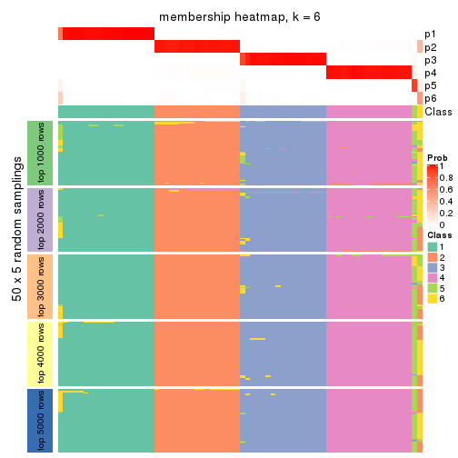
As soon as we have had the classes for columns, we can look for signatures which are significantly different between classes which can be candidate marks for certain classes. Following are the heatmaps for signatures.
Signature heatmaps where rows are scaled:
get_signatures(res, k = 2)
get_signatures(res, k = 3)
get_signatures(res, k = 4)
get_signatures(res, k = 5)
get_signatures(res, k = 6)
Signature heatmaps where rows are not scaled:
get_signatures(res, k = 2, scale_rows = FALSE)
get_signatures(res, k = 3, scale_rows = FALSE)
get_signatures(res, k = 4, scale_rows = FALSE)
get_signatures(res, k = 5, scale_rows = FALSE)
get_signatures(res, k = 6, scale_rows = FALSE)
Compare the overlap of signatures from different k:
compare_signatures(res)
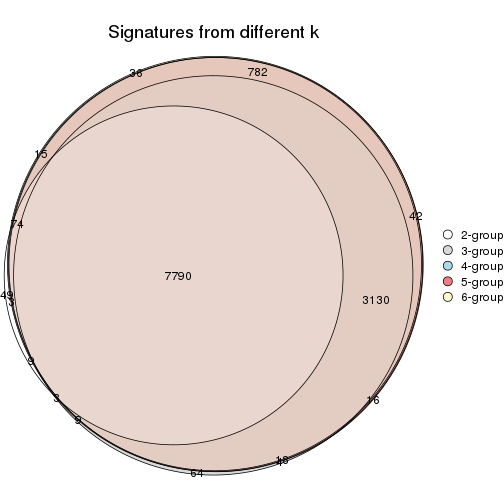
get_signature() returns a data frame invisibly. TO get the list of signatures, the function
call should be assigned to a variable explicitly. In following code, if plot argument is set
to FALSE, no heatmap is plotted while only the differential analysis is performed.
# code only for demonstration
tb = get_signature(res, k = ..., plot = FALSE)
An example of the output of tb is:
#> which_row fdr mean_1 mean_2 scaled_mean_1 scaled_mean_2 km
#> 1 38 0.042760348 8.373488 9.131774 -0.5533452 0.5164555 1
#> 2 40 0.018707592 7.106213 8.469186 -0.6173731 0.5762149 1
#> 3 55 0.019134737 10.221463 11.207825 -0.6159697 0.5749050 1
#> 4 59 0.006059896 5.921854 7.869574 -0.6899429 0.6439467 1
#> 5 60 0.018055526 8.928898 10.211722 -0.6204761 0.5791110 1
#> 6 98 0.009384629 15.714769 14.887706 0.6635654 -0.6193277 2
...
The columns in tb are:
which_row: row indices corresponding to the input matrix.fdr: FDR for the differential test. mean_x: The mean value in group x.scaled_mean_x: The mean value in group x after rows are scaled.km: Row groups if k-means clustering is applied to rows.UMAP plot which shows how samples are separated.
dimension_reduction(res, k = 2, method = "UMAP")

dimension_reduction(res, k = 3, method = "UMAP")
dimension_reduction(res, k = 4, method = "UMAP")

dimension_reduction(res, k = 5, method = "UMAP")
dimension_reduction(res, k = 6, method = "UMAP")

Following heatmap shows how subgroups are split when increasing k:
collect_classes(res)
If matrix rows can be associated to genes, consider to use GO_Enrichment(res,
...) to perform function enrichment for the signature genes.
The object with results only for a single top-value method and a single partition method can be extracted as:
res = res_list["MAD", "hclust"]
# you can also extract it by
# res = res_list["MAD:hclust"]
A summary of res and all the functions that can be applied to it:
res
#> A 'ConsensusPartition' object with k = 2, 3, 4, 5, 6.
#> On a matrix with 13183 rows and 72 columns.
#> Top rows (1000, 2000, 3000, 4000, 5000) are extracted by 'MAD' method.
#> Subgroups are detected by 'hclust' method.
#> Performed in total 1250 partitions by row resampling.
#> Best k for subgroups seems to be 4.
#>
#> Following methods can be applied to this 'ConsensusPartition' object:
#> [1] "cola_report" "collect_classes" "collect_plots"
#> [4] "collect_stats" "colnames" "compare_signatures"
#> [7] "consensus_heatmap" "dimension_reduction" "functional_enrichment"
#> [10] "get_anno_col" "get_anno" "get_classes"
#> [13] "get_consensus" "get_matrix" "get_membership"
#> [16] "get_param" "get_signatures" "get_stats"
#> [19] "is_best_k" "is_stable_k" "membership_heatmap"
#> [22] "ncol" "nrow" "plot_ecdf"
#> [25] "rownames" "select_partition_number" "show"
#> [28] "suggest_best_k" "test_to_known_factors"
collect_plots() function collects all the plots made from res for all k (number of partitions)
into one single page to provide an easy and fast comparison between different k.
collect_plots(res)
The plots are:
k and the heatmap of
predicted classes for each k.k.k.k.All the plots in panels can be made by individual functions and they are plotted later in this section.
select_partition_number() produces several plots showing different
statistics for choosing “optimized” k. There are following statistics:
k;k, the area increased is defined as \(A_k - A_{k-1}\).The detailed explanations of these statistics can be found in the cola vignette.
Generally speaking, lower PAC score, higher mean silhouette score or higher
concordance corresponds to better partition. Rand index and Jaccard index
measure how similar the current partition is compared to partition with k-1.
If they are too similar, we won't accept k is better than k-1.
select_partition_number(res)
The numeric values for all these statistics can be obtained by get_stats().
get_stats(res)
#> k 1-PAC mean_silhouette concordance area_increased Rand Jaccard
#> 2 2 0.493 0.939 0.926 0.36863 0.634 0.634
#> 3 3 1.000 0.997 0.997 0.70041 0.739 0.589
#> 4 4 1.000 1.000 1.000 0.21313 0.866 0.642
#> 5 5 1.000 0.986 1.000 0.00874 0.993 0.972
#> 6 6 1.000 0.971 0.999 0.00817 0.994 0.973
suggest_best_k() suggests the best \(k\) based on these statistics. The rules are as follows:
NA.suggest_best_k(res)
#> [1] 4
#> attr(,"optional")
#> [1] 3
There is also optional best \(k\) = 3 that is worth to check.
Following shows the table of the partitions (You need to click the show/hide
code output link to see it). The membership matrix (columns with name p*)
is inferred by
clue::cl_consensus()
function with the SE method. Basically the value in the membership matrix
represents the probability to belong to a certain group. The finall class
label for an item is determined with the group with highest probability it
belongs to.
In get_classes() function, the entropy is calculated from the membership
matrix and the silhouette score is calculated from the consensus matrix.
cbind(get_classes(res, k = 2), get_membership(res, k = 2))
#> class entropy silhouette p1 p2
#> SRR942117 1 0.000 0.940 1.000 0.000
#> SRR942118 1 0.000 0.940 1.000 0.000
#> SRR942119 1 0.000 0.940 1.000 0.000
#> SRR942120 1 0.000 0.940 1.000 0.000
#> SRR942121 1 0.000 0.940 1.000 0.000
#> SRR942122 1 0.000 0.940 1.000 0.000
#> SRR942123 1 0.000 0.940 1.000 0.000
#> SRR942124 1 0.000 0.940 1.000 0.000
#> SRR942125 1 0.000 0.940 1.000 0.000
#> SRR942126 1 0.000 0.940 1.000 0.000
#> SRR942127 1 0.000 0.940 1.000 0.000
#> SRR942128 1 0.000 0.940 1.000 0.000
#> SRR942129 1 0.000 0.940 1.000 0.000
#> SRR942130 1 0.000 0.940 1.000 0.000
#> SRR942131 1 0.000 0.940 1.000 0.000
#> SRR942132 1 0.000 0.940 1.000 0.000
#> SRR942133 1 0.000 0.940 1.000 0.000
#> SRR942134 1 0.000 0.940 1.000 0.000
#> SRR942144 1 0.615 0.879 0.848 0.152
#> SRR942145 1 0.615 0.879 0.848 0.152
#> SRR942146 1 0.615 0.879 0.848 0.152
#> SRR942147 1 0.615 0.879 0.848 0.152
#> SRR942148 1 0.615 0.879 0.848 0.152
#> SRR942149 1 0.615 0.879 0.848 0.152
#> SRR942150 1 0.615 0.879 0.848 0.152
#> SRR942151 1 0.615 0.879 0.848 0.152
#> SRR942152 1 0.615 0.879 0.848 0.152
#> SRR942135 1 0.615 0.879 0.848 0.152
#> SRR942136 1 0.615 0.879 0.848 0.152
#> SRR942137 1 0.615 0.879 0.848 0.152
#> SRR942138 1 0.615 0.879 0.848 0.152
#> SRR942139 1 0.615 0.879 0.848 0.152
#> SRR942140 1 0.615 0.879 0.848 0.152
#> SRR942141 1 0.615 0.879 0.848 0.152
#> SRR942142 1 0.615 0.879 0.848 0.152
#> SRR942143 1 0.615 0.879 0.848 0.152
#> SRR942153 2 0.615 1.000 0.152 0.848
#> SRR942154 2 0.615 1.000 0.152 0.848
#> SRR942155 2 0.615 1.000 0.152 0.848
#> SRR942156 2 0.615 1.000 0.152 0.848
#> SRR942157 2 0.615 1.000 0.152 0.848
#> SRR942158 2 0.615 1.000 0.152 0.848
#> SRR942159 2 0.615 1.000 0.152 0.848
#> SRR942160 2 0.615 1.000 0.152 0.848
#> SRR942161 2 0.615 1.000 0.152 0.848
#> SRR942162 2 0.615 1.000 0.152 0.848
#> SRR942163 2 0.615 1.000 0.152 0.848
#> SRR942164 2 0.615 1.000 0.152 0.848
#> SRR942166 2 0.615 1.000 0.152 0.848
#> SRR942167 2 0.615 1.000 0.152 0.848
#> SRR942168 2 0.615 1.000 0.152 0.848
#> SRR942169 2 0.615 1.000 0.152 0.848
#> SRR942170 2 0.615 1.000 0.152 0.848
#> SRR942171 1 0.000 0.940 1.000 0.000
#> SRR942172 1 0.000 0.940 1.000 0.000
#> SRR942173 1 0.000 0.940 1.000 0.000
#> SRR942174 1 0.000 0.940 1.000 0.000
#> SRR942175 1 0.000 0.940 1.000 0.000
#> SRR942176 1 0.000 0.940 1.000 0.000
#> SRR942177 1 0.000 0.940 1.000 0.000
#> SRR942178 1 0.000 0.940 1.000 0.000
#> SRR942179 1 0.000 0.940 1.000 0.000
#> SRR942180 1 0.000 0.940 1.000 0.000
#> SRR942181 1 0.000 0.940 1.000 0.000
#> SRR942182 1 0.000 0.940 1.000 0.000
#> SRR942183 1 0.000 0.940 1.000 0.000
#> SRR942184 1 0.000 0.940 1.000 0.000
#> SRR942185 1 0.000 0.940 1.000 0.000
#> SRR942186 1 0.000 0.940 1.000 0.000
#> SRR942187 1 0.000 0.940 1.000 0.000
#> SRR942188 1 0.000 0.940 1.000 0.000
#> SRR942189 1 0.000 0.940 1.000 0.000
cbind(get_classes(res, k = 3), get_membership(res, k = 3))
#> class entropy silhouette p1 p2 p3
#> SRR942117 1 0.0592 0.994 0.988 0.012 0
#> SRR942118 1 0.0592 0.994 0.988 0.012 0
#> SRR942119 1 0.0592 0.994 0.988 0.012 0
#> SRR942120 1 0.0592 0.994 0.988 0.012 0
#> SRR942121 1 0.0592 0.994 0.988 0.012 0
#> SRR942122 1 0.0592 0.994 0.988 0.012 0
#> SRR942123 1 0.0592 0.994 0.988 0.012 0
#> SRR942124 1 0.0592 0.994 0.988 0.012 0
#> SRR942125 1 0.0592 0.994 0.988 0.012 0
#> SRR942126 1 0.0592 0.994 0.988 0.012 0
#> SRR942127 1 0.0592 0.994 0.988 0.012 0
#> SRR942128 1 0.0592 0.994 0.988 0.012 0
#> SRR942129 1 0.0592 0.994 0.988 0.012 0
#> SRR942130 1 0.0592 0.994 0.988 0.012 0
#> SRR942131 1 0.0592 0.994 0.988 0.012 0
#> SRR942132 1 0.0592 0.994 0.988 0.012 0
#> SRR942133 1 0.0592 0.994 0.988 0.012 0
#> SRR942134 1 0.0592 0.994 0.988 0.012 0
#> SRR942144 2 0.0000 1.000 0.000 1.000 0
#> SRR942145 2 0.0000 1.000 0.000 1.000 0
#> SRR942146 2 0.0000 1.000 0.000 1.000 0
#> SRR942147 2 0.0000 1.000 0.000 1.000 0
#> SRR942148 2 0.0000 1.000 0.000 1.000 0
#> SRR942149 2 0.0000 1.000 0.000 1.000 0
#> SRR942150 2 0.0000 1.000 0.000 1.000 0
#> SRR942151 2 0.0000 1.000 0.000 1.000 0
#> SRR942152 2 0.0000 1.000 0.000 1.000 0
#> SRR942135 2 0.0000 1.000 0.000 1.000 0
#> SRR942136 2 0.0000 1.000 0.000 1.000 0
#> SRR942137 2 0.0000 1.000 0.000 1.000 0
#> SRR942138 2 0.0000 1.000 0.000 1.000 0
#> SRR942139 2 0.0000 1.000 0.000 1.000 0
#> SRR942140 2 0.0000 1.000 0.000 1.000 0
#> SRR942141 2 0.0000 1.000 0.000 1.000 0
#> SRR942142 2 0.0000 1.000 0.000 1.000 0
#> SRR942143 2 0.0000 1.000 0.000 1.000 0
#> SRR942153 3 0.0000 1.000 0.000 0.000 1
#> SRR942154 3 0.0000 1.000 0.000 0.000 1
#> SRR942155 3 0.0000 1.000 0.000 0.000 1
#> SRR942156 3 0.0000 1.000 0.000 0.000 1
#> SRR942157 3 0.0000 1.000 0.000 0.000 1
#> SRR942158 3 0.0000 1.000 0.000 0.000 1
#> SRR942159 3 0.0000 1.000 0.000 0.000 1
#> SRR942160 3 0.0000 1.000 0.000 0.000 1
#> SRR942161 3 0.0000 1.000 0.000 0.000 1
#> SRR942162 3 0.0000 1.000 0.000 0.000 1
#> SRR942163 3 0.0000 1.000 0.000 0.000 1
#> SRR942164 3 0.0000 1.000 0.000 0.000 1
#> SRR942166 3 0.0000 1.000 0.000 0.000 1
#> SRR942167 3 0.0000 1.000 0.000 0.000 1
#> SRR942168 3 0.0000 1.000 0.000 0.000 1
#> SRR942169 3 0.0000 1.000 0.000 0.000 1
#> SRR942170 3 0.0000 1.000 0.000 0.000 1
#> SRR942171 1 0.0000 0.994 1.000 0.000 0
#> SRR942172 1 0.0000 0.994 1.000 0.000 0
#> SRR942173 1 0.0000 0.994 1.000 0.000 0
#> SRR942174 1 0.0000 0.994 1.000 0.000 0
#> SRR942175 1 0.0000 0.994 1.000 0.000 0
#> SRR942176 1 0.0000 0.994 1.000 0.000 0
#> SRR942177 1 0.0000 0.994 1.000 0.000 0
#> SRR942178 1 0.0000 0.994 1.000 0.000 0
#> SRR942179 1 0.0000 0.994 1.000 0.000 0
#> SRR942180 1 0.0000 0.994 1.000 0.000 0
#> SRR942181 1 0.0000 0.994 1.000 0.000 0
#> SRR942182 1 0.0000 0.994 1.000 0.000 0
#> SRR942183 1 0.0000 0.994 1.000 0.000 0
#> SRR942184 1 0.0000 0.994 1.000 0.000 0
#> SRR942185 1 0.0000 0.994 1.000 0.000 0
#> SRR942186 1 0.0000 0.994 1.000 0.000 0
#> SRR942187 1 0.0000 0.994 1.000 0.000 0
#> SRR942188 1 0.0000 0.994 1.000 0.000 0
#> SRR942189 1 0.0000 0.994 1.000 0.000 0
cbind(get_classes(res, k = 4), get_membership(res, k = 4))
#> class entropy silhouette p1 p2 p3 p4
#> SRR942117 2 0 1 0 1 0 0
#> SRR942118 2 0 1 0 1 0 0
#> SRR942119 2 0 1 0 1 0 0
#> SRR942120 2 0 1 0 1 0 0
#> SRR942121 2 0 1 0 1 0 0
#> SRR942122 2 0 1 0 1 0 0
#> SRR942123 2 0 1 0 1 0 0
#> SRR942124 2 0 1 0 1 0 0
#> SRR942125 2 0 1 0 1 0 0
#> SRR942126 2 0 1 0 1 0 0
#> SRR942127 2 0 1 0 1 0 0
#> SRR942128 2 0 1 0 1 0 0
#> SRR942129 2 0 1 0 1 0 0
#> SRR942130 2 0 1 0 1 0 0
#> SRR942131 2 0 1 0 1 0 0
#> SRR942132 2 0 1 0 1 0 0
#> SRR942133 2 0 1 0 1 0 0
#> SRR942134 2 0 1 0 1 0 0
#> SRR942144 4 0 1 0 0 0 1
#> SRR942145 4 0 1 0 0 0 1
#> SRR942146 4 0 1 0 0 0 1
#> SRR942147 4 0 1 0 0 0 1
#> SRR942148 4 0 1 0 0 0 1
#> SRR942149 4 0 1 0 0 0 1
#> SRR942150 4 0 1 0 0 0 1
#> SRR942151 4 0 1 0 0 0 1
#> SRR942152 4 0 1 0 0 0 1
#> SRR942135 4 0 1 0 0 0 1
#> SRR942136 4 0 1 0 0 0 1
#> SRR942137 4 0 1 0 0 0 1
#> SRR942138 4 0 1 0 0 0 1
#> SRR942139 4 0 1 0 0 0 1
#> SRR942140 4 0 1 0 0 0 1
#> SRR942141 4 0 1 0 0 0 1
#> SRR942142 4 0 1 0 0 0 1
#> SRR942143 4 0 1 0 0 0 1
#> SRR942153 3 0 1 0 0 1 0
#> SRR942154 3 0 1 0 0 1 0
#> SRR942155 3 0 1 0 0 1 0
#> SRR942156 3 0 1 0 0 1 0
#> SRR942157 3 0 1 0 0 1 0
#> SRR942158 3 0 1 0 0 1 0
#> SRR942159 3 0 1 0 0 1 0
#> SRR942160 3 0 1 0 0 1 0
#> SRR942161 3 0 1 0 0 1 0
#> SRR942162 3 0 1 0 0 1 0
#> SRR942163 3 0 1 0 0 1 0
#> SRR942164 3 0 1 0 0 1 0
#> SRR942166 3 0 1 0 0 1 0
#> SRR942167 3 0 1 0 0 1 0
#> SRR942168 3 0 1 0 0 1 0
#> SRR942169 3 0 1 0 0 1 0
#> SRR942170 3 0 1 0 0 1 0
#> SRR942171 1 0 1 1 0 0 0
#> SRR942172 1 0 1 1 0 0 0
#> SRR942173 1 0 1 1 0 0 0
#> SRR942174 1 0 1 1 0 0 0
#> SRR942175 1 0 1 1 0 0 0
#> SRR942176 1 0 1 1 0 0 0
#> SRR942177 1 0 1 1 0 0 0
#> SRR942178 1 0 1 1 0 0 0
#> SRR942179 1 0 1 1 0 0 0
#> SRR942180 1 0 1 1 0 0 0
#> SRR942181 1 0 1 1 0 0 0
#> SRR942182 1 0 1 1 0 0 0
#> SRR942183 1 0 1 1 0 0 0
#> SRR942184 1 0 1 1 0 0 0
#> SRR942185 1 0 1 1 0 0 0
#> SRR942186 1 0 1 1 0 0 0
#> SRR942187 1 0 1 1 0 0 0
#> SRR942188 1 0 1 1 0 0 0
#> SRR942189 1 0 1 1 0 0 0
cbind(get_classes(res, k = 5), get_membership(res, k = 5))
#> class entropy silhouette p1 p2 p3 p4 p5
#> SRR942117 2 0 1 0 1 0 0 0
#> SRR942118 2 0 1 0 1 0 0 0
#> SRR942119 2 0 1 0 1 0 0 0
#> SRR942120 2 0 1 0 1 0 0 0
#> SRR942121 2 0 1 0 1 0 0 0
#> SRR942122 2 0 1 0 1 0 0 0
#> SRR942123 2 0 1 0 1 0 0 0
#> SRR942124 2 0 1 0 1 0 0 0
#> SRR942125 2 0 1 0 1 0 0 0
#> SRR942126 2 0 1 0 1 0 0 0
#> SRR942127 2 0 1 0 1 0 0 0
#> SRR942128 2 0 1 0 1 0 0 0
#> SRR942129 2 0 1 0 1 0 0 0
#> SRR942130 2 0 1 0 1 0 0 0
#> SRR942131 2 0 1 0 1 0 0 0
#> SRR942132 2 0 1 0 1 0 0 0
#> SRR942133 2 0 1 0 1 0 0 0
#> SRR942134 2 0 1 0 1 0 0 0
#> SRR942144 4 0 1 0 0 0 1 0
#> SRR942145 4 0 1 0 0 0 1 0
#> SRR942146 4 0 1 0 0 0 1 0
#> SRR942147 4 0 1 0 0 0 1 0
#> SRR942148 4 0 1 0 0 0 1 0
#> SRR942149 4 0 1 0 0 0 1 0
#> SRR942150 4 0 1 0 0 0 1 0
#> SRR942151 4 0 1 0 0 0 1 0
#> SRR942152 4 0 1 0 0 0 1 0
#> SRR942135 4 0 1 0 0 0 1 0
#> SRR942136 4 0 1 0 0 0 1 0
#> SRR942137 4 0 1 0 0 0 1 0
#> SRR942138 4 0 1 0 0 0 1 0
#> SRR942139 4 0 1 0 0 0 1 0
#> SRR942140 4 0 1 0 0 0 1 0
#> SRR942141 4 0 1 0 0 0 1 0
#> SRR942142 4 0 1 0 0 0 1 0
#> SRR942143 5 0 0 0 0 0 0 1
#> SRR942153 3 0 1 0 0 1 0 0
#> SRR942154 3 0 1 0 0 1 0 0
#> SRR942155 3 0 1 0 0 1 0 0
#> SRR942156 3 0 1 0 0 1 0 0
#> SRR942157 3 0 1 0 0 1 0 0
#> SRR942158 3 0 1 0 0 1 0 0
#> SRR942159 3 0 1 0 0 1 0 0
#> SRR942160 3 0 1 0 0 1 0 0
#> SRR942161 3 0 1 0 0 1 0 0
#> SRR942162 3 0 1 0 0 1 0 0
#> SRR942163 3 0 1 0 0 1 0 0
#> SRR942164 3 0 1 0 0 1 0 0
#> SRR942166 3 0 1 0 0 1 0 0
#> SRR942167 3 0 1 0 0 1 0 0
#> SRR942168 3 0 1 0 0 1 0 0
#> SRR942169 3 0 1 0 0 1 0 0
#> SRR942170 3 0 1 0 0 1 0 0
#> SRR942171 1 0 1 1 0 0 0 0
#> SRR942172 1 0 1 1 0 0 0 0
#> SRR942173 1 0 1 1 0 0 0 0
#> SRR942174 1 0 1 1 0 0 0 0
#> SRR942175 1 0 1 1 0 0 0 0
#> SRR942176 1 0 1 1 0 0 0 0
#> SRR942177 1 0 1 1 0 0 0 0
#> SRR942178 1 0 1 1 0 0 0 0
#> SRR942179 1 0 1 1 0 0 0 0
#> SRR942180 1 0 1 1 0 0 0 0
#> SRR942181 1 0 1 1 0 0 0 0
#> SRR942182 1 0 1 1 0 0 0 0
#> SRR942183 1 0 1 1 0 0 0 0
#> SRR942184 1 0 1 1 0 0 0 0
#> SRR942185 1 0 1 1 0 0 0 0
#> SRR942186 1 0 1 1 0 0 0 0
#> SRR942187 1 0 1 1 0 0 0 0
#> SRR942188 1 0 1 1 0 0 0 0
#> SRR942189 1 0 1 1 0 0 0 0
cbind(get_classes(res, k = 6), get_membership(res, k = 6))
#> class entropy silhouette p1 p2 p3 p4 p5 p6
#> SRR942117 2 0.0000 0.998 0 1.000 0.000 0 0 0.000
#> SRR942118 2 0.0000 0.998 0 1.000 0.000 0 0 0.000
#> SRR942119 2 0.0000 0.998 0 1.000 0.000 0 0 0.000
#> SRR942120 2 0.0000 0.998 0 1.000 0.000 0 0 0.000
#> SRR942121 2 0.0000 0.998 0 1.000 0.000 0 0 0.000
#> SRR942122 2 0.0000 0.998 0 1.000 0.000 0 0 0.000
#> SRR942123 2 0.0000 0.998 0 1.000 0.000 0 0 0.000
#> SRR942124 2 0.0000 0.998 0 1.000 0.000 0 0 0.000
#> SRR942125 2 0.0865 0.964 0 0.964 0.000 0 0 0.036
#> SRR942126 2 0.0000 0.998 0 1.000 0.000 0 0 0.000
#> SRR942127 2 0.0000 0.998 0 1.000 0.000 0 0 0.000
#> SRR942128 2 0.0000 0.998 0 1.000 0.000 0 0 0.000
#> SRR942129 2 0.0000 0.998 0 1.000 0.000 0 0 0.000
#> SRR942130 2 0.0000 0.998 0 1.000 0.000 0 0 0.000
#> SRR942131 2 0.0000 0.998 0 1.000 0.000 0 0 0.000
#> SRR942132 2 0.0000 0.998 0 1.000 0.000 0 0 0.000
#> SRR942133 2 0.0000 0.998 0 1.000 0.000 0 0 0.000
#> SRR942134 2 0.0000 0.998 0 1.000 0.000 0 0 0.000
#> SRR942144 4 0.0000 1.000 0 0.000 0.000 1 0 0.000
#> SRR942145 4 0.0000 1.000 0 0.000 0.000 1 0 0.000
#> SRR942146 4 0.0000 1.000 0 0.000 0.000 1 0 0.000
#> SRR942147 4 0.0000 1.000 0 0.000 0.000 1 0 0.000
#> SRR942148 4 0.0000 1.000 0 0.000 0.000 1 0 0.000
#> SRR942149 4 0.0000 1.000 0 0.000 0.000 1 0 0.000
#> SRR942150 4 0.0000 1.000 0 0.000 0.000 1 0 0.000
#> SRR942151 4 0.0000 1.000 0 0.000 0.000 1 0 0.000
#> SRR942152 4 0.0000 1.000 0 0.000 0.000 1 0 0.000
#> SRR942135 4 0.0000 1.000 0 0.000 0.000 1 0 0.000
#> SRR942136 4 0.0000 1.000 0 0.000 0.000 1 0 0.000
#> SRR942137 4 0.0000 1.000 0 0.000 0.000 1 0 0.000
#> SRR942138 4 0.0000 1.000 0 0.000 0.000 1 0 0.000
#> SRR942139 4 0.0000 1.000 0 0.000 0.000 1 0 0.000
#> SRR942140 4 0.0000 1.000 0 0.000 0.000 1 0 0.000
#> SRR942141 4 0.0000 1.000 0 0.000 0.000 1 0 0.000
#> SRR942142 4 0.0000 1.000 0 0.000 0.000 1 0 0.000
#> SRR942143 5 0.0000 0.000 0 0.000 0.000 0 1 0.000
#> SRR942153 3 0.0000 1.000 0 0.000 1.000 0 0 0.000
#> SRR942154 3 0.0000 1.000 0 0.000 1.000 0 0 0.000
#> SRR942155 3 0.0000 1.000 0 0.000 1.000 0 0 0.000
#> SRR942156 3 0.0000 1.000 0 0.000 1.000 0 0 0.000
#> SRR942157 3 0.0000 1.000 0 0.000 1.000 0 0 0.000
#> SRR942158 3 0.0000 1.000 0 0.000 1.000 0 0 0.000
#> SRR942159 3 0.0000 1.000 0 0.000 1.000 0 0 0.000
#> SRR942160 3 0.0000 1.000 0 0.000 1.000 0 0 0.000
#> SRR942161 6 0.0865 0.000 0 0.000 0.036 0 0 0.964
#> SRR942162 3 0.0000 1.000 0 0.000 1.000 0 0 0.000
#> SRR942163 3 0.0000 1.000 0 0.000 1.000 0 0 0.000
#> SRR942164 3 0.0000 1.000 0 0.000 1.000 0 0 0.000
#> SRR942166 3 0.0000 1.000 0 0.000 1.000 0 0 0.000
#> SRR942167 3 0.0000 1.000 0 0.000 1.000 0 0 0.000
#> SRR942168 3 0.0000 1.000 0 0.000 1.000 0 0 0.000
#> SRR942169 3 0.0000 1.000 0 0.000 1.000 0 0 0.000
#> SRR942170 3 0.0000 1.000 0 0.000 1.000 0 0 0.000
#> SRR942171 1 0.0000 1.000 1 0.000 0.000 0 0 0.000
#> SRR942172 1 0.0000 1.000 1 0.000 0.000 0 0 0.000
#> SRR942173 1 0.0000 1.000 1 0.000 0.000 0 0 0.000
#> SRR942174 1 0.0000 1.000 1 0.000 0.000 0 0 0.000
#> SRR942175 1 0.0000 1.000 1 0.000 0.000 0 0 0.000
#> SRR942176 1 0.0000 1.000 1 0.000 0.000 0 0 0.000
#> SRR942177 1 0.0000 1.000 1 0.000 0.000 0 0 0.000
#> SRR942178 1 0.0000 1.000 1 0.000 0.000 0 0 0.000
#> SRR942179 1 0.0000 1.000 1 0.000 0.000 0 0 0.000
#> SRR942180 1 0.0000 1.000 1 0.000 0.000 0 0 0.000
#> SRR942181 1 0.0000 1.000 1 0.000 0.000 0 0 0.000
#> SRR942182 1 0.0000 1.000 1 0.000 0.000 0 0 0.000
#> SRR942183 1 0.0000 1.000 1 0.000 0.000 0 0 0.000
#> SRR942184 1 0.0000 1.000 1 0.000 0.000 0 0 0.000
#> SRR942185 1 0.0000 1.000 1 0.000 0.000 0 0 0.000
#> SRR942186 1 0.0000 1.000 1 0.000 0.000 0 0 0.000
#> SRR942187 1 0.0000 1.000 1 0.000 0.000 0 0 0.000
#> SRR942188 1 0.0000 1.000 1 0.000 0.000 0 0 0.000
#> SRR942189 1 0.0000 1.000 1 0.000 0.000 0 0 0.000
Heatmaps for the consensus matrix. It visualizes the probability of two samples to be in a same group.
consensus_heatmap(res, k = 2)
consensus_heatmap(res, k = 3)
consensus_heatmap(res, k = 4)

consensus_heatmap(res, k = 5)
consensus_heatmap(res, k = 6)
Heatmaps for the membership of samples in all partitions to see how consistent they are:
membership_heatmap(res, k = 2)
membership_heatmap(res, k = 3)
membership_heatmap(res, k = 4)

membership_heatmap(res, k = 5)

membership_heatmap(res, k = 6)
As soon as we have had the classes for columns, we can look for signatures which are significantly different between classes which can be candidate marks for certain classes. Following are the heatmaps for signatures.
Signature heatmaps where rows are scaled:
get_signatures(res, k = 2)
get_signatures(res, k = 3)
get_signatures(res, k = 4)

get_signatures(res, k = 5)
get_signatures(res, k = 6)
Signature heatmaps where rows are not scaled:
get_signatures(res, k = 2, scale_rows = FALSE)
get_signatures(res, k = 3, scale_rows = FALSE)
get_signatures(res, k = 4, scale_rows = FALSE)
get_signatures(res, k = 5, scale_rows = FALSE)

get_signatures(res, k = 6, scale_rows = FALSE)
Compare the overlap of signatures from different k:
compare_signatures(res)
get_signature() returns a data frame invisibly. TO get the list of signatures, the function
call should be assigned to a variable explicitly. In following code, if plot argument is set
to FALSE, no heatmap is plotted while only the differential analysis is performed.
# code only for demonstration
tb = get_signature(res, k = ..., plot = FALSE)
An example of the output of tb is:
#> which_row fdr mean_1 mean_2 scaled_mean_1 scaled_mean_2 km
#> 1 38 0.042760348 8.373488 9.131774 -0.5533452 0.5164555 1
#> 2 40 0.018707592 7.106213 8.469186 -0.6173731 0.5762149 1
#> 3 55 0.019134737 10.221463 11.207825 -0.6159697 0.5749050 1
#> 4 59 0.006059896 5.921854 7.869574 -0.6899429 0.6439467 1
#> 5 60 0.018055526 8.928898 10.211722 -0.6204761 0.5791110 1
#> 6 98 0.009384629 15.714769 14.887706 0.6635654 -0.6193277 2
...
The columns in tb are:
which_row: row indices corresponding to the input matrix.fdr: FDR for the differential test. mean_x: The mean value in group x.scaled_mean_x: The mean value in group x after rows are scaled.km: Row groups if k-means clustering is applied to rows.UMAP plot which shows how samples are separated.
dimension_reduction(res, k = 2, method = "UMAP")
dimension_reduction(res, k = 3, method = "UMAP")
dimension_reduction(res, k = 4, method = "UMAP")
dimension_reduction(res, k = 5, method = "UMAP")
dimension_reduction(res, k = 6, method = "UMAP")
Following heatmap shows how subgroups are split when increasing k:
collect_classes(res)
If matrix rows can be associated to genes, consider to use GO_Enrichment(res,
...) to perform function enrichment for the signature genes.
The object with results only for a single top-value method and a single partition method can be extracted as:
res = res_list["MAD", "kmeans"]
# you can also extract it by
# res = res_list["MAD:kmeans"]
A summary of res and all the functions that can be applied to it:
res
#> A 'ConsensusPartition' object with k = 2, 3, 4, 5, 6.
#> On a matrix with 13183 rows and 72 columns.
#> Top rows (1000, 2000, 3000, 4000, 5000) are extracted by 'MAD' method.
#> Subgroups are detected by 'kmeans' method.
#> Performed in total 1250 partitions by row resampling.
#> Best k for subgroups seems to be 3.
#>
#> Following methods can be applied to this 'ConsensusPartition' object:
#> [1] "cola_report" "collect_classes" "collect_plots"
#> [4] "collect_stats" "colnames" "compare_signatures"
#> [7] "consensus_heatmap" "dimension_reduction" "functional_enrichment"
#> [10] "get_anno_col" "get_anno" "get_classes"
#> [13] "get_consensus" "get_matrix" "get_membership"
#> [16] "get_param" "get_signatures" "get_stats"
#> [19] "is_best_k" "is_stable_k" "membership_heatmap"
#> [22] "ncol" "nrow" "plot_ecdf"
#> [25] "rownames" "select_partition_number" "show"
#> [28] "suggest_best_k" "test_to_known_factors"
collect_plots() function collects all the plots made from res for all k (number of partitions)
into one single page to provide an easy and fast comparison between different k.
collect_plots(res)
The plots are:
k and the heatmap of
predicted classes for each k.k.k.k.All the plots in panels can be made by individual functions and they are plotted later in this section.
select_partition_number() produces several plots showing different
statistics for choosing “optimized” k. There are following statistics:
k;k, the area increased is defined as \(A_k - A_{k-1}\).The detailed explanations of these statistics can be found in the cola vignette.
Generally speaking, lower PAC score, higher mean silhouette score or higher
concordance corresponds to better partition. Rand index and Jaccard index
measure how similar the current partition is compared to partition with k-1.
If they are too similar, we won't accept k is better than k-1.
select_partition_number(res)

The numeric values for all these statistics can be obtained by get_stats().
get_stats(res)
#> k 1-PAC mean_silhouette concordance area_increased Rand Jaccard
#> 2 2 0.240 0.588 0.576 0.4022 0.606 0.606
#> 3 3 0.493 0.807 0.784 0.4554 0.761 0.605
#> 4 4 0.565 0.950 0.798 0.1665 0.873 0.654
#> 5 5 0.657 0.900 0.814 0.0856 1.000 1.000
#> 6 6 0.873 0.804 0.803 0.0527 0.993 0.972
suggest_best_k() suggests the best \(k\) based on these statistics. The rules are as follows:
NA.suggest_best_k(res)
#> [1] 3
Following shows the table of the partitions (You need to click the show/hide
code output link to see it). The membership matrix (columns with name p*)
is inferred by
clue::cl_consensus()
function with the SE method. Basically the value in the membership matrix
represents the probability to belong to a certain group. The finall class
label for an item is determined with the group with highest probability it
belongs to.
In get_classes() function, the entropy is calculated from the membership
matrix and the silhouette score is calculated from the consensus matrix.
cbind(get_classes(res, k = 2), get_membership(res, k = 2))
#> class entropy silhouette p1 p2
#> SRR942117 2 0.861 0.321 0.284 0.716
#> SRR942118 2 0.861 0.321 0.284 0.716
#> SRR942119 2 0.861 0.321 0.284 0.716
#> SRR942120 2 0.861 0.321 0.284 0.716
#> SRR942121 2 0.861 0.321 0.284 0.716
#> SRR942122 2 0.861 0.321 0.284 0.716
#> SRR942123 2 0.861 0.321 0.284 0.716
#> SRR942124 2 0.861 0.321 0.284 0.716
#> SRR942125 2 0.861 0.321 0.284 0.716
#> SRR942126 2 0.861 0.321 0.284 0.716
#> SRR942127 2 0.861 0.321 0.284 0.716
#> SRR942128 2 0.861 0.321 0.284 0.716
#> SRR942129 2 0.861 0.321 0.284 0.716
#> SRR942130 2 0.861 0.321 0.284 0.716
#> SRR942131 2 0.861 0.321 0.284 0.716
#> SRR942132 2 0.861 0.321 0.284 0.716
#> SRR942133 2 0.861 0.321 0.284 0.716
#> SRR942134 2 0.861 0.321 0.284 0.716
#> SRR942144 2 0.000 0.496 0.000 1.000
#> SRR942145 2 0.000 0.496 0.000 1.000
#> SRR942146 2 0.000 0.496 0.000 1.000
#> SRR942147 2 0.000 0.496 0.000 1.000
#> SRR942148 2 0.000 0.496 0.000 1.000
#> SRR942149 2 0.000 0.496 0.000 1.000
#> SRR942150 2 0.000 0.496 0.000 1.000
#> SRR942151 2 0.000 0.496 0.000 1.000
#> SRR942152 2 0.000 0.496 0.000 1.000
#> SRR942135 2 0.343 0.528 0.064 0.936
#> SRR942136 2 0.343 0.528 0.064 0.936
#> SRR942137 2 0.343 0.528 0.064 0.936
#> SRR942138 2 0.343 0.528 0.064 0.936
#> SRR942139 2 0.343 0.528 0.064 0.936
#> SRR942140 2 0.343 0.528 0.064 0.936
#> SRR942141 2 0.343 0.528 0.064 0.936
#> SRR942142 2 0.343 0.528 0.064 0.936
#> SRR942143 2 0.141 0.491 0.020 0.980
#> SRR942153 2 0.980 0.495 0.416 0.584
#> SRR942154 2 0.980 0.495 0.416 0.584
#> SRR942155 2 0.980 0.495 0.416 0.584
#> SRR942156 2 0.980 0.495 0.416 0.584
#> SRR942157 2 0.980 0.495 0.416 0.584
#> SRR942158 2 0.980 0.495 0.416 0.584
#> SRR942159 2 0.980 0.495 0.416 0.584
#> SRR942160 2 0.980 0.495 0.416 0.584
#> SRR942161 2 0.980 0.495 0.416 0.584
#> SRR942162 2 0.980 0.495 0.416 0.584
#> SRR942163 2 0.980 0.495 0.416 0.584
#> SRR942164 2 0.980 0.495 0.416 0.584
#> SRR942166 2 0.980 0.495 0.416 0.584
#> SRR942167 2 0.980 0.495 0.416 0.584
#> SRR942168 2 0.980 0.495 0.416 0.584
#> SRR942169 2 0.980 0.495 0.416 0.584
#> SRR942170 2 0.980 0.495 0.416 0.584
#> SRR942171 1 1.000 1.000 0.504 0.496
#> SRR942172 1 1.000 1.000 0.504 0.496
#> SRR942173 1 1.000 1.000 0.504 0.496
#> SRR942174 1 1.000 1.000 0.504 0.496
#> SRR942175 1 1.000 1.000 0.504 0.496
#> SRR942176 1 1.000 1.000 0.504 0.496
#> SRR942177 1 1.000 1.000 0.504 0.496
#> SRR942178 1 1.000 1.000 0.504 0.496
#> SRR942179 1 1.000 1.000 0.504 0.496
#> SRR942180 1 1.000 1.000 0.504 0.496
#> SRR942181 1 1.000 1.000 0.504 0.496
#> SRR942182 1 1.000 1.000 0.504 0.496
#> SRR942183 1 1.000 1.000 0.504 0.496
#> SRR942184 1 1.000 1.000 0.504 0.496
#> SRR942185 1 1.000 1.000 0.504 0.496
#> SRR942186 1 1.000 1.000 0.504 0.496
#> SRR942187 1 1.000 1.000 0.504 0.496
#> SRR942188 1 1.000 1.000 0.504 0.496
#> SRR942189 1 1.000 1.000 0.504 0.496
cbind(get_classes(res, k = 3), get_membership(res, k = 3))
#> class entropy silhouette p1 p2 p3
#> SRR942117 2 0.420 0.650 0.136 0.852 0.012
#> SRR942118 2 0.420 0.650 0.136 0.852 0.012
#> SRR942119 2 0.420 0.650 0.136 0.852 0.012
#> SRR942120 2 0.420 0.650 0.136 0.852 0.012
#> SRR942121 2 0.420 0.650 0.136 0.852 0.012
#> SRR942122 2 0.420 0.650 0.136 0.852 0.012
#> SRR942123 2 0.420 0.650 0.136 0.852 0.012
#> SRR942124 2 0.420 0.650 0.136 0.852 0.012
#> SRR942125 2 0.420 0.650 0.136 0.852 0.012
#> SRR942126 2 0.451 0.650 0.156 0.832 0.012
#> SRR942127 2 0.451 0.650 0.156 0.832 0.012
#> SRR942128 2 0.451 0.650 0.156 0.832 0.012
#> SRR942129 2 0.451 0.650 0.156 0.832 0.012
#> SRR942130 2 0.451 0.650 0.156 0.832 0.012
#> SRR942131 2 0.451 0.650 0.156 0.832 0.012
#> SRR942132 2 0.451 0.650 0.156 0.832 0.012
#> SRR942133 2 0.451 0.650 0.156 0.832 0.012
#> SRR942134 2 0.451 0.650 0.156 0.832 0.012
#> SRR942144 2 0.833 0.624 0.136 0.616 0.248
#> SRR942145 2 0.833 0.624 0.136 0.616 0.248
#> SRR942146 2 0.833 0.624 0.136 0.616 0.248
#> SRR942147 2 0.833 0.624 0.136 0.616 0.248
#> SRR942148 2 0.833 0.624 0.136 0.616 0.248
#> SRR942149 2 0.833 0.624 0.136 0.616 0.248
#> SRR942150 2 0.833 0.624 0.136 0.616 0.248
#> SRR942151 2 0.833 0.624 0.136 0.616 0.248
#> SRR942152 2 0.833 0.624 0.136 0.616 0.248
#> SRR942135 2 0.846 0.609 0.136 0.600 0.264
#> SRR942136 2 0.846 0.609 0.136 0.600 0.264
#> SRR942137 2 0.846 0.609 0.136 0.600 0.264
#> SRR942138 2 0.846 0.609 0.136 0.600 0.264
#> SRR942139 2 0.846 0.609 0.136 0.600 0.264
#> SRR942140 2 0.846 0.609 0.136 0.600 0.264
#> SRR942141 2 0.846 0.609 0.136 0.600 0.264
#> SRR942142 2 0.846 0.609 0.136 0.600 0.264
#> SRR942143 2 0.912 0.525 0.200 0.544 0.256
#> SRR942153 3 0.327 0.983 0.016 0.080 0.904
#> SRR942154 3 0.327 0.983 0.016 0.080 0.904
#> SRR942155 3 0.327 0.983 0.016 0.080 0.904
#> SRR942156 3 0.327 0.983 0.016 0.080 0.904
#> SRR942157 3 0.327 0.983 0.016 0.080 0.904
#> SRR942158 3 0.327 0.983 0.016 0.080 0.904
#> SRR942159 3 0.327 0.983 0.016 0.080 0.904
#> SRR942160 3 0.327 0.983 0.016 0.080 0.904
#> SRR942161 3 0.327 0.983 0.016 0.080 0.904
#> SRR942162 3 0.446 0.981 0.056 0.080 0.864
#> SRR942163 3 0.446 0.981 0.056 0.080 0.864
#> SRR942164 3 0.446 0.981 0.056 0.080 0.864
#> SRR942166 3 0.446 0.981 0.056 0.080 0.864
#> SRR942167 3 0.446 0.981 0.056 0.080 0.864
#> SRR942168 3 0.446 0.981 0.056 0.080 0.864
#> SRR942169 3 0.446 0.981 0.056 0.080 0.864
#> SRR942170 3 0.446 0.981 0.056 0.080 0.864
#> SRR942171 1 0.414 0.983 0.872 0.096 0.032
#> SRR942172 1 0.401 0.983 0.876 0.096 0.028
#> SRR942173 1 0.414 0.983 0.872 0.096 0.032
#> SRR942174 1 0.414 0.983 0.872 0.096 0.032
#> SRR942175 1 0.414 0.983 0.872 0.096 0.032
#> SRR942176 1 0.414 0.983 0.872 0.096 0.032
#> SRR942177 1 0.414 0.983 0.872 0.096 0.032
#> SRR942178 1 0.414 0.983 0.872 0.096 0.032
#> SRR942179 1 0.414 0.983 0.872 0.096 0.032
#> SRR942180 1 0.414 0.983 0.872 0.096 0.032
#> SRR942181 1 0.489 0.982 0.844 0.096 0.060
#> SRR942182 1 0.489 0.982 0.844 0.096 0.060
#> SRR942183 1 0.489 0.982 0.844 0.096 0.060
#> SRR942184 1 0.489 0.982 0.844 0.096 0.060
#> SRR942185 1 0.489 0.982 0.844 0.096 0.060
#> SRR942186 1 0.489 0.982 0.844 0.096 0.060
#> SRR942187 1 0.489 0.982 0.844 0.096 0.060
#> SRR942188 1 0.489 0.982 0.844 0.096 0.060
#> SRR942189 1 0.489 0.982 0.844 0.096 0.060
cbind(get_classes(res, k = 4), get_membership(res, k = 4))
#> class entropy silhouette p1 p2 p3 p4
#> SRR942117 2 0.168 0.973 0.000 0.948 0.040 0.012
#> SRR942118 2 0.168 0.973 0.000 0.948 0.040 0.012
#> SRR942119 2 0.168 0.973 0.000 0.948 0.040 0.012
#> SRR942120 2 0.168 0.973 0.000 0.948 0.040 0.012
#> SRR942121 2 0.158 0.973 0.000 0.952 0.036 0.012
#> SRR942122 2 0.168 0.973 0.000 0.948 0.040 0.012
#> SRR942123 2 0.168 0.973 0.000 0.948 0.040 0.012
#> SRR942124 2 0.168 0.973 0.000 0.948 0.040 0.012
#> SRR942125 2 0.168 0.973 0.000 0.948 0.040 0.012
#> SRR942126 2 0.000 0.973 0.000 1.000 0.000 0.000
#> SRR942127 2 0.000 0.973 0.000 1.000 0.000 0.000
#> SRR942128 2 0.000 0.973 0.000 1.000 0.000 0.000
#> SRR942129 2 0.000 0.973 0.000 1.000 0.000 0.000
#> SRR942130 2 0.000 0.973 0.000 1.000 0.000 0.000
#> SRR942131 2 0.000 0.973 0.000 1.000 0.000 0.000
#> SRR942132 2 0.000 0.973 0.000 1.000 0.000 0.000
#> SRR942133 2 0.000 0.973 0.000 1.000 0.000 0.000
#> SRR942134 2 0.000 0.973 0.000 1.000 0.000 0.000
#> SRR942144 4 0.629 0.977 0.096 0.276 0.000 0.628
#> SRR942145 4 0.629 0.977 0.096 0.276 0.000 0.628
#> SRR942146 4 0.629 0.977 0.096 0.276 0.000 0.628
#> SRR942147 4 0.629 0.977 0.096 0.276 0.000 0.628
#> SRR942148 4 0.629 0.977 0.096 0.276 0.000 0.628
#> SRR942149 4 0.629 0.977 0.096 0.276 0.000 0.628
#> SRR942150 4 0.629 0.977 0.096 0.276 0.000 0.628
#> SRR942151 4 0.629 0.977 0.096 0.276 0.000 0.628
#> SRR942152 4 0.629 0.977 0.096 0.276 0.000 0.628
#> SRR942135 4 0.629 0.977 0.096 0.276 0.000 0.628
#> SRR942136 4 0.629 0.977 0.096 0.276 0.000 0.628
#> SRR942137 4 0.629 0.977 0.096 0.276 0.000 0.628
#> SRR942138 4 0.629 0.977 0.096 0.276 0.000 0.628
#> SRR942139 4 0.629 0.977 0.096 0.276 0.000 0.628
#> SRR942140 4 0.629 0.977 0.096 0.276 0.000 0.628
#> SRR942141 4 0.629 0.977 0.096 0.276 0.000 0.628
#> SRR942142 4 0.629 0.977 0.096 0.276 0.000 0.628
#> SRR942143 4 0.683 0.585 0.092 0.116 0.096 0.696
#> SRR942153 3 0.518 0.953 0.020 0.044 0.768 0.168
#> SRR942154 3 0.518 0.953 0.020 0.044 0.768 0.168
#> SRR942155 3 0.518 0.953 0.020 0.044 0.768 0.168
#> SRR942156 3 0.518 0.953 0.020 0.044 0.768 0.168
#> SRR942157 3 0.518 0.953 0.020 0.044 0.768 0.168
#> SRR942158 3 0.518 0.953 0.020 0.044 0.768 0.168
#> SRR942159 3 0.518 0.953 0.020 0.044 0.768 0.168
#> SRR942160 3 0.518 0.953 0.020 0.044 0.768 0.168
#> SRR942161 3 0.538 0.949 0.028 0.044 0.760 0.168
#> SRR942162 3 0.627 0.947 0.032 0.044 0.664 0.260
#> SRR942163 3 0.627 0.947 0.032 0.044 0.664 0.260
#> SRR942164 3 0.627 0.947 0.032 0.044 0.664 0.260
#> SRR942166 3 0.627 0.947 0.032 0.044 0.664 0.260
#> SRR942167 3 0.627 0.947 0.032 0.044 0.664 0.260
#> SRR942168 3 0.627 0.947 0.032 0.044 0.664 0.260
#> SRR942169 3 0.627 0.947 0.032 0.044 0.664 0.260
#> SRR942170 3 0.627 0.947 0.032 0.044 0.664 0.260
#> SRR942171 1 0.179 0.926 0.932 0.068 0.000 0.000
#> SRR942172 1 0.340 0.927 0.884 0.068 0.024 0.024
#> SRR942173 1 0.179 0.926 0.932 0.068 0.000 0.000
#> SRR942174 1 0.179 0.926 0.932 0.068 0.000 0.000
#> SRR942175 1 0.179 0.926 0.932 0.068 0.000 0.000
#> SRR942176 1 0.179 0.926 0.932 0.068 0.000 0.000
#> SRR942177 1 0.179 0.926 0.932 0.068 0.000 0.000
#> SRR942178 1 0.179 0.926 0.932 0.068 0.000 0.000
#> SRR942179 1 0.179 0.926 0.932 0.068 0.000 0.000
#> SRR942180 1 0.179 0.926 0.932 0.068 0.000 0.000
#> SRR942181 1 0.586 0.922 0.760 0.068 0.092 0.080
#> SRR942182 1 0.586 0.922 0.760 0.068 0.092 0.080
#> SRR942183 1 0.592 0.921 0.756 0.068 0.096 0.080
#> SRR942184 1 0.586 0.922 0.760 0.068 0.092 0.080
#> SRR942185 1 0.586 0.922 0.760 0.068 0.092 0.080
#> SRR942186 1 0.592 0.921 0.756 0.068 0.096 0.080
#> SRR942187 1 0.592 0.921 0.756 0.068 0.096 0.080
#> SRR942188 1 0.586 0.922 0.760 0.068 0.092 0.080
#> SRR942189 1 0.592 0.921 0.756 0.068 0.096 0.080
cbind(get_classes(res, k = 5), get_membership(res, k = 5))
#> class entropy silhouette p1 p2 p3 p4 p5
#> SRR942117 2 0.0000 0.929 0.000 1.000 0.000 0.000 NA
#> SRR942118 2 0.0000 0.929 0.000 1.000 0.000 0.000 NA
#> SRR942119 2 0.0000 0.929 0.000 1.000 0.000 0.000 NA
#> SRR942120 2 0.0000 0.929 0.000 1.000 0.000 0.000 NA
#> SRR942121 2 0.0290 0.930 0.000 0.992 0.000 0.000 NA
#> SRR942122 2 0.0000 0.929 0.000 1.000 0.000 0.000 NA
#> SRR942123 2 0.0000 0.929 0.000 1.000 0.000 0.000 NA
#> SRR942124 2 0.0000 0.929 0.000 1.000 0.000 0.000 NA
#> SRR942125 2 0.0671 0.921 0.004 0.980 0.000 0.000 NA
#> SRR942126 2 0.2719 0.931 0.000 0.852 0.000 0.004 NA
#> SRR942127 2 0.2719 0.931 0.000 0.852 0.000 0.004 NA
#> SRR942128 2 0.2719 0.931 0.000 0.852 0.000 0.004 NA
#> SRR942129 2 0.2719 0.931 0.000 0.852 0.000 0.004 NA
#> SRR942130 2 0.2719 0.931 0.000 0.852 0.000 0.004 NA
#> SRR942131 2 0.2719 0.931 0.000 0.852 0.000 0.004 NA
#> SRR942132 2 0.2719 0.931 0.000 0.852 0.000 0.004 NA
#> SRR942133 2 0.2719 0.931 0.000 0.852 0.000 0.004 NA
#> SRR942134 2 0.2719 0.931 0.000 0.852 0.000 0.004 NA
#> SRR942144 4 0.5994 0.945 0.044 0.152 0.136 0.668 NA
#> SRR942145 4 0.5994 0.945 0.044 0.152 0.136 0.668 NA
#> SRR942146 4 0.5994 0.945 0.044 0.152 0.136 0.668 NA
#> SRR942147 4 0.5994 0.945 0.044 0.152 0.136 0.668 NA
#> SRR942148 4 0.5994 0.945 0.044 0.152 0.136 0.668 NA
#> SRR942149 4 0.5994 0.945 0.044 0.152 0.136 0.668 NA
#> SRR942150 4 0.5994 0.945 0.044 0.152 0.136 0.668 NA
#> SRR942151 4 0.5994 0.945 0.044 0.152 0.136 0.668 NA
#> SRR942152 4 0.5994 0.945 0.044 0.152 0.136 0.668 NA
#> SRR942135 4 0.7248 0.942 0.044 0.152 0.136 0.608 NA
#> SRR942136 4 0.7248 0.942 0.044 0.152 0.136 0.608 NA
#> SRR942137 4 0.7248 0.942 0.044 0.152 0.136 0.608 NA
#> SRR942138 4 0.7248 0.942 0.044 0.152 0.136 0.608 NA
#> SRR942139 4 0.7248 0.942 0.044 0.152 0.136 0.608 NA
#> SRR942140 4 0.7248 0.942 0.044 0.152 0.136 0.608 NA
#> SRR942141 4 0.7248 0.942 0.044 0.152 0.136 0.608 NA
#> SRR942142 4 0.7248 0.942 0.044 0.152 0.136 0.608 NA
#> SRR942143 4 0.5826 0.410 0.024 0.024 0.016 0.560 NA
#> SRR942153 3 0.3246 0.917 0.000 0.008 0.808 0.000 NA
#> SRR942154 3 0.3246 0.917 0.000 0.008 0.808 0.000 NA
#> SRR942155 3 0.3246 0.917 0.000 0.008 0.808 0.000 NA
#> SRR942156 3 0.3246 0.917 0.000 0.008 0.808 0.000 NA
#> SRR942157 3 0.3246 0.917 0.000 0.008 0.808 0.000 NA
#> SRR942158 3 0.3246 0.917 0.000 0.008 0.808 0.000 NA
#> SRR942159 3 0.3246 0.917 0.000 0.008 0.808 0.000 NA
#> SRR942160 3 0.3246 0.917 0.000 0.008 0.808 0.000 NA
#> SRR942161 3 0.3940 0.895 0.016 0.008 0.768 0.000 NA
#> SRR942162 3 0.0290 0.909 0.000 0.008 0.992 0.000 NA
#> SRR942163 3 0.0290 0.909 0.000 0.008 0.992 0.000 NA
#> SRR942164 3 0.0290 0.909 0.000 0.008 0.992 0.000 NA
#> SRR942166 3 0.0290 0.909 0.000 0.008 0.992 0.000 NA
#> SRR942167 3 0.0290 0.909 0.000 0.008 0.992 0.000 NA
#> SRR942168 3 0.0290 0.909 0.000 0.008 0.992 0.000 NA
#> SRR942169 3 0.0290 0.909 0.000 0.008 0.992 0.000 NA
#> SRR942170 3 0.0290 0.909 0.000 0.008 0.992 0.000 NA
#> SRR942171 1 0.6455 0.858 0.624 0.032 0.008 0.192 NA
#> SRR942172 1 0.6151 0.858 0.660 0.032 0.008 0.168 NA
#> SRR942173 1 0.6455 0.858 0.624 0.032 0.008 0.192 NA
#> SRR942174 1 0.6455 0.858 0.624 0.032 0.008 0.192 NA
#> SRR942175 1 0.6455 0.858 0.624 0.032 0.008 0.192 NA
#> SRR942176 1 0.6455 0.858 0.624 0.032 0.008 0.192 NA
#> SRR942177 1 0.6455 0.858 0.624 0.032 0.008 0.192 NA
#> SRR942178 1 0.6455 0.858 0.624 0.032 0.008 0.192 NA
#> SRR942179 1 0.6455 0.858 0.624 0.032 0.008 0.192 NA
#> SRR942180 1 0.6455 0.858 0.624 0.032 0.008 0.192 NA
#> SRR942181 1 0.1168 0.842 0.960 0.032 0.008 0.000 NA
#> SRR942182 1 0.1168 0.842 0.960 0.032 0.008 0.000 NA
#> SRR942183 1 0.1168 0.842 0.960 0.032 0.008 0.000 NA
#> SRR942184 1 0.1168 0.842 0.960 0.032 0.008 0.000 NA
#> SRR942185 1 0.1168 0.842 0.960 0.032 0.008 0.000 NA
#> SRR942186 1 0.1168 0.842 0.960 0.032 0.008 0.000 NA
#> SRR942187 1 0.1168 0.842 0.960 0.032 0.008 0.000 NA
#> SRR942188 1 0.1168 0.842 0.960 0.032 0.008 0.000 NA
#> SRR942189 1 0.2568 0.817 0.904 0.032 0.016 0.000 NA
cbind(get_classes(res, k = 6), get_membership(res, k = 6))
#> class entropy silhouette p1 p2 p3 p4 p5 p6
#> SRR942117 2 0.496 0.817 0.000 0.600 0.000 0.092 0.308 NA
#> SRR942118 2 0.496 0.817 0.000 0.600 0.000 0.092 0.308 NA
#> SRR942119 2 0.496 0.817 0.000 0.600 0.000 0.092 0.308 NA
#> SRR942120 2 0.496 0.817 0.000 0.600 0.000 0.092 0.308 NA
#> SRR942121 2 0.492 0.822 0.000 0.636 0.000 0.092 0.268 NA
#> SRR942122 2 0.494 0.818 0.000 0.604 0.000 0.092 0.304 NA
#> SRR942123 2 0.496 0.817 0.000 0.600 0.000 0.092 0.308 NA
#> SRR942124 2 0.494 0.818 0.000 0.604 0.000 0.092 0.304 NA
#> SRR942125 2 0.585 0.790 0.000 0.576 0.020 0.088 0.296 NA
#> SRR942126 2 0.171 0.827 0.000 0.908 0.000 0.092 0.000 NA
#> SRR942127 2 0.186 0.826 0.000 0.904 0.000 0.092 0.000 NA
#> SRR942128 2 0.171 0.827 0.000 0.908 0.000 0.092 0.000 NA
#> SRR942129 2 0.171 0.827 0.000 0.908 0.000 0.092 0.000 NA
#> SRR942130 2 0.171 0.827 0.000 0.908 0.000 0.092 0.000 NA
#> SRR942131 2 0.171 0.827 0.000 0.908 0.000 0.092 0.000 NA
#> SRR942132 2 0.171 0.827 0.000 0.908 0.000 0.092 0.000 NA
#> SRR942133 2 0.171 0.827 0.000 0.908 0.000 0.092 0.000 NA
#> SRR942134 2 0.186 0.826 0.000 0.904 0.000 0.092 0.000 NA
#> SRR942144 4 0.000 0.887 0.000 0.000 0.000 1.000 0.000 NA
#> SRR942145 4 0.000 0.887 0.000 0.000 0.000 1.000 0.000 NA
#> SRR942146 4 0.000 0.887 0.000 0.000 0.000 1.000 0.000 NA
#> SRR942147 4 0.000 0.887 0.000 0.000 0.000 1.000 0.000 NA
#> SRR942148 4 0.000 0.887 0.000 0.000 0.000 1.000 0.000 NA
#> SRR942149 4 0.000 0.887 0.000 0.000 0.000 1.000 0.000 NA
#> SRR942150 4 0.000 0.887 0.000 0.000 0.000 1.000 0.000 NA
#> SRR942151 4 0.000 0.887 0.000 0.000 0.000 1.000 0.000 NA
#> SRR942152 4 0.000 0.887 0.000 0.000 0.000 1.000 0.000 NA
#> SRR942135 4 0.295 0.873 0.000 0.000 0.000 0.844 0.048 NA
#> SRR942136 4 0.295 0.873 0.000 0.000 0.000 0.844 0.048 NA
#> SRR942137 4 0.295 0.873 0.000 0.000 0.000 0.844 0.048 NA
#> SRR942138 4 0.295 0.873 0.000 0.000 0.000 0.844 0.048 NA
#> SRR942139 4 0.295 0.873 0.000 0.000 0.000 0.844 0.048 NA
#> SRR942140 4 0.295 0.873 0.000 0.000 0.000 0.844 0.048 NA
#> SRR942141 4 0.295 0.873 0.000 0.000 0.000 0.844 0.048 NA
#> SRR942142 4 0.295 0.873 0.000 0.000 0.000 0.844 0.048 NA
#> SRR942143 5 0.638 0.000 0.008 0.000 0.044 0.304 0.516 NA
#> SRR942153 3 0.156 0.822 0.000 0.000 0.920 0.080 0.000 NA
#> SRR942154 3 0.156 0.822 0.000 0.000 0.920 0.080 0.000 NA
#> SRR942155 3 0.156 0.822 0.000 0.000 0.920 0.080 0.000 NA
#> SRR942156 3 0.156 0.822 0.000 0.000 0.920 0.080 0.000 NA
#> SRR942157 3 0.156 0.822 0.000 0.000 0.920 0.080 0.000 NA
#> SRR942158 3 0.156 0.822 0.000 0.000 0.920 0.080 0.000 NA
#> SRR942159 3 0.156 0.822 0.000 0.000 0.920 0.080 0.000 NA
#> SRR942160 3 0.156 0.822 0.000 0.000 0.920 0.080 0.000 NA
#> SRR942161 3 0.497 0.729 0.024 0.024 0.768 0.080 0.044 NA
#> SRR942162 3 0.620 0.807 0.000 0.032 0.608 0.080 0.056 NA
#> SRR942163 3 0.620 0.807 0.000 0.032 0.608 0.080 0.056 NA
#> SRR942164 3 0.620 0.807 0.000 0.032 0.608 0.080 0.056 NA
#> SRR942166 3 0.620 0.807 0.000 0.032 0.608 0.080 0.056 NA
#> SRR942167 3 0.620 0.807 0.000 0.032 0.608 0.080 0.056 NA
#> SRR942168 3 0.620 0.807 0.000 0.032 0.608 0.080 0.056 NA
#> SRR942169 3 0.620 0.807 0.000 0.032 0.608 0.080 0.056 NA
#> SRR942170 3 0.620 0.807 0.000 0.032 0.608 0.080 0.056 NA
#> SRR942171 1 0.079 0.775 0.968 0.000 0.000 0.032 0.000 NA
#> SRR942172 1 0.206 0.772 0.912 0.004 0.000 0.032 0.000 NA
#> SRR942173 1 0.079 0.775 0.968 0.000 0.000 0.032 0.000 NA
#> SRR942174 1 0.079 0.775 0.968 0.000 0.000 0.032 0.000 NA
#> SRR942175 1 0.079 0.775 0.968 0.000 0.000 0.032 0.000 NA
#> SRR942176 1 0.079 0.775 0.968 0.000 0.000 0.032 0.000 NA
#> SRR942177 1 0.079 0.775 0.968 0.000 0.000 0.032 0.000 NA
#> SRR942178 1 0.079 0.775 0.968 0.000 0.000 0.032 0.000 NA
#> SRR942179 1 0.079 0.775 0.968 0.000 0.000 0.032 0.000 NA
#> SRR942180 1 0.079 0.775 0.968 0.000 0.000 0.032 0.000 NA
#> SRR942181 1 0.445 0.744 0.568 0.000 0.000 0.032 0.000 NA
#> SRR942182 1 0.445 0.744 0.568 0.000 0.000 0.032 0.000 NA
#> SRR942183 1 0.446 0.743 0.564 0.000 0.000 0.032 0.000 NA
#> SRR942184 1 0.445 0.744 0.568 0.000 0.000 0.032 0.000 NA
#> SRR942185 1 0.446 0.743 0.564 0.000 0.000 0.032 0.000 NA
#> SRR942186 1 0.446 0.743 0.564 0.000 0.000 0.032 0.000 NA
#> SRR942187 1 0.446 0.743 0.564 0.000 0.000 0.032 0.000 NA
#> SRR942188 1 0.445 0.744 0.568 0.000 0.000 0.032 0.000 NA
#> SRR942189 1 0.596 0.670 0.496 0.028 0.016 0.032 0.020 NA
Heatmaps for the consensus matrix. It visualizes the probability of two samples to be in a same group.
consensus_heatmap(res, k = 2)
consensus_heatmap(res, k = 3)
consensus_heatmap(res, k = 4)
consensus_heatmap(res, k = 5)
consensus_heatmap(res, k = 6)
Heatmaps for the membership of samples in all partitions to see how consistent they are:
membership_heatmap(res, k = 2)
membership_heatmap(res, k = 3)
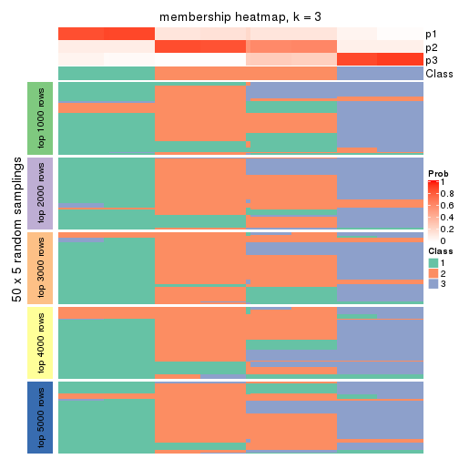
membership_heatmap(res, k = 4)
membership_heatmap(res, k = 5)

membership_heatmap(res, k = 6)
As soon as we have had the classes for columns, we can look for signatures which are significantly different between classes which can be candidate marks for certain classes. Following are the heatmaps for signatures.
Signature heatmaps where rows are scaled:
get_signatures(res, k = 2)
get_signatures(res, k = 3)
get_signatures(res, k = 4)
get_signatures(res, k = 5)
get_signatures(res, k = 6)
Signature heatmaps where rows are not scaled:
get_signatures(res, k = 2, scale_rows = FALSE)
get_signatures(res, k = 3, scale_rows = FALSE)
get_signatures(res, k = 4, scale_rows = FALSE)
get_signatures(res, k = 5, scale_rows = FALSE)
get_signatures(res, k = 6, scale_rows = FALSE)
Compare the overlap of signatures from different k:
compare_signatures(res)

get_signature() returns a data frame invisibly. TO get the list of signatures, the function
call should be assigned to a variable explicitly. In following code, if plot argument is set
to FALSE, no heatmap is plotted while only the differential analysis is performed.
# code only for demonstration
tb = get_signature(res, k = ..., plot = FALSE)
An example of the output of tb is:
#> which_row fdr mean_1 mean_2 scaled_mean_1 scaled_mean_2 km
#> 1 38 0.042760348 8.373488 9.131774 -0.5533452 0.5164555 1
#> 2 40 0.018707592 7.106213 8.469186 -0.6173731 0.5762149 1
#> 3 55 0.019134737 10.221463 11.207825 -0.6159697 0.5749050 1
#> 4 59 0.006059896 5.921854 7.869574 -0.6899429 0.6439467 1
#> 5 60 0.018055526 8.928898 10.211722 -0.6204761 0.5791110 1
#> 6 98 0.009384629 15.714769 14.887706 0.6635654 -0.6193277 2
...
The columns in tb are:
which_row: row indices corresponding to the input matrix.fdr: FDR for the differential test. mean_x: The mean value in group x.scaled_mean_x: The mean value in group x after rows are scaled.km: Row groups if k-means clustering is applied to rows.UMAP plot which shows how samples are separated.
dimension_reduction(res, k = 2, method = "UMAP")
dimension_reduction(res, k = 3, method = "UMAP")
dimension_reduction(res, k = 4, method = "UMAP")
dimension_reduction(res, k = 5, method = "UMAP")
dimension_reduction(res, k = 6, method = "UMAP")

Following heatmap shows how subgroups are split when increasing k:
collect_classes(res)
If matrix rows can be associated to genes, consider to use GO_Enrichment(res,
...) to perform function enrichment for the signature genes.
The object with results only for a single top-value method and a single partition method can be extracted as:
res = res_list["MAD", "skmeans"]
# you can also extract it by
# res = res_list["MAD:skmeans"]
A summary of res and all the functions that can be applied to it:
res
#> A 'ConsensusPartition' object with k = 2, 3, 4, 5, 6.
#> On a matrix with 13183 rows and 72 columns.
#> Top rows (1000, 2000, 3000, 4000, 5000) are extracted by 'MAD' method.
#> Subgroups are detected by 'skmeans' method.
#> Performed in total 1250 partitions by row resampling.
#> Best k for subgroups seems to be 6.
#>
#> Following methods can be applied to this 'ConsensusPartition' object:
#> [1] "cola_report" "collect_classes" "collect_plots"
#> [4] "collect_stats" "colnames" "compare_signatures"
#> [7] "consensus_heatmap" "dimension_reduction" "functional_enrichment"
#> [10] "get_anno_col" "get_anno" "get_classes"
#> [13] "get_consensus" "get_matrix" "get_membership"
#> [16] "get_param" "get_signatures" "get_stats"
#> [19] "is_best_k" "is_stable_k" "membership_heatmap"
#> [22] "ncol" "nrow" "plot_ecdf"
#> [25] "rownames" "select_partition_number" "show"
#> [28] "suggest_best_k" "test_to_known_factors"
collect_plots() function collects all the plots made from res for all k (number of partitions)
into one single page to provide an easy and fast comparison between different k.
collect_plots(res)
The plots are:
k and the heatmap of
predicted classes for each k.k.k.k.All the plots in panels can be made by individual functions and they are plotted later in this section.
select_partition_number() produces several plots showing different
statistics for choosing “optimized” k. There are following statistics:
k;k, the area increased is defined as \(A_k - A_{k-1}\).The detailed explanations of these statistics can be found in the cola vignette.
Generally speaking, lower PAC score, higher mean silhouette score or higher
concordance corresponds to better partition. Rand index and Jaccard index
measure how similar the current partition is compared to partition with k-1.
If they are too similar, we won't accept k is better than k-1.
select_partition_number(res)
The numeric values for all these statistics can be obtained by get_stats().
get_stats(res)
#> k 1-PAC mean_silhouette concordance area_increased Rand Jaccard
#> 2 2 1.000 0.994 0.994 0.5071 0.493 0.493
#> 3 3 0.754 0.966 0.969 0.2619 0.866 0.729
#> 4 4 1.000 1.000 0.999 0.1878 0.880 0.667
#> 5 5 0.971 0.917 0.948 0.0212 0.993 0.972
#> 6 6 0.933 0.955 0.934 0.0197 0.972 0.879
suggest_best_k() suggests the best \(k\) based on these statistics. The rules are as follows:
NA.suggest_best_k(res)
#> [1] 6
#> attr(,"optional")
#> [1] 2 4
There is also optional best \(k\) = 2 4 that is worth to check.
Following shows the table of the partitions (You need to click the show/hide
code output link to see it). The membership matrix (columns with name p*)
is inferred by
clue::cl_consensus()
function with the SE method. Basically the value in the membership matrix
represents the probability to belong to a certain group. The finall class
label for an item is determined with the group with highest probability it
belongs to.
In get_classes() function, the entropy is calculated from the membership
matrix and the silhouette score is calculated from the consensus matrix.
cbind(get_classes(res, k = 2), get_membership(res, k = 2))
#> class entropy silhouette p1 p2
#> SRR942117 1 0.0938 0.994 0.988 0.012
#> SRR942118 1 0.0938 0.994 0.988 0.012
#> SRR942119 1 0.0938 0.994 0.988 0.012
#> SRR942120 1 0.0938 0.994 0.988 0.012
#> SRR942121 1 0.0938 0.994 0.988 0.012
#> SRR942122 1 0.0938 0.994 0.988 0.012
#> SRR942123 1 0.0938 0.994 0.988 0.012
#> SRR942124 1 0.0938 0.994 0.988 0.012
#> SRR942125 1 0.0938 0.994 0.988 0.012
#> SRR942126 1 0.0938 0.994 0.988 0.012
#> SRR942127 1 0.0938 0.994 0.988 0.012
#> SRR942128 1 0.0938 0.994 0.988 0.012
#> SRR942129 1 0.0938 0.994 0.988 0.012
#> SRR942130 1 0.0938 0.994 0.988 0.012
#> SRR942131 1 0.0938 0.994 0.988 0.012
#> SRR942132 1 0.0938 0.994 0.988 0.012
#> SRR942133 1 0.0938 0.994 0.988 0.012
#> SRR942134 1 0.0938 0.994 0.988 0.012
#> SRR942144 2 0.0000 0.994 0.000 1.000
#> SRR942145 2 0.0000 0.994 0.000 1.000
#> SRR942146 2 0.0000 0.994 0.000 1.000
#> SRR942147 2 0.0000 0.994 0.000 1.000
#> SRR942148 2 0.0000 0.994 0.000 1.000
#> SRR942149 2 0.0000 0.994 0.000 1.000
#> SRR942150 2 0.0000 0.994 0.000 1.000
#> SRR942151 2 0.0000 0.994 0.000 1.000
#> SRR942152 2 0.0000 0.994 0.000 1.000
#> SRR942135 2 0.0000 0.994 0.000 1.000
#> SRR942136 2 0.0000 0.994 0.000 1.000
#> SRR942137 2 0.0000 0.994 0.000 1.000
#> SRR942138 2 0.0000 0.994 0.000 1.000
#> SRR942139 2 0.0000 0.994 0.000 1.000
#> SRR942140 2 0.0000 0.994 0.000 1.000
#> SRR942141 2 0.0000 0.994 0.000 1.000
#> SRR942142 2 0.0000 0.994 0.000 1.000
#> SRR942143 2 0.0000 0.994 0.000 1.000
#> SRR942153 2 0.0938 0.994 0.012 0.988
#> SRR942154 2 0.0938 0.994 0.012 0.988
#> SRR942155 2 0.0938 0.994 0.012 0.988
#> SRR942156 2 0.0938 0.994 0.012 0.988
#> SRR942157 2 0.0938 0.994 0.012 0.988
#> SRR942158 2 0.0938 0.994 0.012 0.988
#> SRR942159 2 0.0938 0.994 0.012 0.988
#> SRR942160 2 0.0938 0.994 0.012 0.988
#> SRR942161 2 0.0938 0.994 0.012 0.988
#> SRR942162 2 0.0938 0.994 0.012 0.988
#> SRR942163 2 0.0938 0.994 0.012 0.988
#> SRR942164 2 0.0938 0.994 0.012 0.988
#> SRR942166 2 0.0938 0.994 0.012 0.988
#> SRR942167 2 0.0938 0.994 0.012 0.988
#> SRR942168 2 0.0938 0.994 0.012 0.988
#> SRR942169 2 0.0938 0.994 0.012 0.988
#> SRR942170 2 0.0938 0.994 0.012 0.988
#> SRR942171 1 0.0000 0.994 1.000 0.000
#> SRR942172 1 0.0000 0.994 1.000 0.000
#> SRR942173 1 0.0000 0.994 1.000 0.000
#> SRR942174 1 0.0000 0.994 1.000 0.000
#> SRR942175 1 0.0000 0.994 1.000 0.000
#> SRR942176 1 0.0000 0.994 1.000 0.000
#> SRR942177 1 0.0000 0.994 1.000 0.000
#> SRR942178 1 0.0000 0.994 1.000 0.000
#> SRR942179 1 0.0000 0.994 1.000 0.000
#> SRR942180 1 0.0000 0.994 1.000 0.000
#> SRR942181 1 0.0000 0.994 1.000 0.000
#> SRR942182 1 0.0000 0.994 1.000 0.000
#> SRR942183 1 0.0000 0.994 1.000 0.000
#> SRR942184 1 0.0000 0.994 1.000 0.000
#> SRR942185 1 0.0000 0.994 1.000 0.000
#> SRR942186 1 0.0000 0.994 1.000 0.000
#> SRR942187 1 0.0000 0.994 1.000 0.000
#> SRR942188 1 0.0000 0.994 1.000 0.000
#> SRR942189 1 0.0000 0.994 1.000 0.000
cbind(get_classes(res, k = 3), get_membership(res, k = 3))
#> class entropy silhouette p1 p2 p3
#> SRR942117 2 0.000 1.000 0 1.000 0.000
#> SRR942118 2 0.000 1.000 0 1.000 0.000
#> SRR942119 2 0.000 1.000 0 1.000 0.000
#> SRR942120 2 0.000 1.000 0 1.000 0.000
#> SRR942121 2 0.000 1.000 0 1.000 0.000
#> SRR942122 2 0.000 1.000 0 1.000 0.000
#> SRR942123 2 0.000 1.000 0 1.000 0.000
#> SRR942124 2 0.000 1.000 0 1.000 0.000
#> SRR942125 2 0.000 1.000 0 1.000 0.000
#> SRR942126 2 0.000 1.000 0 1.000 0.000
#> SRR942127 2 0.000 1.000 0 1.000 0.000
#> SRR942128 2 0.000 1.000 0 1.000 0.000
#> SRR942129 2 0.000 1.000 0 1.000 0.000
#> SRR942130 2 0.000 1.000 0 1.000 0.000
#> SRR942131 2 0.000 1.000 0 1.000 0.000
#> SRR942132 2 0.000 1.000 0 1.000 0.000
#> SRR942133 2 0.000 1.000 0 1.000 0.000
#> SRR942134 2 0.000 1.000 0 1.000 0.000
#> SRR942144 3 0.341 0.929 0 0.124 0.876
#> SRR942145 3 0.341 0.929 0 0.124 0.876
#> SRR942146 3 0.341 0.929 0 0.124 0.876
#> SRR942147 3 0.341 0.929 0 0.124 0.876
#> SRR942148 3 0.341 0.929 0 0.124 0.876
#> SRR942149 3 0.341 0.929 0 0.124 0.876
#> SRR942150 3 0.341 0.929 0 0.124 0.876
#> SRR942151 3 0.341 0.929 0 0.124 0.876
#> SRR942152 3 0.341 0.929 0 0.124 0.876
#> SRR942135 3 0.341 0.929 0 0.124 0.876
#> SRR942136 3 0.341 0.929 0 0.124 0.876
#> SRR942137 3 0.341 0.929 0 0.124 0.876
#> SRR942138 3 0.341 0.929 0 0.124 0.876
#> SRR942139 3 0.341 0.929 0 0.124 0.876
#> SRR942140 3 0.341 0.929 0 0.124 0.876
#> SRR942141 3 0.341 0.929 0 0.124 0.876
#> SRR942142 3 0.341 0.929 0 0.124 0.876
#> SRR942143 3 0.341 0.929 0 0.124 0.876
#> SRR942153 3 0.000 0.929 0 0.000 1.000
#> SRR942154 3 0.000 0.929 0 0.000 1.000
#> SRR942155 3 0.000 0.929 0 0.000 1.000
#> SRR942156 3 0.000 0.929 0 0.000 1.000
#> SRR942157 3 0.000 0.929 0 0.000 1.000
#> SRR942158 3 0.000 0.929 0 0.000 1.000
#> SRR942159 3 0.000 0.929 0 0.000 1.000
#> SRR942160 3 0.000 0.929 0 0.000 1.000
#> SRR942161 3 0.000 0.929 0 0.000 1.000
#> SRR942162 3 0.000 0.929 0 0.000 1.000
#> SRR942163 3 0.000 0.929 0 0.000 1.000
#> SRR942164 3 0.000 0.929 0 0.000 1.000
#> SRR942166 3 0.000 0.929 0 0.000 1.000
#> SRR942167 3 0.000 0.929 0 0.000 1.000
#> SRR942168 3 0.000 0.929 0 0.000 1.000
#> SRR942169 3 0.000 0.929 0 0.000 1.000
#> SRR942170 3 0.000 0.929 0 0.000 1.000
#> SRR942171 1 0.000 1.000 1 0.000 0.000
#> SRR942172 1 0.000 1.000 1 0.000 0.000
#> SRR942173 1 0.000 1.000 1 0.000 0.000
#> SRR942174 1 0.000 1.000 1 0.000 0.000
#> SRR942175 1 0.000 1.000 1 0.000 0.000
#> SRR942176 1 0.000 1.000 1 0.000 0.000
#> SRR942177 1 0.000 1.000 1 0.000 0.000
#> SRR942178 1 0.000 1.000 1 0.000 0.000
#> SRR942179 1 0.000 1.000 1 0.000 0.000
#> SRR942180 1 0.000 1.000 1 0.000 0.000
#> SRR942181 1 0.000 1.000 1 0.000 0.000
#> SRR942182 1 0.000 1.000 1 0.000 0.000
#> SRR942183 1 0.000 1.000 1 0.000 0.000
#> SRR942184 1 0.000 1.000 1 0.000 0.000
#> SRR942185 1 0.000 1.000 1 0.000 0.000
#> SRR942186 1 0.000 1.000 1 0.000 0.000
#> SRR942187 1 0.000 1.000 1 0.000 0.000
#> SRR942188 1 0.000 1.000 1 0.000 0.000
#> SRR942189 1 0.000 1.000 1 0.000 0.000
cbind(get_classes(res, k = 4), get_membership(res, k = 4))
#> class entropy silhouette p1 p2 p3 p4
#> SRR942117 2 0.0000 1.000 0.000 1 0.000 0.000
#> SRR942118 2 0.0000 1.000 0.000 1 0.000 0.000
#> SRR942119 2 0.0000 1.000 0.000 1 0.000 0.000
#> SRR942120 2 0.0000 1.000 0.000 1 0.000 0.000
#> SRR942121 2 0.0000 1.000 0.000 1 0.000 0.000
#> SRR942122 2 0.0000 1.000 0.000 1 0.000 0.000
#> SRR942123 2 0.0000 1.000 0.000 1 0.000 0.000
#> SRR942124 2 0.0000 1.000 0.000 1 0.000 0.000
#> SRR942125 2 0.0000 1.000 0.000 1 0.000 0.000
#> SRR942126 2 0.0000 1.000 0.000 1 0.000 0.000
#> SRR942127 2 0.0000 1.000 0.000 1 0.000 0.000
#> SRR942128 2 0.0000 1.000 0.000 1 0.000 0.000
#> SRR942129 2 0.0000 1.000 0.000 1 0.000 0.000
#> SRR942130 2 0.0000 1.000 0.000 1 0.000 0.000
#> SRR942131 2 0.0000 1.000 0.000 1 0.000 0.000
#> SRR942132 2 0.0000 1.000 0.000 1 0.000 0.000
#> SRR942133 2 0.0000 1.000 0.000 1 0.000 0.000
#> SRR942134 2 0.0000 1.000 0.000 1 0.000 0.000
#> SRR942144 4 0.0000 1.000 0.000 0 0.000 1.000
#> SRR942145 4 0.0000 1.000 0.000 0 0.000 1.000
#> SRR942146 4 0.0000 1.000 0.000 0 0.000 1.000
#> SRR942147 4 0.0000 1.000 0.000 0 0.000 1.000
#> SRR942148 4 0.0000 1.000 0.000 0 0.000 1.000
#> SRR942149 4 0.0000 1.000 0.000 0 0.000 1.000
#> SRR942150 4 0.0000 1.000 0.000 0 0.000 1.000
#> SRR942151 4 0.0000 1.000 0.000 0 0.000 1.000
#> SRR942152 4 0.0000 1.000 0.000 0 0.000 1.000
#> SRR942135 4 0.0000 1.000 0.000 0 0.000 1.000
#> SRR942136 4 0.0000 1.000 0.000 0 0.000 1.000
#> SRR942137 4 0.0000 1.000 0.000 0 0.000 1.000
#> SRR942138 4 0.0000 1.000 0.000 0 0.000 1.000
#> SRR942139 4 0.0000 1.000 0.000 0 0.000 1.000
#> SRR942140 4 0.0000 1.000 0.000 0 0.000 1.000
#> SRR942141 4 0.0000 1.000 0.000 0 0.000 1.000
#> SRR942142 4 0.0000 1.000 0.000 0 0.000 1.000
#> SRR942143 4 0.0000 1.000 0.000 0 0.000 1.000
#> SRR942153 3 0.0188 1.000 0.000 0 0.996 0.004
#> SRR942154 3 0.0188 1.000 0.000 0 0.996 0.004
#> SRR942155 3 0.0188 1.000 0.000 0 0.996 0.004
#> SRR942156 3 0.0188 1.000 0.000 0 0.996 0.004
#> SRR942157 3 0.0188 1.000 0.000 0 0.996 0.004
#> SRR942158 3 0.0188 1.000 0.000 0 0.996 0.004
#> SRR942159 3 0.0188 1.000 0.000 0 0.996 0.004
#> SRR942160 3 0.0188 1.000 0.000 0 0.996 0.004
#> SRR942161 3 0.0188 1.000 0.000 0 0.996 0.004
#> SRR942162 3 0.0188 1.000 0.000 0 0.996 0.004
#> SRR942163 3 0.0188 1.000 0.000 0 0.996 0.004
#> SRR942164 3 0.0188 1.000 0.000 0 0.996 0.004
#> SRR942166 3 0.0188 1.000 0.000 0 0.996 0.004
#> SRR942167 3 0.0188 1.000 0.000 0 0.996 0.004
#> SRR942168 3 0.0188 1.000 0.000 0 0.996 0.004
#> SRR942169 3 0.0188 1.000 0.000 0 0.996 0.004
#> SRR942170 3 0.0188 1.000 0.000 0 0.996 0.004
#> SRR942171 1 0.0000 0.999 1.000 0 0.000 0.000
#> SRR942172 1 0.0000 0.999 1.000 0 0.000 0.000
#> SRR942173 1 0.0000 0.999 1.000 0 0.000 0.000
#> SRR942174 1 0.0000 0.999 1.000 0 0.000 0.000
#> SRR942175 1 0.0000 0.999 1.000 0 0.000 0.000
#> SRR942176 1 0.0000 0.999 1.000 0 0.000 0.000
#> SRR942177 1 0.0000 0.999 1.000 0 0.000 0.000
#> SRR942178 1 0.0000 0.999 1.000 0 0.000 0.000
#> SRR942179 1 0.0000 0.999 1.000 0 0.000 0.000
#> SRR942180 1 0.0000 0.999 1.000 0 0.000 0.000
#> SRR942181 1 0.0188 0.998 0.996 0 0.004 0.000
#> SRR942182 1 0.0188 0.998 0.996 0 0.004 0.000
#> SRR942183 1 0.0188 0.998 0.996 0 0.004 0.000
#> SRR942184 1 0.0188 0.998 0.996 0 0.004 0.000
#> SRR942185 1 0.0188 0.998 0.996 0 0.004 0.000
#> SRR942186 1 0.0188 0.998 0.996 0 0.004 0.000
#> SRR942187 1 0.0188 0.998 0.996 0 0.004 0.000
#> SRR942188 1 0.0188 0.998 0.996 0 0.004 0.000
#> SRR942189 1 0.0000 0.999 1.000 0 0.000 0.000
cbind(get_classes(res, k = 5), get_membership(res, k = 5))
#> class entropy silhouette p1 p2 p3 p4 p5
#> SRR942117 2 0.0404 0.994 0.000 0.988 0 0.000 0.012
#> SRR942118 2 0.0404 0.994 0.000 0.988 0 0.000 0.012
#> SRR942119 2 0.0404 0.994 0.000 0.988 0 0.000 0.012
#> SRR942120 2 0.0404 0.994 0.000 0.988 0 0.000 0.012
#> SRR942121 2 0.0404 0.994 0.000 0.988 0 0.000 0.012
#> SRR942122 2 0.0404 0.994 0.000 0.988 0 0.000 0.012
#> SRR942123 2 0.0404 0.994 0.000 0.988 0 0.000 0.012
#> SRR942124 2 0.0404 0.994 0.000 0.988 0 0.000 0.012
#> SRR942125 2 0.0404 0.994 0.000 0.988 0 0.000 0.012
#> SRR942126 2 0.0000 0.994 0.000 1.000 0 0.000 0.000
#> SRR942127 2 0.0000 0.994 0.000 1.000 0 0.000 0.000
#> SRR942128 2 0.0000 0.994 0.000 1.000 0 0.000 0.000
#> SRR942129 2 0.0000 0.994 0.000 1.000 0 0.000 0.000
#> SRR942130 2 0.0000 0.994 0.000 1.000 0 0.000 0.000
#> SRR942131 2 0.0000 0.994 0.000 1.000 0 0.000 0.000
#> SRR942132 2 0.0000 0.994 0.000 1.000 0 0.000 0.000
#> SRR942133 2 0.0000 0.994 0.000 1.000 0 0.000 0.000
#> SRR942134 2 0.0000 0.994 0.000 1.000 0 0.000 0.000
#> SRR942144 4 0.0000 0.718 0.000 0.000 0 1.000 0.000
#> SRR942145 4 0.0000 0.718 0.000 0.000 0 1.000 0.000
#> SRR942146 4 0.0000 0.718 0.000 0.000 0 1.000 0.000
#> SRR942147 4 0.0000 0.718 0.000 0.000 0 1.000 0.000
#> SRR942148 4 0.0000 0.718 0.000 0.000 0 1.000 0.000
#> SRR942149 4 0.0000 0.718 0.000 0.000 0 1.000 0.000
#> SRR942150 4 0.0000 0.718 0.000 0.000 0 1.000 0.000
#> SRR942151 4 0.0000 0.718 0.000 0.000 0 1.000 0.000
#> SRR942152 4 0.0000 0.718 0.000 0.000 0 1.000 0.000
#> SRR942135 4 0.4030 0.724 0.000 0.000 0 0.648 0.352
#> SRR942136 4 0.4030 0.724 0.000 0.000 0 0.648 0.352
#> SRR942137 4 0.4030 0.724 0.000 0.000 0 0.648 0.352
#> SRR942138 4 0.4030 0.724 0.000 0.000 0 0.648 0.352
#> SRR942139 4 0.4030 0.724 0.000 0.000 0 0.648 0.352
#> SRR942140 4 0.4030 0.724 0.000 0.000 0 0.648 0.352
#> SRR942141 4 0.4030 0.724 0.000 0.000 0 0.648 0.352
#> SRR942142 4 0.4030 0.724 0.000 0.000 0 0.648 0.352
#> SRR942143 5 0.4114 0.000 0.000 0.000 0 0.376 0.624
#> SRR942153 3 0.0000 1.000 0.000 0.000 1 0.000 0.000
#> SRR942154 3 0.0000 1.000 0.000 0.000 1 0.000 0.000
#> SRR942155 3 0.0000 1.000 0.000 0.000 1 0.000 0.000
#> SRR942156 3 0.0000 1.000 0.000 0.000 1 0.000 0.000
#> SRR942157 3 0.0000 1.000 0.000 0.000 1 0.000 0.000
#> SRR942158 3 0.0000 1.000 0.000 0.000 1 0.000 0.000
#> SRR942159 3 0.0000 1.000 0.000 0.000 1 0.000 0.000
#> SRR942160 3 0.0000 1.000 0.000 0.000 1 0.000 0.000
#> SRR942161 3 0.0000 1.000 0.000 0.000 1 0.000 0.000
#> SRR942162 3 0.0000 1.000 0.000 0.000 1 0.000 0.000
#> SRR942163 3 0.0000 1.000 0.000 0.000 1 0.000 0.000
#> SRR942164 3 0.0000 1.000 0.000 0.000 1 0.000 0.000
#> SRR942166 3 0.0000 1.000 0.000 0.000 1 0.000 0.000
#> SRR942167 3 0.0000 1.000 0.000 0.000 1 0.000 0.000
#> SRR942168 3 0.0000 1.000 0.000 0.000 1 0.000 0.000
#> SRR942169 3 0.0000 1.000 0.000 0.000 1 0.000 0.000
#> SRR942170 3 0.0000 1.000 0.000 0.000 1 0.000 0.000
#> SRR942171 1 0.0000 0.994 1.000 0.000 0 0.000 0.000
#> SRR942172 1 0.0000 0.994 1.000 0.000 0 0.000 0.000
#> SRR942173 1 0.0000 0.994 1.000 0.000 0 0.000 0.000
#> SRR942174 1 0.0000 0.994 1.000 0.000 0 0.000 0.000
#> SRR942175 1 0.0000 0.994 1.000 0.000 0 0.000 0.000
#> SRR942176 1 0.0000 0.994 1.000 0.000 0 0.000 0.000
#> SRR942177 1 0.0000 0.994 1.000 0.000 0 0.000 0.000
#> SRR942178 1 0.0000 0.994 1.000 0.000 0 0.000 0.000
#> SRR942179 1 0.0000 0.994 1.000 0.000 0 0.000 0.000
#> SRR942180 1 0.0000 0.994 1.000 0.000 0 0.000 0.000
#> SRR942181 1 0.0404 0.994 0.988 0.000 0 0.000 0.012
#> SRR942182 1 0.0404 0.994 0.988 0.000 0 0.000 0.012
#> SRR942183 1 0.0404 0.994 0.988 0.000 0 0.000 0.012
#> SRR942184 1 0.0404 0.994 0.988 0.000 0 0.000 0.012
#> SRR942185 1 0.0404 0.994 0.988 0.000 0 0.000 0.012
#> SRR942186 1 0.0404 0.994 0.988 0.000 0 0.000 0.012
#> SRR942187 1 0.0404 0.994 0.988 0.000 0 0.000 0.012
#> SRR942188 1 0.0404 0.994 0.988 0.000 0 0.000 0.012
#> SRR942189 1 0.0404 0.994 0.988 0.000 0 0.000 0.012
cbind(get_classes(res, k = 6), get_membership(res, k = 6))
#> class entropy silhouette p1 p2 p3 p4 p5 p6
#> SRR942117 2 0.1151 0.959 0.000 0.956 0.000 0.000 0.032 0.012
#> SRR942118 2 0.1151 0.959 0.000 0.956 0.000 0.000 0.032 0.012
#> SRR942119 2 0.1151 0.959 0.000 0.956 0.000 0.000 0.032 0.012
#> SRR942120 2 0.1151 0.959 0.000 0.956 0.000 0.000 0.032 0.012
#> SRR942121 2 0.1151 0.959 0.000 0.956 0.000 0.000 0.032 0.012
#> SRR942122 2 0.1151 0.959 0.000 0.956 0.000 0.000 0.032 0.012
#> SRR942123 2 0.1151 0.959 0.000 0.956 0.000 0.000 0.032 0.012
#> SRR942124 2 0.1245 0.957 0.000 0.952 0.000 0.000 0.032 0.016
#> SRR942125 2 0.4135 0.611 0.000 0.668 0.000 0.000 0.032 0.300
#> SRR942126 2 0.0000 0.962 0.000 1.000 0.000 0.000 0.000 0.000
#> SRR942127 2 0.0000 0.962 0.000 1.000 0.000 0.000 0.000 0.000
#> SRR942128 2 0.0000 0.962 0.000 1.000 0.000 0.000 0.000 0.000
#> SRR942129 2 0.0000 0.962 0.000 1.000 0.000 0.000 0.000 0.000
#> SRR942130 2 0.0000 0.962 0.000 1.000 0.000 0.000 0.000 0.000
#> SRR942131 2 0.0000 0.962 0.000 1.000 0.000 0.000 0.000 0.000
#> SRR942132 2 0.0000 0.962 0.000 1.000 0.000 0.000 0.000 0.000
#> SRR942133 2 0.0000 0.962 0.000 1.000 0.000 0.000 0.000 0.000
#> SRR942134 2 0.0000 0.962 0.000 1.000 0.000 0.000 0.000 0.000
#> SRR942144 4 0.0000 0.997 0.000 0.000 0.000 1.000 0.000 0.000
#> SRR942145 4 0.0146 0.995 0.000 0.000 0.000 0.996 0.000 0.004
#> SRR942146 4 0.0146 0.995 0.000 0.000 0.000 0.996 0.000 0.004
#> SRR942147 4 0.0000 0.997 0.000 0.000 0.000 1.000 0.000 0.000
#> SRR942148 4 0.0000 0.997 0.000 0.000 0.000 1.000 0.000 0.000
#> SRR942149 4 0.0000 0.997 0.000 0.000 0.000 1.000 0.000 0.000
#> SRR942150 4 0.0146 0.995 0.000 0.000 0.000 0.996 0.000 0.004
#> SRR942151 4 0.0146 0.994 0.000 0.000 0.000 0.996 0.000 0.004
#> SRR942152 4 0.0000 0.997 0.000 0.000 0.000 1.000 0.000 0.000
#> SRR942135 6 0.3695 0.994 0.000 0.000 0.000 0.376 0.000 0.624
#> SRR942136 6 0.3684 0.999 0.000 0.000 0.000 0.372 0.000 0.628
#> SRR942137 6 0.3684 0.999 0.000 0.000 0.000 0.372 0.000 0.628
#> SRR942138 6 0.3684 0.999 0.000 0.000 0.000 0.372 0.000 0.628
#> SRR942139 6 0.3684 0.999 0.000 0.000 0.000 0.372 0.000 0.628
#> SRR942140 6 0.3684 0.999 0.000 0.000 0.000 0.372 0.000 0.628
#> SRR942141 6 0.3684 0.999 0.000 0.000 0.000 0.372 0.000 0.628
#> SRR942142 6 0.3684 0.999 0.000 0.000 0.000 0.372 0.000 0.628
#> SRR942143 5 0.1556 0.000 0.000 0.000 0.000 0.080 0.920 0.000
#> SRR942153 3 0.0146 0.997 0.000 0.000 0.996 0.000 0.004 0.000
#> SRR942154 3 0.0146 0.997 0.000 0.000 0.996 0.000 0.004 0.000
#> SRR942155 3 0.0146 0.997 0.000 0.000 0.996 0.000 0.004 0.000
#> SRR942156 3 0.0146 0.997 0.000 0.000 0.996 0.000 0.004 0.000
#> SRR942157 3 0.0146 0.997 0.000 0.000 0.996 0.000 0.004 0.000
#> SRR942158 3 0.0146 0.997 0.000 0.000 0.996 0.000 0.004 0.000
#> SRR942159 3 0.0146 0.997 0.000 0.000 0.996 0.000 0.004 0.000
#> SRR942160 3 0.0000 0.998 0.000 0.000 1.000 0.000 0.000 0.000
#> SRR942161 3 0.0291 0.995 0.000 0.000 0.992 0.000 0.004 0.004
#> SRR942162 3 0.0000 0.998 0.000 0.000 1.000 0.000 0.000 0.000
#> SRR942163 3 0.0000 0.998 0.000 0.000 1.000 0.000 0.000 0.000
#> SRR942164 3 0.0000 0.998 0.000 0.000 1.000 0.000 0.000 0.000
#> SRR942166 3 0.0000 0.998 0.000 0.000 1.000 0.000 0.000 0.000
#> SRR942167 3 0.0000 0.998 0.000 0.000 1.000 0.000 0.000 0.000
#> SRR942168 3 0.0000 0.998 0.000 0.000 1.000 0.000 0.000 0.000
#> SRR942169 3 0.0000 0.998 0.000 0.000 1.000 0.000 0.000 0.000
#> SRR942170 3 0.0146 0.995 0.000 0.000 0.996 0.000 0.000 0.004
#> SRR942171 1 0.2129 0.947 0.904 0.000 0.000 0.000 0.040 0.056
#> SRR942172 1 0.2066 0.947 0.908 0.000 0.000 0.000 0.040 0.052
#> SRR942173 1 0.2129 0.947 0.904 0.000 0.000 0.000 0.040 0.056
#> SRR942174 1 0.2129 0.947 0.904 0.000 0.000 0.000 0.040 0.056
#> SRR942175 1 0.2129 0.947 0.904 0.000 0.000 0.000 0.040 0.056
#> SRR942176 1 0.2129 0.947 0.904 0.000 0.000 0.000 0.040 0.056
#> SRR942177 1 0.2129 0.947 0.904 0.000 0.000 0.000 0.040 0.056
#> SRR942178 1 0.2129 0.947 0.904 0.000 0.000 0.000 0.040 0.056
#> SRR942179 1 0.2129 0.947 0.904 0.000 0.000 0.000 0.040 0.056
#> SRR942180 1 0.2129 0.947 0.904 0.000 0.000 0.000 0.040 0.056
#> SRR942181 1 0.0260 0.940 0.992 0.000 0.000 0.000 0.000 0.008
#> SRR942182 1 0.0363 0.939 0.988 0.000 0.000 0.000 0.000 0.012
#> SRR942183 1 0.0363 0.939 0.988 0.000 0.000 0.000 0.000 0.012
#> SRR942184 1 0.0363 0.939 0.988 0.000 0.000 0.000 0.000 0.012
#> SRR942185 1 0.0363 0.939 0.988 0.000 0.000 0.000 0.000 0.012
#> SRR942186 1 0.0260 0.940 0.992 0.000 0.000 0.000 0.000 0.008
#> SRR942187 1 0.0363 0.939 0.988 0.000 0.000 0.000 0.000 0.012
#> SRR942188 1 0.0260 0.940 0.992 0.000 0.000 0.000 0.000 0.008
#> SRR942189 1 0.0291 0.940 0.992 0.000 0.000 0.000 0.004 0.004
Heatmaps for the consensus matrix. It visualizes the probability of two samples to be in a same group.
consensus_heatmap(res, k = 2)
consensus_heatmap(res, k = 3)
consensus_heatmap(res, k = 4)
consensus_heatmap(res, k = 5)
consensus_heatmap(res, k = 6)
Heatmaps for the membership of samples in all partitions to see how consistent they are:
membership_heatmap(res, k = 2)
membership_heatmap(res, k = 3)
membership_heatmap(res, k = 4)
membership_heatmap(res, k = 5)
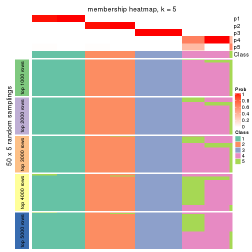
membership_heatmap(res, k = 6)
As soon as we have had the classes for columns, we can look for signatures which are significantly different between classes which can be candidate marks for certain classes. Following are the heatmaps for signatures.
Signature heatmaps where rows are scaled:
get_signatures(res, k = 2)
get_signatures(res, k = 3)
get_signatures(res, k = 4)
get_signatures(res, k = 5)
get_signatures(res, k = 6)
Signature heatmaps where rows are not scaled:
get_signatures(res, k = 2, scale_rows = FALSE)
get_signatures(res, k = 3, scale_rows = FALSE)
get_signatures(res, k = 4, scale_rows = FALSE)
get_signatures(res, k = 5, scale_rows = FALSE)
get_signatures(res, k = 6, scale_rows = FALSE)
Compare the overlap of signatures from different k:
compare_signatures(res)
get_signature() returns a data frame invisibly. TO get the list of signatures, the function
call should be assigned to a variable explicitly. In following code, if plot argument is set
to FALSE, no heatmap is plotted while only the differential analysis is performed.
# code only for demonstration
tb = get_signature(res, k = ..., plot = FALSE)
An example of the output of tb is:
#> which_row fdr mean_1 mean_2 scaled_mean_1 scaled_mean_2 km
#> 1 38 0.042760348 8.373488 9.131774 -0.5533452 0.5164555 1
#> 2 40 0.018707592 7.106213 8.469186 -0.6173731 0.5762149 1
#> 3 55 0.019134737 10.221463 11.207825 -0.6159697 0.5749050 1
#> 4 59 0.006059896 5.921854 7.869574 -0.6899429 0.6439467 1
#> 5 60 0.018055526 8.928898 10.211722 -0.6204761 0.5791110 1
#> 6 98 0.009384629 15.714769 14.887706 0.6635654 -0.6193277 2
...
The columns in tb are:
which_row: row indices corresponding to the input matrix.fdr: FDR for the differential test. mean_x: The mean value in group x.scaled_mean_x: The mean value in group x after rows are scaled.km: Row groups if k-means clustering is applied to rows.UMAP plot which shows how samples are separated.
dimension_reduction(res, k = 2, method = "UMAP")
dimension_reduction(res, k = 3, method = "UMAP")
dimension_reduction(res, k = 4, method = "UMAP")
dimension_reduction(res, k = 5, method = "UMAP")
dimension_reduction(res, k = 6, method = "UMAP")
Following heatmap shows how subgroups are split when increasing k:
collect_classes(res)
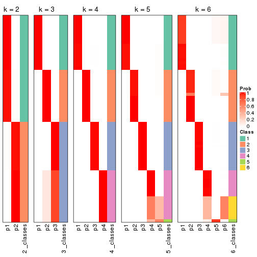
If matrix rows can be associated to genes, consider to use GO_Enrichment(res,
...) to perform function enrichment for the signature genes.
The object with results only for a single top-value method and a single partition method can be extracted as:
res = res_list["MAD", "pam"]
# you can also extract it by
# res = res_list["MAD:pam"]
A summary of res and all the functions that can be applied to it:
res
#> A 'ConsensusPartition' object with k = 2, 3, 4, 5, 6.
#> On a matrix with 13183 rows and 72 columns.
#> Top rows (1000, 2000, 3000, 4000, 5000) are extracted by 'MAD' method.
#> Subgroups are detected by 'pam' method.
#> Performed in total 1250 partitions by row resampling.
#> Best k for subgroups seems to be 6.
#>
#> Following methods can be applied to this 'ConsensusPartition' object:
#> [1] "cola_report" "collect_classes" "collect_plots"
#> [4] "collect_stats" "colnames" "compare_signatures"
#> [7] "consensus_heatmap" "dimension_reduction" "functional_enrichment"
#> [10] "get_anno_col" "get_anno" "get_classes"
#> [13] "get_consensus" "get_matrix" "get_membership"
#> [16] "get_param" "get_signatures" "get_stats"
#> [19] "is_best_k" "is_stable_k" "membership_heatmap"
#> [22] "ncol" "nrow" "plot_ecdf"
#> [25] "rownames" "select_partition_number" "show"
#> [28] "suggest_best_k" "test_to_known_factors"
collect_plots() function collects all the plots made from res for all k (number of partitions)
into one single page to provide an easy and fast comparison between different k.
collect_plots(res)
The plots are:
k and the heatmap of
predicted classes for each k.k.k.k.All the plots in panels can be made by individual functions and they are plotted later in this section.
select_partition_number() produces several plots showing different
statistics for choosing “optimized” k. There are following statistics:
k;k, the area increased is defined as \(A_k - A_{k-1}\).The detailed explanations of these statistics can be found in the cola vignette.
Generally speaking, lower PAC score, higher mean silhouette score or higher
concordance corresponds to better partition. Rand index and Jaccard index
measure how similar the current partition is compared to partition with k-1.
If they are too similar, we won't accept k is better than k-1.
select_partition_number(res)
The numeric values for all these statistics can be obtained by get_stats().
get_stats(res)
#> k 1-PAC mean_silhouette concordance area_increased Rand Jaccard
#> 2 2 1.000 1.000 1.000 0.3946 0.606 0.606
#> 3 3 0.921 0.937 0.966 0.6698 0.726 0.548
#> 4 4 1.000 1.000 1.000 0.1541 0.845 0.574
#> 5 5 0.971 0.951 0.972 0.0160 0.993 0.972
#> 6 6 1.000 0.984 0.996 0.0285 0.972 0.879
suggest_best_k() suggests the best \(k\) based on these statistics. The rules are as follows:
NA.suggest_best_k(res)
#> [1] 6
#> attr(,"optional")
#> [1] 2 3 4
There is also optional best \(k\) = 2 3 4 that is worth to check.
Following shows the table of the partitions (You need to click the show/hide
code output link to see it). The membership matrix (columns with name p*)
is inferred by
clue::cl_consensus()
function with the SE method. Basically the value in the membership matrix
represents the probability to belong to a certain group. The finall class
label for an item is determined with the group with highest probability it
belongs to.
In get_classes() function, the entropy is calculated from the membership
matrix and the silhouette score is calculated from the consensus matrix.
cbind(get_classes(res, k = 2), get_membership(res, k = 2))
#> class entropy silhouette p1 p2
#> SRR942117 2 0 1 0 1
#> SRR942118 2 0 1 0 1
#> SRR942119 2 0 1 0 1
#> SRR942120 2 0 1 0 1
#> SRR942121 2 0 1 0 1
#> SRR942122 2 0 1 0 1
#> SRR942123 2 0 1 0 1
#> SRR942124 2 0 1 0 1
#> SRR942125 2 0 1 0 1
#> SRR942126 2 0 1 0 1
#> SRR942127 2 0 1 0 1
#> SRR942128 2 0 1 0 1
#> SRR942129 2 0 1 0 1
#> SRR942130 2 0 1 0 1
#> SRR942131 2 0 1 0 1
#> SRR942132 2 0 1 0 1
#> SRR942133 2 0 1 0 1
#> SRR942134 2 0 1 0 1
#> SRR942144 2 0 1 0 1
#> SRR942145 2 0 1 0 1
#> SRR942146 2 0 1 0 1
#> SRR942147 2 0 1 0 1
#> SRR942148 2 0 1 0 1
#> SRR942149 2 0 1 0 1
#> SRR942150 2 0 1 0 1
#> SRR942151 2 0 1 0 1
#> SRR942152 2 0 1 0 1
#> SRR942135 2 0 1 0 1
#> SRR942136 2 0 1 0 1
#> SRR942137 2 0 1 0 1
#> SRR942138 2 0 1 0 1
#> SRR942139 2 0 1 0 1
#> SRR942140 2 0 1 0 1
#> SRR942141 2 0 1 0 1
#> SRR942142 2 0 1 0 1
#> SRR942143 2 0 1 0 1
#> SRR942153 2 0 1 0 1
#> SRR942154 2 0 1 0 1
#> SRR942155 2 0 1 0 1
#> SRR942156 2 0 1 0 1
#> SRR942157 2 0 1 0 1
#> SRR942158 2 0 1 0 1
#> SRR942159 2 0 1 0 1
#> SRR942160 2 0 1 0 1
#> SRR942161 2 0 1 0 1
#> SRR942162 2 0 1 0 1
#> SRR942163 2 0 1 0 1
#> SRR942164 2 0 1 0 1
#> SRR942166 2 0 1 0 1
#> SRR942167 2 0 1 0 1
#> SRR942168 2 0 1 0 1
#> SRR942169 2 0 1 0 1
#> SRR942170 2 0 1 0 1
#> SRR942171 1 0 1 1 0
#> SRR942172 1 0 1 1 0
#> SRR942173 1 0 1 1 0
#> SRR942174 1 0 1 1 0
#> SRR942175 1 0 1 1 0
#> SRR942176 1 0 1 1 0
#> SRR942177 1 0 1 1 0
#> SRR942178 1 0 1 1 0
#> SRR942179 1 0 1 1 0
#> SRR942180 1 0 1 1 0
#> SRR942181 1 0 1 1 0
#> SRR942182 1 0 1 1 0
#> SRR942183 1 0 1 1 0
#> SRR942184 1 0 1 1 0
#> SRR942185 1 0 1 1 0
#> SRR942186 1 0 1 1 0
#> SRR942187 1 0 1 1 0
#> SRR942188 1 0 1 1 0
#> SRR942189 1 0 1 1 0
cbind(get_classes(res, k = 3), get_membership(res, k = 3))
#> class entropy silhouette p1 p2 p3
#> SRR942117 2 0.0000 0.995 0 1.000 0.000
#> SRR942118 2 0.0000 0.995 0 1.000 0.000
#> SRR942119 2 0.0000 0.995 0 1.000 0.000
#> SRR942120 2 0.0000 0.995 0 1.000 0.000
#> SRR942121 2 0.0000 0.995 0 1.000 0.000
#> SRR942122 2 0.0000 0.995 0 1.000 0.000
#> SRR942123 2 0.0000 0.995 0 1.000 0.000
#> SRR942124 2 0.0000 0.995 0 1.000 0.000
#> SRR942125 2 0.0000 0.995 0 1.000 0.000
#> SRR942126 2 0.0000 0.995 0 1.000 0.000
#> SRR942127 2 0.0000 0.995 0 1.000 0.000
#> SRR942128 2 0.0000 0.995 0 1.000 0.000
#> SRR942129 2 0.0000 0.995 0 1.000 0.000
#> SRR942130 2 0.0000 0.995 0 1.000 0.000
#> SRR942131 2 0.0000 0.995 0 1.000 0.000
#> SRR942132 2 0.0000 0.995 0 1.000 0.000
#> SRR942133 2 0.0000 0.995 0 1.000 0.000
#> SRR942134 2 0.0000 0.995 0 1.000 0.000
#> SRR942144 2 0.0592 0.990 0 0.988 0.012
#> SRR942145 2 0.0592 0.990 0 0.988 0.012
#> SRR942146 2 0.0592 0.990 0 0.988 0.012
#> SRR942147 2 0.0592 0.990 0 0.988 0.012
#> SRR942148 2 0.0592 0.990 0 0.988 0.012
#> SRR942149 2 0.0747 0.987 0 0.984 0.016
#> SRR942150 2 0.0592 0.990 0 0.988 0.012
#> SRR942151 2 0.0592 0.990 0 0.988 0.012
#> SRR942152 2 0.0592 0.990 0 0.988 0.012
#> SRR942135 3 0.5465 0.696 0 0.288 0.712
#> SRR942136 3 0.5678 0.657 0 0.316 0.684
#> SRR942137 3 0.5733 0.644 0 0.324 0.676
#> SRR942138 3 0.5591 0.675 0 0.304 0.696
#> SRR942139 3 0.5016 0.748 0 0.240 0.760
#> SRR942140 3 0.4654 0.775 0 0.208 0.792
#> SRR942141 3 0.5178 0.732 0 0.256 0.744
#> SRR942142 3 0.5948 0.578 0 0.360 0.640
#> SRR942143 2 0.0592 0.990 0 0.988 0.012
#> SRR942153 3 0.0000 0.893 0 0.000 1.000
#> SRR942154 3 0.0000 0.893 0 0.000 1.000
#> SRR942155 3 0.0000 0.893 0 0.000 1.000
#> SRR942156 3 0.0000 0.893 0 0.000 1.000
#> SRR942157 3 0.0000 0.893 0 0.000 1.000
#> SRR942158 3 0.0000 0.893 0 0.000 1.000
#> SRR942159 3 0.0000 0.893 0 0.000 1.000
#> SRR942160 3 0.0000 0.893 0 0.000 1.000
#> SRR942161 3 0.0000 0.893 0 0.000 1.000
#> SRR942162 3 0.0000 0.893 0 0.000 1.000
#> SRR942163 3 0.0000 0.893 0 0.000 1.000
#> SRR942164 3 0.0000 0.893 0 0.000 1.000
#> SRR942166 3 0.0000 0.893 0 0.000 1.000
#> SRR942167 3 0.0000 0.893 0 0.000 1.000
#> SRR942168 3 0.0000 0.893 0 0.000 1.000
#> SRR942169 3 0.0000 0.893 0 0.000 1.000
#> SRR942170 3 0.0000 0.893 0 0.000 1.000
#> SRR942171 1 0.0000 1.000 1 0.000 0.000
#> SRR942172 1 0.0000 1.000 1 0.000 0.000
#> SRR942173 1 0.0000 1.000 1 0.000 0.000
#> SRR942174 1 0.0000 1.000 1 0.000 0.000
#> SRR942175 1 0.0000 1.000 1 0.000 0.000
#> SRR942176 1 0.0000 1.000 1 0.000 0.000
#> SRR942177 1 0.0000 1.000 1 0.000 0.000
#> SRR942178 1 0.0000 1.000 1 0.000 0.000
#> SRR942179 1 0.0000 1.000 1 0.000 0.000
#> SRR942180 1 0.0000 1.000 1 0.000 0.000
#> SRR942181 1 0.0000 1.000 1 0.000 0.000
#> SRR942182 1 0.0000 1.000 1 0.000 0.000
#> SRR942183 1 0.0000 1.000 1 0.000 0.000
#> SRR942184 1 0.0000 1.000 1 0.000 0.000
#> SRR942185 1 0.0000 1.000 1 0.000 0.000
#> SRR942186 1 0.0000 1.000 1 0.000 0.000
#> SRR942187 1 0.0000 1.000 1 0.000 0.000
#> SRR942188 1 0.0000 1.000 1 0.000 0.000
#> SRR942189 1 0.0000 1.000 1 0.000 0.000
cbind(get_classes(res, k = 4), get_membership(res, k = 4))
#> class entropy silhouette p1 p2 p3 p4
#> SRR942117 2 0 1 0 1 0 0
#> SRR942118 2 0 1 0 1 0 0
#> SRR942119 2 0 1 0 1 0 0
#> SRR942120 2 0 1 0 1 0 0
#> SRR942121 2 0 1 0 1 0 0
#> SRR942122 2 0 1 0 1 0 0
#> SRR942123 2 0 1 0 1 0 0
#> SRR942124 2 0 1 0 1 0 0
#> SRR942125 2 0 1 0 1 0 0
#> SRR942126 2 0 1 0 1 0 0
#> SRR942127 2 0 1 0 1 0 0
#> SRR942128 2 0 1 0 1 0 0
#> SRR942129 2 0 1 0 1 0 0
#> SRR942130 2 0 1 0 1 0 0
#> SRR942131 2 0 1 0 1 0 0
#> SRR942132 2 0 1 0 1 0 0
#> SRR942133 2 0 1 0 1 0 0
#> SRR942134 2 0 1 0 1 0 0
#> SRR942144 4 0 1 0 0 0 1
#> SRR942145 4 0 1 0 0 0 1
#> SRR942146 4 0 1 0 0 0 1
#> SRR942147 4 0 1 0 0 0 1
#> SRR942148 4 0 1 0 0 0 1
#> SRR942149 4 0 1 0 0 0 1
#> SRR942150 4 0 1 0 0 0 1
#> SRR942151 4 0 1 0 0 0 1
#> SRR942152 4 0 1 0 0 0 1
#> SRR942135 4 0 1 0 0 0 1
#> SRR942136 4 0 1 0 0 0 1
#> SRR942137 4 0 1 0 0 0 1
#> SRR942138 4 0 1 0 0 0 1
#> SRR942139 4 0 1 0 0 0 1
#> SRR942140 4 0 1 0 0 0 1
#> SRR942141 4 0 1 0 0 0 1
#> SRR942142 4 0 1 0 0 0 1
#> SRR942143 4 0 1 0 0 0 1
#> SRR942153 3 0 1 0 0 1 0
#> SRR942154 3 0 1 0 0 1 0
#> SRR942155 3 0 1 0 0 1 0
#> SRR942156 3 0 1 0 0 1 0
#> SRR942157 3 0 1 0 0 1 0
#> SRR942158 3 0 1 0 0 1 0
#> SRR942159 3 0 1 0 0 1 0
#> SRR942160 3 0 1 0 0 1 0
#> SRR942161 3 0 1 0 0 1 0
#> SRR942162 3 0 1 0 0 1 0
#> SRR942163 3 0 1 0 0 1 0
#> SRR942164 3 0 1 0 0 1 0
#> SRR942166 3 0 1 0 0 1 0
#> SRR942167 3 0 1 0 0 1 0
#> SRR942168 3 0 1 0 0 1 0
#> SRR942169 3 0 1 0 0 1 0
#> SRR942170 3 0 1 0 0 1 0
#> SRR942171 1 0 1 1 0 0 0
#> SRR942172 1 0 1 1 0 0 0
#> SRR942173 1 0 1 1 0 0 0
#> SRR942174 1 0 1 1 0 0 0
#> SRR942175 1 0 1 1 0 0 0
#> SRR942176 1 0 1 1 0 0 0
#> SRR942177 1 0 1 1 0 0 0
#> SRR942178 1 0 1 1 0 0 0
#> SRR942179 1 0 1 1 0 0 0
#> SRR942180 1 0 1 1 0 0 0
#> SRR942181 1 0 1 1 0 0 0
#> SRR942182 1 0 1 1 0 0 0
#> SRR942183 1 0 1 1 0 0 0
#> SRR942184 1 0 1 1 0 0 0
#> SRR942185 1 0 1 1 0 0 0
#> SRR942186 1 0 1 1 0 0 0
#> SRR942187 1 0 1 1 0 0 0
#> SRR942188 1 0 1 1 0 0 0
#> SRR942189 1 0 1 1 0 0 0
cbind(get_classes(res, k = 5), get_membership(res, k = 5))
#> class entropy silhouette p1 p2 p3 p4 p5
#> SRR942117 2 0.000 1.000 0 1 0 0.000 0.000
#> SRR942118 2 0.000 1.000 0 1 0 0.000 0.000
#> SRR942119 2 0.000 1.000 0 1 0 0.000 0.000
#> SRR942120 2 0.000 1.000 0 1 0 0.000 0.000
#> SRR942121 2 0.000 1.000 0 1 0 0.000 0.000
#> SRR942122 2 0.000 1.000 0 1 0 0.000 0.000
#> SRR942123 2 0.000 1.000 0 1 0 0.000 0.000
#> SRR942124 2 0.000 1.000 0 1 0 0.000 0.000
#> SRR942125 2 0.000 1.000 0 1 0 0.000 0.000
#> SRR942126 2 0.000 1.000 0 1 0 0.000 0.000
#> SRR942127 2 0.000 1.000 0 1 0 0.000 0.000
#> SRR942128 2 0.000 1.000 0 1 0 0.000 0.000
#> SRR942129 2 0.000 1.000 0 1 0 0.000 0.000
#> SRR942130 2 0.000 1.000 0 1 0 0.000 0.000
#> SRR942131 2 0.000 1.000 0 1 0 0.000 0.000
#> SRR942132 2 0.000 1.000 0 1 0 0.000 0.000
#> SRR942133 2 0.000 1.000 0 1 0 0.000 0.000
#> SRR942134 2 0.000 1.000 0 1 0 0.000 0.000
#> SRR942144 4 0.331 0.856 0 0 0 0.776 0.224
#> SRR942145 4 0.331 0.856 0 0 0 0.776 0.224
#> SRR942146 4 0.331 0.856 0 0 0 0.776 0.224
#> SRR942147 4 0.331 0.856 0 0 0 0.776 0.224
#> SRR942148 4 0.331 0.856 0 0 0 0.776 0.224
#> SRR942149 4 0.331 0.856 0 0 0 0.776 0.224
#> SRR942150 4 0.331 0.856 0 0 0 0.776 0.224
#> SRR942151 4 0.331 0.856 0 0 0 0.776 0.224
#> SRR942152 4 0.331 0.856 0 0 0 0.776 0.224
#> SRR942135 4 0.000 0.844 0 0 0 1.000 0.000
#> SRR942136 4 0.000 0.844 0 0 0 1.000 0.000
#> SRR942137 4 0.000 0.844 0 0 0 1.000 0.000
#> SRR942138 4 0.000 0.844 0 0 0 1.000 0.000
#> SRR942139 4 0.000 0.844 0 0 0 1.000 0.000
#> SRR942140 4 0.000 0.844 0 0 0 1.000 0.000
#> SRR942141 4 0.000 0.844 0 0 0 1.000 0.000
#> SRR942142 4 0.000 0.844 0 0 0 1.000 0.000
#> SRR942143 5 0.000 0.000 0 0 0 0.000 1.000
#> SRR942153 3 0.000 1.000 0 0 1 0.000 0.000
#> SRR942154 3 0.000 1.000 0 0 1 0.000 0.000
#> SRR942155 3 0.000 1.000 0 0 1 0.000 0.000
#> SRR942156 3 0.000 1.000 0 0 1 0.000 0.000
#> SRR942157 3 0.000 1.000 0 0 1 0.000 0.000
#> SRR942158 3 0.000 1.000 0 0 1 0.000 0.000
#> SRR942159 3 0.000 1.000 0 0 1 0.000 0.000
#> SRR942160 3 0.000 1.000 0 0 1 0.000 0.000
#> SRR942161 3 0.000 1.000 0 0 1 0.000 0.000
#> SRR942162 3 0.000 1.000 0 0 1 0.000 0.000
#> SRR942163 3 0.000 1.000 0 0 1 0.000 0.000
#> SRR942164 3 0.000 1.000 0 0 1 0.000 0.000
#> SRR942166 3 0.000 1.000 0 0 1 0.000 0.000
#> SRR942167 3 0.000 1.000 0 0 1 0.000 0.000
#> SRR942168 3 0.000 1.000 0 0 1 0.000 0.000
#> SRR942169 3 0.000 1.000 0 0 1 0.000 0.000
#> SRR942170 3 0.000 1.000 0 0 1 0.000 0.000
#> SRR942171 1 0.000 1.000 1 0 0 0.000 0.000
#> SRR942172 1 0.000 1.000 1 0 0 0.000 0.000
#> SRR942173 1 0.000 1.000 1 0 0 0.000 0.000
#> SRR942174 1 0.000 1.000 1 0 0 0.000 0.000
#> SRR942175 1 0.000 1.000 1 0 0 0.000 0.000
#> SRR942176 1 0.000 1.000 1 0 0 0.000 0.000
#> SRR942177 1 0.000 1.000 1 0 0 0.000 0.000
#> SRR942178 1 0.000 1.000 1 0 0 0.000 0.000
#> SRR942179 1 0.000 1.000 1 0 0 0.000 0.000
#> SRR942180 1 0.000 1.000 1 0 0 0.000 0.000
#> SRR942181 1 0.000 1.000 1 0 0 0.000 0.000
#> SRR942182 1 0.000 1.000 1 0 0 0.000 0.000
#> SRR942183 1 0.000 1.000 1 0 0 0.000 0.000
#> SRR942184 1 0.000 1.000 1 0 0 0.000 0.000
#> SRR942185 1 0.000 1.000 1 0 0 0.000 0.000
#> SRR942186 1 0.000 1.000 1 0 0 0.000 0.000
#> SRR942187 1 0.000 1.000 1 0 0 0.000 0.000
#> SRR942188 1 0.000 1.000 1 0 0 0.000 0.000
#> SRR942189 1 0.000 1.000 1 0 0 0.000 0.000
cbind(get_classes(res, k = 6), get_membership(res, k = 6))
#> class entropy silhouette p1 p2 p3 p4 p5 p6
#> SRR942117 2 0.0000 0.998 0 1.000 0 0.000 0 0.000
#> SRR942118 2 0.0000 0.998 0 1.000 0 0.000 0 0.000
#> SRR942119 2 0.0000 0.998 0 1.000 0 0.000 0 0.000
#> SRR942120 2 0.0000 0.998 0 1.000 0 0.000 0 0.000
#> SRR942121 2 0.0000 0.998 0 1.000 0 0.000 0 0.000
#> SRR942122 2 0.0000 0.998 0 1.000 0 0.000 0 0.000
#> SRR942123 2 0.0000 0.998 0 1.000 0 0.000 0 0.000
#> SRR942124 2 0.0000 0.998 0 1.000 0 0.000 0 0.000
#> SRR942125 2 0.0713 0.972 0 0.972 0 0.000 0 0.028
#> SRR942126 2 0.0000 0.998 0 1.000 0 0.000 0 0.000
#> SRR942127 2 0.0000 0.998 0 1.000 0 0.000 0 0.000
#> SRR942128 2 0.0000 0.998 0 1.000 0 0.000 0 0.000
#> SRR942129 2 0.0000 0.998 0 1.000 0 0.000 0 0.000
#> SRR942130 2 0.0000 0.998 0 1.000 0 0.000 0 0.000
#> SRR942131 2 0.0000 0.998 0 1.000 0 0.000 0 0.000
#> SRR942132 2 0.0000 0.998 0 1.000 0 0.000 0 0.000
#> SRR942133 2 0.0000 0.998 0 1.000 0 0.000 0 0.000
#> SRR942134 2 0.0000 0.998 0 1.000 0 0.000 0 0.000
#> SRR942144 4 0.0000 0.993 0 0.000 0 1.000 0 0.000
#> SRR942145 4 0.0000 0.993 0 0.000 0 1.000 0 0.000
#> SRR942146 4 0.0000 0.993 0 0.000 0 1.000 0 0.000
#> SRR942147 4 0.0000 0.993 0 0.000 0 1.000 0 0.000
#> SRR942148 4 0.0000 0.993 0 0.000 0 1.000 0 0.000
#> SRR942149 4 0.0000 0.993 0 0.000 0 1.000 0 0.000
#> SRR942150 4 0.0260 0.986 0 0.000 0 0.992 0 0.008
#> SRR942151 4 0.0790 0.958 0 0.000 0 0.968 0 0.032
#> SRR942152 4 0.0000 0.993 0 0.000 0 1.000 0 0.000
#> SRR942135 6 0.0713 1.000 0 0.000 0 0.028 0 0.972
#> SRR942136 6 0.0713 1.000 0 0.000 0 0.028 0 0.972
#> SRR942137 6 0.0713 1.000 0 0.000 0 0.028 0 0.972
#> SRR942138 6 0.0713 1.000 0 0.000 0 0.028 0 0.972
#> SRR942139 6 0.0713 1.000 0 0.000 0 0.028 0 0.972
#> SRR942140 6 0.0713 1.000 0 0.000 0 0.028 0 0.972
#> SRR942141 6 0.0713 1.000 0 0.000 0 0.028 0 0.972
#> SRR942142 6 0.0713 1.000 0 0.000 0 0.028 0 0.972
#> SRR942143 5 0.0000 0.000 0 0.000 0 0.000 1 0.000
#> SRR942153 3 0.0000 1.000 0 0.000 1 0.000 0 0.000
#> SRR942154 3 0.0000 1.000 0 0.000 1 0.000 0 0.000
#> SRR942155 3 0.0000 1.000 0 0.000 1 0.000 0 0.000
#> SRR942156 3 0.0000 1.000 0 0.000 1 0.000 0 0.000
#> SRR942157 3 0.0000 1.000 0 0.000 1 0.000 0 0.000
#> SRR942158 3 0.0000 1.000 0 0.000 1 0.000 0 0.000
#> SRR942159 3 0.0000 1.000 0 0.000 1 0.000 0 0.000
#> SRR942160 3 0.0000 1.000 0 0.000 1 0.000 0 0.000
#> SRR942161 3 0.0000 1.000 0 0.000 1 0.000 0 0.000
#> SRR942162 3 0.0000 1.000 0 0.000 1 0.000 0 0.000
#> SRR942163 3 0.0000 1.000 0 0.000 1 0.000 0 0.000
#> SRR942164 3 0.0000 1.000 0 0.000 1 0.000 0 0.000
#> SRR942166 3 0.0000 1.000 0 0.000 1 0.000 0 0.000
#> SRR942167 3 0.0000 1.000 0 0.000 1 0.000 0 0.000
#> SRR942168 3 0.0000 1.000 0 0.000 1 0.000 0 0.000
#> SRR942169 3 0.0000 1.000 0 0.000 1 0.000 0 0.000
#> SRR942170 3 0.0000 1.000 0 0.000 1 0.000 0 0.000
#> SRR942171 1 0.0000 1.000 1 0.000 0 0.000 0 0.000
#> SRR942172 1 0.0000 1.000 1 0.000 0 0.000 0 0.000
#> SRR942173 1 0.0000 1.000 1 0.000 0 0.000 0 0.000
#> SRR942174 1 0.0000 1.000 1 0.000 0 0.000 0 0.000
#> SRR942175 1 0.0000 1.000 1 0.000 0 0.000 0 0.000
#> SRR942176 1 0.0000 1.000 1 0.000 0 0.000 0 0.000
#> SRR942177 1 0.0000 1.000 1 0.000 0 0.000 0 0.000
#> SRR942178 1 0.0000 1.000 1 0.000 0 0.000 0 0.000
#> SRR942179 1 0.0000 1.000 1 0.000 0 0.000 0 0.000
#> SRR942180 1 0.0000 1.000 1 0.000 0 0.000 0 0.000
#> SRR942181 1 0.0000 1.000 1 0.000 0 0.000 0 0.000
#> SRR942182 1 0.0000 1.000 1 0.000 0 0.000 0 0.000
#> SRR942183 1 0.0000 1.000 1 0.000 0 0.000 0 0.000
#> SRR942184 1 0.0000 1.000 1 0.000 0 0.000 0 0.000
#> SRR942185 1 0.0000 1.000 1 0.000 0 0.000 0 0.000
#> SRR942186 1 0.0000 1.000 1 0.000 0 0.000 0 0.000
#> SRR942187 1 0.0000 1.000 1 0.000 0 0.000 0 0.000
#> SRR942188 1 0.0000 1.000 1 0.000 0 0.000 0 0.000
#> SRR942189 1 0.0000 1.000 1 0.000 0 0.000 0 0.000
Heatmaps for the consensus matrix. It visualizes the probability of two samples to be in a same group.
consensus_heatmap(res, k = 2)
consensus_heatmap(res, k = 3)
consensus_heatmap(res, k = 4)

consensus_heatmap(res, k = 5)
consensus_heatmap(res, k = 6)
Heatmaps for the membership of samples in all partitions to see how consistent they are:
membership_heatmap(res, k = 2)

membership_heatmap(res, k = 3)
membership_heatmap(res, k = 4)

membership_heatmap(res, k = 5)
membership_heatmap(res, k = 6)
As soon as we have had the classes for columns, we can look for signatures which are significantly different between classes which can be candidate marks for certain classes. Following are the heatmaps for signatures.
Signature heatmaps where rows are scaled:
get_signatures(res, k = 2)

get_signatures(res, k = 3)
get_signatures(res, k = 4)
get_signatures(res, k = 5)
get_signatures(res, k = 6)
Signature heatmaps where rows are not scaled:
get_signatures(res, k = 2, scale_rows = FALSE)

get_signatures(res, k = 3, scale_rows = FALSE)
get_signatures(res, k = 4, scale_rows = FALSE)

get_signatures(res, k = 5, scale_rows = FALSE)
get_signatures(res, k = 6, scale_rows = FALSE)
Compare the overlap of signatures from different k:
compare_signatures(res)
get_signature() returns a data frame invisibly. TO get the list of signatures, the function
call should be assigned to a variable explicitly. In following code, if plot argument is set
to FALSE, no heatmap is plotted while only the differential analysis is performed.
# code only for demonstration
tb = get_signature(res, k = ..., plot = FALSE)
An example of the output of tb is:
#> which_row fdr mean_1 mean_2 scaled_mean_1 scaled_mean_2 km
#> 1 38 0.042760348 8.373488 9.131774 -0.5533452 0.5164555 1
#> 2 40 0.018707592 7.106213 8.469186 -0.6173731 0.5762149 1
#> 3 55 0.019134737 10.221463 11.207825 -0.6159697 0.5749050 1
#> 4 59 0.006059896 5.921854 7.869574 -0.6899429 0.6439467 1
#> 5 60 0.018055526 8.928898 10.211722 -0.6204761 0.5791110 1
#> 6 98 0.009384629 15.714769 14.887706 0.6635654 -0.6193277 2
...
The columns in tb are:
which_row: row indices corresponding to the input matrix.fdr: FDR for the differential test. mean_x: The mean value in group x.scaled_mean_x: The mean value in group x after rows are scaled.km: Row groups if k-means clustering is applied to rows.UMAP plot which shows how samples are separated.
dimension_reduction(res, k = 2, method = "UMAP")
dimension_reduction(res, k = 3, method = "UMAP")
dimension_reduction(res, k = 4, method = "UMAP")

dimension_reduction(res, k = 5, method = "UMAP")
dimension_reduction(res, k = 6, method = "UMAP")

Following heatmap shows how subgroups are split when increasing k:
collect_classes(res)
If matrix rows can be associated to genes, consider to use GO_Enrichment(res,
...) to perform function enrichment for the signature genes.
The object with results only for a single top-value method and a single partition method can be extracted as:
res = res_list["MAD", "mclust"]
# you can also extract it by
# res = res_list["MAD:mclust"]
A summary of res and all the functions that can be applied to it:
res
#> A 'ConsensusPartition' object with k = 2, 3, 4, 5, 6.
#> On a matrix with 13183 rows and 72 columns.
#> Top rows (1000, 2000, 3000, 4000, 5000) are extracted by 'MAD' method.
#> Subgroups are detected by 'mclust' method.
#> Performed in total 1250 partitions by row resampling.
#> Best k for subgroups seems to be 4.
#>
#> Following methods can be applied to this 'ConsensusPartition' object:
#> [1] "cola_report" "collect_classes" "collect_plots"
#> [4] "collect_stats" "colnames" "compare_signatures"
#> [7] "consensus_heatmap" "dimension_reduction" "functional_enrichment"
#> [10] "get_anno_col" "get_anno" "get_classes"
#> [13] "get_consensus" "get_matrix" "get_membership"
#> [16] "get_param" "get_signatures" "get_stats"
#> [19] "is_best_k" "is_stable_k" "membership_heatmap"
#> [22] "ncol" "nrow" "plot_ecdf"
#> [25] "rownames" "select_partition_number" "show"
#> [28] "suggest_best_k" "test_to_known_factors"
collect_plots() function collects all the plots made from res for all k (number of partitions)
into one single page to provide an easy and fast comparison between different k.
collect_plots(res)
The plots are:
k and the heatmap of
predicted classes for each k.k.k.k.All the plots in panels can be made by individual functions and they are plotted later in this section.
select_partition_number() produces several plots showing different
statistics for choosing “optimized” k. There are following statistics:
k;k, the area increased is defined as \(A_k - A_{k-1}\).The detailed explanations of these statistics can be found in the cola vignette.
Generally speaking, lower PAC score, higher mean silhouette score or higher
concordance corresponds to better partition. Rand index and Jaccard index
measure how similar the current partition is compared to partition with k-1.
If they are too similar, we won't accept k is better than k-1.
select_partition_number(res)
The numeric values for all these statistics can be obtained by get_stats().
get_stats(res)
#> k 1-PAC mean_silhouette concordance area_increased Rand Jaccard
#> 2 2 0.620 0.838 0.908 0.43599 0.606 0.606
#> 3 3 1.000 1.000 1.000 0.46979 0.754 0.593
#> 4 4 1.000 1.000 1.000 0.18664 0.880 0.667
#> 5 5 1.000 0.979 0.993 0.00981 0.993 0.972
#> 6 6 0.959 0.912 0.945 0.01883 1.000 1.000
suggest_best_k() suggests the best \(k\) based on these statistics. The rules are as follows:
NA.suggest_best_k(res)
#> [1] 4
#> attr(,"optional")
#> [1] 3
There is also optional best \(k\) = 3 that is worth to check.
Following shows the table of the partitions (You need to click the show/hide
code output link to see it). The membership matrix (columns with name p*)
is inferred by
clue::cl_consensus()
function with the SE method. Basically the value in the membership matrix
represents the probability to belong to a certain group. The finall class
label for an item is determined with the group with highest probability it
belongs to.
In get_classes() function, the entropy is calculated from the membership
matrix and the silhouette score is calculated from the consensus matrix.
cbind(get_classes(res, k = 2), get_membership(res, k = 2))
#> class entropy silhouette p1 p2
#> SRR942117 2 0.949 0.852 0.368 0.632
#> SRR942118 2 0.949 0.852 0.368 0.632
#> SRR942119 2 0.949 0.852 0.368 0.632
#> SRR942120 2 0.949 0.852 0.368 0.632
#> SRR942121 2 0.949 0.852 0.368 0.632
#> SRR942122 2 0.949 0.852 0.368 0.632
#> SRR942123 2 0.949 0.852 0.368 0.632
#> SRR942124 2 0.949 0.852 0.368 0.632
#> SRR942125 2 0.949 0.852 0.368 0.632
#> SRR942126 2 0.949 0.852 0.368 0.632
#> SRR942127 2 0.949 0.852 0.368 0.632
#> SRR942128 2 0.949 0.852 0.368 0.632
#> SRR942129 2 0.949 0.852 0.368 0.632
#> SRR942130 2 0.949 0.852 0.368 0.632
#> SRR942131 2 0.949 0.852 0.368 0.632
#> SRR942132 2 0.949 0.852 0.368 0.632
#> SRR942133 2 0.949 0.852 0.368 0.632
#> SRR942134 2 0.949 0.852 0.368 0.632
#> SRR942144 2 0.000 0.640 0.000 1.000
#> SRR942145 2 0.000 0.640 0.000 1.000
#> SRR942146 2 0.000 0.640 0.000 1.000
#> SRR942147 2 0.000 0.640 0.000 1.000
#> SRR942148 2 0.000 0.640 0.000 1.000
#> SRR942149 2 0.000 0.640 0.000 1.000
#> SRR942150 2 0.000 0.640 0.000 1.000
#> SRR942151 2 0.000 0.640 0.000 1.000
#> SRR942152 2 0.000 0.640 0.000 1.000
#> SRR942135 2 0.000 0.640 0.000 1.000
#> SRR942136 2 0.000 0.640 0.000 1.000
#> SRR942137 2 0.000 0.640 0.000 1.000
#> SRR942138 2 0.000 0.640 0.000 1.000
#> SRR942139 2 0.000 0.640 0.000 1.000
#> SRR942140 2 0.000 0.640 0.000 1.000
#> SRR942141 2 0.000 0.640 0.000 1.000
#> SRR942142 2 0.000 0.640 0.000 1.000
#> SRR942143 2 0.000 0.640 0.000 1.000
#> SRR942153 2 0.929 0.853 0.344 0.656
#> SRR942154 2 0.929 0.853 0.344 0.656
#> SRR942155 2 0.929 0.853 0.344 0.656
#> SRR942156 2 0.929 0.853 0.344 0.656
#> SRR942157 2 0.929 0.853 0.344 0.656
#> SRR942158 2 0.929 0.853 0.344 0.656
#> SRR942159 2 0.929 0.853 0.344 0.656
#> SRR942160 2 0.929 0.853 0.344 0.656
#> SRR942161 2 0.929 0.853 0.344 0.656
#> SRR942162 2 0.929 0.853 0.344 0.656
#> SRR942163 2 0.929 0.853 0.344 0.656
#> SRR942164 2 0.929 0.853 0.344 0.656
#> SRR942166 2 0.929 0.853 0.344 0.656
#> SRR942167 2 0.929 0.853 0.344 0.656
#> SRR942168 2 0.929 0.853 0.344 0.656
#> SRR942169 2 0.929 0.853 0.344 0.656
#> SRR942170 2 0.929 0.853 0.344 0.656
#> SRR942171 1 0.929 1.000 0.656 0.344
#> SRR942172 1 0.929 1.000 0.656 0.344
#> SRR942173 1 0.929 1.000 0.656 0.344
#> SRR942174 1 0.929 1.000 0.656 0.344
#> SRR942175 1 0.929 1.000 0.656 0.344
#> SRR942176 1 0.929 1.000 0.656 0.344
#> SRR942177 1 0.929 1.000 0.656 0.344
#> SRR942178 1 0.929 1.000 0.656 0.344
#> SRR942179 1 0.929 1.000 0.656 0.344
#> SRR942180 1 0.929 1.000 0.656 0.344
#> SRR942181 1 0.929 1.000 0.656 0.344
#> SRR942182 1 0.929 1.000 0.656 0.344
#> SRR942183 1 0.929 1.000 0.656 0.344
#> SRR942184 1 0.929 1.000 0.656 0.344
#> SRR942185 1 0.929 1.000 0.656 0.344
#> SRR942186 1 0.929 1.000 0.656 0.344
#> SRR942187 1 0.929 1.000 0.656 0.344
#> SRR942188 1 0.929 1.000 0.656 0.344
#> SRR942189 1 0.929 1.000 0.656 0.344
cbind(get_classes(res, k = 3), get_membership(res, k = 3))
#> class entropy silhouette p1 p2 p3
#> SRR942117 2 0 1 0 1 0
#> SRR942118 2 0 1 0 1 0
#> SRR942119 2 0 1 0 1 0
#> SRR942120 2 0 1 0 1 0
#> SRR942121 2 0 1 0 1 0
#> SRR942122 2 0 1 0 1 0
#> SRR942123 2 0 1 0 1 0
#> SRR942124 2 0 1 0 1 0
#> SRR942125 2 0 1 0 1 0
#> SRR942126 2 0 1 0 1 0
#> SRR942127 2 0 1 0 1 0
#> SRR942128 2 0 1 0 1 0
#> SRR942129 2 0 1 0 1 0
#> SRR942130 2 0 1 0 1 0
#> SRR942131 2 0 1 0 1 0
#> SRR942132 2 0 1 0 1 0
#> SRR942133 2 0 1 0 1 0
#> SRR942134 2 0 1 0 1 0
#> SRR942144 3 0 1 0 0 1
#> SRR942145 3 0 1 0 0 1
#> SRR942146 3 0 1 0 0 1
#> SRR942147 3 0 1 0 0 1
#> SRR942148 3 0 1 0 0 1
#> SRR942149 3 0 1 0 0 1
#> SRR942150 3 0 1 0 0 1
#> SRR942151 3 0 1 0 0 1
#> SRR942152 3 0 1 0 0 1
#> SRR942135 3 0 1 0 0 1
#> SRR942136 3 0 1 0 0 1
#> SRR942137 3 0 1 0 0 1
#> SRR942138 3 0 1 0 0 1
#> SRR942139 3 0 1 0 0 1
#> SRR942140 3 0 1 0 0 1
#> SRR942141 3 0 1 0 0 1
#> SRR942142 3 0 1 0 0 1
#> SRR942143 3 0 1 0 0 1
#> SRR942153 3 0 1 0 0 1
#> SRR942154 3 0 1 0 0 1
#> SRR942155 3 0 1 0 0 1
#> SRR942156 3 0 1 0 0 1
#> SRR942157 3 0 1 0 0 1
#> SRR942158 3 0 1 0 0 1
#> SRR942159 3 0 1 0 0 1
#> SRR942160 3 0 1 0 0 1
#> SRR942161 3 0 1 0 0 1
#> SRR942162 3 0 1 0 0 1
#> SRR942163 3 0 1 0 0 1
#> SRR942164 3 0 1 0 0 1
#> SRR942166 3 0 1 0 0 1
#> SRR942167 3 0 1 0 0 1
#> SRR942168 3 0 1 0 0 1
#> SRR942169 3 0 1 0 0 1
#> SRR942170 3 0 1 0 0 1
#> SRR942171 1 0 1 1 0 0
#> SRR942172 1 0 1 1 0 0
#> SRR942173 1 0 1 1 0 0
#> SRR942174 1 0 1 1 0 0
#> SRR942175 1 0 1 1 0 0
#> SRR942176 1 0 1 1 0 0
#> SRR942177 1 0 1 1 0 0
#> SRR942178 1 0 1 1 0 0
#> SRR942179 1 0 1 1 0 0
#> SRR942180 1 0 1 1 0 0
#> SRR942181 1 0 1 1 0 0
#> SRR942182 1 0 1 1 0 0
#> SRR942183 1 0 1 1 0 0
#> SRR942184 1 0 1 1 0 0
#> SRR942185 1 0 1 1 0 0
#> SRR942186 1 0 1 1 0 0
#> SRR942187 1 0 1 1 0 0
#> SRR942188 1 0 1 1 0 0
#> SRR942189 1 0 1 1 0 0
cbind(get_classes(res, k = 4), get_membership(res, k = 4))
#> class entropy silhouette p1 p2 p3 p4
#> SRR942117 2 0 1 0 1 0 0
#> SRR942118 2 0 1 0 1 0 0
#> SRR942119 2 0 1 0 1 0 0
#> SRR942120 2 0 1 0 1 0 0
#> SRR942121 2 0 1 0 1 0 0
#> SRR942122 2 0 1 0 1 0 0
#> SRR942123 2 0 1 0 1 0 0
#> SRR942124 2 0 1 0 1 0 0
#> SRR942125 2 0 1 0 1 0 0
#> SRR942126 2 0 1 0 1 0 0
#> SRR942127 2 0 1 0 1 0 0
#> SRR942128 2 0 1 0 1 0 0
#> SRR942129 2 0 1 0 1 0 0
#> SRR942130 2 0 1 0 1 0 0
#> SRR942131 2 0 1 0 1 0 0
#> SRR942132 2 0 1 0 1 0 0
#> SRR942133 2 0 1 0 1 0 0
#> SRR942134 2 0 1 0 1 0 0
#> SRR942144 4 0 1 0 0 0 1
#> SRR942145 4 0 1 0 0 0 1
#> SRR942146 4 0 1 0 0 0 1
#> SRR942147 4 0 1 0 0 0 1
#> SRR942148 4 0 1 0 0 0 1
#> SRR942149 4 0 1 0 0 0 1
#> SRR942150 4 0 1 0 0 0 1
#> SRR942151 4 0 1 0 0 0 1
#> SRR942152 4 0 1 0 0 0 1
#> SRR942135 4 0 1 0 0 0 1
#> SRR942136 4 0 1 0 0 0 1
#> SRR942137 4 0 1 0 0 0 1
#> SRR942138 4 0 1 0 0 0 1
#> SRR942139 4 0 1 0 0 0 1
#> SRR942140 4 0 1 0 0 0 1
#> SRR942141 4 0 1 0 0 0 1
#> SRR942142 4 0 1 0 0 0 1
#> SRR942143 4 0 1 0 0 0 1
#> SRR942153 3 0 1 0 0 1 0
#> SRR942154 3 0 1 0 0 1 0
#> SRR942155 3 0 1 0 0 1 0
#> SRR942156 3 0 1 0 0 1 0
#> SRR942157 3 0 1 0 0 1 0
#> SRR942158 3 0 1 0 0 1 0
#> SRR942159 3 0 1 0 0 1 0
#> SRR942160 3 0 1 0 0 1 0
#> SRR942161 3 0 1 0 0 1 0
#> SRR942162 3 0 1 0 0 1 0
#> SRR942163 3 0 1 0 0 1 0
#> SRR942164 3 0 1 0 0 1 0
#> SRR942166 3 0 1 0 0 1 0
#> SRR942167 3 0 1 0 0 1 0
#> SRR942168 3 0 1 0 0 1 0
#> SRR942169 3 0 1 0 0 1 0
#> SRR942170 3 0 1 0 0 1 0
#> SRR942171 1 0 1 1 0 0 0
#> SRR942172 1 0 1 1 0 0 0
#> SRR942173 1 0 1 1 0 0 0
#> SRR942174 1 0 1 1 0 0 0
#> SRR942175 1 0 1 1 0 0 0
#> SRR942176 1 0 1 1 0 0 0
#> SRR942177 1 0 1 1 0 0 0
#> SRR942178 1 0 1 1 0 0 0
#> SRR942179 1 0 1 1 0 0 0
#> SRR942180 1 0 1 1 0 0 0
#> SRR942181 1 0 1 1 0 0 0
#> SRR942182 1 0 1 1 0 0 0
#> SRR942183 1 0 1 1 0 0 0
#> SRR942184 1 0 1 1 0 0 0
#> SRR942185 1 0 1 1 0 0 0
#> SRR942186 1 0 1 1 0 0 0
#> SRR942187 1 0 1 1 0 0 0
#> SRR942188 1 0 1 1 0 0 0
#> SRR942189 1 0 1 1 0 0 0
cbind(get_classes(res, k = 5), get_membership(res, k = 5))
#> class entropy silhouette p1 p2 p3 p4 p5
#> SRR942117 2 0.0000 0.992 0.000 1.000 0.000 0.000 0.000
#> SRR942118 2 0.0000 0.992 0.000 1.000 0.000 0.000 0.000
#> SRR942119 2 0.0000 0.992 0.000 1.000 0.000 0.000 0.000
#> SRR942120 2 0.0162 0.992 0.000 0.996 0.000 0.000 0.004
#> SRR942121 2 0.0162 0.992 0.000 0.996 0.000 0.000 0.004
#> SRR942122 2 0.0000 0.992 0.000 1.000 0.000 0.000 0.000
#> SRR942123 2 0.0290 0.991 0.000 0.992 0.000 0.000 0.008
#> SRR942124 2 0.0290 0.990 0.000 0.992 0.000 0.000 0.008
#> SRR942125 2 0.1121 0.970 0.000 0.956 0.000 0.000 0.044
#> SRR942126 2 0.1043 0.973 0.000 0.960 0.000 0.000 0.040
#> SRR942127 2 0.0510 0.989 0.000 0.984 0.000 0.000 0.016
#> SRR942128 2 0.0290 0.991 0.000 0.992 0.000 0.000 0.008
#> SRR942129 2 0.0290 0.991 0.000 0.992 0.000 0.000 0.008
#> SRR942130 2 0.0162 0.992 0.000 0.996 0.000 0.000 0.004
#> SRR942131 2 0.0290 0.991 0.000 0.992 0.000 0.000 0.008
#> SRR942132 2 0.0000 0.992 0.000 1.000 0.000 0.000 0.000
#> SRR942133 2 0.0510 0.989 0.000 0.984 0.000 0.000 0.016
#> SRR942134 2 0.0290 0.991 0.000 0.992 0.000 0.000 0.008
#> SRR942144 4 0.0000 0.997 0.000 0.000 0.000 1.000 0.000
#> SRR942145 4 0.0000 0.997 0.000 0.000 0.000 1.000 0.000
#> SRR942146 4 0.0000 0.997 0.000 0.000 0.000 1.000 0.000
#> SRR942147 4 0.0162 0.994 0.000 0.000 0.000 0.996 0.004
#> SRR942148 4 0.0000 0.997 0.000 0.000 0.000 1.000 0.000
#> SRR942149 4 0.0000 0.997 0.000 0.000 0.000 1.000 0.000
#> SRR942150 4 0.0000 0.997 0.000 0.000 0.000 1.000 0.000
#> SRR942151 4 0.0000 0.997 0.000 0.000 0.000 1.000 0.000
#> SRR942152 4 0.0000 0.997 0.000 0.000 0.000 1.000 0.000
#> SRR942135 4 0.0162 0.997 0.000 0.000 0.000 0.996 0.004
#> SRR942136 4 0.0162 0.997 0.000 0.000 0.000 0.996 0.004
#> SRR942137 4 0.0162 0.997 0.000 0.000 0.000 0.996 0.004
#> SRR942138 4 0.0162 0.997 0.000 0.000 0.000 0.996 0.004
#> SRR942139 4 0.0162 0.997 0.000 0.000 0.000 0.996 0.004
#> SRR942140 4 0.0162 0.997 0.000 0.000 0.000 0.996 0.004
#> SRR942141 4 0.0162 0.997 0.000 0.000 0.000 0.996 0.004
#> SRR942142 4 0.0162 0.997 0.000 0.000 0.000 0.996 0.004
#> SRR942143 5 0.2732 0.000 0.000 0.000 0.000 0.160 0.840
#> SRR942153 3 0.0000 0.995 0.000 0.000 1.000 0.000 0.000
#> SRR942154 3 0.0000 0.995 0.000 0.000 1.000 0.000 0.000
#> SRR942155 3 0.0000 0.995 0.000 0.000 1.000 0.000 0.000
#> SRR942156 3 0.0162 0.993 0.000 0.000 0.996 0.000 0.004
#> SRR942157 3 0.0000 0.995 0.000 0.000 1.000 0.000 0.000
#> SRR942158 3 0.0162 0.993 0.000 0.000 0.996 0.000 0.004
#> SRR942159 3 0.0000 0.995 0.000 0.000 1.000 0.000 0.000
#> SRR942160 3 0.0000 0.995 0.000 0.000 1.000 0.000 0.000
#> SRR942161 3 0.1608 0.928 0.000 0.000 0.928 0.000 0.072
#> SRR942162 3 0.0000 0.995 0.000 0.000 1.000 0.000 0.000
#> SRR942163 3 0.0000 0.995 0.000 0.000 1.000 0.000 0.000
#> SRR942164 3 0.0000 0.995 0.000 0.000 1.000 0.000 0.000
#> SRR942166 3 0.0000 0.995 0.000 0.000 1.000 0.000 0.000
#> SRR942167 3 0.0000 0.995 0.000 0.000 1.000 0.000 0.000
#> SRR942168 3 0.0000 0.995 0.000 0.000 1.000 0.000 0.000
#> SRR942169 3 0.0000 0.995 0.000 0.000 1.000 0.000 0.000
#> SRR942170 3 0.0000 0.995 0.000 0.000 1.000 0.000 0.000
#> SRR942171 1 0.0000 0.996 1.000 0.000 0.000 0.000 0.000
#> SRR942172 1 0.0404 0.991 0.988 0.000 0.000 0.000 0.012
#> SRR942173 1 0.0000 0.996 1.000 0.000 0.000 0.000 0.000
#> SRR942174 1 0.0000 0.996 1.000 0.000 0.000 0.000 0.000
#> SRR942175 1 0.0162 0.995 0.996 0.000 0.000 0.000 0.004
#> SRR942176 1 0.0000 0.996 1.000 0.000 0.000 0.000 0.000
#> SRR942177 1 0.0000 0.996 1.000 0.000 0.000 0.000 0.000
#> SRR942178 1 0.0162 0.995 0.996 0.000 0.000 0.000 0.004
#> SRR942179 1 0.0162 0.995 0.996 0.000 0.000 0.000 0.004
#> SRR942180 1 0.0000 0.996 1.000 0.000 0.000 0.000 0.000
#> SRR942181 1 0.0000 0.996 1.000 0.000 0.000 0.000 0.000
#> SRR942182 1 0.0162 0.995 0.996 0.000 0.000 0.000 0.004
#> SRR942183 1 0.0000 0.996 1.000 0.000 0.000 0.000 0.000
#> SRR942184 1 0.0000 0.996 1.000 0.000 0.000 0.000 0.000
#> SRR942185 1 0.0290 0.992 0.992 0.000 0.000 0.000 0.008
#> SRR942186 1 0.0162 0.995 0.996 0.000 0.000 0.000 0.004
#> SRR942187 1 0.0162 0.995 0.996 0.000 0.000 0.000 0.004
#> SRR942188 1 0.0000 0.996 1.000 0.000 0.000 0.000 0.000
#> SRR942189 1 0.1043 0.966 0.960 0.000 0.000 0.000 0.040
cbind(get_classes(res, k = 6), get_membership(res, k = 6))
#> class entropy silhouette p1 p2 p3 p4 p5 p6
#> SRR942117 2 0.0458 0.974 0.000 0.984 0.000 0.000 0.016 NA
#> SRR942118 2 0.0806 0.973 0.000 0.972 0.000 0.000 0.020 NA
#> SRR942119 2 0.0717 0.973 0.000 0.976 0.000 0.000 0.016 NA
#> SRR942120 2 0.0508 0.974 0.000 0.984 0.000 0.000 0.004 NA
#> SRR942121 2 0.0972 0.971 0.000 0.964 0.000 0.000 0.008 NA
#> SRR942122 2 0.0914 0.973 0.000 0.968 0.000 0.000 0.016 NA
#> SRR942123 2 0.0603 0.974 0.000 0.980 0.000 0.000 0.016 NA
#> SRR942124 2 0.0520 0.974 0.000 0.984 0.000 0.000 0.008 NA
#> SRR942125 2 0.2823 0.810 0.000 0.796 0.000 0.000 0.000 NA
#> SRR942126 2 0.1434 0.944 0.000 0.940 0.000 0.000 0.012 NA
#> SRR942127 2 0.0405 0.974 0.000 0.988 0.000 0.000 0.008 NA
#> SRR942128 2 0.0405 0.974 0.000 0.988 0.000 0.000 0.004 NA
#> SRR942129 2 0.0717 0.974 0.000 0.976 0.000 0.000 0.008 NA
#> SRR942130 2 0.0000 0.974 0.000 1.000 0.000 0.000 0.000 NA
#> SRR942131 2 0.0508 0.974 0.000 0.984 0.000 0.000 0.004 NA
#> SRR942132 2 0.0806 0.972 0.000 0.972 0.000 0.000 0.008 NA
#> SRR942133 2 0.0547 0.973 0.000 0.980 0.000 0.000 0.000 NA
#> SRR942134 2 0.0405 0.974 0.000 0.988 0.000 0.000 0.008 NA
#> SRR942144 4 0.0000 0.831 0.000 0.000 0.000 1.000 0.000 NA
#> SRR942145 4 0.0000 0.831 0.000 0.000 0.000 1.000 0.000 NA
#> SRR942146 4 0.0000 0.831 0.000 0.000 0.000 1.000 0.000 NA
#> SRR942147 4 0.0000 0.831 0.000 0.000 0.000 1.000 0.000 NA
#> SRR942148 4 0.0000 0.831 0.000 0.000 0.000 1.000 0.000 NA
#> SRR942149 4 0.0000 0.831 0.000 0.000 0.000 1.000 0.000 NA
#> SRR942150 4 0.0000 0.831 0.000 0.000 0.000 1.000 0.000 NA
#> SRR942151 4 0.0146 0.831 0.000 0.000 0.000 0.996 0.004 NA
#> SRR942152 4 0.0000 0.831 0.000 0.000 0.000 1.000 0.000 NA
#> SRR942135 4 0.3198 0.805 0.000 0.000 0.000 0.740 0.260 NA
#> SRR942136 4 0.3198 0.805 0.000 0.000 0.000 0.740 0.260 NA
#> SRR942137 4 0.3175 0.807 0.000 0.000 0.000 0.744 0.256 NA
#> SRR942138 4 0.3175 0.807 0.000 0.000 0.000 0.744 0.256 NA
#> SRR942139 4 0.3198 0.805 0.000 0.000 0.000 0.740 0.260 NA
#> SRR942140 4 0.3198 0.805 0.000 0.000 0.000 0.740 0.260 NA
#> SRR942141 4 0.3175 0.807 0.000 0.000 0.000 0.744 0.256 NA
#> SRR942142 4 0.3175 0.807 0.000 0.000 0.000 0.744 0.256 NA
#> SRR942143 5 0.5325 0.000 0.000 0.000 0.000 0.156 0.584 NA
#> SRR942153 3 0.0603 0.966 0.000 0.000 0.980 0.000 0.016 NA
#> SRR942154 3 0.0909 0.963 0.000 0.000 0.968 0.000 0.012 NA
#> SRR942155 3 0.0820 0.964 0.000 0.000 0.972 0.000 0.016 NA
#> SRR942156 3 0.0717 0.965 0.000 0.000 0.976 0.000 0.016 NA
#> SRR942157 3 0.0622 0.965 0.000 0.000 0.980 0.000 0.012 NA
#> SRR942158 3 0.0363 0.967 0.000 0.000 0.988 0.000 0.012 NA
#> SRR942159 3 0.0891 0.963 0.000 0.000 0.968 0.000 0.008 NA
#> SRR942160 3 0.0547 0.967 0.000 0.000 0.980 0.000 0.020 NA
#> SRR942161 3 0.3309 0.700 0.000 0.000 0.720 0.000 0.000 NA
#> SRR942162 3 0.0777 0.962 0.000 0.000 0.972 0.000 0.024 NA
#> SRR942163 3 0.0547 0.964 0.000 0.000 0.980 0.000 0.020 NA
#> SRR942164 3 0.0146 0.966 0.000 0.000 0.996 0.000 0.004 NA
#> SRR942166 3 0.0363 0.966 0.000 0.000 0.988 0.000 0.012 NA
#> SRR942167 3 0.0000 0.966 0.000 0.000 1.000 0.000 0.000 NA
#> SRR942168 3 0.0458 0.965 0.000 0.000 0.984 0.000 0.016 NA
#> SRR942169 3 0.0547 0.964 0.000 0.000 0.980 0.000 0.020 NA
#> SRR942170 3 0.2039 0.917 0.000 0.000 0.904 0.000 0.020 NA
#> SRR942171 1 0.0260 0.979 0.992 0.000 0.000 0.000 0.008 NA
#> SRR942172 1 0.0632 0.969 0.976 0.000 0.000 0.000 0.000 NA
#> SRR942173 1 0.0260 0.979 0.992 0.000 0.000 0.000 0.008 NA
#> SRR942174 1 0.0000 0.979 1.000 0.000 0.000 0.000 0.000 NA
#> SRR942175 1 0.0291 0.979 0.992 0.000 0.000 0.000 0.004 NA
#> SRR942176 1 0.0146 0.979 0.996 0.000 0.000 0.000 0.000 NA
#> SRR942177 1 0.0520 0.977 0.984 0.000 0.000 0.000 0.008 NA
#> SRR942178 1 0.0260 0.979 0.992 0.000 0.000 0.000 0.008 NA
#> SRR942179 1 0.0458 0.977 0.984 0.000 0.000 0.000 0.016 NA
#> SRR942180 1 0.0260 0.979 0.992 0.000 0.000 0.000 0.008 NA
#> SRR942181 1 0.0146 0.979 0.996 0.000 0.000 0.000 0.004 NA
#> SRR942182 1 0.0146 0.979 0.996 0.000 0.000 0.000 0.004 NA
#> SRR942183 1 0.0622 0.974 0.980 0.000 0.000 0.000 0.008 NA
#> SRR942184 1 0.0000 0.979 1.000 0.000 0.000 0.000 0.000 NA
#> SRR942185 1 0.0146 0.979 0.996 0.000 0.000 0.000 0.000 NA
#> SRR942186 1 0.0260 0.978 0.992 0.000 0.000 0.000 0.000 NA
#> SRR942187 1 0.0790 0.962 0.968 0.000 0.000 0.000 0.000 NA
#> SRR942188 1 0.0000 0.979 1.000 0.000 0.000 0.000 0.000 NA
#> SRR942189 1 0.3126 0.720 0.752 0.000 0.000 0.000 0.000 NA
Heatmaps for the consensus matrix. It visualizes the probability of two samples to be in a same group.
consensus_heatmap(res, k = 2)
consensus_heatmap(res, k = 3)
consensus_heatmap(res, k = 4)

consensus_heatmap(res, k = 5)
consensus_heatmap(res, k = 6)
Heatmaps for the membership of samples in all partitions to see how consistent they are:
membership_heatmap(res, k = 2)
membership_heatmap(res, k = 3)

membership_heatmap(res, k = 4)

membership_heatmap(res, k = 5)
membership_heatmap(res, k = 6)
As soon as we have had the classes for columns, we can look for signatures which are significantly different between classes which can be candidate marks for certain classes. Following are the heatmaps for signatures.
Signature heatmaps where rows are scaled:
get_signatures(res, k = 2)
get_signatures(res, k = 3)

get_signatures(res, k = 4)

get_signatures(res, k = 5)
get_signatures(res, k = 6)

Signature heatmaps where rows are not scaled:
get_signatures(res, k = 2, scale_rows = FALSE)
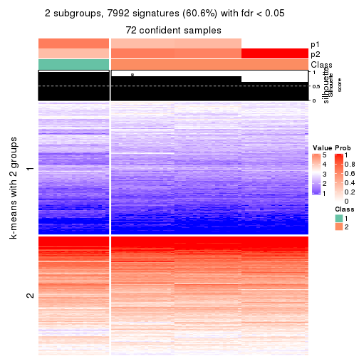
get_signatures(res, k = 3, scale_rows = FALSE)
get_signatures(res, k = 4, scale_rows = FALSE)

get_signatures(res, k = 5, scale_rows = FALSE)
get_signatures(res, k = 6, scale_rows = FALSE)
Compare the overlap of signatures from different k:
compare_signatures(res)
get_signature() returns a data frame invisibly. TO get the list of signatures, the function
call should be assigned to a variable explicitly. In following code, if plot argument is set
to FALSE, no heatmap is plotted while only the differential analysis is performed.
# code only for demonstration
tb = get_signature(res, k = ..., plot = FALSE)
An example of the output of tb is:
#> which_row fdr mean_1 mean_2 scaled_mean_1 scaled_mean_2 km
#> 1 38 0.042760348 8.373488 9.131774 -0.5533452 0.5164555 1
#> 2 40 0.018707592 7.106213 8.469186 -0.6173731 0.5762149 1
#> 3 55 0.019134737 10.221463 11.207825 -0.6159697 0.5749050 1
#> 4 59 0.006059896 5.921854 7.869574 -0.6899429 0.6439467 1
#> 5 60 0.018055526 8.928898 10.211722 -0.6204761 0.5791110 1
#> 6 98 0.009384629 15.714769 14.887706 0.6635654 -0.6193277 2
...
The columns in tb are:
which_row: row indices corresponding to the input matrix.fdr: FDR for the differential test. mean_x: The mean value in group x.scaled_mean_x: The mean value in group x after rows are scaled.km: Row groups if k-means clustering is applied to rows.UMAP plot which shows how samples are separated.
dimension_reduction(res, k = 2, method = "UMAP")
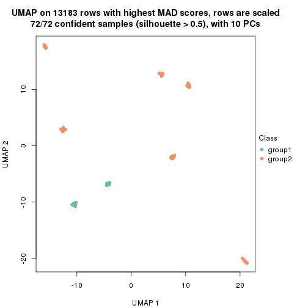
dimension_reduction(res, k = 3, method = "UMAP")

dimension_reduction(res, k = 4, method = "UMAP")

dimension_reduction(res, k = 5, method = "UMAP")

dimension_reduction(res, k = 6, method = "UMAP")

Following heatmap shows how subgroups are split when increasing k:
collect_classes(res)
If matrix rows can be associated to genes, consider to use GO_Enrichment(res,
...) to perform function enrichment for the signature genes.
The object with results only for a single top-value method and a single partition method can be extracted as:
res = res_list["MAD", "NMF"]
# you can also extract it by
# res = res_list["MAD:NMF"]
A summary of res and all the functions that can be applied to it:
res
#> A 'ConsensusPartition' object with k = 2, 3, 4, 5, 6.
#> On a matrix with 13183 rows and 72 columns.
#> Top rows (1000, 2000, 3000, 4000, 5000) are extracted by 'MAD' method.
#> Subgroups are detected by 'NMF' method.
#> Performed in total 1250 partitions by row resampling.
#> Best k for subgroups seems to be 4.
#>
#> Following methods can be applied to this 'ConsensusPartition' object:
#> [1] "cola_report" "collect_classes" "collect_plots"
#> [4] "collect_stats" "colnames" "compare_signatures"
#> [7] "consensus_heatmap" "dimension_reduction" "functional_enrichment"
#> [10] "get_anno_col" "get_anno" "get_classes"
#> [13] "get_consensus" "get_matrix" "get_membership"
#> [16] "get_param" "get_signatures" "get_stats"
#> [19] "is_best_k" "is_stable_k" "membership_heatmap"
#> [22] "ncol" "nrow" "plot_ecdf"
#> [25] "rownames" "select_partition_number" "show"
#> [28] "suggest_best_k" "test_to_known_factors"
collect_plots() function collects all the plots made from res for all k (number of partitions)
into one single page to provide an easy and fast comparison between different k.
collect_plots(res)
The plots are:
k and the heatmap of
predicted classes for each k.k.k.k.All the plots in panels can be made by individual functions and they are plotted later in this section.
select_partition_number() produces several plots showing different
statistics for choosing “optimized” k. There are following statistics:
k;k, the area increased is defined as \(A_k - A_{k-1}\).The detailed explanations of these statistics can be found in the cola vignette.
Generally speaking, lower PAC score, higher mean silhouette score or higher
concordance corresponds to better partition. Rand index and Jaccard index
measure how similar the current partition is compared to partition with k-1.
If they are too similar, we won't accept k is better than k-1.
select_partition_number(res)
The numeric values for all these statistics can be obtained by get_stats().
get_stats(res)
#> k 1-PAC mean_silhouette concordance area_increased Rand Jaccard
#> 2 2 0.65 0.813 0.900 0.47094 0.493 0.493
#> 3 3 1.00 0.992 0.992 0.36303 0.841 0.686
#> 4 4 1.00 1.000 0.999 0.18393 0.880 0.667
#> 5 5 1.00 0.983 0.992 0.00710 0.993 0.972
#> 6 6 1.00 0.966 0.986 0.00758 1.000 1.000
suggest_best_k() suggests the best \(k\) based on these statistics. The rules are as follows:
NA.suggest_best_k(res)
#> [1] 4
#> attr(,"optional")
#> [1] 3
There is also optional best \(k\) = 3 that is worth to check.
Following shows the table of the partitions (You need to click the show/hide
code output link to see it). The membership matrix (columns with name p*)
is inferred by
clue::cl_consensus()
function with the SE method. Basically the value in the membership matrix
represents the probability to belong to a certain group. The finall class
label for an item is determined with the group with highest probability it
belongs to.
In get_classes() function, the entropy is calculated from the membership
matrix and the silhouette score is calculated from the consensus matrix.
cbind(get_classes(res, k = 2), get_membership(res, k = 2))
#> class entropy silhouette p1 p2
#> SRR942117 1 0.9833 0.5097 0.576 0.424
#> SRR942118 1 0.9977 0.3973 0.528 0.472
#> SRR942119 2 1.0000 -0.3378 0.496 0.504
#> SRR942120 1 0.9635 0.5720 0.612 0.388
#> SRR942121 1 0.9954 0.4296 0.540 0.460
#> SRR942122 1 0.9866 0.4940 0.568 0.432
#> SRR942123 1 0.9909 0.4679 0.556 0.444
#> SRR942124 1 0.9881 0.4861 0.564 0.436
#> SRR942125 2 0.9795 -0.0405 0.416 0.584
#> SRR942126 1 0.8207 0.7212 0.744 0.256
#> SRR942127 1 0.8955 0.6734 0.688 0.312
#> SRR942128 1 0.8499 0.7091 0.724 0.276
#> SRR942129 1 0.8499 0.7093 0.724 0.276
#> SRR942130 1 0.8555 0.7058 0.720 0.280
#> SRR942131 1 0.8081 0.7255 0.752 0.248
#> SRR942132 1 0.9427 0.6136 0.640 0.360
#> SRR942133 1 0.8555 0.7063 0.720 0.280
#> SRR942134 1 0.8499 0.7094 0.724 0.276
#> SRR942144 2 0.0000 0.9670 0.000 1.000
#> SRR942145 2 0.0000 0.9670 0.000 1.000
#> SRR942146 2 0.0000 0.9670 0.000 1.000
#> SRR942147 2 0.0000 0.9670 0.000 1.000
#> SRR942148 2 0.0000 0.9670 0.000 1.000
#> SRR942149 2 0.0000 0.9670 0.000 1.000
#> SRR942150 2 0.0000 0.9670 0.000 1.000
#> SRR942151 2 0.0000 0.9670 0.000 1.000
#> SRR942152 2 0.0000 0.9670 0.000 1.000
#> SRR942135 2 0.0000 0.9670 0.000 1.000
#> SRR942136 2 0.0000 0.9670 0.000 1.000
#> SRR942137 2 0.0000 0.9670 0.000 1.000
#> SRR942138 2 0.0000 0.9670 0.000 1.000
#> SRR942139 2 0.0000 0.9670 0.000 1.000
#> SRR942140 2 0.0000 0.9670 0.000 1.000
#> SRR942141 2 0.0000 0.9670 0.000 1.000
#> SRR942142 2 0.0000 0.9670 0.000 1.000
#> SRR942143 2 0.0000 0.9670 0.000 1.000
#> SRR942153 2 0.0000 0.9670 0.000 1.000
#> SRR942154 2 0.0000 0.9670 0.000 1.000
#> SRR942155 2 0.0000 0.9670 0.000 1.000
#> SRR942156 2 0.0000 0.9670 0.000 1.000
#> SRR942157 2 0.0000 0.9670 0.000 1.000
#> SRR942158 2 0.0000 0.9670 0.000 1.000
#> SRR942159 2 0.0000 0.9670 0.000 1.000
#> SRR942160 2 0.0000 0.9670 0.000 1.000
#> SRR942161 2 0.0000 0.9670 0.000 1.000
#> SRR942162 2 0.0000 0.9670 0.000 1.000
#> SRR942163 2 0.0000 0.9670 0.000 1.000
#> SRR942164 2 0.0000 0.9670 0.000 1.000
#> SRR942166 2 0.0000 0.9670 0.000 1.000
#> SRR942167 2 0.0000 0.9670 0.000 1.000
#> SRR942168 2 0.0000 0.9670 0.000 1.000
#> SRR942169 2 0.0000 0.9670 0.000 1.000
#> SRR942170 2 0.0000 0.9670 0.000 1.000
#> SRR942171 1 0.1184 0.8124 0.984 0.016
#> SRR942172 1 0.1184 0.8124 0.984 0.016
#> SRR942173 1 0.1184 0.8124 0.984 0.016
#> SRR942174 1 0.1184 0.8124 0.984 0.016
#> SRR942175 1 0.1184 0.8124 0.984 0.016
#> SRR942176 1 0.0938 0.8115 0.988 0.012
#> SRR942177 1 0.0938 0.8115 0.988 0.012
#> SRR942178 1 0.0938 0.8115 0.988 0.012
#> SRR942179 1 0.0938 0.8115 0.988 0.012
#> SRR942180 1 0.1184 0.8124 0.984 0.016
#> SRR942181 1 0.1184 0.8124 0.984 0.016
#> SRR942182 1 0.1184 0.8124 0.984 0.016
#> SRR942183 1 0.1184 0.8124 0.984 0.016
#> SRR942184 1 0.1184 0.8124 0.984 0.016
#> SRR942185 1 0.1184 0.8124 0.984 0.016
#> SRR942186 1 0.0938 0.8115 0.988 0.012
#> SRR942187 1 0.1184 0.8124 0.984 0.016
#> SRR942188 1 0.1184 0.8124 0.984 0.016
#> SRR942189 1 0.0938 0.8115 0.988 0.012
cbind(get_classes(res, k = 3), get_membership(res, k = 3))
#> class entropy silhouette p1 p2 p3
#> SRR942117 2 0.0424 1.000 0.008 0.992 0.000
#> SRR942118 2 0.0424 1.000 0.008 0.992 0.000
#> SRR942119 2 0.0424 1.000 0.008 0.992 0.000
#> SRR942120 2 0.0424 1.000 0.008 0.992 0.000
#> SRR942121 2 0.0424 1.000 0.008 0.992 0.000
#> SRR942122 2 0.0424 1.000 0.008 0.992 0.000
#> SRR942123 2 0.0424 1.000 0.008 0.992 0.000
#> SRR942124 2 0.0424 1.000 0.008 0.992 0.000
#> SRR942125 2 0.0424 1.000 0.008 0.992 0.000
#> SRR942126 2 0.0424 1.000 0.008 0.992 0.000
#> SRR942127 2 0.0424 1.000 0.008 0.992 0.000
#> SRR942128 2 0.0424 1.000 0.008 0.992 0.000
#> SRR942129 2 0.0424 1.000 0.008 0.992 0.000
#> SRR942130 2 0.0424 1.000 0.008 0.992 0.000
#> SRR942131 2 0.0424 1.000 0.008 0.992 0.000
#> SRR942132 2 0.0424 1.000 0.008 0.992 0.000
#> SRR942133 2 0.0424 1.000 0.008 0.992 0.000
#> SRR942134 2 0.0424 1.000 0.008 0.992 0.000
#> SRR942144 3 0.1031 0.976 0.000 0.024 0.976
#> SRR942145 3 0.1529 0.966 0.000 0.040 0.960
#> SRR942146 3 0.1163 0.974 0.000 0.028 0.972
#> SRR942147 3 0.1411 0.969 0.000 0.036 0.964
#> SRR942148 3 0.1163 0.974 0.000 0.028 0.972
#> SRR942149 3 0.1411 0.969 0.000 0.036 0.964
#> SRR942150 3 0.1529 0.966 0.000 0.040 0.960
#> SRR942151 3 0.1643 0.963 0.000 0.044 0.956
#> SRR942152 3 0.1643 0.963 0.000 0.044 0.956
#> SRR942135 3 0.0000 0.987 0.000 0.000 1.000
#> SRR942136 3 0.0000 0.987 0.000 0.000 1.000
#> SRR942137 3 0.0000 0.987 0.000 0.000 1.000
#> SRR942138 3 0.0000 0.987 0.000 0.000 1.000
#> SRR942139 3 0.0000 0.987 0.000 0.000 1.000
#> SRR942140 3 0.0000 0.987 0.000 0.000 1.000
#> SRR942141 3 0.0000 0.987 0.000 0.000 1.000
#> SRR942142 3 0.0000 0.987 0.000 0.000 1.000
#> SRR942143 3 0.0000 0.987 0.000 0.000 1.000
#> SRR942153 3 0.0424 0.988 0.000 0.008 0.992
#> SRR942154 3 0.0424 0.988 0.000 0.008 0.992
#> SRR942155 3 0.0424 0.988 0.000 0.008 0.992
#> SRR942156 3 0.0424 0.988 0.000 0.008 0.992
#> SRR942157 3 0.0424 0.988 0.000 0.008 0.992
#> SRR942158 3 0.0424 0.988 0.000 0.008 0.992
#> SRR942159 3 0.0424 0.988 0.000 0.008 0.992
#> SRR942160 3 0.0424 0.988 0.000 0.008 0.992
#> SRR942161 3 0.0424 0.988 0.000 0.008 0.992
#> SRR942162 3 0.0424 0.988 0.000 0.008 0.992
#> SRR942163 3 0.0424 0.988 0.000 0.008 0.992
#> SRR942164 3 0.0424 0.988 0.000 0.008 0.992
#> SRR942166 3 0.0424 0.988 0.000 0.008 0.992
#> SRR942167 3 0.0424 0.988 0.000 0.008 0.992
#> SRR942168 3 0.0424 0.988 0.000 0.008 0.992
#> SRR942169 3 0.0424 0.988 0.000 0.008 0.992
#> SRR942170 3 0.0424 0.988 0.000 0.008 0.992
#> SRR942171 1 0.0000 1.000 1.000 0.000 0.000
#> SRR942172 1 0.0000 1.000 1.000 0.000 0.000
#> SRR942173 1 0.0000 1.000 1.000 0.000 0.000
#> SRR942174 1 0.0000 1.000 1.000 0.000 0.000
#> SRR942175 1 0.0000 1.000 1.000 0.000 0.000
#> SRR942176 1 0.0000 1.000 1.000 0.000 0.000
#> SRR942177 1 0.0000 1.000 1.000 0.000 0.000
#> SRR942178 1 0.0000 1.000 1.000 0.000 0.000
#> SRR942179 1 0.0000 1.000 1.000 0.000 0.000
#> SRR942180 1 0.0000 1.000 1.000 0.000 0.000
#> SRR942181 1 0.0000 1.000 1.000 0.000 0.000
#> SRR942182 1 0.0000 1.000 1.000 0.000 0.000
#> SRR942183 1 0.0000 1.000 1.000 0.000 0.000
#> SRR942184 1 0.0000 1.000 1.000 0.000 0.000
#> SRR942185 1 0.0000 1.000 1.000 0.000 0.000
#> SRR942186 1 0.0000 1.000 1.000 0.000 0.000
#> SRR942187 1 0.0000 1.000 1.000 0.000 0.000
#> SRR942188 1 0.0000 1.000 1.000 0.000 0.000
#> SRR942189 1 0.0000 1.000 1.000 0.000 0.000
cbind(get_classes(res, k = 4), get_membership(res, k = 4))
#> class entropy silhouette p1 p2 p3 p4
#> SRR942117 2 0.0000 1.000 0 1 0.000 0.000
#> SRR942118 2 0.0000 1.000 0 1 0.000 0.000
#> SRR942119 2 0.0000 1.000 0 1 0.000 0.000
#> SRR942120 2 0.0000 1.000 0 1 0.000 0.000
#> SRR942121 2 0.0000 1.000 0 1 0.000 0.000
#> SRR942122 2 0.0000 1.000 0 1 0.000 0.000
#> SRR942123 2 0.0000 1.000 0 1 0.000 0.000
#> SRR942124 2 0.0000 1.000 0 1 0.000 0.000
#> SRR942125 2 0.0000 1.000 0 1 0.000 0.000
#> SRR942126 2 0.0000 1.000 0 1 0.000 0.000
#> SRR942127 2 0.0000 1.000 0 1 0.000 0.000
#> SRR942128 2 0.0000 1.000 0 1 0.000 0.000
#> SRR942129 2 0.0000 1.000 0 1 0.000 0.000
#> SRR942130 2 0.0000 1.000 0 1 0.000 0.000
#> SRR942131 2 0.0000 1.000 0 1 0.000 0.000
#> SRR942132 2 0.0000 1.000 0 1 0.000 0.000
#> SRR942133 2 0.0000 1.000 0 1 0.000 0.000
#> SRR942134 2 0.0000 1.000 0 1 0.000 0.000
#> SRR942144 4 0.0000 1.000 0 0 0.000 1.000
#> SRR942145 4 0.0000 1.000 0 0 0.000 1.000
#> SRR942146 4 0.0000 1.000 0 0 0.000 1.000
#> SRR942147 4 0.0000 1.000 0 0 0.000 1.000
#> SRR942148 4 0.0000 1.000 0 0 0.000 1.000
#> SRR942149 4 0.0000 1.000 0 0 0.000 1.000
#> SRR942150 4 0.0000 1.000 0 0 0.000 1.000
#> SRR942151 4 0.0000 1.000 0 0 0.000 1.000
#> SRR942152 4 0.0000 1.000 0 0 0.000 1.000
#> SRR942135 4 0.0000 1.000 0 0 0.000 1.000
#> SRR942136 4 0.0000 1.000 0 0 0.000 1.000
#> SRR942137 4 0.0000 1.000 0 0 0.000 1.000
#> SRR942138 4 0.0000 1.000 0 0 0.000 1.000
#> SRR942139 4 0.0000 1.000 0 0 0.000 1.000
#> SRR942140 4 0.0000 1.000 0 0 0.000 1.000
#> SRR942141 4 0.0000 1.000 0 0 0.000 1.000
#> SRR942142 4 0.0000 1.000 0 0 0.000 1.000
#> SRR942143 4 0.0000 1.000 0 0 0.000 1.000
#> SRR942153 3 0.0188 0.998 0 0 0.996 0.004
#> SRR942154 3 0.0188 0.998 0 0 0.996 0.004
#> SRR942155 3 0.0336 0.997 0 0 0.992 0.008
#> SRR942156 3 0.0188 0.998 0 0 0.996 0.004
#> SRR942157 3 0.0336 0.997 0 0 0.992 0.008
#> SRR942158 3 0.0336 0.997 0 0 0.992 0.008
#> SRR942159 3 0.0336 0.997 0 0 0.992 0.008
#> SRR942160 3 0.0188 0.998 0 0 0.996 0.004
#> SRR942161 3 0.0336 0.997 0 0 0.992 0.008
#> SRR942162 3 0.0188 0.998 0 0 0.996 0.004
#> SRR942163 3 0.0188 0.998 0 0 0.996 0.004
#> SRR942164 3 0.0188 0.998 0 0 0.996 0.004
#> SRR942166 3 0.0188 0.998 0 0 0.996 0.004
#> SRR942167 3 0.0188 0.998 0 0 0.996 0.004
#> SRR942168 3 0.0188 0.998 0 0 0.996 0.004
#> SRR942169 3 0.0188 0.998 0 0 0.996 0.004
#> SRR942170 3 0.0336 0.997 0 0 0.992 0.008
#> SRR942171 1 0.0000 1.000 1 0 0.000 0.000
#> SRR942172 1 0.0000 1.000 1 0 0.000 0.000
#> SRR942173 1 0.0000 1.000 1 0 0.000 0.000
#> SRR942174 1 0.0000 1.000 1 0 0.000 0.000
#> SRR942175 1 0.0000 1.000 1 0 0.000 0.000
#> SRR942176 1 0.0000 1.000 1 0 0.000 0.000
#> SRR942177 1 0.0000 1.000 1 0 0.000 0.000
#> SRR942178 1 0.0000 1.000 1 0 0.000 0.000
#> SRR942179 1 0.0000 1.000 1 0 0.000 0.000
#> SRR942180 1 0.0000 1.000 1 0 0.000 0.000
#> SRR942181 1 0.0000 1.000 1 0 0.000 0.000
#> SRR942182 1 0.0000 1.000 1 0 0.000 0.000
#> SRR942183 1 0.0000 1.000 1 0 0.000 0.000
#> SRR942184 1 0.0000 1.000 1 0 0.000 0.000
#> SRR942185 1 0.0000 1.000 1 0 0.000 0.000
#> SRR942186 1 0.0000 1.000 1 0 0.000 0.000
#> SRR942187 1 0.0000 1.000 1 0 0.000 0.000
#> SRR942188 1 0.0000 1.000 1 0 0.000 0.000
#> SRR942189 1 0.0000 1.000 1 0 0.000 0.000
cbind(get_classes(res, k = 5), get_membership(res, k = 5))
#> class entropy silhouette p1 p2 p3 p4 p5
#> SRR942117 2 0.0000 0.998 0.000 1.000 0.000 0.00 0.000
#> SRR942118 2 0.0000 0.998 0.000 1.000 0.000 0.00 0.000
#> SRR942119 2 0.0000 0.998 0.000 1.000 0.000 0.00 0.000
#> SRR942120 2 0.0000 0.998 0.000 1.000 0.000 0.00 0.000
#> SRR942121 2 0.0000 0.998 0.000 1.000 0.000 0.00 0.000
#> SRR942122 2 0.0000 0.998 0.000 1.000 0.000 0.00 0.000
#> SRR942123 2 0.0000 0.998 0.000 1.000 0.000 0.00 0.000
#> SRR942124 2 0.0000 0.998 0.000 1.000 0.000 0.00 0.000
#> SRR942125 2 0.1121 0.957 0.000 0.956 0.000 0.00 0.044
#> SRR942126 2 0.0000 0.998 0.000 1.000 0.000 0.00 0.000
#> SRR942127 2 0.0000 0.998 0.000 1.000 0.000 0.00 0.000
#> SRR942128 2 0.0000 0.998 0.000 1.000 0.000 0.00 0.000
#> SRR942129 2 0.0000 0.998 0.000 1.000 0.000 0.00 0.000
#> SRR942130 2 0.0000 0.998 0.000 1.000 0.000 0.00 0.000
#> SRR942131 2 0.0000 0.998 0.000 1.000 0.000 0.00 0.000
#> SRR942132 2 0.0000 0.998 0.000 1.000 0.000 0.00 0.000
#> SRR942133 2 0.0000 0.998 0.000 1.000 0.000 0.00 0.000
#> SRR942134 2 0.0000 0.998 0.000 1.000 0.000 0.00 0.000
#> SRR942144 4 0.0000 1.000 0.000 0.000 0.000 1.00 0.000
#> SRR942145 4 0.0000 1.000 0.000 0.000 0.000 1.00 0.000
#> SRR942146 4 0.0000 1.000 0.000 0.000 0.000 1.00 0.000
#> SRR942147 4 0.0000 1.000 0.000 0.000 0.000 1.00 0.000
#> SRR942148 4 0.0000 1.000 0.000 0.000 0.000 1.00 0.000
#> SRR942149 4 0.0000 1.000 0.000 0.000 0.000 1.00 0.000
#> SRR942150 4 0.0000 1.000 0.000 0.000 0.000 1.00 0.000
#> SRR942151 4 0.0000 1.000 0.000 0.000 0.000 1.00 0.000
#> SRR942152 4 0.0000 1.000 0.000 0.000 0.000 1.00 0.000
#> SRR942135 4 0.0000 1.000 0.000 0.000 0.000 1.00 0.000
#> SRR942136 4 0.0000 1.000 0.000 0.000 0.000 1.00 0.000
#> SRR942137 4 0.0000 1.000 0.000 0.000 0.000 1.00 0.000
#> SRR942138 4 0.0000 1.000 0.000 0.000 0.000 1.00 0.000
#> SRR942139 4 0.0000 1.000 0.000 0.000 0.000 1.00 0.000
#> SRR942140 4 0.0000 1.000 0.000 0.000 0.000 1.00 0.000
#> SRR942141 4 0.0000 1.000 0.000 0.000 0.000 1.00 0.000
#> SRR942142 4 0.0000 1.000 0.000 0.000 0.000 1.00 0.000
#> SRR942143 5 0.4972 0.000 0.004 0.016 0.012 0.34 0.628
#> SRR942153 3 0.0000 0.996 0.000 0.000 1.000 0.00 0.000
#> SRR942154 3 0.0000 0.996 0.000 0.000 1.000 0.00 0.000
#> SRR942155 3 0.0000 0.996 0.000 0.000 1.000 0.00 0.000
#> SRR942156 3 0.0000 0.996 0.000 0.000 1.000 0.00 0.000
#> SRR942157 3 0.0000 0.996 0.000 0.000 1.000 0.00 0.000
#> SRR942158 3 0.0000 0.996 0.000 0.000 1.000 0.00 0.000
#> SRR942159 3 0.0000 0.996 0.000 0.000 1.000 0.00 0.000
#> SRR942160 3 0.0000 0.996 0.000 0.000 1.000 0.00 0.000
#> SRR942161 3 0.0000 0.996 0.000 0.000 1.000 0.00 0.000
#> SRR942162 3 0.0290 0.995 0.000 0.000 0.992 0.00 0.008
#> SRR942163 3 0.0290 0.995 0.000 0.000 0.992 0.00 0.008
#> SRR942164 3 0.0404 0.993 0.000 0.000 0.988 0.00 0.012
#> SRR942166 3 0.0290 0.995 0.000 0.000 0.992 0.00 0.008
#> SRR942167 3 0.0290 0.995 0.000 0.000 0.992 0.00 0.008
#> SRR942168 3 0.0404 0.993 0.000 0.000 0.988 0.00 0.012
#> SRR942169 3 0.0290 0.995 0.000 0.000 0.992 0.00 0.008
#> SRR942170 3 0.0290 0.995 0.000 0.000 0.992 0.00 0.008
#> SRR942171 1 0.0162 0.996 0.996 0.000 0.000 0.00 0.004
#> SRR942172 1 0.0162 0.996 0.996 0.000 0.000 0.00 0.004
#> SRR942173 1 0.0162 0.996 0.996 0.000 0.000 0.00 0.004
#> SRR942174 1 0.0162 0.996 0.996 0.000 0.000 0.00 0.004
#> SRR942175 1 0.0162 0.996 0.996 0.000 0.000 0.00 0.004
#> SRR942176 1 0.0000 0.997 1.000 0.000 0.000 0.00 0.000
#> SRR942177 1 0.0000 0.997 1.000 0.000 0.000 0.00 0.000
#> SRR942178 1 0.0000 0.997 1.000 0.000 0.000 0.00 0.000
#> SRR942179 1 0.0162 0.996 0.996 0.000 0.000 0.00 0.004
#> SRR942180 1 0.0162 0.996 0.996 0.000 0.000 0.00 0.004
#> SRR942181 1 0.0162 0.997 0.996 0.000 0.000 0.00 0.004
#> SRR942182 1 0.0162 0.997 0.996 0.000 0.000 0.00 0.004
#> SRR942183 1 0.0162 0.997 0.996 0.000 0.000 0.00 0.004
#> SRR942184 1 0.0162 0.997 0.996 0.000 0.000 0.00 0.004
#> SRR942185 1 0.0162 0.997 0.996 0.000 0.000 0.00 0.004
#> SRR942186 1 0.0162 0.997 0.996 0.000 0.000 0.00 0.004
#> SRR942187 1 0.0162 0.997 0.996 0.000 0.000 0.00 0.004
#> SRR942188 1 0.0162 0.997 0.996 0.000 0.000 0.00 0.004
#> SRR942189 1 0.0162 0.997 0.996 0.000 0.000 0.00 0.004
cbind(get_classes(res, k = 6), get_membership(res, k = 6))
#> class entropy silhouette p1 p2 p3 p4 p5 p6
#> SRR942117 2 0.0260 0.979 0.000 0.992 0.000 0.000 0.000 0.008
#> SRR942118 2 0.0260 0.979 0.000 0.992 0.000 0.000 0.000 0.008
#> SRR942119 2 0.0260 0.979 0.000 0.992 0.000 0.000 0.000 0.008
#> SRR942120 2 0.0260 0.979 0.000 0.992 0.000 0.000 0.000 0.008
#> SRR942121 2 0.0146 0.979 0.000 0.996 0.000 0.000 0.000 0.004
#> SRR942122 2 0.0260 0.979 0.000 0.992 0.000 0.000 0.000 0.008
#> SRR942123 2 0.0260 0.979 0.000 0.992 0.000 0.000 0.000 0.008
#> SRR942124 2 0.0260 0.979 0.000 0.992 0.000 0.000 0.000 0.008
#> SRR942125 2 0.3508 0.622 0.000 0.704 0.000 0.000 0.004 0.292
#> SRR942126 2 0.0000 0.980 0.000 1.000 0.000 0.000 0.000 0.000
#> SRR942127 2 0.0000 0.980 0.000 1.000 0.000 0.000 0.000 0.000
#> SRR942128 2 0.0000 0.980 0.000 1.000 0.000 0.000 0.000 0.000
#> SRR942129 2 0.0000 0.980 0.000 1.000 0.000 0.000 0.000 0.000
#> SRR942130 2 0.0000 0.980 0.000 1.000 0.000 0.000 0.000 0.000
#> SRR942131 2 0.0000 0.980 0.000 1.000 0.000 0.000 0.000 0.000
#> SRR942132 2 0.0000 0.980 0.000 1.000 0.000 0.000 0.000 0.000
#> SRR942133 2 0.0000 0.980 0.000 1.000 0.000 0.000 0.000 0.000
#> SRR942134 2 0.0000 0.980 0.000 1.000 0.000 0.000 0.000 0.000
#> SRR942144 4 0.0146 0.989 0.000 0.000 0.000 0.996 0.000 0.004
#> SRR942145 4 0.0146 0.989 0.000 0.000 0.000 0.996 0.000 0.004
#> SRR942146 4 0.0146 0.989 0.000 0.000 0.000 0.996 0.000 0.004
#> SRR942147 4 0.0146 0.989 0.000 0.000 0.000 0.996 0.000 0.004
#> SRR942148 4 0.0146 0.989 0.000 0.000 0.000 0.996 0.000 0.004
#> SRR942149 4 0.0000 0.989 0.000 0.000 0.000 1.000 0.000 0.000
#> SRR942150 4 0.0000 0.989 0.000 0.000 0.000 1.000 0.000 0.000
#> SRR942151 4 0.0146 0.989 0.000 0.000 0.000 0.996 0.000 0.004
#> SRR942152 4 0.0000 0.989 0.000 0.000 0.000 1.000 0.000 0.000
#> SRR942135 4 0.0458 0.988 0.000 0.000 0.000 0.984 0.000 0.016
#> SRR942136 4 0.0603 0.987 0.000 0.000 0.000 0.980 0.004 0.016
#> SRR942137 4 0.0458 0.988 0.000 0.000 0.000 0.984 0.000 0.016
#> SRR942138 4 0.0458 0.988 0.000 0.000 0.000 0.984 0.000 0.016
#> SRR942139 4 0.0458 0.988 0.000 0.000 0.000 0.984 0.000 0.016
#> SRR942140 4 0.0603 0.987 0.000 0.000 0.000 0.980 0.004 0.016
#> SRR942141 4 0.0458 0.988 0.000 0.000 0.000 0.984 0.000 0.016
#> SRR942142 4 0.0603 0.987 0.000 0.000 0.000 0.980 0.004 0.016
#> SRR942143 5 0.2044 0.000 0.004 0.004 0.008 0.076 0.908 0.000
#> SRR942153 3 0.0146 0.989 0.000 0.000 0.996 0.000 0.000 0.004
#> SRR942154 3 0.0146 0.989 0.000 0.000 0.996 0.000 0.000 0.004
#> SRR942155 3 0.0146 0.989 0.000 0.000 0.996 0.000 0.000 0.004
#> SRR942156 3 0.0146 0.989 0.000 0.000 0.996 0.000 0.000 0.004
#> SRR942157 3 0.0146 0.989 0.000 0.000 0.996 0.000 0.000 0.004
#> SRR942158 3 0.0146 0.989 0.000 0.000 0.996 0.000 0.000 0.004
#> SRR942159 3 0.0146 0.989 0.000 0.000 0.996 0.000 0.000 0.004
#> SRR942160 3 0.0146 0.989 0.000 0.000 0.996 0.000 0.000 0.004
#> SRR942161 3 0.0937 0.962 0.000 0.000 0.960 0.000 0.000 0.040
#> SRR942162 3 0.0363 0.989 0.000 0.000 0.988 0.000 0.000 0.012
#> SRR942163 3 0.0458 0.988 0.000 0.000 0.984 0.000 0.000 0.016
#> SRR942164 3 0.0363 0.988 0.000 0.000 0.988 0.000 0.000 0.012
#> SRR942166 3 0.0458 0.988 0.000 0.000 0.984 0.000 0.000 0.016
#> SRR942167 3 0.0458 0.988 0.000 0.000 0.984 0.000 0.000 0.016
#> SRR942168 3 0.0260 0.989 0.000 0.000 0.992 0.000 0.000 0.008
#> SRR942169 3 0.0458 0.988 0.000 0.000 0.984 0.000 0.000 0.016
#> SRR942170 3 0.0547 0.985 0.000 0.000 0.980 0.000 0.000 0.020
#> SRR942171 1 0.0146 0.987 0.996 0.000 0.000 0.000 0.000 0.004
#> SRR942172 1 0.0146 0.987 0.996 0.000 0.000 0.000 0.000 0.004
#> SRR942173 1 0.0000 0.988 1.000 0.000 0.000 0.000 0.000 0.000
#> SRR942174 1 0.0146 0.987 0.996 0.000 0.000 0.000 0.000 0.004
#> SRR942175 1 0.0260 0.985 0.992 0.000 0.000 0.000 0.000 0.008
#> SRR942176 1 0.0000 0.988 1.000 0.000 0.000 0.000 0.000 0.000
#> SRR942177 1 0.0000 0.988 1.000 0.000 0.000 0.000 0.000 0.000
#> SRR942178 1 0.0146 0.987 0.996 0.000 0.000 0.000 0.000 0.004
#> SRR942179 1 0.0146 0.987 0.996 0.000 0.000 0.000 0.000 0.004
#> SRR942180 1 0.0000 0.988 1.000 0.000 0.000 0.000 0.000 0.000
#> SRR942181 1 0.0458 0.987 0.984 0.000 0.000 0.000 0.000 0.016
#> SRR942182 1 0.0458 0.987 0.984 0.000 0.000 0.000 0.000 0.016
#> SRR942183 1 0.0547 0.985 0.980 0.000 0.000 0.000 0.000 0.020
#> SRR942184 1 0.0363 0.987 0.988 0.000 0.000 0.000 0.000 0.012
#> SRR942185 1 0.0692 0.983 0.976 0.000 0.000 0.000 0.004 0.020
#> SRR942186 1 0.0547 0.985 0.980 0.000 0.000 0.000 0.000 0.020
#> SRR942187 1 0.0547 0.985 0.980 0.000 0.000 0.000 0.000 0.020
#> SRR942188 1 0.0458 0.987 0.984 0.000 0.000 0.000 0.000 0.016
#> SRR942189 1 0.1531 0.942 0.928 0.000 0.000 0.000 0.004 0.068
Heatmaps for the consensus matrix. It visualizes the probability of two samples to be in a same group.
consensus_heatmap(res, k = 2)
consensus_heatmap(res, k = 3)
consensus_heatmap(res, k = 4)
consensus_heatmap(res, k = 5)
consensus_heatmap(res, k = 6)
Heatmaps for the membership of samples in all partitions to see how consistent they are:
membership_heatmap(res, k = 2)
membership_heatmap(res, k = 3)
membership_heatmap(res, k = 4)
membership_heatmap(res, k = 5)
membership_heatmap(res, k = 6)
As soon as we have had the classes for columns, we can look for signatures which are significantly different between classes which can be candidate marks for certain classes. Following are the heatmaps for signatures.
Signature heatmaps where rows are scaled:
get_signatures(res, k = 2)
get_signatures(res, k = 3)
get_signatures(res, k = 4)
get_signatures(res, k = 5)
get_signatures(res, k = 6)

Signature heatmaps where rows are not scaled:
get_signatures(res, k = 2, scale_rows = FALSE)
get_signatures(res, k = 3, scale_rows = FALSE)

get_signatures(res, k = 4, scale_rows = FALSE)
get_signatures(res, k = 5, scale_rows = FALSE)
get_signatures(res, k = 6, scale_rows = FALSE)
Compare the overlap of signatures from different k:
compare_signatures(res)
get_signature() returns a data frame invisibly. TO get the list of signatures, the function
call should be assigned to a variable explicitly. In following code, if plot argument is set
to FALSE, no heatmap is plotted while only the differential analysis is performed.
# code only for demonstration
tb = get_signature(res, k = ..., plot = FALSE)
An example of the output of tb is:
#> which_row fdr mean_1 mean_2 scaled_mean_1 scaled_mean_2 km
#> 1 38 0.042760348 8.373488 9.131774 -0.5533452 0.5164555 1
#> 2 40 0.018707592 7.106213 8.469186 -0.6173731 0.5762149 1
#> 3 55 0.019134737 10.221463 11.207825 -0.6159697 0.5749050 1
#> 4 59 0.006059896 5.921854 7.869574 -0.6899429 0.6439467 1
#> 5 60 0.018055526 8.928898 10.211722 -0.6204761 0.5791110 1
#> 6 98 0.009384629 15.714769 14.887706 0.6635654 -0.6193277 2
...
The columns in tb are:
which_row: row indices corresponding to the input matrix.fdr: FDR for the differential test. mean_x: The mean value in group x.scaled_mean_x: The mean value in group x after rows are scaled.km: Row groups if k-means clustering is applied to rows.UMAP plot which shows how samples are separated.
dimension_reduction(res, k = 2, method = "UMAP")
dimension_reduction(res, k = 3, method = "UMAP")
dimension_reduction(res, k = 4, method = "UMAP")

dimension_reduction(res, k = 5, method = "UMAP")

dimension_reduction(res, k = 6, method = "UMAP")

Following heatmap shows how subgroups are split when increasing k:
collect_classes(res)
If matrix rows can be associated to genes, consider to use GO_Enrichment(res,
...) to perform function enrichment for the signature genes.
The object with results only for a single top-value method and a single partition method can be extracted as:
res = res_list["ATC", "hclust"]
# you can also extract it by
# res = res_list["ATC:hclust"]
A summary of res and all the functions that can be applied to it:
res
#> A 'ConsensusPartition' object with k = 2, 3, 4, 5, 6.
#> On a matrix with 13183 rows and 72 columns.
#> Top rows (1000, 2000, 3000, 4000, 5000) are extracted by 'ATC' method.
#> Subgroups are detected by 'hclust' method.
#> Performed in total 1250 partitions by row resampling.
#> Best k for subgroups seems to be 4.
#>
#> Following methods can be applied to this 'ConsensusPartition' object:
#> [1] "cola_report" "collect_classes" "collect_plots"
#> [4] "collect_stats" "colnames" "compare_signatures"
#> [7] "consensus_heatmap" "dimension_reduction" "functional_enrichment"
#> [10] "get_anno_col" "get_anno" "get_classes"
#> [13] "get_consensus" "get_matrix" "get_membership"
#> [16] "get_param" "get_signatures" "get_stats"
#> [19] "is_best_k" "is_stable_k" "membership_heatmap"
#> [22] "ncol" "nrow" "plot_ecdf"
#> [25] "rownames" "select_partition_number" "show"
#> [28] "suggest_best_k" "test_to_known_factors"
collect_plots() function collects all the plots made from res for all k (number of partitions)
into one single page to provide an easy and fast comparison between different k.
collect_plots(res)
The plots are:
k and the heatmap of
predicted classes for each k.k.k.k.All the plots in panels can be made by individual functions and they are plotted later in this section.
select_partition_number() produces several plots showing different
statistics for choosing “optimized” k. There are following statistics:
k;k, the area increased is defined as \(A_k - A_{k-1}\).The detailed explanations of these statistics can be found in the cola vignette.
Generally speaking, lower PAC score, higher mean silhouette score or higher
concordance corresponds to better partition. Rand index and Jaccard index
measure how similar the current partition is compared to partition with k-1.
If they are too similar, we won't accept k is better than k-1.
select_partition_number(res)
The numeric values for all these statistics can be obtained by get_stats().
get_stats(res)
#> k 1-PAC mean_silhouette concordance area_increased Rand Jaccard
#> 2 2 1.000 1.000 1.000 0.36644 0.634 0.634
#> 3 3 0.739 0.960 0.966 0.71295 0.739 0.589
#> 4 4 1.000 1.000 1.000 0.21144 0.866 0.642
#> 5 5 1.000 0.986 1.000 0.00874 0.993 0.972
#> 6 6 1.000 0.972 1.000 0.00866 0.993 0.971
suggest_best_k() suggests the best \(k\) based on these statistics. The rules are as follows:
NA.suggest_best_k(res)
#> [1] 4
#> attr(,"optional")
#> [1] 2
There is also optional best \(k\) = 2 that is worth to check.
Following shows the table of the partitions (You need to click the show/hide
code output link to see it). The membership matrix (columns with name p*)
is inferred by
clue::cl_consensus()
function with the SE method. Basically the value in the membership matrix
represents the probability to belong to a certain group. The finall class
label for an item is determined with the group with highest probability it
belongs to.
In get_classes() function, the entropy is calculated from the membership
matrix and the silhouette score is calculated from the consensus matrix.
cbind(get_classes(res, k = 2), get_membership(res, k = 2))
#> class entropy silhouette p1 p2
#> SRR942117 1 0 1 1 0
#> SRR942118 1 0 1 1 0
#> SRR942119 1 0 1 1 0
#> SRR942120 1 0 1 1 0
#> SRR942121 1 0 1 1 0
#> SRR942122 1 0 1 1 0
#> SRR942123 1 0 1 1 0
#> SRR942124 1 0 1 1 0
#> SRR942125 1 0 1 1 0
#> SRR942126 1 0 1 1 0
#> SRR942127 1 0 1 1 0
#> SRR942128 1 0 1 1 0
#> SRR942129 1 0 1 1 0
#> SRR942130 1 0 1 1 0
#> SRR942131 1 0 1 1 0
#> SRR942132 1 0 1 1 0
#> SRR942133 1 0 1 1 0
#> SRR942134 1 0 1 1 0
#> SRR942144 1 0 1 1 0
#> SRR942145 1 0 1 1 0
#> SRR942146 1 0 1 1 0
#> SRR942147 1 0 1 1 0
#> SRR942148 1 0 1 1 0
#> SRR942149 1 0 1 1 0
#> SRR942150 1 0 1 1 0
#> SRR942151 1 0 1 1 0
#> SRR942152 1 0 1 1 0
#> SRR942135 1 0 1 1 0
#> SRR942136 1 0 1 1 0
#> SRR942137 1 0 1 1 0
#> SRR942138 1 0 1 1 0
#> SRR942139 1 0 1 1 0
#> SRR942140 1 0 1 1 0
#> SRR942141 1 0 1 1 0
#> SRR942142 1 0 1 1 0
#> SRR942143 1 0 1 1 0
#> SRR942153 2 0 1 0 1
#> SRR942154 2 0 1 0 1
#> SRR942155 2 0 1 0 1
#> SRR942156 2 0 1 0 1
#> SRR942157 2 0 1 0 1
#> SRR942158 2 0 1 0 1
#> SRR942159 2 0 1 0 1
#> SRR942160 2 0 1 0 1
#> SRR942161 2 0 1 0 1
#> SRR942162 2 0 1 0 1
#> SRR942163 2 0 1 0 1
#> SRR942164 2 0 1 0 1
#> SRR942166 2 0 1 0 1
#> SRR942167 2 0 1 0 1
#> SRR942168 2 0 1 0 1
#> SRR942169 2 0 1 0 1
#> SRR942170 2 0 1 0 1
#> SRR942171 1 0 1 1 0
#> SRR942172 1 0 1 1 0
#> SRR942173 1 0 1 1 0
#> SRR942174 1 0 1 1 0
#> SRR942175 1 0 1 1 0
#> SRR942176 1 0 1 1 0
#> SRR942177 1 0 1 1 0
#> SRR942178 1 0 1 1 0
#> SRR942179 1 0 1 1 0
#> SRR942180 1 0 1 1 0
#> SRR942181 1 0 1 1 0
#> SRR942182 1 0 1 1 0
#> SRR942183 1 0 1 1 0
#> SRR942184 1 0 1 1 0
#> SRR942185 1 0 1 1 0
#> SRR942186 1 0 1 1 0
#> SRR942187 1 0 1 1 0
#> SRR942188 1 0 1 1 0
#> SRR942189 1 0 1 1 0
cbind(get_classes(res, k = 3), get_membership(res, k = 3))
#> class entropy silhouette p1 p2 p3
#> SRR942117 1 0.362 0.917 0.864 0.136 0
#> SRR942118 1 0.362 0.917 0.864 0.136 0
#> SRR942119 1 0.362 0.917 0.864 0.136 0
#> SRR942120 1 0.362 0.917 0.864 0.136 0
#> SRR942121 1 0.362 0.917 0.864 0.136 0
#> SRR942122 1 0.362 0.917 0.864 0.136 0
#> SRR942123 1 0.362 0.917 0.864 0.136 0
#> SRR942124 1 0.362 0.917 0.864 0.136 0
#> SRR942125 1 0.362 0.917 0.864 0.136 0
#> SRR942126 1 0.362 0.917 0.864 0.136 0
#> SRR942127 1 0.362 0.917 0.864 0.136 0
#> SRR942128 1 0.362 0.917 0.864 0.136 0
#> SRR942129 1 0.362 0.917 0.864 0.136 0
#> SRR942130 1 0.362 0.917 0.864 0.136 0
#> SRR942131 1 0.362 0.917 0.864 0.136 0
#> SRR942132 1 0.362 0.917 0.864 0.136 0
#> SRR942133 1 0.362 0.917 0.864 0.136 0
#> SRR942134 1 0.362 0.917 0.864 0.136 0
#> SRR942144 2 0.000 1.000 0.000 1.000 0
#> SRR942145 2 0.000 1.000 0.000 1.000 0
#> SRR942146 2 0.000 1.000 0.000 1.000 0
#> SRR942147 2 0.000 1.000 0.000 1.000 0
#> SRR942148 2 0.000 1.000 0.000 1.000 0
#> SRR942149 2 0.000 1.000 0.000 1.000 0
#> SRR942150 2 0.000 1.000 0.000 1.000 0
#> SRR942151 2 0.000 1.000 0.000 1.000 0
#> SRR942152 2 0.000 1.000 0.000 1.000 0
#> SRR942135 2 0.000 1.000 0.000 1.000 0
#> SRR942136 2 0.000 1.000 0.000 1.000 0
#> SRR942137 2 0.000 1.000 0.000 1.000 0
#> SRR942138 2 0.000 1.000 0.000 1.000 0
#> SRR942139 2 0.000 1.000 0.000 1.000 0
#> SRR942140 2 0.000 1.000 0.000 1.000 0
#> SRR942141 2 0.000 1.000 0.000 1.000 0
#> SRR942142 2 0.000 1.000 0.000 1.000 0
#> SRR942143 2 0.000 1.000 0.000 1.000 0
#> SRR942153 3 0.000 1.000 0.000 0.000 1
#> SRR942154 3 0.000 1.000 0.000 0.000 1
#> SRR942155 3 0.000 1.000 0.000 0.000 1
#> SRR942156 3 0.000 1.000 0.000 0.000 1
#> SRR942157 3 0.000 1.000 0.000 0.000 1
#> SRR942158 3 0.000 1.000 0.000 0.000 1
#> SRR942159 3 0.000 1.000 0.000 0.000 1
#> SRR942160 3 0.000 1.000 0.000 0.000 1
#> SRR942161 3 0.000 1.000 0.000 0.000 1
#> SRR942162 3 0.000 1.000 0.000 0.000 1
#> SRR942163 3 0.000 1.000 0.000 0.000 1
#> SRR942164 3 0.000 1.000 0.000 0.000 1
#> SRR942166 3 0.000 1.000 0.000 0.000 1
#> SRR942167 3 0.000 1.000 0.000 0.000 1
#> SRR942168 3 0.000 1.000 0.000 0.000 1
#> SRR942169 3 0.000 1.000 0.000 0.000 1
#> SRR942170 3 0.000 1.000 0.000 0.000 1
#> SRR942171 1 0.000 0.926 1.000 0.000 0
#> SRR942172 1 0.000 0.926 1.000 0.000 0
#> SRR942173 1 0.000 0.926 1.000 0.000 0
#> SRR942174 1 0.000 0.926 1.000 0.000 0
#> SRR942175 1 0.000 0.926 1.000 0.000 0
#> SRR942176 1 0.000 0.926 1.000 0.000 0
#> SRR942177 1 0.000 0.926 1.000 0.000 0
#> SRR942178 1 0.000 0.926 1.000 0.000 0
#> SRR942179 1 0.000 0.926 1.000 0.000 0
#> SRR942180 1 0.000 0.926 1.000 0.000 0
#> SRR942181 1 0.000 0.926 1.000 0.000 0
#> SRR942182 1 0.000 0.926 1.000 0.000 0
#> SRR942183 1 0.000 0.926 1.000 0.000 0
#> SRR942184 1 0.000 0.926 1.000 0.000 0
#> SRR942185 1 0.000 0.926 1.000 0.000 0
#> SRR942186 1 0.000 0.926 1.000 0.000 0
#> SRR942187 1 0.000 0.926 1.000 0.000 0
#> SRR942188 1 0.000 0.926 1.000 0.000 0
#> SRR942189 1 0.000 0.926 1.000 0.000 0
cbind(get_classes(res, k = 4), get_membership(res, k = 4))
#> class entropy silhouette p1 p2 p3 p4
#> SRR942117 2 0 1 0 1 0 0
#> SRR942118 2 0 1 0 1 0 0
#> SRR942119 2 0 1 0 1 0 0
#> SRR942120 2 0 1 0 1 0 0
#> SRR942121 2 0 1 0 1 0 0
#> SRR942122 2 0 1 0 1 0 0
#> SRR942123 2 0 1 0 1 0 0
#> SRR942124 2 0 1 0 1 0 0
#> SRR942125 2 0 1 0 1 0 0
#> SRR942126 2 0 1 0 1 0 0
#> SRR942127 2 0 1 0 1 0 0
#> SRR942128 2 0 1 0 1 0 0
#> SRR942129 2 0 1 0 1 0 0
#> SRR942130 2 0 1 0 1 0 0
#> SRR942131 2 0 1 0 1 0 0
#> SRR942132 2 0 1 0 1 0 0
#> SRR942133 2 0 1 0 1 0 0
#> SRR942134 2 0 1 0 1 0 0
#> SRR942144 4 0 1 0 0 0 1
#> SRR942145 4 0 1 0 0 0 1
#> SRR942146 4 0 1 0 0 0 1
#> SRR942147 4 0 1 0 0 0 1
#> SRR942148 4 0 1 0 0 0 1
#> SRR942149 4 0 1 0 0 0 1
#> SRR942150 4 0 1 0 0 0 1
#> SRR942151 4 0 1 0 0 0 1
#> SRR942152 4 0 1 0 0 0 1
#> SRR942135 4 0 1 0 0 0 1
#> SRR942136 4 0 1 0 0 0 1
#> SRR942137 4 0 1 0 0 0 1
#> SRR942138 4 0 1 0 0 0 1
#> SRR942139 4 0 1 0 0 0 1
#> SRR942140 4 0 1 0 0 0 1
#> SRR942141 4 0 1 0 0 0 1
#> SRR942142 4 0 1 0 0 0 1
#> SRR942143 4 0 1 0 0 0 1
#> SRR942153 3 0 1 0 0 1 0
#> SRR942154 3 0 1 0 0 1 0
#> SRR942155 3 0 1 0 0 1 0
#> SRR942156 3 0 1 0 0 1 0
#> SRR942157 3 0 1 0 0 1 0
#> SRR942158 3 0 1 0 0 1 0
#> SRR942159 3 0 1 0 0 1 0
#> SRR942160 3 0 1 0 0 1 0
#> SRR942161 3 0 1 0 0 1 0
#> SRR942162 3 0 1 0 0 1 0
#> SRR942163 3 0 1 0 0 1 0
#> SRR942164 3 0 1 0 0 1 0
#> SRR942166 3 0 1 0 0 1 0
#> SRR942167 3 0 1 0 0 1 0
#> SRR942168 3 0 1 0 0 1 0
#> SRR942169 3 0 1 0 0 1 0
#> SRR942170 3 0 1 0 0 1 0
#> SRR942171 1 0 1 1 0 0 0
#> SRR942172 1 0 1 1 0 0 0
#> SRR942173 1 0 1 1 0 0 0
#> SRR942174 1 0 1 1 0 0 0
#> SRR942175 1 0 1 1 0 0 0
#> SRR942176 1 0 1 1 0 0 0
#> SRR942177 1 0 1 1 0 0 0
#> SRR942178 1 0 1 1 0 0 0
#> SRR942179 1 0 1 1 0 0 0
#> SRR942180 1 0 1 1 0 0 0
#> SRR942181 1 0 1 1 0 0 0
#> SRR942182 1 0 1 1 0 0 0
#> SRR942183 1 0 1 1 0 0 0
#> SRR942184 1 0 1 1 0 0 0
#> SRR942185 1 0 1 1 0 0 0
#> SRR942186 1 0 1 1 0 0 0
#> SRR942187 1 0 1 1 0 0 0
#> SRR942188 1 0 1 1 0 0 0
#> SRR942189 1 0 1 1 0 0 0
cbind(get_classes(res, k = 5), get_membership(res, k = 5))
#> class entropy silhouette p1 p2 p3 p4 p5
#> SRR942117 2 0 1 0 1 0 0 0
#> SRR942118 2 0 1 0 1 0 0 0
#> SRR942119 2 0 1 0 1 0 0 0
#> SRR942120 2 0 1 0 1 0 0 0
#> SRR942121 2 0 1 0 1 0 0 0
#> SRR942122 2 0 1 0 1 0 0 0
#> SRR942123 2 0 1 0 1 0 0 0
#> SRR942124 2 0 1 0 1 0 0 0
#> SRR942125 2 0 1 0 1 0 0 0
#> SRR942126 2 0 1 0 1 0 0 0
#> SRR942127 2 0 1 0 1 0 0 0
#> SRR942128 2 0 1 0 1 0 0 0
#> SRR942129 2 0 1 0 1 0 0 0
#> SRR942130 2 0 1 0 1 0 0 0
#> SRR942131 2 0 1 0 1 0 0 0
#> SRR942132 2 0 1 0 1 0 0 0
#> SRR942133 2 0 1 0 1 0 0 0
#> SRR942134 2 0 1 0 1 0 0 0
#> SRR942144 4 0 1 0 0 0 1 0
#> SRR942145 4 0 1 0 0 0 1 0
#> SRR942146 4 0 1 0 0 0 1 0
#> SRR942147 4 0 1 0 0 0 1 0
#> SRR942148 4 0 1 0 0 0 1 0
#> SRR942149 4 0 1 0 0 0 1 0
#> SRR942150 4 0 1 0 0 0 1 0
#> SRR942151 4 0 1 0 0 0 1 0
#> SRR942152 4 0 1 0 0 0 1 0
#> SRR942135 4 0 1 0 0 0 1 0
#> SRR942136 4 0 1 0 0 0 1 0
#> SRR942137 4 0 1 0 0 0 1 0
#> SRR942138 4 0 1 0 0 0 1 0
#> SRR942139 4 0 1 0 0 0 1 0
#> SRR942140 4 0 1 0 0 0 1 0
#> SRR942141 4 0 1 0 0 0 1 0
#> SRR942142 4 0 1 0 0 0 1 0
#> SRR942143 5 0 0 0 0 0 0 1
#> SRR942153 3 0 1 0 0 1 0 0
#> SRR942154 3 0 1 0 0 1 0 0
#> SRR942155 3 0 1 0 0 1 0 0
#> SRR942156 3 0 1 0 0 1 0 0
#> SRR942157 3 0 1 0 0 1 0 0
#> SRR942158 3 0 1 0 0 1 0 0
#> SRR942159 3 0 1 0 0 1 0 0
#> SRR942160 3 0 1 0 0 1 0 0
#> SRR942161 3 0 1 0 0 1 0 0
#> SRR942162 3 0 1 0 0 1 0 0
#> SRR942163 3 0 1 0 0 1 0 0
#> SRR942164 3 0 1 0 0 1 0 0
#> SRR942166 3 0 1 0 0 1 0 0
#> SRR942167 3 0 1 0 0 1 0 0
#> SRR942168 3 0 1 0 0 1 0 0
#> SRR942169 3 0 1 0 0 1 0 0
#> SRR942170 3 0 1 0 0 1 0 0
#> SRR942171 1 0 1 1 0 0 0 0
#> SRR942172 1 0 1 1 0 0 0 0
#> SRR942173 1 0 1 1 0 0 0 0
#> SRR942174 1 0 1 1 0 0 0 0
#> SRR942175 1 0 1 1 0 0 0 0
#> SRR942176 1 0 1 1 0 0 0 0
#> SRR942177 1 0 1 1 0 0 0 0
#> SRR942178 1 0 1 1 0 0 0 0
#> SRR942179 1 0 1 1 0 0 0 0
#> SRR942180 1 0 1 1 0 0 0 0
#> SRR942181 1 0 1 1 0 0 0 0
#> SRR942182 1 0 1 1 0 0 0 0
#> SRR942183 1 0 1 1 0 0 0 0
#> SRR942184 1 0 1 1 0 0 0 0
#> SRR942185 1 0 1 1 0 0 0 0
#> SRR942186 1 0 1 1 0 0 0 0
#> SRR942187 1 0 1 1 0 0 0 0
#> SRR942188 1 0 1 1 0 0 0 0
#> SRR942189 1 0 1 1 0 0 0 0
cbind(get_classes(res, k = 6), get_membership(res, k = 6))
#> class entropy silhouette p1 p2 p3 p4 p5 p6
#> SRR942117 2 0 1 0 1 0 0 0 0
#> SRR942118 2 0 1 0 1 0 0 0 0
#> SRR942119 2 0 1 0 1 0 0 0 0
#> SRR942120 2 0 1 0 1 0 0 0 0
#> SRR942121 2 0 1 0 1 0 0 0 0
#> SRR942122 2 0 1 0 1 0 0 0 0
#> SRR942123 2 0 1 0 1 0 0 0 0
#> SRR942124 2 0 1 0 1 0 0 0 0
#> SRR942125 6 0 0 0 0 0 0 0 1
#> SRR942126 2 0 1 0 1 0 0 0 0
#> SRR942127 2 0 1 0 1 0 0 0 0
#> SRR942128 2 0 1 0 1 0 0 0 0
#> SRR942129 2 0 1 0 1 0 0 0 0
#> SRR942130 2 0 1 0 1 0 0 0 0
#> SRR942131 2 0 1 0 1 0 0 0 0
#> SRR942132 2 0 1 0 1 0 0 0 0
#> SRR942133 2 0 1 0 1 0 0 0 0
#> SRR942134 2 0 1 0 1 0 0 0 0
#> SRR942144 4 0 1 0 0 0 1 0 0
#> SRR942145 4 0 1 0 0 0 1 0 0
#> SRR942146 4 0 1 0 0 0 1 0 0
#> SRR942147 4 0 1 0 0 0 1 0 0
#> SRR942148 4 0 1 0 0 0 1 0 0
#> SRR942149 4 0 1 0 0 0 1 0 0
#> SRR942150 4 0 1 0 0 0 1 0 0
#> SRR942151 4 0 1 0 0 0 1 0 0
#> SRR942152 4 0 1 0 0 0 1 0 0
#> SRR942135 4 0 1 0 0 0 1 0 0
#> SRR942136 4 0 1 0 0 0 1 0 0
#> SRR942137 4 0 1 0 0 0 1 0 0
#> SRR942138 4 0 1 0 0 0 1 0 0
#> SRR942139 4 0 1 0 0 0 1 0 0
#> SRR942140 4 0 1 0 0 0 1 0 0
#> SRR942141 4 0 1 0 0 0 1 0 0
#> SRR942142 4 0 1 0 0 0 1 0 0
#> SRR942143 5 0 0 0 0 0 0 1 0
#> SRR942153 3 0 1 0 0 1 0 0 0
#> SRR942154 3 0 1 0 0 1 0 0 0
#> SRR942155 3 0 1 0 0 1 0 0 0
#> SRR942156 3 0 1 0 0 1 0 0 0
#> SRR942157 3 0 1 0 0 1 0 0 0
#> SRR942158 3 0 1 0 0 1 0 0 0
#> SRR942159 3 0 1 0 0 1 0 0 0
#> SRR942160 3 0 1 0 0 1 0 0 0
#> SRR942161 3 0 1 0 0 1 0 0 0
#> SRR942162 3 0 1 0 0 1 0 0 0
#> SRR942163 3 0 1 0 0 1 0 0 0
#> SRR942164 3 0 1 0 0 1 0 0 0
#> SRR942166 3 0 1 0 0 1 0 0 0
#> SRR942167 3 0 1 0 0 1 0 0 0
#> SRR942168 3 0 1 0 0 1 0 0 0
#> SRR942169 3 0 1 0 0 1 0 0 0
#> SRR942170 3 0 1 0 0 1 0 0 0
#> SRR942171 1 0 1 1 0 0 0 0 0
#> SRR942172 1 0 1 1 0 0 0 0 0
#> SRR942173 1 0 1 1 0 0 0 0 0
#> SRR942174 1 0 1 1 0 0 0 0 0
#> SRR942175 1 0 1 1 0 0 0 0 0
#> SRR942176 1 0 1 1 0 0 0 0 0
#> SRR942177 1 0 1 1 0 0 0 0 0
#> SRR942178 1 0 1 1 0 0 0 0 0
#> SRR942179 1 0 1 1 0 0 0 0 0
#> SRR942180 1 0 1 1 0 0 0 0 0
#> SRR942181 1 0 1 1 0 0 0 0 0
#> SRR942182 1 0 1 1 0 0 0 0 0
#> SRR942183 1 0 1 1 0 0 0 0 0
#> SRR942184 1 0 1 1 0 0 0 0 0
#> SRR942185 1 0 1 1 0 0 0 0 0
#> SRR942186 1 0 1 1 0 0 0 0 0
#> SRR942187 1 0 1 1 0 0 0 0 0
#> SRR942188 1 0 1 1 0 0 0 0 0
#> SRR942189 1 0 1 1 0 0 0 0 0
Heatmaps for the consensus matrix. It visualizes the probability of two samples to be in a same group.
consensus_heatmap(res, k = 2)

consensus_heatmap(res, k = 3)
consensus_heatmap(res, k = 4)
consensus_heatmap(res, k = 5)

consensus_heatmap(res, k = 6)
Heatmaps for the membership of samples in all partitions to see how consistent they are:
membership_heatmap(res, k = 2)

membership_heatmap(res, k = 3)
membership_heatmap(res, k = 4)

membership_heatmap(res, k = 5)

membership_heatmap(res, k = 6)
As soon as we have had the classes for columns, we can look for signatures which are significantly different between classes which can be candidate marks for certain classes. Following are the heatmaps for signatures.
Signature heatmaps where rows are scaled:
get_signatures(res, k = 2)
get_signatures(res, k = 3)
get_signatures(res, k = 4)

get_signatures(res, k = 5)

get_signatures(res, k = 6)
Signature heatmaps where rows are not scaled:
get_signatures(res, k = 2, scale_rows = FALSE)
get_signatures(res, k = 3, scale_rows = FALSE)
get_signatures(res, k = 4, scale_rows = FALSE)

get_signatures(res, k = 5, scale_rows = FALSE)
get_signatures(res, k = 6, scale_rows = FALSE)
Compare the overlap of signatures from different k:
compare_signatures(res)
get_signature() returns a data frame invisibly. TO get the list of signatures, the function
call should be assigned to a variable explicitly. In following code, if plot argument is set
to FALSE, no heatmap is plotted while only the differential analysis is performed.
# code only for demonstration
tb = get_signature(res, k = ..., plot = FALSE)
An example of the output of tb is:
#> which_row fdr mean_1 mean_2 scaled_mean_1 scaled_mean_2 km
#> 1 38 0.042760348 8.373488 9.131774 -0.5533452 0.5164555 1
#> 2 40 0.018707592 7.106213 8.469186 -0.6173731 0.5762149 1
#> 3 55 0.019134737 10.221463 11.207825 -0.6159697 0.5749050 1
#> 4 59 0.006059896 5.921854 7.869574 -0.6899429 0.6439467 1
#> 5 60 0.018055526 8.928898 10.211722 -0.6204761 0.5791110 1
#> 6 98 0.009384629 15.714769 14.887706 0.6635654 -0.6193277 2
...
The columns in tb are:
which_row: row indices corresponding to the input matrix.fdr: FDR for the differential test. mean_x: The mean value in group x.scaled_mean_x: The mean value in group x after rows are scaled.km: Row groups if k-means clustering is applied to rows.UMAP plot which shows how samples are separated.
dimension_reduction(res, k = 2, method = "UMAP")
dimension_reduction(res, k = 3, method = "UMAP")
dimension_reduction(res, k = 4, method = "UMAP")
dimension_reduction(res, k = 5, method = "UMAP")
dimension_reduction(res, k = 6, method = "UMAP")
Following heatmap shows how subgroups are split when increasing k:
collect_classes(res)

If matrix rows can be associated to genes, consider to use GO_Enrichment(res,
...) to perform function enrichment for the signature genes.
The object with results only for a single top-value method and a single partition method can be extracted as:
res = res_list["ATC", "kmeans"]
# you can also extract it by
# res = res_list["ATC:kmeans"]
A summary of res and all the functions that can be applied to it:
res
#> A 'ConsensusPartition' object with k = 2, 3, 4, 5, 6.
#> On a matrix with 13183 rows and 72 columns.
#> Top rows (1000, 2000, 3000, 4000, 5000) are extracted by 'ATC' method.
#> Subgroups are detected by 'kmeans' method.
#> Performed in total 1250 partitions by row resampling.
#> Best k for subgroups seems to be 3.
#>
#> Following methods can be applied to this 'ConsensusPartition' object:
#> [1] "cola_report" "collect_classes" "collect_plots"
#> [4] "collect_stats" "colnames" "compare_signatures"
#> [7] "consensus_heatmap" "dimension_reduction" "functional_enrichment"
#> [10] "get_anno_col" "get_anno" "get_classes"
#> [13] "get_consensus" "get_matrix" "get_membership"
#> [16] "get_param" "get_signatures" "get_stats"
#> [19] "is_best_k" "is_stable_k" "membership_heatmap"
#> [22] "ncol" "nrow" "plot_ecdf"
#> [25] "rownames" "select_partition_number" "show"
#> [28] "suggest_best_k" "test_to_known_factors"
collect_plots() function collects all the plots made from res for all k (number of partitions)
into one single page to provide an easy and fast comparison between different k.
collect_plots(res)
The plots are:
k and the heatmap of
predicted classes for each k.k.k.k.All the plots in panels can be made by individual functions and they are plotted later in this section.
select_partition_number() produces several plots showing different
statistics for choosing “optimized” k. There are following statistics:
k;k, the area increased is defined as \(A_k - A_{k-1}\).The detailed explanations of these statistics can be found in the cola vignette.
Generally speaking, lower PAC score, higher mean silhouette score or higher
concordance corresponds to better partition. Rand index and Jaccard index
measure how similar the current partition is compared to partition with k-1.
If they are too similar, we won't accept k is better than k-1.
select_partition_number(res)
The numeric values for all these statistics can be obtained by get_stats().
get_stats(res)
#> k 1-PAC mean_silhouette concordance area_increased Rand Jaccard
#> 2 2 0.240 0.775 0.798 0.3973 0.634 0.634
#> 3 3 0.490 0.819 0.786 0.4319 0.732 0.578
#> 4 4 0.562 0.946 0.793 0.2095 0.873 0.654
#> 5 5 0.744 0.889 0.807 0.0841 1.000 1.000
#> 6 6 0.870 0.839 0.800 0.0580 1.000 1.000
suggest_best_k() suggests the best \(k\) based on these statistics. The rules are as follows:
NA.suggest_best_k(res)
#> [1] 3
Following shows the table of the partitions (You need to click the show/hide
code output link to see it). The membership matrix (columns with name p*)
is inferred by
clue::cl_consensus()
function with the SE method. Basically the value in the membership matrix
represents the probability to belong to a certain group. The finall class
label for an item is determined with the group with highest probability it
belongs to.
In get_classes() function, the entropy is calculated from the membership
matrix and the silhouette score is calculated from the consensus matrix.
cbind(get_classes(res, k = 2), get_membership(res, k = 2))
#> class entropy silhouette p1 p2
#> SRR942117 1 0.904 0.735 0.680 0.320
#> SRR942118 1 0.904 0.735 0.680 0.320
#> SRR942119 1 0.904 0.735 0.680 0.320
#> SRR942120 1 0.904 0.735 0.680 0.320
#> SRR942121 1 0.904 0.735 0.680 0.320
#> SRR942122 1 0.904 0.735 0.680 0.320
#> SRR942123 1 0.904 0.735 0.680 0.320
#> SRR942124 1 0.904 0.735 0.680 0.320
#> SRR942125 1 0.904 0.735 0.680 0.320
#> SRR942126 1 0.904 0.735 0.680 0.320
#> SRR942127 1 0.904 0.735 0.680 0.320
#> SRR942128 1 0.904 0.735 0.680 0.320
#> SRR942129 1 0.904 0.735 0.680 0.320
#> SRR942130 1 0.904 0.735 0.680 0.320
#> SRR942131 1 0.904 0.735 0.680 0.320
#> SRR942132 1 0.904 0.735 0.680 0.320
#> SRR942133 1 0.904 0.735 0.680 0.320
#> SRR942134 1 0.904 0.735 0.680 0.320
#> SRR942144 1 0.881 0.679 0.700 0.300
#> SRR942145 1 0.881 0.679 0.700 0.300
#> SRR942146 1 0.881 0.679 0.700 0.300
#> SRR942147 1 0.881 0.679 0.700 0.300
#> SRR942148 1 0.881 0.679 0.700 0.300
#> SRR942149 1 0.881 0.679 0.700 0.300
#> SRR942150 1 0.881 0.679 0.700 0.300
#> SRR942151 1 0.881 0.679 0.700 0.300
#> SRR942152 1 0.881 0.679 0.700 0.300
#> SRR942135 1 0.881 0.679 0.700 0.300
#> SRR942136 1 0.881 0.679 0.700 0.300
#> SRR942137 1 0.881 0.679 0.700 0.300
#> SRR942138 1 0.881 0.679 0.700 0.300
#> SRR942139 1 0.881 0.679 0.700 0.300
#> SRR942140 1 0.881 0.679 0.700 0.300
#> SRR942141 1 0.881 0.679 0.700 0.300
#> SRR942142 1 0.881 0.679 0.700 0.300
#> SRR942143 1 0.881 0.679 0.700 0.300
#> SRR942153 2 0.574 1.000 0.136 0.864
#> SRR942154 2 0.574 1.000 0.136 0.864
#> SRR942155 2 0.574 1.000 0.136 0.864
#> SRR942156 2 0.574 1.000 0.136 0.864
#> SRR942157 2 0.574 1.000 0.136 0.864
#> SRR942158 2 0.574 1.000 0.136 0.864
#> SRR942159 2 0.574 1.000 0.136 0.864
#> SRR942160 2 0.574 1.000 0.136 0.864
#> SRR942161 2 0.574 1.000 0.136 0.864
#> SRR942162 2 0.574 1.000 0.136 0.864
#> SRR942163 2 0.574 1.000 0.136 0.864
#> SRR942164 2 0.574 1.000 0.136 0.864
#> SRR942166 2 0.574 1.000 0.136 0.864
#> SRR942167 2 0.574 1.000 0.136 0.864
#> SRR942168 2 0.574 1.000 0.136 0.864
#> SRR942169 2 0.574 1.000 0.136 0.864
#> SRR942170 2 0.574 1.000 0.136 0.864
#> SRR942171 1 0.295 0.703 0.948 0.052
#> SRR942172 1 0.295 0.703 0.948 0.052
#> SRR942173 1 0.295 0.703 0.948 0.052
#> SRR942174 1 0.295 0.703 0.948 0.052
#> SRR942175 1 0.295 0.703 0.948 0.052
#> SRR942176 1 0.295 0.703 0.948 0.052
#> SRR942177 1 0.295 0.703 0.948 0.052
#> SRR942178 1 0.295 0.703 0.948 0.052
#> SRR942179 1 0.295 0.703 0.948 0.052
#> SRR942180 1 0.295 0.703 0.948 0.052
#> SRR942181 1 0.295 0.703 0.948 0.052
#> SRR942182 1 0.295 0.703 0.948 0.052
#> SRR942183 1 0.295 0.703 0.948 0.052
#> SRR942184 1 0.295 0.703 0.948 0.052
#> SRR942185 1 0.295 0.703 0.948 0.052
#> SRR942186 1 0.295 0.703 0.948 0.052
#> SRR942187 1 0.295 0.703 0.948 0.052
#> SRR942188 1 0.295 0.703 0.948 0.052
#> SRR942189 1 0.295 0.703 0.948 0.052
cbind(get_classes(res, k = 3), get_membership(res, k = 3))
#> class entropy silhouette p1 p2 p3
#> SRR942117 2 0.670 0.680 0.280 0.684 0.036
#> SRR942118 2 0.670 0.680 0.280 0.684 0.036
#> SRR942119 2 0.670 0.680 0.280 0.684 0.036
#> SRR942120 2 0.670 0.680 0.280 0.684 0.036
#> SRR942121 2 0.670 0.680 0.280 0.684 0.036
#> SRR942122 2 0.670 0.680 0.280 0.684 0.036
#> SRR942123 2 0.670 0.680 0.280 0.684 0.036
#> SRR942124 2 0.670 0.680 0.280 0.684 0.036
#> SRR942125 2 0.670 0.680 0.280 0.684 0.036
#> SRR942126 2 0.562 0.680 0.280 0.716 0.004
#> SRR942127 2 0.562 0.680 0.280 0.716 0.004
#> SRR942128 2 0.562 0.680 0.280 0.716 0.004
#> SRR942129 2 0.562 0.680 0.280 0.716 0.004
#> SRR942130 2 0.562 0.680 0.280 0.716 0.004
#> SRR942131 2 0.562 0.680 0.280 0.716 0.004
#> SRR942132 2 0.562 0.680 0.280 0.716 0.004
#> SRR942133 2 0.562 0.680 0.280 0.716 0.004
#> SRR942134 2 0.562 0.680 0.280 0.716 0.004
#> SRR942144 2 0.902 0.669 0.348 0.508 0.144
#> SRR942145 2 0.902 0.669 0.348 0.508 0.144
#> SRR942146 2 0.902 0.669 0.348 0.508 0.144
#> SRR942147 2 0.902 0.669 0.348 0.508 0.144
#> SRR942148 2 0.902 0.669 0.348 0.508 0.144
#> SRR942149 2 0.902 0.669 0.348 0.508 0.144
#> SRR942150 2 0.902 0.669 0.348 0.508 0.144
#> SRR942151 2 0.902 0.669 0.348 0.508 0.144
#> SRR942152 2 0.902 0.669 0.348 0.508 0.144
#> SRR942135 2 0.902 0.669 0.348 0.508 0.144
#> SRR942136 2 0.902 0.669 0.348 0.508 0.144
#> SRR942137 2 0.902 0.669 0.348 0.508 0.144
#> SRR942138 2 0.902 0.669 0.348 0.508 0.144
#> SRR942139 2 0.902 0.669 0.348 0.508 0.144
#> SRR942140 2 0.902 0.669 0.348 0.508 0.144
#> SRR942141 2 0.902 0.669 0.348 0.508 0.144
#> SRR942142 2 0.902 0.669 0.348 0.508 0.144
#> SRR942143 2 0.894 0.614 0.300 0.544 0.156
#> SRR942153 3 0.408 0.963 0.048 0.072 0.880
#> SRR942154 3 0.408 0.963 0.048 0.072 0.880
#> SRR942155 3 0.408 0.963 0.048 0.072 0.880
#> SRR942156 3 0.408 0.963 0.048 0.072 0.880
#> SRR942157 3 0.408 0.963 0.048 0.072 0.880
#> SRR942158 3 0.408 0.963 0.048 0.072 0.880
#> SRR942159 3 0.408 0.963 0.048 0.072 0.880
#> SRR942160 3 0.408 0.963 0.048 0.072 0.880
#> SRR942161 3 0.474 0.948 0.048 0.104 0.848
#> SRR942162 3 0.573 0.959 0.048 0.164 0.788
#> SRR942163 3 0.573 0.959 0.048 0.164 0.788
#> SRR942164 3 0.573 0.959 0.048 0.164 0.788
#> SRR942166 3 0.573 0.959 0.048 0.164 0.788
#> SRR942167 3 0.573 0.959 0.048 0.164 0.788
#> SRR942168 3 0.573 0.959 0.048 0.164 0.788
#> SRR942169 3 0.573 0.959 0.048 0.164 0.788
#> SRR942170 3 0.573 0.959 0.048 0.164 0.788
#> SRR942171 1 0.000 0.973 1.000 0.000 0.000
#> SRR942172 1 0.000 0.973 1.000 0.000 0.000
#> SRR942173 1 0.000 0.973 1.000 0.000 0.000
#> SRR942174 1 0.000 0.973 1.000 0.000 0.000
#> SRR942175 1 0.000 0.973 1.000 0.000 0.000
#> SRR942176 1 0.000 0.973 1.000 0.000 0.000
#> SRR942177 1 0.000 0.973 1.000 0.000 0.000
#> SRR942178 1 0.000 0.973 1.000 0.000 0.000
#> SRR942179 1 0.000 0.973 1.000 0.000 0.000
#> SRR942180 1 0.000 0.973 1.000 0.000 0.000
#> SRR942181 1 0.186 0.970 0.948 0.000 0.052
#> SRR942182 1 0.186 0.970 0.948 0.000 0.052
#> SRR942183 1 0.186 0.970 0.948 0.000 0.052
#> SRR942184 1 0.186 0.970 0.948 0.000 0.052
#> SRR942185 1 0.186 0.970 0.948 0.000 0.052
#> SRR942186 1 0.186 0.970 0.948 0.000 0.052
#> SRR942187 1 0.186 0.970 0.948 0.000 0.052
#> SRR942188 1 0.186 0.970 0.948 0.000 0.052
#> SRR942189 1 0.207 0.965 0.940 0.000 0.060
cbind(get_classes(res, k = 4), get_membership(res, k = 4))
#> class entropy silhouette p1 p2 p3 p4
#> SRR942117 2 0.0000 0.964 0.000 1.000 0.000 0.000
#> SRR942118 2 0.0000 0.964 0.000 1.000 0.000 0.000
#> SRR942119 2 0.0000 0.964 0.000 1.000 0.000 0.000
#> SRR942120 2 0.0000 0.964 0.000 1.000 0.000 0.000
#> SRR942121 2 0.0000 0.964 0.000 1.000 0.000 0.000
#> SRR942122 2 0.0000 0.964 0.000 1.000 0.000 0.000
#> SRR942123 2 0.0000 0.964 0.000 1.000 0.000 0.000
#> SRR942124 2 0.0000 0.964 0.000 1.000 0.000 0.000
#> SRR942125 2 0.0188 0.962 0.000 0.996 0.004 0.000
#> SRR942126 2 0.1975 0.964 0.000 0.936 0.016 0.048
#> SRR942127 2 0.1975 0.964 0.000 0.936 0.016 0.048
#> SRR942128 2 0.1975 0.964 0.000 0.936 0.016 0.048
#> SRR942129 2 0.1975 0.964 0.000 0.936 0.016 0.048
#> SRR942130 2 0.1975 0.964 0.000 0.936 0.016 0.048
#> SRR942131 2 0.1975 0.964 0.000 0.936 0.016 0.048
#> SRR942132 2 0.1975 0.964 0.000 0.936 0.016 0.048
#> SRR942133 2 0.1975 0.964 0.000 0.936 0.016 0.048
#> SRR942134 2 0.1975 0.964 0.000 0.936 0.016 0.048
#> SRR942144 4 0.8493 0.987 0.100 0.320 0.100 0.480
#> SRR942145 4 0.8493 0.987 0.100 0.320 0.100 0.480
#> SRR942146 4 0.8493 0.987 0.100 0.320 0.100 0.480
#> SRR942147 4 0.8493 0.987 0.100 0.320 0.100 0.480
#> SRR942148 4 0.8493 0.987 0.100 0.320 0.100 0.480
#> SRR942149 4 0.8493 0.987 0.100 0.320 0.100 0.480
#> SRR942150 4 0.8493 0.987 0.100 0.320 0.100 0.480
#> SRR942151 4 0.8493 0.987 0.100 0.320 0.100 0.480
#> SRR942152 4 0.8493 0.987 0.100 0.320 0.100 0.480
#> SRR942135 4 0.8400 0.987 0.092 0.320 0.100 0.488
#> SRR942136 4 0.8400 0.987 0.092 0.320 0.100 0.488
#> SRR942137 4 0.8400 0.987 0.092 0.320 0.100 0.488
#> SRR942138 4 0.8400 0.987 0.092 0.320 0.100 0.488
#> SRR942139 4 0.8400 0.987 0.092 0.320 0.100 0.488
#> SRR942140 4 0.8400 0.987 0.092 0.320 0.100 0.488
#> SRR942141 4 0.8400 0.987 0.092 0.320 0.100 0.488
#> SRR942142 4 0.8400 0.987 0.092 0.320 0.100 0.488
#> SRR942143 4 0.8031 0.844 0.092 0.248 0.096 0.564
#> SRR942153 3 0.1297 0.929 0.020 0.016 0.964 0.000
#> SRR942154 3 0.1297 0.929 0.020 0.016 0.964 0.000
#> SRR942155 3 0.1297 0.929 0.020 0.016 0.964 0.000
#> SRR942156 3 0.1297 0.929 0.020 0.016 0.964 0.000
#> SRR942157 3 0.1297 0.929 0.020 0.016 0.964 0.000
#> SRR942158 3 0.1297 0.929 0.020 0.016 0.964 0.000
#> SRR942159 3 0.1297 0.929 0.020 0.016 0.964 0.000
#> SRR942160 3 0.1297 0.929 0.020 0.016 0.964 0.000
#> SRR942161 3 0.3240 0.901 0.056 0.016 0.892 0.036
#> SRR942162 3 0.4716 0.923 0.036 0.016 0.796 0.152
#> SRR942163 3 0.4716 0.923 0.036 0.016 0.796 0.152
#> SRR942164 3 0.4716 0.923 0.036 0.016 0.796 0.152
#> SRR942166 3 0.4716 0.923 0.036 0.016 0.796 0.152
#> SRR942167 3 0.4716 0.923 0.036 0.016 0.796 0.152
#> SRR942168 3 0.4716 0.923 0.036 0.016 0.796 0.152
#> SRR942169 3 0.4716 0.923 0.036 0.016 0.796 0.152
#> SRR942170 3 0.4716 0.923 0.036 0.016 0.796 0.152
#> SRR942171 1 0.5395 0.923 0.732 0.084 0.000 0.184
#> SRR942172 1 0.5395 0.923 0.732 0.084 0.000 0.184
#> SRR942173 1 0.5395 0.923 0.732 0.084 0.000 0.184
#> SRR942174 1 0.5395 0.923 0.732 0.084 0.000 0.184
#> SRR942175 1 0.5395 0.923 0.732 0.084 0.000 0.184
#> SRR942176 1 0.5395 0.923 0.732 0.084 0.000 0.184
#> SRR942177 1 0.5395 0.923 0.732 0.084 0.000 0.184
#> SRR942178 1 0.5395 0.923 0.732 0.084 0.000 0.184
#> SRR942179 1 0.5395 0.923 0.732 0.084 0.000 0.184
#> SRR942180 1 0.5395 0.923 0.732 0.084 0.000 0.184
#> SRR942181 1 0.2081 0.913 0.916 0.084 0.000 0.000
#> SRR942182 1 0.2081 0.913 0.916 0.084 0.000 0.000
#> SRR942183 1 0.2081 0.913 0.916 0.084 0.000 0.000
#> SRR942184 1 0.2081 0.913 0.916 0.084 0.000 0.000
#> SRR942185 1 0.2081 0.913 0.916 0.084 0.000 0.000
#> SRR942186 1 0.2081 0.913 0.916 0.084 0.000 0.000
#> SRR942187 1 0.2081 0.913 0.916 0.084 0.000 0.000
#> SRR942188 1 0.2081 0.913 0.916 0.084 0.000 0.000
#> SRR942189 1 0.2727 0.910 0.900 0.084 0.012 0.004
cbind(get_classes(res, k = 5), get_membership(res, k = 5))
#> class entropy silhouette p1 p2 p3 p4 p5
#> SRR942117 2 0.0000 0.915 0.000 1.000 0.000 0.000 NA
#> SRR942118 2 0.0000 0.915 0.000 1.000 0.000 0.000 NA
#> SRR942119 2 0.0000 0.915 0.000 1.000 0.000 0.000 NA
#> SRR942120 2 0.0000 0.915 0.000 1.000 0.000 0.000 NA
#> SRR942121 2 0.0000 0.915 0.000 1.000 0.000 0.000 NA
#> SRR942122 2 0.0000 0.915 0.000 1.000 0.000 0.000 NA
#> SRR942123 2 0.0000 0.915 0.000 1.000 0.000 0.000 NA
#> SRR942124 2 0.0000 0.915 0.000 1.000 0.000 0.000 NA
#> SRR942125 2 0.1197 0.885 0.000 0.952 0.000 0.000 NA
#> SRR942126 2 0.3146 0.917 0.000 0.844 0.000 0.028 NA
#> SRR942127 2 0.3146 0.917 0.000 0.844 0.000 0.028 NA
#> SRR942128 2 0.3146 0.917 0.000 0.844 0.000 0.028 NA
#> SRR942129 2 0.3146 0.917 0.000 0.844 0.000 0.028 NA
#> SRR942130 2 0.3146 0.917 0.000 0.844 0.000 0.028 NA
#> SRR942131 2 0.3146 0.917 0.000 0.844 0.000 0.028 NA
#> SRR942132 2 0.3146 0.917 0.000 0.844 0.000 0.028 NA
#> SRR942133 2 0.3146 0.917 0.000 0.844 0.000 0.028 NA
#> SRR942134 2 0.3146 0.917 0.000 0.844 0.000 0.028 NA
#> SRR942144 4 0.5211 0.920 0.048 0.220 0.032 0.700 NA
#> SRR942145 4 0.5211 0.920 0.048 0.220 0.032 0.700 NA
#> SRR942146 4 0.5211 0.920 0.048 0.220 0.032 0.700 NA
#> SRR942147 4 0.5211 0.920 0.048 0.220 0.032 0.700 NA
#> SRR942148 4 0.5211 0.920 0.048 0.220 0.032 0.700 NA
#> SRR942149 4 0.5211 0.920 0.048 0.220 0.032 0.700 NA
#> SRR942150 4 0.5211 0.920 0.048 0.220 0.032 0.700 NA
#> SRR942151 4 0.5211 0.920 0.048 0.220 0.032 0.700 NA
#> SRR942152 4 0.5211 0.920 0.048 0.220 0.032 0.700 NA
#> SRR942135 4 0.7418 0.914 0.060 0.220 0.032 0.564 NA
#> SRR942136 4 0.7418 0.914 0.060 0.220 0.032 0.564 NA
#> SRR942137 4 0.7418 0.914 0.060 0.220 0.032 0.564 NA
#> SRR942138 4 0.7418 0.914 0.060 0.220 0.032 0.564 NA
#> SRR942139 4 0.7418 0.914 0.060 0.220 0.032 0.564 NA
#> SRR942140 4 0.7418 0.914 0.060 0.220 0.032 0.564 NA
#> SRR942141 4 0.7418 0.914 0.060 0.220 0.032 0.564 NA
#> SRR942142 4 0.7418 0.914 0.060 0.220 0.032 0.564 NA
#> SRR942143 4 0.6190 0.736 0.040 0.112 0.012 0.668 NA
#> SRR942153 3 0.3809 0.895 0.000 0.008 0.736 0.000 NA
#> SRR942154 3 0.3809 0.895 0.000 0.008 0.736 0.000 NA
#> SRR942155 3 0.3809 0.895 0.000 0.008 0.736 0.000 NA
#> SRR942156 3 0.3809 0.895 0.000 0.008 0.736 0.000 NA
#> SRR942157 3 0.3809 0.895 0.000 0.008 0.736 0.000 NA
#> SRR942158 3 0.3809 0.895 0.000 0.008 0.736 0.000 NA
#> SRR942159 3 0.3809 0.895 0.000 0.008 0.736 0.000 NA
#> SRR942160 3 0.3809 0.895 0.000 0.008 0.736 0.000 NA
#> SRR942161 3 0.5272 0.859 0.016 0.008 0.676 0.040 NA
#> SRR942162 3 0.0290 0.886 0.000 0.008 0.992 0.000 NA
#> SRR942163 3 0.0290 0.886 0.000 0.008 0.992 0.000 NA
#> SRR942164 3 0.0290 0.886 0.000 0.008 0.992 0.000 NA
#> SRR942166 3 0.0290 0.886 0.000 0.008 0.992 0.000 NA
#> SRR942167 3 0.0290 0.886 0.000 0.008 0.992 0.000 NA
#> SRR942168 3 0.0290 0.886 0.000 0.008 0.992 0.000 NA
#> SRR942169 3 0.0290 0.886 0.000 0.008 0.992 0.000 NA
#> SRR942170 3 0.0451 0.886 0.004 0.008 0.988 0.000 NA
#> SRR942171 1 0.0963 0.860 0.964 0.036 0.000 0.000 NA
#> SRR942172 1 0.0963 0.860 0.964 0.036 0.000 0.000 NA
#> SRR942173 1 0.0963 0.860 0.964 0.036 0.000 0.000 NA
#> SRR942174 1 0.0963 0.860 0.964 0.036 0.000 0.000 NA
#> SRR942175 1 0.0963 0.860 0.964 0.036 0.000 0.000 NA
#> SRR942176 1 0.0963 0.860 0.964 0.036 0.000 0.000 NA
#> SRR942177 1 0.0963 0.860 0.964 0.036 0.000 0.000 NA
#> SRR942178 1 0.0963 0.860 0.964 0.036 0.000 0.000 NA
#> SRR942179 1 0.0963 0.860 0.964 0.036 0.000 0.000 NA
#> SRR942180 1 0.0963 0.860 0.964 0.036 0.000 0.000 NA
#> SRR942181 1 0.5509 0.839 0.636 0.036 0.000 0.036 NA
#> SRR942182 1 0.5509 0.839 0.636 0.036 0.000 0.036 NA
#> SRR942183 1 0.5509 0.839 0.636 0.036 0.000 0.036 NA
#> SRR942184 1 0.5509 0.839 0.636 0.036 0.000 0.036 NA
#> SRR942185 1 0.5509 0.839 0.636 0.036 0.000 0.036 NA
#> SRR942186 1 0.5509 0.839 0.636 0.036 0.000 0.036 NA
#> SRR942187 1 0.5509 0.839 0.636 0.036 0.000 0.036 NA
#> SRR942188 1 0.5509 0.839 0.636 0.036 0.000 0.036 NA
#> SRR942189 1 0.6458 0.800 0.576 0.036 0.008 0.080 NA
cbind(get_classes(res, k = 6), get_membership(res, k = 6))
#> class entropy silhouette p1 p2 p3 p4 p5 p6
#> SRR942117 2 0.0000 0.861 0.000 1.000 0.000 0.000 0.000 NA
#> SRR942118 2 0.0000 0.861 0.000 1.000 0.000 0.000 0.000 NA
#> SRR942119 2 0.0000 0.861 0.000 1.000 0.000 0.000 0.000 NA
#> SRR942120 2 0.0000 0.861 0.000 1.000 0.000 0.000 0.000 NA
#> SRR942121 2 0.0000 0.861 0.000 1.000 0.000 0.000 0.000 NA
#> SRR942122 2 0.0000 0.861 0.000 1.000 0.000 0.000 0.000 NA
#> SRR942123 2 0.0000 0.861 0.000 1.000 0.000 0.000 0.000 NA
#> SRR942124 2 0.0000 0.861 0.000 1.000 0.000 0.000 0.000 NA
#> SRR942125 2 0.2404 0.816 0.000 0.884 0.000 0.000 0.036 NA
#> SRR942126 2 0.3909 0.866 0.000 0.720 0.000 0.000 0.244 NA
#> SRR942127 2 0.3909 0.866 0.000 0.720 0.000 0.000 0.244 NA
#> SRR942128 2 0.3909 0.866 0.000 0.720 0.000 0.000 0.244 NA
#> SRR942129 2 0.3909 0.866 0.000 0.720 0.000 0.000 0.244 NA
#> SRR942130 2 0.3909 0.866 0.000 0.720 0.000 0.000 0.244 NA
#> SRR942131 2 0.3909 0.866 0.000 0.720 0.000 0.000 0.244 NA
#> SRR942132 2 0.3909 0.866 0.000 0.720 0.000 0.000 0.244 NA
#> SRR942133 2 0.3909 0.866 0.000 0.720 0.000 0.000 0.244 NA
#> SRR942134 2 0.3909 0.866 0.000 0.720 0.000 0.000 0.244 NA
#> SRR942144 4 0.2579 0.865 0.032 0.088 0.004 0.876 0.000 NA
#> SRR942145 4 0.2579 0.865 0.032 0.088 0.004 0.876 0.000 NA
#> SRR942146 4 0.2579 0.865 0.032 0.088 0.004 0.876 0.000 NA
#> SRR942147 4 0.2579 0.865 0.032 0.088 0.004 0.876 0.000 NA
#> SRR942148 4 0.2579 0.865 0.032 0.088 0.004 0.876 0.000 NA
#> SRR942149 4 0.2579 0.865 0.032 0.088 0.004 0.876 0.000 NA
#> SRR942150 4 0.2579 0.865 0.032 0.088 0.004 0.876 0.000 NA
#> SRR942151 4 0.2579 0.865 0.032 0.088 0.004 0.876 0.000 NA
#> SRR942152 4 0.2579 0.865 0.032 0.088 0.004 0.876 0.000 NA
#> SRR942135 4 0.5625 0.857 0.032 0.088 0.004 0.600 0.276 NA
#> SRR942136 4 0.5625 0.857 0.032 0.088 0.004 0.600 0.276 NA
#> SRR942137 4 0.5625 0.857 0.032 0.088 0.004 0.600 0.276 NA
#> SRR942138 4 0.5625 0.857 0.032 0.088 0.004 0.600 0.276 NA
#> SRR942139 4 0.5625 0.857 0.032 0.088 0.004 0.600 0.276 NA
#> SRR942140 4 0.5625 0.857 0.032 0.088 0.004 0.600 0.276 NA
#> SRR942141 4 0.5625 0.857 0.032 0.088 0.004 0.600 0.276 NA
#> SRR942142 4 0.5625 0.857 0.032 0.088 0.004 0.600 0.276 NA
#> SRR942143 4 0.5840 0.729 0.004 0.048 0.000 0.584 0.280 NA
#> SRR942153 3 0.4305 0.871 0.000 0.000 0.708 0.000 0.076 NA
#> SRR942154 3 0.4305 0.871 0.000 0.000 0.708 0.000 0.076 NA
#> SRR942155 3 0.4305 0.871 0.000 0.000 0.708 0.000 0.076 NA
#> SRR942156 3 0.4305 0.871 0.000 0.000 0.708 0.000 0.076 NA
#> SRR942157 3 0.4305 0.871 0.000 0.000 0.708 0.000 0.076 NA
#> SRR942158 3 0.4305 0.871 0.000 0.000 0.708 0.000 0.076 NA
#> SRR942159 3 0.4305 0.871 0.000 0.000 0.708 0.000 0.076 NA
#> SRR942160 3 0.4305 0.871 0.000 0.000 0.708 0.000 0.076 NA
#> SRR942161 3 0.5693 0.764 0.000 0.000 0.564 0.008 0.232 NA
#> SRR942162 3 0.0000 0.863 0.000 0.000 1.000 0.000 0.000 NA
#> SRR942163 3 0.0000 0.863 0.000 0.000 1.000 0.000 0.000 NA
#> SRR942164 3 0.0000 0.863 0.000 0.000 1.000 0.000 0.000 NA
#> SRR942166 3 0.0000 0.863 0.000 0.000 1.000 0.000 0.000 NA
#> SRR942167 3 0.0000 0.863 0.000 0.000 1.000 0.000 0.000 NA
#> SRR942168 3 0.0000 0.863 0.000 0.000 1.000 0.000 0.000 NA
#> SRR942169 3 0.0000 0.863 0.000 0.000 1.000 0.000 0.000 NA
#> SRR942170 3 0.0717 0.861 0.008 0.000 0.976 0.016 0.000 NA
#> SRR942171 1 0.0363 0.806 0.988 0.012 0.000 0.000 0.000 NA
#> SRR942172 1 0.0508 0.804 0.984 0.012 0.000 0.000 0.004 NA
#> SRR942173 1 0.0363 0.806 0.988 0.012 0.000 0.000 0.000 NA
#> SRR942174 1 0.0363 0.806 0.988 0.012 0.000 0.000 0.000 NA
#> SRR942175 1 0.0363 0.806 0.988 0.012 0.000 0.000 0.000 NA
#> SRR942176 1 0.0363 0.806 0.988 0.012 0.000 0.000 0.000 NA
#> SRR942177 1 0.0363 0.806 0.988 0.012 0.000 0.000 0.000 NA
#> SRR942178 1 0.0363 0.806 0.988 0.012 0.000 0.000 0.000 NA
#> SRR942179 1 0.0363 0.806 0.988 0.012 0.000 0.000 0.000 NA
#> SRR942180 1 0.0363 0.806 0.988 0.012 0.000 0.000 0.000 NA
#> SRR942181 1 0.4284 0.769 0.544 0.012 0.000 0.004 0.000 NA
#> SRR942182 1 0.4380 0.770 0.544 0.012 0.000 0.008 0.000 NA
#> SRR942183 1 0.4380 0.770 0.544 0.012 0.000 0.008 0.000 NA
#> SRR942184 1 0.4157 0.769 0.544 0.012 0.000 0.000 0.000 NA
#> SRR942185 1 0.4380 0.770 0.544 0.012 0.000 0.008 0.000 NA
#> SRR942186 1 0.4157 0.769 0.544 0.012 0.000 0.000 0.000 NA
#> SRR942187 1 0.4380 0.770 0.544 0.012 0.000 0.008 0.000 NA
#> SRR942188 1 0.4284 0.769 0.544 0.012 0.000 0.004 0.000 NA
#> SRR942189 1 0.6186 0.687 0.448 0.012 0.000 0.012 0.140 NA
Heatmaps for the consensus matrix. It visualizes the probability of two samples to be in a same group.
consensus_heatmap(res, k = 2)
consensus_heatmap(res, k = 3)
consensus_heatmap(res, k = 4)
consensus_heatmap(res, k = 5)
consensus_heatmap(res, k = 6)
Heatmaps for the membership of samples in all partitions to see how consistent they are:
membership_heatmap(res, k = 2)
membership_heatmap(res, k = 3)
membership_heatmap(res, k = 4)
membership_heatmap(res, k = 5)
membership_heatmap(res, k = 6)
As soon as we have had the classes for columns, we can look for signatures which are significantly different between classes which can be candidate marks for certain classes. Following are the heatmaps for signatures.
Signature heatmaps where rows are scaled:
get_signatures(res, k = 2)
get_signatures(res, k = 3)
get_signatures(res, k = 4)
get_signatures(res, k = 5)
get_signatures(res, k = 6)
Signature heatmaps where rows are not scaled:
get_signatures(res, k = 2, scale_rows = FALSE)
get_signatures(res, k = 3, scale_rows = FALSE)
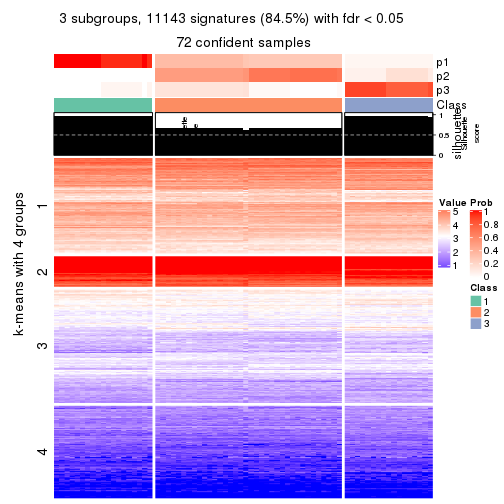
get_signatures(res, k = 4, scale_rows = FALSE)
get_signatures(res, k = 5, scale_rows = FALSE)
get_signatures(res, k = 6, scale_rows = FALSE)
Compare the overlap of signatures from different k:
compare_signatures(res)
get_signature() returns a data frame invisibly. TO get the list of signatures, the function
call should be assigned to a variable explicitly. In following code, if plot argument is set
to FALSE, no heatmap is plotted while only the differential analysis is performed.
# code only for demonstration
tb = get_signature(res, k = ..., plot = FALSE)
An example of the output of tb is:
#> which_row fdr mean_1 mean_2 scaled_mean_1 scaled_mean_2 km
#> 1 38 0.042760348 8.373488 9.131774 -0.5533452 0.5164555 1
#> 2 40 0.018707592 7.106213 8.469186 -0.6173731 0.5762149 1
#> 3 55 0.019134737 10.221463 11.207825 -0.6159697 0.5749050 1
#> 4 59 0.006059896 5.921854 7.869574 -0.6899429 0.6439467 1
#> 5 60 0.018055526 8.928898 10.211722 -0.6204761 0.5791110 1
#> 6 98 0.009384629 15.714769 14.887706 0.6635654 -0.6193277 2
...
The columns in tb are:
which_row: row indices corresponding to the input matrix.fdr: FDR for the differential test. mean_x: The mean value in group x.scaled_mean_x: The mean value in group x after rows are scaled.km: Row groups if k-means clustering is applied to rows.UMAP plot which shows how samples are separated.
dimension_reduction(res, k = 2, method = "UMAP")
dimension_reduction(res, k = 3, method = "UMAP")
dimension_reduction(res, k = 4, method = "UMAP")
dimension_reduction(res, k = 5, method = "UMAP")
dimension_reduction(res, k = 6, method = "UMAP")
Following heatmap shows how subgroups are split when increasing k:
collect_classes(res)
If matrix rows can be associated to genes, consider to use GO_Enrichment(res,
...) to perform function enrichment for the signature genes.
The object with results only for a single top-value method and a single partition method can be extracted as:
res = res_list["ATC", "skmeans"]
# you can also extract it by
# res = res_list["ATC:skmeans"]
A summary of res and all the functions that can be applied to it:
res
#> A 'ConsensusPartition' object with k = 2, 3, 4, 5, 6.
#> On a matrix with 13183 rows and 72 columns.
#> Top rows (1000, 2000, 3000, 4000, 5000) are extracted by 'ATC' method.
#> Subgroups are detected by 'skmeans' method.
#> Performed in total 1250 partitions by row resampling.
#> Best k for subgroups seems to be 5.
#>
#> Following methods can be applied to this 'ConsensusPartition' object:
#> [1] "cola_report" "collect_classes" "collect_plots"
#> [4] "collect_stats" "colnames" "compare_signatures"
#> [7] "consensus_heatmap" "dimension_reduction" "functional_enrichment"
#> [10] "get_anno_col" "get_anno" "get_classes"
#> [13] "get_consensus" "get_matrix" "get_membership"
#> [16] "get_param" "get_signatures" "get_stats"
#> [19] "is_best_k" "is_stable_k" "membership_heatmap"
#> [22] "ncol" "nrow" "plot_ecdf"
#> [25] "rownames" "select_partition_number" "show"
#> [28] "suggest_best_k" "test_to_known_factors"
collect_plots() function collects all the plots made from res for all k (number of partitions)
into one single page to provide an easy and fast comparison between different k.
collect_plots(res)
The plots are:
k and the heatmap of
predicted classes for each k.k.k.k.All the plots in panels can be made by individual functions and they are plotted later in this section.
select_partition_number() produces several plots showing different
statistics for choosing “optimized” k. There are following statistics:
k;k, the area increased is defined as \(A_k - A_{k-1}\).The detailed explanations of these statistics can be found in the cola vignette.
Generally speaking, lower PAC score, higher mean silhouette score or higher
concordance corresponds to better partition. Rand index and Jaccard index
measure how similar the current partition is compared to partition with k-1.
If they are too similar, we won't accept k is better than k-1.
select_partition_number(res)
The numeric values for all these statistics can be obtained by get_stats().
get_stats(res)
#> k 1-PAC mean_silhouette concordance area_increased Rand Jaccard
#> 2 2 1.000 0.996 0.996 0.5071 0.493 0.493
#> 3 3 0.739 0.892 0.914 0.2474 0.620 0.387
#> 4 4 1.000 1.000 1.000 0.2020 0.873 0.654
#> 5 5 0.971 0.979 0.946 0.0263 0.968 0.868
#> 6 6 0.970 0.969 0.970 0.0194 0.997 0.985
suggest_best_k() suggests the best \(k\) based on these statistics. The rules are as follows:
NA.suggest_best_k(res)
#> [1] 5
#> attr(,"optional")
#> [1] 2 4
There is also optional best \(k\) = 2 4 that is worth to check.
Following shows the table of the partitions (You need to click the show/hide
code output link to see it). The membership matrix (columns with name p*)
is inferred by
clue::cl_consensus()
function with the SE method. Basically the value in the membership matrix
represents the probability to belong to a certain group. The finall class
label for an item is determined with the group with highest probability it
belongs to.
In get_classes() function, the entropy is calculated from the membership
matrix and the silhouette score is calculated from the consensus matrix.
cbind(get_classes(res, k = 2), get_membership(res, k = 2))
#> class entropy silhouette p1 p2
#> SRR942117 1 0.0672 0.996 0.992 0.008
#> SRR942118 1 0.0672 0.996 0.992 0.008
#> SRR942119 1 0.0672 0.996 0.992 0.008
#> SRR942120 1 0.0672 0.996 0.992 0.008
#> SRR942121 1 0.0672 0.996 0.992 0.008
#> SRR942122 1 0.0672 0.996 0.992 0.008
#> SRR942123 1 0.0672 0.996 0.992 0.008
#> SRR942124 1 0.0672 0.996 0.992 0.008
#> SRR942125 1 0.0672 0.996 0.992 0.008
#> SRR942126 1 0.0672 0.996 0.992 0.008
#> SRR942127 1 0.0672 0.996 0.992 0.008
#> SRR942128 1 0.0672 0.996 0.992 0.008
#> SRR942129 1 0.0672 0.996 0.992 0.008
#> SRR942130 1 0.0672 0.996 0.992 0.008
#> SRR942131 1 0.0672 0.996 0.992 0.008
#> SRR942132 1 0.0672 0.996 0.992 0.008
#> SRR942133 1 0.0672 0.996 0.992 0.008
#> SRR942134 1 0.0672 0.996 0.992 0.008
#> SRR942144 2 0.0000 0.996 0.000 1.000
#> SRR942145 2 0.0000 0.996 0.000 1.000
#> SRR942146 2 0.0000 0.996 0.000 1.000
#> SRR942147 2 0.0000 0.996 0.000 1.000
#> SRR942148 2 0.0000 0.996 0.000 1.000
#> SRR942149 2 0.0000 0.996 0.000 1.000
#> SRR942150 2 0.0000 0.996 0.000 1.000
#> SRR942151 2 0.0000 0.996 0.000 1.000
#> SRR942152 2 0.0000 0.996 0.000 1.000
#> SRR942135 2 0.0000 0.996 0.000 1.000
#> SRR942136 2 0.0000 0.996 0.000 1.000
#> SRR942137 2 0.0000 0.996 0.000 1.000
#> SRR942138 2 0.0000 0.996 0.000 1.000
#> SRR942139 2 0.0000 0.996 0.000 1.000
#> SRR942140 2 0.0000 0.996 0.000 1.000
#> SRR942141 2 0.0000 0.996 0.000 1.000
#> SRR942142 2 0.0000 0.996 0.000 1.000
#> SRR942143 2 0.0000 0.996 0.000 1.000
#> SRR942153 2 0.0672 0.996 0.008 0.992
#> SRR942154 2 0.0672 0.996 0.008 0.992
#> SRR942155 2 0.0672 0.996 0.008 0.992
#> SRR942156 2 0.0672 0.996 0.008 0.992
#> SRR942157 2 0.0672 0.996 0.008 0.992
#> SRR942158 2 0.0672 0.996 0.008 0.992
#> SRR942159 2 0.0672 0.996 0.008 0.992
#> SRR942160 2 0.0672 0.996 0.008 0.992
#> SRR942161 2 0.0672 0.996 0.008 0.992
#> SRR942162 2 0.0672 0.996 0.008 0.992
#> SRR942163 2 0.0672 0.996 0.008 0.992
#> SRR942164 2 0.0672 0.996 0.008 0.992
#> SRR942166 2 0.0672 0.996 0.008 0.992
#> SRR942167 2 0.0672 0.996 0.008 0.992
#> SRR942168 2 0.0672 0.996 0.008 0.992
#> SRR942169 2 0.0672 0.996 0.008 0.992
#> SRR942170 2 0.0672 0.996 0.008 0.992
#> SRR942171 1 0.0000 0.996 1.000 0.000
#> SRR942172 1 0.0000 0.996 1.000 0.000
#> SRR942173 1 0.0000 0.996 1.000 0.000
#> SRR942174 1 0.0000 0.996 1.000 0.000
#> SRR942175 1 0.0000 0.996 1.000 0.000
#> SRR942176 1 0.0000 0.996 1.000 0.000
#> SRR942177 1 0.0000 0.996 1.000 0.000
#> SRR942178 1 0.0000 0.996 1.000 0.000
#> SRR942179 1 0.0000 0.996 1.000 0.000
#> SRR942180 1 0.0000 0.996 1.000 0.000
#> SRR942181 1 0.0000 0.996 1.000 0.000
#> SRR942182 1 0.0000 0.996 1.000 0.000
#> SRR942183 1 0.0000 0.996 1.000 0.000
#> SRR942184 1 0.0000 0.996 1.000 0.000
#> SRR942185 1 0.0000 0.996 1.000 0.000
#> SRR942186 1 0.0000 0.996 1.000 0.000
#> SRR942187 1 0.0000 0.996 1.000 0.000
#> SRR942188 1 0.0000 0.996 1.000 0.000
#> SRR942189 1 0.0000 0.996 1.000 0.000
cbind(get_classes(res, k = 3), get_membership(res, k = 3))
#> class entropy silhouette p1 p2 p3
#> SRR942117 2 0.525 0.767 0.264 0.736 0.00
#> SRR942118 2 0.525 0.767 0.264 0.736 0.00
#> SRR942119 2 0.525 0.767 0.264 0.736 0.00
#> SRR942120 2 0.525 0.767 0.264 0.736 0.00
#> SRR942121 2 0.525 0.767 0.264 0.736 0.00
#> SRR942122 2 0.525 0.767 0.264 0.736 0.00
#> SRR942123 2 0.525 0.767 0.264 0.736 0.00
#> SRR942124 2 0.525 0.767 0.264 0.736 0.00
#> SRR942125 2 0.525 0.767 0.264 0.736 0.00
#> SRR942126 2 0.525 0.767 0.264 0.736 0.00
#> SRR942127 2 0.525 0.767 0.264 0.736 0.00
#> SRR942128 2 0.525 0.767 0.264 0.736 0.00
#> SRR942129 2 0.525 0.767 0.264 0.736 0.00
#> SRR942130 2 0.525 0.767 0.264 0.736 0.00
#> SRR942131 2 0.525 0.767 0.264 0.736 0.00
#> SRR942132 2 0.525 0.767 0.264 0.736 0.00
#> SRR942133 2 0.525 0.767 0.264 0.736 0.00
#> SRR942134 2 0.525 0.767 0.264 0.736 0.00
#> SRR942144 2 0.254 0.799 0.000 0.920 0.08
#> SRR942145 2 0.254 0.799 0.000 0.920 0.08
#> SRR942146 2 0.254 0.799 0.000 0.920 0.08
#> SRR942147 2 0.254 0.799 0.000 0.920 0.08
#> SRR942148 2 0.254 0.799 0.000 0.920 0.08
#> SRR942149 2 0.254 0.799 0.000 0.920 0.08
#> SRR942150 2 0.254 0.799 0.000 0.920 0.08
#> SRR942151 2 0.254 0.799 0.000 0.920 0.08
#> SRR942152 2 0.254 0.799 0.000 0.920 0.08
#> SRR942135 2 0.254 0.799 0.000 0.920 0.08
#> SRR942136 2 0.254 0.799 0.000 0.920 0.08
#> SRR942137 2 0.254 0.799 0.000 0.920 0.08
#> SRR942138 2 0.254 0.799 0.000 0.920 0.08
#> SRR942139 2 0.254 0.799 0.000 0.920 0.08
#> SRR942140 2 0.254 0.799 0.000 0.920 0.08
#> SRR942141 2 0.254 0.799 0.000 0.920 0.08
#> SRR942142 2 0.254 0.799 0.000 0.920 0.08
#> SRR942143 2 0.254 0.799 0.000 0.920 0.08
#> SRR942153 3 0.000 1.000 0.000 0.000 1.00
#> SRR942154 3 0.000 1.000 0.000 0.000 1.00
#> SRR942155 3 0.000 1.000 0.000 0.000 1.00
#> SRR942156 3 0.000 1.000 0.000 0.000 1.00
#> SRR942157 3 0.000 1.000 0.000 0.000 1.00
#> SRR942158 3 0.000 1.000 0.000 0.000 1.00
#> SRR942159 3 0.000 1.000 0.000 0.000 1.00
#> SRR942160 3 0.000 1.000 0.000 0.000 1.00
#> SRR942161 3 0.000 1.000 0.000 0.000 1.00
#> SRR942162 3 0.000 1.000 0.000 0.000 1.00
#> SRR942163 3 0.000 1.000 0.000 0.000 1.00
#> SRR942164 3 0.000 1.000 0.000 0.000 1.00
#> SRR942166 3 0.000 1.000 0.000 0.000 1.00
#> SRR942167 3 0.000 1.000 0.000 0.000 1.00
#> SRR942168 3 0.000 1.000 0.000 0.000 1.00
#> SRR942169 3 0.000 1.000 0.000 0.000 1.00
#> SRR942170 3 0.000 1.000 0.000 0.000 1.00
#> SRR942171 1 0.000 1.000 1.000 0.000 0.00
#> SRR942172 1 0.000 1.000 1.000 0.000 0.00
#> SRR942173 1 0.000 1.000 1.000 0.000 0.00
#> SRR942174 1 0.000 1.000 1.000 0.000 0.00
#> SRR942175 1 0.000 1.000 1.000 0.000 0.00
#> SRR942176 1 0.000 1.000 1.000 0.000 0.00
#> SRR942177 1 0.000 1.000 1.000 0.000 0.00
#> SRR942178 1 0.000 1.000 1.000 0.000 0.00
#> SRR942179 1 0.000 1.000 1.000 0.000 0.00
#> SRR942180 1 0.000 1.000 1.000 0.000 0.00
#> SRR942181 1 0.000 1.000 1.000 0.000 0.00
#> SRR942182 1 0.000 1.000 1.000 0.000 0.00
#> SRR942183 1 0.000 1.000 1.000 0.000 0.00
#> SRR942184 1 0.000 1.000 1.000 0.000 0.00
#> SRR942185 1 0.000 1.000 1.000 0.000 0.00
#> SRR942186 1 0.000 1.000 1.000 0.000 0.00
#> SRR942187 1 0.000 1.000 1.000 0.000 0.00
#> SRR942188 1 0.000 1.000 1.000 0.000 0.00
#> SRR942189 1 0.000 1.000 1.000 0.000 0.00
cbind(get_classes(res, k = 4), get_membership(res, k = 4))
#> class entropy silhouette p1 p2 p3 p4
#> SRR942117 2 0 1 0 1 0 0
#> SRR942118 2 0 1 0 1 0 0
#> SRR942119 2 0 1 0 1 0 0
#> SRR942120 2 0 1 0 1 0 0
#> SRR942121 2 0 1 0 1 0 0
#> SRR942122 2 0 1 0 1 0 0
#> SRR942123 2 0 1 0 1 0 0
#> SRR942124 2 0 1 0 1 0 0
#> SRR942125 2 0 1 0 1 0 0
#> SRR942126 2 0 1 0 1 0 0
#> SRR942127 2 0 1 0 1 0 0
#> SRR942128 2 0 1 0 1 0 0
#> SRR942129 2 0 1 0 1 0 0
#> SRR942130 2 0 1 0 1 0 0
#> SRR942131 2 0 1 0 1 0 0
#> SRR942132 2 0 1 0 1 0 0
#> SRR942133 2 0 1 0 1 0 0
#> SRR942134 2 0 1 0 1 0 0
#> SRR942144 4 0 1 0 0 0 1
#> SRR942145 4 0 1 0 0 0 1
#> SRR942146 4 0 1 0 0 0 1
#> SRR942147 4 0 1 0 0 0 1
#> SRR942148 4 0 1 0 0 0 1
#> SRR942149 4 0 1 0 0 0 1
#> SRR942150 4 0 1 0 0 0 1
#> SRR942151 4 0 1 0 0 0 1
#> SRR942152 4 0 1 0 0 0 1
#> SRR942135 4 0 1 0 0 0 1
#> SRR942136 4 0 1 0 0 0 1
#> SRR942137 4 0 1 0 0 0 1
#> SRR942138 4 0 1 0 0 0 1
#> SRR942139 4 0 1 0 0 0 1
#> SRR942140 4 0 1 0 0 0 1
#> SRR942141 4 0 1 0 0 0 1
#> SRR942142 4 0 1 0 0 0 1
#> SRR942143 4 0 1 0 0 0 1
#> SRR942153 3 0 1 0 0 1 0
#> SRR942154 3 0 1 0 0 1 0
#> SRR942155 3 0 1 0 0 1 0
#> SRR942156 3 0 1 0 0 1 0
#> SRR942157 3 0 1 0 0 1 0
#> SRR942158 3 0 1 0 0 1 0
#> SRR942159 3 0 1 0 0 1 0
#> SRR942160 3 0 1 0 0 1 0
#> SRR942161 3 0 1 0 0 1 0
#> SRR942162 3 0 1 0 0 1 0
#> SRR942163 3 0 1 0 0 1 0
#> SRR942164 3 0 1 0 0 1 0
#> SRR942166 3 0 1 0 0 1 0
#> SRR942167 3 0 1 0 0 1 0
#> SRR942168 3 0 1 0 0 1 0
#> SRR942169 3 0 1 0 0 1 0
#> SRR942170 3 0 1 0 0 1 0
#> SRR942171 1 0 1 1 0 0 0
#> SRR942172 1 0 1 1 0 0 0
#> SRR942173 1 0 1 1 0 0 0
#> SRR942174 1 0 1 1 0 0 0
#> SRR942175 1 0 1 1 0 0 0
#> SRR942176 1 0 1 1 0 0 0
#> SRR942177 1 0 1 1 0 0 0
#> SRR942178 1 0 1 1 0 0 0
#> SRR942179 1 0 1 1 0 0 0
#> SRR942180 1 0 1 1 0 0 0
#> SRR942181 1 0 1 1 0 0 0
#> SRR942182 1 0 1 1 0 0 0
#> SRR942183 1 0 1 1 0 0 0
#> SRR942184 1 0 1 1 0 0 0
#> SRR942185 1 0 1 1 0 0 0
#> SRR942186 1 0 1 1 0 0 0
#> SRR942187 1 0 1 1 0 0 0
#> SRR942188 1 0 1 1 0 0 0
#> SRR942189 1 0 1 1 0 0 0
cbind(get_classes(res, k = 5), get_membership(res, k = 5))
#> class entropy silhouette p1 p2 p3 p4 p5
#> SRR942117 2 0.0000 0.998 0 1.000 0 0.000 0.000
#> SRR942118 2 0.0000 0.998 0 1.000 0 0.000 0.000
#> SRR942119 2 0.0000 0.998 0 1.000 0 0.000 0.000
#> SRR942120 2 0.0000 0.998 0 1.000 0 0.000 0.000
#> SRR942121 2 0.0000 0.998 0 1.000 0 0.000 0.000
#> SRR942122 2 0.0000 0.998 0 1.000 0 0.000 0.000
#> SRR942123 2 0.0000 0.998 0 1.000 0 0.000 0.000
#> SRR942124 2 0.0000 0.998 0 1.000 0 0.000 0.000
#> SRR942125 2 0.0000 0.998 0 1.000 0 0.000 0.000
#> SRR942126 2 0.0162 0.998 0 0.996 0 0.004 0.000
#> SRR942127 2 0.0162 0.998 0 0.996 0 0.004 0.000
#> SRR942128 2 0.0162 0.998 0 0.996 0 0.004 0.000
#> SRR942129 2 0.0162 0.998 0 0.996 0 0.004 0.000
#> SRR942130 2 0.0162 0.998 0 0.996 0 0.004 0.000
#> SRR942131 2 0.0162 0.998 0 0.996 0 0.004 0.000
#> SRR942132 2 0.0162 0.998 0 0.996 0 0.004 0.000
#> SRR942133 2 0.0162 0.998 0 0.996 0 0.004 0.000
#> SRR942134 2 0.0162 0.998 0 0.996 0 0.004 0.000
#> SRR942144 4 0.4294 1.000 0 0.000 0 0.532 0.468
#> SRR942145 4 0.4294 1.000 0 0.000 0 0.532 0.468
#> SRR942146 4 0.4294 1.000 0 0.000 0 0.532 0.468
#> SRR942147 4 0.4294 1.000 0 0.000 0 0.532 0.468
#> SRR942148 4 0.4294 1.000 0 0.000 0 0.532 0.468
#> SRR942149 4 0.4294 1.000 0 0.000 0 0.532 0.468
#> SRR942150 4 0.4294 1.000 0 0.000 0 0.532 0.468
#> SRR942151 4 0.4294 1.000 0 0.000 0 0.532 0.468
#> SRR942152 4 0.4294 1.000 0 0.000 0 0.532 0.468
#> SRR942135 5 0.0000 0.891 0 0.000 0 0.000 1.000
#> SRR942136 5 0.0000 0.891 0 0.000 0 0.000 1.000
#> SRR942137 5 0.0000 0.891 0 0.000 0 0.000 1.000
#> SRR942138 5 0.0000 0.891 0 0.000 0 0.000 1.000
#> SRR942139 5 0.0000 0.891 0 0.000 0 0.000 1.000
#> SRR942140 5 0.0000 0.891 0 0.000 0 0.000 1.000
#> SRR942141 5 0.0000 0.891 0 0.000 0 0.000 1.000
#> SRR942142 5 0.0000 0.891 0 0.000 0 0.000 1.000
#> SRR942143 5 0.4300 0.368 0 0.000 0 0.476 0.524
#> SRR942153 3 0.0000 1.000 0 0.000 1 0.000 0.000
#> SRR942154 3 0.0000 1.000 0 0.000 1 0.000 0.000
#> SRR942155 3 0.0000 1.000 0 0.000 1 0.000 0.000
#> SRR942156 3 0.0000 1.000 0 0.000 1 0.000 0.000
#> SRR942157 3 0.0000 1.000 0 0.000 1 0.000 0.000
#> SRR942158 3 0.0000 1.000 0 0.000 1 0.000 0.000
#> SRR942159 3 0.0000 1.000 0 0.000 1 0.000 0.000
#> SRR942160 3 0.0000 1.000 0 0.000 1 0.000 0.000
#> SRR942161 3 0.0000 1.000 0 0.000 1 0.000 0.000
#> SRR942162 3 0.0000 1.000 0 0.000 1 0.000 0.000
#> SRR942163 3 0.0000 1.000 0 0.000 1 0.000 0.000
#> SRR942164 3 0.0000 1.000 0 0.000 1 0.000 0.000
#> SRR942166 3 0.0000 1.000 0 0.000 1 0.000 0.000
#> SRR942167 3 0.0000 1.000 0 0.000 1 0.000 0.000
#> SRR942168 3 0.0000 1.000 0 0.000 1 0.000 0.000
#> SRR942169 3 0.0000 1.000 0 0.000 1 0.000 0.000
#> SRR942170 3 0.0000 1.000 0 0.000 1 0.000 0.000
#> SRR942171 1 0.0000 1.000 1 0.000 0 0.000 0.000
#> SRR942172 1 0.0000 1.000 1 0.000 0 0.000 0.000
#> SRR942173 1 0.0000 1.000 1 0.000 0 0.000 0.000
#> SRR942174 1 0.0000 1.000 1 0.000 0 0.000 0.000
#> SRR942175 1 0.0000 1.000 1 0.000 0 0.000 0.000
#> SRR942176 1 0.0000 1.000 1 0.000 0 0.000 0.000
#> SRR942177 1 0.0000 1.000 1 0.000 0 0.000 0.000
#> SRR942178 1 0.0000 1.000 1 0.000 0 0.000 0.000
#> SRR942179 1 0.0000 1.000 1 0.000 0 0.000 0.000
#> SRR942180 1 0.0000 1.000 1 0.000 0 0.000 0.000
#> SRR942181 1 0.0000 1.000 1 0.000 0 0.000 0.000
#> SRR942182 1 0.0000 1.000 1 0.000 0 0.000 0.000
#> SRR942183 1 0.0000 1.000 1 0.000 0 0.000 0.000
#> SRR942184 1 0.0000 1.000 1 0.000 0 0.000 0.000
#> SRR942185 1 0.0000 1.000 1 0.000 0 0.000 0.000
#> SRR942186 1 0.0000 1.000 1 0.000 0 0.000 0.000
#> SRR942187 1 0.0000 1.000 1 0.000 0 0.000 0.000
#> SRR942188 1 0.0000 1.000 1 0.000 0 0.000 0.000
#> SRR942189 1 0.0000 1.000 1 0.000 0 0.000 0.000
cbind(get_classes(res, k = 6), get_membership(res, k = 6))
#> class entropy silhouette p1 p2 p3 p4 p5 p6
#> SRR942117 2 0.0000 0.964 0.000 1.000 0.000 0.000 0.000 0.000
#> SRR942118 2 0.0000 0.964 0.000 1.000 0.000 0.000 0.000 0.000
#> SRR942119 2 0.0000 0.964 0.000 1.000 0.000 0.000 0.000 0.000
#> SRR942120 2 0.0000 0.964 0.000 1.000 0.000 0.000 0.000 0.000
#> SRR942121 2 0.0000 0.964 0.000 1.000 0.000 0.000 0.000 0.000
#> SRR942122 2 0.0000 0.964 0.000 1.000 0.000 0.000 0.000 0.000
#> SRR942123 2 0.0000 0.964 0.000 1.000 0.000 0.000 0.000 0.000
#> SRR942124 2 0.0000 0.964 0.000 1.000 0.000 0.000 0.000 0.000
#> SRR942125 2 0.1863 0.874 0.000 0.896 0.000 0.104 0.000 0.000
#> SRR942126 2 0.1367 0.966 0.000 0.944 0.000 0.012 0.044 0.000
#> SRR942127 2 0.1367 0.966 0.000 0.944 0.000 0.012 0.044 0.000
#> SRR942128 2 0.1367 0.966 0.000 0.944 0.000 0.012 0.044 0.000
#> SRR942129 2 0.1367 0.966 0.000 0.944 0.000 0.012 0.044 0.000
#> SRR942130 2 0.1367 0.966 0.000 0.944 0.000 0.012 0.044 0.000
#> SRR942131 2 0.1367 0.966 0.000 0.944 0.000 0.012 0.044 0.000
#> SRR942132 2 0.1367 0.966 0.000 0.944 0.000 0.012 0.044 0.000
#> SRR942133 2 0.1367 0.966 0.000 0.944 0.000 0.012 0.044 0.000
#> SRR942134 2 0.1367 0.966 0.000 0.944 0.000 0.012 0.044 0.000
#> SRR942144 4 0.2135 0.999 0.000 0.000 0.000 0.872 0.000 0.128
#> SRR942145 4 0.2135 0.999 0.000 0.000 0.000 0.872 0.000 0.128
#> SRR942146 4 0.2092 0.995 0.000 0.000 0.000 0.876 0.000 0.124
#> SRR942147 4 0.2135 0.999 0.000 0.000 0.000 0.872 0.000 0.128
#> SRR942148 4 0.2135 0.999 0.000 0.000 0.000 0.872 0.000 0.128
#> SRR942149 4 0.2135 0.999 0.000 0.000 0.000 0.872 0.000 0.128
#> SRR942150 4 0.2092 0.995 0.000 0.000 0.000 0.876 0.000 0.124
#> SRR942151 4 0.2135 0.999 0.000 0.000 0.000 0.872 0.000 0.128
#> SRR942152 4 0.2135 0.999 0.000 0.000 0.000 0.872 0.000 0.128
#> SRR942135 6 0.0000 1.000 0.000 0.000 0.000 0.000 0.000 1.000
#> SRR942136 6 0.0000 1.000 0.000 0.000 0.000 0.000 0.000 1.000
#> SRR942137 6 0.0000 1.000 0.000 0.000 0.000 0.000 0.000 1.000
#> SRR942138 6 0.0000 1.000 0.000 0.000 0.000 0.000 0.000 1.000
#> SRR942139 6 0.0000 1.000 0.000 0.000 0.000 0.000 0.000 1.000
#> SRR942140 6 0.0000 1.000 0.000 0.000 0.000 0.000 0.000 1.000
#> SRR942141 6 0.0000 1.000 0.000 0.000 0.000 0.000 0.000 1.000
#> SRR942142 6 0.0000 1.000 0.000 0.000 0.000 0.000 0.000 1.000
#> SRR942143 5 0.1663 0.000 0.000 0.000 0.000 0.000 0.912 0.088
#> SRR942153 3 0.0000 0.998 0.000 0.000 1.000 0.000 0.000 0.000
#> SRR942154 3 0.0000 0.998 0.000 0.000 1.000 0.000 0.000 0.000
#> SRR942155 3 0.0000 0.998 0.000 0.000 1.000 0.000 0.000 0.000
#> SRR942156 3 0.0000 0.998 0.000 0.000 1.000 0.000 0.000 0.000
#> SRR942157 3 0.0000 0.998 0.000 0.000 1.000 0.000 0.000 0.000
#> SRR942158 3 0.0000 0.998 0.000 0.000 1.000 0.000 0.000 0.000
#> SRR942159 3 0.0000 0.998 0.000 0.000 1.000 0.000 0.000 0.000
#> SRR942160 3 0.0000 0.998 0.000 0.000 1.000 0.000 0.000 0.000
#> SRR942161 3 0.0000 0.998 0.000 0.000 1.000 0.000 0.000 0.000
#> SRR942162 3 0.0146 0.998 0.000 0.000 0.996 0.000 0.004 0.000
#> SRR942163 3 0.0146 0.998 0.000 0.000 0.996 0.000 0.004 0.000
#> SRR942164 3 0.0146 0.998 0.000 0.000 0.996 0.000 0.004 0.000
#> SRR942166 3 0.0146 0.998 0.000 0.000 0.996 0.000 0.004 0.000
#> SRR942167 3 0.0146 0.998 0.000 0.000 0.996 0.000 0.004 0.000
#> SRR942168 3 0.0146 0.998 0.000 0.000 0.996 0.000 0.004 0.000
#> SRR942169 3 0.0146 0.998 0.000 0.000 0.996 0.000 0.004 0.000
#> SRR942170 3 0.0146 0.998 0.000 0.000 0.996 0.000 0.004 0.000
#> SRR942171 1 0.0000 0.976 1.000 0.000 0.000 0.000 0.000 0.000
#> SRR942172 1 0.0000 0.976 1.000 0.000 0.000 0.000 0.000 0.000
#> SRR942173 1 0.0000 0.976 1.000 0.000 0.000 0.000 0.000 0.000
#> SRR942174 1 0.0000 0.976 1.000 0.000 0.000 0.000 0.000 0.000
#> SRR942175 1 0.0000 0.976 1.000 0.000 0.000 0.000 0.000 0.000
#> SRR942176 1 0.0000 0.976 1.000 0.000 0.000 0.000 0.000 0.000
#> SRR942177 1 0.0000 0.976 1.000 0.000 0.000 0.000 0.000 0.000
#> SRR942178 1 0.0000 0.976 1.000 0.000 0.000 0.000 0.000 0.000
#> SRR942179 1 0.0000 0.976 1.000 0.000 0.000 0.000 0.000 0.000
#> SRR942180 1 0.0000 0.976 1.000 0.000 0.000 0.000 0.000 0.000
#> SRR942181 1 0.1196 0.973 0.952 0.000 0.000 0.008 0.040 0.000
#> SRR942182 1 0.1196 0.973 0.952 0.000 0.000 0.008 0.040 0.000
#> SRR942183 1 0.1196 0.973 0.952 0.000 0.000 0.008 0.040 0.000
#> SRR942184 1 0.1196 0.973 0.952 0.000 0.000 0.008 0.040 0.000
#> SRR942185 1 0.1196 0.973 0.952 0.000 0.000 0.008 0.040 0.000
#> SRR942186 1 0.1196 0.973 0.952 0.000 0.000 0.008 0.040 0.000
#> SRR942187 1 0.1196 0.973 0.952 0.000 0.000 0.008 0.040 0.000
#> SRR942188 1 0.1196 0.973 0.952 0.000 0.000 0.008 0.040 0.000
#> SRR942189 1 0.1196 0.973 0.952 0.000 0.000 0.008 0.040 0.000
Heatmaps for the consensus matrix. It visualizes the probability of two samples to be in a same group.
consensus_heatmap(res, k = 2)
consensus_heatmap(res, k = 3)
consensus_heatmap(res, k = 4)
consensus_heatmap(res, k = 5)
consensus_heatmap(res, k = 6)
Heatmaps for the membership of samples in all partitions to see how consistent they are:
membership_heatmap(res, k = 2)
membership_heatmap(res, k = 3)

membership_heatmap(res, k = 4)

membership_heatmap(res, k = 5)
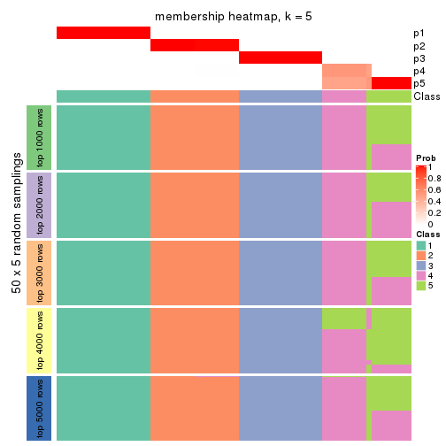
membership_heatmap(res, k = 6)
As soon as we have had the classes for columns, we can look for signatures which are significantly different between classes which can be candidate marks for certain classes. Following are the heatmaps for signatures.
Signature heatmaps where rows are scaled:
get_signatures(res, k = 2)
get_signatures(res, k = 3)
get_signatures(res, k = 4)

get_signatures(res, k = 5)
get_signatures(res, k = 6)
Signature heatmaps where rows are not scaled:
get_signatures(res, k = 2, scale_rows = FALSE)
get_signatures(res, k = 3, scale_rows = FALSE)
get_signatures(res, k = 4, scale_rows = FALSE)

get_signatures(res, k = 5, scale_rows = FALSE)
get_signatures(res, k = 6, scale_rows = FALSE)
Compare the overlap of signatures from different k:
compare_signatures(res)
get_signature() returns a data frame invisibly. TO get the list of signatures, the function
call should be assigned to a variable explicitly. In following code, if plot argument is set
to FALSE, no heatmap is plotted while only the differential analysis is performed.
# code only for demonstration
tb = get_signature(res, k = ..., plot = FALSE)
An example of the output of tb is:
#> which_row fdr mean_1 mean_2 scaled_mean_1 scaled_mean_2 km
#> 1 38 0.042760348 8.373488 9.131774 -0.5533452 0.5164555 1
#> 2 40 0.018707592 7.106213 8.469186 -0.6173731 0.5762149 1
#> 3 55 0.019134737 10.221463 11.207825 -0.6159697 0.5749050 1
#> 4 59 0.006059896 5.921854 7.869574 -0.6899429 0.6439467 1
#> 5 60 0.018055526 8.928898 10.211722 -0.6204761 0.5791110 1
#> 6 98 0.009384629 15.714769 14.887706 0.6635654 -0.6193277 2
...
The columns in tb are:
which_row: row indices corresponding to the input matrix.fdr: FDR for the differential test. mean_x: The mean value in group x.scaled_mean_x: The mean value in group x after rows are scaled.km: Row groups if k-means clustering is applied to rows.UMAP plot which shows how samples are separated.
dimension_reduction(res, k = 2, method = "UMAP")
dimension_reduction(res, k = 3, method = "UMAP")

dimension_reduction(res, k = 4, method = "UMAP")

dimension_reduction(res, k = 5, method = "UMAP")
dimension_reduction(res, k = 6, method = "UMAP")

Following heatmap shows how subgroups are split when increasing k:
collect_classes(res)
If matrix rows can be associated to genes, consider to use GO_Enrichment(res,
...) to perform function enrichment for the signature genes.
The object with results only for a single top-value method and a single partition method can be extracted as:
res = res_list["ATC", "pam"]
# you can also extract it by
# res = res_list["ATC:pam"]
A summary of res and all the functions that can be applied to it:
res
#> A 'ConsensusPartition' object with k = 2, 3, 4, 5, 6.
#> On a matrix with 13183 rows and 72 columns.
#> Top rows (1000, 2000, 3000, 4000, 5000) are extracted by 'ATC' method.
#> Subgroups are detected by 'pam' method.
#> Performed in total 1250 partitions by row resampling.
#> Best k for subgroups seems to be 5.
#>
#> Following methods can be applied to this 'ConsensusPartition' object:
#> [1] "cola_report" "collect_classes" "collect_plots"
#> [4] "collect_stats" "colnames" "compare_signatures"
#> [7] "consensus_heatmap" "dimension_reduction" "functional_enrichment"
#> [10] "get_anno_col" "get_anno" "get_classes"
#> [13] "get_consensus" "get_matrix" "get_membership"
#> [16] "get_param" "get_signatures" "get_stats"
#> [19] "is_best_k" "is_stable_k" "membership_heatmap"
#> [22] "ncol" "nrow" "plot_ecdf"
#> [25] "rownames" "select_partition_number" "show"
#> [28] "suggest_best_k" "test_to_known_factors"
collect_plots() function collects all the plots made from res for all k (number of partitions)
into one single page to provide an easy and fast comparison between different k.
collect_plots(res)
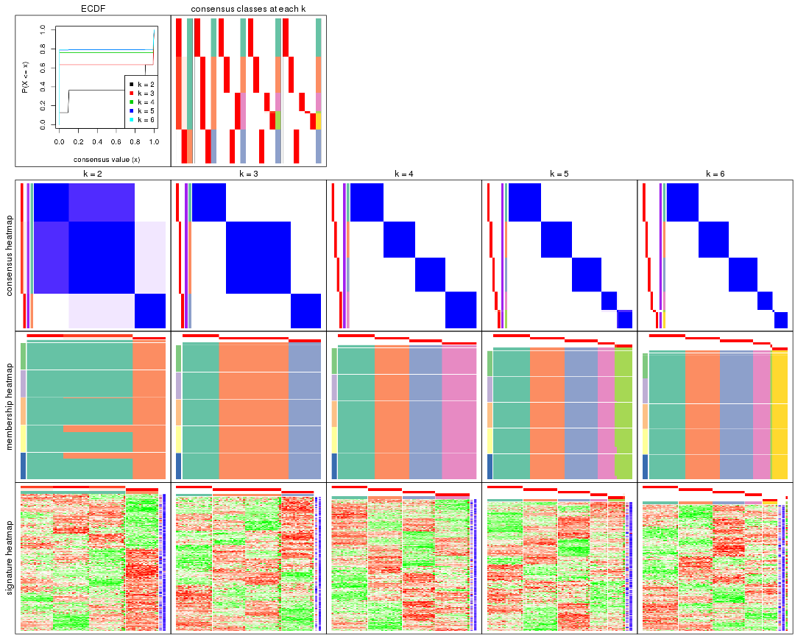
The plots are:
k and the heatmap of
predicted classes for each k.k.k.k.All the plots in panels can be made by individual functions and they are plotted later in this section.
select_partition_number() produces several plots showing different
statistics for choosing “optimized” k. There are following statistics:
k;k, the area increased is defined as \(A_k - A_{k-1}\).The detailed explanations of these statistics can be found in the cola vignette.
Generally speaking, lower PAC score, higher mean silhouette score or higher
concordance corresponds to better partition. Rand index and Jaccard index
measure how similar the current partition is compared to partition with k-1.
If they are too similar, we won't accept k is better than k-1.
select_partition_number(res)
The numeric values for all these statistics can be obtained by get_stats().
get_stats(res)
#> k 1-PAC mean_silhouette concordance area_increased Rand Jaccard
#> 2 2 0.493 0.961 0.950 0.36923 0.634 0.634
#> 3 3 1.000 1.000 1.000 0.71648 0.732 0.578
#> 4 4 1.000 1.000 1.000 0.19981 0.873 0.654
#> 5 5 1.000 0.997 0.999 0.04159 0.968 0.868
#> 6 6 1.000 0.986 1.000 0.00399 0.997 0.985
suggest_best_k() suggests the best \(k\) based on these statistics. The rules are as follows:
NA.suggest_best_k(res)
#> [1] 5
#> attr(,"optional")
#> [1] 3 4
There is also optional best \(k\) = 3 4 that is worth to check.
Following shows the table of the partitions (You need to click the show/hide
code output link to see it). The membership matrix (columns with name p*)
is inferred by
clue::cl_consensus()
function with the SE method. Basically the value in the membership matrix
represents the probability to belong to a certain group. The finall class
label for an item is determined with the group with highest probability it
belongs to.
In get_classes() function, the entropy is calculated from the membership
matrix and the silhouette score is calculated from the consensus matrix.
cbind(get_classes(res, k = 2), get_membership(res, k = 2))
#> class entropy silhouette p1 p2
#> SRR942117 1 0.469 0.961 0.9 0.1
#> SRR942118 1 0.469 0.961 0.9 0.1
#> SRR942119 1 0.469 0.961 0.9 0.1
#> SRR942120 1 0.469 0.961 0.9 0.1
#> SRR942121 1 0.469 0.961 0.9 0.1
#> SRR942122 1 0.469 0.961 0.9 0.1
#> SRR942123 1 0.469 0.961 0.9 0.1
#> SRR942124 1 0.469 0.961 0.9 0.1
#> SRR942125 1 0.469 0.961 0.9 0.1
#> SRR942126 1 0.469 0.961 0.9 0.1
#> SRR942127 1 0.469 0.961 0.9 0.1
#> SRR942128 1 0.469 0.961 0.9 0.1
#> SRR942129 1 0.469 0.961 0.9 0.1
#> SRR942130 1 0.469 0.961 0.9 0.1
#> SRR942131 1 0.469 0.961 0.9 0.1
#> SRR942132 1 0.469 0.961 0.9 0.1
#> SRR942133 1 0.469 0.961 0.9 0.1
#> SRR942134 1 0.469 0.961 0.9 0.1
#> SRR942144 1 0.469 0.961 0.9 0.1
#> SRR942145 1 0.469 0.961 0.9 0.1
#> SRR942146 1 0.469 0.961 0.9 0.1
#> SRR942147 1 0.469 0.961 0.9 0.1
#> SRR942148 1 0.469 0.961 0.9 0.1
#> SRR942149 1 0.469 0.961 0.9 0.1
#> SRR942150 1 0.469 0.961 0.9 0.1
#> SRR942151 1 0.469 0.961 0.9 0.1
#> SRR942152 1 0.469 0.961 0.9 0.1
#> SRR942135 1 0.469 0.961 0.9 0.1
#> SRR942136 1 0.469 0.961 0.9 0.1
#> SRR942137 1 0.469 0.961 0.9 0.1
#> SRR942138 1 0.469 0.961 0.9 0.1
#> SRR942139 1 0.469 0.961 0.9 0.1
#> SRR942140 1 0.469 0.961 0.9 0.1
#> SRR942141 1 0.469 0.961 0.9 0.1
#> SRR942142 1 0.469 0.961 0.9 0.1
#> SRR942143 1 0.469 0.961 0.9 0.1
#> SRR942153 2 0.000 1.000 0.0 1.0
#> SRR942154 2 0.000 1.000 0.0 1.0
#> SRR942155 2 0.000 1.000 0.0 1.0
#> SRR942156 2 0.000 1.000 0.0 1.0
#> SRR942157 2 0.000 1.000 0.0 1.0
#> SRR942158 2 0.000 1.000 0.0 1.0
#> SRR942159 2 0.000 1.000 0.0 1.0
#> SRR942160 2 0.000 1.000 0.0 1.0
#> SRR942161 2 0.000 1.000 0.0 1.0
#> SRR942162 2 0.000 1.000 0.0 1.0
#> SRR942163 2 0.000 1.000 0.0 1.0
#> SRR942164 2 0.000 1.000 0.0 1.0
#> SRR942166 2 0.000 1.000 0.0 1.0
#> SRR942167 2 0.000 1.000 0.0 1.0
#> SRR942168 2 0.000 1.000 0.0 1.0
#> SRR942169 2 0.000 1.000 0.0 1.0
#> SRR942170 2 0.000 1.000 0.0 1.0
#> SRR942171 1 0.000 0.926 1.0 0.0
#> SRR942172 1 0.000 0.926 1.0 0.0
#> SRR942173 1 0.000 0.926 1.0 0.0
#> SRR942174 1 0.000 0.926 1.0 0.0
#> SRR942175 1 0.000 0.926 1.0 0.0
#> SRR942176 1 0.000 0.926 1.0 0.0
#> SRR942177 1 0.000 0.926 1.0 0.0
#> SRR942178 1 0.000 0.926 1.0 0.0
#> SRR942179 1 0.000 0.926 1.0 0.0
#> SRR942180 1 0.000 0.926 1.0 0.0
#> SRR942181 1 0.000 0.926 1.0 0.0
#> SRR942182 1 0.000 0.926 1.0 0.0
#> SRR942183 1 0.000 0.926 1.0 0.0
#> SRR942184 1 0.000 0.926 1.0 0.0
#> SRR942185 1 0.000 0.926 1.0 0.0
#> SRR942186 1 0.000 0.926 1.0 0.0
#> SRR942187 1 0.000 0.926 1.0 0.0
#> SRR942188 1 0.000 0.926 1.0 0.0
#> SRR942189 1 0.000 0.926 1.0 0.0
cbind(get_classes(res, k = 3), get_membership(res, k = 3))
#> class entropy silhouette p1 p2 p3
#> SRR942117 2 0 1 0 1 0
#> SRR942118 2 0 1 0 1 0
#> SRR942119 2 0 1 0 1 0
#> SRR942120 2 0 1 0 1 0
#> SRR942121 2 0 1 0 1 0
#> SRR942122 2 0 1 0 1 0
#> SRR942123 2 0 1 0 1 0
#> SRR942124 2 0 1 0 1 0
#> SRR942125 2 0 1 0 1 0
#> SRR942126 2 0 1 0 1 0
#> SRR942127 2 0 1 0 1 0
#> SRR942128 2 0 1 0 1 0
#> SRR942129 2 0 1 0 1 0
#> SRR942130 2 0 1 0 1 0
#> SRR942131 2 0 1 0 1 0
#> SRR942132 2 0 1 0 1 0
#> SRR942133 2 0 1 0 1 0
#> SRR942134 2 0 1 0 1 0
#> SRR942144 2 0 1 0 1 0
#> SRR942145 2 0 1 0 1 0
#> SRR942146 2 0 1 0 1 0
#> SRR942147 2 0 1 0 1 0
#> SRR942148 2 0 1 0 1 0
#> SRR942149 2 0 1 0 1 0
#> SRR942150 2 0 1 0 1 0
#> SRR942151 2 0 1 0 1 0
#> SRR942152 2 0 1 0 1 0
#> SRR942135 2 0 1 0 1 0
#> SRR942136 2 0 1 0 1 0
#> SRR942137 2 0 1 0 1 0
#> SRR942138 2 0 1 0 1 0
#> SRR942139 2 0 1 0 1 0
#> SRR942140 2 0 1 0 1 0
#> SRR942141 2 0 1 0 1 0
#> SRR942142 2 0 1 0 1 0
#> SRR942143 2 0 1 0 1 0
#> SRR942153 3 0 1 0 0 1
#> SRR942154 3 0 1 0 0 1
#> SRR942155 3 0 1 0 0 1
#> SRR942156 3 0 1 0 0 1
#> SRR942157 3 0 1 0 0 1
#> SRR942158 3 0 1 0 0 1
#> SRR942159 3 0 1 0 0 1
#> SRR942160 3 0 1 0 0 1
#> SRR942161 3 0 1 0 0 1
#> SRR942162 3 0 1 0 0 1
#> SRR942163 3 0 1 0 0 1
#> SRR942164 3 0 1 0 0 1
#> SRR942166 3 0 1 0 0 1
#> SRR942167 3 0 1 0 0 1
#> SRR942168 3 0 1 0 0 1
#> SRR942169 3 0 1 0 0 1
#> SRR942170 3 0 1 0 0 1
#> SRR942171 1 0 1 1 0 0
#> SRR942172 1 0 1 1 0 0
#> SRR942173 1 0 1 1 0 0
#> SRR942174 1 0 1 1 0 0
#> SRR942175 1 0 1 1 0 0
#> SRR942176 1 0 1 1 0 0
#> SRR942177 1 0 1 1 0 0
#> SRR942178 1 0 1 1 0 0
#> SRR942179 1 0 1 1 0 0
#> SRR942180 1 0 1 1 0 0
#> SRR942181 1 0 1 1 0 0
#> SRR942182 1 0 1 1 0 0
#> SRR942183 1 0 1 1 0 0
#> SRR942184 1 0 1 1 0 0
#> SRR942185 1 0 1 1 0 0
#> SRR942186 1 0 1 1 0 0
#> SRR942187 1 0 1 1 0 0
#> SRR942188 1 0 1 1 0 0
#> SRR942189 1 0 1 1 0 0
cbind(get_classes(res, k = 4), get_membership(res, k = 4))
#> class entropy silhouette p1 p2 p3 p4
#> SRR942117 2 0 1 0 1 0 0
#> SRR942118 2 0 1 0 1 0 0
#> SRR942119 2 0 1 0 1 0 0
#> SRR942120 2 0 1 0 1 0 0
#> SRR942121 2 0 1 0 1 0 0
#> SRR942122 2 0 1 0 1 0 0
#> SRR942123 2 0 1 0 1 0 0
#> SRR942124 2 0 1 0 1 0 0
#> SRR942125 2 0 1 0 1 0 0
#> SRR942126 2 0 1 0 1 0 0
#> SRR942127 2 0 1 0 1 0 0
#> SRR942128 2 0 1 0 1 0 0
#> SRR942129 2 0 1 0 1 0 0
#> SRR942130 2 0 1 0 1 0 0
#> SRR942131 2 0 1 0 1 0 0
#> SRR942132 2 0 1 0 1 0 0
#> SRR942133 2 0 1 0 1 0 0
#> SRR942134 2 0 1 0 1 0 0
#> SRR942144 4 0 1 0 0 0 1
#> SRR942145 4 0 1 0 0 0 1
#> SRR942146 4 0 1 0 0 0 1
#> SRR942147 4 0 1 0 0 0 1
#> SRR942148 4 0 1 0 0 0 1
#> SRR942149 4 0 1 0 0 0 1
#> SRR942150 4 0 1 0 0 0 1
#> SRR942151 4 0 1 0 0 0 1
#> SRR942152 4 0 1 0 0 0 1
#> SRR942135 4 0 1 0 0 0 1
#> SRR942136 4 0 1 0 0 0 1
#> SRR942137 4 0 1 0 0 0 1
#> SRR942138 4 0 1 0 0 0 1
#> SRR942139 4 0 1 0 0 0 1
#> SRR942140 4 0 1 0 0 0 1
#> SRR942141 4 0 1 0 0 0 1
#> SRR942142 4 0 1 0 0 0 1
#> SRR942143 4 0 1 0 0 0 1
#> SRR942153 3 0 1 0 0 1 0
#> SRR942154 3 0 1 0 0 1 0
#> SRR942155 3 0 1 0 0 1 0
#> SRR942156 3 0 1 0 0 1 0
#> SRR942157 3 0 1 0 0 1 0
#> SRR942158 3 0 1 0 0 1 0
#> SRR942159 3 0 1 0 0 1 0
#> SRR942160 3 0 1 0 0 1 0
#> SRR942161 3 0 1 0 0 1 0
#> SRR942162 3 0 1 0 0 1 0
#> SRR942163 3 0 1 0 0 1 0
#> SRR942164 3 0 1 0 0 1 0
#> SRR942166 3 0 1 0 0 1 0
#> SRR942167 3 0 1 0 0 1 0
#> SRR942168 3 0 1 0 0 1 0
#> SRR942169 3 0 1 0 0 1 0
#> SRR942170 3 0 1 0 0 1 0
#> SRR942171 1 0 1 1 0 0 0
#> SRR942172 1 0 1 1 0 0 0
#> SRR942173 1 0 1 1 0 0 0
#> SRR942174 1 0 1 1 0 0 0
#> SRR942175 1 0 1 1 0 0 0
#> SRR942176 1 0 1 1 0 0 0
#> SRR942177 1 0 1 1 0 0 0
#> SRR942178 1 0 1 1 0 0 0
#> SRR942179 1 0 1 1 0 0 0
#> SRR942180 1 0 1 1 0 0 0
#> SRR942181 1 0 1 1 0 0 0
#> SRR942182 1 0 1 1 0 0 0
#> SRR942183 1 0 1 1 0 0 0
#> SRR942184 1 0 1 1 0 0 0
#> SRR942185 1 0 1 1 0 0 0
#> SRR942186 1 0 1 1 0 0 0
#> SRR942187 1 0 1 1 0 0 0
#> SRR942188 1 0 1 1 0 0 0
#> SRR942189 1 0 1 1 0 0 0
cbind(get_classes(res, k = 5), get_membership(res, k = 5))
#> class entropy silhouette p1 p2 p3 p4 p5
#> SRR942117 2 0.000 1.000 0 1 0 0.000 0.000
#> SRR942118 2 0.000 1.000 0 1 0 0.000 0.000
#> SRR942119 2 0.000 1.000 0 1 0 0.000 0.000
#> SRR942120 2 0.000 1.000 0 1 0 0.000 0.000
#> SRR942121 2 0.000 1.000 0 1 0 0.000 0.000
#> SRR942122 2 0.000 1.000 0 1 0 0.000 0.000
#> SRR942123 2 0.000 1.000 0 1 0 0.000 0.000
#> SRR942124 2 0.000 1.000 0 1 0 0.000 0.000
#> SRR942125 2 0.000 1.000 0 1 0 0.000 0.000
#> SRR942126 2 0.000 1.000 0 1 0 0.000 0.000
#> SRR942127 2 0.000 1.000 0 1 0 0.000 0.000
#> SRR942128 2 0.000 1.000 0 1 0 0.000 0.000
#> SRR942129 2 0.000 1.000 0 1 0 0.000 0.000
#> SRR942130 2 0.000 1.000 0 1 0 0.000 0.000
#> SRR942131 2 0.000 1.000 0 1 0 0.000 0.000
#> SRR942132 2 0.000 1.000 0 1 0 0.000 0.000
#> SRR942133 2 0.000 1.000 0 1 0 0.000 0.000
#> SRR942134 2 0.000 1.000 0 1 0 0.000 0.000
#> SRR942144 4 0.000 1.000 0 0 0 1.000 0.000
#> SRR942145 4 0.000 1.000 0 0 0 1.000 0.000
#> SRR942146 4 0.000 1.000 0 0 0 1.000 0.000
#> SRR942147 4 0.000 1.000 0 0 0 1.000 0.000
#> SRR942148 4 0.000 1.000 0 0 0 1.000 0.000
#> SRR942149 4 0.000 1.000 0 0 0 1.000 0.000
#> SRR942150 4 0.000 1.000 0 0 0 1.000 0.000
#> SRR942151 4 0.000 1.000 0 0 0 1.000 0.000
#> SRR942152 4 0.000 1.000 0 0 0 1.000 0.000
#> SRR942135 5 0.000 0.988 0 0 0 0.000 1.000
#> SRR942136 5 0.000 0.988 0 0 0 0.000 1.000
#> SRR942137 5 0.000 0.988 0 0 0 0.000 1.000
#> SRR942138 5 0.000 0.988 0 0 0 0.000 1.000
#> SRR942139 5 0.000 0.988 0 0 0 0.000 1.000
#> SRR942140 5 0.000 0.988 0 0 0 0.000 1.000
#> SRR942141 5 0.000 0.988 0 0 0 0.000 1.000
#> SRR942142 5 0.000 0.988 0 0 0 0.000 1.000
#> SRR942143 5 0.191 0.899 0 0 0 0.092 0.908
#> SRR942153 3 0.000 1.000 0 0 1 0.000 0.000
#> SRR942154 3 0.000 1.000 0 0 1 0.000 0.000
#> SRR942155 3 0.000 1.000 0 0 1 0.000 0.000
#> SRR942156 3 0.000 1.000 0 0 1 0.000 0.000
#> SRR942157 3 0.000 1.000 0 0 1 0.000 0.000
#> SRR942158 3 0.000 1.000 0 0 1 0.000 0.000
#> SRR942159 3 0.000 1.000 0 0 1 0.000 0.000
#> SRR942160 3 0.000 1.000 0 0 1 0.000 0.000
#> SRR942161 3 0.000 1.000 0 0 1 0.000 0.000
#> SRR942162 3 0.000 1.000 0 0 1 0.000 0.000
#> SRR942163 3 0.000 1.000 0 0 1 0.000 0.000
#> SRR942164 3 0.000 1.000 0 0 1 0.000 0.000
#> SRR942166 3 0.000 1.000 0 0 1 0.000 0.000
#> SRR942167 3 0.000 1.000 0 0 1 0.000 0.000
#> SRR942168 3 0.000 1.000 0 0 1 0.000 0.000
#> SRR942169 3 0.000 1.000 0 0 1 0.000 0.000
#> SRR942170 3 0.000 1.000 0 0 1 0.000 0.000
#> SRR942171 1 0.000 1.000 1 0 0 0.000 0.000
#> SRR942172 1 0.000 1.000 1 0 0 0.000 0.000
#> SRR942173 1 0.000 1.000 1 0 0 0.000 0.000
#> SRR942174 1 0.000 1.000 1 0 0 0.000 0.000
#> SRR942175 1 0.000 1.000 1 0 0 0.000 0.000
#> SRR942176 1 0.000 1.000 1 0 0 0.000 0.000
#> SRR942177 1 0.000 1.000 1 0 0 0.000 0.000
#> SRR942178 1 0.000 1.000 1 0 0 0.000 0.000
#> SRR942179 1 0.000 1.000 1 0 0 0.000 0.000
#> SRR942180 1 0.000 1.000 1 0 0 0.000 0.000
#> SRR942181 1 0.000 1.000 1 0 0 0.000 0.000
#> SRR942182 1 0.000 1.000 1 0 0 0.000 0.000
#> SRR942183 1 0.000 1.000 1 0 0 0.000 0.000
#> SRR942184 1 0.000 1.000 1 0 0 0.000 0.000
#> SRR942185 1 0.000 1.000 1 0 0 0.000 0.000
#> SRR942186 1 0.000 1.000 1 0 0 0.000 0.000
#> SRR942187 1 0.000 1.000 1 0 0 0.000 0.000
#> SRR942188 1 0.000 1.000 1 0 0 0.000 0.000
#> SRR942189 1 0.000 1.000 1 0 0 0.000 0.000
cbind(get_classes(res, k = 6), get_membership(res, k = 6))
#> class entropy silhouette p1 p2 p3 p4 p5 p6
#> SRR942117 2 0 1 0 1 0 0 0 0
#> SRR942118 2 0 1 0 1 0 0 0 0
#> SRR942119 2 0 1 0 1 0 0 0 0
#> SRR942120 2 0 1 0 1 0 0 0 0
#> SRR942121 2 0 1 0 1 0 0 0 0
#> SRR942122 2 0 1 0 1 0 0 0 0
#> SRR942123 2 0 1 0 1 0 0 0 0
#> SRR942124 2 0 1 0 1 0 0 0 0
#> SRR942125 2 0 1 0 1 0 0 0 0
#> SRR942126 2 0 1 0 1 0 0 0 0
#> SRR942127 2 0 1 0 1 0 0 0 0
#> SRR942128 2 0 1 0 1 0 0 0 0
#> SRR942129 2 0 1 0 1 0 0 0 0
#> SRR942130 2 0 1 0 1 0 0 0 0
#> SRR942131 2 0 1 0 1 0 0 0 0
#> SRR942132 2 0 1 0 1 0 0 0 0
#> SRR942133 2 0 1 0 1 0 0 0 0
#> SRR942134 2 0 1 0 1 0 0 0 0
#> SRR942144 4 0 1 0 0 0 1 0 0
#> SRR942145 4 0 1 0 0 0 1 0 0
#> SRR942146 4 0 1 0 0 0 1 0 0
#> SRR942147 4 0 1 0 0 0 1 0 0
#> SRR942148 4 0 1 0 0 0 1 0 0
#> SRR942149 4 0 1 0 0 0 1 0 0
#> SRR942150 4 0 1 0 0 0 1 0 0
#> SRR942151 4 0 1 0 0 0 1 0 0
#> SRR942152 4 0 1 0 0 0 1 0 0
#> SRR942135 6 0 1 0 0 0 0 0 1
#> SRR942136 6 0 1 0 0 0 0 0 1
#> SRR942137 6 0 1 0 0 0 0 0 1
#> SRR942138 6 0 1 0 0 0 0 0 1
#> SRR942139 6 0 1 0 0 0 0 0 1
#> SRR942140 6 0 1 0 0 0 0 0 1
#> SRR942141 6 0 1 0 0 0 0 0 1
#> SRR942142 6 0 1 0 0 0 0 0 1
#> SRR942143 5 0 0 0 0 0 0 1 0
#> SRR942153 3 0 1 0 0 1 0 0 0
#> SRR942154 3 0 1 0 0 1 0 0 0
#> SRR942155 3 0 1 0 0 1 0 0 0
#> SRR942156 3 0 1 0 0 1 0 0 0
#> SRR942157 3 0 1 0 0 1 0 0 0
#> SRR942158 3 0 1 0 0 1 0 0 0
#> SRR942159 3 0 1 0 0 1 0 0 0
#> SRR942160 3 0 1 0 0 1 0 0 0
#> SRR942161 3 0 1 0 0 1 0 0 0
#> SRR942162 3 0 1 0 0 1 0 0 0
#> SRR942163 3 0 1 0 0 1 0 0 0
#> SRR942164 3 0 1 0 0 1 0 0 0
#> SRR942166 3 0 1 0 0 1 0 0 0
#> SRR942167 3 0 1 0 0 1 0 0 0
#> SRR942168 3 0 1 0 0 1 0 0 0
#> SRR942169 3 0 1 0 0 1 0 0 0
#> SRR942170 3 0 1 0 0 1 0 0 0
#> SRR942171 1 0 1 1 0 0 0 0 0
#> SRR942172 1 0 1 1 0 0 0 0 0
#> SRR942173 1 0 1 1 0 0 0 0 0
#> SRR942174 1 0 1 1 0 0 0 0 0
#> SRR942175 1 0 1 1 0 0 0 0 0
#> SRR942176 1 0 1 1 0 0 0 0 0
#> SRR942177 1 0 1 1 0 0 0 0 0
#> SRR942178 1 0 1 1 0 0 0 0 0
#> SRR942179 1 0 1 1 0 0 0 0 0
#> SRR942180 1 0 1 1 0 0 0 0 0
#> SRR942181 1 0 1 1 0 0 0 0 0
#> SRR942182 1 0 1 1 0 0 0 0 0
#> SRR942183 1 0 1 1 0 0 0 0 0
#> SRR942184 1 0 1 1 0 0 0 0 0
#> SRR942185 1 0 1 1 0 0 0 0 0
#> SRR942186 1 0 1 1 0 0 0 0 0
#> SRR942187 1 0 1 1 0 0 0 0 0
#> SRR942188 1 0 1 1 0 0 0 0 0
#> SRR942189 1 0 1 1 0 0 0 0 0
Heatmaps for the consensus matrix. It visualizes the probability of two samples to be in a same group.
consensus_heatmap(res, k = 2)
consensus_heatmap(res, k = 3)

consensus_heatmap(res, k = 4)

consensus_heatmap(res, k = 5)
consensus_heatmap(res, k = 6)
Heatmaps for the membership of samples in all partitions to see how consistent they are:
membership_heatmap(res, k = 2)
membership_heatmap(res, k = 3)

membership_heatmap(res, k = 4)

membership_heatmap(res, k = 5)
membership_heatmap(res, k = 6)
As soon as we have had the classes for columns, we can look for signatures which are significantly different between classes which can be candidate marks for certain classes. Following are the heatmaps for signatures.
Signature heatmaps where rows are scaled:
get_signatures(res, k = 2)
get_signatures(res, k = 3)

get_signatures(res, k = 4)

get_signatures(res, k = 5)
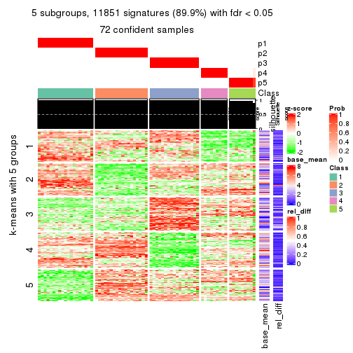
get_signatures(res, k = 6)
Signature heatmaps where rows are not scaled:
get_signatures(res, k = 2, scale_rows = FALSE)
get_signatures(res, k = 3, scale_rows = FALSE)

get_signatures(res, k = 4, scale_rows = FALSE)

get_signatures(res, k = 5, scale_rows = FALSE)
get_signatures(res, k = 6, scale_rows = FALSE)
Compare the overlap of signatures from different k:
compare_signatures(res)
get_signature() returns a data frame invisibly. TO get the list of signatures, the function
call should be assigned to a variable explicitly. In following code, if plot argument is set
to FALSE, no heatmap is plotted while only the differential analysis is performed.
# code only for demonstration
tb = get_signature(res, k = ..., plot = FALSE)
An example of the output of tb is:
#> which_row fdr mean_1 mean_2 scaled_mean_1 scaled_mean_2 km
#> 1 38 0.042760348 8.373488 9.131774 -0.5533452 0.5164555 1
#> 2 40 0.018707592 7.106213 8.469186 -0.6173731 0.5762149 1
#> 3 55 0.019134737 10.221463 11.207825 -0.6159697 0.5749050 1
#> 4 59 0.006059896 5.921854 7.869574 -0.6899429 0.6439467 1
#> 5 60 0.018055526 8.928898 10.211722 -0.6204761 0.5791110 1
#> 6 98 0.009384629 15.714769 14.887706 0.6635654 -0.6193277 2
...
The columns in tb are:
which_row: row indices corresponding to the input matrix.fdr: FDR for the differential test. mean_x: The mean value in group x.scaled_mean_x: The mean value in group x after rows are scaled.km: Row groups if k-means clustering is applied to rows.UMAP plot which shows how samples are separated.
dimension_reduction(res, k = 2, method = "UMAP")
dimension_reduction(res, k = 3, method = "UMAP")
dimension_reduction(res, k = 4, method = "UMAP")
dimension_reduction(res, k = 5, method = "UMAP")
dimension_reduction(res, k = 6, method = "UMAP")
Following heatmap shows how subgroups are split when increasing k:
collect_classes(res)

If matrix rows can be associated to genes, consider to use GO_Enrichment(res,
...) to perform function enrichment for the signature genes.
The object with results only for a single top-value method and a single partition method can be extracted as:
res = res_list["ATC", "mclust"]
# you can also extract it by
# res = res_list["ATC:mclust"]
A summary of res and all the functions that can be applied to it:
res
#> A 'ConsensusPartition' object with k = 2, 3, 4, 5, 6.
#> On a matrix with 13183 rows and 72 columns.
#> Top rows (1000, 2000, 3000, 4000, 5000) are extracted by 'ATC' method.
#> Subgroups are detected by 'mclust' method.
#> Performed in total 1250 partitions by row resampling.
#> Best k for subgroups seems to be 4.
#>
#> Following methods can be applied to this 'ConsensusPartition' object:
#> [1] "cola_report" "collect_classes" "collect_plots"
#> [4] "collect_stats" "colnames" "compare_signatures"
#> [7] "consensus_heatmap" "dimension_reduction" "functional_enrichment"
#> [10] "get_anno_col" "get_anno" "get_classes"
#> [13] "get_consensus" "get_matrix" "get_membership"
#> [16] "get_param" "get_signatures" "get_stats"
#> [19] "is_best_k" "is_stable_k" "membership_heatmap"
#> [22] "ncol" "nrow" "plot_ecdf"
#> [25] "rownames" "select_partition_number" "show"
#> [28] "suggest_best_k" "test_to_known_factors"
collect_plots() function collects all the plots made from res for all k (number of partitions)
into one single page to provide an easy and fast comparison between different k.
collect_plots(res)
The plots are:
k and the heatmap of
predicted classes for each k.k.k.k.All the plots in panels can be made by individual functions and they are plotted later in this section.
select_partition_number() produces several plots showing different
statistics for choosing “optimized” k. There are following statistics:
k;k, the area increased is defined as \(A_k - A_{k-1}\).The detailed explanations of these statistics can be found in the cola vignette.
Generally speaking, lower PAC score, higher mean silhouette score or higher
concordance corresponds to better partition. Rand index and Jaccard index
measure how similar the current partition is compared to partition with k-1.
If they are too similar, we won't accept k is better than k-1.
select_partition_number(res)
The numeric values for all these statistics can be obtained by get_stats().
get_stats(res)
#> k 1-PAC mean_silhouette concordance area_increased Rand Jaccard
#> 2 2 1.000 0.988 0.991 0.3985 0.606 0.606
#> 3 3 1.000 1.000 1.000 0.6079 0.754 0.593
#> 4 4 1.000 1.000 1.000 0.1866 0.880 0.667
#> 5 5 1.000 0.965 0.965 0.0166 1.000 1.000
#> 6 6 0.914 0.928 0.918 0.0169 1.000 1.000
suggest_best_k() suggests the best \(k\) based on these statistics. The rules are as follows:
NA.suggest_best_k(res)
#> [1] 4
#> attr(,"optional")
#> [1] 2 3
There is also optional best \(k\) = 2 3 that is worth to check.
Following shows the table of the partitions (You need to click the show/hide
code output link to see it). The membership matrix (columns with name p*)
is inferred by
clue::cl_consensus()
function with the SE method. Basically the value in the membership matrix
represents the probability to belong to a certain group. The finall class
label for an item is determined with the group with highest probability it
belongs to.
In get_classes() function, the entropy is calculated from the membership
matrix and the silhouette score is calculated from the consensus matrix.
cbind(get_classes(res, k = 2), get_membership(res, k = 2))
#> class entropy silhouette p1 p2
#> SRR942117 2 0.000 0.987 0.000 1.000
#> SRR942118 2 0.000 0.987 0.000 1.000
#> SRR942119 2 0.000 0.987 0.000 1.000
#> SRR942120 2 0.000 0.987 0.000 1.000
#> SRR942121 2 0.000 0.987 0.000 1.000
#> SRR942122 2 0.000 0.987 0.000 1.000
#> SRR942123 2 0.000 0.987 0.000 1.000
#> SRR942124 2 0.000 0.987 0.000 1.000
#> SRR942125 2 0.000 0.987 0.000 1.000
#> SRR942126 2 0.000 0.987 0.000 1.000
#> SRR942127 2 0.000 0.987 0.000 1.000
#> SRR942128 2 0.000 0.987 0.000 1.000
#> SRR942129 2 0.000 0.987 0.000 1.000
#> SRR942130 2 0.000 0.987 0.000 1.000
#> SRR942131 2 0.000 0.987 0.000 1.000
#> SRR942132 2 0.000 0.987 0.000 1.000
#> SRR942133 2 0.000 0.987 0.000 1.000
#> SRR942134 2 0.000 0.987 0.000 1.000
#> SRR942144 2 0.224 0.975 0.036 0.964
#> SRR942145 2 0.224 0.975 0.036 0.964
#> SRR942146 2 0.224 0.975 0.036 0.964
#> SRR942147 2 0.224 0.975 0.036 0.964
#> SRR942148 2 0.224 0.975 0.036 0.964
#> SRR942149 2 0.224 0.975 0.036 0.964
#> SRR942150 2 0.224 0.975 0.036 0.964
#> SRR942151 2 0.224 0.975 0.036 0.964
#> SRR942152 2 0.224 0.975 0.036 0.964
#> SRR942135 2 0.224 0.975 0.036 0.964
#> SRR942136 2 0.224 0.975 0.036 0.964
#> SRR942137 2 0.224 0.975 0.036 0.964
#> SRR942138 2 0.224 0.975 0.036 0.964
#> SRR942139 2 0.224 0.975 0.036 0.964
#> SRR942140 2 0.224 0.975 0.036 0.964
#> SRR942141 2 0.224 0.975 0.036 0.964
#> SRR942142 2 0.224 0.975 0.036 0.964
#> SRR942143 2 0.224 0.975 0.036 0.964
#> SRR942153 2 0.000 0.987 0.000 1.000
#> SRR942154 2 0.000 0.987 0.000 1.000
#> SRR942155 2 0.000 0.987 0.000 1.000
#> SRR942156 2 0.000 0.987 0.000 1.000
#> SRR942157 2 0.000 0.987 0.000 1.000
#> SRR942158 2 0.000 0.987 0.000 1.000
#> SRR942159 2 0.000 0.987 0.000 1.000
#> SRR942160 2 0.000 0.987 0.000 1.000
#> SRR942161 2 0.000 0.987 0.000 1.000
#> SRR942162 2 0.000 0.987 0.000 1.000
#> SRR942163 2 0.000 0.987 0.000 1.000
#> SRR942164 2 0.000 0.987 0.000 1.000
#> SRR942166 2 0.000 0.987 0.000 1.000
#> SRR942167 2 0.000 0.987 0.000 1.000
#> SRR942168 2 0.000 0.987 0.000 1.000
#> SRR942169 2 0.000 0.987 0.000 1.000
#> SRR942170 2 0.000 0.987 0.000 1.000
#> SRR942171 1 0.000 1.000 1.000 0.000
#> SRR942172 1 0.000 1.000 1.000 0.000
#> SRR942173 1 0.000 1.000 1.000 0.000
#> SRR942174 1 0.000 1.000 1.000 0.000
#> SRR942175 1 0.000 1.000 1.000 0.000
#> SRR942176 1 0.000 1.000 1.000 0.000
#> SRR942177 1 0.000 1.000 1.000 0.000
#> SRR942178 1 0.000 1.000 1.000 0.000
#> SRR942179 1 0.000 1.000 1.000 0.000
#> SRR942180 1 0.000 1.000 1.000 0.000
#> SRR942181 1 0.000 1.000 1.000 0.000
#> SRR942182 1 0.000 1.000 1.000 0.000
#> SRR942183 1 0.000 1.000 1.000 0.000
#> SRR942184 1 0.000 1.000 1.000 0.000
#> SRR942185 1 0.000 1.000 1.000 0.000
#> SRR942186 1 0.000 1.000 1.000 0.000
#> SRR942187 1 0.000 1.000 1.000 0.000
#> SRR942188 1 0.000 1.000 1.000 0.000
#> SRR942189 1 0.000 1.000 1.000 0.000
cbind(get_classes(res, k = 3), get_membership(res, k = 3))
#> class entropy silhouette p1 p2 p3
#> SRR942117 2 0 1 0 1 0
#> SRR942118 2 0 1 0 1 0
#> SRR942119 2 0 1 0 1 0
#> SRR942120 2 0 1 0 1 0
#> SRR942121 2 0 1 0 1 0
#> SRR942122 2 0 1 0 1 0
#> SRR942123 2 0 1 0 1 0
#> SRR942124 2 0 1 0 1 0
#> SRR942125 2 0 1 0 1 0
#> SRR942126 2 0 1 0 1 0
#> SRR942127 2 0 1 0 1 0
#> SRR942128 2 0 1 0 1 0
#> SRR942129 2 0 1 0 1 0
#> SRR942130 2 0 1 0 1 0
#> SRR942131 2 0 1 0 1 0
#> SRR942132 2 0 1 0 1 0
#> SRR942133 2 0 1 0 1 0
#> SRR942134 2 0 1 0 1 0
#> SRR942144 3 0 1 0 0 1
#> SRR942145 3 0 1 0 0 1
#> SRR942146 3 0 1 0 0 1
#> SRR942147 3 0 1 0 0 1
#> SRR942148 3 0 1 0 0 1
#> SRR942149 3 0 1 0 0 1
#> SRR942150 3 0 1 0 0 1
#> SRR942151 3 0 1 0 0 1
#> SRR942152 3 0 1 0 0 1
#> SRR942135 3 0 1 0 0 1
#> SRR942136 3 0 1 0 0 1
#> SRR942137 3 0 1 0 0 1
#> SRR942138 3 0 1 0 0 1
#> SRR942139 3 0 1 0 0 1
#> SRR942140 3 0 1 0 0 1
#> SRR942141 3 0 1 0 0 1
#> SRR942142 3 0 1 0 0 1
#> SRR942143 3 0 1 0 0 1
#> SRR942153 3 0 1 0 0 1
#> SRR942154 3 0 1 0 0 1
#> SRR942155 3 0 1 0 0 1
#> SRR942156 3 0 1 0 0 1
#> SRR942157 3 0 1 0 0 1
#> SRR942158 3 0 1 0 0 1
#> SRR942159 3 0 1 0 0 1
#> SRR942160 3 0 1 0 0 1
#> SRR942161 3 0 1 0 0 1
#> SRR942162 3 0 1 0 0 1
#> SRR942163 3 0 1 0 0 1
#> SRR942164 3 0 1 0 0 1
#> SRR942166 3 0 1 0 0 1
#> SRR942167 3 0 1 0 0 1
#> SRR942168 3 0 1 0 0 1
#> SRR942169 3 0 1 0 0 1
#> SRR942170 3 0 1 0 0 1
#> SRR942171 1 0 1 1 0 0
#> SRR942172 1 0 1 1 0 0
#> SRR942173 1 0 1 1 0 0
#> SRR942174 1 0 1 1 0 0
#> SRR942175 1 0 1 1 0 0
#> SRR942176 1 0 1 1 0 0
#> SRR942177 1 0 1 1 0 0
#> SRR942178 1 0 1 1 0 0
#> SRR942179 1 0 1 1 0 0
#> SRR942180 1 0 1 1 0 0
#> SRR942181 1 0 1 1 0 0
#> SRR942182 1 0 1 1 0 0
#> SRR942183 1 0 1 1 0 0
#> SRR942184 1 0 1 1 0 0
#> SRR942185 1 0 1 1 0 0
#> SRR942186 1 0 1 1 0 0
#> SRR942187 1 0 1 1 0 0
#> SRR942188 1 0 1 1 0 0
#> SRR942189 1 0 1 1 0 0
cbind(get_classes(res, k = 4), get_membership(res, k = 4))
#> class entropy silhouette p1 p2 p3 p4
#> SRR942117 2 0 1 0 1 0 0
#> SRR942118 2 0 1 0 1 0 0
#> SRR942119 2 0 1 0 1 0 0
#> SRR942120 2 0 1 0 1 0 0
#> SRR942121 2 0 1 0 1 0 0
#> SRR942122 2 0 1 0 1 0 0
#> SRR942123 2 0 1 0 1 0 0
#> SRR942124 2 0 1 0 1 0 0
#> SRR942125 2 0 1 0 1 0 0
#> SRR942126 2 0 1 0 1 0 0
#> SRR942127 2 0 1 0 1 0 0
#> SRR942128 2 0 1 0 1 0 0
#> SRR942129 2 0 1 0 1 0 0
#> SRR942130 2 0 1 0 1 0 0
#> SRR942131 2 0 1 0 1 0 0
#> SRR942132 2 0 1 0 1 0 0
#> SRR942133 2 0 1 0 1 0 0
#> SRR942134 2 0 1 0 1 0 0
#> SRR942144 4 0 1 0 0 0 1
#> SRR942145 4 0 1 0 0 0 1
#> SRR942146 4 0 1 0 0 0 1
#> SRR942147 4 0 1 0 0 0 1
#> SRR942148 4 0 1 0 0 0 1
#> SRR942149 4 0 1 0 0 0 1
#> SRR942150 4 0 1 0 0 0 1
#> SRR942151 4 0 1 0 0 0 1
#> SRR942152 4 0 1 0 0 0 1
#> SRR942135 4 0 1 0 0 0 1
#> SRR942136 4 0 1 0 0 0 1
#> SRR942137 4 0 1 0 0 0 1
#> SRR942138 4 0 1 0 0 0 1
#> SRR942139 4 0 1 0 0 0 1
#> SRR942140 4 0 1 0 0 0 1
#> SRR942141 4 0 1 0 0 0 1
#> SRR942142 4 0 1 0 0 0 1
#> SRR942143 4 0 1 0 0 0 1
#> SRR942153 3 0 1 0 0 1 0
#> SRR942154 3 0 1 0 0 1 0
#> SRR942155 3 0 1 0 0 1 0
#> SRR942156 3 0 1 0 0 1 0
#> SRR942157 3 0 1 0 0 1 0
#> SRR942158 3 0 1 0 0 1 0
#> SRR942159 3 0 1 0 0 1 0
#> SRR942160 3 0 1 0 0 1 0
#> SRR942161 3 0 1 0 0 1 0
#> SRR942162 3 0 1 0 0 1 0
#> SRR942163 3 0 1 0 0 1 0
#> SRR942164 3 0 1 0 0 1 0
#> SRR942166 3 0 1 0 0 1 0
#> SRR942167 3 0 1 0 0 1 0
#> SRR942168 3 0 1 0 0 1 0
#> SRR942169 3 0 1 0 0 1 0
#> SRR942170 3 0 1 0 0 1 0
#> SRR942171 1 0 1 1 0 0 0
#> SRR942172 1 0 1 1 0 0 0
#> SRR942173 1 0 1 1 0 0 0
#> SRR942174 1 0 1 1 0 0 0
#> SRR942175 1 0 1 1 0 0 0
#> SRR942176 1 0 1 1 0 0 0
#> SRR942177 1 0 1 1 0 0 0
#> SRR942178 1 0 1 1 0 0 0
#> SRR942179 1 0 1 1 0 0 0
#> SRR942180 1 0 1 1 0 0 0
#> SRR942181 1 0 1 1 0 0 0
#> SRR942182 1 0 1 1 0 0 0
#> SRR942183 1 0 1 1 0 0 0
#> SRR942184 1 0 1 1 0 0 0
#> SRR942185 1 0 1 1 0 0 0
#> SRR942186 1 0 1 1 0 0 0
#> SRR942187 1 0 1 1 0 0 0
#> SRR942188 1 0 1 1 0 0 0
#> SRR942189 1 0 1 1 0 0 0
cbind(get_classes(res, k = 5), get_membership(res, k = 5))
#> class entropy silhouette p1 p2 p3 p4 p5
#> SRR942117 2 0.1197 0.974 0.000 0.952 0.000 0.000 NA
#> SRR942118 2 0.1478 0.967 0.000 0.936 0.000 0.000 NA
#> SRR942119 2 0.1410 0.971 0.000 0.940 0.000 0.000 NA
#> SRR942120 2 0.1121 0.974 0.000 0.956 0.000 0.000 NA
#> SRR942121 2 0.0963 0.977 0.000 0.964 0.000 0.000 NA
#> SRR942122 2 0.1270 0.973 0.000 0.948 0.000 0.000 NA
#> SRR942123 2 0.0880 0.978 0.000 0.968 0.000 0.000 NA
#> SRR942124 2 0.1197 0.975 0.000 0.952 0.000 0.000 NA
#> SRR942125 2 0.2732 0.910 0.000 0.840 0.000 0.000 NA
#> SRR942126 2 0.0000 0.981 0.000 1.000 0.000 0.000 NA
#> SRR942127 2 0.0000 0.981 0.000 1.000 0.000 0.000 NA
#> SRR942128 2 0.0000 0.981 0.000 1.000 0.000 0.000 NA
#> SRR942129 2 0.0000 0.981 0.000 1.000 0.000 0.000 NA
#> SRR942130 2 0.0000 0.981 0.000 1.000 0.000 0.000 NA
#> SRR942131 2 0.0000 0.981 0.000 1.000 0.000 0.000 NA
#> SRR942132 2 0.0000 0.981 0.000 1.000 0.000 0.000 NA
#> SRR942133 2 0.0000 0.981 0.000 1.000 0.000 0.000 NA
#> SRR942134 2 0.0000 0.981 0.000 1.000 0.000 0.000 NA
#> SRR942144 4 0.0162 0.953 0.000 0.000 0.000 0.996 NA
#> SRR942145 4 0.0162 0.953 0.000 0.000 0.000 0.996 NA
#> SRR942146 4 0.0162 0.954 0.000 0.000 0.000 0.996 NA
#> SRR942147 4 0.0162 0.953 0.000 0.000 0.000 0.996 NA
#> SRR942148 4 0.0000 0.954 0.000 0.000 0.000 1.000 NA
#> SRR942149 4 0.0000 0.954 0.000 0.000 0.000 1.000 NA
#> SRR942150 4 0.0162 0.953 0.000 0.000 0.000 0.996 NA
#> SRR942151 4 0.0000 0.954 0.000 0.000 0.000 1.000 NA
#> SRR942152 4 0.0000 0.954 0.000 0.000 0.000 1.000 NA
#> SRR942135 4 0.1792 0.950 0.000 0.000 0.000 0.916 NA
#> SRR942136 4 0.1732 0.950 0.000 0.000 0.000 0.920 NA
#> SRR942137 4 0.1732 0.950 0.000 0.000 0.000 0.920 NA
#> SRR942138 4 0.1732 0.950 0.000 0.000 0.000 0.920 NA
#> SRR942139 4 0.1792 0.950 0.000 0.000 0.000 0.916 NA
#> SRR942140 4 0.1792 0.950 0.000 0.000 0.000 0.916 NA
#> SRR942141 4 0.1732 0.950 0.000 0.000 0.000 0.920 NA
#> SRR942142 4 0.1671 0.951 0.000 0.000 0.000 0.924 NA
#> SRR942143 4 0.4273 0.633 0.000 0.000 0.000 0.552 NA
#> SRR942153 3 0.0609 0.973 0.000 0.000 0.980 0.000 NA
#> SRR942154 3 0.0000 0.977 0.000 0.000 1.000 0.000 NA
#> SRR942155 3 0.0162 0.977 0.000 0.000 0.996 0.000 NA
#> SRR942156 3 0.0290 0.977 0.000 0.000 0.992 0.000 NA
#> SRR942157 3 0.0703 0.972 0.000 0.000 0.976 0.000 NA
#> SRR942158 3 0.0290 0.977 0.000 0.000 0.992 0.000 NA
#> SRR942159 3 0.0404 0.976 0.000 0.000 0.988 0.000 NA
#> SRR942160 3 0.0290 0.978 0.000 0.000 0.992 0.000 NA
#> SRR942161 3 0.2280 0.914 0.000 0.000 0.880 0.000 NA
#> SRR942162 3 0.1197 0.975 0.000 0.000 0.952 0.000 NA
#> SRR942163 3 0.1121 0.975 0.000 0.000 0.956 0.000 NA
#> SRR942164 3 0.1121 0.975 0.000 0.000 0.956 0.000 NA
#> SRR942166 3 0.1121 0.975 0.000 0.000 0.956 0.000 NA
#> SRR942167 3 0.1121 0.975 0.000 0.000 0.956 0.000 NA
#> SRR942168 3 0.1121 0.975 0.000 0.000 0.956 0.000 NA
#> SRR942169 3 0.1121 0.975 0.000 0.000 0.956 0.000 NA
#> SRR942170 3 0.0290 0.977 0.000 0.000 0.992 0.000 NA
#> SRR942171 1 0.0703 0.982 0.976 0.000 0.000 0.000 NA
#> SRR942172 1 0.0404 0.986 0.988 0.000 0.000 0.000 NA
#> SRR942173 1 0.0000 0.986 1.000 0.000 0.000 0.000 NA
#> SRR942174 1 0.0290 0.986 0.992 0.000 0.000 0.000 NA
#> SRR942175 1 0.0290 0.986 0.992 0.000 0.000 0.000 NA
#> SRR942176 1 0.0162 0.987 0.996 0.000 0.000 0.000 NA
#> SRR942177 1 0.0000 0.986 1.000 0.000 0.000 0.000 NA
#> SRR942178 1 0.0510 0.985 0.984 0.000 0.000 0.000 NA
#> SRR942179 1 0.0000 0.986 1.000 0.000 0.000 0.000 NA
#> SRR942180 1 0.0290 0.986 0.992 0.000 0.000 0.000 NA
#> SRR942181 1 0.0404 0.985 0.988 0.000 0.000 0.000 NA
#> SRR942182 1 0.0290 0.987 0.992 0.000 0.000 0.000 NA
#> SRR942183 1 0.0963 0.974 0.964 0.000 0.000 0.000 NA
#> SRR942184 1 0.0000 0.986 1.000 0.000 0.000 0.000 NA
#> SRR942185 1 0.0290 0.986 0.992 0.000 0.000 0.000 NA
#> SRR942186 1 0.0404 0.985 0.988 0.000 0.000 0.000 NA
#> SRR942187 1 0.0703 0.983 0.976 0.000 0.000 0.000 NA
#> SRR942188 1 0.0404 0.985 0.988 0.000 0.000 0.000 NA
#> SRR942189 1 0.2929 0.872 0.820 0.000 0.000 0.000 NA
cbind(get_classes(res, k = 6), get_membership(res, k = 6))
#> class entropy silhouette p1 p2 p3 p4 p5 p6
#> SRR942117 2 0.2340 0.937 0.000 0.852 0.000 0.000 NA NA
#> SRR942118 2 0.2219 0.939 0.000 0.864 0.000 0.000 NA NA
#> SRR942119 2 0.2219 0.939 0.000 0.864 0.000 0.000 NA NA
#> SRR942120 2 0.2482 0.935 0.000 0.848 0.000 0.000 NA NA
#> SRR942121 2 0.2178 0.940 0.000 0.868 0.000 0.000 NA NA
#> SRR942122 2 0.2178 0.940 0.000 0.868 0.000 0.000 NA NA
#> SRR942123 2 0.2135 0.940 0.000 0.872 0.000 0.000 NA NA
#> SRR942124 2 0.2092 0.941 0.000 0.876 0.000 0.000 NA NA
#> SRR942125 2 0.3293 0.894 0.000 0.812 0.000 0.000 NA NA
#> SRR942126 2 0.0000 0.945 0.000 1.000 0.000 0.000 NA NA
#> SRR942127 2 0.0000 0.945 0.000 1.000 0.000 0.000 NA NA
#> SRR942128 2 0.0000 0.945 0.000 1.000 0.000 0.000 NA NA
#> SRR942129 2 0.0363 0.942 0.000 0.988 0.000 0.000 NA NA
#> SRR942130 2 0.0000 0.945 0.000 1.000 0.000 0.000 NA NA
#> SRR942131 2 0.1010 0.942 0.000 0.960 0.000 0.000 NA NA
#> SRR942132 2 0.0000 0.945 0.000 1.000 0.000 0.000 NA NA
#> SRR942133 2 0.0146 0.944 0.000 0.996 0.000 0.000 NA NA
#> SRR942134 2 0.0405 0.944 0.000 0.988 0.000 0.000 NA NA
#> SRR942144 4 0.0405 0.884 0.000 0.000 0.000 0.988 NA NA
#> SRR942145 4 0.0291 0.884 0.000 0.000 0.000 0.992 NA NA
#> SRR942146 4 0.0790 0.888 0.000 0.000 0.000 0.968 NA NA
#> SRR942147 4 0.0260 0.885 0.000 0.000 0.000 0.992 NA NA
#> SRR942148 4 0.0146 0.886 0.000 0.000 0.000 0.996 NA NA
#> SRR942149 4 0.0146 0.885 0.000 0.000 0.000 0.996 NA NA
#> SRR942150 4 0.0260 0.886 0.000 0.000 0.000 0.992 NA NA
#> SRR942151 4 0.0508 0.888 0.000 0.000 0.000 0.984 NA NA
#> SRR942152 4 0.0260 0.886 0.000 0.000 0.000 0.992 NA NA
#> SRR942135 4 0.3360 0.876 0.000 0.000 0.000 0.732 NA NA
#> SRR942136 4 0.3360 0.876 0.000 0.000 0.000 0.732 NA NA
#> SRR942137 4 0.3198 0.878 0.000 0.000 0.000 0.740 NA NA
#> SRR942138 4 0.3337 0.877 0.000 0.000 0.000 0.736 NA NA
#> SRR942139 4 0.3244 0.876 0.000 0.000 0.000 0.732 NA NA
#> SRR942140 4 0.3360 0.876 0.000 0.000 0.000 0.732 NA NA
#> SRR942141 4 0.3244 0.876 0.000 0.000 0.000 0.732 NA NA
#> SRR942142 4 0.3314 0.878 0.000 0.000 0.000 0.740 NA NA
#> SRR942143 4 0.5629 0.669 0.000 0.000 0.000 0.540 NA NA
#> SRR942153 3 0.0865 0.947 0.000 0.000 0.964 0.000 NA NA
#> SRR942154 3 0.0000 0.956 0.000 0.000 1.000 0.000 NA NA
#> SRR942155 3 0.0547 0.955 0.000 0.000 0.980 0.000 NA NA
#> SRR942156 3 0.0000 0.956 0.000 0.000 1.000 0.000 NA NA
#> SRR942157 3 0.1265 0.941 0.000 0.000 0.948 0.000 NA NA
#> SRR942158 3 0.0000 0.956 0.000 0.000 1.000 0.000 NA NA
#> SRR942159 3 0.0790 0.956 0.000 0.000 0.968 0.000 NA NA
#> SRR942160 3 0.0146 0.957 0.000 0.000 0.996 0.000 NA NA
#> SRR942161 3 0.2854 0.863 0.000 0.000 0.792 0.000 NA NA
#> SRR942162 3 0.1663 0.953 0.000 0.000 0.912 0.000 NA NA
#> SRR942163 3 0.1765 0.951 0.000 0.000 0.904 0.000 NA NA
#> SRR942164 3 0.1765 0.951 0.000 0.000 0.904 0.000 NA NA
#> SRR942166 3 0.1863 0.949 0.000 0.000 0.896 0.000 NA NA
#> SRR942167 3 0.1714 0.952 0.000 0.000 0.908 0.000 NA NA
#> SRR942168 3 0.1610 0.953 0.000 0.000 0.916 0.000 NA NA
#> SRR942169 3 0.1765 0.951 0.000 0.000 0.904 0.000 NA NA
#> SRR942170 3 0.0520 0.958 0.000 0.000 0.984 0.000 NA NA
#> SRR942171 1 0.1267 0.958 0.940 0.000 0.000 0.000 NA NA
#> SRR942172 1 0.0363 0.970 0.988 0.000 0.000 0.000 NA NA
#> SRR942173 1 0.0146 0.968 0.996 0.000 0.000 0.000 NA NA
#> SRR942174 1 0.0632 0.968 0.976 0.000 0.000 0.000 NA NA
#> SRR942175 1 0.0405 0.970 0.988 0.000 0.000 0.000 NA NA
#> SRR942176 1 0.0458 0.969 0.984 0.000 0.000 0.000 NA NA
#> SRR942177 1 0.0363 0.969 0.988 0.000 0.000 0.000 NA NA
#> SRR942178 1 0.0632 0.968 0.976 0.000 0.000 0.000 NA NA
#> SRR942179 1 0.0547 0.970 0.980 0.000 0.000 0.000 NA NA
#> SRR942180 1 0.0713 0.968 0.972 0.000 0.000 0.000 NA NA
#> SRR942181 1 0.0777 0.968 0.972 0.000 0.000 0.000 NA NA
#> SRR942182 1 0.1257 0.967 0.952 0.000 0.000 0.000 NA NA
#> SRR942183 1 0.2060 0.942 0.900 0.000 0.000 0.000 NA NA
#> SRR942184 1 0.0935 0.966 0.964 0.000 0.000 0.000 NA NA
#> SRR942185 1 0.1267 0.958 0.940 0.000 0.000 0.000 NA NA
#> SRR942186 1 0.1333 0.961 0.944 0.000 0.000 0.000 NA NA
#> SRR942187 1 0.1802 0.952 0.916 0.000 0.000 0.000 NA NA
#> SRR942188 1 0.0806 0.969 0.972 0.000 0.000 0.000 NA NA
#> SRR942189 1 0.3309 0.806 0.720 0.000 0.000 0.000 NA NA
Heatmaps for the consensus matrix. It visualizes the probability of two samples to be in a same group.
consensus_heatmap(res, k = 2)
consensus_heatmap(res, k = 3)

consensus_heatmap(res, k = 4)

consensus_heatmap(res, k = 5)
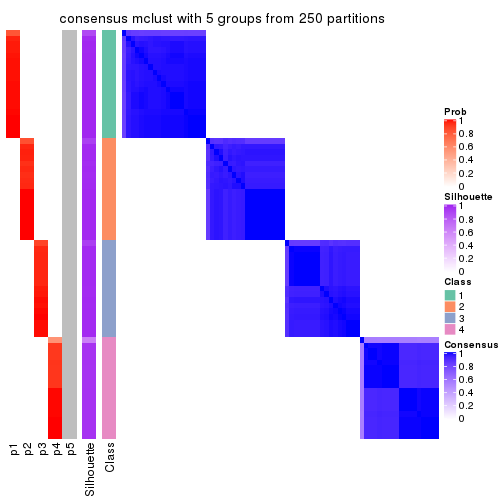
consensus_heatmap(res, k = 6)

Heatmaps for the membership of samples in all partitions to see how consistent they are:
membership_heatmap(res, k = 2)
membership_heatmap(res, k = 3)

membership_heatmap(res, k = 4)

membership_heatmap(res, k = 5)
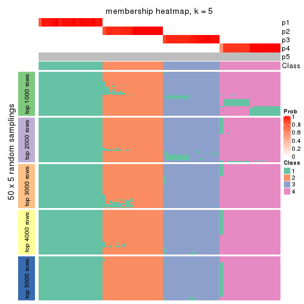
membership_heatmap(res, k = 6)

As soon as we have had the classes for columns, we can look for signatures which are significantly different between classes which can be candidate marks for certain classes. Following are the heatmaps for signatures.
Signature heatmaps where rows are scaled:
get_signatures(res, k = 2)
get_signatures(res, k = 3)
get_signatures(res, k = 4)

get_signatures(res, k = 5)
get_signatures(res, k = 6)
Signature heatmaps where rows are not scaled:
get_signatures(res, k = 2, scale_rows = FALSE)
get_signatures(res, k = 3, scale_rows = FALSE)

get_signatures(res, k = 4, scale_rows = FALSE)

get_signatures(res, k = 5, scale_rows = FALSE)

get_signatures(res, k = 6, scale_rows = FALSE)
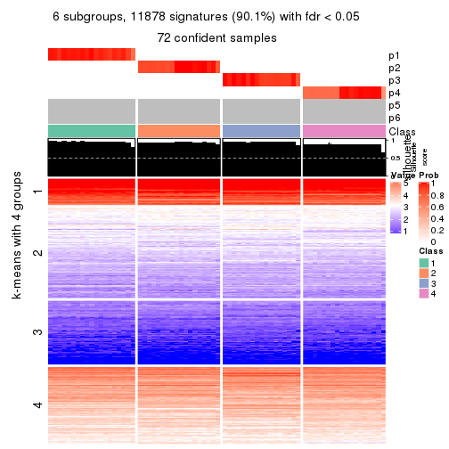
Compare the overlap of signatures from different k:
compare_signatures(res)
get_signature() returns a data frame invisibly. TO get the list of signatures, the function
call should be assigned to a variable explicitly. In following code, if plot argument is set
to FALSE, no heatmap is plotted while only the differential analysis is performed.
# code only for demonstration
tb = get_signature(res, k = ..., plot = FALSE)
An example of the output of tb is:
#> which_row fdr mean_1 mean_2 scaled_mean_1 scaled_mean_2 km
#> 1 38 0.042760348 8.373488 9.131774 -0.5533452 0.5164555 1
#> 2 40 0.018707592 7.106213 8.469186 -0.6173731 0.5762149 1
#> 3 55 0.019134737 10.221463 11.207825 -0.6159697 0.5749050 1
#> 4 59 0.006059896 5.921854 7.869574 -0.6899429 0.6439467 1
#> 5 60 0.018055526 8.928898 10.211722 -0.6204761 0.5791110 1
#> 6 98 0.009384629 15.714769 14.887706 0.6635654 -0.6193277 2
...
The columns in tb are:
which_row: row indices corresponding to the input matrix.fdr: FDR for the differential test. mean_x: The mean value in group x.scaled_mean_x: The mean value in group x after rows are scaled.km: Row groups if k-means clustering is applied to rows.UMAP plot which shows how samples are separated.
dimension_reduction(res, k = 2, method = "UMAP")
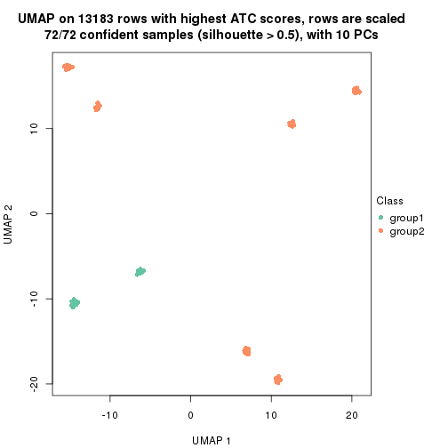
dimension_reduction(res, k = 3, method = "UMAP")
dimension_reduction(res, k = 4, method = "UMAP")
dimension_reduction(res, k = 5, method = "UMAP")
dimension_reduction(res, k = 6, method = "UMAP")
Following heatmap shows how subgroups are split when increasing k:
collect_classes(res)
If matrix rows can be associated to genes, consider to use GO_Enrichment(res,
...) to perform function enrichment for the signature genes.
The object with results only for a single top-value method and a single partition method can be extracted as:
res = res_list["ATC", "NMF"]
# you can also extract it by
# res = res_list["ATC:NMF"]
A summary of res and all the functions that can be applied to it:
res
#> A 'ConsensusPartition' object with k = 2, 3, 4, 5, 6.
#> On a matrix with 13183 rows and 72 columns.
#> Top rows (1000, 2000, 3000, 4000, 5000) are extracted by 'ATC' method.
#> Subgroups are detected by 'NMF' method.
#> Performed in total 1250 partitions by row resampling.
#> Best k for subgroups seems to be 4.
#>
#> Following methods can be applied to this 'ConsensusPartition' object:
#> [1] "cola_report" "collect_classes" "collect_plots"
#> [4] "collect_stats" "colnames" "compare_signatures"
#> [7] "consensus_heatmap" "dimension_reduction" "functional_enrichment"
#> [10] "get_anno_col" "get_anno" "get_classes"
#> [13] "get_consensus" "get_matrix" "get_membership"
#> [16] "get_param" "get_signatures" "get_stats"
#> [19] "is_best_k" "is_stable_k" "membership_heatmap"
#> [22] "ncol" "nrow" "plot_ecdf"
#> [25] "rownames" "select_partition_number" "show"
#> [28] "suggest_best_k" "test_to_known_factors"
collect_plots() function collects all the plots made from res for all k (number of partitions)
into one single page to provide an easy and fast comparison between different k.
collect_plots(res)

The plots are:
k and the heatmap of
predicted classes for each k.k.k.k.All the plots in panels can be made by individual functions and they are plotted later in this section.
select_partition_number() produces several plots showing different
statistics for choosing “optimized” k. There are following statistics:
k;k, the area increased is defined as \(A_k - A_{k-1}\).The detailed explanations of these statistics can be found in the cola vignette.
Generally speaking, lower PAC score, higher mean silhouette score or higher
concordance corresponds to better partition. Rand index and Jaccard index
measure how similar the current partition is compared to partition with k-1.
If they are too similar, we won't accept k is better than k-1.
select_partition_number(res)
The numeric values for all these statistics can be obtained by get_stats().
get_stats(res)
#> k 1-PAC mean_silhouette concordance area_increased Rand Jaccard
#> 2 2 0.647 0.857 0.933 0.4458 0.532 0.532
#> 3 3 0.960 0.968 0.964 0.4092 0.644 0.433
#> 4 4 1.000 0.999 0.989 0.2023 0.873 0.654
#> 5 5 1.000 0.981 0.981 0.0144 1.000 1.000
#> 6 6 1.000 0.963 0.977 0.0053 0.993 0.972
suggest_best_k() suggests the best \(k\) based on these statistics. The rules are as follows:
NA.suggest_best_k(res)
#> [1] 4
#> attr(,"optional")
#> [1] 3
There is also optional best \(k\) = 3 that is worth to check.
Following shows the table of the partitions (You need to click the show/hide
code output link to see it). The membership matrix (columns with name p*)
is inferred by
clue::cl_consensus()
function with the SE method. Basically the value in the membership matrix
represents the probability to belong to a certain group. The finall class
label for an item is determined with the group with highest probability it
belongs to.
In get_classes() function, the entropy is calculated from the membership
matrix and the silhouette score is calculated from the consensus matrix.
cbind(get_classes(res, k = 2), get_membership(res, k = 2))
#> class entropy silhouette p1 p2
#> SRR942117 1 0.000 0.947 1.000 0.000
#> SRR942118 1 0.000 0.947 1.000 0.000
#> SRR942119 1 0.000 0.947 1.000 0.000
#> SRR942120 1 0.000 0.947 1.000 0.000
#> SRR942121 1 0.000 0.947 1.000 0.000
#> SRR942122 1 0.000 0.947 1.000 0.000
#> SRR942123 1 0.000 0.947 1.000 0.000
#> SRR942124 1 0.000 0.947 1.000 0.000
#> SRR942125 1 0.000 0.947 1.000 0.000
#> SRR942126 1 0.000 0.947 1.000 0.000
#> SRR942127 1 0.000 0.947 1.000 0.000
#> SRR942128 1 0.000 0.947 1.000 0.000
#> SRR942129 1 0.000 0.947 1.000 0.000
#> SRR942130 1 0.000 0.947 1.000 0.000
#> SRR942131 1 0.000 0.947 1.000 0.000
#> SRR942132 1 0.000 0.947 1.000 0.000
#> SRR942133 1 0.000 0.947 1.000 0.000
#> SRR942134 1 0.000 0.947 1.000 0.000
#> SRR942144 1 0.839 0.621 0.732 0.268
#> SRR942145 1 0.795 0.675 0.760 0.240
#> SRR942146 1 0.689 0.760 0.816 0.184
#> SRR942147 1 0.745 0.722 0.788 0.212
#> SRR942148 1 0.738 0.728 0.792 0.208
#> SRR942149 1 0.745 0.722 0.788 0.212
#> SRR942150 1 0.745 0.722 0.788 0.212
#> SRR942151 1 0.866 0.579 0.712 0.288
#> SRR942152 1 0.605 0.804 0.852 0.148
#> SRR942135 2 0.814 0.703 0.252 0.748
#> SRR942136 2 0.939 0.562 0.356 0.644
#> SRR942137 2 0.925 0.593 0.340 0.660
#> SRR942138 2 0.939 0.562 0.356 0.644
#> SRR942139 2 0.844 0.684 0.272 0.728
#> SRR942140 2 0.900 0.630 0.316 0.684
#> SRR942141 2 0.871 0.661 0.292 0.708
#> SRR942142 2 0.925 0.593 0.340 0.660
#> SRR942143 2 0.932 0.578 0.348 0.652
#> SRR942153 2 0.000 0.869 0.000 1.000
#> SRR942154 2 0.000 0.869 0.000 1.000
#> SRR942155 2 0.000 0.869 0.000 1.000
#> SRR942156 2 0.000 0.869 0.000 1.000
#> SRR942157 2 0.000 0.869 0.000 1.000
#> SRR942158 2 0.000 0.869 0.000 1.000
#> SRR942159 2 0.000 0.869 0.000 1.000
#> SRR942160 2 0.000 0.869 0.000 1.000
#> SRR942161 2 0.000 0.869 0.000 1.000
#> SRR942162 2 0.000 0.869 0.000 1.000
#> SRR942163 2 0.000 0.869 0.000 1.000
#> SRR942164 2 0.000 0.869 0.000 1.000
#> SRR942166 2 0.000 0.869 0.000 1.000
#> SRR942167 2 0.000 0.869 0.000 1.000
#> SRR942168 2 0.000 0.869 0.000 1.000
#> SRR942169 2 0.000 0.869 0.000 1.000
#> SRR942170 2 0.000 0.869 0.000 1.000
#> SRR942171 1 0.000 0.947 1.000 0.000
#> SRR942172 1 0.000 0.947 1.000 0.000
#> SRR942173 1 0.000 0.947 1.000 0.000
#> SRR942174 1 0.000 0.947 1.000 0.000
#> SRR942175 1 0.000 0.947 1.000 0.000
#> SRR942176 1 0.000 0.947 1.000 0.000
#> SRR942177 1 0.000 0.947 1.000 0.000
#> SRR942178 1 0.000 0.947 1.000 0.000
#> SRR942179 1 0.000 0.947 1.000 0.000
#> SRR942180 1 0.000 0.947 1.000 0.000
#> SRR942181 1 0.000 0.947 1.000 0.000
#> SRR942182 1 0.000 0.947 1.000 0.000
#> SRR942183 1 0.000 0.947 1.000 0.000
#> SRR942184 1 0.000 0.947 1.000 0.000
#> SRR942185 1 0.000 0.947 1.000 0.000
#> SRR942186 1 0.000 0.947 1.000 0.000
#> SRR942187 1 0.000 0.947 1.000 0.000
#> SRR942188 1 0.000 0.947 1.000 0.000
#> SRR942189 1 0.000 0.947 1.000 0.000
cbind(get_classes(res, k = 3), get_membership(res, k = 3))
#> class entropy silhouette p1 p2 p3
#> SRR942117 2 0.1964 0.950 0.056 0.944 0.000
#> SRR942118 2 0.1964 0.950 0.056 0.944 0.000
#> SRR942119 2 0.1964 0.950 0.056 0.944 0.000
#> SRR942120 2 0.1964 0.950 0.056 0.944 0.000
#> SRR942121 2 0.1964 0.950 0.056 0.944 0.000
#> SRR942122 2 0.1964 0.950 0.056 0.944 0.000
#> SRR942123 2 0.1964 0.950 0.056 0.944 0.000
#> SRR942124 2 0.1964 0.950 0.056 0.944 0.000
#> SRR942125 2 0.1964 0.950 0.056 0.944 0.000
#> SRR942126 2 0.1964 0.950 0.056 0.944 0.000
#> SRR942127 2 0.1964 0.950 0.056 0.944 0.000
#> SRR942128 2 0.1964 0.950 0.056 0.944 0.000
#> SRR942129 2 0.1964 0.950 0.056 0.944 0.000
#> SRR942130 2 0.1964 0.950 0.056 0.944 0.000
#> SRR942131 2 0.1964 0.950 0.056 0.944 0.000
#> SRR942132 2 0.1964 0.950 0.056 0.944 0.000
#> SRR942133 2 0.1964 0.950 0.056 0.944 0.000
#> SRR942134 2 0.1964 0.950 0.056 0.944 0.000
#> SRR942144 2 0.0237 0.944 0.000 0.996 0.004
#> SRR942145 2 0.0237 0.944 0.000 0.996 0.004
#> SRR942146 2 0.0237 0.944 0.000 0.996 0.004
#> SRR942147 2 0.0237 0.944 0.000 0.996 0.004
#> SRR942148 2 0.0237 0.944 0.000 0.996 0.004
#> SRR942149 2 0.0237 0.944 0.000 0.996 0.004
#> SRR942150 2 0.0237 0.944 0.000 0.996 0.004
#> SRR942151 2 0.0237 0.944 0.000 0.996 0.004
#> SRR942152 2 0.0237 0.944 0.000 0.996 0.004
#> SRR942135 2 0.3349 0.884 0.004 0.888 0.108
#> SRR942136 2 0.2496 0.915 0.004 0.928 0.068
#> SRR942137 2 0.2400 0.918 0.004 0.932 0.064
#> SRR942138 2 0.1989 0.927 0.004 0.948 0.048
#> SRR942139 2 0.3375 0.889 0.008 0.892 0.100
#> SRR942140 2 0.3349 0.884 0.004 0.888 0.108
#> SRR942141 2 0.3129 0.899 0.008 0.904 0.088
#> SRR942142 2 0.2496 0.915 0.004 0.928 0.068
#> SRR942143 2 0.3482 0.867 0.000 0.872 0.128
#> SRR942153 3 0.0000 0.999 0.000 0.000 1.000
#> SRR942154 3 0.0000 0.999 0.000 0.000 1.000
#> SRR942155 3 0.0424 0.995 0.008 0.000 0.992
#> SRR942156 3 0.0237 0.997 0.004 0.000 0.996
#> SRR942157 3 0.0000 0.999 0.000 0.000 1.000
#> SRR942158 3 0.0000 0.999 0.000 0.000 1.000
#> SRR942159 3 0.0237 0.997 0.004 0.000 0.996
#> SRR942160 3 0.0000 0.999 0.000 0.000 1.000
#> SRR942161 3 0.0000 0.999 0.000 0.000 1.000
#> SRR942162 3 0.0000 0.999 0.000 0.000 1.000
#> SRR942163 3 0.0000 0.999 0.000 0.000 1.000
#> SRR942164 3 0.0000 0.999 0.000 0.000 1.000
#> SRR942166 3 0.0000 0.999 0.000 0.000 1.000
#> SRR942167 3 0.0000 0.999 0.000 0.000 1.000
#> SRR942168 3 0.0000 0.999 0.000 0.000 1.000
#> SRR942169 3 0.0000 0.999 0.000 0.000 1.000
#> SRR942170 3 0.0000 0.999 0.000 0.000 1.000
#> SRR942171 1 0.1411 1.000 0.964 0.036 0.000
#> SRR942172 1 0.1411 1.000 0.964 0.036 0.000
#> SRR942173 1 0.1411 1.000 0.964 0.036 0.000
#> SRR942174 1 0.1411 1.000 0.964 0.036 0.000
#> SRR942175 1 0.1411 1.000 0.964 0.036 0.000
#> SRR942176 1 0.1411 1.000 0.964 0.036 0.000
#> SRR942177 1 0.1411 1.000 0.964 0.036 0.000
#> SRR942178 1 0.1411 1.000 0.964 0.036 0.000
#> SRR942179 1 0.1411 1.000 0.964 0.036 0.000
#> SRR942180 1 0.1411 1.000 0.964 0.036 0.000
#> SRR942181 1 0.1411 1.000 0.964 0.036 0.000
#> SRR942182 1 0.1411 1.000 0.964 0.036 0.000
#> SRR942183 1 0.1411 1.000 0.964 0.036 0.000
#> SRR942184 1 0.1411 1.000 0.964 0.036 0.000
#> SRR942185 1 0.1411 1.000 0.964 0.036 0.000
#> SRR942186 1 0.1411 1.000 0.964 0.036 0.000
#> SRR942187 1 0.1411 1.000 0.964 0.036 0.000
#> SRR942188 1 0.1411 1.000 0.964 0.036 0.000
#> SRR942189 1 0.1411 1.000 0.964 0.036 0.000
cbind(get_classes(res, k = 4), get_membership(res, k = 4))
#> class entropy silhouette p1 p2 p3 p4
#> SRR942117 2 0.0188 0.998 0.000 0.996 0 0.004
#> SRR942118 2 0.0188 0.998 0.000 0.996 0 0.004
#> SRR942119 2 0.0188 0.998 0.000 0.996 0 0.004
#> SRR942120 2 0.0188 0.998 0.000 0.996 0 0.004
#> SRR942121 2 0.0188 0.998 0.000 0.996 0 0.004
#> SRR942122 2 0.0188 0.998 0.000 0.996 0 0.004
#> SRR942123 2 0.0188 0.998 0.000 0.996 0 0.004
#> SRR942124 2 0.0188 0.998 0.000 0.996 0 0.004
#> SRR942125 2 0.0188 0.998 0.000 0.996 0 0.004
#> SRR942126 2 0.0000 0.998 0.000 1.000 0 0.000
#> SRR942127 2 0.0000 0.998 0.000 1.000 0 0.000
#> SRR942128 2 0.0000 0.998 0.000 1.000 0 0.000
#> SRR942129 2 0.0000 0.998 0.000 1.000 0 0.000
#> SRR942130 2 0.0000 0.998 0.000 1.000 0 0.000
#> SRR942131 2 0.0000 0.998 0.000 1.000 0 0.000
#> SRR942132 2 0.0000 0.998 0.000 1.000 0 0.000
#> SRR942133 2 0.0000 0.998 0.000 1.000 0 0.000
#> SRR942134 2 0.0000 0.998 0.000 1.000 0 0.000
#> SRR942144 4 0.1211 1.000 0.000 0.040 0 0.960
#> SRR942145 4 0.1211 1.000 0.000 0.040 0 0.960
#> SRR942146 4 0.1211 1.000 0.000 0.040 0 0.960
#> SRR942147 4 0.1211 1.000 0.000 0.040 0 0.960
#> SRR942148 4 0.1211 1.000 0.000 0.040 0 0.960
#> SRR942149 4 0.1211 1.000 0.000 0.040 0 0.960
#> SRR942150 4 0.1211 1.000 0.000 0.040 0 0.960
#> SRR942151 4 0.1211 1.000 0.000 0.040 0 0.960
#> SRR942152 4 0.1211 1.000 0.000 0.040 0 0.960
#> SRR942135 4 0.1211 1.000 0.000 0.040 0 0.960
#> SRR942136 4 0.1211 1.000 0.000 0.040 0 0.960
#> SRR942137 4 0.1211 1.000 0.000 0.040 0 0.960
#> SRR942138 4 0.1211 1.000 0.000 0.040 0 0.960
#> SRR942139 4 0.1211 1.000 0.000 0.040 0 0.960
#> SRR942140 4 0.1211 1.000 0.000 0.040 0 0.960
#> SRR942141 4 0.1211 1.000 0.000 0.040 0 0.960
#> SRR942142 4 0.1211 1.000 0.000 0.040 0 0.960
#> SRR942143 4 0.1211 1.000 0.000 0.040 0 0.960
#> SRR942153 3 0.0000 1.000 0.000 0.000 1 0.000
#> SRR942154 3 0.0000 1.000 0.000 0.000 1 0.000
#> SRR942155 3 0.0000 1.000 0.000 0.000 1 0.000
#> SRR942156 3 0.0000 1.000 0.000 0.000 1 0.000
#> SRR942157 3 0.0000 1.000 0.000 0.000 1 0.000
#> SRR942158 3 0.0000 1.000 0.000 0.000 1 0.000
#> SRR942159 3 0.0000 1.000 0.000 0.000 1 0.000
#> SRR942160 3 0.0000 1.000 0.000 0.000 1 0.000
#> SRR942161 3 0.0000 1.000 0.000 0.000 1 0.000
#> SRR942162 3 0.0000 1.000 0.000 0.000 1 0.000
#> SRR942163 3 0.0000 1.000 0.000 0.000 1 0.000
#> SRR942164 3 0.0000 1.000 0.000 0.000 1 0.000
#> SRR942166 3 0.0000 1.000 0.000 0.000 1 0.000
#> SRR942167 3 0.0000 1.000 0.000 0.000 1 0.000
#> SRR942168 3 0.0000 1.000 0.000 0.000 1 0.000
#> SRR942169 3 0.0000 1.000 0.000 0.000 1 0.000
#> SRR942170 3 0.0000 1.000 0.000 0.000 1 0.000
#> SRR942171 1 0.0000 0.999 1.000 0.000 0 0.000
#> SRR942172 1 0.0000 0.999 1.000 0.000 0 0.000
#> SRR942173 1 0.0000 0.999 1.000 0.000 0 0.000
#> SRR942174 1 0.0000 0.999 1.000 0.000 0 0.000
#> SRR942175 1 0.0000 0.999 1.000 0.000 0 0.000
#> SRR942176 1 0.0000 0.999 1.000 0.000 0 0.000
#> SRR942177 1 0.0000 0.999 1.000 0.000 0 0.000
#> SRR942178 1 0.0000 0.999 1.000 0.000 0 0.000
#> SRR942179 1 0.0000 0.999 1.000 0.000 0 0.000
#> SRR942180 1 0.0000 0.999 1.000 0.000 0 0.000
#> SRR942181 1 0.0188 0.997 0.996 0.004 0 0.000
#> SRR942182 1 0.0000 0.999 1.000 0.000 0 0.000
#> SRR942183 1 0.0000 0.999 1.000 0.000 0 0.000
#> SRR942184 1 0.0000 0.999 1.000 0.000 0 0.000
#> SRR942185 1 0.0000 0.999 1.000 0.000 0 0.000
#> SRR942186 1 0.0188 0.997 0.996 0.004 0 0.000
#> SRR942187 1 0.0188 0.997 0.996 0.004 0 0.000
#> SRR942188 1 0.0000 0.999 1.000 0.000 0 0.000
#> SRR942189 1 0.0188 0.997 0.996 0.004 0 0.000
cbind(get_classes(res, k = 5), get_membership(res, k = 5))
#> class entropy silhouette p1 p2 p3 p4 p5
#> SRR942117 2 0.0703 0.990 0.000 0.976 0.000 0.000 NA
#> SRR942118 2 0.0703 0.990 0.000 0.976 0.000 0.000 NA
#> SRR942119 2 0.0703 0.990 0.000 0.976 0.000 0.000 NA
#> SRR942120 2 0.0703 0.990 0.000 0.976 0.000 0.000 NA
#> SRR942121 2 0.0703 0.990 0.000 0.976 0.000 0.000 NA
#> SRR942122 2 0.0703 0.990 0.000 0.976 0.000 0.000 NA
#> SRR942123 2 0.0703 0.990 0.000 0.976 0.000 0.000 NA
#> SRR942124 2 0.0703 0.990 0.000 0.976 0.000 0.000 NA
#> SRR942125 2 0.0794 0.989 0.000 0.972 0.000 0.000 NA
#> SRR942126 2 0.0162 0.989 0.000 0.996 0.000 0.000 NA
#> SRR942127 2 0.0000 0.990 0.000 1.000 0.000 0.000 NA
#> SRR942128 2 0.0000 0.990 0.000 1.000 0.000 0.000 NA
#> SRR942129 2 0.0000 0.990 0.000 1.000 0.000 0.000 NA
#> SRR942130 2 0.0000 0.990 0.000 1.000 0.000 0.000 NA
#> SRR942131 2 0.0000 0.990 0.000 1.000 0.000 0.000 NA
#> SRR942132 2 0.0162 0.989 0.000 0.996 0.000 0.000 NA
#> SRR942133 2 0.0000 0.990 0.000 1.000 0.000 0.000 NA
#> SRR942134 2 0.0000 0.990 0.000 1.000 0.000 0.000 NA
#> SRR942144 4 0.0162 0.969 0.000 0.004 0.000 0.996 NA
#> SRR942145 4 0.0162 0.969 0.000 0.004 0.000 0.996 NA
#> SRR942146 4 0.0162 0.969 0.000 0.004 0.000 0.996 NA
#> SRR942147 4 0.0162 0.969 0.000 0.004 0.000 0.996 NA
#> SRR942148 4 0.0162 0.969 0.000 0.004 0.000 0.996 NA
#> SRR942149 4 0.0162 0.969 0.000 0.004 0.000 0.996 NA
#> SRR942150 4 0.0162 0.969 0.000 0.004 0.000 0.996 NA
#> SRR942151 4 0.0162 0.969 0.000 0.004 0.000 0.996 NA
#> SRR942152 4 0.0162 0.969 0.000 0.004 0.000 0.996 NA
#> SRR942135 4 0.1043 0.967 0.000 0.000 0.000 0.960 NA
#> SRR942136 4 0.1121 0.966 0.000 0.000 0.000 0.956 NA
#> SRR942137 4 0.1043 0.967 0.000 0.000 0.000 0.960 NA
#> SRR942138 4 0.1043 0.967 0.000 0.000 0.000 0.960 NA
#> SRR942139 4 0.1043 0.967 0.000 0.000 0.000 0.960 NA
#> SRR942140 4 0.1043 0.967 0.000 0.000 0.000 0.960 NA
#> SRR942141 4 0.1043 0.967 0.000 0.000 0.000 0.960 NA
#> SRR942142 4 0.1121 0.966 0.000 0.000 0.000 0.956 NA
#> SRR942143 4 0.4688 0.686 0.004 0.016 0.000 0.616 NA
#> SRR942153 3 0.0000 0.999 0.000 0.000 1.000 0.000 NA
#> SRR942154 3 0.0000 0.999 0.000 0.000 1.000 0.000 NA
#> SRR942155 3 0.0000 0.999 0.000 0.000 1.000 0.000 NA
#> SRR942156 3 0.0000 0.999 0.000 0.000 1.000 0.000 NA
#> SRR942157 3 0.0000 0.999 0.000 0.000 1.000 0.000 NA
#> SRR942158 3 0.0000 0.999 0.000 0.000 1.000 0.000 NA
#> SRR942159 3 0.0000 0.999 0.000 0.000 1.000 0.000 NA
#> SRR942160 3 0.0000 0.999 0.000 0.000 1.000 0.000 NA
#> SRR942161 3 0.0000 0.999 0.000 0.000 1.000 0.000 NA
#> SRR942162 3 0.0162 0.998 0.000 0.000 0.996 0.000 NA
#> SRR942163 3 0.0162 0.998 0.000 0.000 0.996 0.000 NA
#> SRR942164 3 0.0162 0.998 0.000 0.000 0.996 0.000 NA
#> SRR942166 3 0.0162 0.998 0.000 0.000 0.996 0.000 NA
#> SRR942167 3 0.0162 0.998 0.000 0.000 0.996 0.000 NA
#> SRR942168 3 0.0162 0.998 0.000 0.000 0.996 0.000 NA
#> SRR942169 3 0.0162 0.998 0.000 0.000 0.996 0.000 NA
#> SRR942170 3 0.0162 0.998 0.000 0.000 0.996 0.000 NA
#> SRR942171 1 0.0000 0.986 1.000 0.000 0.000 0.000 NA
#> SRR942172 1 0.0000 0.986 1.000 0.000 0.000 0.000 NA
#> SRR942173 1 0.0000 0.986 1.000 0.000 0.000 0.000 NA
#> SRR942174 1 0.0000 0.986 1.000 0.000 0.000 0.000 NA
#> SRR942175 1 0.0000 0.986 1.000 0.000 0.000 0.000 NA
#> SRR942176 1 0.0000 0.986 1.000 0.000 0.000 0.000 NA
#> SRR942177 1 0.0000 0.986 1.000 0.000 0.000 0.000 NA
#> SRR942178 1 0.0000 0.986 1.000 0.000 0.000 0.000 NA
#> SRR942179 1 0.0000 0.986 1.000 0.000 0.000 0.000 NA
#> SRR942180 1 0.0000 0.986 1.000 0.000 0.000 0.000 NA
#> SRR942181 1 0.1043 0.983 0.960 0.000 0.000 0.000 NA
#> SRR942182 1 0.1043 0.983 0.960 0.000 0.000 0.000 NA
#> SRR942183 1 0.0963 0.984 0.964 0.000 0.000 0.000 NA
#> SRR942184 1 0.1043 0.983 0.960 0.000 0.000 0.000 NA
#> SRR942185 1 0.0963 0.984 0.964 0.000 0.000 0.000 NA
#> SRR942186 1 0.1043 0.983 0.960 0.000 0.000 0.000 NA
#> SRR942187 1 0.1121 0.982 0.956 0.000 0.000 0.000 NA
#> SRR942188 1 0.0963 0.984 0.964 0.000 0.000 0.000 NA
#> SRR942189 1 0.1197 0.980 0.952 0.000 0.000 0.000 NA
cbind(get_classes(res, k = 6), get_membership(res, k = 6))
#> class entropy silhouette p1 p2 p3 p4 p5 p6
#> SRR942117 2 0.0603 0.972 0.000 0.980 0.000 0.000 0.004 NA
#> SRR942118 2 0.0508 0.973 0.000 0.984 0.000 0.000 0.004 NA
#> SRR942119 2 0.0260 0.975 0.000 0.992 0.000 0.000 0.000 NA
#> SRR942120 2 0.0260 0.975 0.000 0.992 0.000 0.000 0.000 NA
#> SRR942121 2 0.0508 0.973 0.000 0.984 0.000 0.000 0.004 NA
#> SRR942122 2 0.0508 0.973 0.000 0.984 0.000 0.000 0.004 NA
#> SRR942123 2 0.0363 0.974 0.000 0.988 0.000 0.000 0.000 NA
#> SRR942124 2 0.0508 0.973 0.000 0.984 0.000 0.000 0.004 NA
#> SRR942125 2 0.0692 0.966 0.000 0.976 0.000 0.000 0.020 NA
#> SRR942126 2 0.0865 0.975 0.000 0.964 0.000 0.000 0.000 NA
#> SRR942127 2 0.0790 0.977 0.000 0.968 0.000 0.000 0.000 NA
#> SRR942128 2 0.0790 0.977 0.000 0.968 0.000 0.000 0.000 NA
#> SRR942129 2 0.0790 0.977 0.000 0.968 0.000 0.000 0.000 NA
#> SRR942130 2 0.0790 0.977 0.000 0.968 0.000 0.000 0.000 NA
#> SRR942131 2 0.0865 0.975 0.000 0.964 0.000 0.000 0.000 NA
#> SRR942132 2 0.0790 0.977 0.000 0.968 0.000 0.000 0.000 NA
#> SRR942133 2 0.0790 0.977 0.000 0.968 0.000 0.000 0.000 NA
#> SRR942134 2 0.0790 0.977 0.000 0.968 0.000 0.000 0.000 NA
#> SRR942144 4 0.0405 0.958 0.000 0.004 0.000 0.988 0.000 NA
#> SRR942145 4 0.0405 0.958 0.000 0.004 0.000 0.988 0.000 NA
#> SRR942146 4 0.0405 0.958 0.000 0.004 0.000 0.988 0.000 NA
#> SRR942147 4 0.0508 0.955 0.000 0.004 0.000 0.984 0.000 NA
#> SRR942148 4 0.0291 0.959 0.000 0.004 0.000 0.992 0.000 NA
#> SRR942149 4 0.0291 0.959 0.000 0.004 0.000 0.992 0.000 NA
#> SRR942150 4 0.0405 0.958 0.000 0.004 0.000 0.988 0.000 NA
#> SRR942151 4 0.0146 0.959 0.000 0.004 0.000 0.996 0.000 NA
#> SRR942152 4 0.0291 0.959 0.000 0.004 0.000 0.992 0.000 NA
#> SRR942135 4 0.1542 0.955 0.000 0.004 0.000 0.936 0.008 NA
#> SRR942136 4 0.1542 0.955 0.000 0.004 0.000 0.936 0.008 NA
#> SRR942137 4 0.1542 0.955 0.000 0.004 0.000 0.936 0.008 NA
#> SRR942138 4 0.1477 0.956 0.000 0.004 0.000 0.940 0.008 NA
#> SRR942139 4 0.1542 0.955 0.000 0.004 0.000 0.936 0.008 NA
#> SRR942140 4 0.1477 0.956 0.000 0.004 0.000 0.940 0.008 NA
#> SRR942141 4 0.1542 0.955 0.000 0.004 0.000 0.936 0.008 NA
#> SRR942142 4 0.1542 0.955 0.000 0.004 0.000 0.936 0.008 NA
#> SRR942143 5 0.3455 0.000 0.004 0.020 0.000 0.200 0.776 NA
#> SRR942153 3 0.0363 0.991 0.000 0.000 0.988 0.000 0.000 NA
#> SRR942154 3 0.0260 0.994 0.000 0.000 0.992 0.000 0.000 NA
#> SRR942155 3 0.0260 0.994 0.000 0.000 0.992 0.000 0.000 NA
#> SRR942156 3 0.0260 0.994 0.000 0.000 0.992 0.000 0.000 NA
#> SRR942157 3 0.0260 0.994 0.000 0.000 0.992 0.000 0.000 NA
#> SRR942158 3 0.0146 0.994 0.000 0.000 0.996 0.000 0.000 NA
#> SRR942159 3 0.0260 0.994 0.000 0.000 0.992 0.000 0.000 NA
#> SRR942160 3 0.0146 0.994 0.000 0.000 0.996 0.000 0.000 NA
#> SRR942161 3 0.0000 0.995 0.000 0.000 1.000 0.000 0.000 NA
#> SRR942162 3 0.0146 0.995 0.000 0.000 0.996 0.000 0.000 NA
#> SRR942163 3 0.0146 0.995 0.000 0.000 0.996 0.000 0.000 NA
#> SRR942164 3 0.0146 0.995 0.000 0.000 0.996 0.000 0.000 NA
#> SRR942166 3 0.0146 0.995 0.000 0.000 0.996 0.000 0.000 NA
#> SRR942167 3 0.0146 0.995 0.000 0.000 0.996 0.000 0.000 NA
#> SRR942168 3 0.0146 0.995 0.000 0.000 0.996 0.000 0.000 NA
#> SRR942169 3 0.0146 0.995 0.000 0.000 0.996 0.000 0.000 NA
#> SRR942170 3 0.0146 0.995 0.000 0.000 0.996 0.000 0.000 NA
#> SRR942171 1 0.0000 0.984 1.000 0.000 0.000 0.000 0.000 NA
#> SRR942172 1 0.0000 0.984 1.000 0.000 0.000 0.000 0.000 NA
#> SRR942173 1 0.0000 0.984 1.000 0.000 0.000 0.000 0.000 NA
#> SRR942174 1 0.0000 0.984 1.000 0.000 0.000 0.000 0.000 NA
#> SRR942175 1 0.0000 0.984 1.000 0.000 0.000 0.000 0.000 NA
#> SRR942176 1 0.0000 0.984 1.000 0.000 0.000 0.000 0.000 NA
#> SRR942177 1 0.0000 0.984 1.000 0.000 0.000 0.000 0.000 NA
#> SRR942178 1 0.0000 0.984 1.000 0.000 0.000 0.000 0.000 NA
#> SRR942179 1 0.0000 0.984 1.000 0.000 0.000 0.000 0.000 NA
#> SRR942180 1 0.0000 0.984 1.000 0.000 0.000 0.000 0.000 NA
#> SRR942181 1 0.0790 0.981 0.968 0.000 0.000 0.000 0.000 NA
#> SRR942182 1 0.0865 0.979 0.964 0.000 0.000 0.000 0.000 NA
#> SRR942183 1 0.0937 0.978 0.960 0.000 0.000 0.000 0.000 NA
#> SRR942184 1 0.0713 0.982 0.972 0.000 0.000 0.000 0.000 NA
#> SRR942185 1 0.0790 0.981 0.968 0.000 0.000 0.000 0.000 NA
#> SRR942186 1 0.0790 0.981 0.968 0.000 0.000 0.000 0.000 NA
#> SRR942187 1 0.0937 0.978 0.960 0.000 0.000 0.000 0.000 NA
#> SRR942188 1 0.0713 0.982 0.972 0.000 0.000 0.000 0.000 NA
#> SRR942189 1 0.1007 0.976 0.956 0.000 0.000 0.000 0.000 NA
Heatmaps for the consensus matrix. It visualizes the probability of two samples to be in a same group.
consensus_heatmap(res, k = 2)
consensus_heatmap(res, k = 3)
consensus_heatmap(res, k = 4)
consensus_heatmap(res, k = 5)
consensus_heatmap(res, k = 6)
Heatmaps for the membership of samples in all partitions to see how consistent they are:
membership_heatmap(res, k = 2)
membership_heatmap(res, k = 3)
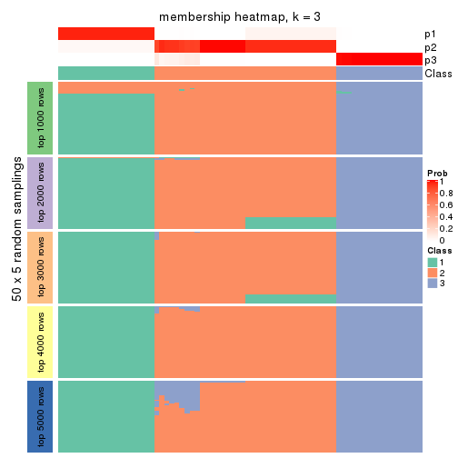
membership_heatmap(res, k = 4)

membership_heatmap(res, k = 5)
membership_heatmap(res, k = 6)
As soon as we have had the classes for columns, we can look for signatures which are significantly different between classes which can be candidate marks for certain classes. Following are the heatmaps for signatures.
Signature heatmaps where rows are scaled:
get_signatures(res, k = 2)
get_signatures(res, k = 3)
get_signatures(res, k = 4)
get_signatures(res, k = 5)
get_signatures(res, k = 6)
Signature heatmaps where rows are not scaled:
get_signatures(res, k = 2, scale_rows = FALSE)
get_signatures(res, k = 3, scale_rows = FALSE)
get_signatures(res, k = 4, scale_rows = FALSE)

get_signatures(res, k = 5, scale_rows = FALSE)
get_signatures(res, k = 6, scale_rows = FALSE)
Compare the overlap of signatures from different k:
compare_signatures(res)
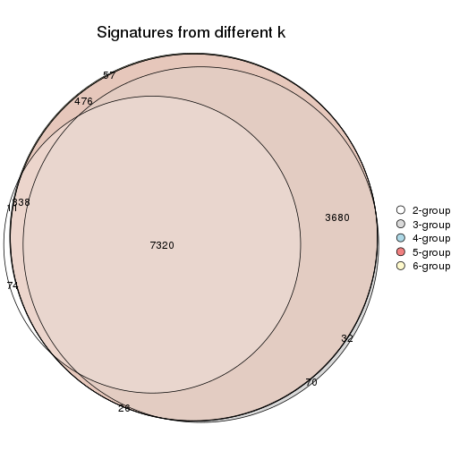
get_signature() returns a data frame invisibly. TO get the list of signatures, the function
call should be assigned to a variable explicitly. In following code, if plot argument is set
to FALSE, no heatmap is plotted while only the differential analysis is performed.
# code only for demonstration
tb = get_signature(res, k = ..., plot = FALSE)
An example of the output of tb is:
#> which_row fdr mean_1 mean_2 scaled_mean_1 scaled_mean_2 km
#> 1 38 0.042760348 8.373488 9.131774 -0.5533452 0.5164555 1
#> 2 40 0.018707592 7.106213 8.469186 -0.6173731 0.5762149 1
#> 3 55 0.019134737 10.221463 11.207825 -0.6159697 0.5749050 1
#> 4 59 0.006059896 5.921854 7.869574 -0.6899429 0.6439467 1
#> 5 60 0.018055526 8.928898 10.211722 -0.6204761 0.5791110 1
#> 6 98 0.009384629 15.714769 14.887706 0.6635654 -0.6193277 2
...
The columns in tb are:
which_row: row indices corresponding to the input matrix.fdr: FDR for the differential test. mean_x: The mean value in group x.scaled_mean_x: The mean value in group x after rows are scaled.km: Row groups if k-means clustering is applied to rows.UMAP plot which shows how samples are separated.
dimension_reduction(res, k = 2, method = "UMAP")
dimension_reduction(res, k = 3, method = "UMAP")
dimension_reduction(res, k = 4, method = "UMAP")
dimension_reduction(res, k = 5, method = "UMAP")
dimension_reduction(res, k = 6, method = "UMAP")
Following heatmap shows how subgroups are split when increasing k:
collect_classes(res)
If matrix rows can be associated to genes, consider to use GO_Enrichment(res,
...) to perform function enrichment for the signature genes.
sessionInfo()
#> R version 3.6.0 (2019-04-26)
#> Platform: x86_64-pc-linux-gnu (64-bit)
#> Running under: CentOS Linux 7 (Core)
#>
#> Matrix products: default
#> BLAS: /usr/lib64/libblas.so.3.4.2
#> LAPACK: /usr/lib64/liblapack.so.3.4.2
#>
#> locale:
#> [1] LC_CTYPE=en_GB.UTF-8 LC_NUMERIC=C LC_TIME=en_GB.UTF-8
#> [4] LC_COLLATE=en_GB.UTF-8 LC_MONETARY=en_GB.UTF-8 LC_MESSAGES=en_GB.UTF-8
#> [7] LC_PAPER=en_GB.UTF-8 LC_NAME=C LC_ADDRESS=C
#> [10] LC_TELEPHONE=C LC_MEASUREMENT=en_GB.UTF-8 LC_IDENTIFICATION=C
#>
#> attached base packages:
#> [1] grid parallel stats4 stats graphics grDevices utils datasets methods
#> [10] base
#>
#> other attached packages:
#> [1] genefilter_1.66.0 ComplexHeatmap_2.1.1 markdown_1.1
#> [4] knitr_1.26 cola_1.3.2 SummarizedExperiment_1.14.1
#> [7] DelayedArray_0.10.0 BiocParallel_1.18.1 matrixStats_0.55.0
#> [10] Biobase_2.44.0 GenomicRanges_1.36.1 GenomeInfoDb_1.20.0
#> [13] IRanges_2.18.3 S4Vectors_0.22.1 BiocGenerics_0.30.0
#> [16] GetoptLong_0.1.7
#>
#> loaded via a namespace (and not attached):
#> [1] bitops_1.0-6 bit64_0.9-7 doParallel_1.0.15 RColorBrewer_1.1-2
#> [5] httr_1.4.1 backports_1.1.5 tools_3.6.0 R6_2.4.1
#> [9] DBI_1.0.0 lazyeval_0.2.2 colorspace_1.4-1 withr_2.1.2
#> [13] tidyselect_0.2.5 gridExtra_2.3 bit_1.1-14 compiler_3.6.0
#> [17] xml2_1.2.2 microbenchmark_1.4-7 pkgmaker_0.28 slam_0.1-46
#> [21] scales_1.1.0 NMF_0.23.6 stringr_1.4.0 digest_0.6.23
#> [25] XVector_0.24.0 pkgconfig_2.0.3 bibtex_0.4.2 highr_0.8
#> [29] rlang_0.4.2 GlobalOptions_0.1.1 RSQLite_2.1.2 impute_1.58.0
#> [33] shape_1.4.4 mclust_5.4.5 dendextend_1.12.0 dplyr_0.8.3
#> [37] RCurl_1.95-4.12 magrittr_1.5 GenomeInfoDbData_1.2.1 Matrix_1.2-17
#> [41] Rcpp_1.0.3 munsell_0.5.0 viridis_0.5.1 lifecycle_0.1.0
#> [45] stringi_1.4.3 zlibbioc_1.30.0 plyr_1.8.4 blob_1.2.0
#> [49] crayon_1.3.4 lattice_0.20-38 splines_3.6.0 annotate_1.62.0
#> [53] circlize_0.4.9 zeallot_0.1.0 pillar_1.4.2 rjson_0.2.20
#> [57] rngtools_1.4 reshape2_1.4.3 codetools_0.2-16 XML_3.98-1.20
#> [61] glue_1.3.1 evaluate_0.14 vctrs_0.2.0 png_0.1-7
#> [65] foreach_1.4.7 polyclip_1.10-0 gtable_0.3.0 purrr_0.3.3
#> [69] clue_0.3-57 assertthat_0.2.1 ggplot2_3.2.1 xfun_0.11
#> [73] gridBase_0.4-7 eulerr_6.0.0 xtable_1.8-4 skmeans_0.2-11
#> [77] survival_2.44-1.1 viridisLite_0.3.0 tibble_2.1.3 iterators_1.0.12
#> [81] memoise_1.1.0 AnnotationDbi_1.46.1 registry_0.5-1 GTF_0.0.1
#> [85] cluster_2.1.0 brew_1.0-6